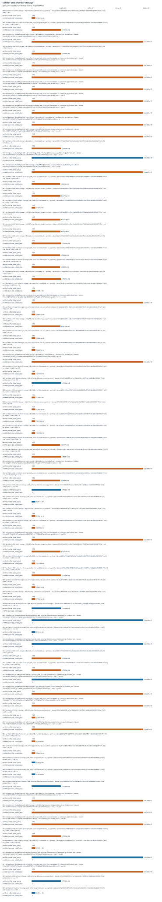
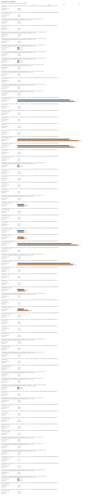

Recorded run profile: paper. Results describe the measured platform and dataset recorded on each row. Desktop and loopback smoke runs are not Raspberry Pi or remote-host evidence. Synthetic fixtures are not real chain workloads. Ethereum RPC JSON replay does not validate native finality or integrate sharded consensus. Verifier-local offloading is not compression or a system-wide storage saving; provider state must be counted separately.
Valid records: 421. Successful: 420. Failed: 1. Malformed lines: 0.
Exactly seven whole-comment rows; evidence status does not assert reviewer acceptance.
| comment_id | whole_comment_scope | status | available_evidence | missing_evidence |
|---|---|---|---|---|
| R1-1 | Storage accounting and provider-side overhead | measured_here | storage_accounting; provider_latency; filesystem | |
| R1-2 | IoT deployment and blockchain integration scope | partial | memory_pressure; filesystem | real_pi_platform; remote_tcp; energy; service_disconnect; native_finality |
| R2-1 | Evaluation on constrained hardware | partial | memory_pressure | real_pi_platform |
| R2-2 | CPU, RAM and latency measurements | measured_here | cpu; ram; local_latency | |
| R2-3 | Presentation of experimental evidence | measured_here | presentation | |
| R2-4 | Reproducible repository, real data and hardware evidence | partial | repository_metadata; real_data | real_pi_platform |
| R2-8 | Real-world benchmarking | partial | real_data | real_pi_platform |
| evidence | status | reason |
|---|---|---|
| real_pi_platform | missing | No successful measurement is backed by a Raspberry Pi system device model; a platform label or desktop smoke run is insufficient. |
| remote_tcp | missing | No successful TCP measurement records distinct client/server hostnames or device IDs; loopback does not establish a remote deployment. |
| real_data | measured_here | Real-data measurements record source metadata and an input hash. |
| energy | missing | No measured energy in joules is present; CPU time and estimated power are not energy measurements. |
| filesystem | measured_here | Storage experiment includes actual allocated/filesystem byte measurements. |
| memory_pressure | measured_here | Memory-pressure experiment records an enforced limit or pressure configuration. |
| service_disconnect | missing | No observed service-disconnection test on distinct TCP hosts is present; in-process fault injection does not establish this evidence. |
| native_finality | missing | Native finality and sharded-consensus integration are absent. Ethereum RPC JSON replay is an ingestion/verification adapter, not native finality validation or consensus integration. |
| storage_accounting | measured_here | Verifier and provider byte accounting is available. |
| provider_latency | measured_here | Provider latency is measured. |
| cpu | measured_here | CPU-time or CPU-utilization metrics are present. |
| ram | measured_here | Resident/peak memory metrics are present. |
| local_latency | measured_here | Local latency metrics are present. |
| presentation | measured_here | This run provides machine-readable tables, escaped LaTeX and an offline report; manuscript revision and reviewer acceptance are not assessed. |
| repository_metadata | measured_here | Run metadata records a code version and configuration; public repository availability is not verified. |
| experiment | records | successful |
|---|---|---|
| original_e2 | 40 | 40 |
| local | 75 | 75 |
| archive_retrieval | 15 | 15 |
| network | 0 | 0 |
| storage | 75 | 75 |
| provider | 75 | 75 |
| migration | 0 | 0 |
| integrity | 75 | 75 |
| memory_pressure | 60 | 60 |
| disconnect | 0 | 0 |
| energy_workload | 5 | 5 |
| energy | 0 | 0 |
| real_dataset | 0 | 0 |
| native_finality | 0 | 0 |
Individual records; no pooling or inferred confidence intervals.


| experiment | case_id | role | platform | data_kind | status | metrics | metrics.accept_median_ms | metrics.accepted | metrics.accounting_scope | metrics.baseline_rss_bytes | metrics.canonical_envelope_overhead_bytes | metrics.cases | metrics.certificate_bytes | metrics.cpu_ms_per_query | metrics.descriptor_serialized_bytes | metrics.epoch_substitution_rejected | metrics.failures | metrics.honest | metrics.mean_json_body_bytes | metrics.measured_duration_seconds | metrics.median_ms | metrics.memory_limit_mib | metrics.mode | metrics.mode_substitution_rejected | metrics.n | metrics.n_prime | metrics.operational_total_bytes | metrics.p95_ms | metrics.p99_ms | metrics.paper_descriptor_bytes | metrics.payload_read_bytes_per_query | metrics.payload_tamper_rejected | metrics.peak_rss_bytes | metrics.pressure_buffer_bytes | metrics.provider_allocated_bytes | metrics.provider_cpu_ms_per_query | metrics.provider_file_count | metrics.provider_internal_cached_support_bytes | metrics.provider_payload_bytes | metrics.provider_support_bytes | metrics.provider_total_bytes | metrics.queries | metrics.raw_opaque_payload_bytes | metrics.root_hex_tamper_rejected | metrics.rss_bytes | metrics.setup_allocated_bytes | metrics.setup_file_count | metrics.setup_payload_bytes | metrics.setup_signing_key_bytes | metrics.setup_support_bytes | metrics.setup_total_bytes | metrics.shard_substitution_rejected | metrics.signature_hex_tamper_rejected | metrics.support_metadata_bytes | metrics.support_read_bytes_per_query | metrics.total_materialized_bytes | metrics.verifier_allocated_bytes | metrics.verifier_file_count | metrics.verifier_payload_bytes | metrics.verifier_support_bytes | metrics.verifier_total_bytes | metrics.witness_generate_median_ms | platform.architecture | platform.cpu_count | platform.hostname | platform.kernel | platform.machine_id | platform.machine_id_source | platform.mem_total_bytes | platform.network.available | platform.network.interfaces | platform.openssl | platform.os.id | platform.os.name | platform.os.pretty_name | platform.os.version | platform.os.version_id | platform.pi_model | platform.platform | platform.python | platform.python_implementation | platform.result_storage.block_device | platform.result_storage.device | platform.result_storage.filesystem | platform.result_storage.free_bytes | platform.result_storage.mountpoint | platform.result_storage.path | platform.result_storage.total_bytes | platform.result_storage.used_bytes | platform.storage.block_device | platform.storage.device | platform.storage.filesystem | platform.storage.free_bytes | platform.storage.mountpoint | platform.storage.path | platform.storage.total_bytes | platform.storage.used_bytes | provenance.cache_state | provenance.chain_id | provenance.client_machine_id | provenance.cpu_scope | provenance.dataset_sha256 | provenance.dataset_source.acquired_at_utc | provenance.dataset_source.boundary_snapshots_rechecked | provenance.dataset_source.chain_id_rechecked | provenance.dataset_source.finality_basis | provenance.dataset_source.finalized_head_after.hash | provenance.dataset_source.finalized_head_after.number | provenance.dataset_source.finalized_head_after.parentHash | provenance.dataset_source.full_transactions | provenance.dataset_source.generator | provenance.dataset_source.initial_finalized_head.hash | provenance.dataset_source.initial_finalized_head.number | provenance.dataset_source.initial_finalized_head.parentHash | provenance.dataset_source.payload_encoding | provenance.dataset_source.rpc_methods | provenance.dataset_source.source | provenance.implementation | provenance.memory_limit_kind | provenance.memory_limit_mib | provenance.memory_scope | provenance.message | provenance.mode | provenance.n | provenance.native_finality_verified | provenance.network_kind | provenance.pressure_mib | provenance.profile | provenance.provider_case_id | provenance.queries | provenance.sample_count | provenance.scheme | provenance.scope | provenance.selected_count | provenance.selected_payload_sha256 | provenance.selection | provenance.server_machine_id | provenance.source | provenance.storage_scope | provenance.timing_scope | provenance.transport | provenance.trial | provenance.trust_anchor | provenance.type | provenance.warmup | provenance.wire_format | provenance.workload_seed |
|---|---|---|---|---|---|---|---|---|---|---|---|---|---|---|---|---|---|---|---|---|---|---|---|---|---|---|---|---|---|---|---|---|---|---|---|---|---|---|---|---|---|---|---|---|---|---|---|---|---|---|---|---|---|---|---|---|---|---|---|---|---|---|---|---|---|---|---|---|---|---|---|---|---|---|---|---|---|---|---|---|---|---|---|---|---|---|---|---|---|---|---|---|---|---|---|---|---|---|---|---|---|---|---|---|---|---|---|---|---|---|---|---|---|---|---|---|---|---|---|---|---|---|---|---|---|---|---|---|---|---|---|---|---|---|---|---|---|---|---|---|---|---|---|---|---|---|---|
| storage | 0000-synthetic-n512-full-t2-storage | hpc | synthetic | ok | regular file lengths; allocated file blocks also reported; excludes directories, inodes, journal, and OS cache | 18432 | 253 | 908 | full | 512 | 512 | 1101397 | 126 | 12681216 | 516 | 0 | 1067008 | 32736 | 1100489 | 1048576 | 24576 | 1 | 0 | 32 | 0 | 32 | 174 | 1101429 | 24576 | 1 | 0 | 0 | 908 | x86_64 | 96 | ltu-hpc-2.latrobe.edu.au | 4.18.0-553.120.1.el8_10.x86_64 | fd4458b75367f59ff7c09494ea573e5e7a5263a2584218cc99f37f023a3aa2d8 | linux_machine_id_sha256 | 403783344128 | True | [{"is_wireless": false, "name": "enp63s0", "operstate": "up"}, {"is_wireless": false, "name": "lo", "operstate": "unknown"}] | OpenSSL 1.1.1k FIPS 25 Mar 2021 | rhel | Red Hat Enterprise Linux | Red Hat Enterprise Linux 8.10 (Ootpa) | 8.10 (Ootpa) | 8.10 | None | Linux | 3.11.5 | CPython | None | None | nfs4 | 532603207680 | /data/group | /data/group/xulab/home/zxu/msi_pi_suite/outputs/hpc_real_422173 | 536870912000 | 4267704320 | None | None | nfs4 | 532603207680 | /data/group | /data/group/xulab/home/zxu/msi_pi_suite | 536870912000 | 4267704320 | OS page cache uncontrolled; warm query repetition; no cold-flash claim | None | fd4458b75367f59ff7c09494ea573e5e7a5263a2584218cc99f37f023a3aa2d8 | b016c29f4de90f5b1cf3a216da5a605c33b87f5b41cbb2b6bd5568949c797cef | sha256-counter-v1 | synthetic | full | 512 | False | unspecified | paper | None | 512 | 399484347219683dce319075ea78057e1e8ffcce90859b513ec913109fec9398 | contiguous prefix | fd4458b75367f59ff7c09494ea573e5e7a5263a2584218cc99f37f023a3aa2d8 | logical role ownership; experiment fixtures and setup reported separately | local | 2 | experiment-generated Ed25519 descriptor provisioned at setup | json proof fixture | ||||||||||||||||||||||||||||||||||||||||||||||||||||||||||
| provider | 0000-synthetic-n512-full-t2-provider | provider | synthetic | ok | 6.308451 | 6.95403475 | 2084.0 | 0.3341420625 | 16 | None | 288.0 | 2.4971845 | x86_64 | 96 | ltu-hpc-2.latrobe.edu.au | 4.18.0-553.120.1.el8_10.x86_64 | fd4458b75367f59ff7c09494ea573e5e7a5263a2584218cc99f37f023a3aa2d8 | linux_machine_id_sha256 | 403783344128 | True | [{"is_wireless": false, "name": "enp63s0", "operstate": "up"}, {"is_wireless": false, "name": "lo", "operstate": "unknown"}] | OpenSSL 1.1.1k FIPS 25 Mar 2021 | rhel | Red Hat Enterprise Linux | Red Hat Enterprise Linux 8.10 (Ootpa) | 8.10 (Ootpa) | 8.10 | None | Linux | 3.11.5 | CPython | None | None | nfs4 | 532603207680 | /data/group | /data/group/xulab/home/zxu/msi_pi_suite/outputs/hpc_real_422173 | 536870912000 | 4267704320 | None | None | nfs4 | 532603207680 | /data/group | /data/group/xulab/home/zxu/msi_pi_suite | 536870912000 | 4267704320 | OS page cache uncontrolled; warm query repetition; no cold-flash claim | None | fd4458b75367f59ff7c09494ea573e5e7a5263a2584218cc99f37f023a3aa2d8 | b016c29f4de90f5b1cf3a216da5a605c33b87f5b41cbb2b6bd5568949c797cef | sha256-counter-v1 | synthetic | full | 512 | False | unspecified | paper | None | 16 | 512 | 399484347219683dce319075ea78057e1e8ffcce90859b513ec913109fec9398 | contiguous prefix | fd4458b75367f59ff7c09494ea573e5e7a5263a2584218cc99f37f023a3aa2d8 | proof_fixture_preparation | logical role ownership; experiment fixtures and setup reported separately | payload/support read and proof construction; JSON serialization and network excluded | local | 2 | experiment-generated Ed25519 descriptor provisioned at setup | json proof fixture | ||||||||||||||||||||||||||||||||||||||||||||||||||||||||||||||||||||||||||||
| local | 0000-synthetic-n512-full-t2-local | hpc | synthetic | ok | 0.1710875 | 200 | 22716416 | 0.170926375 | 0 | 0.294709417 | 0.17154350000000002 | 0 | 0.1761497 | 0.18265220999999998 | 111513600 | 0 | 200 | 23109632 | x86_64 | 96 | ltu-hpc-2.latrobe.edu.au | 4.18.0-553.120.1.el8_10.x86_64 | fd4458b75367f59ff7c09494ea573e5e7a5263a2584218cc99f37f023a3aa2d8 | linux_machine_id_sha256 | 403783344128 | True | [{"is_wireless": false, "name": "enp63s0", "operstate": "up"}, {"is_wireless": false, "name": "lo", "operstate": "unknown"}] | OpenSSL 1.1.1k FIPS 25 Mar 2021 | rhel | Red Hat Enterprise Linux | Red Hat Enterprise Linux 8.10 (Ootpa) | 8.10 (Ootpa) | 8.10 | None | Linux | 3.11.5 | CPython | None | None | nfs4 | 532603207680 | /data/group | /data/group/xulab/home/zxu/msi_pi_suite/outputs/hpc_real_422173 | 536870912000 | 4267704320 | None | None | nfs4 | 532603207680 | /data/group | /data/group/xulab/home/zxu/msi_pi_suite | 536870912000 | 4267704320 | OS page cache uncontrolled; warm query repetition; no cold-flash claim | None | fd4458b75367f59ff7c09494ea573e5e7a5263a2584218cc99f37f023a3aa2d8 | verifier acceptance CPU only | b016c29f4de90f5b1cf3a216da5a605c33b87f5b41cbb2b6bd5568949c797cef | sha256-counter-v1 | synthetic | persistent_adapter_original_crypto | none | 0 | fresh worker, one live response, optional pressure buffer; fixtures excluded | full | 512 | False | unspecified | 0 | paper | None | 512 | 399484347219683dce319075ea78057e1e8ffcce90859b513ec913109fec9398 | contiguous prefix | fd4458b75367f59ff7c09494ea573e5e7a5263a2584218cc99f37f023a3aa2d8 | pool | logical role ownership; experiment fixtures and setup reported separately | pre-delivered response acceptance only | local | 2 | experiment-generated Ed25519 descriptor provisioned at setup | json proof fixture | |||||||||||||||||||||||||||||||||||||||||||||||||||||||||||||||||
| memory_pressure | 0000-synthetic-n512-full-t2-memory_pressure | hpc | synthetic | ok | 0.170884 | 200 | 89804800 | 0.17071742499999998 | 0 | 0.293733436 | 0.17131200000000002 | 256 | 0.1757613 | 0.187963 | 111513600 | 67108864 | 200 | 89804800 | x86_64 | 96 | ltu-hpc-2.latrobe.edu.au | 4.18.0-553.120.1.el8_10.x86_64 | fd4458b75367f59ff7c09494ea573e5e7a5263a2584218cc99f37f023a3aa2d8 | linux_machine_id_sha256 | 403783344128 | True | [{"is_wireless": false, "name": "enp63s0", "operstate": "up"}, {"is_wireless": false, "name": "lo", "operstate": "unknown"}] | OpenSSL 1.1.1k FIPS 25 Mar 2021 | rhel | Red Hat Enterprise Linux | Red Hat Enterprise Linux 8.10 (Ootpa) | 8.10 (Ootpa) | 8.10 | None | Linux | 3.11.5 | CPython | None | None | nfs4 | 532603207680 | /data/group | /data/group/xulab/home/zxu/msi_pi_suite/outputs/hpc_real_422173 | 536870912000 | 4267704320 | None | None | nfs4 | 532603207680 | /data/group | /data/group/xulab/home/zxu/msi_pi_suite | 536870912000 | 4267704320 | OS page cache uncontrolled; warm query repetition; no cold-flash claim | None | fd4458b75367f59ff7c09494ea573e5e7a5263a2584218cc99f37f023a3aa2d8 | verifier acceptance CPU only | b016c29f4de90f5b1cf3a216da5a605c33b87f5b41cbb2b6bd5568949c797cef | sha256-counter-v1 | synthetic | persistent_adapter_original_crypto | RLIMIT_AS virtual address space | 256 | fresh worker, one live response, optional pressure buffer; fixtures excluded | full | 512 | False | unspecified | 64 | paper | None | 512 | 399484347219683dce319075ea78057e1e8ffcce90859b513ec913109fec9398 | contiguous prefix | fd4458b75367f59ff7c09494ea573e5e7a5263a2584218cc99f37f023a3aa2d8 | pool | logical role ownership; experiment fixtures and setup reported separately | pre-delivered response acceptance only | local | 2 | experiment-generated Ed25519 descriptor provisioned at setup | json proof fixture | |||||||||||||||||||||||||||||||||||||||||||||||||||||||||||||||||
| integrity | 0000-synthetic-n512-full-t2-integrity | hpc | synthetic | ok | 7 | True | 0 | True | True | True | True | True | True | x86_64 | 96 | ltu-hpc-2.latrobe.edu.au | 4.18.0-553.120.1.el8_10.x86_64 | fd4458b75367f59ff7c09494ea573e5e7a5263a2584218cc99f37f023a3aa2d8 | linux_machine_id_sha256 | 403783344128 | True | [{"is_wireless": false, "name": "enp63s0", "operstate": "up"}, {"is_wireless": false, "name": "lo", "operstate": "unknown"}] | OpenSSL 1.1.1k FIPS 25 Mar 2021 | rhel | Red Hat Enterprise Linux | Red Hat Enterprise Linux 8.10 (Ootpa) | 8.10 (Ootpa) | 8.10 | None | Linux | 3.11.5 | CPython | None | None | nfs4 | 532603207680 | /data/group | /data/group/xulab/home/zxu/msi_pi_suite/outputs/hpc_real_422173 | 536870912000 | 4267704320 | None | None | nfs4 | 532603207680 | /data/group | /data/group/xulab/home/zxu/msi_pi_suite | 536870912000 | 4267704320 | OS page cache uncontrolled; warm query repetition; no cold-flash claim | None | fd4458b75367f59ff7c09494ea573e5e7a5263a2584218cc99f37f023a3aa2d8 | b016c29f4de90f5b1cf3a216da5a605c33b87f5b41cbb2b6bd5568949c797cef | sha256-counter-v1 | synthetic | full | 512 | False | unspecified | paper | None | finite adversarial regression cases, not a cryptographic security bound | 512 | 399484347219683dce319075ea78057e1e8ffcce90859b513ec913109fec9398 | contiguous prefix | fd4458b75367f59ff7c09494ea573e5e7a5263a2584218cc99f37f023a3aa2d8 | logical role ownership; experiment fixtures and setup reported separately | local | 2 | experiment-generated Ed25519 descriptor provisioned at setup | json proof fixture | |||||||||||||||||||||||||||||||||||||||||||||||||||||||||||||||||||||||||||||
| storage | 0001-synthetic-n4096-ext_cached-t1-storage | hpc | synthetic | ok | regular file lengths; allocated file blocks also reported; excludes directories, inodes, journal, and OS cache | 147456 | 253 | 919 | ext_cached | 4096 | 4096 | 8799863 | 126 | 100761600 | 4100 | 262112 | 8536064 | 262112 | 8798944 | 8388608 | 24576 | 1 | 0 | 32 | 0 | 32 | 189 | 8799895 | 24576 | 1 | 0 | 0 | 919 | x86_64 | 96 | ltu-hpc-2.latrobe.edu.au | 4.18.0-553.120.1.el8_10.x86_64 | fd4458b75367f59ff7c09494ea573e5e7a5263a2584218cc99f37f023a3aa2d8 | linux_machine_id_sha256 | 403783344128 | True | [{"is_wireless": false, "name": "enp63s0", "operstate": "up"}, {"is_wireless": false, "name": "lo", "operstate": "unknown"}] | OpenSSL 1.1.1k FIPS 25 Mar 2021 | rhel | Red Hat Enterprise Linux | Red Hat Enterprise Linux 8.10 (Ootpa) | 8.10 (Ootpa) | 8.10 | None | Linux | 3.11.5 | CPython | None | None | nfs4 | 532603207680 | /data/group | /data/group/xulab/home/zxu/msi_pi_suite/outputs/hpc_real_422173 | 536870912000 | 4267704320 | None | None | nfs4 | 532603207680 | /data/group | /data/group/xulab/home/zxu/msi_pi_suite | 536870912000 | 4267704320 | OS page cache uncontrolled; warm query repetition; no cold-flash claim | None | fd4458b75367f59ff7c09494ea573e5e7a5263a2584218cc99f37f023a3aa2d8 | b016c29f4de90f5b1cf3a216da5a605c33b87f5b41cbb2b6bd5568949c797cef | sha256-counter-v1 | synthetic | ext_cached | 4096 | False | unspecified | paper | None | 4096 | 0687bb27f05141a424b31da9247a1c02625c10a06caaa5ff34a33daeb97eabec | contiguous prefix | fd4458b75367f59ff7c09494ea573e5e7a5263a2584218cc99f37f023a3aa2d8 | logical role ownership; experiment fixtures and setup reported separately | local | 1 | experiment-generated Ed25519 descriptor provisioned at setup | json proof fixture | ||||||||||||||||||||||||||||||||||||||||||||||||||||||||||
| provider | 0001-synthetic-n4096-ext_cached-t1-provider | provider | synthetic | ok | 6.584841 | 7.3391255 | 2084.0 | 0.3473256875 | 16 | None | 384.0 | 2.619871 | x86_64 | 96 | ltu-hpc-2.latrobe.edu.au | 4.18.0-553.120.1.el8_10.x86_64 | fd4458b75367f59ff7c09494ea573e5e7a5263a2584218cc99f37f023a3aa2d8 | linux_machine_id_sha256 | 403783344128 | True | [{"is_wireless": false, "name": "enp63s0", "operstate": "up"}, {"is_wireless": false, "name": "lo", "operstate": "unknown"}] | OpenSSL 1.1.1k FIPS 25 Mar 2021 | rhel | Red Hat Enterprise Linux | Red Hat Enterprise Linux 8.10 (Ootpa) | 8.10 (Ootpa) | 8.10 | None | Linux | 3.11.5 | CPython | None | None | nfs4 | 532603207680 | /data/group | /data/group/xulab/home/zxu/msi_pi_suite/outputs/hpc_real_422173 | 536870912000 | 4267704320 | None | None | nfs4 | 532603207680 | /data/group | /data/group/xulab/home/zxu/msi_pi_suite | 536870912000 | 4267704320 | OS page cache uncontrolled; warm query repetition; no cold-flash claim | None | fd4458b75367f59ff7c09494ea573e5e7a5263a2584218cc99f37f023a3aa2d8 | b016c29f4de90f5b1cf3a216da5a605c33b87f5b41cbb2b6bd5568949c797cef | sha256-counter-v1 | synthetic | ext_cached | 4096 | False | unspecified | paper | None | 16 | 4096 | 0687bb27f05141a424b31da9247a1c02625c10a06caaa5ff34a33daeb97eabec | contiguous prefix | fd4458b75367f59ff7c09494ea573e5e7a5263a2584218cc99f37f023a3aa2d8 | proof_fixture_preparation | logical role ownership; experiment fixtures and setup reported separately | payload/support read and proof construction; JSON serialization and network excluded | local | 1 | experiment-generated Ed25519 descriptor provisioned at setup | json proof fixture | ||||||||||||||||||||||||||||||||||||||||||||||||||||||||||||||||||||||||||||
| local | 0001-synthetic-n4096-ext_cached-t1-local | hpc | synthetic | ok | 0.17554399999999998 | 200 | 22765568 | 0.175651375 | 0 | 0.313635143 | 0.1760715 | 0 | 0.1802709 | 0.1873648299999994 | 120139776 | 0 | 200 | 23158784 | x86_64 | 96 | ltu-hpc-2.latrobe.edu.au | 4.18.0-553.120.1.el8_10.x86_64 | fd4458b75367f59ff7c09494ea573e5e7a5263a2584218cc99f37f023a3aa2d8 | linux_machine_id_sha256 | 403783344128 | True | [{"is_wireless": false, "name": "enp63s0", "operstate": "up"}, {"is_wireless": false, "name": "lo", "operstate": "unknown"}] | OpenSSL 1.1.1k FIPS 25 Mar 2021 | rhel | Red Hat Enterprise Linux | Red Hat Enterprise Linux 8.10 (Ootpa) | 8.10 (Ootpa) | 8.10 | None | Linux | 3.11.5 | CPython | None | None | nfs4 | 532603207680 | /data/group | /data/group/xulab/home/zxu/msi_pi_suite/outputs/hpc_real_422173 | 536870912000 | 4267704320 | None | None | nfs4 | 532603207680 | /data/group | /data/group/xulab/home/zxu/msi_pi_suite | 536870912000 | 4267704320 | OS page cache uncontrolled; warm query repetition; no cold-flash claim | None | fd4458b75367f59ff7c09494ea573e5e7a5263a2584218cc99f37f023a3aa2d8 | verifier acceptance CPU only | b016c29f4de90f5b1cf3a216da5a605c33b87f5b41cbb2b6bd5568949c797cef | sha256-counter-v1 | synthetic | persistent_adapter_original_crypto | none | 0 | fresh worker, one live response, optional pressure buffer; fixtures excluded | ext_cached | 4096 | False | unspecified | 0 | paper | None | 4096 | 0687bb27f05141a424b31da9247a1c02625c10a06caaa5ff34a33daeb97eabec | contiguous prefix | fd4458b75367f59ff7c09494ea573e5e7a5263a2584218cc99f37f023a3aa2d8 | pool | logical role ownership; experiment fixtures and setup reported separately | pre-delivered response acceptance only | local | 1 | experiment-generated Ed25519 descriptor provisioned at setup | json proof fixture | |||||||||||||||||||||||||||||||||||||||||||||||||||||||||||||||||
| memory_pressure | 0001-synthetic-n4096-ext_cached-t1-memory_pressure | hpc | synthetic | ok | 0.175431 | 200 | 90009600 | 0.17656254000000002 | 0 | 0.300406063 | 0.1758115 | 256 | 0.18028544999999999 | 0.22601365999999928 | 120139776 | 67108864 | 200 | 90009600 | x86_64 | 96 | ltu-hpc-2.latrobe.edu.au | 4.18.0-553.120.1.el8_10.x86_64 | fd4458b75367f59ff7c09494ea573e5e7a5263a2584218cc99f37f023a3aa2d8 | linux_machine_id_sha256 | 403783344128 | True | [{"is_wireless": false, "name": "enp63s0", "operstate": "up"}, {"is_wireless": false, "name": "lo", "operstate": "unknown"}] | OpenSSL 1.1.1k FIPS 25 Mar 2021 | rhel | Red Hat Enterprise Linux | Red Hat Enterprise Linux 8.10 (Ootpa) | 8.10 (Ootpa) | 8.10 | None | Linux | 3.11.5 | CPython | None | None | nfs4 | 532603207680 | /data/group | /data/group/xulab/home/zxu/msi_pi_suite/outputs/hpc_real_422173 | 536870912000 | 4267704320 | None | None | nfs4 | 532603207680 | /data/group | /data/group/xulab/home/zxu/msi_pi_suite | 536870912000 | 4267704320 | OS page cache uncontrolled; warm query repetition; no cold-flash claim | None | fd4458b75367f59ff7c09494ea573e5e7a5263a2584218cc99f37f023a3aa2d8 | verifier acceptance CPU only | b016c29f4de90f5b1cf3a216da5a605c33b87f5b41cbb2b6bd5568949c797cef | sha256-counter-v1 | synthetic | persistent_adapter_original_crypto | RLIMIT_AS virtual address space | 256 | fresh worker, one live response, optional pressure buffer; fixtures excluded | ext_cached | 4096 | False | unspecified | 64 | paper | None | 4096 | 0687bb27f05141a424b31da9247a1c02625c10a06caaa5ff34a33daeb97eabec | contiguous prefix | fd4458b75367f59ff7c09494ea573e5e7a5263a2584218cc99f37f023a3aa2d8 | pool | logical role ownership; experiment fixtures and setup reported separately | pre-delivered response acceptance only | local | 1 | experiment-generated Ed25519 descriptor provisioned at setup | json proof fixture | |||||||||||||||||||||||||||||||||||||||||||||||||||||||||||||||||
| integrity | 0001-synthetic-n4096-ext_cached-t1-integrity | hpc | synthetic | ok | 7 | True | 0 | True | True | True | True | True | True | x86_64 | 96 | ltu-hpc-2.latrobe.edu.au | 4.18.0-553.120.1.el8_10.x86_64 | fd4458b75367f59ff7c09494ea573e5e7a5263a2584218cc99f37f023a3aa2d8 | linux_machine_id_sha256 | 403783344128 | True | [{"is_wireless": false, "name": "enp63s0", "operstate": "up"}, {"is_wireless": false, "name": "lo", "operstate": "unknown"}] | OpenSSL 1.1.1k FIPS 25 Mar 2021 | rhel | Red Hat Enterprise Linux | Red Hat Enterprise Linux 8.10 (Ootpa) | 8.10 (Ootpa) | 8.10 | None | Linux | 3.11.5 | CPython | None | None | nfs4 | 532603207680 | /data/group | /data/group/xulab/home/zxu/msi_pi_suite/outputs/hpc_real_422173 | 536870912000 | 4267704320 | None | None | nfs4 | 532603207680 | /data/group | /data/group/xulab/home/zxu/msi_pi_suite | 536870912000 | 4267704320 | OS page cache uncontrolled; warm query repetition; no cold-flash claim | None | fd4458b75367f59ff7c09494ea573e5e7a5263a2584218cc99f37f023a3aa2d8 | b016c29f4de90f5b1cf3a216da5a605c33b87f5b41cbb2b6bd5568949c797cef | sha256-counter-v1 | synthetic | ext_cached | 4096 | False | unspecified | paper | None | finite adversarial regression cases, not a cryptographic security bound | 4096 | 0687bb27f05141a424b31da9247a1c02625c10a06caaa5ff34a33daeb97eabec | contiguous prefix | fd4458b75367f59ff7c09494ea573e5e7a5263a2584218cc99f37f023a3aa2d8 | logical role ownership; experiment fixtures and setup reported separately | local | 1 | experiment-generated Ed25519 descriptor provisioned at setup | json proof fixture | |||||||||||||||||||||||||||||||||||||||||||||||||||||||||||||||||||||||||||||
| storage | 0002-ethereum_rpc_finalized_json-n69-full-t3-storage | hpc | ethereum_rpc_finalized_json | ok | regular file lengths; allocated file blocks also reported; excludes directories, inodes, journal, and OS cache | 2484 | 253 | 910 | full | 69 | 128 | 33549759 | 126 | 1794048 | 73 | 0 | 33539949 | 8160 | 33548849 | 33537465 | 24576 | 1 | 0 | 32 | 0 | 32 | 166 | 33549791 | 24576 | 1 | 0 | 0 | 910 | x86_64 | 96 | ltu-hpc-2.latrobe.edu.au | 4.18.0-553.120.1.el8_10.x86_64 | fd4458b75367f59ff7c09494ea573e5e7a5263a2584218cc99f37f023a3aa2d8 | linux_machine_id_sha256 | 403783344128 | True | [{"is_wireless": false, "name": "enp63s0", "operstate": "up"}, {"is_wireless": false, "name": "lo", "operstate": "unknown"}] | OpenSSL 1.1.1k FIPS 25 Mar 2021 | rhel | Red Hat Enterprise Linux | Red Hat Enterprise Linux 8.10 (Ootpa) | 8.10 (Ootpa) | 8.10 | None | Linux | 3.11.5 | CPython | None | None | nfs4 | 532603207680 | /data/group | /data/group/xulab/home/zxu/msi_pi_suite/outputs/hpc_real_422173 | 536870912000 | 4267704320 | None | None | nfs4 | 532603207680 | /data/group | /data/group/xulab/home/zxu/msi_pi_suite | 536870912000 | 4267704320 | OS page cache uncontrolled; warm query repetition; no cold-flash claim | 1 | fd4458b75367f59ff7c09494ea573e5e7a5263a2584218cc99f37f023a3aa2d8 | 190ca4433f979dfd137e27c9ee04c0c9edd85b97027e9e1ff5322ba67f38fc60 | 2026-09-15T16:48:54.488349+00:00 | True | True | trusted RPC finalized tag; no native finality verification | 0x8abd9d3c538f12de779c556beb7f79370b66653f246ab854d9131be382b9d5ce | 25984095 | 0x477bc8b281580a46c3ec9252adeea485e33a4d7db371dc994408edf8fc09c6e8 | True | 0x9ad743d8c5200440339bfea0156398c1d1aa406635f7fe296c6deee2109cd29e | 25984063 | 0xd1d117cf5cc8aab3a9b168ada97339c4dbf6b0df95960f2b927fbec475f407a8 | canonical-json-utf8 | ["eth_chainId", "eth_getBlockByNumber"] | user-supplied Ethereum JSON-RPC endpoint; URL omitted | full | 69 | False | unspecified | paper | None | 69 | b30fd288c6fd25990944a24194c89dc578c58e3c230cc8ec278c49dc890c3c38 | contiguous prefix | fd4458b75367f59ff7c09494ea573e5e7a5263a2584218cc99f37f023a3aa2d8 | logical role ownership; experiment fixtures and setup reported separately | local | 3 | experiment-generated Ed25519 descriptor provisioned at setup | json proof fixture | ||||||||||||||||||||||||||||||||||||||||||||||
| provider | 0002-ethereum_rpc_finalized_json-n69-full-t3-provider | provider | ethereum_rpc_finalized_json | ok | 9.407831 | 12.9261615 | 482754.1875 | 2.1529514375 | 16 | None | 224.0 | 2.6123265 | x86_64 | 96 | ltu-hpc-2.latrobe.edu.au | 4.18.0-553.120.1.el8_10.x86_64 | fd4458b75367f59ff7c09494ea573e5e7a5263a2584218cc99f37f023a3aa2d8 | linux_machine_id_sha256 | 403783344128 | True | [{"is_wireless": false, "name": "enp63s0", "operstate": "up"}, {"is_wireless": false, "name": "lo", "operstate": "unknown"}] | OpenSSL 1.1.1k FIPS 25 Mar 2021 | rhel | Red Hat Enterprise Linux | Red Hat Enterprise Linux 8.10 (Ootpa) | 8.10 (Ootpa) | 8.10 | None | Linux | 3.11.5 | CPython | None | None | nfs4 | 532603207680 | /data/group | /data/group/xulab/home/zxu/msi_pi_suite/outputs/hpc_real_422173 | 536870912000 | 4267704320 | None | None | nfs4 | 532603207680 | /data/group | /data/group/xulab/home/zxu/msi_pi_suite | 536870912000 | 4267704320 | OS page cache uncontrolled; warm query repetition; no cold-flash claim | 1 | fd4458b75367f59ff7c09494ea573e5e7a5263a2584218cc99f37f023a3aa2d8 | 190ca4433f979dfd137e27c9ee04c0c9edd85b97027e9e1ff5322ba67f38fc60 | 2026-09-15T16:48:54.488349+00:00 | True | True | trusted RPC finalized tag; no native finality verification | 0x8abd9d3c538f12de779c556beb7f79370b66653f246ab854d9131be382b9d5ce | 25984095 | 0x477bc8b281580a46c3ec9252adeea485e33a4d7db371dc994408edf8fc09c6e8 | True | 0x9ad743d8c5200440339bfea0156398c1d1aa406635f7fe296c6deee2109cd29e | 25984063 | 0xd1d117cf5cc8aab3a9b168ada97339c4dbf6b0df95960f2b927fbec475f407a8 | canonical-json-utf8 | ["eth_chainId", "eth_getBlockByNumber"] | user-supplied Ethereum JSON-RPC endpoint; URL omitted | full | 69 | False | unspecified | paper | None | 16 | 69 | b30fd288c6fd25990944a24194c89dc578c58e3c230cc8ec278c49dc890c3c38 | contiguous prefix | fd4458b75367f59ff7c09494ea573e5e7a5263a2584218cc99f37f023a3aa2d8 | proof_fixture_preparation | logical role ownership; experiment fixtures and setup reported separately | payload/support read and proof construction; JSON serialization and network excluded | local | 3 | experiment-generated Ed25519 descriptor provisioned at setup | json proof fixture | ||||||||||||||||||||||||||||||||||||||||||||||||||||||||||||||||
| local | 0002-ethereum_rpc_finalized_json-n69-full-t3-local | hpc | ethereum_rpc_finalized_json | ok | 3.567728 | 200 | 22765568 | 3.82787939 | 0 | 1.339828991 | 3.568614 | 0 | 7.358409549999998 | 7.52842433 | 145305600 | 0 | 200 | 26025984 | x86_64 | 96 | ltu-hpc-2.latrobe.edu.au | 4.18.0-553.120.1.el8_10.x86_64 | fd4458b75367f59ff7c09494ea573e5e7a5263a2584218cc99f37f023a3aa2d8 | linux_machine_id_sha256 | 403783344128 | True | [{"is_wireless": false, "name": "enp63s0", "operstate": "up"}, {"is_wireless": false, "name": "lo", "operstate": "unknown"}] | OpenSSL 1.1.1k FIPS 25 Mar 2021 | rhel | Red Hat Enterprise Linux | Red Hat Enterprise Linux 8.10 (Ootpa) | 8.10 (Ootpa) | 8.10 | None | Linux | 3.11.5 | CPython | None | None | nfs4 | 532603207680 | /data/group | /data/group/xulab/home/zxu/msi_pi_suite/outputs/hpc_real_422173 | 536870912000 | 4267704320 | None | None | nfs4 | 532603207680 | /data/group | /data/group/xulab/home/zxu/msi_pi_suite | 536870912000 | 4267704320 | OS page cache uncontrolled; warm query repetition; no cold-flash claim | 1 | fd4458b75367f59ff7c09494ea573e5e7a5263a2584218cc99f37f023a3aa2d8 | verifier acceptance CPU only | 190ca4433f979dfd137e27c9ee04c0c9edd85b97027e9e1ff5322ba67f38fc60 | 2026-09-15T16:48:54.488349+00:00 | True | True | trusted RPC finalized tag; no native finality verification | 0x8abd9d3c538f12de779c556beb7f79370b66653f246ab854d9131be382b9d5ce | 25984095 | 0x477bc8b281580a46c3ec9252adeea485e33a4d7db371dc994408edf8fc09c6e8 | True | 0x9ad743d8c5200440339bfea0156398c1d1aa406635f7fe296c6deee2109cd29e | 25984063 | 0xd1d117cf5cc8aab3a9b168ada97339c4dbf6b0df95960f2b927fbec475f407a8 | canonical-json-utf8 | ["eth_chainId", "eth_getBlockByNumber"] | user-supplied Ethereum JSON-RPC endpoint; URL omitted | persistent_adapter_original_crypto | none | 0 | fresh worker, one live response, optional pressure buffer; fixtures excluded | full | 69 | False | unspecified | 0 | paper | None | 69 | b30fd288c6fd25990944a24194c89dc578c58e3c230cc8ec278c49dc890c3c38 | contiguous prefix | fd4458b75367f59ff7c09494ea573e5e7a5263a2584218cc99f37f023a3aa2d8 | pool | logical role ownership; experiment fixtures and setup reported separately | pre-delivered response acceptance only | local | 3 | experiment-generated Ed25519 descriptor provisioned at setup | json proof fixture | |||||||||||||||||||||||||||||||||||||||||||||||||||||
| memory_pressure | 0002-ethereum_rpc_finalized_json-n69-full-t3-memory_pressure | hpc | ethereum_rpc_finalized_json | ok | 3.5513205 | 200 | 90095616 | 3.823715035 | 0 | 1.343168072 | 3.551981 | 256 | 7.352324599999999 | 7.50453791 | 145305600 | 67108864 | 200 | 93167616 | x86_64 | 96 | ltu-hpc-2.latrobe.edu.au | 4.18.0-553.120.1.el8_10.x86_64 | fd4458b75367f59ff7c09494ea573e5e7a5263a2584218cc99f37f023a3aa2d8 | linux_machine_id_sha256 | 403783344128 | True | [{"is_wireless": false, "name": "enp63s0", "operstate": "up"}, {"is_wireless": false, "name": "lo", "operstate": "unknown"}] | OpenSSL 1.1.1k FIPS 25 Mar 2021 | rhel | Red Hat Enterprise Linux | Red Hat Enterprise Linux 8.10 (Ootpa) | 8.10 (Ootpa) | 8.10 | None | Linux | 3.11.5 | CPython | None | None | nfs4 | 532603207680 | /data/group | /data/group/xulab/home/zxu/msi_pi_suite/outputs/hpc_real_422173 | 536870912000 | 4267704320 | None | None | nfs4 | 532603207680 | /data/group | /data/group/xulab/home/zxu/msi_pi_suite | 536870912000 | 4267704320 | OS page cache uncontrolled; warm query repetition; no cold-flash claim | 1 | fd4458b75367f59ff7c09494ea573e5e7a5263a2584218cc99f37f023a3aa2d8 | verifier acceptance CPU only | 190ca4433f979dfd137e27c9ee04c0c9edd85b97027e9e1ff5322ba67f38fc60 | 2026-09-15T16:48:54.488349+00:00 | True | True | trusted RPC finalized tag; no native finality verification | 0x8abd9d3c538f12de779c556beb7f79370b66653f246ab854d9131be382b9d5ce | 25984095 | 0x477bc8b281580a46c3ec9252adeea485e33a4d7db371dc994408edf8fc09c6e8 | True | 0x9ad743d8c5200440339bfea0156398c1d1aa406635f7fe296c6deee2109cd29e | 25984063 | 0xd1d117cf5cc8aab3a9b168ada97339c4dbf6b0df95960f2b927fbec475f407a8 | canonical-json-utf8 | ["eth_chainId", "eth_getBlockByNumber"] | user-supplied Ethereum JSON-RPC endpoint; URL omitted | persistent_adapter_original_crypto | RLIMIT_AS virtual address space | 256 | fresh worker, one live response, optional pressure buffer; fixtures excluded | full | 69 | False | unspecified | 64 | paper | None | 69 | b30fd288c6fd25990944a24194c89dc578c58e3c230cc8ec278c49dc890c3c38 | contiguous prefix | fd4458b75367f59ff7c09494ea573e5e7a5263a2584218cc99f37f023a3aa2d8 | pool | logical role ownership; experiment fixtures and setup reported separately | pre-delivered response acceptance only | local | 3 | experiment-generated Ed25519 descriptor provisioned at setup | json proof fixture | |||||||||||||||||||||||||||||||||||||||||||||||||||||
| integrity | 0002-ethereum_rpc_finalized_json-n69-full-t3-integrity | hpc | ethereum_rpc_finalized_json | ok | 7 | True | 0 | True | True | True | True | True | True | x86_64 | 96 | ltu-hpc-2.latrobe.edu.au | 4.18.0-553.120.1.el8_10.x86_64 | fd4458b75367f59ff7c09494ea573e5e7a5263a2584218cc99f37f023a3aa2d8 | linux_machine_id_sha256 | 403783344128 | True | [{"is_wireless": false, "name": "enp63s0", "operstate": "up"}, {"is_wireless": false, "name": "lo", "operstate": "unknown"}] | OpenSSL 1.1.1k FIPS 25 Mar 2021 | rhel | Red Hat Enterprise Linux | Red Hat Enterprise Linux 8.10 (Ootpa) | 8.10 (Ootpa) | 8.10 | None | Linux | 3.11.5 | CPython | None | None | nfs4 | 532603207680 | /data/group | /data/group/xulab/home/zxu/msi_pi_suite/outputs/hpc_real_422173 | 536870912000 | 4267704320 | None | None | nfs4 | 532603207680 | /data/group | /data/group/xulab/home/zxu/msi_pi_suite | 536870912000 | 4267704320 | OS page cache uncontrolled; warm query repetition; no cold-flash claim | 1 | fd4458b75367f59ff7c09494ea573e5e7a5263a2584218cc99f37f023a3aa2d8 | 190ca4433f979dfd137e27c9ee04c0c9edd85b97027e9e1ff5322ba67f38fc60 | 2026-09-15T16:48:54.488349+00:00 | True | True | trusted RPC finalized tag; no native finality verification | 0x8abd9d3c538f12de779c556beb7f79370b66653f246ab854d9131be382b9d5ce | 25984095 | 0x477bc8b281580a46c3ec9252adeea485e33a4d7db371dc994408edf8fc09c6e8 | True | 0x9ad743d8c5200440339bfea0156398c1d1aa406635f7fe296c6deee2109cd29e | 25984063 | 0xd1d117cf5cc8aab3a9b168ada97339c4dbf6b0df95960f2b927fbec475f407a8 | canonical-json-utf8 | ["eth_chainId", "eth_getBlockByNumber"] | user-supplied Ethereum JSON-RPC endpoint; URL omitted | full | 69 | False | unspecified | paper | None | finite adversarial regression cases, not a cryptographic security bound | 69 | b30fd288c6fd25990944a24194c89dc578c58e3c230cc8ec278c49dc890c3c38 | contiguous prefix | fd4458b75367f59ff7c09494ea573e5e7a5263a2584218cc99f37f023a3aa2d8 | logical role ownership; experiment fixtures and setup reported separately | local | 3 | experiment-generated Ed25519 descriptor provisioned at setup | json proof fixture | |||||||||||||||||||||||||||||||||||||||||||||||||||||||||||||||||
| storage | 0003-synthetic-n4096-full-t3-storage | hpc | synthetic | ok | regular file lengths; allocated file blocks also reported; excludes directories, inodes, journal, and OS cache | 147456 | 253 | 913 | full | 4096 | 4096 | 8799851 | 126 | 100761600 | 4100 | 0 | 8536064 | 262112 | 8798938 | 8388608 | 24576 | 1 | 0 | 32 | 0 | 32 | 189 | 8799883 | 24576 | 1 | 0 | 0 | 913 | x86_64 | 96 | ltu-hpc-2.latrobe.edu.au | 4.18.0-553.120.1.el8_10.x86_64 | fd4458b75367f59ff7c09494ea573e5e7a5263a2584218cc99f37f023a3aa2d8 | linux_machine_id_sha256 | 403783344128 | True | [{"is_wireless": false, "name": "enp63s0", "operstate": "up"}, {"is_wireless": false, "name": "lo", "operstate": "unknown"}] | OpenSSL 1.1.1k FIPS 25 Mar 2021 | rhel | Red Hat Enterprise Linux | Red Hat Enterprise Linux 8.10 (Ootpa) | 8.10 (Ootpa) | 8.10 | None | Linux | 3.11.5 | CPython | None | None | nfs4 | 532603207680 | /data/group | /data/group/xulab/home/zxu/msi_pi_suite/outputs/hpc_real_422173 | 536870912000 | 4267704320 | None | None | nfs4 | 532603207680 | /data/group | /data/group/xulab/home/zxu/msi_pi_suite | 536870912000 | 4267704320 | OS page cache uncontrolled; warm query repetition; no cold-flash claim | None | fd4458b75367f59ff7c09494ea573e5e7a5263a2584218cc99f37f023a3aa2d8 | b016c29f4de90f5b1cf3a216da5a605c33b87f5b41cbb2b6bd5568949c797cef | sha256-counter-v1 | synthetic | full | 4096 | False | unspecified | paper | None | 4096 | 0687bb27f05141a424b31da9247a1c02625c10a06caaa5ff34a33daeb97eabec | contiguous prefix | fd4458b75367f59ff7c09494ea573e5e7a5263a2584218cc99f37f023a3aa2d8 | logical role ownership; experiment fixtures and setup reported separately | local | 3 | experiment-generated Ed25519 descriptor provisioned at setup | json proof fixture | ||||||||||||||||||||||||||||||||||||||||||||||||||||||||||
| provider | 0003-synthetic-n4096-full-t3-provider | provider | synthetic | ok | 6.486906 | 7.06479425 | 2084.0 | 0.33351375 | 16 | None | 384.0 | 2.557781 | x86_64 | 96 | ltu-hpc-2.latrobe.edu.au | 4.18.0-553.120.1.el8_10.x86_64 | fd4458b75367f59ff7c09494ea573e5e7a5263a2584218cc99f37f023a3aa2d8 | linux_machine_id_sha256 | 403783344128 | True | [{"is_wireless": false, "name": "enp63s0", "operstate": "up"}, {"is_wireless": false, "name": "lo", "operstate": "unknown"}] | OpenSSL 1.1.1k FIPS 25 Mar 2021 | rhel | Red Hat Enterprise Linux | Red Hat Enterprise Linux 8.10 (Ootpa) | 8.10 (Ootpa) | 8.10 | None | Linux | 3.11.5 | CPython | None | None | nfs4 | 532603207680 | /data/group | /data/group/xulab/home/zxu/msi_pi_suite/outputs/hpc_real_422173 | 536870912000 | 4267704320 | None | None | nfs4 | 532603207680 | /data/group | /data/group/xulab/home/zxu/msi_pi_suite | 536870912000 | 4267704320 | OS page cache uncontrolled; warm query repetition; no cold-flash claim | None | fd4458b75367f59ff7c09494ea573e5e7a5263a2584218cc99f37f023a3aa2d8 | b016c29f4de90f5b1cf3a216da5a605c33b87f5b41cbb2b6bd5568949c797cef | sha256-counter-v1 | synthetic | full | 4096 | False | unspecified | paper | None | 16 | 4096 | 0687bb27f05141a424b31da9247a1c02625c10a06caaa5ff34a33daeb97eabec | contiguous prefix | fd4458b75367f59ff7c09494ea573e5e7a5263a2584218cc99f37f023a3aa2d8 | proof_fixture_preparation | logical role ownership; experiment fixtures and setup reported separately | payload/support read and proof construction; JSON serialization and network excluded | local | 3 | experiment-generated Ed25519 descriptor provisioned at setup | json proof fixture | ||||||||||||||||||||||||||||||||||||||||||||||||||||||||||||||||||||||||||||
| local | 0003-synthetic-n4096-full-t3-local | hpc | synthetic | ok | 0.1766635 | 200 | 22667264 | 0.1769848 | 0 | 0.295463433 | 0.177152 | 0 | 0.18235310000000002 | 0.19141307999999935 | 145305600 | 0 | 200 | 22999040 | x86_64 | 96 | ltu-hpc-2.latrobe.edu.au | 4.18.0-553.120.1.el8_10.x86_64 | fd4458b75367f59ff7c09494ea573e5e7a5263a2584218cc99f37f023a3aa2d8 | linux_machine_id_sha256 | 403783344128 | True | [{"is_wireless": false, "name": "enp63s0", "operstate": "up"}, {"is_wireless": false, "name": "lo", "operstate": "unknown"}] | OpenSSL 1.1.1k FIPS 25 Mar 2021 | rhel | Red Hat Enterprise Linux | Red Hat Enterprise Linux 8.10 (Ootpa) | 8.10 (Ootpa) | 8.10 | None | Linux | 3.11.5 | CPython | None | None | nfs4 | 532603207680 | /data/group | /data/group/xulab/home/zxu/msi_pi_suite/outputs/hpc_real_422173 | 536870912000 | 4267704320 | None | None | nfs4 | 532603207680 | /data/group | /data/group/xulab/home/zxu/msi_pi_suite | 536870912000 | 4267704320 | OS page cache uncontrolled; warm query repetition; no cold-flash claim | None | fd4458b75367f59ff7c09494ea573e5e7a5263a2584218cc99f37f023a3aa2d8 | verifier acceptance CPU only | b016c29f4de90f5b1cf3a216da5a605c33b87f5b41cbb2b6bd5568949c797cef | sha256-counter-v1 | synthetic | persistent_adapter_original_crypto | none | 0 | fresh worker, one live response, optional pressure buffer; fixtures excluded | full | 4096 | False | unspecified | 0 | paper | None | 4096 | 0687bb27f05141a424b31da9247a1c02625c10a06caaa5ff34a33daeb97eabec | contiguous prefix | fd4458b75367f59ff7c09494ea573e5e7a5263a2584218cc99f37f023a3aa2d8 | pool | logical role ownership; experiment fixtures and setup reported separately | pre-delivered response acceptance only | local | 3 | experiment-generated Ed25519 descriptor provisioned at setup | json proof fixture | |||||||||||||||||||||||||||||||||||||||||||||||||||||||||||||||||
| memory_pressure | 0003-synthetic-n4096-full-t3-memory_pressure | hpc | synthetic | ok | 0.17595699999999997 | 200 | 90173440 | 0.17658493 | 0 | 0.292450589 | 0.17637550000000002 | 256 | 0.1842272 | 0.1892845199999994 | 145305600 | 67108864 | 200 | 90173440 | x86_64 | 96 | ltu-hpc-2.latrobe.edu.au | 4.18.0-553.120.1.el8_10.x86_64 | fd4458b75367f59ff7c09494ea573e5e7a5263a2584218cc99f37f023a3aa2d8 | linux_machine_id_sha256 | 403783344128 | True | [{"is_wireless": false, "name": "enp63s0", "operstate": "up"}, {"is_wireless": false, "name": "lo", "operstate": "unknown"}] | OpenSSL 1.1.1k FIPS 25 Mar 2021 | rhel | Red Hat Enterprise Linux | Red Hat Enterprise Linux 8.10 (Ootpa) | 8.10 (Ootpa) | 8.10 | None | Linux | 3.11.5 | CPython | None | None | nfs4 | 532603207680 | /data/group | /data/group/xulab/home/zxu/msi_pi_suite/outputs/hpc_real_422173 | 536870912000 | 4267704320 | None | None | nfs4 | 532603207680 | /data/group | /data/group/xulab/home/zxu/msi_pi_suite | 536870912000 | 4267704320 | OS page cache uncontrolled; warm query repetition; no cold-flash claim | None | fd4458b75367f59ff7c09494ea573e5e7a5263a2584218cc99f37f023a3aa2d8 | verifier acceptance CPU only | b016c29f4de90f5b1cf3a216da5a605c33b87f5b41cbb2b6bd5568949c797cef | sha256-counter-v1 | synthetic | persistent_adapter_original_crypto | RLIMIT_AS virtual address space | 256 | fresh worker, one live response, optional pressure buffer; fixtures excluded | full | 4096 | False | unspecified | 64 | paper | None | 4096 | 0687bb27f05141a424b31da9247a1c02625c10a06caaa5ff34a33daeb97eabec | contiguous prefix | fd4458b75367f59ff7c09494ea573e5e7a5263a2584218cc99f37f023a3aa2d8 | pool | logical role ownership; experiment fixtures and setup reported separately | pre-delivered response acceptance only | local | 3 | experiment-generated Ed25519 descriptor provisioned at setup | json proof fixture | |||||||||||||||||||||||||||||||||||||||||||||||||||||||||||||||||
| integrity | 0003-synthetic-n4096-full-t3-integrity | hpc | synthetic | ok | 7 | True | 0 | True | True | True | True | True | True | x86_64 | 96 | ltu-hpc-2.latrobe.edu.au | 4.18.0-553.120.1.el8_10.x86_64 | fd4458b75367f59ff7c09494ea573e5e7a5263a2584218cc99f37f023a3aa2d8 | linux_machine_id_sha256 | 403783344128 | True | [{"is_wireless": false, "name": "enp63s0", "operstate": "up"}, {"is_wireless": false, "name": "lo", "operstate": "unknown"}] | OpenSSL 1.1.1k FIPS 25 Mar 2021 | rhel | Red Hat Enterprise Linux | Red Hat Enterprise Linux 8.10 (Ootpa) | 8.10 (Ootpa) | 8.10 | None | Linux | 3.11.5 | CPython | None | None | nfs4 | 532603207680 | /data/group | /data/group/xulab/home/zxu/msi_pi_suite/outputs/hpc_real_422173 | 536870912000 | 4267704320 | None | None | nfs4 | 532603207680 | /data/group | /data/group/xulab/home/zxu/msi_pi_suite | 536870912000 | 4267704320 | OS page cache uncontrolled; warm query repetition; no cold-flash claim | None | fd4458b75367f59ff7c09494ea573e5e7a5263a2584218cc99f37f023a3aa2d8 | b016c29f4de90f5b1cf3a216da5a605c33b87f5b41cbb2b6bd5568949c797cef | sha256-counter-v1 | synthetic | full | 4096 | False | unspecified | paper | None | finite adversarial regression cases, not a cryptographic security bound | 4096 | 0687bb27f05141a424b31da9247a1c02625c10a06caaa5ff34a33daeb97eabec | contiguous prefix | fd4458b75367f59ff7c09494ea573e5e7a5263a2584218cc99f37f023a3aa2d8 | logical role ownership; experiment fixtures and setup reported separately | local | 3 | experiment-generated Ed25519 descriptor provisioned at setup | json proof fixture | |||||||||||||||||||||||||||||||||||||||||||||||||||||||||||||||||||||||||||||
| storage | 0004-ethereum_rpc_finalized_json-n69-ext_cached-t3-storage | hpc | ethereum_rpc_finalized_json | ok | regular file lengths; allocated file blocks also reported; excludes directories, inodes, journal, and OS cache | 2484 | 253 | 916 | ext_cached | 69 | 128 | 33549771 | 126 | 1794048 | 73 | 8160 | 33539949 | 8160 | 33548855 | 33537465 | 24576 | 1 | 0 | 32 | 0 | 32 | 166 | 33549803 | 24576 | 1 | 0 | 0 | 916 | x86_64 | 96 | ltu-hpc-2.latrobe.edu.au | 4.18.0-553.120.1.el8_10.x86_64 | fd4458b75367f59ff7c09494ea573e5e7a5263a2584218cc99f37f023a3aa2d8 | linux_machine_id_sha256 | 403783344128 | True | [{"is_wireless": false, "name": "enp63s0", "operstate": "up"}, {"is_wireless": false, "name": "lo", "operstate": "unknown"}] | OpenSSL 1.1.1k FIPS 25 Mar 2021 | rhel | Red Hat Enterprise Linux | Red Hat Enterprise Linux 8.10 (Ootpa) | 8.10 (Ootpa) | 8.10 | None | Linux | 3.11.5 | CPython | None | None | nfs4 | 532603207680 | /data/group | /data/group/xulab/home/zxu/msi_pi_suite/outputs/hpc_real_422173 | 536870912000 | 4267704320 | None | None | nfs4 | 532603207680 | /data/group | /data/group/xulab/home/zxu/msi_pi_suite | 536870912000 | 4267704320 | OS page cache uncontrolled; warm query repetition; no cold-flash claim | 1 | fd4458b75367f59ff7c09494ea573e5e7a5263a2584218cc99f37f023a3aa2d8 | 190ca4433f979dfd137e27c9ee04c0c9edd85b97027e9e1ff5322ba67f38fc60 | 2026-09-15T16:48:54.488349+00:00 | True | True | trusted RPC finalized tag; no native finality verification | 0x8abd9d3c538f12de779c556beb7f79370b66653f246ab854d9131be382b9d5ce | 25984095 | 0x477bc8b281580a46c3ec9252adeea485e33a4d7db371dc994408edf8fc09c6e8 | True | 0x9ad743d8c5200440339bfea0156398c1d1aa406635f7fe296c6deee2109cd29e | 25984063 | 0xd1d117cf5cc8aab3a9b168ada97339c4dbf6b0df95960f2b927fbec475f407a8 | canonical-json-utf8 | ["eth_chainId", "eth_getBlockByNumber"] | user-supplied Ethereum JSON-RPC endpoint; URL omitted | ext_cached | 69 | False | unspecified | paper | None | 69 | b30fd288c6fd25990944a24194c89dc578c58e3c230cc8ec278c49dc890c3c38 | contiguous prefix | fd4458b75367f59ff7c09494ea573e5e7a5263a2584218cc99f37f023a3aa2d8 | logical role ownership; experiment fixtures and setup reported separately | local | 3 | experiment-generated Ed25519 descriptor provisioned at setup | json proof fixture | ||||||||||||||||||||||||||||||||||||||||||||||
| provider | 0004-ethereum_rpc_finalized_json-n69-ext_cached-t3-provider | provider | ethereum_rpc_finalized_json | ok | 8.8874405 | 11.48398375 | 482754.1875 | 2.1602429375 | 16 | None | 224.0 | 2.483851 | x86_64 | 96 | ltu-hpc-2.latrobe.edu.au | 4.18.0-553.120.1.el8_10.x86_64 | fd4458b75367f59ff7c09494ea573e5e7a5263a2584218cc99f37f023a3aa2d8 | linux_machine_id_sha256 | 403783344128 | True | [{"is_wireless": false, "name": "enp63s0", "operstate": "up"}, {"is_wireless": false, "name": "lo", "operstate": "unknown"}] | OpenSSL 1.1.1k FIPS 25 Mar 2021 | rhel | Red Hat Enterprise Linux | Red Hat Enterprise Linux 8.10 (Ootpa) | 8.10 (Ootpa) | 8.10 | None | Linux | 3.11.5 | CPython | None | None | nfs4 | 532603207680 | /data/group | /data/group/xulab/home/zxu/msi_pi_suite/outputs/hpc_real_422173 | 536870912000 | 4267704320 | None | None | nfs4 | 532603207680 | /data/group | /data/group/xulab/home/zxu/msi_pi_suite | 536870912000 | 4267704320 | OS page cache uncontrolled; warm query repetition; no cold-flash claim | 1 | fd4458b75367f59ff7c09494ea573e5e7a5263a2584218cc99f37f023a3aa2d8 | 190ca4433f979dfd137e27c9ee04c0c9edd85b97027e9e1ff5322ba67f38fc60 | 2026-09-15T16:48:54.488349+00:00 | True | True | trusted RPC finalized tag; no native finality verification | 0x8abd9d3c538f12de779c556beb7f79370b66653f246ab854d9131be382b9d5ce | 25984095 | 0x477bc8b281580a46c3ec9252adeea485e33a4d7db371dc994408edf8fc09c6e8 | True | 0x9ad743d8c5200440339bfea0156398c1d1aa406635f7fe296c6deee2109cd29e | 25984063 | 0xd1d117cf5cc8aab3a9b168ada97339c4dbf6b0df95960f2b927fbec475f407a8 | canonical-json-utf8 | ["eth_chainId", "eth_getBlockByNumber"] | user-supplied Ethereum JSON-RPC endpoint; URL omitted | ext_cached | 69 | False | unspecified | paper | None | 16 | 69 | b30fd288c6fd25990944a24194c89dc578c58e3c230cc8ec278c49dc890c3c38 | contiguous prefix | fd4458b75367f59ff7c09494ea573e5e7a5263a2584218cc99f37f023a3aa2d8 | proof_fixture_preparation | logical role ownership; experiment fixtures and setup reported separately | payload/support read and proof construction; JSON serialization and network excluded | local | 3 | experiment-generated Ed25519 descriptor provisioned at setup | json proof fixture | ||||||||||||||||||||||||||||||||||||||||||||||||||||||||||||||||
| local | 0004-ethereum_rpc_finalized_json-n69-ext_cached-t3-local | hpc | ethereum_rpc_finalized_json | ok | 3.6381185 | 200 | 23044096 | 3.84899881 | 0 | 1.351104984 | 3.638998 | 0 | 7.45257315 | 7.52396098 | 145305600 | 0 | 200 | 25993216 | x86_64 | 96 | ltu-hpc-2.latrobe.edu.au | 4.18.0-553.120.1.el8_10.x86_64 | fd4458b75367f59ff7c09494ea573e5e7a5263a2584218cc99f37f023a3aa2d8 | linux_machine_id_sha256 | 403783344128 | True | [{"is_wireless": false, "name": "enp63s0", "operstate": "up"}, {"is_wireless": false, "name": "lo", "operstate": "unknown"}] | OpenSSL 1.1.1k FIPS 25 Mar 2021 | rhel | Red Hat Enterprise Linux | Red Hat Enterprise Linux 8.10 (Ootpa) | 8.10 (Ootpa) | 8.10 | None | Linux | 3.11.5 | CPython | None | None | nfs4 | 532603207680 | /data/group | /data/group/xulab/home/zxu/msi_pi_suite/outputs/hpc_real_422173 | 536870912000 | 4267704320 | None | None | nfs4 | 532603207680 | /data/group | /data/group/xulab/home/zxu/msi_pi_suite | 536870912000 | 4267704320 | OS page cache uncontrolled; warm query repetition; no cold-flash claim | 1 | fd4458b75367f59ff7c09494ea573e5e7a5263a2584218cc99f37f023a3aa2d8 | verifier acceptance CPU only | 190ca4433f979dfd137e27c9ee04c0c9edd85b97027e9e1ff5322ba67f38fc60 | 2026-09-15T16:48:54.488349+00:00 | True | True | trusted RPC finalized tag; no native finality verification | 0x8abd9d3c538f12de779c556beb7f79370b66653f246ab854d9131be382b9d5ce | 25984095 | 0x477bc8b281580a46c3ec9252adeea485e33a4d7db371dc994408edf8fc09c6e8 | True | 0x9ad743d8c5200440339bfea0156398c1d1aa406635f7fe296c6deee2109cd29e | 25984063 | 0xd1d117cf5cc8aab3a9b168ada97339c4dbf6b0df95960f2b927fbec475f407a8 | canonical-json-utf8 | ["eth_chainId", "eth_getBlockByNumber"] | user-supplied Ethereum JSON-RPC endpoint; URL omitted | persistent_adapter_original_crypto | none | 0 | fresh worker, one live response, optional pressure buffer; fixtures excluded | ext_cached | 69 | False | unspecified | 0 | paper | None | 69 | b30fd288c6fd25990944a24194c89dc578c58e3c230cc8ec278c49dc890c3c38 | contiguous prefix | fd4458b75367f59ff7c09494ea573e5e7a5263a2584218cc99f37f023a3aa2d8 | pool | logical role ownership; experiment fixtures and setup reported separately | pre-delivered response acceptance only | local | 3 | experiment-generated Ed25519 descriptor provisioned at setup | json proof fixture | |||||||||||||||||||||||||||||||||||||||||||||||||||||
| memory_pressure | 0004-ethereum_rpc_finalized_json-n69-ext_cached-t3-memory_pressure | hpc | ethereum_rpc_finalized_json | ok | 3.584493 | 200 | 89993216 | 3.842575515 | 0 | 1.336468314 | 3.585209 | 256 | 7.5040763 | 7.5473737 | 145305600 | 67108864 | 200 | 93097984 | x86_64 | 96 | ltu-hpc-2.latrobe.edu.au | 4.18.0-553.120.1.el8_10.x86_64 | fd4458b75367f59ff7c09494ea573e5e7a5263a2584218cc99f37f023a3aa2d8 | linux_machine_id_sha256 | 403783344128 | True | [{"is_wireless": false, "name": "enp63s0", "operstate": "up"}, {"is_wireless": false, "name": "lo", "operstate": "unknown"}] | OpenSSL 1.1.1k FIPS 25 Mar 2021 | rhel | Red Hat Enterprise Linux | Red Hat Enterprise Linux 8.10 (Ootpa) | 8.10 (Ootpa) | 8.10 | None | Linux | 3.11.5 | CPython | None | None | nfs4 | 532603207680 | /data/group | /data/group/xulab/home/zxu/msi_pi_suite/outputs/hpc_real_422173 | 536870912000 | 4267704320 | None | None | nfs4 | 532603207680 | /data/group | /data/group/xulab/home/zxu/msi_pi_suite | 536870912000 | 4267704320 | OS page cache uncontrolled; warm query repetition; no cold-flash claim | 1 | fd4458b75367f59ff7c09494ea573e5e7a5263a2584218cc99f37f023a3aa2d8 | verifier acceptance CPU only | 190ca4433f979dfd137e27c9ee04c0c9edd85b97027e9e1ff5322ba67f38fc60 | 2026-09-15T16:48:54.488349+00:00 | True | True | trusted RPC finalized tag; no native finality verification | 0x8abd9d3c538f12de779c556beb7f79370b66653f246ab854d9131be382b9d5ce | 25984095 | 0x477bc8b281580a46c3ec9252adeea485e33a4d7db371dc994408edf8fc09c6e8 | True | 0x9ad743d8c5200440339bfea0156398c1d1aa406635f7fe296c6deee2109cd29e | 25984063 | 0xd1d117cf5cc8aab3a9b168ada97339c4dbf6b0df95960f2b927fbec475f407a8 | canonical-json-utf8 | ["eth_chainId", "eth_getBlockByNumber"] | user-supplied Ethereum JSON-RPC endpoint; URL omitted | persistent_adapter_original_crypto | RLIMIT_AS virtual address space | 256 | fresh worker, one live response, optional pressure buffer; fixtures excluded | ext_cached | 69 | False | unspecified | 64 | paper | None | 69 | b30fd288c6fd25990944a24194c89dc578c58e3c230cc8ec278c49dc890c3c38 | contiguous prefix | fd4458b75367f59ff7c09494ea573e5e7a5263a2584218cc99f37f023a3aa2d8 | pool | logical role ownership; experiment fixtures and setup reported separately | pre-delivered response acceptance only | local | 3 | experiment-generated Ed25519 descriptor provisioned at setup | json proof fixture | |||||||||||||||||||||||||||||||||||||||||||||||||||||
| integrity | 0004-ethereum_rpc_finalized_json-n69-ext_cached-t3-integrity | hpc | ethereum_rpc_finalized_json | ok | 7 | True | 0 | True | True | True | True | True | True | x86_64 | 96 | ltu-hpc-2.latrobe.edu.au | 4.18.0-553.120.1.el8_10.x86_64 | fd4458b75367f59ff7c09494ea573e5e7a5263a2584218cc99f37f023a3aa2d8 | linux_machine_id_sha256 | 403783344128 | True | [{"is_wireless": false, "name": "enp63s0", "operstate": "up"}, {"is_wireless": false, "name": "lo", "operstate": "unknown"}] | OpenSSL 1.1.1k FIPS 25 Mar 2021 | rhel | Red Hat Enterprise Linux | Red Hat Enterprise Linux 8.10 (Ootpa) | 8.10 (Ootpa) | 8.10 | None | Linux | 3.11.5 | CPython | None | None | nfs4 | 532603207680 | /data/group | /data/group/xulab/home/zxu/msi_pi_suite/outputs/hpc_real_422173 | 536870912000 | 4267704320 | None | None | nfs4 | 532603207680 | /data/group | /data/group/xulab/home/zxu/msi_pi_suite | 536870912000 | 4267704320 | OS page cache uncontrolled; warm query repetition; no cold-flash claim | 1 | fd4458b75367f59ff7c09494ea573e5e7a5263a2584218cc99f37f023a3aa2d8 | 190ca4433f979dfd137e27c9ee04c0c9edd85b97027e9e1ff5322ba67f38fc60 | 2026-09-15T16:48:54.488349+00:00 | True | True | trusted RPC finalized tag; no native finality verification | 0x8abd9d3c538f12de779c556beb7f79370b66653f246ab854d9131be382b9d5ce | 25984095 | 0x477bc8b281580a46c3ec9252adeea485e33a4d7db371dc994408edf8fc09c6e8 | True | 0x9ad743d8c5200440339bfea0156398c1d1aa406635f7fe296c6deee2109cd29e | 25984063 | 0xd1d117cf5cc8aab3a9b168ada97339c4dbf6b0df95960f2b927fbec475f407a8 | canonical-json-utf8 | ["eth_chainId", "eth_getBlockByNumber"] | user-supplied Ethereum JSON-RPC endpoint; URL omitted | ext_cached | 69 | False | unspecified | paper | None | finite adversarial regression cases, not a cryptographic security bound | 69 | b30fd288c6fd25990944a24194c89dc578c58e3c230cc8ec278c49dc890c3c38 | contiguous prefix | fd4458b75367f59ff7c09494ea573e5e7a5263a2584218cc99f37f023a3aa2d8 | logical role ownership; experiment fixtures and setup reported separately | local | 3 | experiment-generated Ed25519 descriptor provisioned at setup | json proof fixture | |||||||||||||||||||||||||||||||||||||||||||||||||||||||||||||||||
| storage | 0005-ethereum_rpc_finalized_json-n69-ext_cached-t2-storage | hpc | ethereum_rpc_finalized_json | ok | regular file lengths; allocated file blocks also reported; excludes directories, inodes, journal, and OS cache | 2484 | 253 | 916 | ext_cached | 69 | 128 | 33549771 | 126 | 1794048 | 73 | 8160 | 33539949 | 8160 | 33548855 | 33537465 | 24576 | 1 | 0 | 32 | 0 | 32 | 166 | 33549803 | 24576 | 1 | 0 | 0 | 916 | x86_64 | 96 | ltu-hpc-2.latrobe.edu.au | 4.18.0-553.120.1.el8_10.x86_64 | fd4458b75367f59ff7c09494ea573e5e7a5263a2584218cc99f37f023a3aa2d8 | linux_machine_id_sha256 | 403783344128 | True | [{"is_wireless": false, "name": "enp63s0", "operstate": "up"}, {"is_wireless": false, "name": "lo", "operstate": "unknown"}] | OpenSSL 1.1.1k FIPS 25 Mar 2021 | rhel | Red Hat Enterprise Linux | Red Hat Enterprise Linux 8.10 (Ootpa) | 8.10 (Ootpa) | 8.10 | None | Linux | 3.11.5 | CPython | None | None | nfs4 | 532603207680 | /data/group | /data/group/xulab/home/zxu/msi_pi_suite/outputs/hpc_real_422173 | 536870912000 | 4267704320 | None | None | nfs4 | 532603207680 | /data/group | /data/group/xulab/home/zxu/msi_pi_suite | 536870912000 | 4267704320 | OS page cache uncontrolled; warm query repetition; no cold-flash claim | 1 | fd4458b75367f59ff7c09494ea573e5e7a5263a2584218cc99f37f023a3aa2d8 | 190ca4433f979dfd137e27c9ee04c0c9edd85b97027e9e1ff5322ba67f38fc60 | 2026-09-15T16:48:54.488349+00:00 | True | True | trusted RPC finalized tag; no native finality verification | 0x8abd9d3c538f12de779c556beb7f79370b66653f246ab854d9131be382b9d5ce | 25984095 | 0x477bc8b281580a46c3ec9252adeea485e33a4d7db371dc994408edf8fc09c6e8 | True | 0x9ad743d8c5200440339bfea0156398c1d1aa406635f7fe296c6deee2109cd29e | 25984063 | 0xd1d117cf5cc8aab3a9b168ada97339c4dbf6b0df95960f2b927fbec475f407a8 | canonical-json-utf8 | ["eth_chainId", "eth_getBlockByNumber"] | user-supplied Ethereum JSON-RPC endpoint; URL omitted | ext_cached | 69 | False | unspecified | paper | None | 69 | b30fd288c6fd25990944a24194c89dc578c58e3c230cc8ec278c49dc890c3c38 | contiguous prefix | fd4458b75367f59ff7c09494ea573e5e7a5263a2584218cc99f37f023a3aa2d8 | logical role ownership; experiment fixtures and setup reported separately | local | 2 | experiment-generated Ed25519 descriptor provisioned at setup | json proof fixture | ||||||||||||||||||||||||||||||||||||||||||||||
| provider | 0005-ethereum_rpc_finalized_json-n69-ext_cached-t2-provider | provider | ethereum_rpc_finalized_json | ok | 8.8295755 | 10.3267875 | 485041.375 | 2.14084225 | 16 | None | 224.0 | 2.459575 | x86_64 | 96 | ltu-hpc-2.latrobe.edu.au | 4.18.0-553.120.1.el8_10.x86_64 | fd4458b75367f59ff7c09494ea573e5e7a5263a2584218cc99f37f023a3aa2d8 | linux_machine_id_sha256 | 403783344128 | True | [{"is_wireless": false, "name": "enp63s0", "operstate": "up"}, {"is_wireless": false, "name": "lo", "operstate": "unknown"}] | OpenSSL 1.1.1k FIPS 25 Mar 2021 | rhel | Red Hat Enterprise Linux | Red Hat Enterprise Linux 8.10 (Ootpa) | 8.10 (Ootpa) | 8.10 | None | Linux | 3.11.5 | CPython | None | None | nfs4 | 532603207680 | /data/group | /data/group/xulab/home/zxu/msi_pi_suite/outputs/hpc_real_422173 | 536870912000 | 4267704320 | None | None | nfs4 | 532603207680 | /data/group | /data/group/xulab/home/zxu/msi_pi_suite | 536870912000 | 4267704320 | OS page cache uncontrolled; warm query repetition; no cold-flash claim | 1 | fd4458b75367f59ff7c09494ea573e5e7a5263a2584218cc99f37f023a3aa2d8 | 190ca4433f979dfd137e27c9ee04c0c9edd85b97027e9e1ff5322ba67f38fc60 | 2026-09-15T16:48:54.488349+00:00 | True | True | trusted RPC finalized tag; no native finality verification | 0x8abd9d3c538f12de779c556beb7f79370b66653f246ab854d9131be382b9d5ce | 25984095 | 0x477bc8b281580a46c3ec9252adeea485e33a4d7db371dc994408edf8fc09c6e8 | True | 0x9ad743d8c5200440339bfea0156398c1d1aa406635f7fe296c6deee2109cd29e | 25984063 | 0xd1d117cf5cc8aab3a9b168ada97339c4dbf6b0df95960f2b927fbec475f407a8 | canonical-json-utf8 | ["eth_chainId", "eth_getBlockByNumber"] | user-supplied Ethereum JSON-RPC endpoint; URL omitted | ext_cached | 69 | False | unspecified | paper | None | 16 | 69 | b30fd288c6fd25990944a24194c89dc578c58e3c230cc8ec278c49dc890c3c38 | contiguous prefix | fd4458b75367f59ff7c09494ea573e5e7a5263a2584218cc99f37f023a3aa2d8 | proof_fixture_preparation | logical role ownership; experiment fixtures and setup reported separately | payload/support read and proof construction; JSON serialization and network excluded | local | 2 | experiment-generated Ed25519 descriptor provisioned at setup | json proof fixture | ||||||||||||||||||||||||||||||||||||||||||||||||||||||||||||||||
| local | 0005-ethereum_rpc_finalized_json-n69-ext_cached-t2-local | hpc | ethereum_rpc_finalized_json | ok | 3.548482 | 200 | 22659072 | 3.823189485 | 0 | 1.349722319 | 3.5492565000000003 | 0 | 7.09010855 | 7.15614777 | 145305600 | 0 | 200 | 25804800 | x86_64 | 96 | ltu-hpc-2.latrobe.edu.au | 4.18.0-553.120.1.el8_10.x86_64 | fd4458b75367f59ff7c09494ea573e5e7a5263a2584218cc99f37f023a3aa2d8 | linux_machine_id_sha256 | 403783344128 | True | [{"is_wireless": false, "name": "enp63s0", "operstate": "up"}, {"is_wireless": false, "name": "lo", "operstate": "unknown"}] | OpenSSL 1.1.1k FIPS 25 Mar 2021 | rhel | Red Hat Enterprise Linux | Red Hat Enterprise Linux 8.10 (Ootpa) | 8.10 (Ootpa) | 8.10 | None | Linux | 3.11.5 | CPython | None | None | nfs4 | 532603207680 | /data/group | /data/group/xulab/home/zxu/msi_pi_suite/outputs/hpc_real_422173 | 536870912000 | 4267704320 | None | None | nfs4 | 532603207680 | /data/group | /data/group/xulab/home/zxu/msi_pi_suite | 536870912000 | 4267704320 | OS page cache uncontrolled; warm query repetition; no cold-flash claim | 1 | fd4458b75367f59ff7c09494ea573e5e7a5263a2584218cc99f37f023a3aa2d8 | verifier acceptance CPU only | 190ca4433f979dfd137e27c9ee04c0c9edd85b97027e9e1ff5322ba67f38fc60 | 2026-09-15T16:48:54.488349+00:00 | True | True | trusted RPC finalized tag; no native finality verification | 0x8abd9d3c538f12de779c556beb7f79370b66653f246ab854d9131be382b9d5ce | 25984095 | 0x477bc8b281580a46c3ec9252adeea485e33a4d7db371dc994408edf8fc09c6e8 | True | 0x9ad743d8c5200440339bfea0156398c1d1aa406635f7fe296c6deee2109cd29e | 25984063 | 0xd1d117cf5cc8aab3a9b168ada97339c4dbf6b0df95960f2b927fbec475f407a8 | canonical-json-utf8 | ["eth_chainId", "eth_getBlockByNumber"] | user-supplied Ethereum JSON-RPC endpoint; URL omitted | persistent_adapter_original_crypto | none | 0 | fresh worker, one live response, optional pressure buffer; fixtures excluded | ext_cached | 69 | False | unspecified | 0 | paper | None | 69 | b30fd288c6fd25990944a24194c89dc578c58e3c230cc8ec278c49dc890c3c38 | contiguous prefix | fd4458b75367f59ff7c09494ea573e5e7a5263a2584218cc99f37f023a3aa2d8 | pool | logical role ownership; experiment fixtures and setup reported separately | pre-delivered response acceptance only | local | 2 | experiment-generated Ed25519 descriptor provisioned at setup | json proof fixture | |||||||||||||||||||||||||||||||||||||||||||||||||||||
| memory_pressure | 0005-ethereum_rpc_finalized_json-n69-ext_cached-t2-memory_pressure | hpc | ethereum_rpc_finalized_json | ok | 3.5554125 | 200 | 90124288 | 3.8190202 | 0 | 1.344230324 | 3.5560795 | 256 | 7.088021349999999 | 7.15911779 | 145305600 | 67108864 | 200 | 92999680 | x86_64 | 96 | ltu-hpc-2.latrobe.edu.au | 4.18.0-553.120.1.el8_10.x86_64 | fd4458b75367f59ff7c09494ea573e5e7a5263a2584218cc99f37f023a3aa2d8 | linux_machine_id_sha256 | 403783344128 | True | [{"is_wireless": false, "name": "enp63s0", "operstate": "up"}, {"is_wireless": false, "name": "lo", "operstate": "unknown"}] | OpenSSL 1.1.1k FIPS 25 Mar 2021 | rhel | Red Hat Enterprise Linux | Red Hat Enterprise Linux 8.10 (Ootpa) | 8.10 (Ootpa) | 8.10 | None | Linux | 3.11.5 | CPython | None | None | nfs4 | 532603207680 | /data/group | /data/group/xulab/home/zxu/msi_pi_suite/outputs/hpc_real_422173 | 536870912000 | 4267704320 | None | None | nfs4 | 532603207680 | /data/group | /data/group/xulab/home/zxu/msi_pi_suite | 536870912000 | 4267704320 | OS page cache uncontrolled; warm query repetition; no cold-flash claim | 1 | fd4458b75367f59ff7c09494ea573e5e7a5263a2584218cc99f37f023a3aa2d8 | verifier acceptance CPU only | 190ca4433f979dfd137e27c9ee04c0c9edd85b97027e9e1ff5322ba67f38fc60 | 2026-09-15T16:48:54.488349+00:00 | True | True | trusted RPC finalized tag; no native finality verification | 0x8abd9d3c538f12de779c556beb7f79370b66653f246ab854d9131be382b9d5ce | 25984095 | 0x477bc8b281580a46c3ec9252adeea485e33a4d7db371dc994408edf8fc09c6e8 | True | 0x9ad743d8c5200440339bfea0156398c1d1aa406635f7fe296c6deee2109cd29e | 25984063 | 0xd1d117cf5cc8aab3a9b168ada97339c4dbf6b0df95960f2b927fbec475f407a8 | canonical-json-utf8 | ["eth_chainId", "eth_getBlockByNumber"] | user-supplied Ethereum JSON-RPC endpoint; URL omitted | persistent_adapter_original_crypto | RLIMIT_AS virtual address space | 256 | fresh worker, one live response, optional pressure buffer; fixtures excluded | ext_cached | 69 | False | unspecified | 64 | paper | None | 69 | b30fd288c6fd25990944a24194c89dc578c58e3c230cc8ec278c49dc890c3c38 | contiguous prefix | fd4458b75367f59ff7c09494ea573e5e7a5263a2584218cc99f37f023a3aa2d8 | pool | logical role ownership; experiment fixtures and setup reported separately | pre-delivered response acceptance only | local | 2 | experiment-generated Ed25519 descriptor provisioned at setup | json proof fixture | |||||||||||||||||||||||||||||||||||||||||||||||||||||
| integrity | 0005-ethereum_rpc_finalized_json-n69-ext_cached-t2-integrity | hpc | ethereum_rpc_finalized_json | ok | 7 | True | 0 | True | True | True | True | True | True | x86_64 | 96 | ltu-hpc-2.latrobe.edu.au | 4.18.0-553.120.1.el8_10.x86_64 | fd4458b75367f59ff7c09494ea573e5e7a5263a2584218cc99f37f023a3aa2d8 | linux_machine_id_sha256 | 403783344128 | True | [{"is_wireless": false, "name": "enp63s0", "operstate": "up"}, {"is_wireless": false, "name": "lo", "operstate": "unknown"}] | OpenSSL 1.1.1k FIPS 25 Mar 2021 | rhel | Red Hat Enterprise Linux | Red Hat Enterprise Linux 8.10 (Ootpa) | 8.10 (Ootpa) | 8.10 | None | Linux | 3.11.5 | CPython | None | None | nfs4 | 532603207680 | /data/group | /data/group/xulab/home/zxu/msi_pi_suite/outputs/hpc_real_422173 | 536870912000 | 4267704320 | None | None | nfs4 | 532603207680 | /data/group | /data/group/xulab/home/zxu/msi_pi_suite | 536870912000 | 4267704320 | OS page cache uncontrolled; warm query repetition; no cold-flash claim | 1 | fd4458b75367f59ff7c09494ea573e5e7a5263a2584218cc99f37f023a3aa2d8 | 190ca4433f979dfd137e27c9ee04c0c9edd85b97027e9e1ff5322ba67f38fc60 | 2026-09-15T16:48:54.488349+00:00 | True | True | trusted RPC finalized tag; no native finality verification | 0x8abd9d3c538f12de779c556beb7f79370b66653f246ab854d9131be382b9d5ce | 25984095 | 0x477bc8b281580a46c3ec9252adeea485e33a4d7db371dc994408edf8fc09c6e8 | True | 0x9ad743d8c5200440339bfea0156398c1d1aa406635f7fe296c6deee2109cd29e | 25984063 | 0xd1d117cf5cc8aab3a9b168ada97339c4dbf6b0df95960f2b927fbec475f407a8 | canonical-json-utf8 | ["eth_chainId", "eth_getBlockByNumber"] | user-supplied Ethereum JSON-RPC endpoint; URL omitted | ext_cached | 69 | False | unspecified | paper | None | finite adversarial regression cases, not a cryptographic security bound | 69 | b30fd288c6fd25990944a24194c89dc578c58e3c230cc8ec278c49dc890c3c38 | contiguous prefix | fd4458b75367f59ff7c09494ea573e5e7a5263a2584218cc99f37f023a3aa2d8 | logical role ownership; experiment fixtures and setup reported separately | local | 2 | experiment-generated Ed25519 descriptor provisioned at setup | json proof fixture | |||||||||||||||||||||||||||||||||||||||||||||||||||||||||||||||||
| storage | 0006-ethereum_rpc_finalized_json-n69-ext_rebuild-t1-storage | hpc | ethereum_rpc_finalized_json | ok | regular file lengths; allocated file blocks also reported; excludes directories, inodes, journal, and OS cache | 2484 | 253 | 910 | ext_rebuild | 69 | 128 | 33541433 | 126 | 1744896 | 71 | 0 | 33539949 | 0 | 33540523 | 33537465 | 24576 | 1 | 0 | 32 | 0 | 32 | 0 | 33541465 | 24576 | 1 | 0 | 0 | 910 | x86_64 | 96 | ltu-hpc-2.latrobe.edu.au | 4.18.0-553.120.1.el8_10.x86_64 | fd4458b75367f59ff7c09494ea573e5e7a5263a2584218cc99f37f023a3aa2d8 | linux_machine_id_sha256 | 403783344128 | True | [{"is_wireless": false, "name": "enp63s0", "operstate": "up"}, {"is_wireless": false, "name": "lo", "operstate": "unknown"}] | OpenSSL 1.1.1k FIPS 25 Mar 2021 | rhel | Red Hat Enterprise Linux | Red Hat Enterprise Linux 8.10 (Ootpa) | 8.10 (Ootpa) | 8.10 | None | Linux | 3.11.5 | CPython | None | None | nfs4 | 532603207680 | /data/group | /data/group/xulab/home/zxu/msi_pi_suite/outputs/hpc_real_422173 | 536870912000 | 4267704320 | None | None | nfs4 | 532603207680 | /data/group | /data/group/xulab/home/zxu/msi_pi_suite | 536870912000 | 4267704320 | OS page cache uncontrolled; warm query repetition; no cold-flash claim | 1 | fd4458b75367f59ff7c09494ea573e5e7a5263a2584218cc99f37f023a3aa2d8 | 190ca4433f979dfd137e27c9ee04c0c9edd85b97027e9e1ff5322ba67f38fc60 | 2026-09-15T16:48:54.488349+00:00 | True | True | trusted RPC finalized tag; no native finality verification | 0x8abd9d3c538f12de779c556beb7f79370b66653f246ab854d9131be382b9d5ce | 25984095 | 0x477bc8b281580a46c3ec9252adeea485e33a4d7db371dc994408edf8fc09c6e8 | True | 0x9ad743d8c5200440339bfea0156398c1d1aa406635f7fe296c6deee2109cd29e | 25984063 | 0xd1d117cf5cc8aab3a9b168ada97339c4dbf6b0df95960f2b927fbec475f407a8 | canonical-json-utf8 | ["eth_chainId", "eth_getBlockByNumber"] | user-supplied Ethereum JSON-RPC endpoint; URL omitted | ext_rebuild | 69 | False | unspecified | paper | None | 69 | b30fd288c6fd25990944a24194c89dc578c58e3c230cc8ec278c49dc890c3c38 | contiguous prefix | fd4458b75367f59ff7c09494ea573e5e7a5263a2584218cc99f37f023a3aa2d8 | logical role ownership; experiment fixtures and setup reported separately | local | 1 | experiment-generated Ed25519 descriptor provisioned at setup | json proof fixture | ||||||||||||||||||||||||||||||||||||||||||||||
| provider | 0006-ethereum_rpc_finalized_json-n69-ext_rebuild-t1-provider | provider | ethereum_rpc_finalized_json | ok | 178.039247 | 200.49136000000001 | 33539949.0 | 82.2973975625 | 16 | None | 0.0 | 72.8625105 | x86_64 | 96 | ltu-hpc-2.latrobe.edu.au | 4.18.0-553.120.1.el8_10.x86_64 | fd4458b75367f59ff7c09494ea573e5e7a5263a2584218cc99f37f023a3aa2d8 | linux_machine_id_sha256 | 403783344128 | True | [{"is_wireless": false, "name": "enp63s0", "operstate": "up"}, {"is_wireless": false, "name": "lo", "operstate": "unknown"}] | OpenSSL 1.1.1k FIPS 25 Mar 2021 | rhel | Red Hat Enterprise Linux | Red Hat Enterprise Linux 8.10 (Ootpa) | 8.10 (Ootpa) | 8.10 | None | Linux | 3.11.5 | CPython | None | None | nfs4 | 532603207680 | /data/group | /data/group/xulab/home/zxu/msi_pi_suite/outputs/hpc_real_422173 | 536870912000 | 4267704320 | None | None | nfs4 | 532603207680 | /data/group | /data/group/xulab/home/zxu/msi_pi_suite | 536870912000 | 4267704320 | OS page cache uncontrolled; warm query repetition; no cold-flash claim | 1 | fd4458b75367f59ff7c09494ea573e5e7a5263a2584218cc99f37f023a3aa2d8 | 190ca4433f979dfd137e27c9ee04c0c9edd85b97027e9e1ff5322ba67f38fc60 | 2026-09-15T16:48:54.488349+00:00 | True | True | trusted RPC finalized tag; no native finality verification | 0x8abd9d3c538f12de779c556beb7f79370b66653f246ab854d9131be382b9d5ce | 25984095 | 0x477bc8b281580a46c3ec9252adeea485e33a4d7db371dc994408edf8fc09c6e8 | True | 0x9ad743d8c5200440339bfea0156398c1d1aa406635f7fe296c6deee2109cd29e | 25984063 | 0xd1d117cf5cc8aab3a9b168ada97339c4dbf6b0df95960f2b927fbec475f407a8 | canonical-json-utf8 | ["eth_chainId", "eth_getBlockByNumber"] | user-supplied Ethereum JSON-RPC endpoint; URL omitted | ext_rebuild | 69 | False | unspecified | paper | None | 16 | 69 | b30fd288c6fd25990944a24194c89dc578c58e3c230cc8ec278c49dc890c3c38 | contiguous prefix | fd4458b75367f59ff7c09494ea573e5e7a5263a2584218cc99f37f023a3aa2d8 | proof_fixture_preparation | logical role ownership; experiment fixtures and setup reported separately | payload/support read and proof construction; JSON serialization and network excluded | local | 1 | experiment-generated Ed25519 descriptor provisioned at setup | json proof fixture | ||||||||||||||||||||||||||||||||||||||||||||||||||||||||||||||||
| local | 0006-ethereum_rpc_finalized_json-n69-ext_rebuild-t1-local | hpc | ethereum_rpc_finalized_json | ok | 3.25276 | 200 | 22429696 | 3.5520771 | 0 | 1.266832429 | 3.253559 | 0 | 6.662880349999999 | 6.74144728 | 146681856 | 0 | 200 | 26062848 | x86_64 | 96 | ltu-hpc-2.latrobe.edu.au | 4.18.0-553.120.1.el8_10.x86_64 | fd4458b75367f59ff7c09494ea573e5e7a5263a2584218cc99f37f023a3aa2d8 | linux_machine_id_sha256 | 403783344128 | True | [{"is_wireless": false, "name": "enp63s0", "operstate": "up"}, {"is_wireless": false, "name": "lo", "operstate": "unknown"}] | OpenSSL 1.1.1k FIPS 25 Mar 2021 | rhel | Red Hat Enterprise Linux | Red Hat Enterprise Linux 8.10 (Ootpa) | 8.10 (Ootpa) | 8.10 | None | Linux | 3.11.5 | CPython | None | None | nfs4 | 532603207680 | /data/group | /data/group/xulab/home/zxu/msi_pi_suite/outputs/hpc_real_422173 | 536870912000 | 4267704320 | None | None | nfs4 | 532603207680 | /data/group | /data/group/xulab/home/zxu/msi_pi_suite | 536870912000 | 4267704320 | OS page cache uncontrolled; warm query repetition; no cold-flash claim | 1 | fd4458b75367f59ff7c09494ea573e5e7a5263a2584218cc99f37f023a3aa2d8 | verifier acceptance CPU only | 190ca4433f979dfd137e27c9ee04c0c9edd85b97027e9e1ff5322ba67f38fc60 | 2026-09-15T16:48:54.488349+00:00 | True | True | trusted RPC finalized tag; no native finality verification | 0x8abd9d3c538f12de779c556beb7f79370b66653f246ab854d9131be382b9d5ce | 25984095 | 0x477bc8b281580a46c3ec9252adeea485e33a4d7db371dc994408edf8fc09c6e8 | True | 0x9ad743d8c5200440339bfea0156398c1d1aa406635f7fe296c6deee2109cd29e | 25984063 | 0xd1d117cf5cc8aab3a9b168ada97339c4dbf6b0df95960f2b927fbec475f407a8 | canonical-json-utf8 | ["eth_chainId", "eth_getBlockByNumber"] | user-supplied Ethereum JSON-RPC endpoint; URL omitted | persistent_adapter_original_crypto | none | 0 | fresh worker, one live response, optional pressure buffer; fixtures excluded | ext_rebuild | 69 | False | unspecified | 0 | paper | None | 69 | b30fd288c6fd25990944a24194c89dc578c58e3c230cc8ec278c49dc890c3c38 | contiguous prefix | fd4458b75367f59ff7c09494ea573e5e7a5263a2584218cc99f37f023a3aa2d8 | pool | logical role ownership; experiment fixtures and setup reported separately | pre-delivered response acceptance only | local | 1 | experiment-generated Ed25519 descriptor provisioned at setup | json proof fixture | |||||||||||||||||||||||||||||||||||||||||||||||||||||
| memory_pressure | 0006-ethereum_rpc_finalized_json-n69-ext_rebuild-t1-memory_pressure | hpc | ethereum_rpc_finalized_json | ok | 3.3040155 | 200 | 90202112 | 3.548265895 | 0 | 1.268061595 | 3.3047535000000003 | 256 | 6.67361195 | 6.7377727 | 146681856 | 67108864 | 200 | 93585408 | x86_64 | 96 | ltu-hpc-2.latrobe.edu.au | 4.18.0-553.120.1.el8_10.x86_64 | fd4458b75367f59ff7c09494ea573e5e7a5263a2584218cc99f37f023a3aa2d8 | linux_machine_id_sha256 | 403783344128 | True | [{"is_wireless": false, "name": "enp63s0", "operstate": "up"}, {"is_wireless": false, "name": "lo", "operstate": "unknown"}] | OpenSSL 1.1.1k FIPS 25 Mar 2021 | rhel | Red Hat Enterprise Linux | Red Hat Enterprise Linux 8.10 (Ootpa) | 8.10 (Ootpa) | 8.10 | None | Linux | 3.11.5 | CPython | None | None | nfs4 | 532603207680 | /data/group | /data/group/xulab/home/zxu/msi_pi_suite/outputs/hpc_real_422173 | 536870912000 | 4267704320 | None | None | nfs4 | 532603207680 | /data/group | /data/group/xulab/home/zxu/msi_pi_suite | 536870912000 | 4267704320 | OS page cache uncontrolled; warm query repetition; no cold-flash claim | 1 | fd4458b75367f59ff7c09494ea573e5e7a5263a2584218cc99f37f023a3aa2d8 | verifier acceptance CPU only | 190ca4433f979dfd137e27c9ee04c0c9edd85b97027e9e1ff5322ba67f38fc60 | 2026-09-15T16:48:54.488349+00:00 | True | True | trusted RPC finalized tag; no native finality verification | 0x8abd9d3c538f12de779c556beb7f79370b66653f246ab854d9131be382b9d5ce | 25984095 | 0x477bc8b281580a46c3ec9252adeea485e33a4d7db371dc994408edf8fc09c6e8 | True | 0x9ad743d8c5200440339bfea0156398c1d1aa406635f7fe296c6deee2109cd29e | 25984063 | 0xd1d117cf5cc8aab3a9b168ada97339c4dbf6b0df95960f2b927fbec475f407a8 | canonical-json-utf8 | ["eth_chainId", "eth_getBlockByNumber"] | user-supplied Ethereum JSON-RPC endpoint; URL omitted | persistent_adapter_original_crypto | RLIMIT_AS virtual address space | 256 | fresh worker, one live response, optional pressure buffer; fixtures excluded | ext_rebuild | 69 | False | unspecified | 64 | paper | None | 69 | b30fd288c6fd25990944a24194c89dc578c58e3c230cc8ec278c49dc890c3c38 | contiguous prefix | fd4458b75367f59ff7c09494ea573e5e7a5263a2584218cc99f37f023a3aa2d8 | pool | logical role ownership; experiment fixtures and setup reported separately | pre-delivered response acceptance only | local | 1 | experiment-generated Ed25519 descriptor provisioned at setup | json proof fixture | |||||||||||||||||||||||||||||||||||||||||||||||||||||
| integrity | 0006-ethereum_rpc_finalized_json-n69-ext_rebuild-t1-integrity | hpc | ethereum_rpc_finalized_json | ok | 7 | True | 0 | True | True | True | True | True | True | x86_64 | 96 | ltu-hpc-2.latrobe.edu.au | 4.18.0-553.120.1.el8_10.x86_64 | fd4458b75367f59ff7c09494ea573e5e7a5263a2584218cc99f37f023a3aa2d8 | linux_machine_id_sha256 | 403783344128 | True | [{"is_wireless": false, "name": "enp63s0", "operstate": "up"}, {"is_wireless": false, "name": "lo", "operstate": "unknown"}] | OpenSSL 1.1.1k FIPS 25 Mar 2021 | rhel | Red Hat Enterprise Linux | Red Hat Enterprise Linux 8.10 (Ootpa) | 8.10 (Ootpa) | 8.10 | None | Linux | 3.11.5 | CPython | None | None | nfs4 | 532603207680 | /data/group | /data/group/xulab/home/zxu/msi_pi_suite/outputs/hpc_real_422173 | 536870912000 | 4267704320 | None | None | nfs4 | 532603207680 | /data/group | /data/group/xulab/home/zxu/msi_pi_suite | 536870912000 | 4267704320 | OS page cache uncontrolled; warm query repetition; no cold-flash claim | 1 | fd4458b75367f59ff7c09494ea573e5e7a5263a2584218cc99f37f023a3aa2d8 | 190ca4433f979dfd137e27c9ee04c0c9edd85b97027e9e1ff5322ba67f38fc60 | 2026-09-15T16:48:54.488349+00:00 | True | True | trusted RPC finalized tag; no native finality verification | 0x8abd9d3c538f12de779c556beb7f79370b66653f246ab854d9131be382b9d5ce | 25984095 | 0x477bc8b281580a46c3ec9252adeea485e33a4d7db371dc994408edf8fc09c6e8 | True | 0x9ad743d8c5200440339bfea0156398c1d1aa406635f7fe296c6deee2109cd29e | 25984063 | 0xd1d117cf5cc8aab3a9b168ada97339c4dbf6b0df95960f2b927fbec475f407a8 | canonical-json-utf8 | ["eth_chainId", "eth_getBlockByNumber"] | user-supplied Ethereum JSON-RPC endpoint; URL omitted | ext_rebuild | 69 | False | unspecified | paper | None | finite adversarial regression cases, not a cryptographic security bound | 69 | b30fd288c6fd25990944a24194c89dc578c58e3c230cc8ec278c49dc890c3c38 | contiguous prefix | fd4458b75367f59ff7c09494ea573e5e7a5263a2584218cc99f37f023a3aa2d8 | logical role ownership; experiment fixtures and setup reported separately | local | 1 | experiment-generated Ed25519 descriptor provisioned at setup | json proof fixture | |||||||||||||||||||||||||||||||||||||||||||||||||||||||||||||||||
| storage | 0007-ethereum_rpc_finalized_json-n69-ext_cached-t1-storage | hpc | ethereum_rpc_finalized_json | ok | regular file lengths; allocated file blocks also reported; excludes directories, inodes, journal, and OS cache | 2484 | 253 | 916 | ext_cached | 69 | 128 | 33549771 | 126 | 1794048 | 73 | 8160 | 33539949 | 8160 | 33548855 | 33537465 | 24576 | 1 | 0 | 32 | 0 | 32 | 166 | 33549803 | 24576 | 1 | 0 | 0 | 916 | x86_64 | 96 | ltu-hpc-2.latrobe.edu.au | 4.18.0-553.120.1.el8_10.x86_64 | fd4458b75367f59ff7c09494ea573e5e7a5263a2584218cc99f37f023a3aa2d8 | linux_machine_id_sha256 | 403783344128 | True | [{"is_wireless": false, "name": "enp63s0", "operstate": "up"}, {"is_wireless": false, "name": "lo", "operstate": "unknown"}] | OpenSSL 1.1.1k FIPS 25 Mar 2021 | rhel | Red Hat Enterprise Linux | Red Hat Enterprise Linux 8.10 (Ootpa) | 8.10 (Ootpa) | 8.10 | None | Linux | 3.11.5 | CPython | None | None | nfs4 | 532603207680 | /data/group | /data/group/xulab/home/zxu/msi_pi_suite/outputs/hpc_real_422173 | 536870912000 | 4267704320 | None | None | nfs4 | 532603207680 | /data/group | /data/group/xulab/home/zxu/msi_pi_suite | 536870912000 | 4267704320 | OS page cache uncontrolled; warm query repetition; no cold-flash claim | 1 | fd4458b75367f59ff7c09494ea573e5e7a5263a2584218cc99f37f023a3aa2d8 | 190ca4433f979dfd137e27c9ee04c0c9edd85b97027e9e1ff5322ba67f38fc60 | 2026-09-15T16:48:54.488349+00:00 | True | True | trusted RPC finalized tag; no native finality verification | 0x8abd9d3c538f12de779c556beb7f79370b66653f246ab854d9131be382b9d5ce | 25984095 | 0x477bc8b281580a46c3ec9252adeea485e33a4d7db371dc994408edf8fc09c6e8 | True | 0x9ad743d8c5200440339bfea0156398c1d1aa406635f7fe296c6deee2109cd29e | 25984063 | 0xd1d117cf5cc8aab3a9b168ada97339c4dbf6b0df95960f2b927fbec475f407a8 | canonical-json-utf8 | ["eth_chainId", "eth_getBlockByNumber"] | user-supplied Ethereum JSON-RPC endpoint; URL omitted | ext_cached | 69 | False | unspecified | paper | None | 69 | b30fd288c6fd25990944a24194c89dc578c58e3c230cc8ec278c49dc890c3c38 | contiguous prefix | fd4458b75367f59ff7c09494ea573e5e7a5263a2584218cc99f37f023a3aa2d8 | logical role ownership; experiment fixtures and setup reported separately | local | 1 | experiment-generated Ed25519 descriptor provisioned at setup | json proof fixture | ||||||||||||||||||||||||||||||||||||||||||||||
| provider | 0007-ethereum_rpc_finalized_json-n69-ext_cached-t1-provider | provider | ethereum_rpc_finalized_json | ok | 8.849259499999999 | 11.34882675 | 453988.0 | 2.0434854375 | 16 | None | 224.0 | 2.491028 | x86_64 | 96 | ltu-hpc-2.latrobe.edu.au | 4.18.0-553.120.1.el8_10.x86_64 | fd4458b75367f59ff7c09494ea573e5e7a5263a2584218cc99f37f023a3aa2d8 | linux_machine_id_sha256 | 403783344128 | True | [{"is_wireless": false, "name": "enp63s0", "operstate": "up"}, {"is_wireless": false, "name": "lo", "operstate": "unknown"}] | OpenSSL 1.1.1k FIPS 25 Mar 2021 | rhel | Red Hat Enterprise Linux | Red Hat Enterprise Linux 8.10 (Ootpa) | 8.10 (Ootpa) | 8.10 | None | Linux | 3.11.5 | CPython | None | None | nfs4 | 532603207680 | /data/group | /data/group/xulab/home/zxu/msi_pi_suite/outputs/hpc_real_422173 | 536870912000 | 4267704320 | None | None | nfs4 | 532603207680 | /data/group | /data/group/xulab/home/zxu/msi_pi_suite | 536870912000 | 4267704320 | OS page cache uncontrolled; warm query repetition; no cold-flash claim | 1 | fd4458b75367f59ff7c09494ea573e5e7a5263a2584218cc99f37f023a3aa2d8 | 190ca4433f979dfd137e27c9ee04c0c9edd85b97027e9e1ff5322ba67f38fc60 | 2026-09-15T16:48:54.488349+00:00 | True | True | trusted RPC finalized tag; no native finality verification | 0x8abd9d3c538f12de779c556beb7f79370b66653f246ab854d9131be382b9d5ce | 25984095 | 0x477bc8b281580a46c3ec9252adeea485e33a4d7db371dc994408edf8fc09c6e8 | True | 0x9ad743d8c5200440339bfea0156398c1d1aa406635f7fe296c6deee2109cd29e | 25984063 | 0xd1d117cf5cc8aab3a9b168ada97339c4dbf6b0df95960f2b927fbec475f407a8 | canonical-json-utf8 | ["eth_chainId", "eth_getBlockByNumber"] | user-supplied Ethereum JSON-RPC endpoint; URL omitted | ext_cached | 69 | False | unspecified | paper | None | 16 | 69 | b30fd288c6fd25990944a24194c89dc578c58e3c230cc8ec278c49dc890c3c38 | contiguous prefix | fd4458b75367f59ff7c09494ea573e5e7a5263a2584218cc99f37f023a3aa2d8 | proof_fixture_preparation | logical role ownership; experiment fixtures and setup reported separately | payload/support read and proof construction; JSON serialization and network excluded | local | 1 | experiment-generated Ed25519 descriptor provisioned at setup | json proof fixture | ||||||||||||||||||||||||||||||||||||||||||||||||||||||||||||||||
| local | 0007-ethereum_rpc_finalized_json-n69-ext_cached-t1-local | hpc | ethereum_rpc_finalized_json | ok | 3.2688745 | 200 | 22663168 | 3.5583693849999998 | 0 | 1.27479524 | 3.269567 | 0 | 6.71325105 | 6.74366973 | 146681856 | 0 | 200 | 26263552 | x86_64 | 96 | ltu-hpc-2.latrobe.edu.au | 4.18.0-553.120.1.el8_10.x86_64 | fd4458b75367f59ff7c09494ea573e5e7a5263a2584218cc99f37f023a3aa2d8 | linux_machine_id_sha256 | 403783344128 | True | [{"is_wireless": false, "name": "enp63s0", "operstate": "up"}, {"is_wireless": false, "name": "lo", "operstate": "unknown"}] | OpenSSL 1.1.1k FIPS 25 Mar 2021 | rhel | Red Hat Enterprise Linux | Red Hat Enterprise Linux 8.10 (Ootpa) | 8.10 (Ootpa) | 8.10 | None | Linux | 3.11.5 | CPython | None | None | nfs4 | 532603207680 | /data/group | /data/group/xulab/home/zxu/msi_pi_suite/outputs/hpc_real_422173 | 536870912000 | 4267704320 | None | None | nfs4 | 532603207680 | /data/group | /data/group/xulab/home/zxu/msi_pi_suite | 536870912000 | 4267704320 | OS page cache uncontrolled; warm query repetition; no cold-flash claim | 1 | fd4458b75367f59ff7c09494ea573e5e7a5263a2584218cc99f37f023a3aa2d8 | verifier acceptance CPU only | 190ca4433f979dfd137e27c9ee04c0c9edd85b97027e9e1ff5322ba67f38fc60 | 2026-09-15T16:48:54.488349+00:00 | True | True | trusted RPC finalized tag; no native finality verification | 0x8abd9d3c538f12de779c556beb7f79370b66653f246ab854d9131be382b9d5ce | 25984095 | 0x477bc8b281580a46c3ec9252adeea485e33a4d7db371dc994408edf8fc09c6e8 | True | 0x9ad743d8c5200440339bfea0156398c1d1aa406635f7fe296c6deee2109cd29e | 25984063 | 0xd1d117cf5cc8aab3a9b168ada97339c4dbf6b0df95960f2b927fbec475f407a8 | canonical-json-utf8 | ["eth_chainId", "eth_getBlockByNumber"] | user-supplied Ethereum JSON-RPC endpoint; URL omitted | persistent_adapter_original_crypto | none | 0 | fresh worker, one live response, optional pressure buffer; fixtures excluded | ext_cached | 69 | False | unspecified | 0 | paper | None | 69 | b30fd288c6fd25990944a24194c89dc578c58e3c230cc8ec278c49dc890c3c38 | contiguous prefix | fd4458b75367f59ff7c09494ea573e5e7a5263a2584218cc99f37f023a3aa2d8 | pool | logical role ownership; experiment fixtures and setup reported separately | pre-delivered response acceptance only | local | 1 | experiment-generated Ed25519 descriptor provisioned at setup | json proof fixture | |||||||||||||||||||||||||||||||||||||||||||||||||||||
| memory_pressure | 0007-ethereum_rpc_finalized_json-n69-ext_cached-t1-memory_pressure | hpc | ethereum_rpc_finalized_json | ok | 3.3150125 | 200 | 90144768 | 3.54259374 | 0 | 1.259839209 | 3.315633 | 256 | 6.670361249999999 | 6.72337444 | 146681856 | 67108864 | 200 | 93474816 | x86_64 | 96 | ltu-hpc-2.latrobe.edu.au | 4.18.0-553.120.1.el8_10.x86_64 | fd4458b75367f59ff7c09494ea573e5e7a5263a2584218cc99f37f023a3aa2d8 | linux_machine_id_sha256 | 403783344128 | True | [{"is_wireless": false, "name": "enp63s0", "operstate": "up"}, {"is_wireless": false, "name": "lo", "operstate": "unknown"}] | OpenSSL 1.1.1k FIPS 25 Mar 2021 | rhel | Red Hat Enterprise Linux | Red Hat Enterprise Linux 8.10 (Ootpa) | 8.10 (Ootpa) | 8.10 | None | Linux | 3.11.5 | CPython | None | None | nfs4 | 532603207680 | /data/group | /data/group/xulab/home/zxu/msi_pi_suite/outputs/hpc_real_422173 | 536870912000 | 4267704320 | None | None | nfs4 | 532603207680 | /data/group | /data/group/xulab/home/zxu/msi_pi_suite | 536870912000 | 4267704320 | OS page cache uncontrolled; warm query repetition; no cold-flash claim | 1 | fd4458b75367f59ff7c09494ea573e5e7a5263a2584218cc99f37f023a3aa2d8 | verifier acceptance CPU only | 190ca4433f979dfd137e27c9ee04c0c9edd85b97027e9e1ff5322ba67f38fc60 | 2026-09-15T16:48:54.488349+00:00 | True | True | trusted RPC finalized tag; no native finality verification | 0x8abd9d3c538f12de779c556beb7f79370b66653f246ab854d9131be382b9d5ce | 25984095 | 0x477bc8b281580a46c3ec9252adeea485e33a4d7db371dc994408edf8fc09c6e8 | True | 0x9ad743d8c5200440339bfea0156398c1d1aa406635f7fe296c6deee2109cd29e | 25984063 | 0xd1d117cf5cc8aab3a9b168ada97339c4dbf6b0df95960f2b927fbec475f407a8 | canonical-json-utf8 | ["eth_chainId", "eth_getBlockByNumber"] | user-supplied Ethereum JSON-RPC endpoint; URL omitted | persistent_adapter_original_crypto | RLIMIT_AS virtual address space | 256 | fresh worker, one live response, optional pressure buffer; fixtures excluded | ext_cached | 69 | False | unspecified | 64 | paper | None | 69 | b30fd288c6fd25990944a24194c89dc578c58e3c230cc8ec278c49dc890c3c38 | contiguous prefix | fd4458b75367f59ff7c09494ea573e5e7a5263a2584218cc99f37f023a3aa2d8 | pool | logical role ownership; experiment fixtures and setup reported separately | pre-delivered response acceptance only | local | 1 | experiment-generated Ed25519 descriptor provisioned at setup | json proof fixture | |||||||||||||||||||||||||||||||||||||||||||||||||||||
| integrity | 0007-ethereum_rpc_finalized_json-n69-ext_cached-t1-integrity | hpc | ethereum_rpc_finalized_json | ok | 7 | True | 0 | True | True | True | True | True | True | x86_64 | 96 | ltu-hpc-2.latrobe.edu.au | 4.18.0-553.120.1.el8_10.x86_64 | fd4458b75367f59ff7c09494ea573e5e7a5263a2584218cc99f37f023a3aa2d8 | linux_machine_id_sha256 | 403783344128 | True | [{"is_wireless": false, "name": "enp63s0", "operstate": "up"}, {"is_wireless": false, "name": "lo", "operstate": "unknown"}] | OpenSSL 1.1.1k FIPS 25 Mar 2021 | rhel | Red Hat Enterprise Linux | Red Hat Enterprise Linux 8.10 (Ootpa) | 8.10 (Ootpa) | 8.10 | None | Linux | 3.11.5 | CPython | None | None | nfs4 | 532603207680 | /data/group | /data/group/xulab/home/zxu/msi_pi_suite/outputs/hpc_real_422173 | 536870912000 | 4267704320 | None | None | nfs4 | 532603207680 | /data/group | /data/group/xulab/home/zxu/msi_pi_suite | 536870912000 | 4267704320 | OS page cache uncontrolled; warm query repetition; no cold-flash claim | 1 | fd4458b75367f59ff7c09494ea573e5e7a5263a2584218cc99f37f023a3aa2d8 | 190ca4433f979dfd137e27c9ee04c0c9edd85b97027e9e1ff5322ba67f38fc60 | 2026-09-15T16:48:54.488349+00:00 | True | True | trusted RPC finalized tag; no native finality verification | 0x8abd9d3c538f12de779c556beb7f79370b66653f246ab854d9131be382b9d5ce | 25984095 | 0x477bc8b281580a46c3ec9252adeea485e33a4d7db371dc994408edf8fc09c6e8 | True | 0x9ad743d8c5200440339bfea0156398c1d1aa406635f7fe296c6deee2109cd29e | 25984063 | 0xd1d117cf5cc8aab3a9b168ada97339c4dbf6b0df95960f2b927fbec475f407a8 | canonical-json-utf8 | ["eth_chainId", "eth_getBlockByNumber"] | user-supplied Ethereum JSON-RPC endpoint; URL omitted | ext_cached | 69 | False | unspecified | paper | None | finite adversarial regression cases, not a cryptographic security bound | 69 | b30fd288c6fd25990944a24194c89dc578c58e3c230cc8ec278c49dc890c3c38 | contiguous prefix | fd4458b75367f59ff7c09494ea573e5e7a5263a2584218cc99f37f023a3aa2d8 | logical role ownership; experiment fixtures and setup reported separately | local | 1 | experiment-generated Ed25519 descriptor provisioned at setup | json proof fixture | |||||||||||||||||||||||||||||||||||||||||||||||||||||||||||||||||
| storage | 0008-ethereum_rpc_finalized_json-n69-ext_rebuild-t0-storage | hpc | ethereum_rpc_finalized_json | ok | regular file lengths; allocated file blocks also reported; excludes directories, inodes, journal, and OS cache | 2484 | 253 | 910 | ext_rebuild | 69 | 128 | 33541433 | 126 | 1744896 | 71 | 0 | 33539949 | 0 | 33540523 | 33537465 | 24576 | 1 | 0 | 32 | 0 | 32 | 0 | 33541465 | 24576 | 1 | 0 | 0 | 910 | x86_64 | 96 | ltu-hpc-2.latrobe.edu.au | 4.18.0-553.120.1.el8_10.x86_64 | fd4458b75367f59ff7c09494ea573e5e7a5263a2584218cc99f37f023a3aa2d8 | linux_machine_id_sha256 | 403783344128 | True | [{"is_wireless": false, "name": "enp63s0", "operstate": "up"}, {"is_wireless": false, "name": "lo", "operstate": "unknown"}] | OpenSSL 1.1.1k FIPS 25 Mar 2021 | rhel | Red Hat Enterprise Linux | Red Hat Enterprise Linux 8.10 (Ootpa) | 8.10 (Ootpa) | 8.10 | None | Linux | 3.11.5 | CPython | None | None | nfs4 | 532603207680 | /data/group | /data/group/xulab/home/zxu/msi_pi_suite/outputs/hpc_real_422173 | 536870912000 | 4267704320 | None | None | nfs4 | 532603207680 | /data/group | /data/group/xulab/home/zxu/msi_pi_suite | 536870912000 | 4267704320 | OS page cache uncontrolled; warm query repetition; no cold-flash claim | 1 | fd4458b75367f59ff7c09494ea573e5e7a5263a2584218cc99f37f023a3aa2d8 | 190ca4433f979dfd137e27c9ee04c0c9edd85b97027e9e1ff5322ba67f38fc60 | 2026-09-15T16:48:54.488349+00:00 | True | True | trusted RPC finalized tag; no native finality verification | 0x8abd9d3c538f12de779c556beb7f79370b66653f246ab854d9131be382b9d5ce | 25984095 | 0x477bc8b281580a46c3ec9252adeea485e33a4d7db371dc994408edf8fc09c6e8 | True | 0x9ad743d8c5200440339bfea0156398c1d1aa406635f7fe296c6deee2109cd29e | 25984063 | 0xd1d117cf5cc8aab3a9b168ada97339c4dbf6b0df95960f2b927fbec475f407a8 | canonical-json-utf8 | ["eth_chainId", "eth_getBlockByNumber"] | user-supplied Ethereum JSON-RPC endpoint; URL omitted | ext_rebuild | 69 | False | unspecified | paper | None | 69 | b30fd288c6fd25990944a24194c89dc578c58e3c230cc8ec278c49dc890c3c38 | contiguous prefix | fd4458b75367f59ff7c09494ea573e5e7a5263a2584218cc99f37f023a3aa2d8 | logical role ownership; experiment fixtures and setup reported separately | local | 0 | experiment-generated Ed25519 descriptor provisioned at setup | json proof fixture | ||||||||||||||||||||||||||||||||||||||||||||||
| provider | 0008-ethereum_rpc_finalized_json-n69-ext_rebuild-t0-provider | provider | ethereum_rpc_finalized_json | ok | 175.62228950000002 | 192.446613 | 33539949.0 | 83.415547 | 16 | None | 0.0 | 72.99930499999999 | x86_64 | 96 | ltu-hpc-2.latrobe.edu.au | 4.18.0-553.120.1.el8_10.x86_64 | fd4458b75367f59ff7c09494ea573e5e7a5263a2584218cc99f37f023a3aa2d8 | linux_machine_id_sha256 | 403783344128 | True | [{"is_wireless": false, "name": "enp63s0", "operstate": "up"}, {"is_wireless": false, "name": "lo", "operstate": "unknown"}] | OpenSSL 1.1.1k FIPS 25 Mar 2021 | rhel | Red Hat Enterprise Linux | Red Hat Enterprise Linux 8.10 (Ootpa) | 8.10 (Ootpa) | 8.10 | None | Linux | 3.11.5 | CPython | None | None | nfs4 | 532603207680 | /data/group | /data/group/xulab/home/zxu/msi_pi_suite/outputs/hpc_real_422173 | 536870912000 | 4267704320 | None | None | nfs4 | 532603207680 | /data/group | /data/group/xulab/home/zxu/msi_pi_suite | 536870912000 | 4267704320 | OS page cache uncontrolled; warm query repetition; no cold-flash claim | 1 | fd4458b75367f59ff7c09494ea573e5e7a5263a2584218cc99f37f023a3aa2d8 | 190ca4433f979dfd137e27c9ee04c0c9edd85b97027e9e1ff5322ba67f38fc60 | 2026-09-15T16:48:54.488349+00:00 | True | True | trusted RPC finalized tag; no native finality verification | 0x8abd9d3c538f12de779c556beb7f79370b66653f246ab854d9131be382b9d5ce | 25984095 | 0x477bc8b281580a46c3ec9252adeea485e33a4d7db371dc994408edf8fc09c6e8 | True | 0x9ad743d8c5200440339bfea0156398c1d1aa406635f7fe296c6deee2109cd29e | 25984063 | 0xd1d117cf5cc8aab3a9b168ada97339c4dbf6b0df95960f2b927fbec475f407a8 | canonical-json-utf8 | ["eth_chainId", "eth_getBlockByNumber"] | user-supplied Ethereum JSON-RPC endpoint; URL omitted | ext_rebuild | 69 | False | unspecified | paper | None | 16 | 69 | b30fd288c6fd25990944a24194c89dc578c58e3c230cc8ec278c49dc890c3c38 | contiguous prefix | fd4458b75367f59ff7c09494ea573e5e7a5263a2584218cc99f37f023a3aa2d8 | proof_fixture_preparation | logical role ownership; experiment fixtures and setup reported separately | payload/support read and proof construction; JSON serialization and network excluded | local | 0 | experiment-generated Ed25519 descriptor provisioned at setup | json proof fixture | ||||||||||||||||||||||||||||||||||||||||||||||||||||||||||||||||
| local | 0008-ethereum_rpc_finalized_json-n69-ext_rebuild-t0-local | hpc | ethereum_rpc_finalized_json | ok | 3.5779680000000003 | 200 | 22515712 | 3.7311313900000003 | 0 | 1.300963667 | 3.5787075 | 0 | 7.461903850000001 | 7.54884996 | 146681856 | 0 | 200 | 25837568 | x86_64 | 96 | ltu-hpc-2.latrobe.edu.au | 4.18.0-553.120.1.el8_10.x86_64 | fd4458b75367f59ff7c09494ea573e5e7a5263a2584218cc99f37f023a3aa2d8 | linux_machine_id_sha256 | 403783344128 | True | [{"is_wireless": false, "name": "enp63s0", "operstate": "up"}, {"is_wireless": false, "name": "lo", "operstate": "unknown"}] | OpenSSL 1.1.1k FIPS 25 Mar 2021 | rhel | Red Hat Enterprise Linux | Red Hat Enterprise Linux 8.10 (Ootpa) | 8.10 (Ootpa) | 8.10 | None | Linux | 3.11.5 | CPython | None | None | nfs4 | 532603207680 | /data/group | /data/group/xulab/home/zxu/msi_pi_suite/outputs/hpc_real_422173 | 536870912000 | 4267704320 | None | None | nfs4 | 532603207680 | /data/group | /data/group/xulab/home/zxu/msi_pi_suite | 536870912000 | 4267704320 | OS page cache uncontrolled; warm query repetition; no cold-flash claim | 1 | fd4458b75367f59ff7c09494ea573e5e7a5263a2584218cc99f37f023a3aa2d8 | verifier acceptance CPU only | 190ca4433f979dfd137e27c9ee04c0c9edd85b97027e9e1ff5322ba67f38fc60 | 2026-09-15T16:48:54.488349+00:00 | True | True | trusted RPC finalized tag; no native finality verification | 0x8abd9d3c538f12de779c556beb7f79370b66653f246ab854d9131be382b9d5ce | 25984095 | 0x477bc8b281580a46c3ec9252adeea485e33a4d7db371dc994408edf8fc09c6e8 | True | 0x9ad743d8c5200440339bfea0156398c1d1aa406635f7fe296c6deee2109cd29e | 25984063 | 0xd1d117cf5cc8aab3a9b168ada97339c4dbf6b0df95960f2b927fbec475f407a8 | canonical-json-utf8 | ["eth_chainId", "eth_getBlockByNumber"] | user-supplied Ethereum JSON-RPC endpoint; URL omitted | persistent_adapter_original_crypto | none | 0 | fresh worker, one live response, optional pressure buffer; fixtures excluded | ext_rebuild | 69 | False | unspecified | 0 | paper | None | 69 | b30fd288c6fd25990944a24194c89dc578c58e3c230cc8ec278c49dc890c3c38 | contiguous prefix | fd4458b75367f59ff7c09494ea573e5e7a5263a2584218cc99f37f023a3aa2d8 | pool | logical role ownership; experiment fixtures and setup reported separately | pre-delivered response acceptance only | local | 0 | experiment-generated Ed25519 descriptor provisioned at setup | json proof fixture | |||||||||||||||||||||||||||||||||||||||||||||||||||||
| memory_pressure | 0008-ethereum_rpc_finalized_json-n69-ext_rebuild-t0-memory_pressure | hpc | ethereum_rpc_finalized_json | ok | 3.577681 | 200 | 90202112 | 3.710995905 | 0 | 1.302425762 | 3.5784979999999997 | 256 | 7.229337649999999 | 7.45437736 | 146681856 | 67108864 | 200 | 93257728 | x86_64 | 96 | ltu-hpc-2.latrobe.edu.au | 4.18.0-553.120.1.el8_10.x86_64 | fd4458b75367f59ff7c09494ea573e5e7a5263a2584218cc99f37f023a3aa2d8 | linux_machine_id_sha256 | 403783344128 | True | [{"is_wireless": false, "name": "enp63s0", "operstate": "up"}, {"is_wireless": false, "name": "lo", "operstate": "unknown"}] | OpenSSL 1.1.1k FIPS 25 Mar 2021 | rhel | Red Hat Enterprise Linux | Red Hat Enterprise Linux 8.10 (Ootpa) | 8.10 (Ootpa) | 8.10 | None | Linux | 3.11.5 | CPython | None | None | nfs4 | 532603207680 | /data/group | /data/group/xulab/home/zxu/msi_pi_suite/outputs/hpc_real_422173 | 536870912000 | 4267704320 | None | None | nfs4 | 532603207680 | /data/group | /data/group/xulab/home/zxu/msi_pi_suite | 536870912000 | 4267704320 | OS page cache uncontrolled; warm query repetition; no cold-flash claim | 1 | fd4458b75367f59ff7c09494ea573e5e7a5263a2584218cc99f37f023a3aa2d8 | verifier acceptance CPU only | 190ca4433f979dfd137e27c9ee04c0c9edd85b97027e9e1ff5322ba67f38fc60 | 2026-09-15T16:48:54.488349+00:00 | True | True | trusted RPC finalized tag; no native finality verification | 0x8abd9d3c538f12de779c556beb7f79370b66653f246ab854d9131be382b9d5ce | 25984095 | 0x477bc8b281580a46c3ec9252adeea485e33a4d7db371dc994408edf8fc09c6e8 | True | 0x9ad743d8c5200440339bfea0156398c1d1aa406635f7fe296c6deee2109cd29e | 25984063 | 0xd1d117cf5cc8aab3a9b168ada97339c4dbf6b0df95960f2b927fbec475f407a8 | canonical-json-utf8 | ["eth_chainId", "eth_getBlockByNumber"] | user-supplied Ethereum JSON-RPC endpoint; URL omitted | persistent_adapter_original_crypto | RLIMIT_AS virtual address space | 256 | fresh worker, one live response, optional pressure buffer; fixtures excluded | ext_rebuild | 69 | False | unspecified | 64 | paper | None | 69 | b30fd288c6fd25990944a24194c89dc578c58e3c230cc8ec278c49dc890c3c38 | contiguous prefix | fd4458b75367f59ff7c09494ea573e5e7a5263a2584218cc99f37f023a3aa2d8 | pool | logical role ownership; experiment fixtures and setup reported separately | pre-delivered response acceptance only | local | 0 | experiment-generated Ed25519 descriptor provisioned at setup | json proof fixture | |||||||||||||||||||||||||||||||||||||||||||||||||||||
| integrity | 0008-ethereum_rpc_finalized_json-n69-ext_rebuild-t0-integrity | hpc | ethereum_rpc_finalized_json | ok | 7 | True | 0 | True | True | True | True | True | True | x86_64 | 96 | ltu-hpc-2.latrobe.edu.au | 4.18.0-553.120.1.el8_10.x86_64 | fd4458b75367f59ff7c09494ea573e5e7a5263a2584218cc99f37f023a3aa2d8 | linux_machine_id_sha256 | 403783344128 | True | [{"is_wireless": false, "name": "enp63s0", "operstate": "up"}, {"is_wireless": false, "name": "lo", "operstate": "unknown"}] | OpenSSL 1.1.1k FIPS 25 Mar 2021 | rhel | Red Hat Enterprise Linux | Red Hat Enterprise Linux 8.10 (Ootpa) | 8.10 (Ootpa) | 8.10 | None | Linux | 3.11.5 | CPython | None | None | nfs4 | 532603207680 | /data/group | /data/group/xulab/home/zxu/msi_pi_suite/outputs/hpc_real_422173 | 536870912000 | 4267704320 | None | None | nfs4 | 532603207680 | /data/group | /data/group/xulab/home/zxu/msi_pi_suite | 536870912000 | 4267704320 | OS page cache uncontrolled; warm query repetition; no cold-flash claim | 1 | fd4458b75367f59ff7c09494ea573e5e7a5263a2584218cc99f37f023a3aa2d8 | 190ca4433f979dfd137e27c9ee04c0c9edd85b97027e9e1ff5322ba67f38fc60 | 2026-09-15T16:48:54.488349+00:00 | True | True | trusted RPC finalized tag; no native finality verification | 0x8abd9d3c538f12de779c556beb7f79370b66653f246ab854d9131be382b9d5ce | 25984095 | 0x477bc8b281580a46c3ec9252adeea485e33a4d7db371dc994408edf8fc09c6e8 | True | 0x9ad743d8c5200440339bfea0156398c1d1aa406635f7fe296c6deee2109cd29e | 25984063 | 0xd1d117cf5cc8aab3a9b168ada97339c4dbf6b0df95960f2b927fbec475f407a8 | canonical-json-utf8 | ["eth_chainId", "eth_getBlockByNumber"] | user-supplied Ethereum JSON-RPC endpoint; URL omitted | ext_rebuild | 69 | False | unspecified | paper | None | finite adversarial regression cases, not a cryptographic security bound | 69 | b30fd288c6fd25990944a24194c89dc578c58e3c230cc8ec278c49dc890c3c38 | contiguous prefix | fd4458b75367f59ff7c09494ea573e5e7a5263a2584218cc99f37f023a3aa2d8 | logical role ownership; experiment fixtures and setup reported separately | local | 0 | experiment-generated Ed25519 descriptor provisioned at setup | json proof fixture | |||||||||||||||||||||||||||||||||||||||||||||||||||||||||||||||||
| storage | 0009-ethereum_rpc_finalized_json-n69-full-t4-storage | hpc | ethereum_rpc_finalized_json | ok | regular file lengths; allocated file blocks also reported; excludes directories, inodes, journal, and OS cache | 2484 | 253 | 910 | full | 69 | 128 | 33549759 | 126 | 1794048 | 73 | 0 | 33539949 | 8160 | 33548849 | 33537465 | 24576 | 1 | 0 | 32 | 0 | 32 | 166 | 33549791 | 24576 | 1 | 0 | 0 | 910 | x86_64 | 96 | ltu-hpc-2.latrobe.edu.au | 4.18.0-553.120.1.el8_10.x86_64 | fd4458b75367f59ff7c09494ea573e5e7a5263a2584218cc99f37f023a3aa2d8 | linux_machine_id_sha256 | 403783344128 | True | [{"is_wireless": false, "name": "enp63s0", "operstate": "up"}, {"is_wireless": false, "name": "lo", "operstate": "unknown"}] | OpenSSL 1.1.1k FIPS 25 Mar 2021 | rhel | Red Hat Enterprise Linux | Red Hat Enterprise Linux 8.10 (Ootpa) | 8.10 (Ootpa) | 8.10 | None | Linux | 3.11.5 | CPython | None | None | nfs4 | 532603207680 | /data/group | /data/group/xulab/home/zxu/msi_pi_suite/outputs/hpc_real_422173 | 536870912000 | 4267704320 | None | None | nfs4 | 532603207680 | /data/group | /data/group/xulab/home/zxu/msi_pi_suite | 536870912000 | 4267704320 | OS page cache uncontrolled; warm query repetition; no cold-flash claim | 1 | fd4458b75367f59ff7c09494ea573e5e7a5263a2584218cc99f37f023a3aa2d8 | 190ca4433f979dfd137e27c9ee04c0c9edd85b97027e9e1ff5322ba67f38fc60 | 2026-09-15T16:48:54.488349+00:00 | True | True | trusted RPC finalized tag; no native finality verification | 0x8abd9d3c538f12de779c556beb7f79370b66653f246ab854d9131be382b9d5ce | 25984095 | 0x477bc8b281580a46c3ec9252adeea485e33a4d7db371dc994408edf8fc09c6e8 | True | 0x9ad743d8c5200440339bfea0156398c1d1aa406635f7fe296c6deee2109cd29e | 25984063 | 0xd1d117cf5cc8aab3a9b168ada97339c4dbf6b0df95960f2b927fbec475f407a8 | canonical-json-utf8 | ["eth_chainId", "eth_getBlockByNumber"] | user-supplied Ethereum JSON-RPC endpoint; URL omitted | full | 69 | False | unspecified | paper | None | 69 | b30fd288c6fd25990944a24194c89dc578c58e3c230cc8ec278c49dc890c3c38 | contiguous prefix | fd4458b75367f59ff7c09494ea573e5e7a5263a2584218cc99f37f023a3aa2d8 | logical role ownership; experiment fixtures and setup reported separately | local | 4 | experiment-generated Ed25519 descriptor provisioned at setup | json proof fixture | ||||||||||||||||||||||||||||||||||||||||||||||
| provider | 0009-ethereum_rpc_finalized_json-n69-full-t4-provider | provider | ethereum_rpc_finalized_json | ok | 8.8792915 | 11.129302 | 482519.75 | 2.14657225 | 16 | None | 224.0 | 2.5533625 | x86_64 | 96 | ltu-hpc-2.latrobe.edu.au | 4.18.0-553.120.1.el8_10.x86_64 | fd4458b75367f59ff7c09494ea573e5e7a5263a2584218cc99f37f023a3aa2d8 | linux_machine_id_sha256 | 403783344128 | True | [{"is_wireless": false, "name": "enp63s0", "operstate": "up"}, {"is_wireless": false, "name": "lo", "operstate": "unknown"}] | OpenSSL 1.1.1k FIPS 25 Mar 2021 | rhel | Red Hat Enterprise Linux | Red Hat Enterprise Linux 8.10 (Ootpa) | 8.10 (Ootpa) | 8.10 | None | Linux | 3.11.5 | CPython | None | None | nfs4 | 532603207680 | /data/group | /data/group/xulab/home/zxu/msi_pi_suite/outputs/hpc_real_422173 | 536870912000 | 4267704320 | None | None | nfs4 | 532603207680 | /data/group | /data/group/xulab/home/zxu/msi_pi_suite | 536870912000 | 4267704320 | OS page cache uncontrolled; warm query repetition; no cold-flash claim | 1 | fd4458b75367f59ff7c09494ea573e5e7a5263a2584218cc99f37f023a3aa2d8 | 190ca4433f979dfd137e27c9ee04c0c9edd85b97027e9e1ff5322ba67f38fc60 | 2026-09-15T16:48:54.488349+00:00 | True | True | trusted RPC finalized tag; no native finality verification | 0x8abd9d3c538f12de779c556beb7f79370b66653f246ab854d9131be382b9d5ce | 25984095 | 0x477bc8b281580a46c3ec9252adeea485e33a4d7db371dc994408edf8fc09c6e8 | True | 0x9ad743d8c5200440339bfea0156398c1d1aa406635f7fe296c6deee2109cd29e | 25984063 | 0xd1d117cf5cc8aab3a9b168ada97339c4dbf6b0df95960f2b927fbec475f407a8 | canonical-json-utf8 | ["eth_chainId", "eth_getBlockByNumber"] | user-supplied Ethereum JSON-RPC endpoint; URL omitted | full | 69 | False | unspecified | paper | None | 16 | 69 | b30fd288c6fd25990944a24194c89dc578c58e3c230cc8ec278c49dc890c3c38 | contiguous prefix | fd4458b75367f59ff7c09494ea573e5e7a5263a2584218cc99f37f023a3aa2d8 | proof_fixture_preparation | logical role ownership; experiment fixtures and setup reported separately | payload/support read and proof construction; JSON serialization and network excluded | local | 4 | experiment-generated Ed25519 descriptor provisioned at setup | json proof fixture | ||||||||||||||||||||||||||||||||||||||||||||||||||||||||||||||||
| local | 0009-ethereum_rpc_finalized_json-n69-full-t4-local | hpc | ethereum_rpc_finalized_json | ok | 3.5101185 | 200 | 22560768 | 3.818541275 | 0 | 1.460516555 | 3.5107654999999998 | 0 | 7.3898547 | 7.548351099999999 | 146681856 | 0 | 200 | 28102656 | x86_64 | 96 | ltu-hpc-2.latrobe.edu.au | 4.18.0-553.120.1.el8_10.x86_64 | fd4458b75367f59ff7c09494ea573e5e7a5263a2584218cc99f37f023a3aa2d8 | linux_machine_id_sha256 | 403783344128 | True | [{"is_wireless": false, "name": "enp63s0", "operstate": "up"}, {"is_wireless": false, "name": "lo", "operstate": "unknown"}] | OpenSSL 1.1.1k FIPS 25 Mar 2021 | rhel | Red Hat Enterprise Linux | Red Hat Enterprise Linux 8.10 (Ootpa) | 8.10 (Ootpa) | 8.10 | None | Linux | 3.11.5 | CPython | None | None | nfs4 | 532603207680 | /data/group | /data/group/xulab/home/zxu/msi_pi_suite/outputs/hpc_real_422173 | 536870912000 | 4267704320 | None | None | nfs4 | 532603207680 | /data/group | /data/group/xulab/home/zxu/msi_pi_suite | 536870912000 | 4267704320 | OS page cache uncontrolled; warm query repetition; no cold-flash claim | 1 | fd4458b75367f59ff7c09494ea573e5e7a5263a2584218cc99f37f023a3aa2d8 | verifier acceptance CPU only | 190ca4433f979dfd137e27c9ee04c0c9edd85b97027e9e1ff5322ba67f38fc60 | 2026-09-15T16:48:54.488349+00:00 | True | True | trusted RPC finalized tag; no native finality verification | 0x8abd9d3c538f12de779c556beb7f79370b66653f246ab854d9131be382b9d5ce | 25984095 | 0x477bc8b281580a46c3ec9252adeea485e33a4d7db371dc994408edf8fc09c6e8 | True | 0x9ad743d8c5200440339bfea0156398c1d1aa406635f7fe296c6deee2109cd29e | 25984063 | 0xd1d117cf5cc8aab3a9b168ada97339c4dbf6b0df95960f2b927fbec475f407a8 | canonical-json-utf8 | ["eth_chainId", "eth_getBlockByNumber"] | user-supplied Ethereum JSON-RPC endpoint; URL omitted | persistent_adapter_original_crypto | none | 0 | fresh worker, one live response, optional pressure buffer; fixtures excluded | full | 69 | False | unspecified | 0 | paper | None | 69 | b30fd288c6fd25990944a24194c89dc578c58e3c230cc8ec278c49dc890c3c38 | contiguous prefix | fd4458b75367f59ff7c09494ea573e5e7a5263a2584218cc99f37f023a3aa2d8 | pool | logical role ownership; experiment fixtures and setup reported separately | pre-delivered response acceptance only | local | 4 | experiment-generated Ed25519 descriptor provisioned at setup | json proof fixture | |||||||||||||||||||||||||||||||||||||||||||||||||||||
| memory_pressure | 0009-ethereum_rpc_finalized_json-n69-full-t4-memory_pressure | hpc | ethereum_rpc_finalized_json | ok | 3.509276 | 200 | 90021888 | 3.8176730099999996 | 0 | 1.348346781 | 3.5098789999999997 | 256 | 7.43332385 | 7.52885573 | 146681856 | 67108864 | 200 | 95305728 | x86_64 | 96 | ltu-hpc-2.latrobe.edu.au | 4.18.0-553.120.1.el8_10.x86_64 | fd4458b75367f59ff7c09494ea573e5e7a5263a2584218cc99f37f023a3aa2d8 | linux_machine_id_sha256 | 403783344128 | True | [{"is_wireless": false, "name": "enp63s0", "operstate": "up"}, {"is_wireless": false, "name": "lo", "operstate": "unknown"}] | OpenSSL 1.1.1k FIPS 25 Mar 2021 | rhel | Red Hat Enterprise Linux | Red Hat Enterprise Linux 8.10 (Ootpa) | 8.10 (Ootpa) | 8.10 | None | Linux | 3.11.5 | CPython | None | None | nfs4 | 532603207680 | /data/group | /data/group/xulab/home/zxu/msi_pi_suite/outputs/hpc_real_422173 | 536870912000 | 4267704320 | None | None | nfs4 | 532603207680 | /data/group | /data/group/xulab/home/zxu/msi_pi_suite | 536870912000 | 4267704320 | OS page cache uncontrolled; warm query repetition; no cold-flash claim | 1 | fd4458b75367f59ff7c09494ea573e5e7a5263a2584218cc99f37f023a3aa2d8 | verifier acceptance CPU only | 190ca4433f979dfd137e27c9ee04c0c9edd85b97027e9e1ff5322ba67f38fc60 | 2026-09-15T16:48:54.488349+00:00 | True | True | trusted RPC finalized tag; no native finality verification | 0x8abd9d3c538f12de779c556beb7f79370b66653f246ab854d9131be382b9d5ce | 25984095 | 0x477bc8b281580a46c3ec9252adeea485e33a4d7db371dc994408edf8fc09c6e8 | True | 0x9ad743d8c5200440339bfea0156398c1d1aa406635f7fe296c6deee2109cd29e | 25984063 | 0xd1d117cf5cc8aab3a9b168ada97339c4dbf6b0df95960f2b927fbec475f407a8 | canonical-json-utf8 | ["eth_chainId", "eth_getBlockByNumber"] | user-supplied Ethereum JSON-RPC endpoint; URL omitted | persistent_adapter_original_crypto | RLIMIT_AS virtual address space | 256 | fresh worker, one live response, optional pressure buffer; fixtures excluded | full | 69 | False | unspecified | 64 | paper | None | 69 | b30fd288c6fd25990944a24194c89dc578c58e3c230cc8ec278c49dc890c3c38 | contiguous prefix | fd4458b75367f59ff7c09494ea573e5e7a5263a2584218cc99f37f023a3aa2d8 | pool | logical role ownership; experiment fixtures and setup reported separately | pre-delivered response acceptance only | local | 4 | experiment-generated Ed25519 descriptor provisioned at setup | json proof fixture | |||||||||||||||||||||||||||||||||||||||||||||||||||||
| integrity | 0009-ethereum_rpc_finalized_json-n69-full-t4-integrity | hpc | ethereum_rpc_finalized_json | ok | 7 | True | 0 | True | True | True | True | True | True | x86_64 | 96 | ltu-hpc-2.latrobe.edu.au | 4.18.0-553.120.1.el8_10.x86_64 | fd4458b75367f59ff7c09494ea573e5e7a5263a2584218cc99f37f023a3aa2d8 | linux_machine_id_sha256 | 403783344128 | True | [{"is_wireless": false, "name": "enp63s0", "operstate": "up"}, {"is_wireless": false, "name": "lo", "operstate": "unknown"}] | OpenSSL 1.1.1k FIPS 25 Mar 2021 | rhel | Red Hat Enterprise Linux | Red Hat Enterprise Linux 8.10 (Ootpa) | 8.10 (Ootpa) | 8.10 | None | Linux | 3.11.5 | CPython | None | None | nfs4 | 532603207680 | /data/group | /data/group/xulab/home/zxu/msi_pi_suite/outputs/hpc_real_422173 | 536870912000 | 4267704320 | None | None | nfs4 | 532603207680 | /data/group | /data/group/xulab/home/zxu/msi_pi_suite | 536870912000 | 4267704320 | OS page cache uncontrolled; warm query repetition; no cold-flash claim | 1 | fd4458b75367f59ff7c09494ea573e5e7a5263a2584218cc99f37f023a3aa2d8 | 190ca4433f979dfd137e27c9ee04c0c9edd85b97027e9e1ff5322ba67f38fc60 | 2026-09-15T16:48:54.488349+00:00 | True | True | trusted RPC finalized tag; no native finality verification | 0x8abd9d3c538f12de779c556beb7f79370b66653f246ab854d9131be382b9d5ce | 25984095 | 0x477bc8b281580a46c3ec9252adeea485e33a4d7db371dc994408edf8fc09c6e8 | True | 0x9ad743d8c5200440339bfea0156398c1d1aa406635f7fe296c6deee2109cd29e | 25984063 | 0xd1d117cf5cc8aab3a9b168ada97339c4dbf6b0df95960f2b927fbec475f407a8 | canonical-json-utf8 | ["eth_chainId", "eth_getBlockByNumber"] | user-supplied Ethereum JSON-RPC endpoint; URL omitted | full | 69 | False | unspecified | paper | None | finite adversarial regression cases, not a cryptographic security bound | 69 | b30fd288c6fd25990944a24194c89dc578c58e3c230cc8ec278c49dc890c3c38 | contiguous prefix | fd4458b75367f59ff7c09494ea573e5e7a5263a2584218cc99f37f023a3aa2d8 | logical role ownership; experiment fixtures and setup reported separately | local | 4 | experiment-generated Ed25519 descriptor provisioned at setup | json proof fixture | |||||||||||||||||||||||||||||||||||||||||||||||||||||||||||||||||
| storage | 0010-ethereum_rpc_finalized_json-n69-leaf-t1-storage | hpc | ethereum_rpc_finalized_json | ok | regular file lengths; allocated file blocks also reported; excludes directories, inodes, journal, and OS cache | 2484 | 253 | 912 | leaf | 69 | 128 | 33545655 | 126 | 1794048 | 73 | 0 | 33539949 | 4096 | 33544743 | 33537465 | 24576 | 1 | 0 | 32 | 0 | 32 | 122 | 33545687 | 24576 | 1 | 0 | 0 | 912 | x86_64 | 96 | ltu-hpc-2.latrobe.edu.au | 4.18.0-553.120.1.el8_10.x86_64 | fd4458b75367f59ff7c09494ea573e5e7a5263a2584218cc99f37f023a3aa2d8 | linux_machine_id_sha256 | 403783344128 | True | [{"is_wireless": false, "name": "enp63s0", "operstate": "up"}, {"is_wireless": false, "name": "lo", "operstate": "unknown"}] | OpenSSL 1.1.1k FIPS 25 Mar 2021 | rhel | Red Hat Enterprise Linux | Red Hat Enterprise Linux 8.10 (Ootpa) | 8.10 (Ootpa) | 8.10 | None | Linux | 3.11.5 | CPython | None | None | nfs4 | 532603207680 | /data/group | /data/group/xulab/home/zxu/msi_pi_suite/outputs/hpc_real_422173 | 536870912000 | 4267704320 | None | None | nfs4 | 532603207680 | /data/group | /data/group/xulab/home/zxu/msi_pi_suite | 536870912000 | 4267704320 | OS page cache uncontrolled; warm query repetition; no cold-flash claim | 1 | fd4458b75367f59ff7c09494ea573e5e7a5263a2584218cc99f37f023a3aa2d8 | 190ca4433f979dfd137e27c9ee04c0c9edd85b97027e9e1ff5322ba67f38fc60 | 2026-09-15T16:48:54.488349+00:00 | True | True | trusted RPC finalized tag; no native finality verification | 0x8abd9d3c538f12de779c556beb7f79370b66653f246ab854d9131be382b9d5ce | 25984095 | 0x477bc8b281580a46c3ec9252adeea485e33a4d7db371dc994408edf8fc09c6e8 | True | 0x9ad743d8c5200440339bfea0156398c1d1aa406635f7fe296c6deee2109cd29e | 25984063 | 0xd1d117cf5cc8aab3a9b168ada97339c4dbf6b0df95960f2b927fbec475f407a8 | canonical-json-utf8 | ["eth_chainId", "eth_getBlockByNumber"] | user-supplied Ethereum JSON-RPC endpoint; URL omitted | leaf | 69 | False | unspecified | paper | None | 69 | b30fd288c6fd25990944a24194c89dc578c58e3c230cc8ec278c49dc890c3c38 | contiguous prefix | fd4458b75367f59ff7c09494ea573e5e7a5263a2584218cc99f37f023a3aa2d8 | logical role ownership; experiment fixtures and setup reported separately | local | 1 | experiment-generated Ed25519 descriptor provisioned at setup | json proof fixture | ||||||||||||||||||||||||||||||||||||||||||||||
| provider | 0010-ethereum_rpc_finalized_json-n69-leaf-t1-provider | provider | ethereum_rpc_finalized_json | ok | 9.0545815 | 10.4074235 | 453988.0 | 2.064298125 | 16 | None | 4096.0 | 2.4964459999999997 | x86_64 | 96 | ltu-hpc-2.latrobe.edu.au | 4.18.0-553.120.1.el8_10.x86_64 | fd4458b75367f59ff7c09494ea573e5e7a5263a2584218cc99f37f023a3aa2d8 | linux_machine_id_sha256 | 403783344128 | True | [{"is_wireless": false, "name": "enp63s0", "operstate": "up"}, {"is_wireless": false, "name": "lo", "operstate": "unknown"}] | OpenSSL 1.1.1k FIPS 25 Mar 2021 | rhel | Red Hat Enterprise Linux | Red Hat Enterprise Linux 8.10 (Ootpa) | 8.10 (Ootpa) | 8.10 | None | Linux | 3.11.5 | CPython | None | None | nfs4 | 532603207680 | /data/group | /data/group/xulab/home/zxu/msi_pi_suite/outputs/hpc_real_422173 | 536870912000 | 4267704320 | None | None | nfs4 | 532603207680 | /data/group | /data/group/xulab/home/zxu/msi_pi_suite | 536870912000 | 4267704320 | OS page cache uncontrolled; warm query repetition; no cold-flash claim | 1 | fd4458b75367f59ff7c09494ea573e5e7a5263a2584218cc99f37f023a3aa2d8 | 190ca4433f979dfd137e27c9ee04c0c9edd85b97027e9e1ff5322ba67f38fc60 | 2026-09-15T16:48:54.488349+00:00 | True | True | trusted RPC finalized tag; no native finality verification | 0x8abd9d3c538f12de779c556beb7f79370b66653f246ab854d9131be382b9d5ce | 25984095 | 0x477bc8b281580a46c3ec9252adeea485e33a4d7db371dc994408edf8fc09c6e8 | True | 0x9ad743d8c5200440339bfea0156398c1d1aa406635f7fe296c6deee2109cd29e | 25984063 | 0xd1d117cf5cc8aab3a9b168ada97339c4dbf6b0df95960f2b927fbec475f407a8 | canonical-json-utf8 | ["eth_chainId", "eth_getBlockByNumber"] | user-supplied Ethereum JSON-RPC endpoint; URL omitted | leaf | 69 | False | unspecified | paper | None | 16 | 69 | b30fd288c6fd25990944a24194c89dc578c58e3c230cc8ec278c49dc890c3c38 | contiguous prefix | fd4458b75367f59ff7c09494ea573e5e7a5263a2584218cc99f37f023a3aa2d8 | proof_fixture_preparation | logical role ownership; experiment fixtures and setup reported separately | payload/support read and proof construction; JSON serialization and network excluded | local | 1 | experiment-generated Ed25519 descriptor provisioned at setup | json proof fixture | ||||||||||||||||||||||||||||||||||||||||||||||||||||||||||||||||
| local | 0010-ethereum_rpc_finalized_json-n69-leaf-t1-local | hpc | ethereum_rpc_finalized_json | ok | 3.4157945 | 200 | 22786048 | 3.73286484 | 0 | 1.311866348 | 3.416598 | 0 | 7.1844731 | 7.22262791 | 146681856 | 0 | 200 | 25903104 | x86_64 | 96 | ltu-hpc-2.latrobe.edu.au | 4.18.0-553.120.1.el8_10.x86_64 | fd4458b75367f59ff7c09494ea573e5e7a5263a2584218cc99f37f023a3aa2d8 | linux_machine_id_sha256 | 403783344128 | True | [{"is_wireless": false, "name": "enp63s0", "operstate": "up"}, {"is_wireless": false, "name": "lo", "operstate": "unknown"}] | OpenSSL 1.1.1k FIPS 25 Mar 2021 | rhel | Red Hat Enterprise Linux | Red Hat Enterprise Linux 8.10 (Ootpa) | 8.10 (Ootpa) | 8.10 | None | Linux | 3.11.5 | CPython | None | None | nfs4 | 532603207680 | /data/group | /data/group/xulab/home/zxu/msi_pi_suite/outputs/hpc_real_422173 | 536870912000 | 4267704320 | None | None | nfs4 | 532603207680 | /data/group | /data/group/xulab/home/zxu/msi_pi_suite | 536870912000 | 4267704320 | OS page cache uncontrolled; warm query repetition; no cold-flash claim | 1 | fd4458b75367f59ff7c09494ea573e5e7a5263a2584218cc99f37f023a3aa2d8 | verifier acceptance CPU only | 190ca4433f979dfd137e27c9ee04c0c9edd85b97027e9e1ff5322ba67f38fc60 | 2026-09-15T16:48:54.488349+00:00 | True | True | trusted RPC finalized tag; no native finality verification | 0x8abd9d3c538f12de779c556beb7f79370b66653f246ab854d9131be382b9d5ce | 25984095 | 0x477bc8b281580a46c3ec9252adeea485e33a4d7db371dc994408edf8fc09c6e8 | True | 0x9ad743d8c5200440339bfea0156398c1d1aa406635f7fe296c6deee2109cd29e | 25984063 | 0xd1d117cf5cc8aab3a9b168ada97339c4dbf6b0df95960f2b927fbec475f407a8 | canonical-json-utf8 | ["eth_chainId", "eth_getBlockByNumber"] | user-supplied Ethereum JSON-RPC endpoint; URL omitted | persistent_adapter_original_crypto | none | 0 | fresh worker, one live response, optional pressure buffer; fixtures excluded | leaf | 69 | False | unspecified | 0 | paper | None | 69 | b30fd288c6fd25990944a24194c89dc578c58e3c230cc8ec278c49dc890c3c38 | contiguous prefix | fd4458b75367f59ff7c09494ea573e5e7a5263a2584218cc99f37f023a3aa2d8 | pool | logical role ownership; experiment fixtures and setup reported separately | pre-delivered response acceptance only | local | 1 | experiment-generated Ed25519 descriptor provisioned at setup | json proof fixture | |||||||||||||||||||||||||||||||||||||||||||||||||||||
| memory_pressure | 0010-ethereum_rpc_finalized_json-n69-leaf-t1-memory_pressure | hpc | ethereum_rpc_finalized_json | ok | 3.4364904999999997 | 200 | 90144768 | 3.75542516 | 0 | 1.31899274 | 3.4370589999999996 | 256 | 7.1592518499999995 | 7.23386005 | 146681856 | 67108864 | 200 | 92991488 | x86_64 | 96 | ltu-hpc-2.latrobe.edu.au | 4.18.0-553.120.1.el8_10.x86_64 | fd4458b75367f59ff7c09494ea573e5e7a5263a2584218cc99f37f023a3aa2d8 | linux_machine_id_sha256 | 403783344128 | True | [{"is_wireless": false, "name": "enp63s0", "operstate": "up"}, {"is_wireless": false, "name": "lo", "operstate": "unknown"}] | OpenSSL 1.1.1k FIPS 25 Mar 2021 | rhel | Red Hat Enterprise Linux | Red Hat Enterprise Linux 8.10 (Ootpa) | 8.10 (Ootpa) | 8.10 | None | Linux | 3.11.5 | CPython | None | None | nfs4 | 532603207680 | /data/group | /data/group/xulab/home/zxu/msi_pi_suite/outputs/hpc_real_422173 | 536870912000 | 4267704320 | None | None | nfs4 | 532603207680 | /data/group | /data/group/xulab/home/zxu/msi_pi_suite | 536870912000 | 4267704320 | OS page cache uncontrolled; warm query repetition; no cold-flash claim | 1 | fd4458b75367f59ff7c09494ea573e5e7a5263a2584218cc99f37f023a3aa2d8 | verifier acceptance CPU only | 190ca4433f979dfd137e27c9ee04c0c9edd85b97027e9e1ff5322ba67f38fc60 | 2026-09-15T16:48:54.488349+00:00 | True | True | trusted RPC finalized tag; no native finality verification | 0x8abd9d3c538f12de779c556beb7f79370b66653f246ab854d9131be382b9d5ce | 25984095 | 0x477bc8b281580a46c3ec9252adeea485e33a4d7db371dc994408edf8fc09c6e8 | True | 0x9ad743d8c5200440339bfea0156398c1d1aa406635f7fe296c6deee2109cd29e | 25984063 | 0xd1d117cf5cc8aab3a9b168ada97339c4dbf6b0df95960f2b927fbec475f407a8 | canonical-json-utf8 | ["eth_chainId", "eth_getBlockByNumber"] | user-supplied Ethereum JSON-RPC endpoint; URL omitted | persistent_adapter_original_crypto | RLIMIT_AS virtual address space | 256 | fresh worker, one live response, optional pressure buffer; fixtures excluded | leaf | 69 | False | unspecified | 64 | paper | None | 69 | b30fd288c6fd25990944a24194c89dc578c58e3c230cc8ec278c49dc890c3c38 | contiguous prefix | fd4458b75367f59ff7c09494ea573e5e7a5263a2584218cc99f37f023a3aa2d8 | pool | logical role ownership; experiment fixtures and setup reported separately | pre-delivered response acceptance only | local | 1 | experiment-generated Ed25519 descriptor provisioned at setup | json proof fixture | |||||||||||||||||||||||||||||||||||||||||||||||||||||
| integrity | 0010-ethereum_rpc_finalized_json-n69-leaf-t1-integrity | hpc | ethereum_rpc_finalized_json | ok | 7 | True | 0 | True | True | True | True | True | True | x86_64 | 96 | ltu-hpc-2.latrobe.edu.au | 4.18.0-553.120.1.el8_10.x86_64 | fd4458b75367f59ff7c09494ea573e5e7a5263a2584218cc99f37f023a3aa2d8 | linux_machine_id_sha256 | 403783344128 | True | [{"is_wireless": false, "name": "enp63s0", "operstate": "up"}, {"is_wireless": false, "name": "lo", "operstate": "unknown"}] | OpenSSL 1.1.1k FIPS 25 Mar 2021 | rhel | Red Hat Enterprise Linux | Red Hat Enterprise Linux 8.10 (Ootpa) | 8.10 (Ootpa) | 8.10 | None | Linux | 3.11.5 | CPython | None | None | nfs4 | 532603207680 | /data/group | /data/group/xulab/home/zxu/msi_pi_suite/outputs/hpc_real_422173 | 536870912000 | 4267704320 | None | None | nfs4 | 532603207680 | /data/group | /data/group/xulab/home/zxu/msi_pi_suite | 536870912000 | 4267704320 | OS page cache uncontrolled; warm query repetition; no cold-flash claim | 1 | fd4458b75367f59ff7c09494ea573e5e7a5263a2584218cc99f37f023a3aa2d8 | 190ca4433f979dfd137e27c9ee04c0c9edd85b97027e9e1ff5322ba67f38fc60 | 2026-09-15T16:48:54.488349+00:00 | True | True | trusted RPC finalized tag; no native finality verification | 0x8abd9d3c538f12de779c556beb7f79370b66653f246ab854d9131be382b9d5ce | 25984095 | 0x477bc8b281580a46c3ec9252adeea485e33a4d7db371dc994408edf8fc09c6e8 | True | 0x9ad743d8c5200440339bfea0156398c1d1aa406635f7fe296c6deee2109cd29e | 25984063 | 0xd1d117cf5cc8aab3a9b168ada97339c4dbf6b0df95960f2b927fbec475f407a8 | canonical-json-utf8 | ["eth_chainId", "eth_getBlockByNumber"] | user-supplied Ethereum JSON-RPC endpoint; URL omitted | leaf | 69 | False | unspecified | paper | None | finite adversarial regression cases, not a cryptographic security bound | 69 | b30fd288c6fd25990944a24194c89dc578c58e3c230cc8ec278c49dc890c3c38 | contiguous prefix | fd4458b75367f59ff7c09494ea573e5e7a5263a2584218cc99f37f023a3aa2d8 | logical role ownership; experiment fixtures and setup reported separately | local | 1 | experiment-generated Ed25519 descriptor provisioned at setup | json proof fixture | |||||||||||||||||||||||||||||||||||||||||||||||||||||||||||||||||
| storage | 0011-synthetic-n4096-full-t0-storage | hpc | synthetic | ok | regular file lengths; allocated file blocks also reported; excludes directories, inodes, journal, and OS cache | 147456 | 253 | 913 | full | 4096 | 4096 | 8799851 | 126 | 100761600 | 4100 | 0 | 8536064 | 262112 | 8798938 | 8388608 | 24576 | 1 | 0 | 32 | 0 | 32 | 189 | 8799883 | 24576 | 1 | 0 | 0 | 913 | x86_64 | 96 | ltu-hpc-2.latrobe.edu.au | 4.18.0-553.120.1.el8_10.x86_64 | fd4458b75367f59ff7c09494ea573e5e7a5263a2584218cc99f37f023a3aa2d8 | linux_machine_id_sha256 | 403783344128 | True | [{"is_wireless": false, "name": "enp63s0", "operstate": "up"}, {"is_wireless": false, "name": "lo", "operstate": "unknown"}] | OpenSSL 1.1.1k FIPS 25 Mar 2021 | rhel | Red Hat Enterprise Linux | Red Hat Enterprise Linux 8.10 (Ootpa) | 8.10 (Ootpa) | 8.10 | None | Linux | 3.11.5 | CPython | None | None | nfs4 | 532603207680 | /data/group | /data/group/xulab/home/zxu/msi_pi_suite/outputs/hpc_real_422173 | 536870912000 | 4267704320 | None | None | nfs4 | 532603207680 | /data/group | /data/group/xulab/home/zxu/msi_pi_suite | 536870912000 | 4267704320 | OS page cache uncontrolled; warm query repetition; no cold-flash claim | None | fd4458b75367f59ff7c09494ea573e5e7a5263a2584218cc99f37f023a3aa2d8 | b016c29f4de90f5b1cf3a216da5a605c33b87f5b41cbb2b6bd5568949c797cef | sha256-counter-v1 | synthetic | full | 4096 | False | unspecified | paper | None | 4096 | 0687bb27f05141a424b31da9247a1c02625c10a06caaa5ff34a33daeb97eabec | contiguous prefix | fd4458b75367f59ff7c09494ea573e5e7a5263a2584218cc99f37f023a3aa2d8 | logical role ownership; experiment fixtures and setup reported separately | local | 0 | experiment-generated Ed25519 descriptor provisioned at setup | json proof fixture | ||||||||||||||||||||||||||||||||||||||||||||||||||||||||||
| provider | 0011-synthetic-n4096-full-t0-provider | provider | synthetic | ok | 6.7635095 | 7.0984965 | 2084.0 | 0.33749675 | 16 | None | 384.0 | 2.596217 | x86_64 | 96 | ltu-hpc-2.latrobe.edu.au | 4.18.0-553.120.1.el8_10.x86_64 | fd4458b75367f59ff7c09494ea573e5e7a5263a2584218cc99f37f023a3aa2d8 | linux_machine_id_sha256 | 403783344128 | True | [{"is_wireless": false, "name": "enp63s0", "operstate": "up"}, {"is_wireless": false, "name": "lo", "operstate": "unknown"}] | OpenSSL 1.1.1k FIPS 25 Mar 2021 | rhel | Red Hat Enterprise Linux | Red Hat Enterprise Linux 8.10 (Ootpa) | 8.10 (Ootpa) | 8.10 | None | Linux | 3.11.5 | CPython | None | None | nfs4 | 532603207680 | /data/group | /data/group/xulab/home/zxu/msi_pi_suite/outputs/hpc_real_422173 | 536870912000 | 4267704320 | None | None | nfs4 | 532603207680 | /data/group | /data/group/xulab/home/zxu/msi_pi_suite | 536870912000 | 4267704320 | OS page cache uncontrolled; warm query repetition; no cold-flash claim | None | fd4458b75367f59ff7c09494ea573e5e7a5263a2584218cc99f37f023a3aa2d8 | b016c29f4de90f5b1cf3a216da5a605c33b87f5b41cbb2b6bd5568949c797cef | sha256-counter-v1 | synthetic | full | 4096 | False | unspecified | paper | None | 16 | 4096 | 0687bb27f05141a424b31da9247a1c02625c10a06caaa5ff34a33daeb97eabec | contiguous prefix | fd4458b75367f59ff7c09494ea573e5e7a5263a2584218cc99f37f023a3aa2d8 | proof_fixture_preparation | logical role ownership; experiment fixtures and setup reported separately | payload/support read and proof construction; JSON serialization and network excluded | local | 0 | experiment-generated Ed25519 descriptor provisioned at setup | json proof fixture | ||||||||||||||||||||||||||||||||||||||||||||||||||||||||||||||||||||||||||||
| local | 0011-synthetic-n4096-full-t0-local | hpc | synthetic | ok | 0.1760235 | 200 | 22786048 | 0.17653454000000002 | 0 | 0.298233969 | 0.176556 | 0 | 0.18121444999999997 | 0.1902851599999994 | 146903040 | 0 | 200 | 23117824 | x86_64 | 96 | ltu-hpc-2.latrobe.edu.au | 4.18.0-553.120.1.el8_10.x86_64 | fd4458b75367f59ff7c09494ea573e5e7a5263a2584218cc99f37f023a3aa2d8 | linux_machine_id_sha256 | 403783344128 | True | [{"is_wireless": false, "name": "enp63s0", "operstate": "up"}, {"is_wireless": false, "name": "lo", "operstate": "unknown"}] | OpenSSL 1.1.1k FIPS 25 Mar 2021 | rhel | Red Hat Enterprise Linux | Red Hat Enterprise Linux 8.10 (Ootpa) | 8.10 (Ootpa) | 8.10 | None | Linux | 3.11.5 | CPython | None | None | nfs4 | 532603207680 | /data/group | /data/group/xulab/home/zxu/msi_pi_suite/outputs/hpc_real_422173 | 536870912000 | 4267704320 | None | None | nfs4 | 532603207680 | /data/group | /data/group/xulab/home/zxu/msi_pi_suite | 536870912000 | 4267704320 | OS page cache uncontrolled; warm query repetition; no cold-flash claim | None | fd4458b75367f59ff7c09494ea573e5e7a5263a2584218cc99f37f023a3aa2d8 | verifier acceptance CPU only | b016c29f4de90f5b1cf3a216da5a605c33b87f5b41cbb2b6bd5568949c797cef | sha256-counter-v1 | synthetic | persistent_adapter_original_crypto | none | 0 | fresh worker, one live response, optional pressure buffer; fixtures excluded | full | 4096 | False | unspecified | 0 | paper | None | 4096 | 0687bb27f05141a424b31da9247a1c02625c10a06caaa5ff34a33daeb97eabec | contiguous prefix | fd4458b75367f59ff7c09494ea573e5e7a5263a2584218cc99f37f023a3aa2d8 | pool | logical role ownership; experiment fixtures and setup reported separately | pre-delivered response acceptance only | local | 0 | experiment-generated Ed25519 descriptor provisioned at setup | json proof fixture | |||||||||||||||||||||||||||||||||||||||||||||||||||||||||||||||||
| memory_pressure | 0011-synthetic-n4096-full-t0-memory_pressure | hpc | synthetic | ok | 0.176481 | 200 | 90025984 | 0.17704845000000002 | 0 | 0.295033329 | 0.17686049999999998 | 256 | 0.18158300000000002 | 0.1921846199999993 | 146903040 | 67108864 | 200 | 90025984 | x86_64 | 96 | ltu-hpc-2.latrobe.edu.au | 4.18.0-553.120.1.el8_10.x86_64 | fd4458b75367f59ff7c09494ea573e5e7a5263a2584218cc99f37f023a3aa2d8 | linux_machine_id_sha256 | 403783344128 | True | [{"is_wireless": false, "name": "enp63s0", "operstate": "up"}, {"is_wireless": false, "name": "lo", "operstate": "unknown"}] | OpenSSL 1.1.1k FIPS 25 Mar 2021 | rhel | Red Hat Enterprise Linux | Red Hat Enterprise Linux 8.10 (Ootpa) | 8.10 (Ootpa) | 8.10 | None | Linux | 3.11.5 | CPython | None | None | nfs4 | 532603207680 | /data/group | /data/group/xulab/home/zxu/msi_pi_suite/outputs/hpc_real_422173 | 536870912000 | 4267704320 | None | None | nfs4 | 532603207680 | /data/group | /data/group/xulab/home/zxu/msi_pi_suite | 536870912000 | 4267704320 | OS page cache uncontrolled; warm query repetition; no cold-flash claim | None | fd4458b75367f59ff7c09494ea573e5e7a5263a2584218cc99f37f023a3aa2d8 | verifier acceptance CPU only | b016c29f4de90f5b1cf3a216da5a605c33b87f5b41cbb2b6bd5568949c797cef | sha256-counter-v1 | synthetic | persistent_adapter_original_crypto | RLIMIT_AS virtual address space | 256 | fresh worker, one live response, optional pressure buffer; fixtures excluded | full | 4096 | False | unspecified | 64 | paper | None | 4096 | 0687bb27f05141a424b31da9247a1c02625c10a06caaa5ff34a33daeb97eabec | contiguous prefix | fd4458b75367f59ff7c09494ea573e5e7a5263a2584218cc99f37f023a3aa2d8 | pool | logical role ownership; experiment fixtures and setup reported separately | pre-delivered response acceptance only | local | 0 | experiment-generated Ed25519 descriptor provisioned at setup | json proof fixture | |||||||||||||||||||||||||||||||||||||||||||||||||||||||||||||||||
| integrity | 0011-synthetic-n4096-full-t0-integrity | hpc | synthetic | ok | 7 | True | 0 | True | True | True | True | True | True | x86_64 | 96 | ltu-hpc-2.latrobe.edu.au | 4.18.0-553.120.1.el8_10.x86_64 | fd4458b75367f59ff7c09494ea573e5e7a5263a2584218cc99f37f023a3aa2d8 | linux_machine_id_sha256 | 403783344128 | True | [{"is_wireless": false, "name": "enp63s0", "operstate": "up"}, {"is_wireless": false, "name": "lo", "operstate": "unknown"}] | OpenSSL 1.1.1k FIPS 25 Mar 2021 | rhel | Red Hat Enterprise Linux | Red Hat Enterprise Linux 8.10 (Ootpa) | 8.10 (Ootpa) | 8.10 | None | Linux | 3.11.5 | CPython | None | None | nfs4 | 532603207680 | /data/group | /data/group/xulab/home/zxu/msi_pi_suite/outputs/hpc_real_422173 | 536870912000 | 4267704320 | None | None | nfs4 | 532603207680 | /data/group | /data/group/xulab/home/zxu/msi_pi_suite | 536870912000 | 4267704320 | OS page cache uncontrolled; warm query repetition; no cold-flash claim | None | fd4458b75367f59ff7c09494ea573e5e7a5263a2584218cc99f37f023a3aa2d8 | b016c29f4de90f5b1cf3a216da5a605c33b87f5b41cbb2b6bd5568949c797cef | sha256-counter-v1 | synthetic | full | 4096 | False | unspecified | paper | None | finite adversarial regression cases, not a cryptographic security bound | 4096 | 0687bb27f05141a424b31da9247a1c02625c10a06caaa5ff34a33daeb97eabec | contiguous prefix | fd4458b75367f59ff7c09494ea573e5e7a5263a2584218cc99f37f023a3aa2d8 | logical role ownership; experiment fixtures and setup reported separately | local | 0 | experiment-generated Ed25519 descriptor provisioned at setup | json proof fixture | |||||||||||||||||||||||||||||||||||||||||||||||||||||||||||||||||||||||||||||
| storage | 0012-ethereum_rpc_finalized_json-n69-archive-t0-storage | hpc | ethereum_rpc_finalized_json | ok | regular file lengths; allocated file blocks also reported; excludes directories, inodes, journal, and OS cache | 2484 | 253 | 913 | archive | 69 | 128 | 33549765 | 126 | 0 | 0 | 0 | 0 | 0 | 0 | 33537465 | 24576 | 1 | 0 | 32 | 0 | 32 | 166 | 33549797 | 1818624 | 74 | 33539949 | 8160 | 33549765 | x86_64 | 96 | ltu-hpc-2.latrobe.edu.au | 4.18.0-553.120.1.el8_10.x86_64 | fd4458b75367f59ff7c09494ea573e5e7a5263a2584218cc99f37f023a3aa2d8 | linux_machine_id_sha256 | 403783344128 | True | [{"is_wireless": false, "name": "enp63s0", "operstate": "up"}, {"is_wireless": false, "name": "lo", "operstate": "unknown"}] | OpenSSL 1.1.1k FIPS 25 Mar 2021 | rhel | Red Hat Enterprise Linux | Red Hat Enterprise Linux 8.10 (Ootpa) | 8.10 (Ootpa) | 8.10 | None | Linux | 3.11.5 | CPython | None | None | nfs4 | 532603207680 | /data/group | /data/group/xulab/home/zxu/msi_pi_suite/outputs/hpc_real_422173 | 536870912000 | 4267704320 | None | None | nfs4 | 532603207680 | /data/group | /data/group/xulab/home/zxu/msi_pi_suite | 536870912000 | 4267704320 | OS page cache uncontrolled; warm query repetition; no cold-flash claim | 1 | fd4458b75367f59ff7c09494ea573e5e7a5263a2584218cc99f37f023a3aa2d8 | 190ca4433f979dfd137e27c9ee04c0c9edd85b97027e9e1ff5322ba67f38fc60 | 2026-09-15T16:48:54.488349+00:00 | True | True | trusted RPC finalized tag; no native finality verification | 0x8abd9d3c538f12de779c556beb7f79370b66653f246ab854d9131be382b9d5ce | 25984095 | 0x477bc8b281580a46c3ec9252adeea485e33a4d7db371dc994408edf8fc09c6e8 | True | 0x9ad743d8c5200440339bfea0156398c1d1aa406635f7fe296c6deee2109cd29e | 25984063 | 0xd1d117cf5cc8aab3a9b168ada97339c4dbf6b0df95960f2b927fbec475f407a8 | canonical-json-utf8 | ["eth_chainId", "eth_getBlockByNumber"] | user-supplied Ethereum JSON-RPC endpoint; URL omitted | archive | 69 | False | unspecified | paper | None | 69 | b30fd288c6fd25990944a24194c89dc578c58e3c230cc8ec278c49dc890c3c38 | contiguous prefix | fd4458b75367f59ff7c09494ea573e5e7a5263a2584218cc99f37f023a3aa2d8 | logical role ownership; experiment fixtures and setup reported separately | local | 0 | experiment-generated Ed25519 descriptor provisioned at setup | json proof fixture | ||||||||||||||||||||||||||||||||||||||||||||||
| provider | 0012-ethereum_rpc_finalized_json-n69-archive-t0-provider | provider | ethereum_rpc_finalized_json | ok | 8.8549395 | 10.662124 | 476081.1875 | 2.1290958125 | 16 | None | 224.0 | 2.5600445 | x86_64 | 96 | ltu-hpc-2.latrobe.edu.au | 4.18.0-553.120.1.el8_10.x86_64 | fd4458b75367f59ff7c09494ea573e5e7a5263a2584218cc99f37f023a3aa2d8 | linux_machine_id_sha256 | 403783344128 | True | [{"is_wireless": false, "name": "enp63s0", "operstate": "up"}, {"is_wireless": false, "name": "lo", "operstate": "unknown"}] | OpenSSL 1.1.1k FIPS 25 Mar 2021 | rhel | Red Hat Enterprise Linux | Red Hat Enterprise Linux 8.10 (Ootpa) | 8.10 (Ootpa) | 8.10 | None | Linux | 3.11.5 | CPython | None | None | nfs4 | 532603207680 | /data/group | /data/group/xulab/home/zxu/msi_pi_suite/outputs/hpc_real_422173 | 536870912000 | 4267704320 | None | None | nfs4 | 532603207680 | /data/group | /data/group/xulab/home/zxu/msi_pi_suite | 536870912000 | 4267704320 | OS page cache uncontrolled; warm query repetition; no cold-flash claim | 1 | fd4458b75367f59ff7c09494ea573e5e7a5263a2584218cc99f37f023a3aa2d8 | 190ca4433f979dfd137e27c9ee04c0c9edd85b97027e9e1ff5322ba67f38fc60 | 2026-09-15T16:48:54.488349+00:00 | True | True | trusted RPC finalized tag; no native finality verification | 0x8abd9d3c538f12de779c556beb7f79370b66653f246ab854d9131be382b9d5ce | 25984095 | 0x477bc8b281580a46c3ec9252adeea485e33a4d7db371dc994408edf8fc09c6e8 | True | 0x9ad743d8c5200440339bfea0156398c1d1aa406635f7fe296c6deee2109cd29e | 25984063 | 0xd1d117cf5cc8aab3a9b168ada97339c4dbf6b0df95960f2b927fbec475f407a8 | canonical-json-utf8 | ["eth_chainId", "eth_getBlockByNumber"] | user-supplied Ethereum JSON-RPC endpoint; URL omitted | archive | 69 | False | unspecified | paper | None | 16 | 69 | b30fd288c6fd25990944a24194c89dc578c58e3c230cc8ec278c49dc890c3c38 | contiguous prefix | fd4458b75367f59ff7c09494ea573e5e7a5263a2584218cc99f37f023a3aa2d8 | proof_fixture_preparation | logical role ownership; experiment fixtures and setup reported separately | payload/support read and proof construction; JSON serialization and network excluded | local | 0 | experiment-generated Ed25519 descriptor provisioned at setup | json proof fixture | ||||||||||||||||||||||||||||||||||||||||||||||||||||||||||||||||
| local | 0012-ethereum_rpc_finalized_json-n69-archive-t0-local | hpc | ethereum_rpc_finalized_json | ok | 3.587689 | 200 | 22949888 | 3.723013645 | 0 | 1.311565167 | 3.5883944999999997 | 0 | 7.4255917 | 7.5240297499999995 | 146903040 | 0 | 200 | 25952256 | x86_64 | 96 | ltu-hpc-2.latrobe.edu.au | 4.18.0-553.120.1.el8_10.x86_64 | fd4458b75367f59ff7c09494ea573e5e7a5263a2584218cc99f37f023a3aa2d8 | linux_machine_id_sha256 | 403783344128 | True | [{"is_wireless": false, "name": "enp63s0", "operstate": "up"}, {"is_wireless": false, "name": "lo", "operstate": "unknown"}] | OpenSSL 1.1.1k FIPS 25 Mar 2021 | rhel | Red Hat Enterprise Linux | Red Hat Enterprise Linux 8.10 (Ootpa) | 8.10 (Ootpa) | 8.10 | None | Linux | 3.11.5 | CPython | None | None | nfs4 | 532603207680 | /data/group | /data/group/xulab/home/zxu/msi_pi_suite/outputs/hpc_real_422173 | 536870912000 | 4267704320 | None | None | nfs4 | 532603207680 | /data/group | /data/group/xulab/home/zxu/msi_pi_suite | 536870912000 | 4267704320 | OS page cache uncontrolled; warm query repetition; no cold-flash claim | 1 | fd4458b75367f59ff7c09494ea573e5e7a5263a2584218cc99f37f023a3aa2d8 | verifier acceptance CPU only | 190ca4433f979dfd137e27c9ee04c0c9edd85b97027e9e1ff5322ba67f38fc60 | 2026-09-15T16:48:54.488349+00:00 | True | True | trusted RPC finalized tag; no native finality verification | 0x8abd9d3c538f12de779c556beb7f79370b66653f246ab854d9131be382b9d5ce | 25984095 | 0x477bc8b281580a46c3ec9252adeea485e33a4d7db371dc994408edf8fc09c6e8 | True | 0x9ad743d8c5200440339bfea0156398c1d1aa406635f7fe296c6deee2109cd29e | 25984063 | 0xd1d117cf5cc8aab3a9b168ada97339c4dbf6b0df95960f2b927fbec475f407a8 | canonical-json-utf8 | ["eth_chainId", "eth_getBlockByNumber"] | user-supplied Ethereum JSON-RPC endpoint; URL omitted | persistent_adapter_original_crypto | none | 0 | fresh worker, one live response, optional pressure buffer; fixtures excluded | archive | 69 | False | unspecified | 0 | paper | None | 69 | b30fd288c6fd25990944a24194c89dc578c58e3c230cc8ec278c49dc890c3c38 | contiguous prefix | fd4458b75367f59ff7c09494ea573e5e7a5263a2584218cc99f37f023a3aa2d8 | pool | logical role ownership; experiment fixtures and setup reported separately | pre-delivered response acceptance only | local | 0 | experiment-generated Ed25519 descriptor provisioned at setup | json proof fixture | |||||||||||||||||||||||||||||||||||||||||||||||||||||
| archive_retrieval | 0012-ethereum_rpc_finalized_json-n69-archive-t0-archive_retrieval | hpc | ethereum_rpc_finalized_json | ok | 3.5259495000000003 | 200 | 22822912 | 3.6952644 | 0 | 2.449431584 | 11.8589645 | 0 | 17.69028325 | 18.25455318 | 146903040 | 0 | 200 | 26263552 | x86_64 | 96 | ltu-hpc-2.latrobe.edu.au | 4.18.0-553.120.1.el8_10.x86_64 | fd4458b75367f59ff7c09494ea573e5e7a5263a2584218cc99f37f023a3aa2d8 | linux_machine_id_sha256 | 403783344128 | True | [{"is_wireless": false, "name": "enp63s0", "operstate": "up"}, {"is_wireless": false, "name": "lo", "operstate": "unknown"}] | OpenSSL 1.1.1k FIPS 25 Mar 2021 | rhel | Red Hat Enterprise Linux | Red Hat Enterprise Linux 8.10 (Ootpa) | 8.10 (Ootpa) | 8.10 | None | Linux | 3.11.5 | CPython | None | None | nfs4 | 532603207680 | /data/group | /data/group/xulab/home/zxu/msi_pi_suite/outputs/hpc_real_422173 | 536870912000 | 4267704320 | None | None | nfs4 | 532603207680 | /data/group | /data/group/xulab/home/zxu/msi_pi_suite | 536870912000 | 4267704320 | OS page cache uncontrolled; warm query repetition; no cold-flash claim | 1 | fd4458b75367f59ff7c09494ea573e5e7a5263a2584218cc99f37f023a3aa2d8 | verifier acceptance CPU only | 190ca4433f979dfd137e27c9ee04c0c9edd85b97027e9e1ff5322ba67f38fc60 | 2026-09-15T16:48:54.488349+00:00 | True | True | trusted RPC finalized tag; no native finality verification | 0x8abd9d3c538f12de779c556beb7f79370b66653f246ab854d9131be382b9d5ce | 25984095 | 0x477bc8b281580a46c3ec9252adeea485e33a4d7db371dc994408edf8fc09c6e8 | True | 0x9ad743d8c5200440339bfea0156398c1d1aa406635f7fe296c6deee2109cd29e | 25984063 | 0xd1d117cf5cc8aab3a9b168ada97339c4dbf6b0df95960f2b927fbec475f407a8 | canonical-json-utf8 | ["eth_chainId", "eth_getBlockByNumber"] | user-supplied Ethereum JSON-RPC endpoint; URL omitted | persistent_adapter_original_crypto | none | 0 | fresh worker, one live response, optional pressure buffer; fixtures excluded | archive | 69 | False | unspecified | 0 | paper | None | 69 | b30fd288c6fd25990944a24194c89dc578c58e3c230cc8ec278c49dc890c3c38 | contiguous prefix | fd4458b75367f59ff7c09494ea573e5e7a5263a2584218cc99f37f023a3aa2d8 | archive_disk | logical role ownership; experiment fixtures and setup reported separately | request/read through verified acceptance | local | 0 | experiment-generated Ed25519 descriptor provisioned at setup | json proof fixture | |||||||||||||||||||||||||||||||||||||||||||||||||||||
| integrity | 0012-ethereum_rpc_finalized_json-n69-archive-t0-integrity | hpc | ethereum_rpc_finalized_json | ok | 7 | True | 0 | True | True | True | True | True | True | x86_64 | 96 | ltu-hpc-2.latrobe.edu.au | 4.18.0-553.120.1.el8_10.x86_64 | fd4458b75367f59ff7c09494ea573e5e7a5263a2584218cc99f37f023a3aa2d8 | linux_machine_id_sha256 | 403783344128 | True | [{"is_wireless": false, "name": "enp63s0", "operstate": "up"}, {"is_wireless": false, "name": "lo", "operstate": "unknown"}] | OpenSSL 1.1.1k FIPS 25 Mar 2021 | rhel | Red Hat Enterprise Linux | Red Hat Enterprise Linux 8.10 (Ootpa) | 8.10 (Ootpa) | 8.10 | None | Linux | 3.11.5 | CPython | None | None | nfs4 | 532603207680 | /data/group | /data/group/xulab/home/zxu/msi_pi_suite/outputs/hpc_real_422173 | 536870912000 | 4267704320 | None | None | nfs4 | 532603207680 | /data/group | /data/group/xulab/home/zxu/msi_pi_suite | 536870912000 | 4267704320 | OS page cache uncontrolled; warm query repetition; no cold-flash claim | 1 | fd4458b75367f59ff7c09494ea573e5e7a5263a2584218cc99f37f023a3aa2d8 | 190ca4433f979dfd137e27c9ee04c0c9edd85b97027e9e1ff5322ba67f38fc60 | 2026-09-15T16:48:54.488349+00:00 | True | True | trusted RPC finalized tag; no native finality verification | 0x8abd9d3c538f12de779c556beb7f79370b66653f246ab854d9131be382b9d5ce | 25984095 | 0x477bc8b281580a46c3ec9252adeea485e33a4d7db371dc994408edf8fc09c6e8 | True | 0x9ad743d8c5200440339bfea0156398c1d1aa406635f7fe296c6deee2109cd29e | 25984063 | 0xd1d117cf5cc8aab3a9b168ada97339c4dbf6b0df95960f2b927fbec475f407a8 | canonical-json-utf8 | ["eth_chainId", "eth_getBlockByNumber"] | user-supplied Ethereum JSON-RPC endpoint; URL omitted | archive | 69 | False | unspecified | paper | None | finite adversarial regression cases, not a cryptographic security bound | 69 | b30fd288c6fd25990944a24194c89dc578c58e3c230cc8ec278c49dc890c3c38 | contiguous prefix | fd4458b75367f59ff7c09494ea573e5e7a5263a2584218cc99f37f023a3aa2d8 | logical role ownership; experiment fixtures and setup reported separately | local | 0 | experiment-generated Ed25519 descriptor provisioned at setup | json proof fixture | |||||||||||||||||||||||||||||||||||||||||||||||||||||||||||||||||
| storage | 0013-ethereum_rpc_finalized_json-n69-leaf-t3-storage | hpc | ethereum_rpc_finalized_json | ok | regular file lengths; allocated file blocks also reported; excludes directories, inodes, journal, and OS cache | 2484 | 253 | 912 | leaf | 69 | 128 | 33545655 | 126 | 1794048 | 73 | 0 | 33539949 | 4096 | 33544743 | 33537465 | 24576 | 1 | 0 | 32 | 0 | 32 | 122 | 33545687 | 24576 | 1 | 0 | 0 | 912 | x86_64 | 96 | ltu-hpc-2.latrobe.edu.au | 4.18.0-553.120.1.el8_10.x86_64 | fd4458b75367f59ff7c09494ea573e5e7a5263a2584218cc99f37f023a3aa2d8 | linux_machine_id_sha256 | 403783344128 | True | [{"is_wireless": false, "name": "enp63s0", "operstate": "up"}, {"is_wireless": false, "name": "lo", "operstate": "unknown"}] | OpenSSL 1.1.1k FIPS 25 Mar 2021 | rhel | Red Hat Enterprise Linux | Red Hat Enterprise Linux 8.10 (Ootpa) | 8.10 (Ootpa) | 8.10 | None | Linux | 3.11.5 | CPython | None | None | nfs4 | 532603207680 | /data/group | /data/group/xulab/home/zxu/msi_pi_suite/outputs/hpc_real_422173 | 536870912000 | 4267704320 | None | None | nfs4 | 532603207680 | /data/group | /data/group/xulab/home/zxu/msi_pi_suite | 536870912000 | 4267704320 | OS page cache uncontrolled; warm query repetition; no cold-flash claim | 1 | fd4458b75367f59ff7c09494ea573e5e7a5263a2584218cc99f37f023a3aa2d8 | 190ca4433f979dfd137e27c9ee04c0c9edd85b97027e9e1ff5322ba67f38fc60 | 2026-09-15T16:48:54.488349+00:00 | True | True | trusted RPC finalized tag; no native finality verification | 0x8abd9d3c538f12de779c556beb7f79370b66653f246ab854d9131be382b9d5ce | 25984095 | 0x477bc8b281580a46c3ec9252adeea485e33a4d7db371dc994408edf8fc09c6e8 | True | 0x9ad743d8c5200440339bfea0156398c1d1aa406635f7fe296c6deee2109cd29e | 25984063 | 0xd1d117cf5cc8aab3a9b168ada97339c4dbf6b0df95960f2b927fbec475f407a8 | canonical-json-utf8 | ["eth_chainId", "eth_getBlockByNumber"] | user-supplied Ethereum JSON-RPC endpoint; URL omitted | leaf | 69 | False | unspecified | paper | None | 69 | b30fd288c6fd25990944a24194c89dc578c58e3c230cc8ec278c49dc890c3c38 | contiguous prefix | fd4458b75367f59ff7c09494ea573e5e7a5263a2584218cc99f37f023a3aa2d8 | logical role ownership; experiment fixtures and setup reported separately | local | 3 | experiment-generated Ed25519 descriptor provisioned at setup | json proof fixture | ||||||||||||||||||||||||||||||||||||||||||||||
| provider | 0013-ethereum_rpc_finalized_json-n69-leaf-t3-provider | provider | ethereum_rpc_finalized_json | ok | 8.623133 | 10.77619575 | 482754.1875 | 2.153063125 | 16 | None | 4096.0 | 2.4266170000000002 | x86_64 | 96 | ltu-hpc-2.latrobe.edu.au | 4.18.0-553.120.1.el8_10.x86_64 | fd4458b75367f59ff7c09494ea573e5e7a5263a2584218cc99f37f023a3aa2d8 | linux_machine_id_sha256 | 403783344128 | True | [{"is_wireless": false, "name": "enp63s0", "operstate": "up"}, {"is_wireless": false, "name": "lo", "operstate": "unknown"}] | OpenSSL 1.1.1k FIPS 25 Mar 2021 | rhel | Red Hat Enterprise Linux | Red Hat Enterprise Linux 8.10 (Ootpa) | 8.10 (Ootpa) | 8.10 | None | Linux | 3.11.5 | CPython | None | None | nfs4 | 532603207680 | /data/group | /data/group/xulab/home/zxu/msi_pi_suite/outputs/hpc_real_422173 | 536870912000 | 4267704320 | None | None | nfs4 | 532603207680 | /data/group | /data/group/xulab/home/zxu/msi_pi_suite | 536870912000 | 4267704320 | OS page cache uncontrolled; warm query repetition; no cold-flash claim | 1 | fd4458b75367f59ff7c09494ea573e5e7a5263a2584218cc99f37f023a3aa2d8 | 190ca4433f979dfd137e27c9ee04c0c9edd85b97027e9e1ff5322ba67f38fc60 | 2026-09-15T16:48:54.488349+00:00 | True | True | trusted RPC finalized tag; no native finality verification | 0x8abd9d3c538f12de779c556beb7f79370b66653f246ab854d9131be382b9d5ce | 25984095 | 0x477bc8b281580a46c3ec9252adeea485e33a4d7db371dc994408edf8fc09c6e8 | True | 0x9ad743d8c5200440339bfea0156398c1d1aa406635f7fe296c6deee2109cd29e | 25984063 | 0xd1d117cf5cc8aab3a9b168ada97339c4dbf6b0df95960f2b927fbec475f407a8 | canonical-json-utf8 | ["eth_chainId", "eth_getBlockByNumber"] | user-supplied Ethereum JSON-RPC endpoint; URL omitted | leaf | 69 | False | unspecified | paper | None | 16 | 69 | b30fd288c6fd25990944a24194c89dc578c58e3c230cc8ec278c49dc890c3c38 | contiguous prefix | fd4458b75367f59ff7c09494ea573e5e7a5263a2584218cc99f37f023a3aa2d8 | proof_fixture_preparation | logical role ownership; experiment fixtures and setup reported separately | payload/support read and proof construction; JSON serialization and network excluded | local | 3 | experiment-generated Ed25519 descriptor provisioned at setup | json proof fixture | ||||||||||||||||||||||||||||||||||||||||||||||||||||||||||||||||
| local | 0013-ethereum_rpc_finalized_json-n69-leaf-t3-local | hpc | ethereum_rpc_finalized_json | ok | 3.7434355000000004 | 200 | 22482944 | 4.00656194 | 0 | 1.388372179 | 3.744331 | 0 | 7.612234099999999 | 7.68769556 | 146903040 | 0 | 200 | 25399296 | x86_64 | 96 | ltu-hpc-2.latrobe.edu.au | 4.18.0-553.120.1.el8_10.x86_64 | fd4458b75367f59ff7c09494ea573e5e7a5263a2584218cc99f37f023a3aa2d8 | linux_machine_id_sha256 | 403783344128 | True | [{"is_wireless": false, "name": "enp63s0", "operstate": "up"}, {"is_wireless": false, "name": "lo", "operstate": "unknown"}] | OpenSSL 1.1.1k FIPS 25 Mar 2021 | rhel | Red Hat Enterprise Linux | Red Hat Enterprise Linux 8.10 (Ootpa) | 8.10 (Ootpa) | 8.10 | None | Linux | 3.11.5 | CPython | None | None | nfs4 | 532603207680 | /data/group | /data/group/xulab/home/zxu/msi_pi_suite/outputs/hpc_real_422173 | 536870912000 | 4267704320 | None | None | nfs4 | 532603207680 | /data/group | /data/group/xulab/home/zxu/msi_pi_suite | 536870912000 | 4267704320 | OS page cache uncontrolled; warm query repetition; no cold-flash claim | 1 | fd4458b75367f59ff7c09494ea573e5e7a5263a2584218cc99f37f023a3aa2d8 | verifier acceptance CPU only | 190ca4433f979dfd137e27c9ee04c0c9edd85b97027e9e1ff5322ba67f38fc60 | 2026-09-15T16:48:54.488349+00:00 | True | True | trusted RPC finalized tag; no native finality verification | 0x8abd9d3c538f12de779c556beb7f79370b66653f246ab854d9131be382b9d5ce | 25984095 | 0x477bc8b281580a46c3ec9252adeea485e33a4d7db371dc994408edf8fc09c6e8 | True | 0x9ad743d8c5200440339bfea0156398c1d1aa406635f7fe296c6deee2109cd29e | 25984063 | 0xd1d117cf5cc8aab3a9b168ada97339c4dbf6b0df95960f2b927fbec475f407a8 | canonical-json-utf8 | ["eth_chainId", "eth_getBlockByNumber"] | user-supplied Ethereum JSON-RPC endpoint; URL omitted | persistent_adapter_original_crypto | none | 0 | fresh worker, one live response, optional pressure buffer; fixtures excluded | leaf | 69 | False | unspecified | 0 | paper | None | 69 | b30fd288c6fd25990944a24194c89dc578c58e3c230cc8ec278c49dc890c3c38 | contiguous prefix | fd4458b75367f59ff7c09494ea573e5e7a5263a2584218cc99f37f023a3aa2d8 | pool | logical role ownership; experiment fixtures and setup reported separately | pre-delivered response acceptance only | local | 3 | experiment-generated Ed25519 descriptor provisioned at setup | json proof fixture | |||||||||||||||||||||||||||||||||||||||||||||||||||||
| memory_pressure | 0013-ethereum_rpc_finalized_json-n69-leaf-t3-memory_pressure | hpc | ethereum_rpc_finalized_json | ok | 3.815592 | 200 | 89874432 | 4.00577423 | 0 | 1.389463268 | 3.816292 | 256 | 7.510834099999999 | 7.54231899 | 146903040 | 67108864 | 200 | 92590080 | x86_64 | 96 | ltu-hpc-2.latrobe.edu.au | 4.18.0-553.120.1.el8_10.x86_64 | fd4458b75367f59ff7c09494ea573e5e7a5263a2584218cc99f37f023a3aa2d8 | linux_machine_id_sha256 | 403783344128 | True | [{"is_wireless": false, "name": "enp63s0", "operstate": "up"}, {"is_wireless": false, "name": "lo", "operstate": "unknown"}] | OpenSSL 1.1.1k FIPS 25 Mar 2021 | rhel | Red Hat Enterprise Linux | Red Hat Enterprise Linux 8.10 (Ootpa) | 8.10 (Ootpa) | 8.10 | None | Linux | 3.11.5 | CPython | None | None | nfs4 | 532603207680 | /data/group | /data/group/xulab/home/zxu/msi_pi_suite/outputs/hpc_real_422173 | 536870912000 | 4267704320 | None | None | nfs4 | 532603207680 | /data/group | /data/group/xulab/home/zxu/msi_pi_suite | 536870912000 | 4267704320 | OS page cache uncontrolled; warm query repetition; no cold-flash claim | 1 | fd4458b75367f59ff7c09494ea573e5e7a5263a2584218cc99f37f023a3aa2d8 | verifier acceptance CPU only | 190ca4433f979dfd137e27c9ee04c0c9edd85b97027e9e1ff5322ba67f38fc60 | 2026-09-15T16:48:54.488349+00:00 | True | True | trusted RPC finalized tag; no native finality verification | 0x8abd9d3c538f12de779c556beb7f79370b66653f246ab854d9131be382b9d5ce | 25984095 | 0x477bc8b281580a46c3ec9252adeea485e33a4d7db371dc994408edf8fc09c6e8 | True | 0x9ad743d8c5200440339bfea0156398c1d1aa406635f7fe296c6deee2109cd29e | 25984063 | 0xd1d117cf5cc8aab3a9b168ada97339c4dbf6b0df95960f2b927fbec475f407a8 | canonical-json-utf8 | ["eth_chainId", "eth_getBlockByNumber"] | user-supplied Ethereum JSON-RPC endpoint; URL omitted | persistent_adapter_original_crypto | RLIMIT_AS virtual address space | 256 | fresh worker, one live response, optional pressure buffer; fixtures excluded | leaf | 69 | False | unspecified | 64 | paper | None | 69 | b30fd288c6fd25990944a24194c89dc578c58e3c230cc8ec278c49dc890c3c38 | contiguous prefix | fd4458b75367f59ff7c09494ea573e5e7a5263a2584218cc99f37f023a3aa2d8 | pool | logical role ownership; experiment fixtures and setup reported separately | pre-delivered response acceptance only | local | 3 | experiment-generated Ed25519 descriptor provisioned at setup | json proof fixture | |||||||||||||||||||||||||||||||||||||||||||||||||||||
| integrity | 0013-ethereum_rpc_finalized_json-n69-leaf-t3-integrity | hpc | ethereum_rpc_finalized_json | ok | 7 | True | 0 | True | True | True | True | True | True | x86_64 | 96 | ltu-hpc-2.latrobe.edu.au | 4.18.0-553.120.1.el8_10.x86_64 | fd4458b75367f59ff7c09494ea573e5e7a5263a2584218cc99f37f023a3aa2d8 | linux_machine_id_sha256 | 403783344128 | True | [{"is_wireless": false, "name": "enp63s0", "operstate": "up"}, {"is_wireless": false, "name": "lo", "operstate": "unknown"}] | OpenSSL 1.1.1k FIPS 25 Mar 2021 | rhel | Red Hat Enterprise Linux | Red Hat Enterprise Linux 8.10 (Ootpa) | 8.10 (Ootpa) | 8.10 | None | Linux | 3.11.5 | CPython | None | None | nfs4 | 532603207680 | /data/group | /data/group/xulab/home/zxu/msi_pi_suite/outputs/hpc_real_422173 | 536870912000 | 4267704320 | None | None | nfs4 | 532603207680 | /data/group | /data/group/xulab/home/zxu/msi_pi_suite | 536870912000 | 4267704320 | OS page cache uncontrolled; warm query repetition; no cold-flash claim | 1 | fd4458b75367f59ff7c09494ea573e5e7a5263a2584218cc99f37f023a3aa2d8 | 190ca4433f979dfd137e27c9ee04c0c9edd85b97027e9e1ff5322ba67f38fc60 | 2026-09-15T16:48:54.488349+00:00 | True | True | trusted RPC finalized tag; no native finality verification | 0x8abd9d3c538f12de779c556beb7f79370b66653f246ab854d9131be382b9d5ce | 25984095 | 0x477bc8b281580a46c3ec9252adeea485e33a4d7db371dc994408edf8fc09c6e8 | True | 0x9ad743d8c5200440339bfea0156398c1d1aa406635f7fe296c6deee2109cd29e | 25984063 | 0xd1d117cf5cc8aab3a9b168ada97339c4dbf6b0df95960f2b927fbec475f407a8 | canonical-json-utf8 | ["eth_chainId", "eth_getBlockByNumber"] | user-supplied Ethereum JSON-RPC endpoint; URL omitted | leaf | 69 | False | unspecified | paper | None | finite adversarial regression cases, not a cryptographic security bound | 69 | b30fd288c6fd25990944a24194c89dc578c58e3c230cc8ec278c49dc890c3c38 | contiguous prefix | fd4458b75367f59ff7c09494ea573e5e7a5263a2584218cc99f37f023a3aa2d8 | logical role ownership; experiment fixtures and setup reported separately | local | 3 | experiment-generated Ed25519 descriptor provisioned at setup | json proof fixture | |||||||||||||||||||||||||||||||||||||||||||||||||||||||||||||||||
| storage | 0014-synthetic-n4096-ext_rebuild-t3-storage | hpc | synthetic | ok | regular file lengths; allocated file blocks also reported; excludes directories, inodes, journal, and OS cache | 147456 | 253 | 913 | ext_rebuild | 4096 | 4096 | 8537550 | 126 | 100712448 | 4098 | 0 | 8536064 | 0 | 8536637 | 8388608 | 24576 | 1 | 0 | 32 | 0 | 32 | 0 | 8537582 | 24576 | 1 | 0 | 0 | 913 | x86_64 | 96 | ltu-hpc-2.latrobe.edu.au | 4.18.0-553.120.1.el8_10.x86_64 | fd4458b75367f59ff7c09494ea573e5e7a5263a2584218cc99f37f023a3aa2d8 | linux_machine_id_sha256 | 403783344128 | True | [{"is_wireless": false, "name": "enp63s0", "operstate": "up"}, {"is_wireless": false, "name": "lo", "operstate": "unknown"}] | OpenSSL 1.1.1k FIPS 25 Mar 2021 | rhel | Red Hat Enterprise Linux | Red Hat Enterprise Linux 8.10 (Ootpa) | 8.10 (Ootpa) | 8.10 | None | Linux | 3.11.5 | CPython | None | None | nfs4 | 532603207680 | /data/group | /data/group/xulab/home/zxu/msi_pi_suite/outputs/hpc_real_422173 | 536870912000 | 4267704320 | None | None | nfs4 | 532603207680 | /data/group | /data/group/xulab/home/zxu/msi_pi_suite | 536870912000 | 4267704320 | OS page cache uncontrolled; warm query repetition; no cold-flash claim | None | fd4458b75367f59ff7c09494ea573e5e7a5263a2584218cc99f37f023a3aa2d8 | b016c29f4de90f5b1cf3a216da5a605c33b87f5b41cbb2b6bd5568949c797cef | sha256-counter-v1 | synthetic | ext_rebuild | 4096 | False | unspecified | paper | None | 4096 | 0687bb27f05141a424b31da9247a1c02625c10a06caaa5ff34a33daeb97eabec | contiguous prefix | fd4458b75367f59ff7c09494ea573e5e7a5263a2584218cc99f37f023a3aa2d8 | logical role ownership; experiment fixtures and setup reported separately | local | 3 | experiment-generated Ed25519 descriptor provisioned at setup | json proof fixture | ||||||||||||||||||||||||||||||||||||||||||||||||||||||||||
| provider | 0014-synthetic-n4096-ext_rebuild-t3-provider | provider | synthetic | ok | 5553.3511595 | 6048.65489275 | 8536064.0 | 155.7433360625 | 16 | None | 0.0 | 40.509772 | x86_64 | 96 | ltu-hpc-2.latrobe.edu.au | 4.18.0-553.120.1.el8_10.x86_64 | fd4458b75367f59ff7c09494ea573e5e7a5263a2584218cc99f37f023a3aa2d8 | linux_machine_id_sha256 | 403783344128 | True | [{"is_wireless": false, "name": "enp63s0", "operstate": "up"}, {"is_wireless": false, "name": "lo", "operstate": "unknown"}] | OpenSSL 1.1.1k FIPS 25 Mar 2021 | rhel | Red Hat Enterprise Linux | Red Hat Enterprise Linux 8.10 (Ootpa) | 8.10 (Ootpa) | 8.10 | None | Linux | 3.11.5 | CPython | None | None | nfs4 | 532603207680 | /data/group | /data/group/xulab/home/zxu/msi_pi_suite/outputs/hpc_real_422173 | 536870912000 | 4267704320 | None | None | nfs4 | 532603207680 | /data/group | /data/group/xulab/home/zxu/msi_pi_suite | 536870912000 | 4267704320 | OS page cache uncontrolled; warm query repetition; no cold-flash claim | None | fd4458b75367f59ff7c09494ea573e5e7a5263a2584218cc99f37f023a3aa2d8 | b016c29f4de90f5b1cf3a216da5a605c33b87f5b41cbb2b6bd5568949c797cef | sha256-counter-v1 | synthetic | ext_rebuild | 4096 | False | unspecified | paper | None | 16 | 4096 | 0687bb27f05141a424b31da9247a1c02625c10a06caaa5ff34a33daeb97eabec | contiguous prefix | fd4458b75367f59ff7c09494ea573e5e7a5263a2584218cc99f37f023a3aa2d8 | proof_fixture_preparation | logical role ownership; experiment fixtures and setup reported separately | payload/support read and proof construction; JSON serialization and network excluded | local | 3 | experiment-generated Ed25519 descriptor provisioned at setup | json proof fixture | ||||||||||||||||||||||||||||||||||||||||||||||||||||||||||||||||||||||||||||
| local | 0014-synthetic-n4096-ext_rebuild-t3-local | hpc | synthetic | ok | 0.1768805 | 200 | 22564864 | 0.176885995 | 0 | 0.29833145 | 0.1773865 | 0 | 0.18139344999999998 | 0.18656750999999955 | 147124224 | 0 | 200 | 22937600 | x86_64 | 96 | ltu-hpc-2.latrobe.edu.au | 4.18.0-553.120.1.el8_10.x86_64 | fd4458b75367f59ff7c09494ea573e5e7a5263a2584218cc99f37f023a3aa2d8 | linux_machine_id_sha256 | 403783344128 | True | [{"is_wireless": false, "name": "enp63s0", "operstate": "up"}, {"is_wireless": false, "name": "lo", "operstate": "unknown"}] | OpenSSL 1.1.1k FIPS 25 Mar 2021 | rhel | Red Hat Enterprise Linux | Red Hat Enterprise Linux 8.10 (Ootpa) | 8.10 (Ootpa) | 8.10 | None | Linux | 3.11.5 | CPython | None | None | nfs4 | 532603207680 | /data/group | /data/group/xulab/home/zxu/msi_pi_suite/outputs/hpc_real_422173 | 536870912000 | 4267704320 | None | None | nfs4 | 532603207680 | /data/group | /data/group/xulab/home/zxu/msi_pi_suite | 536870912000 | 4267704320 | OS page cache uncontrolled; warm query repetition; no cold-flash claim | None | fd4458b75367f59ff7c09494ea573e5e7a5263a2584218cc99f37f023a3aa2d8 | verifier acceptance CPU only | b016c29f4de90f5b1cf3a216da5a605c33b87f5b41cbb2b6bd5568949c797cef | sha256-counter-v1 | synthetic | persistent_adapter_original_crypto | none | 0 | fresh worker, one live response, optional pressure buffer; fixtures excluded | ext_rebuild | 4096 | False | unspecified | 0 | paper | None | 4096 | 0687bb27f05141a424b31da9247a1c02625c10a06caaa5ff34a33daeb97eabec | contiguous prefix | fd4458b75367f59ff7c09494ea573e5e7a5263a2584218cc99f37f023a3aa2d8 | pool | logical role ownership; experiment fixtures and setup reported separately | pre-delivered response acceptance only | local | 3 | experiment-generated Ed25519 descriptor provisioned at setup | json proof fixture | |||||||||||||||||||||||||||||||||||||||||||||||||||||||||||||||||
| memory_pressure | 0014-synthetic-n4096-ext_rebuild-t3-memory_pressure | hpc | synthetic | ok | 0.17742950000000002 | 200 | 90025984 | 0.178279655 | 0 | 0.295882425 | 0.17782799999999999 | 256 | 0.18644024999999997 | 0.2107762199999997 | 147124224 | 67108864 | 200 | 90025984 | x86_64 | 96 | ltu-hpc-2.latrobe.edu.au | 4.18.0-553.120.1.el8_10.x86_64 | fd4458b75367f59ff7c09494ea573e5e7a5263a2584218cc99f37f023a3aa2d8 | linux_machine_id_sha256 | 403783344128 | True | [{"is_wireless": false, "name": "enp63s0", "operstate": "up"}, {"is_wireless": false, "name": "lo", "operstate": "unknown"}] | OpenSSL 1.1.1k FIPS 25 Mar 2021 | rhel | Red Hat Enterprise Linux | Red Hat Enterprise Linux 8.10 (Ootpa) | 8.10 (Ootpa) | 8.10 | None | Linux | 3.11.5 | CPython | None | None | nfs4 | 532603207680 | /data/group | /data/group/xulab/home/zxu/msi_pi_suite/outputs/hpc_real_422173 | 536870912000 | 4267704320 | None | None | nfs4 | 532603207680 | /data/group | /data/group/xulab/home/zxu/msi_pi_suite | 536870912000 | 4267704320 | OS page cache uncontrolled; warm query repetition; no cold-flash claim | None | fd4458b75367f59ff7c09494ea573e5e7a5263a2584218cc99f37f023a3aa2d8 | verifier acceptance CPU only | b016c29f4de90f5b1cf3a216da5a605c33b87f5b41cbb2b6bd5568949c797cef | sha256-counter-v1 | synthetic | persistent_adapter_original_crypto | RLIMIT_AS virtual address space | 256 | fresh worker, one live response, optional pressure buffer; fixtures excluded | ext_rebuild | 4096 | False | unspecified | 64 | paper | None | 4096 | 0687bb27f05141a424b31da9247a1c02625c10a06caaa5ff34a33daeb97eabec | contiguous prefix | fd4458b75367f59ff7c09494ea573e5e7a5263a2584218cc99f37f023a3aa2d8 | pool | logical role ownership; experiment fixtures and setup reported separately | pre-delivered response acceptance only | local | 3 | experiment-generated Ed25519 descriptor provisioned at setup | json proof fixture | |||||||||||||||||||||||||||||||||||||||||||||||||||||||||||||||||
| integrity | 0014-synthetic-n4096-ext_rebuild-t3-integrity | hpc | synthetic | ok | 7 | True | 0 | True | True | True | True | True | True | x86_64 | 96 | ltu-hpc-2.latrobe.edu.au | 4.18.0-553.120.1.el8_10.x86_64 | fd4458b75367f59ff7c09494ea573e5e7a5263a2584218cc99f37f023a3aa2d8 | linux_machine_id_sha256 | 403783344128 | True | [{"is_wireless": false, "name": "enp63s0", "operstate": "up"}, {"is_wireless": false, "name": "lo", "operstate": "unknown"}] | OpenSSL 1.1.1k FIPS 25 Mar 2021 | rhel | Red Hat Enterprise Linux | Red Hat Enterprise Linux 8.10 (Ootpa) | 8.10 (Ootpa) | 8.10 | None | Linux | 3.11.5 | CPython | None | None | nfs4 | 532603207680 | /data/group | /data/group/xulab/home/zxu/msi_pi_suite/outputs/hpc_real_422173 | 536870912000 | 4267704320 | None | None | nfs4 | 532603207680 | /data/group | /data/group/xulab/home/zxu/msi_pi_suite | 536870912000 | 4267704320 | OS page cache uncontrolled; warm query repetition; no cold-flash claim | None | fd4458b75367f59ff7c09494ea573e5e7a5263a2584218cc99f37f023a3aa2d8 | b016c29f4de90f5b1cf3a216da5a605c33b87f5b41cbb2b6bd5568949c797cef | sha256-counter-v1 | synthetic | ext_rebuild | 4096 | False | unspecified | paper | None | finite adversarial regression cases, not a cryptographic security bound | 4096 | 0687bb27f05141a424b31da9247a1c02625c10a06caaa5ff34a33daeb97eabec | contiguous prefix | fd4458b75367f59ff7c09494ea573e5e7a5263a2584218cc99f37f023a3aa2d8 | logical role ownership; experiment fixtures and setup reported separately | local | 3 | experiment-generated Ed25519 descriptor provisioned at setup | json proof fixture | |||||||||||||||||||||||||||||||||||||||||||||||||||||||||||||||||||||||||||||
| storage | 0015-synthetic-n4096-leaf-t4-storage | hpc | synthetic | ok | regular file lengths; allocated file blocks also reported; excludes directories, inodes, journal, and OS cache | 147456 | 253 | 915 | leaf | 4096 | 4096 | 8668749 | 126 | 100761600 | 4100 | 0 | 8536064 | 131072 | 8667834 | 8388608 | 24576 | 1 | 0 | 32 | 0 | 32 | 123 | 8668781 | 24576 | 1 | 0 | 0 | 915 | x86_64 | 96 | ltu-hpc-2.latrobe.edu.au | 4.18.0-553.120.1.el8_10.x86_64 | fd4458b75367f59ff7c09494ea573e5e7a5263a2584218cc99f37f023a3aa2d8 | linux_machine_id_sha256 | 403783344128 | True | [{"is_wireless": false, "name": "enp63s0", "operstate": "up"}, {"is_wireless": false, "name": "lo", "operstate": "unknown"}] | OpenSSL 1.1.1k FIPS 25 Mar 2021 | rhel | Red Hat Enterprise Linux | Red Hat Enterprise Linux 8.10 (Ootpa) | 8.10 (Ootpa) | 8.10 | None | Linux | 3.11.5 | CPython | None | None | nfs4 | 532603207680 | /data/group | /data/group/xulab/home/zxu/msi_pi_suite/outputs/hpc_real_422173 | 536870912000 | 4267704320 | None | None | nfs4 | 532603207680 | /data/group | /data/group/xulab/home/zxu/msi_pi_suite | 536870912000 | 4267704320 | OS page cache uncontrolled; warm query repetition; no cold-flash claim | None | fd4458b75367f59ff7c09494ea573e5e7a5263a2584218cc99f37f023a3aa2d8 | b016c29f4de90f5b1cf3a216da5a605c33b87f5b41cbb2b6bd5568949c797cef | sha256-counter-v1 | synthetic | leaf | 4096 | False | unspecified | paper | None | 4096 | 0687bb27f05141a424b31da9247a1c02625c10a06caaa5ff34a33daeb97eabec | contiguous prefix | fd4458b75367f59ff7c09494ea573e5e7a5263a2584218cc99f37f023a3aa2d8 | logical role ownership; experiment fixtures and setup reported separately | local | 4 | experiment-generated Ed25519 descriptor provisioned at setup | json proof fixture | ||||||||||||||||||||||||||||||||||||||||||||||||||||||||||
| provider | 0015-synthetic-n4096-leaf-t4-provider | provider | synthetic | ok | 7.471317 | 8.64468375 | 2084.0 | 1.07274175 | 16 | None | 131072.0 | 3.0372515 | x86_64 | 96 | ltu-hpc-2.latrobe.edu.au | 4.18.0-553.120.1.el8_10.x86_64 | fd4458b75367f59ff7c09494ea573e5e7a5263a2584218cc99f37f023a3aa2d8 | linux_machine_id_sha256 | 403783344128 | True | [{"is_wireless": false, "name": "enp63s0", "operstate": "up"}, {"is_wireless": false, "name": "lo", "operstate": "unknown"}] | OpenSSL 1.1.1k FIPS 25 Mar 2021 | rhel | Red Hat Enterprise Linux | Red Hat Enterprise Linux 8.10 (Ootpa) | 8.10 (Ootpa) | 8.10 | None | Linux | 3.11.5 | CPython | None | None | nfs4 | 532603207680 | /data/group | /data/group/xulab/home/zxu/msi_pi_suite/outputs/hpc_real_422173 | 536870912000 | 4267704320 | None | None | nfs4 | 532603207680 | /data/group | /data/group/xulab/home/zxu/msi_pi_suite | 536870912000 | 4267704320 | OS page cache uncontrolled; warm query repetition; no cold-flash claim | None | fd4458b75367f59ff7c09494ea573e5e7a5263a2584218cc99f37f023a3aa2d8 | b016c29f4de90f5b1cf3a216da5a605c33b87f5b41cbb2b6bd5568949c797cef | sha256-counter-v1 | synthetic | leaf | 4096 | False | unspecified | paper | None | 16 | 4096 | 0687bb27f05141a424b31da9247a1c02625c10a06caaa5ff34a33daeb97eabec | contiguous prefix | fd4458b75367f59ff7c09494ea573e5e7a5263a2584218cc99f37f023a3aa2d8 | proof_fixture_preparation | logical role ownership; experiment fixtures and setup reported separately | payload/support read and proof construction; JSON serialization and network excluded | local | 4 | experiment-generated Ed25519 descriptor provisioned at setup | json proof fixture | ||||||||||||||||||||||||||||||||||||||||||||||||||||||||||||||||||||||||||||
| local | 0015-synthetic-n4096-leaf-t4-local | hpc | synthetic | ok | 5.2457075 | 200 | 22519808 | 5.22764465 | 0 | 1.49857131 | 5.246454999999999 | 0 | 5.3483703 | 5.36551794 | 147664896 | 0 | 200 | 25509888 | x86_64 | 96 | ltu-hpc-2.latrobe.edu.au | 4.18.0-553.120.1.el8_10.x86_64 | fd4458b75367f59ff7c09494ea573e5e7a5263a2584218cc99f37f023a3aa2d8 | linux_machine_id_sha256 | 403783344128 | True | [{"is_wireless": false, "name": "enp63s0", "operstate": "up"}, {"is_wireless": false, "name": "lo", "operstate": "unknown"}] | OpenSSL 1.1.1k FIPS 25 Mar 2021 | rhel | Red Hat Enterprise Linux | Red Hat Enterprise Linux 8.10 (Ootpa) | 8.10 (Ootpa) | 8.10 | None | Linux | 3.11.5 | CPython | None | None | nfs4 | 532603207680 | /data/group | /data/group/xulab/home/zxu/msi_pi_suite/outputs/hpc_real_422173 | 536870912000 | 4267704320 | None | None | nfs4 | 532603207680 | /data/group | /data/group/xulab/home/zxu/msi_pi_suite | 536870912000 | 4267704320 | OS page cache uncontrolled; warm query repetition; no cold-flash claim | None | fd4458b75367f59ff7c09494ea573e5e7a5263a2584218cc99f37f023a3aa2d8 | verifier acceptance CPU only | b016c29f4de90f5b1cf3a216da5a605c33b87f5b41cbb2b6bd5568949c797cef | sha256-counter-v1 | synthetic | persistent_adapter_original_crypto | none | 0 | fresh worker, one live response, optional pressure buffer; fixtures excluded | leaf | 4096 | False | unspecified | 0 | paper | None | 4096 | 0687bb27f05141a424b31da9247a1c02625c10a06caaa5ff34a33daeb97eabec | contiguous prefix | fd4458b75367f59ff7c09494ea573e5e7a5263a2584218cc99f37f023a3aa2d8 | pool | logical role ownership; experiment fixtures and setup reported separately | pre-delivered response acceptance only | local | 4 | experiment-generated Ed25519 descriptor provisioned at setup | json proof fixture | |||||||||||||||||||||||||||||||||||||||||||||||||||||||||||||||||
| memory_pressure | 0015-synthetic-n4096-leaf-t4-memory_pressure | hpc | synthetic | ok | 5.213543 | 200 | 90042368 | 5.183817635 | 0 | 1.497504328 | 5.2141494999999995 | 256 | 5.25906435 | 5.2903283 | 147664896 | 67108864 | 200 | 92721152 | x86_64 | 96 | ltu-hpc-2.latrobe.edu.au | 4.18.0-553.120.1.el8_10.x86_64 | fd4458b75367f59ff7c09494ea573e5e7a5263a2584218cc99f37f023a3aa2d8 | linux_machine_id_sha256 | 403783344128 | True | [{"is_wireless": false, "name": "enp63s0", "operstate": "up"}, {"is_wireless": false, "name": "lo", "operstate": "unknown"}] | OpenSSL 1.1.1k FIPS 25 Mar 2021 | rhel | Red Hat Enterprise Linux | Red Hat Enterprise Linux 8.10 (Ootpa) | 8.10 (Ootpa) | 8.10 | None | Linux | 3.11.5 | CPython | None | None | nfs4 | 532603207680 | /data/group | /data/group/xulab/home/zxu/msi_pi_suite/outputs/hpc_real_422173 | 536870912000 | 4267704320 | None | None | nfs4 | 532603207680 | /data/group | /data/group/xulab/home/zxu/msi_pi_suite | 536870912000 | 4267704320 | OS page cache uncontrolled; warm query repetition; no cold-flash claim | None | fd4458b75367f59ff7c09494ea573e5e7a5263a2584218cc99f37f023a3aa2d8 | verifier acceptance CPU only | b016c29f4de90f5b1cf3a216da5a605c33b87f5b41cbb2b6bd5568949c797cef | sha256-counter-v1 | synthetic | persistent_adapter_original_crypto | RLIMIT_AS virtual address space | 256 | fresh worker, one live response, optional pressure buffer; fixtures excluded | leaf | 4096 | False | unspecified | 64 | paper | None | 4096 | 0687bb27f05141a424b31da9247a1c02625c10a06caaa5ff34a33daeb97eabec | contiguous prefix | fd4458b75367f59ff7c09494ea573e5e7a5263a2584218cc99f37f023a3aa2d8 | pool | logical role ownership; experiment fixtures and setup reported separately | pre-delivered response acceptance only | local | 4 | experiment-generated Ed25519 descriptor provisioned at setup | json proof fixture | |||||||||||||||||||||||||||||||||||||||||||||||||||||||||||||||||
| integrity | 0015-synthetic-n4096-leaf-t4-integrity | hpc | synthetic | ok | 7 | True | 0 | True | True | True | True | True | True | x86_64 | 96 | ltu-hpc-2.latrobe.edu.au | 4.18.0-553.120.1.el8_10.x86_64 | fd4458b75367f59ff7c09494ea573e5e7a5263a2584218cc99f37f023a3aa2d8 | linux_machine_id_sha256 | 403783344128 | True | [{"is_wireless": false, "name": "enp63s0", "operstate": "up"}, {"is_wireless": false, "name": "lo", "operstate": "unknown"}] | OpenSSL 1.1.1k FIPS 25 Mar 2021 | rhel | Red Hat Enterprise Linux | Red Hat Enterprise Linux 8.10 (Ootpa) | 8.10 (Ootpa) | 8.10 | None | Linux | 3.11.5 | CPython | None | None | nfs4 | 532603207680 | /data/group | /data/group/xulab/home/zxu/msi_pi_suite/outputs/hpc_real_422173 | 536870912000 | 4267704320 | None | None | nfs4 | 532603207680 | /data/group | /data/group/xulab/home/zxu/msi_pi_suite | 536870912000 | 4267704320 | OS page cache uncontrolled; warm query repetition; no cold-flash claim | None | fd4458b75367f59ff7c09494ea573e5e7a5263a2584218cc99f37f023a3aa2d8 | b016c29f4de90f5b1cf3a216da5a605c33b87f5b41cbb2b6bd5568949c797cef | sha256-counter-v1 | synthetic | leaf | 4096 | False | unspecified | paper | None | finite adversarial regression cases, not a cryptographic security bound | 4096 | 0687bb27f05141a424b31da9247a1c02625c10a06caaa5ff34a33daeb97eabec | contiguous prefix | fd4458b75367f59ff7c09494ea573e5e7a5263a2584218cc99f37f023a3aa2d8 | logical role ownership; experiment fixtures and setup reported separately | local | 4 | experiment-generated Ed25519 descriptor provisioned at setup | json proof fixture | |||||||||||||||||||||||||||||||||||||||||||||||||||||||||||||||||||||||||||||
| storage | 0016-synthetic-n512-ext_cached-t1-storage | hpc | synthetic | ok | regular file lengths; allocated file blocks also reported; excludes directories, inodes, journal, and OS cache | 18432 | 253 | 914 | ext_cached | 512 | 512 | 1101409 | 126 | 12681216 | 516 | 32736 | 1067008 | 32736 | 1100495 | 1048576 | 24576 | 1 | 0 | 32 | 0 | 32 | 174 | 1101441 | 24576 | 1 | 0 | 0 | 914 | x86_64 | 96 | ltu-hpc-2.latrobe.edu.au | 4.18.0-553.120.1.el8_10.x86_64 | fd4458b75367f59ff7c09494ea573e5e7a5263a2584218cc99f37f023a3aa2d8 | linux_machine_id_sha256 | 403783344128 | True | [{"is_wireless": false, "name": "enp63s0", "operstate": "up"}, {"is_wireless": false, "name": "lo", "operstate": "unknown"}] | OpenSSL 1.1.1k FIPS 25 Mar 2021 | rhel | Red Hat Enterprise Linux | Red Hat Enterprise Linux 8.10 (Ootpa) | 8.10 (Ootpa) | 8.10 | None | Linux | 3.11.5 | CPython | None | None | nfs4 | 532603207680 | /data/group | /data/group/xulab/home/zxu/msi_pi_suite/outputs/hpc_real_422173 | 536870912000 | 4267704320 | None | None | nfs4 | 532603207680 | /data/group | /data/group/xulab/home/zxu/msi_pi_suite | 536870912000 | 4267704320 | OS page cache uncontrolled; warm query repetition; no cold-flash claim | None | fd4458b75367f59ff7c09494ea573e5e7a5263a2584218cc99f37f023a3aa2d8 | b016c29f4de90f5b1cf3a216da5a605c33b87f5b41cbb2b6bd5568949c797cef | sha256-counter-v1 | synthetic | ext_cached | 512 | False | unspecified | paper | None | 512 | 399484347219683dce319075ea78057e1e8ffcce90859b513ec913109fec9398 | contiguous prefix | fd4458b75367f59ff7c09494ea573e5e7a5263a2584218cc99f37f023a3aa2d8 | logical role ownership; experiment fixtures and setup reported separately | local | 1 | experiment-generated Ed25519 descriptor provisioned at setup | json proof fixture | ||||||||||||||||||||||||||||||||||||||||||||||||||||||||||
| provider | 0016-synthetic-n512-ext_cached-t1-provider | provider | synthetic | ok | 6.551483 | 6.76858075 | 2084.0 | 0.3195858125 | 16 | None | 288.0 | 2.5708895 | x86_64 | 96 | ltu-hpc-2.latrobe.edu.au | 4.18.0-553.120.1.el8_10.x86_64 | fd4458b75367f59ff7c09494ea573e5e7a5263a2584218cc99f37f023a3aa2d8 | linux_machine_id_sha256 | 403783344128 | True | [{"is_wireless": false, "name": "enp63s0", "operstate": "up"}, {"is_wireless": false, "name": "lo", "operstate": "unknown"}] | OpenSSL 1.1.1k FIPS 25 Mar 2021 | rhel | Red Hat Enterprise Linux | Red Hat Enterprise Linux 8.10 (Ootpa) | 8.10 (Ootpa) | 8.10 | None | Linux | 3.11.5 | CPython | None | None | nfs4 | 532603207680 | /data/group | /data/group/xulab/home/zxu/msi_pi_suite/outputs/hpc_real_422173 | 536870912000 | 4267704320 | None | None | nfs4 | 532603207680 | /data/group | /data/group/xulab/home/zxu/msi_pi_suite | 536870912000 | 4267704320 | OS page cache uncontrolled; warm query repetition; no cold-flash claim | None | fd4458b75367f59ff7c09494ea573e5e7a5263a2584218cc99f37f023a3aa2d8 | b016c29f4de90f5b1cf3a216da5a605c33b87f5b41cbb2b6bd5568949c797cef | sha256-counter-v1 | synthetic | ext_cached | 512 | False | unspecified | paper | None | 16 | 512 | 399484347219683dce319075ea78057e1e8ffcce90859b513ec913109fec9398 | contiguous prefix | fd4458b75367f59ff7c09494ea573e5e7a5263a2584218cc99f37f023a3aa2d8 | proof_fixture_preparation | logical role ownership; experiment fixtures and setup reported separately | payload/support read and proof construction; JSON serialization and network excluded | local | 1 | experiment-generated Ed25519 descriptor provisioned at setup | json proof fixture | ||||||||||||||||||||||||||||||||||||||||||||||||||||||||||||||||||||||||||||
| local | 0016-synthetic-n512-ext_cached-t1-local | hpc | synthetic | ok | 0.1720215 | 200 | 22708224 | 0.17142617999999998 | 0 | 0.295730621 | 0.17251650000000002 | 0 | 0.17667185 | 0.17847934999999995 | 147664896 | 0 | 200 | 23101440 | x86_64 | 96 | ltu-hpc-2.latrobe.edu.au | 4.18.0-553.120.1.el8_10.x86_64 | fd4458b75367f59ff7c09494ea573e5e7a5263a2584218cc99f37f023a3aa2d8 | linux_machine_id_sha256 | 403783344128 | True | [{"is_wireless": false, "name": "enp63s0", "operstate": "up"}, {"is_wireless": false, "name": "lo", "operstate": "unknown"}] | OpenSSL 1.1.1k FIPS 25 Mar 2021 | rhel | Red Hat Enterprise Linux | Red Hat Enterprise Linux 8.10 (Ootpa) | 8.10 (Ootpa) | 8.10 | None | Linux | 3.11.5 | CPython | None | None | nfs4 | 532603207680 | /data/group | /data/group/xulab/home/zxu/msi_pi_suite/outputs/hpc_real_422173 | 536870912000 | 4267704320 | None | None | nfs4 | 532603207680 | /data/group | /data/group/xulab/home/zxu/msi_pi_suite | 536870912000 | 4267704320 | OS page cache uncontrolled; warm query repetition; no cold-flash claim | None | fd4458b75367f59ff7c09494ea573e5e7a5263a2584218cc99f37f023a3aa2d8 | verifier acceptance CPU only | b016c29f4de90f5b1cf3a216da5a605c33b87f5b41cbb2b6bd5568949c797cef | sha256-counter-v1 | synthetic | persistent_adapter_original_crypto | none | 0 | fresh worker, one live response, optional pressure buffer; fixtures excluded | ext_cached | 512 | False | unspecified | 0 | paper | None | 512 | 399484347219683dce319075ea78057e1e8ffcce90859b513ec913109fec9398 | contiguous prefix | fd4458b75367f59ff7c09494ea573e5e7a5263a2584218cc99f37f023a3aa2d8 | pool | logical role ownership; experiment fixtures and setup reported separately | pre-delivered response acceptance only | local | 1 | experiment-generated Ed25519 descriptor provisioned at setup | json proof fixture | |||||||||||||||||||||||||||||||||||||||||||||||||||||||||||||||||
| memory_pressure | 0016-synthetic-n512-ext_cached-t1-memory_pressure | hpc | synthetic | ok | 0.17205199999999998 | 200 | 89989120 | 0.1714921 | 0 | 0.303771092 | 0.172431 | 256 | 0.17631 | 0.1783913 | 147664896 | 67108864 | 200 | 89989120 | x86_64 | 96 | ltu-hpc-2.latrobe.edu.au | 4.18.0-553.120.1.el8_10.x86_64 | fd4458b75367f59ff7c09494ea573e5e7a5263a2584218cc99f37f023a3aa2d8 | linux_machine_id_sha256 | 403783344128 | True | [{"is_wireless": false, "name": "enp63s0", "operstate": "up"}, {"is_wireless": false, "name": "lo", "operstate": "unknown"}] | OpenSSL 1.1.1k FIPS 25 Mar 2021 | rhel | Red Hat Enterprise Linux | Red Hat Enterprise Linux 8.10 (Ootpa) | 8.10 (Ootpa) | 8.10 | None | Linux | 3.11.5 | CPython | None | None | nfs4 | 532603207680 | /data/group | /data/group/xulab/home/zxu/msi_pi_suite/outputs/hpc_real_422173 | 536870912000 | 4267704320 | None | None | nfs4 | 532603207680 | /data/group | /data/group/xulab/home/zxu/msi_pi_suite | 536870912000 | 4267704320 | OS page cache uncontrolled; warm query repetition; no cold-flash claim | None | fd4458b75367f59ff7c09494ea573e5e7a5263a2584218cc99f37f023a3aa2d8 | verifier acceptance CPU only | b016c29f4de90f5b1cf3a216da5a605c33b87f5b41cbb2b6bd5568949c797cef | sha256-counter-v1 | synthetic | persistent_adapter_original_crypto | RLIMIT_AS virtual address space | 256 | fresh worker, one live response, optional pressure buffer; fixtures excluded | ext_cached | 512 | False | unspecified | 64 | paper | None | 512 | 399484347219683dce319075ea78057e1e8ffcce90859b513ec913109fec9398 | contiguous prefix | fd4458b75367f59ff7c09494ea573e5e7a5263a2584218cc99f37f023a3aa2d8 | pool | logical role ownership; experiment fixtures and setup reported separately | pre-delivered response acceptance only | local | 1 | experiment-generated Ed25519 descriptor provisioned at setup | json proof fixture | |||||||||||||||||||||||||||||||||||||||||||||||||||||||||||||||||
| integrity | 0016-synthetic-n512-ext_cached-t1-integrity | hpc | synthetic | ok | 7 | True | 0 | True | True | True | True | True | True | x86_64 | 96 | ltu-hpc-2.latrobe.edu.au | 4.18.0-553.120.1.el8_10.x86_64 | fd4458b75367f59ff7c09494ea573e5e7a5263a2584218cc99f37f023a3aa2d8 | linux_machine_id_sha256 | 403783344128 | True | [{"is_wireless": false, "name": "enp63s0", "operstate": "up"}, {"is_wireless": false, "name": "lo", "operstate": "unknown"}] | OpenSSL 1.1.1k FIPS 25 Mar 2021 | rhel | Red Hat Enterprise Linux | Red Hat Enterprise Linux 8.10 (Ootpa) | 8.10 (Ootpa) | 8.10 | None | Linux | 3.11.5 | CPython | None | None | nfs4 | 532603207680 | /data/group | /data/group/xulab/home/zxu/msi_pi_suite/outputs/hpc_real_422173 | 536870912000 | 4267704320 | None | None | nfs4 | 532603207680 | /data/group | /data/group/xulab/home/zxu/msi_pi_suite | 536870912000 | 4267704320 | OS page cache uncontrolled; warm query repetition; no cold-flash claim | None | fd4458b75367f59ff7c09494ea573e5e7a5263a2584218cc99f37f023a3aa2d8 | b016c29f4de90f5b1cf3a216da5a605c33b87f5b41cbb2b6bd5568949c797cef | sha256-counter-v1 | synthetic | ext_cached | 512 | False | unspecified | paper | None | finite adversarial regression cases, not a cryptographic security bound | 512 | 399484347219683dce319075ea78057e1e8ffcce90859b513ec913109fec9398 | contiguous prefix | fd4458b75367f59ff7c09494ea573e5e7a5263a2584218cc99f37f023a3aa2d8 | logical role ownership; experiment fixtures and setup reported separately | local | 1 | experiment-generated Ed25519 descriptor provisioned at setup | json proof fixture | |||||||||||||||||||||||||||||||||||||||||||||||||||||||||||||||||||||||||||||
| storage | 0017-synthetic-n4096-leaf-t3-storage | hpc | synthetic | ok | regular file lengths; allocated file blocks also reported; excludes directories, inodes, journal, and OS cache | 147456 | 253 | 915 | leaf | 4096 | 4096 | 8668749 | 126 | 100761600 | 4100 | 0 | 8536064 | 131072 | 8667834 | 8388608 | 24576 | 1 | 0 | 32 | 0 | 32 | 123 | 8668781 | 24576 | 1 | 0 | 0 | 915 | x86_64 | 96 | ltu-hpc-2.latrobe.edu.au | 4.18.0-553.120.1.el8_10.x86_64 | fd4458b75367f59ff7c09494ea573e5e7a5263a2584218cc99f37f023a3aa2d8 | linux_machine_id_sha256 | 403783344128 | True | [{"is_wireless": false, "name": "enp63s0", "operstate": "up"}, {"is_wireless": false, "name": "lo", "operstate": "unknown"}] | OpenSSL 1.1.1k FIPS 25 Mar 2021 | rhel | Red Hat Enterprise Linux | Red Hat Enterprise Linux 8.10 (Ootpa) | 8.10 (Ootpa) | 8.10 | None | Linux | 3.11.5 | CPython | None | None | nfs4 | 532603207680 | /data/group | /data/group/xulab/home/zxu/msi_pi_suite/outputs/hpc_real_422173 | 536870912000 | 4267704320 | None | None | nfs4 | 532603207680 | /data/group | /data/group/xulab/home/zxu/msi_pi_suite | 536870912000 | 4267704320 | OS page cache uncontrolled; warm query repetition; no cold-flash claim | None | fd4458b75367f59ff7c09494ea573e5e7a5263a2584218cc99f37f023a3aa2d8 | b016c29f4de90f5b1cf3a216da5a605c33b87f5b41cbb2b6bd5568949c797cef | sha256-counter-v1 | synthetic | leaf | 4096 | False | unspecified | paper | None | 4096 | 0687bb27f05141a424b31da9247a1c02625c10a06caaa5ff34a33daeb97eabec | contiguous prefix | fd4458b75367f59ff7c09494ea573e5e7a5263a2584218cc99f37f023a3aa2d8 | logical role ownership; experiment fixtures and setup reported separately | local | 3 | experiment-generated Ed25519 descriptor provisioned at setup | json proof fixture | ||||||||||||||||||||||||||||||||||||||||||||||||||||||||||
| provider | 0017-synthetic-n4096-leaf-t3-provider | provider | synthetic | ok | 7.728896499999999 | 8.2197085 | 2084.0 | 1.073169 | 16 | None | 131072.0 | 3.1684045 | x86_64 | 96 | ltu-hpc-2.latrobe.edu.au | 4.18.0-553.120.1.el8_10.x86_64 | fd4458b75367f59ff7c09494ea573e5e7a5263a2584218cc99f37f023a3aa2d8 | linux_machine_id_sha256 | 403783344128 | True | [{"is_wireless": false, "name": "enp63s0", "operstate": "up"}, {"is_wireless": false, "name": "lo", "operstate": "unknown"}] | OpenSSL 1.1.1k FIPS 25 Mar 2021 | rhel | Red Hat Enterprise Linux | Red Hat Enterprise Linux 8.10 (Ootpa) | 8.10 (Ootpa) | 8.10 | None | Linux | 3.11.5 | CPython | None | None | nfs4 | 532603207680 | /data/group | /data/group/xulab/home/zxu/msi_pi_suite/outputs/hpc_real_422173 | 536870912000 | 4267704320 | None | None | nfs4 | 532603207680 | /data/group | /data/group/xulab/home/zxu/msi_pi_suite | 536870912000 | 4267704320 | OS page cache uncontrolled; warm query repetition; no cold-flash claim | None | fd4458b75367f59ff7c09494ea573e5e7a5263a2584218cc99f37f023a3aa2d8 | b016c29f4de90f5b1cf3a216da5a605c33b87f5b41cbb2b6bd5568949c797cef | sha256-counter-v1 | synthetic | leaf | 4096 | False | unspecified | paper | None | 16 | 4096 | 0687bb27f05141a424b31da9247a1c02625c10a06caaa5ff34a33daeb97eabec | contiguous prefix | fd4458b75367f59ff7c09494ea573e5e7a5263a2584218cc99f37f023a3aa2d8 | proof_fixture_preparation | logical role ownership; experiment fixtures and setup reported separately | payload/support read and proof construction; JSON serialization and network excluded | local | 3 | experiment-generated Ed25519 descriptor provisioned at setup | json proof fixture | ||||||||||||||||||||||||||||||||||||||||||||||||||||||||||||||||||||||||||||
| local | 0017-synthetic-n4096-leaf-t3-local | hpc | synthetic | ok | 5.257852 | 200 | 22695936 | 5.244672015 | 0 | 1.510652785 | 5.258578999999999 | 0 | 5.27359275 | 5.368355659999999 | 147664896 | 0 | 200 | 25636864 | x86_64 | 96 | ltu-hpc-2.latrobe.edu.au | 4.18.0-553.120.1.el8_10.x86_64 | fd4458b75367f59ff7c09494ea573e5e7a5263a2584218cc99f37f023a3aa2d8 | linux_machine_id_sha256 | 403783344128 | True | [{"is_wireless": false, "name": "enp63s0", "operstate": "up"}, {"is_wireless": false, "name": "lo", "operstate": "unknown"}] | OpenSSL 1.1.1k FIPS 25 Mar 2021 | rhel | Red Hat Enterprise Linux | Red Hat Enterprise Linux 8.10 (Ootpa) | 8.10 (Ootpa) | 8.10 | None | Linux | 3.11.5 | CPython | None | None | nfs4 | 532603207680 | /data/group | /data/group/xulab/home/zxu/msi_pi_suite/outputs/hpc_real_422173 | 536870912000 | 4267704320 | None | None | nfs4 | 532603207680 | /data/group | /data/group/xulab/home/zxu/msi_pi_suite | 536870912000 | 4267704320 | OS page cache uncontrolled; warm query repetition; no cold-flash claim | None | fd4458b75367f59ff7c09494ea573e5e7a5263a2584218cc99f37f023a3aa2d8 | verifier acceptance CPU only | b016c29f4de90f5b1cf3a216da5a605c33b87f5b41cbb2b6bd5568949c797cef | sha256-counter-v1 | synthetic | persistent_adapter_original_crypto | none | 0 | fresh worker, one live response, optional pressure buffer; fixtures excluded | leaf | 4096 | False | unspecified | 0 | paper | None | 4096 | 0687bb27f05141a424b31da9247a1c02625c10a06caaa5ff34a33daeb97eabec | contiguous prefix | fd4458b75367f59ff7c09494ea573e5e7a5263a2584218cc99f37f023a3aa2d8 | pool | logical role ownership; experiment fixtures and setup reported separately | pre-delivered response acceptance only | local | 3 | experiment-generated Ed25519 descriptor provisioned at setup | json proof fixture | |||||||||||||||||||||||||||||||||||||||||||||||||||||||||||||||||
| memory_pressure | 0017-synthetic-n4096-leaf-t3-memory_pressure | hpc | synthetic | ok | 5.250465999999999 | 200 | 90112000 | 5.244411355 | 0 | 1.607527856 | 5.2511535 | 256 | 5.333782899999999 | 5.40178892 | 147664896 | 67108864 | 200 | 92729344 | x86_64 | 96 | ltu-hpc-2.latrobe.edu.au | 4.18.0-553.120.1.el8_10.x86_64 | fd4458b75367f59ff7c09494ea573e5e7a5263a2584218cc99f37f023a3aa2d8 | linux_machine_id_sha256 | 403783344128 | True | [{"is_wireless": false, "name": "enp63s0", "operstate": "up"}, {"is_wireless": false, "name": "lo", "operstate": "unknown"}] | OpenSSL 1.1.1k FIPS 25 Mar 2021 | rhel | Red Hat Enterprise Linux | Red Hat Enterprise Linux 8.10 (Ootpa) | 8.10 (Ootpa) | 8.10 | None | Linux | 3.11.5 | CPython | None | None | nfs4 | 532603207680 | /data/group | /data/group/xulab/home/zxu/msi_pi_suite/outputs/hpc_real_422173 | 536870912000 | 4267704320 | None | None | nfs4 | 532603207680 | /data/group | /data/group/xulab/home/zxu/msi_pi_suite | 536870912000 | 4267704320 | OS page cache uncontrolled; warm query repetition; no cold-flash claim | None | fd4458b75367f59ff7c09494ea573e5e7a5263a2584218cc99f37f023a3aa2d8 | verifier acceptance CPU only | b016c29f4de90f5b1cf3a216da5a605c33b87f5b41cbb2b6bd5568949c797cef | sha256-counter-v1 | synthetic | persistent_adapter_original_crypto | RLIMIT_AS virtual address space | 256 | fresh worker, one live response, optional pressure buffer; fixtures excluded | leaf | 4096 | False | unspecified | 64 | paper | None | 4096 | 0687bb27f05141a424b31da9247a1c02625c10a06caaa5ff34a33daeb97eabec | contiguous prefix | fd4458b75367f59ff7c09494ea573e5e7a5263a2584218cc99f37f023a3aa2d8 | pool | logical role ownership; experiment fixtures and setup reported separately | pre-delivered response acceptance only | local | 3 | experiment-generated Ed25519 descriptor provisioned at setup | json proof fixture | |||||||||||||||||||||||||||||||||||||||||||||||||||||||||||||||||
| integrity | 0017-synthetic-n4096-leaf-t3-integrity | hpc | synthetic | ok | 7 | True | 0 | True | True | True | True | True | True | x86_64 | 96 | ltu-hpc-2.latrobe.edu.au | 4.18.0-553.120.1.el8_10.x86_64 | fd4458b75367f59ff7c09494ea573e5e7a5263a2584218cc99f37f023a3aa2d8 | linux_machine_id_sha256 | 403783344128 | True | [{"is_wireless": false, "name": "enp63s0", "operstate": "up"}, {"is_wireless": false, "name": "lo", "operstate": "unknown"}] | OpenSSL 1.1.1k FIPS 25 Mar 2021 | rhel | Red Hat Enterprise Linux | Red Hat Enterprise Linux 8.10 (Ootpa) | 8.10 (Ootpa) | 8.10 | None | Linux | 3.11.5 | CPython | None | None | nfs4 | 532603207680 | /data/group | /data/group/xulab/home/zxu/msi_pi_suite/outputs/hpc_real_422173 | 536870912000 | 4267704320 | None | None | nfs4 | 532603207680 | /data/group | /data/group/xulab/home/zxu/msi_pi_suite | 536870912000 | 4267704320 | OS page cache uncontrolled; warm query repetition; no cold-flash claim | None | fd4458b75367f59ff7c09494ea573e5e7a5263a2584218cc99f37f023a3aa2d8 | b016c29f4de90f5b1cf3a216da5a605c33b87f5b41cbb2b6bd5568949c797cef | sha256-counter-v1 | synthetic | leaf | 4096 | False | unspecified | paper | None | finite adversarial regression cases, not a cryptographic security bound | 4096 | 0687bb27f05141a424b31da9247a1c02625c10a06caaa5ff34a33daeb97eabec | contiguous prefix | fd4458b75367f59ff7c09494ea573e5e7a5263a2584218cc99f37f023a3aa2d8 | logical role ownership; experiment fixtures and setup reported separately | local | 3 | experiment-generated Ed25519 descriptor provisioned at setup | json proof fixture | |||||||||||||||||||||||||||||||||||||||||||||||||||||||||||||||||||||||||||||
| storage | 0018-synthetic-n4096-leaf-t0-storage | hpc | synthetic | ok | regular file lengths; allocated file blocks also reported; excludes directories, inodes, journal, and OS cache | 147456 | 253 | 915 | leaf | 4096 | 4096 | 8668749 | 126 | 100761600 | 4100 | 0 | 8536064 | 131072 | 8667834 | 8388608 | 24576 | 1 | 0 | 32 | 0 | 32 | 123 | 8668781 | 24576 | 1 | 0 | 0 | 915 | x86_64 | 96 | ltu-hpc-2.latrobe.edu.au | 4.18.0-553.120.1.el8_10.x86_64 | fd4458b75367f59ff7c09494ea573e5e7a5263a2584218cc99f37f023a3aa2d8 | linux_machine_id_sha256 | 403783344128 | True | [{"is_wireless": false, "name": "enp63s0", "operstate": "up"}, {"is_wireless": false, "name": "lo", "operstate": "unknown"}] | OpenSSL 1.1.1k FIPS 25 Mar 2021 | rhel | Red Hat Enterprise Linux | Red Hat Enterprise Linux 8.10 (Ootpa) | 8.10 (Ootpa) | 8.10 | None | Linux | 3.11.5 | CPython | None | None | nfs4 | 532603207680 | /data/group | /data/group/xulab/home/zxu/msi_pi_suite/outputs/hpc_real_422173 | 536870912000 | 4267704320 | None | None | nfs4 | 532603207680 | /data/group | /data/group/xulab/home/zxu/msi_pi_suite | 536870912000 | 4267704320 | OS page cache uncontrolled; warm query repetition; no cold-flash claim | None | fd4458b75367f59ff7c09494ea573e5e7a5263a2584218cc99f37f023a3aa2d8 | b016c29f4de90f5b1cf3a216da5a605c33b87f5b41cbb2b6bd5568949c797cef | sha256-counter-v1 | synthetic | leaf | 4096 | False | unspecified | paper | None | 4096 | 0687bb27f05141a424b31da9247a1c02625c10a06caaa5ff34a33daeb97eabec | contiguous prefix | fd4458b75367f59ff7c09494ea573e5e7a5263a2584218cc99f37f023a3aa2d8 | logical role ownership; experiment fixtures and setup reported separately | local | 0 | experiment-generated Ed25519 descriptor provisioned at setup | json proof fixture | ||||||||||||||||||||||||||||||||||||||||||||||||||||||||||
| provider | 0018-synthetic-n4096-leaf-t0-provider | provider | synthetic | ok | 7.229441 | 7.598454 | 2084.0 | 1.078778875 | 16 | None | 131072.0 | 2.940047 | x86_64 | 96 | ltu-hpc-2.latrobe.edu.au | 4.18.0-553.120.1.el8_10.x86_64 | fd4458b75367f59ff7c09494ea573e5e7a5263a2584218cc99f37f023a3aa2d8 | linux_machine_id_sha256 | 403783344128 | True | [{"is_wireless": false, "name": "enp63s0", "operstate": "up"}, {"is_wireless": false, "name": "lo", "operstate": "unknown"}] | OpenSSL 1.1.1k FIPS 25 Mar 2021 | rhel | Red Hat Enterprise Linux | Red Hat Enterprise Linux 8.10 (Ootpa) | 8.10 (Ootpa) | 8.10 | None | Linux | 3.11.5 | CPython | None | None | nfs4 | 532603207680 | /data/group | /data/group/xulab/home/zxu/msi_pi_suite/outputs/hpc_real_422173 | 536870912000 | 4267704320 | None | None | nfs4 | 532603207680 | /data/group | /data/group/xulab/home/zxu/msi_pi_suite | 536870912000 | 4267704320 | OS page cache uncontrolled; warm query repetition; no cold-flash claim | None | fd4458b75367f59ff7c09494ea573e5e7a5263a2584218cc99f37f023a3aa2d8 | b016c29f4de90f5b1cf3a216da5a605c33b87f5b41cbb2b6bd5568949c797cef | sha256-counter-v1 | synthetic | leaf | 4096 | False | unspecified | paper | None | 16 | 4096 | 0687bb27f05141a424b31da9247a1c02625c10a06caaa5ff34a33daeb97eabec | contiguous prefix | fd4458b75367f59ff7c09494ea573e5e7a5263a2584218cc99f37f023a3aa2d8 | proof_fixture_preparation | logical role ownership; experiment fixtures and setup reported separately | payload/support read and proof construction; JSON serialization and network excluded | local | 0 | experiment-generated Ed25519 descriptor provisioned at setup | json proof fixture | ||||||||||||||||||||||||||||||||||||||||||||||||||||||||||||||||||||||||||||
| local | 0018-synthetic-n4096-leaf-t0-local | hpc | synthetic | ok | 5.242115999999999 | 200 | 22667264 | 5.23044659 | 0 | 1.504091562 | 5.242748499999999 | 0 | 5.307651 | 5.35197103 | 147931136 | 0 | 200 | 25677824 | x86_64 | 96 | ltu-hpc-2.latrobe.edu.au | 4.18.0-553.120.1.el8_10.x86_64 | fd4458b75367f59ff7c09494ea573e5e7a5263a2584218cc99f37f023a3aa2d8 | linux_machine_id_sha256 | 403783344128 | True | [{"is_wireless": false, "name": "enp63s0", "operstate": "up"}, {"is_wireless": false, "name": "lo", "operstate": "unknown"}] | OpenSSL 1.1.1k FIPS 25 Mar 2021 | rhel | Red Hat Enterprise Linux | Red Hat Enterprise Linux 8.10 (Ootpa) | 8.10 (Ootpa) | 8.10 | None | Linux | 3.11.5 | CPython | None | None | nfs4 | 532603207680 | /data/group | /data/group/xulab/home/zxu/msi_pi_suite/outputs/hpc_real_422173 | 536870912000 | 4267704320 | None | None | nfs4 | 532603207680 | /data/group | /data/group/xulab/home/zxu/msi_pi_suite | 536870912000 | 4267704320 | OS page cache uncontrolled; warm query repetition; no cold-flash claim | None | fd4458b75367f59ff7c09494ea573e5e7a5263a2584218cc99f37f023a3aa2d8 | verifier acceptance CPU only | b016c29f4de90f5b1cf3a216da5a605c33b87f5b41cbb2b6bd5568949c797cef | sha256-counter-v1 | synthetic | persistent_adapter_original_crypto | none | 0 | fresh worker, one live response, optional pressure buffer; fixtures excluded | leaf | 4096 | False | unspecified | 0 | paper | None | 4096 | 0687bb27f05141a424b31da9247a1c02625c10a06caaa5ff34a33daeb97eabec | contiguous prefix | fd4458b75367f59ff7c09494ea573e5e7a5263a2584218cc99f37f023a3aa2d8 | pool | logical role ownership; experiment fixtures and setup reported separately | pre-delivered response acceptance only | local | 0 | experiment-generated Ed25519 descriptor provisioned at setup | json proof fixture | |||||||||||||||||||||||||||||||||||||||||||||||||||||||||||||||||
| memory_pressure | 0018-synthetic-n4096-leaf-t0-memory_pressure | hpc | synthetic | ok | 5.2401515 | 200 | 90193920 | 5.22344596 | 0 | 1.505091748 | 5.240849 | 256 | 5.2984615 | 5.330889470000001 | 147931136 | 67108864 | 200 | 92868608 | x86_64 | 96 | ltu-hpc-2.latrobe.edu.au | 4.18.0-553.120.1.el8_10.x86_64 | fd4458b75367f59ff7c09494ea573e5e7a5263a2584218cc99f37f023a3aa2d8 | linux_machine_id_sha256 | 403783344128 | True | [{"is_wireless": false, "name": "enp63s0", "operstate": "up"}, {"is_wireless": false, "name": "lo", "operstate": "unknown"}] | OpenSSL 1.1.1k FIPS 25 Mar 2021 | rhel | Red Hat Enterprise Linux | Red Hat Enterprise Linux 8.10 (Ootpa) | 8.10 (Ootpa) | 8.10 | None | Linux | 3.11.5 | CPython | None | None | nfs4 | 532603207680 | /data/group | /data/group/xulab/home/zxu/msi_pi_suite/outputs/hpc_real_422173 | 536870912000 | 4267704320 | None | None | nfs4 | 532603207680 | /data/group | /data/group/xulab/home/zxu/msi_pi_suite | 536870912000 | 4267704320 | OS page cache uncontrolled; warm query repetition; no cold-flash claim | None | fd4458b75367f59ff7c09494ea573e5e7a5263a2584218cc99f37f023a3aa2d8 | verifier acceptance CPU only | b016c29f4de90f5b1cf3a216da5a605c33b87f5b41cbb2b6bd5568949c797cef | sha256-counter-v1 | synthetic | persistent_adapter_original_crypto | RLIMIT_AS virtual address space | 256 | fresh worker, one live response, optional pressure buffer; fixtures excluded | leaf | 4096 | False | unspecified | 64 | paper | None | 4096 | 0687bb27f05141a424b31da9247a1c02625c10a06caaa5ff34a33daeb97eabec | contiguous prefix | fd4458b75367f59ff7c09494ea573e5e7a5263a2584218cc99f37f023a3aa2d8 | pool | logical role ownership; experiment fixtures and setup reported separately | pre-delivered response acceptance only | local | 0 | experiment-generated Ed25519 descriptor provisioned at setup | json proof fixture | |||||||||||||||||||||||||||||||||||||||||||||||||||||||||||||||||
| integrity | 0018-synthetic-n4096-leaf-t0-integrity | hpc | synthetic | ok | 7 | True | 0 | True | True | True | True | True | True | x86_64 | 96 | ltu-hpc-2.latrobe.edu.au | 4.18.0-553.120.1.el8_10.x86_64 | fd4458b75367f59ff7c09494ea573e5e7a5263a2584218cc99f37f023a3aa2d8 | linux_machine_id_sha256 | 403783344128 | True | [{"is_wireless": false, "name": "enp63s0", "operstate": "up"}, {"is_wireless": false, "name": "lo", "operstate": "unknown"}] | OpenSSL 1.1.1k FIPS 25 Mar 2021 | rhel | Red Hat Enterprise Linux | Red Hat Enterprise Linux 8.10 (Ootpa) | 8.10 (Ootpa) | 8.10 | None | Linux | 3.11.5 | CPython | None | None | nfs4 | 532603207680 | /data/group | /data/group/xulab/home/zxu/msi_pi_suite/outputs/hpc_real_422173 | 536870912000 | 4267704320 | None | None | nfs4 | 532603207680 | /data/group | /data/group/xulab/home/zxu/msi_pi_suite | 536870912000 | 4267704320 | OS page cache uncontrolled; warm query repetition; no cold-flash claim | None | fd4458b75367f59ff7c09494ea573e5e7a5263a2584218cc99f37f023a3aa2d8 | b016c29f4de90f5b1cf3a216da5a605c33b87f5b41cbb2b6bd5568949c797cef | sha256-counter-v1 | synthetic | leaf | 4096 | False | unspecified | paper | None | finite adversarial regression cases, not a cryptographic security bound | 4096 | 0687bb27f05141a424b31da9247a1c02625c10a06caaa5ff34a33daeb97eabec | contiguous prefix | fd4458b75367f59ff7c09494ea573e5e7a5263a2584218cc99f37f023a3aa2d8 | logical role ownership; experiment fixtures and setup reported separately | local | 0 | experiment-generated Ed25519 descriptor provisioned at setup | json proof fixture | |||||||||||||||||||||||||||||||||||||||||||||||||||||||||||||||||||||||||||||
| storage | 0019-synthetic-n4096-full-t4-storage | hpc | synthetic | ok | regular file lengths; allocated file blocks also reported; excludes directories, inodes, journal, and OS cache | 147456 | 253 | 913 | full | 4096 | 4096 | 8799851 | 126 | 100761600 | 4100 | 0 | 8536064 | 262112 | 8798938 | 8388608 | 24576 | 1 | 0 | 32 | 0 | 32 | 189 | 8799883 | 24576 | 1 | 0 | 0 | 913 | x86_64 | 96 | ltu-hpc-2.latrobe.edu.au | 4.18.0-553.120.1.el8_10.x86_64 | fd4458b75367f59ff7c09494ea573e5e7a5263a2584218cc99f37f023a3aa2d8 | linux_machine_id_sha256 | 403783344128 | True | [{"is_wireless": false, "name": "enp63s0", "operstate": "up"}, {"is_wireless": false, "name": "lo", "operstate": "unknown"}] | OpenSSL 1.1.1k FIPS 25 Mar 2021 | rhel | Red Hat Enterprise Linux | Red Hat Enterprise Linux 8.10 (Ootpa) | 8.10 (Ootpa) | 8.10 | None | Linux | 3.11.5 | CPython | None | None | nfs4 | 532603207680 | /data/group | /data/group/xulab/home/zxu/msi_pi_suite/outputs/hpc_real_422173 | 536870912000 | 4267704320 | None | None | nfs4 | 532603207680 | /data/group | /data/group/xulab/home/zxu/msi_pi_suite | 536870912000 | 4267704320 | OS page cache uncontrolled; warm query repetition; no cold-flash claim | None | fd4458b75367f59ff7c09494ea573e5e7a5263a2584218cc99f37f023a3aa2d8 | b016c29f4de90f5b1cf3a216da5a605c33b87f5b41cbb2b6bd5568949c797cef | sha256-counter-v1 | synthetic | full | 4096 | False | unspecified | paper | None | 4096 | 0687bb27f05141a424b31da9247a1c02625c10a06caaa5ff34a33daeb97eabec | contiguous prefix | fd4458b75367f59ff7c09494ea573e5e7a5263a2584218cc99f37f023a3aa2d8 | logical role ownership; experiment fixtures and setup reported separately | local | 4 | experiment-generated Ed25519 descriptor provisioned at setup | json proof fixture | ||||||||||||||||||||||||||||||||||||||||||||||||||||||||||
| provider | 0019-synthetic-n4096-full-t4-provider | provider | synthetic | ok | 6.3400985 | 6.86890625 | 2084.0 | 0.3335999375 | 16 | None | 384.0 | 2.488347 | x86_64 | 96 | ltu-hpc-2.latrobe.edu.au | 4.18.0-553.120.1.el8_10.x86_64 | fd4458b75367f59ff7c09494ea573e5e7a5263a2584218cc99f37f023a3aa2d8 | linux_machine_id_sha256 | 403783344128 | True | [{"is_wireless": false, "name": "enp63s0", "operstate": "up"}, {"is_wireless": false, "name": "lo", "operstate": "unknown"}] | OpenSSL 1.1.1k FIPS 25 Mar 2021 | rhel | Red Hat Enterprise Linux | Red Hat Enterprise Linux 8.10 (Ootpa) | 8.10 (Ootpa) | 8.10 | None | Linux | 3.11.5 | CPython | None | None | nfs4 | 532603207680 | /data/group | /data/group/xulab/home/zxu/msi_pi_suite/outputs/hpc_real_422173 | 536870912000 | 4267704320 | None | None | nfs4 | 532603207680 | /data/group | /data/group/xulab/home/zxu/msi_pi_suite | 536870912000 | 4267704320 | OS page cache uncontrolled; warm query repetition; no cold-flash claim | None | fd4458b75367f59ff7c09494ea573e5e7a5263a2584218cc99f37f023a3aa2d8 | b016c29f4de90f5b1cf3a216da5a605c33b87f5b41cbb2b6bd5568949c797cef | sha256-counter-v1 | synthetic | full | 4096 | False | unspecified | paper | None | 16 | 4096 | 0687bb27f05141a424b31da9247a1c02625c10a06caaa5ff34a33daeb97eabec | contiguous prefix | fd4458b75367f59ff7c09494ea573e5e7a5263a2584218cc99f37f023a3aa2d8 | proof_fixture_preparation | logical role ownership; experiment fixtures and setup reported separately | payload/support read and proof construction; JSON serialization and network excluded | local | 4 | experiment-generated Ed25519 descriptor provisioned at setup | json proof fixture | ||||||||||||||||||||||||||||||||||||||||||||||||||||||||||||||||||||||||||||
| local | 0019-synthetic-n4096-full-t4-local | hpc | synthetic | ok | 0.1761085 | 200 | 22753280 | 0.17659653 | 0 | 0.293670173 | 0.176623 | 0 | 0.18145865 | 0.19074001999999932 | 148742144 | 0 | 200 | 23146496 | x86_64 | 96 | ltu-hpc-2.latrobe.edu.au | 4.18.0-553.120.1.el8_10.x86_64 | fd4458b75367f59ff7c09494ea573e5e7a5263a2584218cc99f37f023a3aa2d8 | linux_machine_id_sha256 | 403783344128 | True | [{"is_wireless": false, "name": "enp63s0", "operstate": "up"}, {"is_wireless": false, "name": "lo", "operstate": "unknown"}] | OpenSSL 1.1.1k FIPS 25 Mar 2021 | rhel | Red Hat Enterprise Linux | Red Hat Enterprise Linux 8.10 (Ootpa) | 8.10 (Ootpa) | 8.10 | None | Linux | 3.11.5 | CPython | None | None | nfs4 | 532603207680 | /data/group | /data/group/xulab/home/zxu/msi_pi_suite/outputs/hpc_real_422173 | 536870912000 | 4267704320 | None | None | nfs4 | 532603207680 | /data/group | /data/group/xulab/home/zxu/msi_pi_suite | 536870912000 | 4267704320 | OS page cache uncontrolled; warm query repetition; no cold-flash claim | None | fd4458b75367f59ff7c09494ea573e5e7a5263a2584218cc99f37f023a3aa2d8 | verifier acceptance CPU only | b016c29f4de90f5b1cf3a216da5a605c33b87f5b41cbb2b6bd5568949c797cef | sha256-counter-v1 | synthetic | persistent_adapter_original_crypto | none | 0 | fresh worker, one live response, optional pressure buffer; fixtures excluded | full | 4096 | False | unspecified | 0 | paper | None | 4096 | 0687bb27f05141a424b31da9247a1c02625c10a06caaa5ff34a33daeb97eabec | contiguous prefix | fd4458b75367f59ff7c09494ea573e5e7a5263a2584218cc99f37f023a3aa2d8 | pool | logical role ownership; experiment fixtures and setup reported separately | pre-delivered response acceptance only | local | 4 | experiment-generated Ed25519 descriptor provisioned at setup | json proof fixture | |||||||||||||||||||||||||||||||||||||||||||||||||||||||||||||||||
| memory_pressure | 0019-synthetic-n4096-full-t4-memory_pressure | hpc | synthetic | ok | 0.1755245 | 200 | 89956352 | 0.17614032500000001 | 0 | 0.289166217 | 0.17591849999999998 | 256 | 0.18064975 | 0.19121080999999943 | 148742144 | 67108864 | 200 | 89956352 | x86_64 | 96 | ltu-hpc-2.latrobe.edu.au | 4.18.0-553.120.1.el8_10.x86_64 | fd4458b75367f59ff7c09494ea573e5e7a5263a2584218cc99f37f023a3aa2d8 | linux_machine_id_sha256 | 403783344128 | True | [{"is_wireless": false, "name": "enp63s0", "operstate": "up"}, {"is_wireless": false, "name": "lo", "operstate": "unknown"}] | OpenSSL 1.1.1k FIPS 25 Mar 2021 | rhel | Red Hat Enterprise Linux | Red Hat Enterprise Linux 8.10 (Ootpa) | 8.10 (Ootpa) | 8.10 | None | Linux | 3.11.5 | CPython | None | None | nfs4 | 532603207680 | /data/group | /data/group/xulab/home/zxu/msi_pi_suite/outputs/hpc_real_422173 | 536870912000 | 4267704320 | None | None | nfs4 | 532603207680 | /data/group | /data/group/xulab/home/zxu/msi_pi_suite | 536870912000 | 4267704320 | OS page cache uncontrolled; warm query repetition; no cold-flash claim | None | fd4458b75367f59ff7c09494ea573e5e7a5263a2584218cc99f37f023a3aa2d8 | verifier acceptance CPU only | b016c29f4de90f5b1cf3a216da5a605c33b87f5b41cbb2b6bd5568949c797cef | sha256-counter-v1 | synthetic | persistent_adapter_original_crypto | RLIMIT_AS virtual address space | 256 | fresh worker, one live response, optional pressure buffer; fixtures excluded | full | 4096 | False | unspecified | 64 | paper | None | 4096 | 0687bb27f05141a424b31da9247a1c02625c10a06caaa5ff34a33daeb97eabec | contiguous prefix | fd4458b75367f59ff7c09494ea573e5e7a5263a2584218cc99f37f023a3aa2d8 | pool | logical role ownership; experiment fixtures and setup reported separately | pre-delivered response acceptance only | local | 4 | experiment-generated Ed25519 descriptor provisioned at setup | json proof fixture | |||||||||||||||||||||||||||||||||||||||||||||||||||||||||||||||||
| integrity | 0019-synthetic-n4096-full-t4-integrity | hpc | synthetic | ok | 7 | True | 0 | True | True | True | True | True | True | x86_64 | 96 | ltu-hpc-2.latrobe.edu.au | 4.18.0-553.120.1.el8_10.x86_64 | fd4458b75367f59ff7c09494ea573e5e7a5263a2584218cc99f37f023a3aa2d8 | linux_machine_id_sha256 | 403783344128 | True | [{"is_wireless": false, "name": "enp63s0", "operstate": "up"}, {"is_wireless": false, "name": "lo", "operstate": "unknown"}] | OpenSSL 1.1.1k FIPS 25 Mar 2021 | rhel | Red Hat Enterprise Linux | Red Hat Enterprise Linux 8.10 (Ootpa) | 8.10 (Ootpa) | 8.10 | None | Linux | 3.11.5 | CPython | None | None | nfs4 | 532603207680 | /data/group | /data/group/xulab/home/zxu/msi_pi_suite/outputs/hpc_real_422173 | 536870912000 | 4267704320 | None | None | nfs4 | 532603207680 | /data/group | /data/group/xulab/home/zxu/msi_pi_suite | 536870912000 | 4267704320 | OS page cache uncontrolled; warm query repetition; no cold-flash claim | None | fd4458b75367f59ff7c09494ea573e5e7a5263a2584218cc99f37f023a3aa2d8 | b016c29f4de90f5b1cf3a216da5a605c33b87f5b41cbb2b6bd5568949c797cef | sha256-counter-v1 | synthetic | full | 4096 | False | unspecified | paper | None | finite adversarial regression cases, not a cryptographic security bound | 4096 | 0687bb27f05141a424b31da9247a1c02625c10a06caaa5ff34a33daeb97eabec | contiguous prefix | fd4458b75367f59ff7c09494ea573e5e7a5263a2584218cc99f37f023a3aa2d8 | logical role ownership; experiment fixtures and setup reported separately | local | 4 | experiment-generated Ed25519 descriptor provisioned at setup | json proof fixture | |||||||||||||||||||||||||||||||||||||||||||||||||||||||||||||||||||||||||||||
| storage | 0020-synthetic-n4096-ext_rebuild-t2-storage | hpc | synthetic | ok | regular file lengths; allocated file blocks also reported; excludes directories, inodes, journal, and OS cache | 147456 | 253 | 913 | ext_rebuild | 4096 | 4096 | 8537550 | 126 | 100712448 | 4098 | 0 | 8536064 | 0 | 8536637 | 8388608 | 24576 | 1 | 0 | 32 | 0 | 32 | 0 | 8537582 | 24576 | 1 | 0 | 0 | 913 | x86_64 | 96 | ltu-hpc-2.latrobe.edu.au | 4.18.0-553.120.1.el8_10.x86_64 | fd4458b75367f59ff7c09494ea573e5e7a5263a2584218cc99f37f023a3aa2d8 | linux_machine_id_sha256 | 403783344128 | True | [{"is_wireless": false, "name": "enp63s0", "operstate": "up"}, {"is_wireless": false, "name": "lo", "operstate": "unknown"}] | OpenSSL 1.1.1k FIPS 25 Mar 2021 | rhel | Red Hat Enterprise Linux | Red Hat Enterprise Linux 8.10 (Ootpa) | 8.10 (Ootpa) | 8.10 | None | Linux | 3.11.5 | CPython | None | None | nfs4 | 532603207680 | /data/group | /data/group/xulab/home/zxu/msi_pi_suite/outputs/hpc_real_422173 | 536870912000 | 4267704320 | None | None | nfs4 | 532603207680 | /data/group | /data/group/xulab/home/zxu/msi_pi_suite | 536870912000 | 4267704320 | OS page cache uncontrolled; warm query repetition; no cold-flash claim | None | fd4458b75367f59ff7c09494ea573e5e7a5263a2584218cc99f37f023a3aa2d8 | b016c29f4de90f5b1cf3a216da5a605c33b87f5b41cbb2b6bd5568949c797cef | sha256-counter-v1 | synthetic | ext_rebuild | 4096 | False | unspecified | paper | None | 4096 | 0687bb27f05141a424b31da9247a1c02625c10a06caaa5ff34a33daeb97eabec | contiguous prefix | fd4458b75367f59ff7c09494ea573e5e7a5263a2584218cc99f37f023a3aa2d8 | logical role ownership; experiment fixtures and setup reported separately | local | 2 | experiment-generated Ed25519 descriptor provisioned at setup | json proof fixture | ||||||||||||||||||||||||||||||||||||||||||||||||||||||||||
| provider | 0020-synthetic-n4096-ext_rebuild-t2-provider | provider | synthetic | ok | 5494.1458514999995 | 6489.57541675 | 8536064.0 | 156.09365175 | 16 | None | 0.0 | 40.7349535 | x86_64 | 96 | ltu-hpc-2.latrobe.edu.au | 4.18.0-553.120.1.el8_10.x86_64 | fd4458b75367f59ff7c09494ea573e5e7a5263a2584218cc99f37f023a3aa2d8 | linux_machine_id_sha256 | 403783344128 | True | [{"is_wireless": false, "name": "enp63s0", "operstate": "up"}, {"is_wireless": false, "name": "lo", "operstate": "unknown"}] | OpenSSL 1.1.1k FIPS 25 Mar 2021 | rhel | Red Hat Enterprise Linux | Red Hat Enterprise Linux 8.10 (Ootpa) | 8.10 (Ootpa) | 8.10 | None | Linux | 3.11.5 | CPython | None | None | nfs4 | 532603207680 | /data/group | /data/group/xulab/home/zxu/msi_pi_suite/outputs/hpc_real_422173 | 536870912000 | 4267704320 | None | None | nfs4 | 532603207680 | /data/group | /data/group/xulab/home/zxu/msi_pi_suite | 536870912000 | 4267704320 | OS page cache uncontrolled; warm query repetition; no cold-flash claim | None | fd4458b75367f59ff7c09494ea573e5e7a5263a2584218cc99f37f023a3aa2d8 | b016c29f4de90f5b1cf3a216da5a605c33b87f5b41cbb2b6bd5568949c797cef | sha256-counter-v1 | synthetic | ext_rebuild | 4096 | False | unspecified | paper | None | 16 | 4096 | 0687bb27f05141a424b31da9247a1c02625c10a06caaa5ff34a33daeb97eabec | contiguous prefix | fd4458b75367f59ff7c09494ea573e5e7a5263a2584218cc99f37f023a3aa2d8 | proof_fixture_preparation | logical role ownership; experiment fixtures and setup reported separately | payload/support read and proof construction; JSON serialization and network excluded | local | 2 | experiment-generated Ed25519 descriptor provisioned at setup | json proof fixture | ||||||||||||||||||||||||||||||||||||||||||||||||||||||||||||||||||||||||||||
| local | 0020-synthetic-n4096-ext_rebuild-t2-local | hpc | synthetic | ok | 0.176576 | 200 | 22765568 | 0.177088305 | 0 | 0.298369492 | 0.1770945 | 0 | 0.18174020000000002 | 0.1881092099999993 | 148742144 | 0 | 200 | 23158784 | x86_64 | 96 | ltu-hpc-2.latrobe.edu.au | 4.18.0-553.120.1.el8_10.x86_64 | fd4458b75367f59ff7c09494ea573e5e7a5263a2584218cc99f37f023a3aa2d8 | linux_machine_id_sha256 | 403783344128 | True | [{"is_wireless": false, "name": "enp63s0", "operstate": "up"}, {"is_wireless": false, "name": "lo", "operstate": "unknown"}] | OpenSSL 1.1.1k FIPS 25 Mar 2021 | rhel | Red Hat Enterprise Linux | Red Hat Enterprise Linux 8.10 (Ootpa) | 8.10 (Ootpa) | 8.10 | None | Linux | 3.11.5 | CPython | None | None | nfs4 | 532603207680 | /data/group | /data/group/xulab/home/zxu/msi_pi_suite/outputs/hpc_real_422173 | 536870912000 | 4267704320 | None | None | nfs4 | 532603207680 | /data/group | /data/group/xulab/home/zxu/msi_pi_suite | 536870912000 | 4267704320 | OS page cache uncontrolled; warm query repetition; no cold-flash claim | None | fd4458b75367f59ff7c09494ea573e5e7a5263a2584218cc99f37f023a3aa2d8 | verifier acceptance CPU only | b016c29f4de90f5b1cf3a216da5a605c33b87f5b41cbb2b6bd5568949c797cef | sha256-counter-v1 | synthetic | persistent_adapter_original_crypto | none | 0 | fresh worker, one live response, optional pressure buffer; fixtures excluded | ext_rebuild | 4096 | False | unspecified | 0 | paper | None | 4096 | 0687bb27f05141a424b31da9247a1c02625c10a06caaa5ff34a33daeb97eabec | contiguous prefix | fd4458b75367f59ff7c09494ea573e5e7a5263a2584218cc99f37f023a3aa2d8 | pool | logical role ownership; experiment fixtures and setup reported separately | pre-delivered response acceptance only | local | 2 | experiment-generated Ed25519 descriptor provisioned at setup | json proof fixture | |||||||||||||||||||||||||||||||||||||||||||||||||||||||||||||||||
| memory_pressure | 0020-synthetic-n4096-ext_rebuild-t2-memory_pressure | hpc | synthetic | ok | 0.17652400000000001 | 200 | 89985024 | 0.17711584 | 0 | 0.296117878 | 0.176942 | 256 | 0.18124005 | 0.18813401999999937 | 148742144 | 67108864 | 200 | 89985024 | x86_64 | 96 | ltu-hpc-2.latrobe.edu.au | 4.18.0-553.120.1.el8_10.x86_64 | fd4458b75367f59ff7c09494ea573e5e7a5263a2584218cc99f37f023a3aa2d8 | linux_machine_id_sha256 | 403783344128 | True | [{"is_wireless": false, "name": "enp63s0", "operstate": "up"}, {"is_wireless": false, "name": "lo", "operstate": "unknown"}] | OpenSSL 1.1.1k FIPS 25 Mar 2021 | rhel | Red Hat Enterprise Linux | Red Hat Enterprise Linux 8.10 (Ootpa) | 8.10 (Ootpa) | 8.10 | None | Linux | 3.11.5 | CPython | None | None | nfs4 | 532603207680 | /data/group | /data/group/xulab/home/zxu/msi_pi_suite/outputs/hpc_real_422173 | 536870912000 | 4267704320 | None | None | nfs4 | 532603207680 | /data/group | /data/group/xulab/home/zxu/msi_pi_suite | 536870912000 | 4267704320 | OS page cache uncontrolled; warm query repetition; no cold-flash claim | None | fd4458b75367f59ff7c09494ea573e5e7a5263a2584218cc99f37f023a3aa2d8 | verifier acceptance CPU only | b016c29f4de90f5b1cf3a216da5a605c33b87f5b41cbb2b6bd5568949c797cef | sha256-counter-v1 | synthetic | persistent_adapter_original_crypto | RLIMIT_AS virtual address space | 256 | fresh worker, one live response, optional pressure buffer; fixtures excluded | ext_rebuild | 4096 | False | unspecified | 64 | paper | None | 4096 | 0687bb27f05141a424b31da9247a1c02625c10a06caaa5ff34a33daeb97eabec | contiguous prefix | fd4458b75367f59ff7c09494ea573e5e7a5263a2584218cc99f37f023a3aa2d8 | pool | logical role ownership; experiment fixtures and setup reported separately | pre-delivered response acceptance only | local | 2 | experiment-generated Ed25519 descriptor provisioned at setup | json proof fixture | |||||||||||||||||||||||||||||||||||||||||||||||||||||||||||||||||
| integrity | 0020-synthetic-n4096-ext_rebuild-t2-integrity | hpc | synthetic | ok | 7 | True | 0 | True | True | True | True | True | True | x86_64 | 96 | ltu-hpc-2.latrobe.edu.au | 4.18.0-553.120.1.el8_10.x86_64 | fd4458b75367f59ff7c09494ea573e5e7a5263a2584218cc99f37f023a3aa2d8 | linux_machine_id_sha256 | 403783344128 | True | [{"is_wireless": false, "name": "enp63s0", "operstate": "up"}, {"is_wireless": false, "name": "lo", "operstate": "unknown"}] | OpenSSL 1.1.1k FIPS 25 Mar 2021 | rhel | Red Hat Enterprise Linux | Red Hat Enterprise Linux 8.10 (Ootpa) | 8.10 (Ootpa) | 8.10 | None | Linux | 3.11.5 | CPython | None | None | nfs4 | 532603207680 | /data/group | /data/group/xulab/home/zxu/msi_pi_suite/outputs/hpc_real_422173 | 536870912000 | 4267704320 | None | None | nfs4 | 532603207680 | /data/group | /data/group/xulab/home/zxu/msi_pi_suite | 536870912000 | 4267704320 | OS page cache uncontrolled; warm query repetition; no cold-flash claim | None | fd4458b75367f59ff7c09494ea573e5e7a5263a2584218cc99f37f023a3aa2d8 | b016c29f4de90f5b1cf3a216da5a605c33b87f5b41cbb2b6bd5568949c797cef | sha256-counter-v1 | synthetic | ext_rebuild | 4096 | False | unspecified | paper | None | finite adversarial regression cases, not a cryptographic security bound | 4096 | 0687bb27f05141a424b31da9247a1c02625c10a06caaa5ff34a33daeb97eabec | contiguous prefix | fd4458b75367f59ff7c09494ea573e5e7a5263a2584218cc99f37f023a3aa2d8 | logical role ownership; experiment fixtures and setup reported separately | local | 2 | experiment-generated Ed25519 descriptor provisioned at setup | json proof fixture | |||||||||||||||||||||||||||||||||||||||||||||||||||||||||||||||||||||||||||||
| storage | 0021-synthetic-n4096-ext_rebuild-t4-storage | hpc | synthetic | ok | regular file lengths; allocated file blocks also reported; excludes directories, inodes, journal, and OS cache | 147456 | 253 | 913 | ext_rebuild | 4096 | 4096 | 8537550 | 126 | 100712448 | 4098 | 0 | 8536064 | 0 | 8536637 | 8388608 | 24576 | 1 | 0 | 32 | 0 | 32 | 0 | 8537582 | 24576 | 1 | 0 | 0 | 913 | x86_64 | 96 | ltu-hpc-2.latrobe.edu.au | 4.18.0-553.120.1.el8_10.x86_64 | fd4458b75367f59ff7c09494ea573e5e7a5263a2584218cc99f37f023a3aa2d8 | linux_machine_id_sha256 | 403783344128 | True | [{"is_wireless": false, "name": "enp63s0", "operstate": "up"}, {"is_wireless": false, "name": "lo", "operstate": "unknown"}] | OpenSSL 1.1.1k FIPS 25 Mar 2021 | rhel | Red Hat Enterprise Linux | Red Hat Enterprise Linux 8.10 (Ootpa) | 8.10 (Ootpa) | 8.10 | None | Linux | 3.11.5 | CPython | None | None | nfs4 | 532603207680 | /data/group | /data/group/xulab/home/zxu/msi_pi_suite/outputs/hpc_real_422173 | 536870912000 | 4267704320 | None | None | nfs4 | 532603207680 | /data/group | /data/group/xulab/home/zxu/msi_pi_suite | 536870912000 | 4267704320 | OS page cache uncontrolled; warm query repetition; no cold-flash claim | None | fd4458b75367f59ff7c09494ea573e5e7a5263a2584218cc99f37f023a3aa2d8 | b016c29f4de90f5b1cf3a216da5a605c33b87f5b41cbb2b6bd5568949c797cef | sha256-counter-v1 | synthetic | ext_rebuild | 4096 | False | unspecified | paper | None | 4096 | 0687bb27f05141a424b31da9247a1c02625c10a06caaa5ff34a33daeb97eabec | contiguous prefix | fd4458b75367f59ff7c09494ea573e5e7a5263a2584218cc99f37f023a3aa2d8 | logical role ownership; experiment fixtures and setup reported separately | local | 4 | experiment-generated Ed25519 descriptor provisioned at setup | json proof fixture | ||||||||||||||||||||||||||||||||||||||||||||||||||||||||||
| provider | 0021-synthetic-n4096-ext_rebuild-t4-provider | provider | synthetic | ok | 5508.087294 | 5999.16767475 | 8536064.0 | 155.9853935 | 16 | None | 0.0 | 40.5218395 | x86_64 | 96 | ltu-hpc-2.latrobe.edu.au | 4.18.0-553.120.1.el8_10.x86_64 | fd4458b75367f59ff7c09494ea573e5e7a5263a2584218cc99f37f023a3aa2d8 | linux_machine_id_sha256 | 403783344128 | True | [{"is_wireless": false, "name": "enp63s0", "operstate": "up"}, {"is_wireless": false, "name": "lo", "operstate": "unknown"}] | OpenSSL 1.1.1k FIPS 25 Mar 2021 | rhel | Red Hat Enterprise Linux | Red Hat Enterprise Linux 8.10 (Ootpa) | 8.10 (Ootpa) | 8.10 | None | Linux | 3.11.5 | CPython | None | None | nfs4 | 532603207680 | /data/group | /data/group/xulab/home/zxu/msi_pi_suite/outputs/hpc_real_422173 | 536870912000 | 4267704320 | None | None | nfs4 | 532603207680 | /data/group | /data/group/xulab/home/zxu/msi_pi_suite | 536870912000 | 4267704320 | OS page cache uncontrolled; warm query repetition; no cold-flash claim | None | fd4458b75367f59ff7c09494ea573e5e7a5263a2584218cc99f37f023a3aa2d8 | b016c29f4de90f5b1cf3a216da5a605c33b87f5b41cbb2b6bd5568949c797cef | sha256-counter-v1 | synthetic | ext_rebuild | 4096 | False | unspecified | paper | None | 16 | 4096 | 0687bb27f05141a424b31da9247a1c02625c10a06caaa5ff34a33daeb97eabec | contiguous prefix | fd4458b75367f59ff7c09494ea573e5e7a5263a2584218cc99f37f023a3aa2d8 | proof_fixture_preparation | logical role ownership; experiment fixtures and setup reported separately | payload/support read and proof construction; JSON serialization and network excluded | local | 4 | experiment-generated Ed25519 descriptor provisioned at setup | json proof fixture | ||||||||||||||||||||||||||||||||||||||||||||||||||||||||||||||||||||||||||||
| local | 0021-synthetic-n4096-ext_rebuild-t4-local | hpc | synthetic | ok | 0.176235 | 200 | 22781952 | 0.176655785 | 0 | 0.294990219 | 0.17676 | 0 | 0.18165305 | 0.18885119999999941 | 148742144 | 0 | 200 | 23113728 | x86_64 | 96 | ltu-hpc-2.latrobe.edu.au | 4.18.0-553.120.1.el8_10.x86_64 | fd4458b75367f59ff7c09494ea573e5e7a5263a2584218cc99f37f023a3aa2d8 | linux_machine_id_sha256 | 403783344128 | True | [{"is_wireless": false, "name": "enp63s0", "operstate": "up"}, {"is_wireless": false, "name": "lo", "operstate": "unknown"}] | OpenSSL 1.1.1k FIPS 25 Mar 2021 | rhel | Red Hat Enterprise Linux | Red Hat Enterprise Linux 8.10 (Ootpa) | 8.10 (Ootpa) | 8.10 | None | Linux | 3.11.5 | CPython | None | None | nfs4 | 532603207680 | /data/group | /data/group/xulab/home/zxu/msi_pi_suite/outputs/hpc_real_422173 | 536870912000 | 4267704320 | None | None | nfs4 | 532603207680 | /data/group | /data/group/xulab/home/zxu/msi_pi_suite | 536870912000 | 4267704320 | OS page cache uncontrolled; warm query repetition; no cold-flash claim | None | fd4458b75367f59ff7c09494ea573e5e7a5263a2584218cc99f37f023a3aa2d8 | verifier acceptance CPU only | b016c29f4de90f5b1cf3a216da5a605c33b87f5b41cbb2b6bd5568949c797cef | sha256-counter-v1 | synthetic | persistent_adapter_original_crypto | none | 0 | fresh worker, one live response, optional pressure buffer; fixtures excluded | ext_rebuild | 4096 | False | unspecified | 0 | paper | None | 4096 | 0687bb27f05141a424b31da9247a1c02625c10a06caaa5ff34a33daeb97eabec | contiguous prefix | fd4458b75367f59ff7c09494ea573e5e7a5263a2584218cc99f37f023a3aa2d8 | pool | logical role ownership; experiment fixtures and setup reported separately | pre-delivered response acceptance only | local | 4 | experiment-generated Ed25519 descriptor provisioned at setup | json proof fixture | |||||||||||||||||||||||||||||||||||||||||||||||||||||||||||||||||
| memory_pressure | 0021-synthetic-n4096-ext_rebuild-t4-memory_pressure | hpc | synthetic | ok | 0.17677199999999998 | 200 | 90198016 | 0.17720776000000002 | 0 | 0.299976433 | 0.177202 | 256 | 0.18694159999999999 | 0.20424383999999976 | 148742144 | 67108864 | 200 | 90198016 | x86_64 | 96 | ltu-hpc-2.latrobe.edu.au | 4.18.0-553.120.1.el8_10.x86_64 | fd4458b75367f59ff7c09494ea573e5e7a5263a2584218cc99f37f023a3aa2d8 | linux_machine_id_sha256 | 403783344128 | True | [{"is_wireless": false, "name": "enp63s0", "operstate": "up"}, {"is_wireless": false, "name": "lo", "operstate": "unknown"}] | OpenSSL 1.1.1k FIPS 25 Mar 2021 | rhel | Red Hat Enterprise Linux | Red Hat Enterprise Linux 8.10 (Ootpa) | 8.10 (Ootpa) | 8.10 | None | Linux | 3.11.5 | CPython | None | None | nfs4 | 532603207680 | /data/group | /data/group/xulab/home/zxu/msi_pi_suite/outputs/hpc_real_422173 | 536870912000 | 4267704320 | None | None | nfs4 | 532603207680 | /data/group | /data/group/xulab/home/zxu/msi_pi_suite | 536870912000 | 4267704320 | OS page cache uncontrolled; warm query repetition; no cold-flash claim | None | fd4458b75367f59ff7c09494ea573e5e7a5263a2584218cc99f37f023a3aa2d8 | verifier acceptance CPU only | b016c29f4de90f5b1cf3a216da5a605c33b87f5b41cbb2b6bd5568949c797cef | sha256-counter-v1 | synthetic | persistent_adapter_original_crypto | RLIMIT_AS virtual address space | 256 | fresh worker, one live response, optional pressure buffer; fixtures excluded | ext_rebuild | 4096 | False | unspecified | 64 | paper | None | 4096 | 0687bb27f05141a424b31da9247a1c02625c10a06caaa5ff34a33daeb97eabec | contiguous prefix | fd4458b75367f59ff7c09494ea573e5e7a5263a2584218cc99f37f023a3aa2d8 | pool | logical role ownership; experiment fixtures and setup reported separately | pre-delivered response acceptance only | local | 4 | experiment-generated Ed25519 descriptor provisioned at setup | json proof fixture | |||||||||||||||||||||||||||||||||||||||||||||||||||||||||||||||||
| integrity | 0021-synthetic-n4096-ext_rebuild-t4-integrity | hpc | synthetic | ok | 7 | True | 0 | True | True | True | True | True | True | x86_64 | 96 | ltu-hpc-2.latrobe.edu.au | 4.18.0-553.120.1.el8_10.x86_64 | fd4458b75367f59ff7c09494ea573e5e7a5263a2584218cc99f37f023a3aa2d8 | linux_machine_id_sha256 | 403783344128 | True | [{"is_wireless": false, "name": "enp63s0", "operstate": "up"}, {"is_wireless": false, "name": "lo", "operstate": "unknown"}] | OpenSSL 1.1.1k FIPS 25 Mar 2021 | rhel | Red Hat Enterprise Linux | Red Hat Enterprise Linux 8.10 (Ootpa) | 8.10 (Ootpa) | 8.10 | None | Linux | 3.11.5 | CPython | None | None | nfs4 | 532603207680 | /data/group | /data/group/xulab/home/zxu/msi_pi_suite/outputs/hpc_real_422173 | 536870912000 | 4267704320 | None | None | nfs4 | 532603207680 | /data/group | /data/group/xulab/home/zxu/msi_pi_suite | 536870912000 | 4267704320 | OS page cache uncontrolled; warm query repetition; no cold-flash claim | None | fd4458b75367f59ff7c09494ea573e5e7a5263a2584218cc99f37f023a3aa2d8 | b016c29f4de90f5b1cf3a216da5a605c33b87f5b41cbb2b6bd5568949c797cef | sha256-counter-v1 | synthetic | ext_rebuild | 4096 | False | unspecified | paper | None | finite adversarial regression cases, not a cryptographic security bound | 4096 | 0687bb27f05141a424b31da9247a1c02625c10a06caaa5ff34a33daeb97eabec | contiguous prefix | fd4458b75367f59ff7c09494ea573e5e7a5263a2584218cc99f37f023a3aa2d8 | logical role ownership; experiment fixtures and setup reported separately | local | 4 | experiment-generated Ed25519 descriptor provisioned at setup | json proof fixture | |||||||||||||||||||||||||||||||||||||||||||||||||||||||||||||||||||||||||||||
| storage | 0022-synthetic-n4096-full-t2-storage | hpc | synthetic | ok | regular file lengths; allocated file blocks also reported; excludes directories, inodes, journal, and OS cache | 147456 | 253 | 913 | full | 4096 | 4096 | 8799851 | 126 | 100761600 | 4100 | 0 | 8536064 | 262112 | 8798938 | 8388608 | 24576 | 1 | 0 | 32 | 0 | 32 | 189 | 8799883 | 24576 | 1 | 0 | 0 | 913 | x86_64 | 96 | ltu-hpc-2.latrobe.edu.au | 4.18.0-553.120.1.el8_10.x86_64 | fd4458b75367f59ff7c09494ea573e5e7a5263a2584218cc99f37f023a3aa2d8 | linux_machine_id_sha256 | 403783344128 | True | [{"is_wireless": false, "name": "enp63s0", "operstate": "up"}, {"is_wireless": false, "name": "lo", "operstate": "unknown"}] | OpenSSL 1.1.1k FIPS 25 Mar 2021 | rhel | Red Hat Enterprise Linux | Red Hat Enterprise Linux 8.10 (Ootpa) | 8.10 (Ootpa) | 8.10 | None | Linux | 3.11.5 | CPython | None | None | nfs4 | 532603207680 | /data/group | /data/group/xulab/home/zxu/msi_pi_suite/outputs/hpc_real_422173 | 536870912000 | 4267704320 | None | None | nfs4 | 532603207680 | /data/group | /data/group/xulab/home/zxu/msi_pi_suite | 536870912000 | 4267704320 | OS page cache uncontrolled; warm query repetition; no cold-flash claim | None | fd4458b75367f59ff7c09494ea573e5e7a5263a2584218cc99f37f023a3aa2d8 | b016c29f4de90f5b1cf3a216da5a605c33b87f5b41cbb2b6bd5568949c797cef | sha256-counter-v1 | synthetic | full | 4096 | False | unspecified | paper | None | 4096 | 0687bb27f05141a424b31da9247a1c02625c10a06caaa5ff34a33daeb97eabec | contiguous prefix | fd4458b75367f59ff7c09494ea573e5e7a5263a2584218cc99f37f023a3aa2d8 | logical role ownership; experiment fixtures and setup reported separately | local | 2 | experiment-generated Ed25519 descriptor provisioned at setup | json proof fixture | ||||||||||||||||||||||||||||||||||||||||||||||||||||||||||
| provider | 0022-synthetic-n4096-full-t2-provider | provider | synthetic | ok | 6.3736945 | 6.8365937500000005 | 2084.0 | 0.353632 | 16 | None | 384.0 | 2.574785 | x86_64 | 96 | ltu-hpc-2.latrobe.edu.au | 4.18.0-553.120.1.el8_10.x86_64 | fd4458b75367f59ff7c09494ea573e5e7a5263a2584218cc99f37f023a3aa2d8 | linux_machine_id_sha256 | 403783344128 | True | [{"is_wireless": false, "name": "enp63s0", "operstate": "up"}, {"is_wireless": false, "name": "lo", "operstate": "unknown"}] | OpenSSL 1.1.1k FIPS 25 Mar 2021 | rhel | Red Hat Enterprise Linux | Red Hat Enterprise Linux 8.10 (Ootpa) | 8.10 (Ootpa) | 8.10 | None | Linux | 3.11.5 | CPython | None | None | nfs4 | 532603207680 | /data/group | /data/group/xulab/home/zxu/msi_pi_suite/outputs/hpc_real_422173 | 536870912000 | 4267704320 | None | None | nfs4 | 532603207680 | /data/group | /data/group/xulab/home/zxu/msi_pi_suite | 536870912000 | 4267704320 | OS page cache uncontrolled; warm query repetition; no cold-flash claim | None | fd4458b75367f59ff7c09494ea573e5e7a5263a2584218cc99f37f023a3aa2d8 | b016c29f4de90f5b1cf3a216da5a605c33b87f5b41cbb2b6bd5568949c797cef | sha256-counter-v1 | synthetic | full | 4096 | False | unspecified | paper | None | 16 | 4096 | 0687bb27f05141a424b31da9247a1c02625c10a06caaa5ff34a33daeb97eabec | contiguous prefix | fd4458b75367f59ff7c09494ea573e5e7a5263a2584218cc99f37f023a3aa2d8 | proof_fixture_preparation | logical role ownership; experiment fixtures and setup reported separately | payload/support read and proof construction; JSON serialization and network excluded | local | 2 | experiment-generated Ed25519 descriptor provisioned at setup | json proof fixture | ||||||||||||||||||||||||||||||||||||||||||||||||||||||||||||||||||||||||||||
| local | 0022-synthetic-n4096-full-t2-local | hpc | synthetic | ok | 0.17835250000000002 | 200 | 22708224 | 0.17978207999999998 | 0 | 0.309924259 | 0.1788975 | 0 | 0.20015555 | 0.20610025999999954 | 148742144 | 0 | 200 | 23040000 | x86_64 | 96 | ltu-hpc-2.latrobe.edu.au | 4.18.0-553.120.1.el8_10.x86_64 | fd4458b75367f59ff7c09494ea573e5e7a5263a2584218cc99f37f023a3aa2d8 | linux_machine_id_sha256 | 403783344128 | True | [{"is_wireless": false, "name": "enp63s0", "operstate": "up"}, {"is_wireless": false, "name": "lo", "operstate": "unknown"}] | OpenSSL 1.1.1k FIPS 25 Mar 2021 | rhel | Red Hat Enterprise Linux | Red Hat Enterprise Linux 8.10 (Ootpa) | 8.10 (Ootpa) | 8.10 | None | Linux | 3.11.5 | CPython | None | None | nfs4 | 532603207680 | /data/group | /data/group/xulab/home/zxu/msi_pi_suite/outputs/hpc_real_422173 | 536870912000 | 4267704320 | None | None | nfs4 | 532603207680 | /data/group | /data/group/xulab/home/zxu/msi_pi_suite | 536870912000 | 4267704320 | OS page cache uncontrolled; warm query repetition; no cold-flash claim | None | fd4458b75367f59ff7c09494ea573e5e7a5263a2584218cc99f37f023a3aa2d8 | verifier acceptance CPU only | b016c29f4de90f5b1cf3a216da5a605c33b87f5b41cbb2b6bd5568949c797cef | sha256-counter-v1 | synthetic | persistent_adapter_original_crypto | none | 0 | fresh worker, one live response, optional pressure buffer; fixtures excluded | full | 4096 | False | unspecified | 0 | paper | None | 4096 | 0687bb27f05141a424b31da9247a1c02625c10a06caaa5ff34a33daeb97eabec | contiguous prefix | fd4458b75367f59ff7c09494ea573e5e7a5263a2584218cc99f37f023a3aa2d8 | pool | logical role ownership; experiment fixtures and setup reported separately | pre-delivered response acceptance only | local | 2 | experiment-generated Ed25519 descriptor provisioned at setup | json proof fixture | |||||||||||||||||||||||||||||||||||||||||||||||||||||||||||||||||
| memory_pressure | 0022-synthetic-n4096-full-t2-memory_pressure | hpc | synthetic | ok | 0.177143 | 200 | 89882624 | 0.1781818 | 0 | 0.3011353 | 0.17750549999999998 | 256 | 0.18672749999999996 | 0.20351826999999956 | 148742144 | 67108864 | 200 | 89882624 | x86_64 | 96 | ltu-hpc-2.latrobe.edu.au | 4.18.0-553.120.1.el8_10.x86_64 | fd4458b75367f59ff7c09494ea573e5e7a5263a2584218cc99f37f023a3aa2d8 | linux_machine_id_sha256 | 403783344128 | True | [{"is_wireless": false, "name": "enp63s0", "operstate": "up"}, {"is_wireless": false, "name": "lo", "operstate": "unknown"}] | OpenSSL 1.1.1k FIPS 25 Mar 2021 | rhel | Red Hat Enterprise Linux | Red Hat Enterprise Linux 8.10 (Ootpa) | 8.10 (Ootpa) | 8.10 | None | Linux | 3.11.5 | CPython | None | None | nfs4 | 532603207680 | /data/group | /data/group/xulab/home/zxu/msi_pi_suite/outputs/hpc_real_422173 | 536870912000 | 4267704320 | None | None | nfs4 | 532603207680 | /data/group | /data/group/xulab/home/zxu/msi_pi_suite | 536870912000 | 4267704320 | OS page cache uncontrolled; warm query repetition; no cold-flash claim | None | fd4458b75367f59ff7c09494ea573e5e7a5263a2584218cc99f37f023a3aa2d8 | verifier acceptance CPU only | b016c29f4de90f5b1cf3a216da5a605c33b87f5b41cbb2b6bd5568949c797cef | sha256-counter-v1 | synthetic | persistent_adapter_original_crypto | RLIMIT_AS virtual address space | 256 | fresh worker, one live response, optional pressure buffer; fixtures excluded | full | 4096 | False | unspecified | 64 | paper | None | 4096 | 0687bb27f05141a424b31da9247a1c02625c10a06caaa5ff34a33daeb97eabec | contiguous prefix | fd4458b75367f59ff7c09494ea573e5e7a5263a2584218cc99f37f023a3aa2d8 | pool | logical role ownership; experiment fixtures and setup reported separately | pre-delivered response acceptance only | local | 2 | experiment-generated Ed25519 descriptor provisioned at setup | json proof fixture | |||||||||||||||||||||||||||||||||||||||||||||||||||||||||||||||||
| integrity | 0022-synthetic-n4096-full-t2-integrity | hpc | synthetic | ok | 7 | True | 0 | True | True | True | True | True | True | x86_64 | 96 | ltu-hpc-2.latrobe.edu.au | 4.18.0-553.120.1.el8_10.x86_64 | fd4458b75367f59ff7c09494ea573e5e7a5263a2584218cc99f37f023a3aa2d8 | linux_machine_id_sha256 | 403783344128 | True | [{"is_wireless": false, "name": "enp63s0", "operstate": "up"}, {"is_wireless": false, "name": "lo", "operstate": "unknown"}] | OpenSSL 1.1.1k FIPS 25 Mar 2021 | rhel | Red Hat Enterprise Linux | Red Hat Enterprise Linux 8.10 (Ootpa) | 8.10 (Ootpa) | 8.10 | None | Linux | 3.11.5 | CPython | None | None | nfs4 | 532603207680 | /data/group | /data/group/xulab/home/zxu/msi_pi_suite/outputs/hpc_real_422173 | 536870912000 | 4267704320 | None | None | nfs4 | 532603207680 | /data/group | /data/group/xulab/home/zxu/msi_pi_suite | 536870912000 | 4267704320 | OS page cache uncontrolled; warm query repetition; no cold-flash claim | None | fd4458b75367f59ff7c09494ea573e5e7a5263a2584218cc99f37f023a3aa2d8 | b016c29f4de90f5b1cf3a216da5a605c33b87f5b41cbb2b6bd5568949c797cef | sha256-counter-v1 | synthetic | full | 4096 | False | unspecified | paper | None | finite adversarial regression cases, not a cryptographic security bound | 4096 | 0687bb27f05141a424b31da9247a1c02625c10a06caaa5ff34a33daeb97eabec | contiguous prefix | fd4458b75367f59ff7c09494ea573e5e7a5263a2584218cc99f37f023a3aa2d8 | logical role ownership; experiment fixtures and setup reported separately | local | 2 | experiment-generated Ed25519 descriptor provisioned at setup | json proof fixture | |||||||||||||||||||||||||||||||||||||||||||||||||||||||||||||||||||||||||||||
| storage | 0023-synthetic-n512-ext_cached-t0-storage | hpc | synthetic | ok | regular file lengths; allocated file blocks also reported; excludes directories, inodes, journal, and OS cache | 18432 | 253 | 914 | ext_cached | 512 | 512 | 1101409 | 126 | 12681216 | 516 | 32736 | 1067008 | 32736 | 1100495 | 1048576 | 24576 | 1 | 0 | 32 | 0 | 32 | 174 | 1101441 | 24576 | 1 | 0 | 0 | 914 | x86_64 | 96 | ltu-hpc-2.latrobe.edu.au | 4.18.0-553.120.1.el8_10.x86_64 | fd4458b75367f59ff7c09494ea573e5e7a5263a2584218cc99f37f023a3aa2d8 | linux_machine_id_sha256 | 403783344128 | True | [{"is_wireless": false, "name": "enp63s0", "operstate": "up"}, {"is_wireless": false, "name": "lo", "operstate": "unknown"}] | OpenSSL 1.1.1k FIPS 25 Mar 2021 | rhel | Red Hat Enterprise Linux | Red Hat Enterprise Linux 8.10 (Ootpa) | 8.10 (Ootpa) | 8.10 | None | Linux | 3.11.5 | CPython | None | None | nfs4 | 532603207680 | /data/group | /data/group/xulab/home/zxu/msi_pi_suite/outputs/hpc_real_422173 | 536870912000 | 4267704320 | None | None | nfs4 | 532603207680 | /data/group | /data/group/xulab/home/zxu/msi_pi_suite | 536870912000 | 4267704320 | OS page cache uncontrolled; warm query repetition; no cold-flash claim | None | fd4458b75367f59ff7c09494ea573e5e7a5263a2584218cc99f37f023a3aa2d8 | b016c29f4de90f5b1cf3a216da5a605c33b87f5b41cbb2b6bd5568949c797cef | sha256-counter-v1 | synthetic | ext_cached | 512 | False | unspecified | paper | None | 512 | 399484347219683dce319075ea78057e1e8ffcce90859b513ec913109fec9398 | contiguous prefix | fd4458b75367f59ff7c09494ea573e5e7a5263a2584218cc99f37f023a3aa2d8 | logical role ownership; experiment fixtures and setup reported separately | local | 0 | experiment-generated Ed25519 descriptor provisioned at setup | json proof fixture | ||||||||||||||||||||||||||||||||||||||||||||||||||||||||||
| provider | 0023-synthetic-n512-ext_cached-t0-provider | provider | synthetic | ok | 6.525201 | 6.8411535 | 2084.0 | 0.30699175 | 16 | None | 288.0 | 2.522611 | x86_64 | 96 | ltu-hpc-2.latrobe.edu.au | 4.18.0-553.120.1.el8_10.x86_64 | fd4458b75367f59ff7c09494ea573e5e7a5263a2584218cc99f37f023a3aa2d8 | linux_machine_id_sha256 | 403783344128 | True | [{"is_wireless": false, "name": "enp63s0", "operstate": "up"}, {"is_wireless": false, "name": "lo", "operstate": "unknown"}] | OpenSSL 1.1.1k FIPS 25 Mar 2021 | rhel | Red Hat Enterprise Linux | Red Hat Enterprise Linux 8.10 (Ootpa) | 8.10 (Ootpa) | 8.10 | None | Linux | 3.11.5 | CPython | None | None | nfs4 | 532603207680 | /data/group | /data/group/xulab/home/zxu/msi_pi_suite/outputs/hpc_real_422173 | 536870912000 | 4267704320 | None | None | nfs4 | 532603207680 | /data/group | /data/group/xulab/home/zxu/msi_pi_suite | 536870912000 | 4267704320 | OS page cache uncontrolled; warm query repetition; no cold-flash claim | None | fd4458b75367f59ff7c09494ea573e5e7a5263a2584218cc99f37f023a3aa2d8 | b016c29f4de90f5b1cf3a216da5a605c33b87f5b41cbb2b6bd5568949c797cef | sha256-counter-v1 | synthetic | ext_cached | 512 | False | unspecified | paper | None | 16 | 512 | 399484347219683dce319075ea78057e1e8ffcce90859b513ec913109fec9398 | contiguous prefix | fd4458b75367f59ff7c09494ea573e5e7a5263a2584218cc99f37f023a3aa2d8 | proof_fixture_preparation | logical role ownership; experiment fixtures and setup reported separately | payload/support read and proof construction; JSON serialization and network excluded | local | 0 | experiment-generated Ed25519 descriptor provisioned at setup | json proof fixture | ||||||||||||||||||||||||||||||||||||||||||||||||||||||||||||||||||||||||||||
| local | 0023-synthetic-n512-ext_cached-t0-local | hpc | synthetic | ok | 0.1725085 | 200 | 22835200 | 0.17268545000000002 | 0 | 0.302956365 | 0.173088 | 0 | 0.18262985 | 0.19473260999999994 | 148742144 | 0 | 200 | 23166976 | x86_64 | 96 | ltu-hpc-2.latrobe.edu.au | 4.18.0-553.120.1.el8_10.x86_64 | fd4458b75367f59ff7c09494ea573e5e7a5263a2584218cc99f37f023a3aa2d8 | linux_machine_id_sha256 | 403783344128 | True | [{"is_wireless": false, "name": "enp63s0", "operstate": "up"}, {"is_wireless": false, "name": "lo", "operstate": "unknown"}] | OpenSSL 1.1.1k FIPS 25 Mar 2021 | rhel | Red Hat Enterprise Linux | Red Hat Enterprise Linux 8.10 (Ootpa) | 8.10 (Ootpa) | 8.10 | None | Linux | 3.11.5 | CPython | None | None | nfs4 | 532603207680 | /data/group | /data/group/xulab/home/zxu/msi_pi_suite/outputs/hpc_real_422173 | 536870912000 | 4267704320 | None | None | nfs4 | 532603207680 | /data/group | /data/group/xulab/home/zxu/msi_pi_suite | 536870912000 | 4267704320 | OS page cache uncontrolled; warm query repetition; no cold-flash claim | None | fd4458b75367f59ff7c09494ea573e5e7a5263a2584218cc99f37f023a3aa2d8 | verifier acceptance CPU only | b016c29f4de90f5b1cf3a216da5a605c33b87f5b41cbb2b6bd5568949c797cef | sha256-counter-v1 | synthetic | persistent_adapter_original_crypto | none | 0 | fresh worker, one live response, optional pressure buffer; fixtures excluded | ext_cached | 512 | False | unspecified | 0 | paper | None | 512 | 399484347219683dce319075ea78057e1e8ffcce90859b513ec913109fec9398 | contiguous prefix | fd4458b75367f59ff7c09494ea573e5e7a5263a2584218cc99f37f023a3aa2d8 | pool | logical role ownership; experiment fixtures and setup reported separately | pre-delivered response acceptance only | local | 0 | experiment-generated Ed25519 descriptor provisioned at setup | json proof fixture | |||||||||||||||||||||||||||||||||||||||||||||||||||||||||||||||||
| memory_pressure | 0023-synthetic-n512-ext_cached-t0-memory_pressure | hpc | synthetic | ok | 0.170271 | 200 | 90198016 | 0.16997022 | 0 | 0.302872769 | 0.17066599999999998 | 256 | 0.17470105 | 0.17747175999999998 | 148742144 | 67108864 | 200 | 90198016 | x86_64 | 96 | ltu-hpc-2.latrobe.edu.au | 4.18.0-553.120.1.el8_10.x86_64 | fd4458b75367f59ff7c09494ea573e5e7a5263a2584218cc99f37f023a3aa2d8 | linux_machine_id_sha256 | 403783344128 | True | [{"is_wireless": false, "name": "enp63s0", "operstate": "up"}, {"is_wireless": false, "name": "lo", "operstate": "unknown"}] | OpenSSL 1.1.1k FIPS 25 Mar 2021 | rhel | Red Hat Enterprise Linux | Red Hat Enterprise Linux 8.10 (Ootpa) | 8.10 (Ootpa) | 8.10 | None | Linux | 3.11.5 | CPython | None | None | nfs4 | 532603207680 | /data/group | /data/group/xulab/home/zxu/msi_pi_suite/outputs/hpc_real_422173 | 536870912000 | 4267704320 | None | None | nfs4 | 532603207680 | /data/group | /data/group/xulab/home/zxu/msi_pi_suite | 536870912000 | 4267704320 | OS page cache uncontrolled; warm query repetition; no cold-flash claim | None | fd4458b75367f59ff7c09494ea573e5e7a5263a2584218cc99f37f023a3aa2d8 | verifier acceptance CPU only | b016c29f4de90f5b1cf3a216da5a605c33b87f5b41cbb2b6bd5568949c797cef | sha256-counter-v1 | synthetic | persistent_adapter_original_crypto | RLIMIT_AS virtual address space | 256 | fresh worker, one live response, optional pressure buffer; fixtures excluded | ext_cached | 512 | False | unspecified | 64 | paper | None | 512 | 399484347219683dce319075ea78057e1e8ffcce90859b513ec913109fec9398 | contiguous prefix | fd4458b75367f59ff7c09494ea573e5e7a5263a2584218cc99f37f023a3aa2d8 | pool | logical role ownership; experiment fixtures and setup reported separately | pre-delivered response acceptance only | local | 0 | experiment-generated Ed25519 descriptor provisioned at setup | json proof fixture | |||||||||||||||||||||||||||||||||||||||||||||||||||||||||||||||||
| energy_workload | 0023-synthetic-n512-ext_cached-t0-energy_workload | hpc | synthetic | ok | 0.171912 | 6638 | 22880256 | 0.1716366117806568 | 0 | 10.001026103 | 0.172393 | 0 | 0.17689915 | 0.18646379000000002 | 148742144 | 0 | 6638 | 26038272 | x86_64 | 96 | ltu-hpc-2.latrobe.edu.au | 4.18.0-553.120.1.el8_10.x86_64 | fd4458b75367f59ff7c09494ea573e5e7a5263a2584218cc99f37f023a3aa2d8 | linux_machine_id_sha256 | 403783344128 | True | [{"is_wireless": false, "name": "enp63s0", "operstate": "up"}, {"is_wireless": false, "name": "lo", "operstate": "unknown"}] | OpenSSL 1.1.1k FIPS 25 Mar 2021 | rhel | Red Hat Enterprise Linux | Red Hat Enterprise Linux 8.10 (Ootpa) | 8.10 (Ootpa) | 8.10 | None | Linux | 3.11.5 | CPython | None | None | nfs4 | 532603207680 | /data/group | /data/group/xulab/home/zxu/msi_pi_suite/outputs/hpc_real_422173 | 536870912000 | 4267704320 | None | None | nfs4 | 532603207680 | /data/group | /data/group/xulab/home/zxu/msi_pi_suite | 536870912000 | 4267704320 | OS page cache uncontrolled; warm query repetition; no cold-flash claim | None | fd4458b75367f59ff7c09494ea573e5e7a5263a2584218cc99f37f023a3aa2d8 | verifier acceptance CPU only | b016c29f4de90f5b1cf3a216da5a605c33b87f5b41cbb2b6bd5568949c797cef | sha256-counter-v1 | synthetic | persistent_adapter_original_crypto | none | 0 | fresh worker, one live response, optional pressure buffer; fixtures excluded | ext_cached | 512 | False | unspecified | 0 | paper | None | 512 | 399484347219683dce319075ea78057e1e8ffcce90859b513ec913109fec9398 | contiguous prefix | fd4458b75367f59ff7c09494ea573e5e7a5263a2584218cc99f37f023a3aa2d8 | pool | logical role ownership; experiment fixtures and setup reported separately | pre-delivered response acceptance only | local | 0 | experiment-generated Ed25519 descriptor provisioned at setup | json proof fixture | |||||||||||||||||||||||||||||||||||||||||||||||||||||||||||||||||
| integrity | 0023-synthetic-n512-ext_cached-t0-integrity | hpc | synthetic | ok | 7 | True | 0 | True | True | True | True | True | True | x86_64 | 96 | ltu-hpc-2.latrobe.edu.au | 4.18.0-553.120.1.el8_10.x86_64 | fd4458b75367f59ff7c09494ea573e5e7a5263a2584218cc99f37f023a3aa2d8 | linux_machine_id_sha256 | 403783344128 | True | [{"is_wireless": false, "name": "enp63s0", "operstate": "up"}, {"is_wireless": false, "name": "lo", "operstate": "unknown"}] | OpenSSL 1.1.1k FIPS 25 Mar 2021 | rhel | Red Hat Enterprise Linux | Red Hat Enterprise Linux 8.10 (Ootpa) | 8.10 (Ootpa) | 8.10 | None | Linux | 3.11.5 | CPython | None | None | nfs4 | 532603207680 | /data/group | /data/group/xulab/home/zxu/msi_pi_suite/outputs/hpc_real_422173 | 536870912000 | 4267704320 | None | None | nfs4 | 532603207680 | /data/group | /data/group/xulab/home/zxu/msi_pi_suite | 536870912000 | 4267704320 | OS page cache uncontrolled; warm query repetition; no cold-flash claim | None | fd4458b75367f59ff7c09494ea573e5e7a5263a2584218cc99f37f023a3aa2d8 | b016c29f4de90f5b1cf3a216da5a605c33b87f5b41cbb2b6bd5568949c797cef | sha256-counter-v1 | synthetic | ext_cached | 512 | False | unspecified | paper | None | finite adversarial regression cases, not a cryptographic security bound | 512 | 399484347219683dce319075ea78057e1e8ffcce90859b513ec913109fec9398 | contiguous prefix | fd4458b75367f59ff7c09494ea573e5e7a5263a2584218cc99f37f023a3aa2d8 | logical role ownership; experiment fixtures and setup reported separately | local | 0 | experiment-generated Ed25519 descriptor provisioned at setup | json proof fixture | |||||||||||||||||||||||||||||||||||||||||||||||||||||||||||||||||||||||||||||
| storage | 0024-ethereum_rpc_finalized_json-n69-ext_rebuild-t4-storage | hpc | ethereum_rpc_finalized_json | ok | regular file lengths; allocated file blocks also reported; excludes directories, inodes, journal, and OS cache | 2484 | 253 | 910 | ext_rebuild | 69 | 128 | 33541433 | 126 | 1744896 | 71 | 0 | 33539949 | 0 | 33540523 | 33537465 | 24576 | 1 | 0 | 32 | 0 | 32 | 0 | 33541465 | 24576 | 1 | 0 | 0 | 910 | x86_64 | 96 | ltu-hpc-2.latrobe.edu.au | 4.18.0-553.120.1.el8_10.x86_64 | fd4458b75367f59ff7c09494ea573e5e7a5263a2584218cc99f37f023a3aa2d8 | linux_machine_id_sha256 | 403783344128 | True | [{"is_wireless": false, "name": "enp63s0", "operstate": "up"}, {"is_wireless": false, "name": "lo", "operstate": "unknown"}] | OpenSSL 1.1.1k FIPS 25 Mar 2021 | rhel | Red Hat Enterprise Linux | Red Hat Enterprise Linux 8.10 (Ootpa) | 8.10 (Ootpa) | 8.10 | None | Linux | 3.11.5 | CPython | None | None | nfs4 | 532603207680 | /data/group | /data/group/xulab/home/zxu/msi_pi_suite/outputs/hpc_real_422173 | 536870912000 | 4267704320 | None | None | nfs4 | 532603207680 | /data/group | /data/group/xulab/home/zxu/msi_pi_suite | 536870912000 | 4267704320 | OS page cache uncontrolled; warm query repetition; no cold-flash claim | 1 | fd4458b75367f59ff7c09494ea573e5e7a5263a2584218cc99f37f023a3aa2d8 | 190ca4433f979dfd137e27c9ee04c0c9edd85b97027e9e1ff5322ba67f38fc60 | 2026-09-15T16:48:54.488349+00:00 | True | True | trusted RPC finalized tag; no native finality verification | 0x8abd9d3c538f12de779c556beb7f79370b66653f246ab854d9131be382b9d5ce | 25984095 | 0x477bc8b281580a46c3ec9252adeea485e33a4d7db371dc994408edf8fc09c6e8 | True | 0x9ad743d8c5200440339bfea0156398c1d1aa406635f7fe296c6deee2109cd29e | 25984063 | 0xd1d117cf5cc8aab3a9b168ada97339c4dbf6b0df95960f2b927fbec475f407a8 | canonical-json-utf8 | ["eth_chainId", "eth_getBlockByNumber"] | user-supplied Ethereum JSON-RPC endpoint; URL omitted | ext_rebuild | 69 | False | unspecified | paper | None | 69 | b30fd288c6fd25990944a24194c89dc578c58e3c230cc8ec278c49dc890c3c38 | contiguous prefix | fd4458b75367f59ff7c09494ea573e5e7a5263a2584218cc99f37f023a3aa2d8 | logical role ownership; experiment fixtures and setup reported separately | local | 4 | experiment-generated Ed25519 descriptor provisioned at setup | json proof fixture | ||||||||||||||||||||||||||||||||||||||||||||||
| provider | 0024-ethereum_rpc_finalized_json-n69-ext_rebuild-t4-provider | provider | ethereum_rpc_finalized_json | ok | 175.539868 | 201.89296 | 33539949.0 | 82.635864 | 16 | None | 0.0 | 73.06370949999999 | x86_64 | 96 | ltu-hpc-2.latrobe.edu.au | 4.18.0-553.120.1.el8_10.x86_64 | fd4458b75367f59ff7c09494ea573e5e7a5263a2584218cc99f37f023a3aa2d8 | linux_machine_id_sha256 | 403783344128 | True | [{"is_wireless": false, "name": "enp63s0", "operstate": "up"}, {"is_wireless": false, "name": "lo", "operstate": "unknown"}] | OpenSSL 1.1.1k FIPS 25 Mar 2021 | rhel | Red Hat Enterprise Linux | Red Hat Enterprise Linux 8.10 (Ootpa) | 8.10 (Ootpa) | 8.10 | None | Linux | 3.11.5 | CPython | None | None | nfs4 | 532603207680 | /data/group | /data/group/xulab/home/zxu/msi_pi_suite/outputs/hpc_real_422173 | 536870912000 | 4267704320 | None | None | nfs4 | 532603207680 | /data/group | /data/group/xulab/home/zxu/msi_pi_suite | 536870912000 | 4267704320 | OS page cache uncontrolled; warm query repetition; no cold-flash claim | 1 | fd4458b75367f59ff7c09494ea573e5e7a5263a2584218cc99f37f023a3aa2d8 | 190ca4433f979dfd137e27c9ee04c0c9edd85b97027e9e1ff5322ba67f38fc60 | 2026-09-15T16:48:54.488349+00:00 | True | True | trusted RPC finalized tag; no native finality verification | 0x8abd9d3c538f12de779c556beb7f79370b66653f246ab854d9131be382b9d5ce | 25984095 | 0x477bc8b281580a46c3ec9252adeea485e33a4d7db371dc994408edf8fc09c6e8 | True | 0x9ad743d8c5200440339bfea0156398c1d1aa406635f7fe296c6deee2109cd29e | 25984063 | 0xd1d117cf5cc8aab3a9b168ada97339c4dbf6b0df95960f2b927fbec475f407a8 | canonical-json-utf8 | ["eth_chainId", "eth_getBlockByNumber"] | user-supplied Ethereum JSON-RPC endpoint; URL omitted | ext_rebuild | 69 | False | unspecified | paper | None | 16 | 69 | b30fd288c6fd25990944a24194c89dc578c58e3c230cc8ec278c49dc890c3c38 | contiguous prefix | fd4458b75367f59ff7c09494ea573e5e7a5263a2584218cc99f37f023a3aa2d8 | proof_fixture_preparation | logical role ownership; experiment fixtures and setup reported separately | payload/support read and proof construction; JSON serialization and network excluded | local | 4 | experiment-generated Ed25519 descriptor provisioned at setup | json proof fixture | ||||||||||||||||||||||||||||||||||||||||||||||||||||||||||||||||
| local | 0024-ethereum_rpc_finalized_json-n69-ext_rebuild-t4-local | hpc | ethereum_rpc_finalized_json | ok | 3.5722775 | 200 | 22851584 | 3.842900505 | 0 | 1.345555048 | 3.5730955 | 0 | 7.48898635 | 7.5517201799999985 | 148742144 | 0 | 200 | 28348416 | x86_64 | 96 | ltu-hpc-2.latrobe.edu.au | 4.18.0-553.120.1.el8_10.x86_64 | fd4458b75367f59ff7c09494ea573e5e7a5263a2584218cc99f37f023a3aa2d8 | linux_machine_id_sha256 | 403783344128 | True | [{"is_wireless": false, "name": "enp63s0", "operstate": "up"}, {"is_wireless": false, "name": "lo", "operstate": "unknown"}] | OpenSSL 1.1.1k FIPS 25 Mar 2021 | rhel | Red Hat Enterprise Linux | Red Hat Enterprise Linux 8.10 (Ootpa) | 8.10 (Ootpa) | 8.10 | None | Linux | 3.11.5 | CPython | None | None | nfs4 | 532603207680 | /data/group | /data/group/xulab/home/zxu/msi_pi_suite/outputs/hpc_real_422173 | 536870912000 | 4267704320 | None | None | nfs4 | 532603207680 | /data/group | /data/group/xulab/home/zxu/msi_pi_suite | 536870912000 | 4267704320 | OS page cache uncontrolled; warm query repetition; no cold-flash claim | 1 | fd4458b75367f59ff7c09494ea573e5e7a5263a2584218cc99f37f023a3aa2d8 | verifier acceptance CPU only | 190ca4433f979dfd137e27c9ee04c0c9edd85b97027e9e1ff5322ba67f38fc60 | 2026-09-15T16:48:54.488349+00:00 | True | True | trusted RPC finalized tag; no native finality verification | 0x8abd9d3c538f12de779c556beb7f79370b66653f246ab854d9131be382b9d5ce | 25984095 | 0x477bc8b281580a46c3ec9252adeea485e33a4d7db371dc994408edf8fc09c6e8 | True | 0x9ad743d8c5200440339bfea0156398c1d1aa406635f7fe296c6deee2109cd29e | 25984063 | 0xd1d117cf5cc8aab3a9b168ada97339c4dbf6b0df95960f2b927fbec475f407a8 | canonical-json-utf8 | ["eth_chainId", "eth_getBlockByNumber"] | user-supplied Ethereum JSON-RPC endpoint; URL omitted | persistent_adapter_original_crypto | none | 0 | fresh worker, one live response, optional pressure buffer; fixtures excluded | ext_rebuild | 69 | False | unspecified | 0 | paper | None | 69 | b30fd288c6fd25990944a24194c89dc578c58e3c230cc8ec278c49dc890c3c38 | contiguous prefix | fd4458b75367f59ff7c09494ea573e5e7a5263a2584218cc99f37f023a3aa2d8 | pool | logical role ownership; experiment fixtures and setup reported separately | pre-delivered response acceptance only | local | 4 | experiment-generated Ed25519 descriptor provisioned at setup | json proof fixture | |||||||||||||||||||||||||||||||||||||||||||||||||||||
| memory_pressure | 0024-ethereum_rpc_finalized_json-n69-ext_rebuild-t4-memory_pressure | hpc | ethereum_rpc_finalized_json | ok | 3.5792070000000002 | 200 | 90148864 | 3.84295596 | 0 | 1.340153417 | 3.579793 | 256 | 7.5326084 | 7.59777686 | 148742144 | 67108864 | 200 | 95371264 | x86_64 | 96 | ltu-hpc-2.latrobe.edu.au | 4.18.0-553.120.1.el8_10.x86_64 | fd4458b75367f59ff7c09494ea573e5e7a5263a2584218cc99f37f023a3aa2d8 | linux_machine_id_sha256 | 403783344128 | True | [{"is_wireless": false, "name": "enp63s0", "operstate": "up"}, {"is_wireless": false, "name": "lo", "operstate": "unknown"}] | OpenSSL 1.1.1k FIPS 25 Mar 2021 | rhel | Red Hat Enterprise Linux | Red Hat Enterprise Linux 8.10 (Ootpa) | 8.10 (Ootpa) | 8.10 | None | Linux | 3.11.5 | CPython | None | None | nfs4 | 532603207680 | /data/group | /data/group/xulab/home/zxu/msi_pi_suite/outputs/hpc_real_422173 | 536870912000 | 4267704320 | None | None | nfs4 | 532603207680 | /data/group | /data/group/xulab/home/zxu/msi_pi_suite | 536870912000 | 4267704320 | OS page cache uncontrolled; warm query repetition; no cold-flash claim | 1 | fd4458b75367f59ff7c09494ea573e5e7a5263a2584218cc99f37f023a3aa2d8 | verifier acceptance CPU only | 190ca4433f979dfd137e27c9ee04c0c9edd85b97027e9e1ff5322ba67f38fc60 | 2026-09-15T16:48:54.488349+00:00 | True | True | trusted RPC finalized tag; no native finality verification | 0x8abd9d3c538f12de779c556beb7f79370b66653f246ab854d9131be382b9d5ce | 25984095 | 0x477bc8b281580a46c3ec9252adeea485e33a4d7db371dc994408edf8fc09c6e8 | True | 0x9ad743d8c5200440339bfea0156398c1d1aa406635f7fe296c6deee2109cd29e | 25984063 | 0xd1d117cf5cc8aab3a9b168ada97339c4dbf6b0df95960f2b927fbec475f407a8 | canonical-json-utf8 | ["eth_chainId", "eth_getBlockByNumber"] | user-supplied Ethereum JSON-RPC endpoint; URL omitted | persistent_adapter_original_crypto | RLIMIT_AS virtual address space | 256 | fresh worker, one live response, optional pressure buffer; fixtures excluded | ext_rebuild | 69 | False | unspecified | 64 | paper | None | 69 | b30fd288c6fd25990944a24194c89dc578c58e3c230cc8ec278c49dc890c3c38 | contiguous prefix | fd4458b75367f59ff7c09494ea573e5e7a5263a2584218cc99f37f023a3aa2d8 | pool | logical role ownership; experiment fixtures and setup reported separately | pre-delivered response acceptance only | local | 4 | experiment-generated Ed25519 descriptor provisioned at setup | json proof fixture | |||||||||||||||||||||||||||||||||||||||||||||||||||||
| integrity | 0024-ethereum_rpc_finalized_json-n69-ext_rebuild-t4-integrity | hpc | ethereum_rpc_finalized_json | ok | 7 | True | 0 | True | True | True | True | True | True | x86_64 | 96 | ltu-hpc-2.latrobe.edu.au | 4.18.0-553.120.1.el8_10.x86_64 | fd4458b75367f59ff7c09494ea573e5e7a5263a2584218cc99f37f023a3aa2d8 | linux_machine_id_sha256 | 403783344128 | True | [{"is_wireless": false, "name": "enp63s0", "operstate": "up"}, {"is_wireless": false, "name": "lo", "operstate": "unknown"}] | OpenSSL 1.1.1k FIPS 25 Mar 2021 | rhel | Red Hat Enterprise Linux | Red Hat Enterprise Linux 8.10 (Ootpa) | 8.10 (Ootpa) | 8.10 | None | Linux | 3.11.5 | CPython | None | None | nfs4 | 532603207680 | /data/group | /data/group/xulab/home/zxu/msi_pi_suite/outputs/hpc_real_422173 | 536870912000 | 4267704320 | None | None | nfs4 | 532603207680 | /data/group | /data/group/xulab/home/zxu/msi_pi_suite | 536870912000 | 4267704320 | OS page cache uncontrolled; warm query repetition; no cold-flash claim | 1 | fd4458b75367f59ff7c09494ea573e5e7a5263a2584218cc99f37f023a3aa2d8 | 190ca4433f979dfd137e27c9ee04c0c9edd85b97027e9e1ff5322ba67f38fc60 | 2026-09-15T16:48:54.488349+00:00 | True | True | trusted RPC finalized tag; no native finality verification | 0x8abd9d3c538f12de779c556beb7f79370b66653f246ab854d9131be382b9d5ce | 25984095 | 0x477bc8b281580a46c3ec9252adeea485e33a4d7db371dc994408edf8fc09c6e8 | True | 0x9ad743d8c5200440339bfea0156398c1d1aa406635f7fe296c6deee2109cd29e | 25984063 | 0xd1d117cf5cc8aab3a9b168ada97339c4dbf6b0df95960f2b927fbec475f407a8 | canonical-json-utf8 | ["eth_chainId", "eth_getBlockByNumber"] | user-supplied Ethereum JSON-RPC endpoint; URL omitted | ext_rebuild | 69 | False | unspecified | paper | None | finite adversarial regression cases, not a cryptographic security bound | 69 | b30fd288c6fd25990944a24194c89dc578c58e3c230cc8ec278c49dc890c3c38 | contiguous prefix | fd4458b75367f59ff7c09494ea573e5e7a5263a2584218cc99f37f023a3aa2d8 | logical role ownership; experiment fixtures and setup reported separately | local | 4 | experiment-generated Ed25519 descriptor provisioned at setup | json proof fixture | |||||||||||||||||||||||||||||||||||||||||||||||||||||||||||||||||
| storage | 0025-synthetic-n512-leaf-t3-storage | hpc | synthetic | ok | regular file lengths; allocated file blocks also reported; excludes directories, inodes, journal, and OS cache | 18432 | 253 | 910 | leaf | 512 | 512 | 1084997 | 126 | 12681216 | 516 | 0 | 1067008 | 16384 | 1084087 | 1048576 | 24576 | 1 | 0 | 32 | 0 | 32 | 122 | 1085029 | 24576 | 1 | 0 | 0 | 910 | x86_64 | 96 | ltu-hpc-2.latrobe.edu.au | 4.18.0-553.120.1.el8_10.x86_64 | fd4458b75367f59ff7c09494ea573e5e7a5263a2584218cc99f37f023a3aa2d8 | linux_machine_id_sha256 | 403783344128 | True | [{"is_wireless": false, "name": "enp63s0", "operstate": "up"}, {"is_wireless": false, "name": "lo", "operstate": "unknown"}] | OpenSSL 1.1.1k FIPS 25 Mar 2021 | rhel | Red Hat Enterprise Linux | Red Hat Enterprise Linux 8.10 (Ootpa) | 8.10 (Ootpa) | 8.10 | None | Linux | 3.11.5 | CPython | None | None | nfs4 | 532603207680 | /data/group | /data/group/xulab/home/zxu/msi_pi_suite/outputs/hpc_real_422173 | 536870912000 | 4267704320 | None | None | nfs4 | 532603207680 | /data/group | /data/group/xulab/home/zxu/msi_pi_suite | 536870912000 | 4267704320 | OS page cache uncontrolled; warm query repetition; no cold-flash claim | None | fd4458b75367f59ff7c09494ea573e5e7a5263a2584218cc99f37f023a3aa2d8 | b016c29f4de90f5b1cf3a216da5a605c33b87f5b41cbb2b6bd5568949c797cef | sha256-counter-v1 | synthetic | leaf | 512 | False | unspecified | paper | None | 512 | 399484347219683dce319075ea78057e1e8ffcce90859b513ec913109fec9398 | contiguous prefix | fd4458b75367f59ff7c09494ea573e5e7a5263a2584218cc99f37f023a3aa2d8 | logical role ownership; experiment fixtures and setup reported separately | local | 3 | experiment-generated Ed25519 descriptor provisioned at setup | json proof fixture | ||||||||||||||||||||||||||||||||||||||||||||||||||||||||||
| provider | 0025-synthetic-n512-leaf-t3-provider | provider | synthetic | ok | 6.632395 | 7.0826675 | 2084.0 | 0.41472975 | 16 | None | 16384.0 | 2.6237005 | x86_64 | 96 | ltu-hpc-2.latrobe.edu.au | 4.18.0-553.120.1.el8_10.x86_64 | fd4458b75367f59ff7c09494ea573e5e7a5263a2584218cc99f37f023a3aa2d8 | linux_machine_id_sha256 | 403783344128 | True | [{"is_wireless": false, "name": "enp63s0", "operstate": "up"}, {"is_wireless": false, "name": "lo", "operstate": "unknown"}] | OpenSSL 1.1.1k FIPS 25 Mar 2021 | rhel | Red Hat Enterprise Linux | Red Hat Enterprise Linux 8.10 (Ootpa) | 8.10 (Ootpa) | 8.10 | None | Linux | 3.11.5 | CPython | None | None | nfs4 | 532603207680 | /data/group | /data/group/xulab/home/zxu/msi_pi_suite/outputs/hpc_real_422173 | 536870912000 | 4267704320 | None | None | nfs4 | 532603207680 | /data/group | /data/group/xulab/home/zxu/msi_pi_suite | 536870912000 | 4267704320 | OS page cache uncontrolled; warm query repetition; no cold-flash claim | None | fd4458b75367f59ff7c09494ea573e5e7a5263a2584218cc99f37f023a3aa2d8 | b016c29f4de90f5b1cf3a216da5a605c33b87f5b41cbb2b6bd5568949c797cef | sha256-counter-v1 | synthetic | leaf | 512 | False | unspecified | paper | None | 16 | 512 | 399484347219683dce319075ea78057e1e8ffcce90859b513ec913109fec9398 | contiguous prefix | fd4458b75367f59ff7c09494ea573e5e7a5263a2584218cc99f37f023a3aa2d8 | proof_fixture_preparation | logical role ownership; experiment fixtures and setup reported separately | payload/support read and proof construction; JSON serialization and network excluded | local | 3 | experiment-generated Ed25519 descriptor provisioned at setup | json proof fixture | ||||||||||||||||||||||||||||||||||||||||||||||||||||||||||||||||||||||||||||
| local | 0025-synthetic-n512-leaf-t3-local | hpc | synthetic | ok | 0.8157430000000001 | 200 | 22667264 | 0.812710605 | 0 | 0.481088603 | 0.816338 | 0 | 0.8218729 | 0.8272628899999999 | 148742144 | 0 | 200 | 23453696 | x86_64 | 96 | ltu-hpc-2.latrobe.edu.au | 4.18.0-553.120.1.el8_10.x86_64 | fd4458b75367f59ff7c09494ea573e5e7a5263a2584218cc99f37f023a3aa2d8 | linux_machine_id_sha256 | 403783344128 | True | [{"is_wireless": false, "name": "enp63s0", "operstate": "up"}, {"is_wireless": false, "name": "lo", "operstate": "unknown"}] | OpenSSL 1.1.1k FIPS 25 Mar 2021 | rhel | Red Hat Enterprise Linux | Red Hat Enterprise Linux 8.10 (Ootpa) | 8.10 (Ootpa) | 8.10 | None | Linux | 3.11.5 | CPython | None | None | nfs4 | 532603207680 | /data/group | /data/group/xulab/home/zxu/msi_pi_suite/outputs/hpc_real_422173 | 536870912000 | 4267704320 | None | None | nfs4 | 532603207680 | /data/group | /data/group/xulab/home/zxu/msi_pi_suite | 536870912000 | 4267704320 | OS page cache uncontrolled; warm query repetition; no cold-flash claim | None | fd4458b75367f59ff7c09494ea573e5e7a5263a2584218cc99f37f023a3aa2d8 | verifier acceptance CPU only | b016c29f4de90f5b1cf3a216da5a605c33b87f5b41cbb2b6bd5568949c797cef | sha256-counter-v1 | synthetic | persistent_adapter_original_crypto | none | 0 | fresh worker, one live response, optional pressure buffer; fixtures excluded | leaf | 512 | False | unspecified | 0 | paper | None | 512 | 399484347219683dce319075ea78057e1e8ffcce90859b513ec913109fec9398 | contiguous prefix | fd4458b75367f59ff7c09494ea573e5e7a5263a2584218cc99f37f023a3aa2d8 | pool | logical role ownership; experiment fixtures and setup reported separately | pre-delivered response acceptance only | local | 3 | experiment-generated Ed25519 descriptor provisioned at setup | json proof fixture | |||||||||||||||||||||||||||||||||||||||||||||||||||||||||||||||||
| memory_pressure | 0025-synthetic-n512-leaf-t3-memory_pressure | hpc | synthetic | ok | 0.812703 | 200 | 90140672 | 0.80959098 | 0 | 0.452258904 | 0.813242 | 256 | 0.8176278 | 0.82209967 | 148742144 | 67108864 | 200 | 90595328 | x86_64 | 96 | ltu-hpc-2.latrobe.edu.au | 4.18.0-553.120.1.el8_10.x86_64 | fd4458b75367f59ff7c09494ea573e5e7a5263a2584218cc99f37f023a3aa2d8 | linux_machine_id_sha256 | 403783344128 | True | [{"is_wireless": false, "name": "enp63s0", "operstate": "up"}, {"is_wireless": false, "name": "lo", "operstate": "unknown"}] | OpenSSL 1.1.1k FIPS 25 Mar 2021 | rhel | Red Hat Enterprise Linux | Red Hat Enterprise Linux 8.10 (Ootpa) | 8.10 (Ootpa) | 8.10 | None | Linux | 3.11.5 | CPython | None | None | nfs4 | 532603207680 | /data/group | /data/group/xulab/home/zxu/msi_pi_suite/outputs/hpc_real_422173 | 536870912000 | 4267704320 | None | None | nfs4 | 532603207680 | /data/group | /data/group/xulab/home/zxu/msi_pi_suite | 536870912000 | 4267704320 | OS page cache uncontrolled; warm query repetition; no cold-flash claim | None | fd4458b75367f59ff7c09494ea573e5e7a5263a2584218cc99f37f023a3aa2d8 | verifier acceptance CPU only | b016c29f4de90f5b1cf3a216da5a605c33b87f5b41cbb2b6bd5568949c797cef | sha256-counter-v1 | synthetic | persistent_adapter_original_crypto | RLIMIT_AS virtual address space | 256 | fresh worker, one live response, optional pressure buffer; fixtures excluded | leaf | 512 | False | unspecified | 64 | paper | None | 512 | 399484347219683dce319075ea78057e1e8ffcce90859b513ec913109fec9398 | contiguous prefix | fd4458b75367f59ff7c09494ea573e5e7a5263a2584218cc99f37f023a3aa2d8 | pool | logical role ownership; experiment fixtures and setup reported separately | pre-delivered response acceptance only | local | 3 | experiment-generated Ed25519 descriptor provisioned at setup | json proof fixture | |||||||||||||||||||||||||||||||||||||||||||||||||||||||||||||||||
| integrity | 0025-synthetic-n512-leaf-t3-integrity | hpc | synthetic | ok | 7 | True | 0 | True | True | True | True | True | True | x86_64 | 96 | ltu-hpc-2.latrobe.edu.au | 4.18.0-553.120.1.el8_10.x86_64 | fd4458b75367f59ff7c09494ea573e5e7a5263a2584218cc99f37f023a3aa2d8 | linux_machine_id_sha256 | 403783344128 | True | [{"is_wireless": false, "name": "enp63s0", "operstate": "up"}, {"is_wireless": false, "name": "lo", "operstate": "unknown"}] | OpenSSL 1.1.1k FIPS 25 Mar 2021 | rhel | Red Hat Enterprise Linux | Red Hat Enterprise Linux 8.10 (Ootpa) | 8.10 (Ootpa) | 8.10 | None | Linux | 3.11.5 | CPython | None | None | nfs4 | 532603207680 | /data/group | /data/group/xulab/home/zxu/msi_pi_suite/outputs/hpc_real_422173 | 536870912000 | 4267704320 | None | None | nfs4 | 532603207680 | /data/group | /data/group/xulab/home/zxu/msi_pi_suite | 536870912000 | 4267704320 | OS page cache uncontrolled; warm query repetition; no cold-flash claim | None | fd4458b75367f59ff7c09494ea573e5e7a5263a2584218cc99f37f023a3aa2d8 | b016c29f4de90f5b1cf3a216da5a605c33b87f5b41cbb2b6bd5568949c797cef | sha256-counter-v1 | synthetic | leaf | 512 | False | unspecified | paper | None | finite adversarial regression cases, not a cryptographic security bound | 512 | 399484347219683dce319075ea78057e1e8ffcce90859b513ec913109fec9398 | contiguous prefix | fd4458b75367f59ff7c09494ea573e5e7a5263a2584218cc99f37f023a3aa2d8 | logical role ownership; experiment fixtures and setup reported separately | local | 3 | experiment-generated Ed25519 descriptor provisioned at setup | json proof fixture | |||||||||||||||||||||||||||||||||||||||||||||||||||||||||||||||||||||||||||||
| storage | 0026-synthetic-n4096-leaf-t2-storage | hpc | synthetic | ok | regular file lengths; allocated file blocks also reported; excludes directories, inodes, journal, and OS cache | 147456 | 253 | 915 | leaf | 4096 | 4096 | 8668749 | 126 | 100761600 | 4100 | 0 | 8536064 | 131072 | 8667834 | 8388608 | 24576 | 1 | 0 | 32 | 0 | 32 | 123 | 8668781 | 24576 | 1 | 0 | 0 | 915 | x86_64 | 96 | ltu-hpc-2.latrobe.edu.au | 4.18.0-553.120.1.el8_10.x86_64 | fd4458b75367f59ff7c09494ea573e5e7a5263a2584218cc99f37f023a3aa2d8 | linux_machine_id_sha256 | 403783344128 | True | [{"is_wireless": false, "name": "enp63s0", "operstate": "up"}, {"is_wireless": false, "name": "lo", "operstate": "unknown"}] | OpenSSL 1.1.1k FIPS 25 Mar 2021 | rhel | Red Hat Enterprise Linux | Red Hat Enterprise Linux 8.10 (Ootpa) | 8.10 (Ootpa) | 8.10 | None | Linux | 3.11.5 | CPython | None | None | nfs4 | 532603207680 | /data/group | /data/group/xulab/home/zxu/msi_pi_suite/outputs/hpc_real_422173 | 536870912000 | 4267704320 | None | None | nfs4 | 532603207680 | /data/group | /data/group/xulab/home/zxu/msi_pi_suite | 536870912000 | 4267704320 | OS page cache uncontrolled; warm query repetition; no cold-flash claim | None | fd4458b75367f59ff7c09494ea573e5e7a5263a2584218cc99f37f023a3aa2d8 | b016c29f4de90f5b1cf3a216da5a605c33b87f5b41cbb2b6bd5568949c797cef | sha256-counter-v1 | synthetic | leaf | 4096 | False | unspecified | paper | None | 4096 | 0687bb27f05141a424b31da9247a1c02625c10a06caaa5ff34a33daeb97eabec | contiguous prefix | fd4458b75367f59ff7c09494ea573e5e7a5263a2584218cc99f37f023a3aa2d8 | logical role ownership; experiment fixtures and setup reported separately | local | 2 | experiment-generated Ed25519 descriptor provisioned at setup | json proof fixture | ||||||||||||||||||||||||||||||||||||||||||||||||||||||||||
| provider | 0026-synthetic-n4096-leaf-t2-provider | provider | synthetic | ok | 7.452476 | 8.5278905 | 2084.0 | 1.09257675 | 16 | None | 131072.0 | 3.082877 | x86_64 | 96 | ltu-hpc-2.latrobe.edu.au | 4.18.0-553.120.1.el8_10.x86_64 | fd4458b75367f59ff7c09494ea573e5e7a5263a2584218cc99f37f023a3aa2d8 | linux_machine_id_sha256 | 403783344128 | True | [{"is_wireless": false, "name": "enp63s0", "operstate": "up"}, {"is_wireless": false, "name": "lo", "operstate": "unknown"}] | OpenSSL 1.1.1k FIPS 25 Mar 2021 | rhel | Red Hat Enterprise Linux | Red Hat Enterprise Linux 8.10 (Ootpa) | 8.10 (Ootpa) | 8.10 | None | Linux | 3.11.5 | CPython | None | None | nfs4 | 532603207680 | /data/group | /data/group/xulab/home/zxu/msi_pi_suite/outputs/hpc_real_422173 | 536870912000 | 4267704320 | None | None | nfs4 | 532603207680 | /data/group | /data/group/xulab/home/zxu/msi_pi_suite | 536870912000 | 4267704320 | OS page cache uncontrolled; warm query repetition; no cold-flash claim | None | fd4458b75367f59ff7c09494ea573e5e7a5263a2584218cc99f37f023a3aa2d8 | b016c29f4de90f5b1cf3a216da5a605c33b87f5b41cbb2b6bd5568949c797cef | sha256-counter-v1 | synthetic | leaf | 4096 | False | unspecified | paper | None | 16 | 4096 | 0687bb27f05141a424b31da9247a1c02625c10a06caaa5ff34a33daeb97eabec | contiguous prefix | fd4458b75367f59ff7c09494ea573e5e7a5263a2584218cc99f37f023a3aa2d8 | proof_fixture_preparation | logical role ownership; experiment fixtures and setup reported separately | payload/support read and proof construction; JSON serialization and network excluded | local | 2 | experiment-generated Ed25519 descriptor provisioned at setup | json proof fixture | ||||||||||||||||||||||||||||||||||||||||||||||||||||||||||||||||||||||||||||
| local | 0026-synthetic-n4096-leaf-t2-local | hpc | synthetic | ok | 5.256314 | 200 | 22781952 | 5.23711512 | 0 | 1.496532083 | 5.2571125 | 0 | 5.28332485 | 5.31101221 | 148742144 | 0 | 200 | 25731072 | x86_64 | 96 | ltu-hpc-2.latrobe.edu.au | 4.18.0-553.120.1.el8_10.x86_64 | fd4458b75367f59ff7c09494ea573e5e7a5263a2584218cc99f37f023a3aa2d8 | linux_machine_id_sha256 | 403783344128 | True | [{"is_wireless": false, "name": "enp63s0", "operstate": "up"}, {"is_wireless": false, "name": "lo", "operstate": "unknown"}] | OpenSSL 1.1.1k FIPS 25 Mar 2021 | rhel | Red Hat Enterprise Linux | Red Hat Enterprise Linux 8.10 (Ootpa) | 8.10 (Ootpa) | 8.10 | None | Linux | 3.11.5 | CPython | None | None | nfs4 | 532603207680 | /data/group | /data/group/xulab/home/zxu/msi_pi_suite/outputs/hpc_real_422173 | 536870912000 | 4267704320 | None | None | nfs4 | 532603207680 | /data/group | /data/group/xulab/home/zxu/msi_pi_suite | 536870912000 | 4267704320 | OS page cache uncontrolled; warm query repetition; no cold-flash claim | None | fd4458b75367f59ff7c09494ea573e5e7a5263a2584218cc99f37f023a3aa2d8 | verifier acceptance CPU only | b016c29f4de90f5b1cf3a216da5a605c33b87f5b41cbb2b6bd5568949c797cef | sha256-counter-v1 | synthetic | persistent_adapter_original_crypto | none | 0 | fresh worker, one live response, optional pressure buffer; fixtures excluded | leaf | 4096 | False | unspecified | 0 | paper | None | 4096 | 0687bb27f05141a424b31da9247a1c02625c10a06caaa5ff34a33daeb97eabec | contiguous prefix | fd4458b75367f59ff7c09494ea573e5e7a5263a2584218cc99f37f023a3aa2d8 | pool | logical role ownership; experiment fixtures and setup reported separately | pre-delivered response acceptance only | local | 2 | experiment-generated Ed25519 descriptor provisioned at setup | json proof fixture | |||||||||||||||||||||||||||||||||||||||||||||||||||||||||||||||||
| memory_pressure | 0026-synthetic-n4096-leaf-t2-memory_pressure | hpc | synthetic | ok | 5.284643 | 200 | 89882624 | 5.271827095 | 0 | 1.52116193 | 5.2853045000000005 | 256 | 5.33568025 | 5.352345989999999 | 148742144 | 67108864 | 200 | 92598272 | x86_64 | 96 | ltu-hpc-2.latrobe.edu.au | 4.18.0-553.120.1.el8_10.x86_64 | fd4458b75367f59ff7c09494ea573e5e7a5263a2584218cc99f37f023a3aa2d8 | linux_machine_id_sha256 | 403783344128 | True | [{"is_wireless": false, "name": "enp63s0", "operstate": "up"}, {"is_wireless": false, "name": "lo", "operstate": "unknown"}] | OpenSSL 1.1.1k FIPS 25 Mar 2021 | rhel | Red Hat Enterprise Linux | Red Hat Enterprise Linux 8.10 (Ootpa) | 8.10 (Ootpa) | 8.10 | None | Linux | 3.11.5 | CPython | None | None | nfs4 | 532603207680 | /data/group | /data/group/xulab/home/zxu/msi_pi_suite/outputs/hpc_real_422173 | 536870912000 | 4267704320 | None | None | nfs4 | 532603207680 | /data/group | /data/group/xulab/home/zxu/msi_pi_suite | 536870912000 | 4267704320 | OS page cache uncontrolled; warm query repetition; no cold-flash claim | None | fd4458b75367f59ff7c09494ea573e5e7a5263a2584218cc99f37f023a3aa2d8 | verifier acceptance CPU only | b016c29f4de90f5b1cf3a216da5a605c33b87f5b41cbb2b6bd5568949c797cef | sha256-counter-v1 | synthetic | persistent_adapter_original_crypto | RLIMIT_AS virtual address space | 256 | fresh worker, one live response, optional pressure buffer; fixtures excluded | leaf | 4096 | False | unspecified | 64 | paper | None | 4096 | 0687bb27f05141a424b31da9247a1c02625c10a06caaa5ff34a33daeb97eabec | contiguous prefix | fd4458b75367f59ff7c09494ea573e5e7a5263a2584218cc99f37f023a3aa2d8 | pool | logical role ownership; experiment fixtures and setup reported separately | pre-delivered response acceptance only | local | 2 | experiment-generated Ed25519 descriptor provisioned at setup | json proof fixture | |||||||||||||||||||||||||||||||||||||||||||||||||||||||||||||||||
| integrity | 0026-synthetic-n4096-leaf-t2-integrity | hpc | synthetic | ok | 7 | True | 0 | True | True | True | True | True | True | x86_64 | 96 | ltu-hpc-2.latrobe.edu.au | 4.18.0-553.120.1.el8_10.x86_64 | fd4458b75367f59ff7c09494ea573e5e7a5263a2584218cc99f37f023a3aa2d8 | linux_machine_id_sha256 | 403783344128 | True | [{"is_wireless": false, "name": "enp63s0", "operstate": "up"}, {"is_wireless": false, "name": "lo", "operstate": "unknown"}] | OpenSSL 1.1.1k FIPS 25 Mar 2021 | rhel | Red Hat Enterprise Linux | Red Hat Enterprise Linux 8.10 (Ootpa) | 8.10 (Ootpa) | 8.10 | None | Linux | 3.11.5 | CPython | None | None | nfs4 | 532603207680 | /data/group | /data/group/xulab/home/zxu/msi_pi_suite/outputs/hpc_real_422173 | 536870912000 | 4267704320 | None | None | nfs4 | 532603207680 | /data/group | /data/group/xulab/home/zxu/msi_pi_suite | 536870912000 | 4267704320 | OS page cache uncontrolled; warm query repetition; no cold-flash claim | None | fd4458b75367f59ff7c09494ea573e5e7a5263a2584218cc99f37f023a3aa2d8 | b016c29f4de90f5b1cf3a216da5a605c33b87f5b41cbb2b6bd5568949c797cef | sha256-counter-v1 | synthetic | leaf | 4096 | False | unspecified | paper | None | finite adversarial regression cases, not a cryptographic security bound | 4096 | 0687bb27f05141a424b31da9247a1c02625c10a06caaa5ff34a33daeb97eabec | contiguous prefix | fd4458b75367f59ff7c09494ea573e5e7a5263a2584218cc99f37f023a3aa2d8 | logical role ownership; experiment fixtures and setup reported separately | local | 2 | experiment-generated Ed25519 descriptor provisioned at setup | json proof fixture | |||||||||||||||||||||||||||||||||||||||||||||||||||||||||||||||||||||||||||||
| storage | 0027-synthetic-n512-leaf-t2-storage | hpc | synthetic | ok | regular file lengths; allocated file blocks also reported; excludes directories, inodes, journal, and OS cache | 18432 | 253 | 910 | leaf | 512 | 512 | 1084997 | 126 | 12681216 | 516 | 0 | 1067008 | 16384 | 1084087 | 1048576 | 24576 | 1 | 0 | 32 | 0 | 32 | 122 | 1085029 | 24576 | 1 | 0 | 0 | 910 | x86_64 | 96 | ltu-hpc-2.latrobe.edu.au | 4.18.0-553.120.1.el8_10.x86_64 | fd4458b75367f59ff7c09494ea573e5e7a5263a2584218cc99f37f023a3aa2d8 | linux_machine_id_sha256 | 403783344128 | True | [{"is_wireless": false, "name": "enp63s0", "operstate": "up"}, {"is_wireless": false, "name": "lo", "operstate": "unknown"}] | OpenSSL 1.1.1k FIPS 25 Mar 2021 | rhel | Red Hat Enterprise Linux | Red Hat Enterprise Linux 8.10 (Ootpa) | 8.10 (Ootpa) | 8.10 | None | Linux | 3.11.5 | CPython | None | None | nfs4 | 532603207680 | /data/group | /data/group/xulab/home/zxu/msi_pi_suite/outputs/hpc_real_422173 | 536870912000 | 4267704320 | None | None | nfs4 | 532603207680 | /data/group | /data/group/xulab/home/zxu/msi_pi_suite | 536870912000 | 4267704320 | OS page cache uncontrolled; warm query repetition; no cold-flash claim | None | fd4458b75367f59ff7c09494ea573e5e7a5263a2584218cc99f37f023a3aa2d8 | b016c29f4de90f5b1cf3a216da5a605c33b87f5b41cbb2b6bd5568949c797cef | sha256-counter-v1 | synthetic | leaf | 512 | False | unspecified | paper | None | 512 | 399484347219683dce319075ea78057e1e8ffcce90859b513ec913109fec9398 | contiguous prefix | fd4458b75367f59ff7c09494ea573e5e7a5263a2584218cc99f37f023a3aa2d8 | logical role ownership; experiment fixtures and setup reported separately | local | 2 | experiment-generated Ed25519 descriptor provisioned at setup | json proof fixture | ||||||||||||||||||||||||||||||||||||||||||||||||||||||||||
| provider | 0027-synthetic-n512-leaf-t2-provider | provider | synthetic | ok | 6.811065 | 7.320901 | 2084.0 | 0.3923315625 | 16 | None | 16384.0 | 2.6754525 | x86_64 | 96 | ltu-hpc-2.latrobe.edu.au | 4.18.0-553.120.1.el8_10.x86_64 | fd4458b75367f59ff7c09494ea573e5e7a5263a2584218cc99f37f023a3aa2d8 | linux_machine_id_sha256 | 403783344128 | True | [{"is_wireless": false, "name": "enp63s0", "operstate": "up"}, {"is_wireless": false, "name": "lo", "operstate": "unknown"}] | OpenSSL 1.1.1k FIPS 25 Mar 2021 | rhel | Red Hat Enterprise Linux | Red Hat Enterprise Linux 8.10 (Ootpa) | 8.10 (Ootpa) | 8.10 | None | Linux | 3.11.5 | CPython | None | None | nfs4 | 532603207680 | /data/group | /data/group/xulab/home/zxu/msi_pi_suite/outputs/hpc_real_422173 | 536870912000 | 4267704320 | None | None | nfs4 | 532603207680 | /data/group | /data/group/xulab/home/zxu/msi_pi_suite | 536870912000 | 4267704320 | OS page cache uncontrolled; warm query repetition; no cold-flash claim | None | fd4458b75367f59ff7c09494ea573e5e7a5263a2584218cc99f37f023a3aa2d8 | b016c29f4de90f5b1cf3a216da5a605c33b87f5b41cbb2b6bd5568949c797cef | sha256-counter-v1 | synthetic | leaf | 512 | False | unspecified | paper | None | 16 | 512 | 399484347219683dce319075ea78057e1e8ffcce90859b513ec913109fec9398 | contiguous prefix | fd4458b75367f59ff7c09494ea573e5e7a5263a2584218cc99f37f023a3aa2d8 | proof_fixture_preparation | logical role ownership; experiment fixtures and setup reported separately | payload/support read and proof construction; JSON serialization and network excluded | local | 2 | experiment-generated Ed25519 descriptor provisioned at setup | json proof fixture | ||||||||||||||||||||||||||||||||||||||||||||||||||||||||||||||||||||||||||||
| local | 0027-synthetic-n512-leaf-t2-local | hpc | synthetic | ok | 0.8225305 | 200 | 22814720 | 0.820321125 | 0 | 0.449913172 | 0.8231125 | 0 | 0.83209335 | 0.8366165099999999 | 148742144 | 0 | 200 | 23539712 | x86_64 | 96 | ltu-hpc-2.latrobe.edu.au | 4.18.0-553.120.1.el8_10.x86_64 | fd4458b75367f59ff7c09494ea573e5e7a5263a2584218cc99f37f023a3aa2d8 | linux_machine_id_sha256 | 403783344128 | True | [{"is_wireless": false, "name": "enp63s0", "operstate": "up"}, {"is_wireless": false, "name": "lo", "operstate": "unknown"}] | OpenSSL 1.1.1k FIPS 25 Mar 2021 | rhel | Red Hat Enterprise Linux | Red Hat Enterprise Linux 8.10 (Ootpa) | 8.10 (Ootpa) | 8.10 | None | Linux | 3.11.5 | CPython | None | None | nfs4 | 532603207680 | /data/group | /data/group/xulab/home/zxu/msi_pi_suite/outputs/hpc_real_422173 | 536870912000 | 4267704320 | None | None | nfs4 | 532603207680 | /data/group | /data/group/xulab/home/zxu/msi_pi_suite | 536870912000 | 4267704320 | OS page cache uncontrolled; warm query repetition; no cold-flash claim | None | fd4458b75367f59ff7c09494ea573e5e7a5263a2584218cc99f37f023a3aa2d8 | verifier acceptance CPU only | b016c29f4de90f5b1cf3a216da5a605c33b87f5b41cbb2b6bd5568949c797cef | sha256-counter-v1 | synthetic | persistent_adapter_original_crypto | none | 0 | fresh worker, one live response, optional pressure buffer; fixtures excluded | leaf | 512 | False | unspecified | 0 | paper | None | 512 | 399484347219683dce319075ea78057e1e8ffcce90859b513ec913109fec9398 | contiguous prefix | fd4458b75367f59ff7c09494ea573e5e7a5263a2584218cc99f37f023a3aa2d8 | pool | logical role ownership; experiment fixtures and setup reported separately | pre-delivered response acceptance only | local | 2 | experiment-generated Ed25519 descriptor provisioned at setup | json proof fixture | |||||||||||||||||||||||||||||||||||||||||||||||||||||||||||||||||
| memory_pressure | 0027-synthetic-n512-leaf-t2-memory_pressure | hpc | synthetic | ok | 0.8178080000000001 | 200 | 90140672 | 0.81467846 | 0 | 0.453569037 | 0.8182965 | 256 | 0.82340775 | 0.82618713 | 148742144 | 67108864 | 200 | 90533888 | x86_64 | 96 | ltu-hpc-2.latrobe.edu.au | 4.18.0-553.120.1.el8_10.x86_64 | fd4458b75367f59ff7c09494ea573e5e7a5263a2584218cc99f37f023a3aa2d8 | linux_machine_id_sha256 | 403783344128 | True | [{"is_wireless": false, "name": "enp63s0", "operstate": "up"}, {"is_wireless": false, "name": "lo", "operstate": "unknown"}] | OpenSSL 1.1.1k FIPS 25 Mar 2021 | rhel | Red Hat Enterprise Linux | Red Hat Enterprise Linux 8.10 (Ootpa) | 8.10 (Ootpa) | 8.10 | None | Linux | 3.11.5 | CPython | None | None | nfs4 | 532603207680 | /data/group | /data/group/xulab/home/zxu/msi_pi_suite/outputs/hpc_real_422173 | 536870912000 | 4267704320 | None | None | nfs4 | 532603207680 | /data/group | /data/group/xulab/home/zxu/msi_pi_suite | 536870912000 | 4267704320 | OS page cache uncontrolled; warm query repetition; no cold-flash claim | None | fd4458b75367f59ff7c09494ea573e5e7a5263a2584218cc99f37f023a3aa2d8 | verifier acceptance CPU only | b016c29f4de90f5b1cf3a216da5a605c33b87f5b41cbb2b6bd5568949c797cef | sha256-counter-v1 | synthetic | persistent_adapter_original_crypto | RLIMIT_AS virtual address space | 256 | fresh worker, one live response, optional pressure buffer; fixtures excluded | leaf | 512 | False | unspecified | 64 | paper | None | 512 | 399484347219683dce319075ea78057e1e8ffcce90859b513ec913109fec9398 | contiguous prefix | fd4458b75367f59ff7c09494ea573e5e7a5263a2584218cc99f37f023a3aa2d8 | pool | logical role ownership; experiment fixtures and setup reported separately | pre-delivered response acceptance only | local | 2 | experiment-generated Ed25519 descriptor provisioned at setup | json proof fixture | |||||||||||||||||||||||||||||||||||||||||||||||||||||||||||||||||
| integrity | 0027-synthetic-n512-leaf-t2-integrity | hpc | synthetic | ok | 7 | True | 0 | True | True | True | True | True | True | x86_64 | 96 | ltu-hpc-2.latrobe.edu.au | 4.18.0-553.120.1.el8_10.x86_64 | fd4458b75367f59ff7c09494ea573e5e7a5263a2584218cc99f37f023a3aa2d8 | linux_machine_id_sha256 | 403783344128 | True | [{"is_wireless": false, "name": "enp63s0", "operstate": "up"}, {"is_wireless": false, "name": "lo", "operstate": "unknown"}] | OpenSSL 1.1.1k FIPS 25 Mar 2021 | rhel | Red Hat Enterprise Linux | Red Hat Enterprise Linux 8.10 (Ootpa) | 8.10 (Ootpa) | 8.10 | None | Linux | 3.11.5 | CPython | None | None | nfs4 | 532603207680 | /data/group | /data/group/xulab/home/zxu/msi_pi_suite/outputs/hpc_real_422173 | 536870912000 | 4267704320 | None | None | nfs4 | 532603207680 | /data/group | /data/group/xulab/home/zxu/msi_pi_suite | 536870912000 | 4267704320 | OS page cache uncontrolled; warm query repetition; no cold-flash claim | None | fd4458b75367f59ff7c09494ea573e5e7a5263a2584218cc99f37f023a3aa2d8 | b016c29f4de90f5b1cf3a216da5a605c33b87f5b41cbb2b6bd5568949c797cef | sha256-counter-v1 | synthetic | leaf | 512 | False | unspecified | paper | None | finite adversarial regression cases, not a cryptographic security bound | 512 | 399484347219683dce319075ea78057e1e8ffcce90859b513ec913109fec9398 | contiguous prefix | fd4458b75367f59ff7c09494ea573e5e7a5263a2584218cc99f37f023a3aa2d8 | logical role ownership; experiment fixtures and setup reported separately | local | 2 | experiment-generated Ed25519 descriptor provisioned at setup | json proof fixture | |||||||||||||||||||||||||||||||||||||||||||||||||||||||||||||||||||||||||||||
| storage | 0028-synthetic-n512-leaf-t0-storage | hpc | synthetic | ok | regular file lengths; allocated file blocks also reported; excludes directories, inodes, journal, and OS cache | 18432 | 253 | 910 | leaf | 512 | 512 | 1084997 | 126 | 12681216 | 516 | 0 | 1067008 | 16384 | 1084087 | 1048576 | 24576 | 1 | 0 | 32 | 0 | 32 | 122 | 1085029 | 24576 | 1 | 0 | 0 | 910 | x86_64 | 96 | ltu-hpc-2.latrobe.edu.au | 4.18.0-553.120.1.el8_10.x86_64 | fd4458b75367f59ff7c09494ea573e5e7a5263a2584218cc99f37f023a3aa2d8 | linux_machine_id_sha256 | 403783344128 | True | [{"is_wireless": false, "name": "enp63s0", "operstate": "up"}, {"is_wireless": false, "name": "lo", "operstate": "unknown"}] | OpenSSL 1.1.1k FIPS 25 Mar 2021 | rhel | Red Hat Enterprise Linux | Red Hat Enterprise Linux 8.10 (Ootpa) | 8.10 (Ootpa) | 8.10 | None | Linux | 3.11.5 | CPython | None | None | nfs4 | 532603207680 | /data/group | /data/group/xulab/home/zxu/msi_pi_suite/outputs/hpc_real_422173 | 536870912000 | 4267704320 | None | None | nfs4 | 532603207680 | /data/group | /data/group/xulab/home/zxu/msi_pi_suite | 536870912000 | 4267704320 | OS page cache uncontrolled; warm query repetition; no cold-flash claim | None | fd4458b75367f59ff7c09494ea573e5e7a5263a2584218cc99f37f023a3aa2d8 | b016c29f4de90f5b1cf3a216da5a605c33b87f5b41cbb2b6bd5568949c797cef | sha256-counter-v1 | synthetic | leaf | 512 | False | unspecified | paper | None | 512 | 399484347219683dce319075ea78057e1e8ffcce90859b513ec913109fec9398 | contiguous prefix | fd4458b75367f59ff7c09494ea573e5e7a5263a2584218cc99f37f023a3aa2d8 | logical role ownership; experiment fixtures and setup reported separately | local | 0 | experiment-generated Ed25519 descriptor provisioned at setup | json proof fixture | ||||||||||||||||||||||||||||||||||||||||||||||||||||||||||
| provider | 0028-synthetic-n512-leaf-t0-provider | provider | synthetic | ok | 6.7529889999999995 | 6.969201 | 2084.0 | 0.38889475 | 16 | None | 16384.0 | 2.6500035 | x86_64 | 96 | ltu-hpc-2.latrobe.edu.au | 4.18.0-553.120.1.el8_10.x86_64 | fd4458b75367f59ff7c09494ea573e5e7a5263a2584218cc99f37f023a3aa2d8 | linux_machine_id_sha256 | 403783344128 | True | [{"is_wireless": false, "name": "enp63s0", "operstate": "up"}, {"is_wireless": false, "name": "lo", "operstate": "unknown"}] | OpenSSL 1.1.1k FIPS 25 Mar 2021 | rhel | Red Hat Enterprise Linux | Red Hat Enterprise Linux 8.10 (Ootpa) | 8.10 (Ootpa) | 8.10 | None | Linux | 3.11.5 | CPython | None | None | nfs4 | 532603207680 | /data/group | /data/group/xulab/home/zxu/msi_pi_suite/outputs/hpc_real_422173 | 536870912000 | 4267704320 | None | None | nfs4 | 532603207680 | /data/group | /data/group/xulab/home/zxu/msi_pi_suite | 536870912000 | 4267704320 | OS page cache uncontrolled; warm query repetition; no cold-flash claim | None | fd4458b75367f59ff7c09494ea573e5e7a5263a2584218cc99f37f023a3aa2d8 | b016c29f4de90f5b1cf3a216da5a605c33b87f5b41cbb2b6bd5568949c797cef | sha256-counter-v1 | synthetic | leaf | 512 | False | unspecified | paper | None | 16 | 512 | 399484347219683dce319075ea78057e1e8ffcce90859b513ec913109fec9398 | contiguous prefix | fd4458b75367f59ff7c09494ea573e5e7a5263a2584218cc99f37f023a3aa2d8 | proof_fixture_preparation | logical role ownership; experiment fixtures and setup reported separately | payload/support read and proof construction; JSON serialization and network excluded | local | 0 | experiment-generated Ed25519 descriptor provisioned at setup | json proof fixture | ||||||||||||||||||||||||||||||||||||||||||||||||||||||||||||||||||||||||||||
| local | 0028-synthetic-n512-leaf-t0-local | hpc | synthetic | ok | 0.814878 | 200 | 22831104 | 0.81194005 | 0 | 0.447500833 | 0.8154875 | 0 | 0.8199821 | 0.82767505 | 148742144 | 0 | 200 | 23617536 | x86_64 | 96 | ltu-hpc-2.latrobe.edu.au | 4.18.0-553.120.1.el8_10.x86_64 | fd4458b75367f59ff7c09494ea573e5e7a5263a2584218cc99f37f023a3aa2d8 | linux_machine_id_sha256 | 403783344128 | True | [{"is_wireless": false, "name": "enp63s0", "operstate": "up"}, {"is_wireless": false, "name": "lo", "operstate": "unknown"}] | OpenSSL 1.1.1k FIPS 25 Mar 2021 | rhel | Red Hat Enterprise Linux | Red Hat Enterprise Linux 8.10 (Ootpa) | 8.10 (Ootpa) | 8.10 | None | Linux | 3.11.5 | CPython | None | None | nfs4 | 532603207680 | /data/group | /data/group/xulab/home/zxu/msi_pi_suite/outputs/hpc_real_422173 | 536870912000 | 4267704320 | None | None | nfs4 | 532603207680 | /data/group | /data/group/xulab/home/zxu/msi_pi_suite | 536870912000 | 4267704320 | OS page cache uncontrolled; warm query repetition; no cold-flash claim | None | fd4458b75367f59ff7c09494ea573e5e7a5263a2584218cc99f37f023a3aa2d8 | verifier acceptance CPU only | b016c29f4de90f5b1cf3a216da5a605c33b87f5b41cbb2b6bd5568949c797cef | sha256-counter-v1 | synthetic | persistent_adapter_original_crypto | none | 0 | fresh worker, one live response, optional pressure buffer; fixtures excluded | leaf | 512 | False | unspecified | 0 | paper | None | 512 | 399484347219683dce319075ea78057e1e8ffcce90859b513ec913109fec9398 | contiguous prefix | fd4458b75367f59ff7c09494ea573e5e7a5263a2584218cc99f37f023a3aa2d8 | pool | logical role ownership; experiment fixtures and setup reported separately | pre-delivered response acceptance only | local | 0 | experiment-generated Ed25519 descriptor provisioned at setup | json proof fixture | |||||||||||||||||||||||||||||||||||||||||||||||||||||||||||||||||
| memory_pressure | 0028-synthetic-n512-leaf-t0-memory_pressure | hpc | synthetic | ok | 0.810474 | 200 | 90128384 | 0.807935645 | 0 | 0.45429476 | 0.8109055000000001 | 256 | 0.81934335 | 0.8289997 | 148742144 | 67108864 | 200 | 90644480 | x86_64 | 96 | ltu-hpc-2.latrobe.edu.au | 4.18.0-553.120.1.el8_10.x86_64 | fd4458b75367f59ff7c09494ea573e5e7a5263a2584218cc99f37f023a3aa2d8 | linux_machine_id_sha256 | 403783344128 | True | [{"is_wireless": false, "name": "enp63s0", "operstate": "up"}, {"is_wireless": false, "name": "lo", "operstate": "unknown"}] | OpenSSL 1.1.1k FIPS 25 Mar 2021 | rhel | Red Hat Enterprise Linux | Red Hat Enterprise Linux 8.10 (Ootpa) | 8.10 (Ootpa) | 8.10 | None | Linux | 3.11.5 | CPython | None | None | nfs4 | 532603207680 | /data/group | /data/group/xulab/home/zxu/msi_pi_suite/outputs/hpc_real_422173 | 536870912000 | 4267704320 | None | None | nfs4 | 532603207680 | /data/group | /data/group/xulab/home/zxu/msi_pi_suite | 536870912000 | 4267704320 | OS page cache uncontrolled; warm query repetition; no cold-flash claim | None | fd4458b75367f59ff7c09494ea573e5e7a5263a2584218cc99f37f023a3aa2d8 | verifier acceptance CPU only | b016c29f4de90f5b1cf3a216da5a605c33b87f5b41cbb2b6bd5568949c797cef | sha256-counter-v1 | synthetic | persistent_adapter_original_crypto | RLIMIT_AS virtual address space | 256 | fresh worker, one live response, optional pressure buffer; fixtures excluded | leaf | 512 | False | unspecified | 64 | paper | None | 512 | 399484347219683dce319075ea78057e1e8ffcce90859b513ec913109fec9398 | contiguous prefix | fd4458b75367f59ff7c09494ea573e5e7a5263a2584218cc99f37f023a3aa2d8 | pool | logical role ownership; experiment fixtures and setup reported separately | pre-delivered response acceptance only | local | 0 | experiment-generated Ed25519 descriptor provisioned at setup | json proof fixture | |||||||||||||||||||||||||||||||||||||||||||||||||||||||||||||||||
| energy_workload | 0028-synthetic-n512-leaf-t0-energy_workload | hpc | synthetic | ok | 0.8180665 | 4368 | 22827008 | 0.8162744507783883 | 0 | 10.000167069 | 0.8186065 | 0 | 0.8331021 | 0.85699538 | 148742144 | 0 | 4368 | 25776128 | x86_64 | 96 | ltu-hpc-2.latrobe.edu.au | 4.18.0-553.120.1.el8_10.x86_64 | fd4458b75367f59ff7c09494ea573e5e7a5263a2584218cc99f37f023a3aa2d8 | linux_machine_id_sha256 | 403783344128 | True | [{"is_wireless": false, "name": "enp63s0", "operstate": "up"}, {"is_wireless": false, "name": "lo", "operstate": "unknown"}] | OpenSSL 1.1.1k FIPS 25 Mar 2021 | rhel | Red Hat Enterprise Linux | Red Hat Enterprise Linux 8.10 (Ootpa) | 8.10 (Ootpa) | 8.10 | None | Linux | 3.11.5 | CPython | None | None | nfs4 | 532603207680 | /data/group | /data/group/xulab/home/zxu/msi_pi_suite/outputs/hpc_real_422173 | 536870912000 | 4267704320 | None | None | nfs4 | 532603207680 | /data/group | /data/group/xulab/home/zxu/msi_pi_suite | 536870912000 | 4267704320 | OS page cache uncontrolled; warm query repetition; no cold-flash claim | None | fd4458b75367f59ff7c09494ea573e5e7a5263a2584218cc99f37f023a3aa2d8 | verifier acceptance CPU only | b016c29f4de90f5b1cf3a216da5a605c33b87f5b41cbb2b6bd5568949c797cef | sha256-counter-v1 | synthetic | persistent_adapter_original_crypto | none | 0 | fresh worker, one live response, optional pressure buffer; fixtures excluded | leaf | 512 | False | unspecified | 0 | paper | None | 512 | 399484347219683dce319075ea78057e1e8ffcce90859b513ec913109fec9398 | contiguous prefix | fd4458b75367f59ff7c09494ea573e5e7a5263a2584218cc99f37f023a3aa2d8 | pool | logical role ownership; experiment fixtures and setup reported separately | pre-delivered response acceptance only | local | 0 | experiment-generated Ed25519 descriptor provisioned at setup | json proof fixture | |||||||||||||||||||||||||||||||||||||||||||||||||||||||||||||||||
| integrity | 0028-synthetic-n512-leaf-t0-integrity | hpc | synthetic | ok | 7 | True | 0 | True | True | True | True | True | True | x86_64 | 96 | ltu-hpc-2.latrobe.edu.au | 4.18.0-553.120.1.el8_10.x86_64 | fd4458b75367f59ff7c09494ea573e5e7a5263a2584218cc99f37f023a3aa2d8 | linux_machine_id_sha256 | 403783344128 | True | [{"is_wireless": false, "name": "enp63s0", "operstate": "up"}, {"is_wireless": false, "name": "lo", "operstate": "unknown"}] | OpenSSL 1.1.1k FIPS 25 Mar 2021 | rhel | Red Hat Enterprise Linux | Red Hat Enterprise Linux 8.10 (Ootpa) | 8.10 (Ootpa) | 8.10 | None | Linux | 3.11.5 | CPython | None | None | nfs4 | 532603207680 | /data/group | /data/group/xulab/home/zxu/msi_pi_suite/outputs/hpc_real_422173 | 536870912000 | 4267704320 | None | None | nfs4 | 532603207680 | /data/group | /data/group/xulab/home/zxu/msi_pi_suite | 536870912000 | 4267704320 | OS page cache uncontrolled; warm query repetition; no cold-flash claim | None | fd4458b75367f59ff7c09494ea573e5e7a5263a2584218cc99f37f023a3aa2d8 | b016c29f4de90f5b1cf3a216da5a605c33b87f5b41cbb2b6bd5568949c797cef | sha256-counter-v1 | synthetic | leaf | 512 | False | unspecified | paper | None | finite adversarial regression cases, not a cryptographic security bound | 512 | 399484347219683dce319075ea78057e1e8ffcce90859b513ec913109fec9398 | contiguous prefix | fd4458b75367f59ff7c09494ea573e5e7a5263a2584218cc99f37f023a3aa2d8 | logical role ownership; experiment fixtures and setup reported separately | local | 0 | experiment-generated Ed25519 descriptor provisioned at setup | json proof fixture | |||||||||||||||||||||||||||||||||||||||||||||||||||||||||||||||||||||||||||||
| storage | 0029-ethereum_rpc_finalized_json-n69-full-t0-storage | hpc | ethereum_rpc_finalized_json | ok | regular file lengths; allocated file blocks also reported; excludes directories, inodes, journal, and OS cache | 2484 | 253 | 910 | full | 69 | 128 | 33549759 | 126 | 1794048 | 73 | 0 | 33539949 | 8160 | 33548849 | 33537465 | 24576 | 1 | 0 | 32 | 0 | 32 | 166 | 33549791 | 24576 | 1 | 0 | 0 | 910 | x86_64 | 96 | ltu-hpc-2.latrobe.edu.au | 4.18.0-553.120.1.el8_10.x86_64 | fd4458b75367f59ff7c09494ea573e5e7a5263a2584218cc99f37f023a3aa2d8 | linux_machine_id_sha256 | 403783344128 | True | [{"is_wireless": false, "name": "enp63s0", "operstate": "up"}, {"is_wireless": false, "name": "lo", "operstate": "unknown"}] | OpenSSL 1.1.1k FIPS 25 Mar 2021 | rhel | Red Hat Enterprise Linux | Red Hat Enterprise Linux 8.10 (Ootpa) | 8.10 (Ootpa) | 8.10 | None | Linux | 3.11.5 | CPython | None | None | nfs4 | 532603207680 | /data/group | /data/group/xulab/home/zxu/msi_pi_suite/outputs/hpc_real_422173 | 536870912000 | 4267704320 | None | None | nfs4 | 532603207680 | /data/group | /data/group/xulab/home/zxu/msi_pi_suite | 536870912000 | 4267704320 | OS page cache uncontrolled; warm query repetition; no cold-flash claim | 1 | fd4458b75367f59ff7c09494ea573e5e7a5263a2584218cc99f37f023a3aa2d8 | 190ca4433f979dfd137e27c9ee04c0c9edd85b97027e9e1ff5322ba67f38fc60 | 2026-09-15T16:48:54.488349+00:00 | True | True | trusted RPC finalized tag; no native finality verification | 0x8abd9d3c538f12de779c556beb7f79370b66653f246ab854d9131be382b9d5ce | 25984095 | 0x477bc8b281580a46c3ec9252adeea485e33a4d7db371dc994408edf8fc09c6e8 | True | 0x9ad743d8c5200440339bfea0156398c1d1aa406635f7fe296c6deee2109cd29e | 25984063 | 0xd1d117cf5cc8aab3a9b168ada97339c4dbf6b0df95960f2b927fbec475f407a8 | canonical-json-utf8 | ["eth_chainId", "eth_getBlockByNumber"] | user-supplied Ethereum JSON-RPC endpoint; URL omitted | full | 69 | False | unspecified | paper | None | 69 | b30fd288c6fd25990944a24194c89dc578c58e3c230cc8ec278c49dc890c3c38 | contiguous prefix | fd4458b75367f59ff7c09494ea573e5e7a5263a2584218cc99f37f023a3aa2d8 | logical role ownership; experiment fixtures and setup reported separately | local | 0 | experiment-generated Ed25519 descriptor provisioned at setup | json proof fixture | ||||||||||||||||||||||||||||||||||||||||||||||
| provider | 0029-ethereum_rpc_finalized_json-n69-full-t0-provider | provider | ethereum_rpc_finalized_json | ok | 9.120273000000001 | 10.4737755 | 476081.1875 | 2.114583 | 16 | None | 224.0 | 2.627294 | x86_64 | 96 | ltu-hpc-2.latrobe.edu.au | 4.18.0-553.120.1.el8_10.x86_64 | fd4458b75367f59ff7c09494ea573e5e7a5263a2584218cc99f37f023a3aa2d8 | linux_machine_id_sha256 | 403783344128 | True | [{"is_wireless": false, "name": "enp63s0", "operstate": "up"}, {"is_wireless": false, "name": "lo", "operstate": "unknown"}] | OpenSSL 1.1.1k FIPS 25 Mar 2021 | rhel | Red Hat Enterprise Linux | Red Hat Enterprise Linux 8.10 (Ootpa) | 8.10 (Ootpa) | 8.10 | None | Linux | 3.11.5 | CPython | None | None | nfs4 | 532603207680 | /data/group | /data/group/xulab/home/zxu/msi_pi_suite/outputs/hpc_real_422173 | 536870912000 | 4267704320 | None | None | nfs4 | 532603207680 | /data/group | /data/group/xulab/home/zxu/msi_pi_suite | 536870912000 | 4267704320 | OS page cache uncontrolled; warm query repetition; no cold-flash claim | 1 | fd4458b75367f59ff7c09494ea573e5e7a5263a2584218cc99f37f023a3aa2d8 | 190ca4433f979dfd137e27c9ee04c0c9edd85b97027e9e1ff5322ba67f38fc60 | 2026-09-15T16:48:54.488349+00:00 | True | True | trusted RPC finalized tag; no native finality verification | 0x8abd9d3c538f12de779c556beb7f79370b66653f246ab854d9131be382b9d5ce | 25984095 | 0x477bc8b281580a46c3ec9252adeea485e33a4d7db371dc994408edf8fc09c6e8 | True | 0x9ad743d8c5200440339bfea0156398c1d1aa406635f7fe296c6deee2109cd29e | 25984063 | 0xd1d117cf5cc8aab3a9b168ada97339c4dbf6b0df95960f2b927fbec475f407a8 | canonical-json-utf8 | ["eth_chainId", "eth_getBlockByNumber"] | user-supplied Ethereum JSON-RPC endpoint; URL omitted | full | 69 | False | unspecified | paper | None | 16 | 69 | b30fd288c6fd25990944a24194c89dc578c58e3c230cc8ec278c49dc890c3c38 | contiguous prefix | fd4458b75367f59ff7c09494ea573e5e7a5263a2584218cc99f37f023a3aa2d8 | proof_fixture_preparation | logical role ownership; experiment fixtures and setup reported separately | payload/support read and proof construction; JSON serialization and network excluded | local | 0 | experiment-generated Ed25519 descriptor provisioned at setup | json proof fixture | ||||||||||||||||||||||||||||||||||||||||||||||||||||||||||||||||
| local | 0029-ethereum_rpc_finalized_json-n69-full-t0-local | hpc | ethereum_rpc_finalized_json | ok | 3.5858119999999998 | 200 | 22446080 | 3.733470985 | 0 | 1.312646779 | 3.5867265 | 0 | 7.42998715 | 7.55087788 | 148742144 | 0 | 200 | 25755648 | x86_64 | 96 | ltu-hpc-2.latrobe.edu.au | 4.18.0-553.120.1.el8_10.x86_64 | fd4458b75367f59ff7c09494ea573e5e7a5263a2584218cc99f37f023a3aa2d8 | linux_machine_id_sha256 | 403783344128 | True | [{"is_wireless": false, "name": "enp63s0", "operstate": "up"}, {"is_wireless": false, "name": "lo", "operstate": "unknown"}] | OpenSSL 1.1.1k FIPS 25 Mar 2021 | rhel | Red Hat Enterprise Linux | Red Hat Enterprise Linux 8.10 (Ootpa) | 8.10 (Ootpa) | 8.10 | None | Linux | 3.11.5 | CPython | None | None | nfs4 | 532603207680 | /data/group | /data/group/xulab/home/zxu/msi_pi_suite/outputs/hpc_real_422173 | 536870912000 | 4267704320 | None | None | nfs4 | 532603207680 | /data/group | /data/group/xulab/home/zxu/msi_pi_suite | 536870912000 | 4267704320 | OS page cache uncontrolled; warm query repetition; no cold-flash claim | 1 | fd4458b75367f59ff7c09494ea573e5e7a5263a2584218cc99f37f023a3aa2d8 | verifier acceptance CPU only | 190ca4433f979dfd137e27c9ee04c0c9edd85b97027e9e1ff5322ba67f38fc60 | 2026-09-15T16:48:54.488349+00:00 | True | True | trusted RPC finalized tag; no native finality verification | 0x8abd9d3c538f12de779c556beb7f79370b66653f246ab854d9131be382b9d5ce | 25984095 | 0x477bc8b281580a46c3ec9252adeea485e33a4d7db371dc994408edf8fc09c6e8 | True | 0x9ad743d8c5200440339bfea0156398c1d1aa406635f7fe296c6deee2109cd29e | 25984063 | 0xd1d117cf5cc8aab3a9b168ada97339c4dbf6b0df95960f2b927fbec475f407a8 | canonical-json-utf8 | ["eth_chainId", "eth_getBlockByNumber"] | user-supplied Ethereum JSON-RPC endpoint; URL omitted | persistent_adapter_original_crypto | none | 0 | fresh worker, one live response, optional pressure buffer; fixtures excluded | full | 69 | False | unspecified | 0 | paper | None | 69 | b30fd288c6fd25990944a24194c89dc578c58e3c230cc8ec278c49dc890c3c38 | contiguous prefix | fd4458b75367f59ff7c09494ea573e5e7a5263a2584218cc99f37f023a3aa2d8 | pool | logical role ownership; experiment fixtures and setup reported separately | pre-delivered response acceptance only | local | 0 | experiment-generated Ed25519 descriptor provisioned at setup | json proof fixture | |||||||||||||||||||||||||||||||||||||||||||||||||||||
| memory_pressure | 0029-ethereum_rpc_finalized_json-n69-full-t0-memory_pressure | hpc | ethereum_rpc_finalized_json | ok | 3.5905035 | 200 | 90021888 | 3.72451975 | 0 | 1.307998954 | 3.5910335 | 256 | 7.3349177 | 7.495427019999998 | 148742144 | 67108864 | 200 | 93077504 | x86_64 | 96 | ltu-hpc-2.latrobe.edu.au | 4.18.0-553.120.1.el8_10.x86_64 | fd4458b75367f59ff7c09494ea573e5e7a5263a2584218cc99f37f023a3aa2d8 | linux_machine_id_sha256 | 403783344128 | True | [{"is_wireless": false, "name": "enp63s0", "operstate": "up"}, {"is_wireless": false, "name": "lo", "operstate": "unknown"}] | OpenSSL 1.1.1k FIPS 25 Mar 2021 | rhel | Red Hat Enterprise Linux | Red Hat Enterprise Linux 8.10 (Ootpa) | 8.10 (Ootpa) | 8.10 | None | Linux | 3.11.5 | CPython | None | None | nfs4 | 532603207680 | /data/group | /data/group/xulab/home/zxu/msi_pi_suite/outputs/hpc_real_422173 | 536870912000 | 4267704320 | None | None | nfs4 | 532603207680 | /data/group | /data/group/xulab/home/zxu/msi_pi_suite | 536870912000 | 4267704320 | OS page cache uncontrolled; warm query repetition; no cold-flash claim | 1 | fd4458b75367f59ff7c09494ea573e5e7a5263a2584218cc99f37f023a3aa2d8 | verifier acceptance CPU only | 190ca4433f979dfd137e27c9ee04c0c9edd85b97027e9e1ff5322ba67f38fc60 | 2026-09-15T16:48:54.488349+00:00 | True | True | trusted RPC finalized tag; no native finality verification | 0x8abd9d3c538f12de779c556beb7f79370b66653f246ab854d9131be382b9d5ce | 25984095 | 0x477bc8b281580a46c3ec9252adeea485e33a4d7db371dc994408edf8fc09c6e8 | True | 0x9ad743d8c5200440339bfea0156398c1d1aa406635f7fe296c6deee2109cd29e | 25984063 | 0xd1d117cf5cc8aab3a9b168ada97339c4dbf6b0df95960f2b927fbec475f407a8 | canonical-json-utf8 | ["eth_chainId", "eth_getBlockByNumber"] | user-supplied Ethereum JSON-RPC endpoint; URL omitted | persistent_adapter_original_crypto | RLIMIT_AS virtual address space | 256 | fresh worker, one live response, optional pressure buffer; fixtures excluded | full | 69 | False | unspecified | 64 | paper | None | 69 | b30fd288c6fd25990944a24194c89dc578c58e3c230cc8ec278c49dc890c3c38 | contiguous prefix | fd4458b75367f59ff7c09494ea573e5e7a5263a2584218cc99f37f023a3aa2d8 | pool | logical role ownership; experiment fixtures and setup reported separately | pre-delivered response acceptance only | local | 0 | experiment-generated Ed25519 descriptor provisioned at setup | json proof fixture | |||||||||||||||||||||||||||||||||||||||||||||||||||||
| integrity | 0029-ethereum_rpc_finalized_json-n69-full-t0-integrity | hpc | ethereum_rpc_finalized_json | ok | 7 | True | 0 | True | True | True | True | True | True | x86_64 | 96 | ltu-hpc-2.latrobe.edu.au | 4.18.0-553.120.1.el8_10.x86_64 | fd4458b75367f59ff7c09494ea573e5e7a5263a2584218cc99f37f023a3aa2d8 | linux_machine_id_sha256 | 403783344128 | True | [{"is_wireless": false, "name": "enp63s0", "operstate": "up"}, {"is_wireless": false, "name": "lo", "operstate": "unknown"}] | OpenSSL 1.1.1k FIPS 25 Mar 2021 | rhel | Red Hat Enterprise Linux | Red Hat Enterprise Linux 8.10 (Ootpa) | 8.10 (Ootpa) | 8.10 | None | Linux | 3.11.5 | CPython | None | None | nfs4 | 532603207680 | /data/group | /data/group/xulab/home/zxu/msi_pi_suite/outputs/hpc_real_422173 | 536870912000 | 4267704320 | None | None | nfs4 | 532603207680 | /data/group | /data/group/xulab/home/zxu/msi_pi_suite | 536870912000 | 4267704320 | OS page cache uncontrolled; warm query repetition; no cold-flash claim | 1 | fd4458b75367f59ff7c09494ea573e5e7a5263a2584218cc99f37f023a3aa2d8 | 190ca4433f979dfd137e27c9ee04c0c9edd85b97027e9e1ff5322ba67f38fc60 | 2026-09-15T16:48:54.488349+00:00 | True | True | trusted RPC finalized tag; no native finality verification | 0x8abd9d3c538f12de779c556beb7f79370b66653f246ab854d9131be382b9d5ce | 25984095 | 0x477bc8b281580a46c3ec9252adeea485e33a4d7db371dc994408edf8fc09c6e8 | True | 0x9ad743d8c5200440339bfea0156398c1d1aa406635f7fe296c6deee2109cd29e | 25984063 | 0xd1d117cf5cc8aab3a9b168ada97339c4dbf6b0df95960f2b927fbec475f407a8 | canonical-json-utf8 | ["eth_chainId", "eth_getBlockByNumber"] | user-supplied Ethereum JSON-RPC endpoint; URL omitted | full | 69 | False | unspecified | paper | None | finite adversarial regression cases, not a cryptographic security bound | 69 | b30fd288c6fd25990944a24194c89dc578c58e3c230cc8ec278c49dc890c3c38 | contiguous prefix | fd4458b75367f59ff7c09494ea573e5e7a5263a2584218cc99f37f023a3aa2d8 | logical role ownership; experiment fixtures and setup reported separately | local | 0 | experiment-generated Ed25519 descriptor provisioned at setup | json proof fixture | |||||||||||||||||||||||||||||||||||||||||||||||||||||||||||||||||
| storage | 0030-synthetic-n512-ext_rebuild-t2-storage | hpc | synthetic | ok | regular file lengths; allocated file blocks also reported; excludes directories, inodes, journal, and OS cache | 18432 | 253 | 908 | ext_rebuild | 512 | 512 | 1068487 | 126 | 12632064 | 514 | 0 | 1067008 | 0 | 1067579 | 1048576 | 24576 | 1 | 0 | 32 | 0 | 32 | 0 | 1068519 | 24576 | 1 | 0 | 0 | 908 | x86_64 | 96 | ltu-hpc-2.latrobe.edu.au | 4.18.0-553.120.1.el8_10.x86_64 | fd4458b75367f59ff7c09494ea573e5e7a5263a2584218cc99f37f023a3aa2d8 | linux_machine_id_sha256 | 403783344128 | True | [{"is_wireless": false, "name": "enp63s0", "operstate": "up"}, {"is_wireless": false, "name": "lo", "operstate": "unknown"}] | OpenSSL 1.1.1k FIPS 25 Mar 2021 | rhel | Red Hat Enterprise Linux | Red Hat Enterprise Linux 8.10 (Ootpa) | 8.10 (Ootpa) | 8.10 | None | Linux | 3.11.5 | CPython | None | None | nfs4 | 532603207680 | /data/group | /data/group/xulab/home/zxu/msi_pi_suite/outputs/hpc_real_422173 | 536870912000 | 4267704320 | None | None | nfs4 | 532603207680 | /data/group | /data/group/xulab/home/zxu/msi_pi_suite | 536870912000 | 4267704320 | OS page cache uncontrolled; warm query repetition; no cold-flash claim | None | fd4458b75367f59ff7c09494ea573e5e7a5263a2584218cc99f37f023a3aa2d8 | b016c29f4de90f5b1cf3a216da5a605c33b87f5b41cbb2b6bd5568949c797cef | sha256-counter-v1 | synthetic | ext_rebuild | 512 | False | unspecified | paper | None | 512 | 399484347219683dce319075ea78057e1e8ffcce90859b513ec913109fec9398 | contiguous prefix | fd4458b75367f59ff7c09494ea573e5e7a5263a2584218cc99f37f023a3aa2d8 | logical role ownership; experiment fixtures and setup reported separately | local | 2 | experiment-generated Ed25519 descriptor provisioned at setup | json proof fixture | ||||||||||||||||||||||||||||||||||||||||||||||||||||||||||
| provider | 0030-synthetic-n512-ext_rebuild-t2-provider | provider | synthetic | ok | 690.4076210000001 | 749.5684349999999 | 1067008.0 | 19.592071875 | 16 | None | 0.0 | 5.136531 | x86_64 | 96 | ltu-hpc-2.latrobe.edu.au | 4.18.0-553.120.1.el8_10.x86_64 | fd4458b75367f59ff7c09494ea573e5e7a5263a2584218cc99f37f023a3aa2d8 | linux_machine_id_sha256 | 403783344128 | True | [{"is_wireless": false, "name": "enp63s0", "operstate": "up"}, {"is_wireless": false, "name": "lo", "operstate": "unknown"}] | OpenSSL 1.1.1k FIPS 25 Mar 2021 | rhel | Red Hat Enterprise Linux | Red Hat Enterprise Linux 8.10 (Ootpa) | 8.10 (Ootpa) | 8.10 | None | Linux | 3.11.5 | CPython | None | None | nfs4 | 532603207680 | /data/group | /data/group/xulab/home/zxu/msi_pi_suite/outputs/hpc_real_422173 | 536870912000 | 4267704320 | None | None | nfs4 | 532603207680 | /data/group | /data/group/xulab/home/zxu/msi_pi_suite | 536870912000 | 4267704320 | OS page cache uncontrolled; warm query repetition; no cold-flash claim | None | fd4458b75367f59ff7c09494ea573e5e7a5263a2584218cc99f37f023a3aa2d8 | b016c29f4de90f5b1cf3a216da5a605c33b87f5b41cbb2b6bd5568949c797cef | sha256-counter-v1 | synthetic | ext_rebuild | 512 | False | unspecified | paper | None | 16 | 512 | 399484347219683dce319075ea78057e1e8ffcce90859b513ec913109fec9398 | contiguous prefix | fd4458b75367f59ff7c09494ea573e5e7a5263a2584218cc99f37f023a3aa2d8 | proof_fixture_preparation | logical role ownership; experiment fixtures and setup reported separately | payload/support read and proof construction; JSON serialization and network excluded | local | 2 | experiment-generated Ed25519 descriptor provisioned at setup | json proof fixture | ||||||||||||||||||||||||||||||||||||||||||||||||||||||||||||||||||||||||||||
| local | 0030-synthetic-n512-ext_rebuild-t2-local | hpc | synthetic | ok | 0.173213 | 200 | 22888448 | 0.17365229000000001 | 0 | 0.304346699 | 0.1737175 | 0 | 0.18116705 | 0.20506413999999992 | 148742144 | 0 | 200 | 23220224 | x86_64 | 96 | ltu-hpc-2.latrobe.edu.au | 4.18.0-553.120.1.el8_10.x86_64 | fd4458b75367f59ff7c09494ea573e5e7a5263a2584218cc99f37f023a3aa2d8 | linux_machine_id_sha256 | 403783344128 | True | [{"is_wireless": false, "name": "enp63s0", "operstate": "up"}, {"is_wireless": false, "name": "lo", "operstate": "unknown"}] | OpenSSL 1.1.1k FIPS 25 Mar 2021 | rhel | Red Hat Enterprise Linux | Red Hat Enterprise Linux 8.10 (Ootpa) | 8.10 (Ootpa) | 8.10 | None | Linux | 3.11.5 | CPython | None | None | nfs4 | 532603207680 | /data/group | /data/group/xulab/home/zxu/msi_pi_suite/outputs/hpc_real_422173 | 536870912000 | 4267704320 | None | None | nfs4 | 532603207680 | /data/group | /data/group/xulab/home/zxu/msi_pi_suite | 536870912000 | 4267704320 | OS page cache uncontrolled; warm query repetition; no cold-flash claim | None | fd4458b75367f59ff7c09494ea573e5e7a5263a2584218cc99f37f023a3aa2d8 | verifier acceptance CPU only | b016c29f4de90f5b1cf3a216da5a605c33b87f5b41cbb2b6bd5568949c797cef | sha256-counter-v1 | synthetic | persistent_adapter_original_crypto | none | 0 | fresh worker, one live response, optional pressure buffer; fixtures excluded | ext_rebuild | 512 | False | unspecified | 0 | paper | None | 512 | 399484347219683dce319075ea78057e1e8ffcce90859b513ec913109fec9398 | contiguous prefix | fd4458b75367f59ff7c09494ea573e5e7a5263a2584218cc99f37f023a3aa2d8 | pool | logical role ownership; experiment fixtures and setup reported separately | pre-delivered response acceptance only | local | 2 | experiment-generated Ed25519 descriptor provisioned at setup | json proof fixture | |||||||||||||||||||||||||||||||||||||||||||||||||||||||||||||||||
| memory_pressure | 0030-synthetic-n512-ext_rebuild-t2-memory_pressure | hpc | synthetic | ok | 0.171495 | 200 | 89997312 | 0.17119279 | 0 | 0.306466164 | 0.1719215 | 256 | 0.1761599 | 0.17787463 | 148742144 | 67108864 | 200 | 89997312 | x86_64 | 96 | ltu-hpc-2.latrobe.edu.au | 4.18.0-553.120.1.el8_10.x86_64 | fd4458b75367f59ff7c09494ea573e5e7a5263a2584218cc99f37f023a3aa2d8 | linux_machine_id_sha256 | 403783344128 | True | [{"is_wireless": false, "name": "enp63s0", "operstate": "up"}, {"is_wireless": false, "name": "lo", "operstate": "unknown"}] | OpenSSL 1.1.1k FIPS 25 Mar 2021 | rhel | Red Hat Enterprise Linux | Red Hat Enterprise Linux 8.10 (Ootpa) | 8.10 (Ootpa) | 8.10 | None | Linux | 3.11.5 | CPython | None | None | nfs4 | 532603207680 | /data/group | /data/group/xulab/home/zxu/msi_pi_suite/outputs/hpc_real_422173 | 536870912000 | 4267704320 | None | None | nfs4 | 532603207680 | /data/group | /data/group/xulab/home/zxu/msi_pi_suite | 536870912000 | 4267704320 | OS page cache uncontrolled; warm query repetition; no cold-flash claim | None | fd4458b75367f59ff7c09494ea573e5e7a5263a2584218cc99f37f023a3aa2d8 | verifier acceptance CPU only | b016c29f4de90f5b1cf3a216da5a605c33b87f5b41cbb2b6bd5568949c797cef | sha256-counter-v1 | synthetic | persistent_adapter_original_crypto | RLIMIT_AS virtual address space | 256 | fresh worker, one live response, optional pressure buffer; fixtures excluded | ext_rebuild | 512 | False | unspecified | 64 | paper | None | 512 | 399484347219683dce319075ea78057e1e8ffcce90859b513ec913109fec9398 | contiguous prefix | fd4458b75367f59ff7c09494ea573e5e7a5263a2584218cc99f37f023a3aa2d8 | pool | logical role ownership; experiment fixtures and setup reported separately | pre-delivered response acceptance only | local | 2 | experiment-generated Ed25519 descriptor provisioned at setup | json proof fixture | |||||||||||||||||||||||||||||||||||||||||||||||||||||||||||||||||
| integrity | 0030-synthetic-n512-ext_rebuild-t2-integrity | hpc | synthetic | ok | 7 | True | 0 | True | True | True | True | True | True | x86_64 | 96 | ltu-hpc-2.latrobe.edu.au | 4.18.0-553.120.1.el8_10.x86_64 | fd4458b75367f59ff7c09494ea573e5e7a5263a2584218cc99f37f023a3aa2d8 | linux_machine_id_sha256 | 403783344128 | True | [{"is_wireless": false, "name": "enp63s0", "operstate": "up"}, {"is_wireless": false, "name": "lo", "operstate": "unknown"}] | OpenSSL 1.1.1k FIPS 25 Mar 2021 | rhel | Red Hat Enterprise Linux | Red Hat Enterprise Linux 8.10 (Ootpa) | 8.10 (Ootpa) | 8.10 | None | Linux | 3.11.5 | CPython | None | None | nfs4 | 532603207680 | /data/group | /data/group/xulab/home/zxu/msi_pi_suite/outputs/hpc_real_422173 | 536870912000 | 4267704320 | None | None | nfs4 | 532603207680 | /data/group | /data/group/xulab/home/zxu/msi_pi_suite | 536870912000 | 4267704320 | OS page cache uncontrolled; warm query repetition; no cold-flash claim | None | fd4458b75367f59ff7c09494ea573e5e7a5263a2584218cc99f37f023a3aa2d8 | b016c29f4de90f5b1cf3a216da5a605c33b87f5b41cbb2b6bd5568949c797cef | sha256-counter-v1 | synthetic | ext_rebuild | 512 | False | unspecified | paper | None | finite adversarial regression cases, not a cryptographic security bound | 512 | 399484347219683dce319075ea78057e1e8ffcce90859b513ec913109fec9398 | contiguous prefix | fd4458b75367f59ff7c09494ea573e5e7a5263a2584218cc99f37f023a3aa2d8 | logical role ownership; experiment fixtures and setup reported separately | local | 2 | experiment-generated Ed25519 descriptor provisioned at setup | json proof fixture | |||||||||||||||||||||||||||||||||||||||||||||||||||||||||||||||||||||||||||||
| storage | 0031-synthetic-n4096-archive-t4-storage | hpc | synthetic | ok | regular file lengths; allocated file blocks also reported; excludes directories, inodes, journal, and OS cache | 147456 | 253 | 916 | archive | 4096 | 4096 | 8799857 | 126 | 0 | 0 | 0 | 0 | 0 | 0 | 8388608 | 24576 | 1 | 0 | 32 | 0 | 32 | 189 | 8799889 | 100786176 | 4101 | 8536064 | 262112 | 8799857 | x86_64 | 96 | ltu-hpc-2.latrobe.edu.au | 4.18.0-553.120.1.el8_10.x86_64 | fd4458b75367f59ff7c09494ea573e5e7a5263a2584218cc99f37f023a3aa2d8 | linux_machine_id_sha256 | 403783344128 | True | [{"is_wireless": false, "name": "enp63s0", "operstate": "up"}, {"is_wireless": false, "name": "lo", "operstate": "unknown"}] | OpenSSL 1.1.1k FIPS 25 Mar 2021 | rhel | Red Hat Enterprise Linux | Red Hat Enterprise Linux 8.10 (Ootpa) | 8.10 (Ootpa) | 8.10 | None | Linux | 3.11.5 | CPython | None | None | nfs4 | 532603207680 | /data/group | /data/group/xulab/home/zxu/msi_pi_suite/outputs/hpc_real_422173 | 536870912000 | 4267704320 | None | None | nfs4 | 532603207680 | /data/group | /data/group/xulab/home/zxu/msi_pi_suite | 536870912000 | 4267704320 | OS page cache uncontrolled; warm query repetition; no cold-flash claim | None | fd4458b75367f59ff7c09494ea573e5e7a5263a2584218cc99f37f023a3aa2d8 | b016c29f4de90f5b1cf3a216da5a605c33b87f5b41cbb2b6bd5568949c797cef | sha256-counter-v1 | synthetic | archive | 4096 | False | unspecified | paper | None | 4096 | 0687bb27f05141a424b31da9247a1c02625c10a06caaa5ff34a33daeb97eabec | contiguous prefix | fd4458b75367f59ff7c09494ea573e5e7a5263a2584218cc99f37f023a3aa2d8 | logical role ownership; experiment fixtures and setup reported separately | local | 4 | experiment-generated Ed25519 descriptor provisioned at setup | json proof fixture | ||||||||||||||||||||||||||||||||||||||||||||||||||||||||||
| provider | 0031-synthetic-n4096-archive-t4-provider | provider | synthetic | ok | 6.8829215 | 8.3247395 | 2084.0 | 0.3985174375 | 16 | None | 384.0 | 2.7229200000000002 | x86_64 | 96 | ltu-hpc-2.latrobe.edu.au | 4.18.0-553.120.1.el8_10.x86_64 | fd4458b75367f59ff7c09494ea573e5e7a5263a2584218cc99f37f023a3aa2d8 | linux_machine_id_sha256 | 403783344128 | True | [{"is_wireless": false, "name": "enp63s0", "operstate": "up"}, {"is_wireless": false, "name": "lo", "operstate": "unknown"}] | OpenSSL 1.1.1k FIPS 25 Mar 2021 | rhel | Red Hat Enterprise Linux | Red Hat Enterprise Linux 8.10 (Ootpa) | 8.10 (Ootpa) | 8.10 | None | Linux | 3.11.5 | CPython | None | None | nfs4 | 532603207680 | /data/group | /data/group/xulab/home/zxu/msi_pi_suite/outputs/hpc_real_422173 | 536870912000 | 4267704320 | None | None | nfs4 | 532603207680 | /data/group | /data/group/xulab/home/zxu/msi_pi_suite | 536870912000 | 4267704320 | OS page cache uncontrolled; warm query repetition; no cold-flash claim | None | fd4458b75367f59ff7c09494ea573e5e7a5263a2584218cc99f37f023a3aa2d8 | b016c29f4de90f5b1cf3a216da5a605c33b87f5b41cbb2b6bd5568949c797cef | sha256-counter-v1 | synthetic | archive | 4096 | False | unspecified | paper | None | 16 | 4096 | 0687bb27f05141a424b31da9247a1c02625c10a06caaa5ff34a33daeb97eabec | contiguous prefix | fd4458b75367f59ff7c09494ea573e5e7a5263a2584218cc99f37f023a3aa2d8 | proof_fixture_preparation | logical role ownership; experiment fixtures and setup reported separately | payload/support read and proof construction; JSON serialization and network excluded | local | 4 | experiment-generated Ed25519 descriptor provisioned at setup | json proof fixture | ||||||||||||||||||||||||||||||||||||||||||||||||||||||||||||||||||||||||||||
| local | 0031-synthetic-n4096-archive-t4-local | hpc | synthetic | ok | 0.175937 | 200 | 22704128 | 0.176248375 | 0 | 0.311429374 | 0.1764325 | 0 | 0.181297 | 0.18806316999999942 | 148742144 | 0 | 200 | 23023616 | x86_64 | 96 | ltu-hpc-2.latrobe.edu.au | 4.18.0-553.120.1.el8_10.x86_64 | fd4458b75367f59ff7c09494ea573e5e7a5263a2584218cc99f37f023a3aa2d8 | linux_machine_id_sha256 | 403783344128 | True | [{"is_wireless": false, "name": "enp63s0", "operstate": "up"}, {"is_wireless": false, "name": "lo", "operstate": "unknown"}] | OpenSSL 1.1.1k FIPS 25 Mar 2021 | rhel | Red Hat Enterprise Linux | Red Hat Enterprise Linux 8.10 (Ootpa) | 8.10 (Ootpa) | 8.10 | None | Linux | 3.11.5 | CPython | None | None | nfs4 | 532603207680 | /data/group | /data/group/xulab/home/zxu/msi_pi_suite/outputs/hpc_real_422173 | 536870912000 | 4267704320 | None | None | nfs4 | 532603207680 | /data/group | /data/group/xulab/home/zxu/msi_pi_suite | 536870912000 | 4267704320 | OS page cache uncontrolled; warm query repetition; no cold-flash claim | None | fd4458b75367f59ff7c09494ea573e5e7a5263a2584218cc99f37f023a3aa2d8 | verifier acceptance CPU only | b016c29f4de90f5b1cf3a216da5a605c33b87f5b41cbb2b6bd5568949c797cef | sha256-counter-v1 | synthetic | persistent_adapter_original_crypto | none | 0 | fresh worker, one live response, optional pressure buffer; fixtures excluded | archive | 4096 | False | unspecified | 0 | paper | None | 4096 | 0687bb27f05141a424b31da9247a1c02625c10a06caaa5ff34a33daeb97eabec | contiguous prefix | fd4458b75367f59ff7c09494ea573e5e7a5263a2584218cc99f37f023a3aa2d8 | pool | logical role ownership; experiment fixtures and setup reported separately | pre-delivered response acceptance only | local | 4 | experiment-generated Ed25519 descriptor provisioned at setup | json proof fixture | |||||||||||||||||||||||||||||||||||||||||||||||||||||||||||||||||
| archive_retrieval | 0031-synthetic-n4096-archive-t4-archive_retrieval | hpc | synthetic | ok | 0.184925 | 200 | 22663168 | 0.184480065 | 0 | 1.45862846 | 6.8279295 | 0 | 10.701491849999996 | 14.028675439999994 | 148742144 | 0 | 200 | 23482368 | x86_64 | 96 | ltu-hpc-2.latrobe.edu.au | 4.18.0-553.120.1.el8_10.x86_64 | fd4458b75367f59ff7c09494ea573e5e7a5263a2584218cc99f37f023a3aa2d8 | linux_machine_id_sha256 | 403783344128 | True | [{"is_wireless": false, "name": "enp63s0", "operstate": "up"}, {"is_wireless": false, "name": "lo", "operstate": "unknown"}] | OpenSSL 1.1.1k FIPS 25 Mar 2021 | rhel | Red Hat Enterprise Linux | Red Hat Enterprise Linux 8.10 (Ootpa) | 8.10 (Ootpa) | 8.10 | None | Linux | 3.11.5 | CPython | None | None | nfs4 | 532603207680 | /data/group | /data/group/xulab/home/zxu/msi_pi_suite/outputs/hpc_real_422173 | 536870912000 | 4267704320 | None | None | nfs4 | 532603207680 | /data/group | /data/group/xulab/home/zxu/msi_pi_suite | 536870912000 | 4267704320 | OS page cache uncontrolled; warm query repetition; no cold-flash claim | None | fd4458b75367f59ff7c09494ea573e5e7a5263a2584218cc99f37f023a3aa2d8 | verifier acceptance CPU only | b016c29f4de90f5b1cf3a216da5a605c33b87f5b41cbb2b6bd5568949c797cef | sha256-counter-v1 | synthetic | persistent_adapter_original_crypto | none | 0 | fresh worker, one live response, optional pressure buffer; fixtures excluded | archive | 4096 | False | unspecified | 0 | paper | None | 4096 | 0687bb27f05141a424b31da9247a1c02625c10a06caaa5ff34a33daeb97eabec | contiguous prefix | fd4458b75367f59ff7c09494ea573e5e7a5263a2584218cc99f37f023a3aa2d8 | archive_disk | logical role ownership; experiment fixtures and setup reported separately | request/read through verified acceptance | local | 4 | experiment-generated Ed25519 descriptor provisioned at setup | json proof fixture | |||||||||||||||||||||||||||||||||||||||||||||||||||||||||||||||||
| integrity | 0031-synthetic-n4096-archive-t4-integrity | hpc | synthetic | ok | 7 | True | 0 | True | True | True | True | True | True | x86_64 | 96 | ltu-hpc-2.latrobe.edu.au | 4.18.0-553.120.1.el8_10.x86_64 | fd4458b75367f59ff7c09494ea573e5e7a5263a2584218cc99f37f023a3aa2d8 | linux_machine_id_sha256 | 403783344128 | True | [{"is_wireless": false, "name": "enp63s0", "operstate": "up"}, {"is_wireless": false, "name": "lo", "operstate": "unknown"}] | OpenSSL 1.1.1k FIPS 25 Mar 2021 | rhel | Red Hat Enterprise Linux | Red Hat Enterprise Linux 8.10 (Ootpa) | 8.10 (Ootpa) | 8.10 | None | Linux | 3.11.5 | CPython | None | None | nfs4 | 532603207680 | /data/group | /data/group/xulab/home/zxu/msi_pi_suite/outputs/hpc_real_422173 | 536870912000 | 4267704320 | None | None | nfs4 | 532603207680 | /data/group | /data/group/xulab/home/zxu/msi_pi_suite | 536870912000 | 4267704320 | OS page cache uncontrolled; warm query repetition; no cold-flash claim | None | fd4458b75367f59ff7c09494ea573e5e7a5263a2584218cc99f37f023a3aa2d8 | b016c29f4de90f5b1cf3a216da5a605c33b87f5b41cbb2b6bd5568949c797cef | sha256-counter-v1 | synthetic | archive | 4096 | False | unspecified | paper | None | finite adversarial regression cases, not a cryptographic security bound | 4096 | 0687bb27f05141a424b31da9247a1c02625c10a06caaa5ff34a33daeb97eabec | contiguous prefix | fd4458b75367f59ff7c09494ea573e5e7a5263a2584218cc99f37f023a3aa2d8 | logical role ownership; experiment fixtures and setup reported separately | local | 4 | experiment-generated Ed25519 descriptor provisioned at setup | json proof fixture | |||||||||||||||||||||||||||||||||||||||||||||||||||||||||||||||||||||||||||||
| storage | 0032-synthetic-n512-ext_cached-t4-storage | hpc | synthetic | ok | regular file lengths; allocated file blocks also reported; excludes directories, inodes, journal, and OS cache | 18432 | 253 | 914 | ext_cached | 512 | 512 | 1101409 | 126 | 12681216 | 516 | 32736 | 1067008 | 32736 | 1100495 | 1048576 | 24576 | 1 | 0 | 32 | 0 | 32 | 174 | 1101441 | 24576 | 1 | 0 | 0 | 914 | x86_64 | 96 | ltu-hpc-2.latrobe.edu.au | 4.18.0-553.120.1.el8_10.x86_64 | fd4458b75367f59ff7c09494ea573e5e7a5263a2584218cc99f37f023a3aa2d8 | linux_machine_id_sha256 | 403783344128 | True | [{"is_wireless": false, "name": "enp63s0", "operstate": "up"}, {"is_wireless": false, "name": "lo", "operstate": "unknown"}] | OpenSSL 1.1.1k FIPS 25 Mar 2021 | rhel | Red Hat Enterprise Linux | Red Hat Enterprise Linux 8.10 (Ootpa) | 8.10 (Ootpa) | 8.10 | None | Linux | 3.11.5 | CPython | None | None | nfs4 | 532603207680 | /data/group | /data/group/xulab/home/zxu/msi_pi_suite/outputs/hpc_real_422173 | 536870912000 | 4267704320 | None | None | nfs4 | 532603207680 | /data/group | /data/group/xulab/home/zxu/msi_pi_suite | 536870912000 | 4267704320 | OS page cache uncontrolled; warm query repetition; no cold-flash claim | None | fd4458b75367f59ff7c09494ea573e5e7a5263a2584218cc99f37f023a3aa2d8 | b016c29f4de90f5b1cf3a216da5a605c33b87f5b41cbb2b6bd5568949c797cef | sha256-counter-v1 | synthetic | ext_cached | 512 | False | unspecified | paper | None | 512 | 399484347219683dce319075ea78057e1e8ffcce90859b513ec913109fec9398 | contiguous prefix | fd4458b75367f59ff7c09494ea573e5e7a5263a2584218cc99f37f023a3aa2d8 | logical role ownership; experiment fixtures and setup reported separately | local | 4 | experiment-generated Ed25519 descriptor provisioned at setup | json proof fixture | ||||||||||||||||||||||||||||||||||||||||||||||||||||||||||
| provider | 0032-synthetic-n512-ext_cached-t4-provider | provider | synthetic | ok | 6.5787965 | 6.93075025 | 2084.0 | 0.2971133125 | 16 | None | 288.0 | 2.555528 | x86_64 | 96 | ltu-hpc-2.latrobe.edu.au | 4.18.0-553.120.1.el8_10.x86_64 | fd4458b75367f59ff7c09494ea573e5e7a5263a2584218cc99f37f023a3aa2d8 | linux_machine_id_sha256 | 403783344128 | True | [{"is_wireless": false, "name": "enp63s0", "operstate": "up"}, {"is_wireless": false, "name": "lo", "operstate": "unknown"}] | OpenSSL 1.1.1k FIPS 25 Mar 2021 | rhel | Red Hat Enterprise Linux | Red Hat Enterprise Linux 8.10 (Ootpa) | 8.10 (Ootpa) | 8.10 | None | Linux | 3.11.5 | CPython | None | None | nfs4 | 532603207680 | /data/group | /data/group/xulab/home/zxu/msi_pi_suite/outputs/hpc_real_422173 | 536870912000 | 4267704320 | None | None | nfs4 | 532603207680 | /data/group | /data/group/xulab/home/zxu/msi_pi_suite | 536870912000 | 4267704320 | OS page cache uncontrolled; warm query repetition; no cold-flash claim | None | fd4458b75367f59ff7c09494ea573e5e7a5263a2584218cc99f37f023a3aa2d8 | b016c29f4de90f5b1cf3a216da5a605c33b87f5b41cbb2b6bd5568949c797cef | sha256-counter-v1 | synthetic | ext_cached | 512 | False | unspecified | paper | None | 16 | 512 | 399484347219683dce319075ea78057e1e8ffcce90859b513ec913109fec9398 | contiguous prefix | fd4458b75367f59ff7c09494ea573e5e7a5263a2584218cc99f37f023a3aa2d8 | proof_fixture_preparation | logical role ownership; experiment fixtures and setup reported separately | payload/support read and proof construction; JSON serialization and network excluded | local | 4 | experiment-generated Ed25519 descriptor provisioned at setup | json proof fixture | ||||||||||||||||||||||||||||||||||||||||||||||||||||||||||||||||||||||||||||
| local | 0032-synthetic-n512-ext_cached-t4-local | hpc | synthetic | ok | 0.17468499999999998 | 200 | 22523904 | 0.17519731 | 0 | 0.29711765 | 0.17525400000000002 | 0 | 0.18966119999999995 | 0.20525458 | 148742144 | 0 | 200 | 22896640 | x86_64 | 96 | ltu-hpc-2.latrobe.edu.au | 4.18.0-553.120.1.el8_10.x86_64 | fd4458b75367f59ff7c09494ea573e5e7a5263a2584218cc99f37f023a3aa2d8 | linux_machine_id_sha256 | 403783344128 | True | [{"is_wireless": false, "name": "enp63s0", "operstate": "up"}, {"is_wireless": false, "name": "lo", "operstate": "unknown"}] | OpenSSL 1.1.1k FIPS 25 Mar 2021 | rhel | Red Hat Enterprise Linux | Red Hat Enterprise Linux 8.10 (Ootpa) | 8.10 (Ootpa) | 8.10 | None | Linux | 3.11.5 | CPython | None | None | nfs4 | 532603207680 | /data/group | /data/group/xulab/home/zxu/msi_pi_suite/outputs/hpc_real_422173 | 536870912000 | 4267704320 | None | None | nfs4 | 532603207680 | /data/group | /data/group/xulab/home/zxu/msi_pi_suite | 536870912000 | 4267704320 | OS page cache uncontrolled; warm query repetition; no cold-flash claim | None | fd4458b75367f59ff7c09494ea573e5e7a5263a2584218cc99f37f023a3aa2d8 | verifier acceptance CPU only | b016c29f4de90f5b1cf3a216da5a605c33b87f5b41cbb2b6bd5568949c797cef | sha256-counter-v1 | synthetic | persistent_adapter_original_crypto | none | 0 | fresh worker, one live response, optional pressure buffer; fixtures excluded | ext_cached | 512 | False | unspecified | 0 | paper | None | 512 | 399484347219683dce319075ea78057e1e8ffcce90859b513ec913109fec9398 | contiguous prefix | fd4458b75367f59ff7c09494ea573e5e7a5263a2584218cc99f37f023a3aa2d8 | pool | logical role ownership; experiment fixtures and setup reported separately | pre-delivered response acceptance only | local | 4 | experiment-generated Ed25519 descriptor provisioned at setup | json proof fixture | |||||||||||||||||||||||||||||||||||||||||||||||||||||||||||||||||
| memory_pressure | 0032-synthetic-n512-ext_cached-t4-memory_pressure | hpc | synthetic | ok | 0.17212 | 200 | 90030080 | 0.1718023 | 0 | 0.303827214 | 0.17248049999999998 | 256 | 0.17670065 | 0.17818251999999984 | 148742144 | 67108864 | 200 | 90030080 | x86_64 | 96 | ltu-hpc-2.latrobe.edu.au | 4.18.0-553.120.1.el8_10.x86_64 | fd4458b75367f59ff7c09494ea573e5e7a5263a2584218cc99f37f023a3aa2d8 | linux_machine_id_sha256 | 403783344128 | True | [{"is_wireless": false, "name": "enp63s0", "operstate": "up"}, {"is_wireless": false, "name": "lo", "operstate": "unknown"}] | OpenSSL 1.1.1k FIPS 25 Mar 2021 | rhel | Red Hat Enterprise Linux | Red Hat Enterprise Linux 8.10 (Ootpa) | 8.10 (Ootpa) | 8.10 | None | Linux | 3.11.5 | CPython | None | None | nfs4 | 532603207680 | /data/group | /data/group/xulab/home/zxu/msi_pi_suite/outputs/hpc_real_422173 | 536870912000 | 4267704320 | None | None | nfs4 | 532603207680 | /data/group | /data/group/xulab/home/zxu/msi_pi_suite | 536870912000 | 4267704320 | OS page cache uncontrolled; warm query repetition; no cold-flash claim | None | fd4458b75367f59ff7c09494ea573e5e7a5263a2584218cc99f37f023a3aa2d8 | verifier acceptance CPU only | b016c29f4de90f5b1cf3a216da5a605c33b87f5b41cbb2b6bd5568949c797cef | sha256-counter-v1 | synthetic | persistent_adapter_original_crypto | RLIMIT_AS virtual address space | 256 | fresh worker, one live response, optional pressure buffer; fixtures excluded | ext_cached | 512 | False | unspecified | 64 | paper | None | 512 | 399484347219683dce319075ea78057e1e8ffcce90859b513ec913109fec9398 | contiguous prefix | fd4458b75367f59ff7c09494ea573e5e7a5263a2584218cc99f37f023a3aa2d8 | pool | logical role ownership; experiment fixtures and setup reported separately | pre-delivered response acceptance only | local | 4 | experiment-generated Ed25519 descriptor provisioned at setup | json proof fixture | |||||||||||||||||||||||||||||||||||||||||||||||||||||||||||||||||
| integrity | 0032-synthetic-n512-ext_cached-t4-integrity | hpc | synthetic | ok | 7 | True | 0 | True | True | True | True | True | True | x86_64 | 96 | ltu-hpc-2.latrobe.edu.au | 4.18.0-553.120.1.el8_10.x86_64 | fd4458b75367f59ff7c09494ea573e5e7a5263a2584218cc99f37f023a3aa2d8 | linux_machine_id_sha256 | 403783344128 | True | [{"is_wireless": false, "name": "enp63s0", "operstate": "up"}, {"is_wireless": false, "name": "lo", "operstate": "unknown"}] | OpenSSL 1.1.1k FIPS 25 Mar 2021 | rhel | Red Hat Enterprise Linux | Red Hat Enterprise Linux 8.10 (Ootpa) | 8.10 (Ootpa) | 8.10 | None | Linux | 3.11.5 | CPython | None | None | nfs4 | 532603207680 | /data/group | /data/group/xulab/home/zxu/msi_pi_suite/outputs/hpc_real_422173 | 536870912000 | 4267704320 | None | None | nfs4 | 532603207680 | /data/group | /data/group/xulab/home/zxu/msi_pi_suite | 536870912000 | 4267704320 | OS page cache uncontrolled; warm query repetition; no cold-flash claim | None | fd4458b75367f59ff7c09494ea573e5e7a5263a2584218cc99f37f023a3aa2d8 | b016c29f4de90f5b1cf3a216da5a605c33b87f5b41cbb2b6bd5568949c797cef | sha256-counter-v1 | synthetic | ext_cached | 512 | False | unspecified | paper | None | finite adversarial regression cases, not a cryptographic security bound | 512 | 399484347219683dce319075ea78057e1e8ffcce90859b513ec913109fec9398 | contiguous prefix | fd4458b75367f59ff7c09494ea573e5e7a5263a2584218cc99f37f023a3aa2d8 | logical role ownership; experiment fixtures and setup reported separately | local | 4 | experiment-generated Ed25519 descriptor provisioned at setup | json proof fixture | |||||||||||||||||||||||||||||||||||||||||||||||||||||||||||||||||||||||||||||
| storage | 0033-synthetic-n512-full-t0-storage | hpc | synthetic | ok | regular file lengths; allocated file blocks also reported; excludes directories, inodes, journal, and OS cache | 18432 | 253 | 908 | full | 512 | 512 | 1101397 | 126 | 12681216 | 516 | 0 | 1067008 | 32736 | 1100489 | 1048576 | 24576 | 1 | 0 | 32 | 0 | 32 | 174 | 1101429 | 24576 | 1 | 0 | 0 | 908 | x86_64 | 96 | ltu-hpc-2.latrobe.edu.au | 4.18.0-553.120.1.el8_10.x86_64 | fd4458b75367f59ff7c09494ea573e5e7a5263a2584218cc99f37f023a3aa2d8 | linux_machine_id_sha256 | 403783344128 | True | [{"is_wireless": false, "name": "enp63s0", "operstate": "up"}, {"is_wireless": false, "name": "lo", "operstate": "unknown"}] | OpenSSL 1.1.1k FIPS 25 Mar 2021 | rhel | Red Hat Enterprise Linux | Red Hat Enterprise Linux 8.10 (Ootpa) | 8.10 (Ootpa) | 8.10 | None | Linux | 3.11.5 | CPython | None | None | nfs4 | 532603207680 | /data/group | /data/group/xulab/home/zxu/msi_pi_suite/outputs/hpc_real_422173 | 536870912000 | 4267704320 | None | None | nfs4 | 532603207680 | /data/group | /data/group/xulab/home/zxu/msi_pi_suite | 536870912000 | 4267704320 | OS page cache uncontrolled; warm query repetition; no cold-flash claim | None | fd4458b75367f59ff7c09494ea573e5e7a5263a2584218cc99f37f023a3aa2d8 | b016c29f4de90f5b1cf3a216da5a605c33b87f5b41cbb2b6bd5568949c797cef | sha256-counter-v1 | synthetic | full | 512 | False | unspecified | paper | None | 512 | 399484347219683dce319075ea78057e1e8ffcce90859b513ec913109fec9398 | contiguous prefix | fd4458b75367f59ff7c09494ea573e5e7a5263a2584218cc99f37f023a3aa2d8 | logical role ownership; experiment fixtures and setup reported separately | local | 0 | experiment-generated Ed25519 descriptor provisioned at setup | json proof fixture | ||||||||||||||||||||||||||||||||||||||||||||||||||||||||||
| provider | 0033-synthetic-n512-full-t0-provider | provider | synthetic | ok | 6.3518135000000004 | 6.751136499999999 | 2084.0 | 0.3208630625 | 16 | None | 288.0 | 2.5058965000000004 | x86_64 | 96 | ltu-hpc-2.latrobe.edu.au | 4.18.0-553.120.1.el8_10.x86_64 | fd4458b75367f59ff7c09494ea573e5e7a5263a2584218cc99f37f023a3aa2d8 | linux_machine_id_sha256 | 403783344128 | True | [{"is_wireless": false, "name": "enp63s0", "operstate": "up"}, {"is_wireless": false, "name": "lo", "operstate": "unknown"}] | OpenSSL 1.1.1k FIPS 25 Mar 2021 | rhel | Red Hat Enterprise Linux | Red Hat Enterprise Linux 8.10 (Ootpa) | 8.10 (Ootpa) | 8.10 | None | Linux | 3.11.5 | CPython | None | None | nfs4 | 532603207680 | /data/group | /data/group/xulab/home/zxu/msi_pi_suite/outputs/hpc_real_422173 | 536870912000 | 4267704320 | None | None | nfs4 | 532603207680 | /data/group | /data/group/xulab/home/zxu/msi_pi_suite | 536870912000 | 4267704320 | OS page cache uncontrolled; warm query repetition; no cold-flash claim | None | fd4458b75367f59ff7c09494ea573e5e7a5263a2584218cc99f37f023a3aa2d8 | b016c29f4de90f5b1cf3a216da5a605c33b87f5b41cbb2b6bd5568949c797cef | sha256-counter-v1 | synthetic | full | 512 | False | unspecified | paper | None | 16 | 512 | 399484347219683dce319075ea78057e1e8ffcce90859b513ec913109fec9398 | contiguous prefix | fd4458b75367f59ff7c09494ea573e5e7a5263a2584218cc99f37f023a3aa2d8 | proof_fixture_preparation | logical role ownership; experiment fixtures and setup reported separately | payload/support read and proof construction; JSON serialization and network excluded | local | 0 | experiment-generated Ed25519 descriptor provisioned at setup | json proof fixture | ||||||||||||||||||||||||||||||||||||||||||||||||||||||||||||||||||||||||||||
| local | 0033-synthetic-n512-full-t0-local | hpc | synthetic | ok | 0.1741395 | 200 | 22831104 | 0.17469258 | 0 | 0.303736696 | 0.17469200000000001 | 0 | 0.18557504999999996 | 0.20068130999999995 | 148742144 | 0 | 200 | 23162880 | x86_64 | 96 | ltu-hpc-2.latrobe.edu.au | 4.18.0-553.120.1.el8_10.x86_64 | fd4458b75367f59ff7c09494ea573e5e7a5263a2584218cc99f37f023a3aa2d8 | linux_machine_id_sha256 | 403783344128 | True | [{"is_wireless": false, "name": "enp63s0", "operstate": "up"}, {"is_wireless": false, "name": "lo", "operstate": "unknown"}] | OpenSSL 1.1.1k FIPS 25 Mar 2021 | rhel | Red Hat Enterprise Linux | Red Hat Enterprise Linux 8.10 (Ootpa) | 8.10 (Ootpa) | 8.10 | None | Linux | 3.11.5 | CPython | None | None | nfs4 | 532603207680 | /data/group | /data/group/xulab/home/zxu/msi_pi_suite/outputs/hpc_real_422173 | 536870912000 | 4267704320 | None | None | nfs4 | 532603207680 | /data/group | /data/group/xulab/home/zxu/msi_pi_suite | 536870912000 | 4267704320 | OS page cache uncontrolled; warm query repetition; no cold-flash claim | None | fd4458b75367f59ff7c09494ea573e5e7a5263a2584218cc99f37f023a3aa2d8 | verifier acceptance CPU only | b016c29f4de90f5b1cf3a216da5a605c33b87f5b41cbb2b6bd5568949c797cef | sha256-counter-v1 | synthetic | persistent_adapter_original_crypto | none | 0 | fresh worker, one live response, optional pressure buffer; fixtures excluded | full | 512 | False | unspecified | 0 | paper | None | 512 | 399484347219683dce319075ea78057e1e8ffcce90859b513ec913109fec9398 | contiguous prefix | fd4458b75367f59ff7c09494ea573e5e7a5263a2584218cc99f37f023a3aa2d8 | pool | logical role ownership; experiment fixtures and setup reported separately | pre-delivered response acceptance only | local | 0 | experiment-generated Ed25519 descriptor provisioned at setup | json proof fixture | |||||||||||||||||||||||||||||||||||||||||||||||||||||||||||||||||
| memory_pressure | 0033-synthetic-n512-full-t0-memory_pressure | hpc | synthetic | ok | 0.172008 | 200 | 89989120 | 0.171445505 | 0 | 0.299303163 | 0.17239949999999998 | 256 | 0.17642385 | 0.17924495000000001 | 148742144 | 67108864 | 200 | 89989120 | x86_64 | 96 | ltu-hpc-2.latrobe.edu.au | 4.18.0-553.120.1.el8_10.x86_64 | fd4458b75367f59ff7c09494ea573e5e7a5263a2584218cc99f37f023a3aa2d8 | linux_machine_id_sha256 | 403783344128 | True | [{"is_wireless": false, "name": "enp63s0", "operstate": "up"}, {"is_wireless": false, "name": "lo", "operstate": "unknown"}] | OpenSSL 1.1.1k FIPS 25 Mar 2021 | rhel | Red Hat Enterprise Linux | Red Hat Enterprise Linux 8.10 (Ootpa) | 8.10 (Ootpa) | 8.10 | None | Linux | 3.11.5 | CPython | None | None | nfs4 | 532603207680 | /data/group | /data/group/xulab/home/zxu/msi_pi_suite/outputs/hpc_real_422173 | 536870912000 | 4267704320 | None | None | nfs4 | 532603207680 | /data/group | /data/group/xulab/home/zxu/msi_pi_suite | 536870912000 | 4267704320 | OS page cache uncontrolled; warm query repetition; no cold-flash claim | None | fd4458b75367f59ff7c09494ea573e5e7a5263a2584218cc99f37f023a3aa2d8 | verifier acceptance CPU only | b016c29f4de90f5b1cf3a216da5a605c33b87f5b41cbb2b6bd5568949c797cef | sha256-counter-v1 | synthetic | persistent_adapter_original_crypto | RLIMIT_AS virtual address space | 256 | fresh worker, one live response, optional pressure buffer; fixtures excluded | full | 512 | False | unspecified | 64 | paper | None | 512 | 399484347219683dce319075ea78057e1e8ffcce90859b513ec913109fec9398 | contiguous prefix | fd4458b75367f59ff7c09494ea573e5e7a5263a2584218cc99f37f023a3aa2d8 | pool | logical role ownership; experiment fixtures and setup reported separately | pre-delivered response acceptance only | local | 0 | experiment-generated Ed25519 descriptor provisioned at setup | json proof fixture | |||||||||||||||||||||||||||||||||||||||||||||||||||||||||||||||||
| energy_workload | 0033-synthetic-n512-full-t0-energy_workload | hpc | synthetic | ok | 0.173238 | 6591 | 22691840 | 0.17251979107874374 | 0 | 10.001035155 | 0.173702 | 0 | 0.1776725 | 0.18062080000000003 | 148742144 | 0 | 6591 | 25903104 | x86_64 | 96 | ltu-hpc-2.latrobe.edu.au | 4.18.0-553.120.1.el8_10.x86_64 | fd4458b75367f59ff7c09494ea573e5e7a5263a2584218cc99f37f023a3aa2d8 | linux_machine_id_sha256 | 403783344128 | True | [{"is_wireless": false, "name": "enp63s0", "operstate": "up"}, {"is_wireless": false, "name": "lo", "operstate": "unknown"}] | OpenSSL 1.1.1k FIPS 25 Mar 2021 | rhel | Red Hat Enterprise Linux | Red Hat Enterprise Linux 8.10 (Ootpa) | 8.10 (Ootpa) | 8.10 | None | Linux | 3.11.5 | CPython | None | None | nfs4 | 532603207680 | /data/group | /data/group/xulab/home/zxu/msi_pi_suite/outputs/hpc_real_422173 | 536870912000 | 4267704320 | None | None | nfs4 | 532603207680 | /data/group | /data/group/xulab/home/zxu/msi_pi_suite | 536870912000 | 4267704320 | OS page cache uncontrolled; warm query repetition; no cold-flash claim | None | fd4458b75367f59ff7c09494ea573e5e7a5263a2584218cc99f37f023a3aa2d8 | verifier acceptance CPU only | b016c29f4de90f5b1cf3a216da5a605c33b87f5b41cbb2b6bd5568949c797cef | sha256-counter-v1 | synthetic | persistent_adapter_original_crypto | none | 0 | fresh worker, one live response, optional pressure buffer; fixtures excluded | full | 512 | False | unspecified | 0 | paper | None | 512 | 399484347219683dce319075ea78057e1e8ffcce90859b513ec913109fec9398 | contiguous prefix | fd4458b75367f59ff7c09494ea573e5e7a5263a2584218cc99f37f023a3aa2d8 | pool | logical role ownership; experiment fixtures and setup reported separately | pre-delivered response acceptance only | local | 0 | experiment-generated Ed25519 descriptor provisioned at setup | json proof fixture | |||||||||||||||||||||||||||||||||||||||||||||||||||||||||||||||||
| integrity | 0033-synthetic-n512-full-t0-integrity | hpc | synthetic | ok | 7 | True | 0 | True | True | True | True | True | True | x86_64 | 96 | ltu-hpc-2.latrobe.edu.au | 4.18.0-553.120.1.el8_10.x86_64 | fd4458b75367f59ff7c09494ea573e5e7a5263a2584218cc99f37f023a3aa2d8 | linux_machine_id_sha256 | 403783344128 | True | [{"is_wireless": false, "name": "enp63s0", "operstate": "up"}, {"is_wireless": false, "name": "lo", "operstate": "unknown"}] | OpenSSL 1.1.1k FIPS 25 Mar 2021 | rhel | Red Hat Enterprise Linux | Red Hat Enterprise Linux 8.10 (Ootpa) | 8.10 (Ootpa) | 8.10 | None | Linux | 3.11.5 | CPython | None | None | nfs4 | 532603207680 | /data/group | /data/group/xulab/home/zxu/msi_pi_suite/outputs/hpc_real_422173 | 536870912000 | 4267704320 | None | None | nfs4 | 532603207680 | /data/group | /data/group/xulab/home/zxu/msi_pi_suite | 536870912000 | 4267704320 | OS page cache uncontrolled; warm query repetition; no cold-flash claim | None | fd4458b75367f59ff7c09494ea573e5e7a5263a2584218cc99f37f023a3aa2d8 | b016c29f4de90f5b1cf3a216da5a605c33b87f5b41cbb2b6bd5568949c797cef | sha256-counter-v1 | synthetic | full | 512 | False | unspecified | paper | None | finite adversarial regression cases, not a cryptographic security bound | 512 | 399484347219683dce319075ea78057e1e8ffcce90859b513ec913109fec9398 | contiguous prefix | fd4458b75367f59ff7c09494ea573e5e7a5263a2584218cc99f37f023a3aa2d8 | logical role ownership; experiment fixtures and setup reported separately | local | 0 | experiment-generated Ed25519 descriptor provisioned at setup | json proof fixture | |||||||||||||||||||||||||||||||||||||||||||||||||||||||||||||||||||||||||||||
| storage | 0034-synthetic-n512-ext_rebuild-t3-storage | hpc | synthetic | ok | regular file lengths; allocated file blocks also reported; excludes directories, inodes, journal, and OS cache | 18432 | 253 | 908 | ext_rebuild | 512 | 512 | 1068487 | 126 | 12632064 | 514 | 0 | 1067008 | 0 | 1067579 | 1048576 | 24576 | 1 | 0 | 32 | 0 | 32 | 0 | 1068519 | 24576 | 1 | 0 | 0 | 908 | x86_64 | 96 | ltu-hpc-2.latrobe.edu.au | 4.18.0-553.120.1.el8_10.x86_64 | fd4458b75367f59ff7c09494ea573e5e7a5263a2584218cc99f37f023a3aa2d8 | linux_machine_id_sha256 | 403783344128 | True | [{"is_wireless": false, "name": "enp63s0", "operstate": "up"}, {"is_wireless": false, "name": "lo", "operstate": "unknown"}] | OpenSSL 1.1.1k FIPS 25 Mar 2021 | rhel | Red Hat Enterprise Linux | Red Hat Enterprise Linux 8.10 (Ootpa) | 8.10 (Ootpa) | 8.10 | None | Linux | 3.11.5 | CPython | None | None | nfs4 | 532603207680 | /data/group | /data/group/xulab/home/zxu/msi_pi_suite/outputs/hpc_real_422173 | 536870912000 | 4267704320 | None | None | nfs4 | 532603207680 | /data/group | /data/group/xulab/home/zxu/msi_pi_suite | 536870912000 | 4267704320 | OS page cache uncontrolled; warm query repetition; no cold-flash claim | None | fd4458b75367f59ff7c09494ea573e5e7a5263a2584218cc99f37f023a3aa2d8 | b016c29f4de90f5b1cf3a216da5a605c33b87f5b41cbb2b6bd5568949c797cef | sha256-counter-v1 | synthetic | ext_rebuild | 512 | False | unspecified | paper | None | 512 | 399484347219683dce319075ea78057e1e8ffcce90859b513ec913109fec9398 | contiguous prefix | fd4458b75367f59ff7c09494ea573e5e7a5263a2584218cc99f37f023a3aa2d8 | logical role ownership; experiment fixtures and setup reported separately | local | 3 | experiment-generated Ed25519 descriptor provisioned at setup | json proof fixture | ||||||||||||||||||||||||||||||||||||||||||||||||||||||||||
| provider | 0034-synthetic-n512-ext_rebuild-t3-provider | provider | synthetic | ok | 673.94618 | 694.21835425 | 1067008.0 | 19.2282300625 | 16 | None | 0.0 | 5.074944 | x86_64 | 96 | ltu-hpc-2.latrobe.edu.au | 4.18.0-553.120.1.el8_10.x86_64 | fd4458b75367f59ff7c09494ea573e5e7a5263a2584218cc99f37f023a3aa2d8 | linux_machine_id_sha256 | 403783344128 | True | [{"is_wireless": false, "name": "enp63s0", "operstate": "up"}, {"is_wireless": false, "name": "lo", "operstate": "unknown"}] | OpenSSL 1.1.1k FIPS 25 Mar 2021 | rhel | Red Hat Enterprise Linux | Red Hat Enterprise Linux 8.10 (Ootpa) | 8.10 (Ootpa) | 8.10 | None | Linux | 3.11.5 | CPython | None | None | nfs4 | 532603207680 | /data/group | /data/group/xulab/home/zxu/msi_pi_suite/outputs/hpc_real_422173 | 536870912000 | 4267704320 | None | None | nfs4 | 532603207680 | /data/group | /data/group/xulab/home/zxu/msi_pi_suite | 536870912000 | 4267704320 | OS page cache uncontrolled; warm query repetition; no cold-flash claim | None | fd4458b75367f59ff7c09494ea573e5e7a5263a2584218cc99f37f023a3aa2d8 | b016c29f4de90f5b1cf3a216da5a605c33b87f5b41cbb2b6bd5568949c797cef | sha256-counter-v1 | synthetic | ext_rebuild | 512 | False | unspecified | paper | None | 16 | 512 | 399484347219683dce319075ea78057e1e8ffcce90859b513ec913109fec9398 | contiguous prefix | fd4458b75367f59ff7c09494ea573e5e7a5263a2584218cc99f37f023a3aa2d8 | proof_fixture_preparation | logical role ownership; experiment fixtures and setup reported separately | payload/support read and proof construction; JSON serialization and network excluded | local | 3 | experiment-generated Ed25519 descriptor provisioned at setup | json proof fixture | ||||||||||||||||||||||||||||||||||||||||||||||||||||||||||||||||||||||||||||
| local | 0034-synthetic-n512-ext_rebuild-t3-local | hpc | synthetic | ok | 0.1726415 | 200 | 22667264 | 0.172106715 | 0 | 0.302768506 | 0.173071 | 0 | 0.177198 | 0.18136169999999993 | 148742144 | 0 | 200 | 23060480 | x86_64 | 96 | ltu-hpc-2.latrobe.edu.au | 4.18.0-553.120.1.el8_10.x86_64 | fd4458b75367f59ff7c09494ea573e5e7a5263a2584218cc99f37f023a3aa2d8 | linux_machine_id_sha256 | 403783344128 | True | [{"is_wireless": false, "name": "enp63s0", "operstate": "up"}, {"is_wireless": false, "name": "lo", "operstate": "unknown"}] | OpenSSL 1.1.1k FIPS 25 Mar 2021 | rhel | Red Hat Enterprise Linux | Red Hat Enterprise Linux 8.10 (Ootpa) | 8.10 (Ootpa) | 8.10 | None | Linux | 3.11.5 | CPython | None | None | nfs4 | 532603207680 | /data/group | /data/group/xulab/home/zxu/msi_pi_suite/outputs/hpc_real_422173 | 536870912000 | 4267704320 | None | None | nfs4 | 532603207680 | /data/group | /data/group/xulab/home/zxu/msi_pi_suite | 536870912000 | 4267704320 | OS page cache uncontrolled; warm query repetition; no cold-flash claim | None | fd4458b75367f59ff7c09494ea573e5e7a5263a2584218cc99f37f023a3aa2d8 | verifier acceptance CPU only | b016c29f4de90f5b1cf3a216da5a605c33b87f5b41cbb2b6bd5568949c797cef | sha256-counter-v1 | synthetic | persistent_adapter_original_crypto | none | 0 | fresh worker, one live response, optional pressure buffer; fixtures excluded | ext_rebuild | 512 | False | unspecified | 0 | paper | None | 512 | 399484347219683dce319075ea78057e1e8ffcce90859b513ec913109fec9398 | contiguous prefix | fd4458b75367f59ff7c09494ea573e5e7a5263a2584218cc99f37f023a3aa2d8 | pool | logical role ownership; experiment fixtures and setup reported separately | pre-delivered response acceptance only | local | 3 | experiment-generated Ed25519 descriptor provisioned at setup | json proof fixture | |||||||||||||||||||||||||||||||||||||||||||||||||||||||||||||||||
| memory_pressure | 0034-synthetic-n512-ext_rebuild-t3-memory_pressure | hpc | synthetic | ok | 0.172952 | 200 | 89989120 | 0.172645285 | 0 | 0.3033958 | 0.17336249999999997 | 256 | 0.17716790000000002 | 0.18214560999999993 | 148742144 | 67108864 | 200 | 89989120 | x86_64 | 96 | ltu-hpc-2.latrobe.edu.au | 4.18.0-553.120.1.el8_10.x86_64 | fd4458b75367f59ff7c09494ea573e5e7a5263a2584218cc99f37f023a3aa2d8 | linux_machine_id_sha256 | 403783344128 | True | [{"is_wireless": false, "name": "enp63s0", "operstate": "up"}, {"is_wireless": false, "name": "lo", "operstate": "unknown"}] | OpenSSL 1.1.1k FIPS 25 Mar 2021 | rhel | Red Hat Enterprise Linux | Red Hat Enterprise Linux 8.10 (Ootpa) | 8.10 (Ootpa) | 8.10 | None | Linux | 3.11.5 | CPython | None | None | nfs4 | 532603207680 | /data/group | /data/group/xulab/home/zxu/msi_pi_suite/outputs/hpc_real_422173 | 536870912000 | 4267704320 | None | None | nfs4 | 532603207680 | /data/group | /data/group/xulab/home/zxu/msi_pi_suite | 536870912000 | 4267704320 | OS page cache uncontrolled; warm query repetition; no cold-flash claim | None | fd4458b75367f59ff7c09494ea573e5e7a5263a2584218cc99f37f023a3aa2d8 | verifier acceptance CPU only | b016c29f4de90f5b1cf3a216da5a605c33b87f5b41cbb2b6bd5568949c797cef | sha256-counter-v1 | synthetic | persistent_adapter_original_crypto | RLIMIT_AS virtual address space | 256 | fresh worker, one live response, optional pressure buffer; fixtures excluded | ext_rebuild | 512 | False | unspecified | 64 | paper | None | 512 | 399484347219683dce319075ea78057e1e8ffcce90859b513ec913109fec9398 | contiguous prefix | fd4458b75367f59ff7c09494ea573e5e7a5263a2584218cc99f37f023a3aa2d8 | pool | logical role ownership; experiment fixtures and setup reported separately | pre-delivered response acceptance only | local | 3 | experiment-generated Ed25519 descriptor provisioned at setup | json proof fixture | |||||||||||||||||||||||||||||||||||||||||||||||||||||||||||||||||
| integrity | 0034-synthetic-n512-ext_rebuild-t3-integrity | hpc | synthetic | ok | 7 | True | 0 | True | True | True | True | True | True | x86_64 | 96 | ltu-hpc-2.latrobe.edu.au | 4.18.0-553.120.1.el8_10.x86_64 | fd4458b75367f59ff7c09494ea573e5e7a5263a2584218cc99f37f023a3aa2d8 | linux_machine_id_sha256 | 403783344128 | True | [{"is_wireless": false, "name": "enp63s0", "operstate": "up"}, {"is_wireless": false, "name": "lo", "operstate": "unknown"}] | OpenSSL 1.1.1k FIPS 25 Mar 2021 | rhel | Red Hat Enterprise Linux | Red Hat Enterprise Linux 8.10 (Ootpa) | 8.10 (Ootpa) | 8.10 | None | Linux | 3.11.5 | CPython | None | None | nfs4 | 532603207680 | /data/group | /data/group/xulab/home/zxu/msi_pi_suite/outputs/hpc_real_422173 | 536870912000 | 4267704320 | None | None | nfs4 | 532603207680 | /data/group | /data/group/xulab/home/zxu/msi_pi_suite | 536870912000 | 4267704320 | OS page cache uncontrolled; warm query repetition; no cold-flash claim | None | fd4458b75367f59ff7c09494ea573e5e7a5263a2584218cc99f37f023a3aa2d8 | b016c29f4de90f5b1cf3a216da5a605c33b87f5b41cbb2b6bd5568949c797cef | sha256-counter-v1 | synthetic | ext_rebuild | 512 | False | unspecified | paper | None | finite adversarial regression cases, not a cryptographic security bound | 512 | 399484347219683dce319075ea78057e1e8ffcce90859b513ec913109fec9398 | contiguous prefix | fd4458b75367f59ff7c09494ea573e5e7a5263a2584218cc99f37f023a3aa2d8 | logical role ownership; experiment fixtures and setup reported separately | local | 3 | experiment-generated Ed25519 descriptor provisioned at setup | json proof fixture | |||||||||||||||||||||||||||||||||||||||||||||||||||||||||||||||||||||||||||||
| storage | 0035-synthetic-n512-ext_rebuild-t1-storage | hpc | synthetic | ok | regular file lengths; allocated file blocks also reported; excludes directories, inodes, journal, and OS cache | 18432 | 253 | 908 | ext_rebuild | 512 | 512 | 1068487 | 126 | 12632064 | 514 | 0 | 1067008 | 0 | 1067579 | 1048576 | 24576 | 1 | 0 | 32 | 0 | 32 | 0 | 1068519 | 24576 | 1 | 0 | 0 | 908 | x86_64 | 96 | ltu-hpc-2.latrobe.edu.au | 4.18.0-553.120.1.el8_10.x86_64 | fd4458b75367f59ff7c09494ea573e5e7a5263a2584218cc99f37f023a3aa2d8 | linux_machine_id_sha256 | 403783344128 | True | [{"is_wireless": false, "name": "enp63s0", "operstate": "up"}, {"is_wireless": false, "name": "lo", "operstate": "unknown"}] | OpenSSL 1.1.1k FIPS 25 Mar 2021 | rhel | Red Hat Enterprise Linux | Red Hat Enterprise Linux 8.10 (Ootpa) | 8.10 (Ootpa) | 8.10 | None | Linux | 3.11.5 | CPython | None | None | nfs4 | 532603207680 | /data/group | /data/group/xulab/home/zxu/msi_pi_suite/outputs/hpc_real_422173 | 536870912000 | 4267704320 | None | None | nfs4 | 532603207680 | /data/group | /data/group/xulab/home/zxu/msi_pi_suite | 536870912000 | 4267704320 | OS page cache uncontrolled; warm query repetition; no cold-flash claim | None | fd4458b75367f59ff7c09494ea573e5e7a5263a2584218cc99f37f023a3aa2d8 | b016c29f4de90f5b1cf3a216da5a605c33b87f5b41cbb2b6bd5568949c797cef | sha256-counter-v1 | synthetic | ext_rebuild | 512 | False | unspecified | paper | None | 512 | 399484347219683dce319075ea78057e1e8ffcce90859b513ec913109fec9398 | contiguous prefix | fd4458b75367f59ff7c09494ea573e5e7a5263a2584218cc99f37f023a3aa2d8 | logical role ownership; experiment fixtures and setup reported separately | local | 1 | experiment-generated Ed25519 descriptor provisioned at setup | json proof fixture | ||||||||||||||||||||||||||||||||||||||||||||||||||||||||||
| provider | 0035-synthetic-n512-ext_rebuild-t1-provider | provider | synthetic | ok | 680.2341485 | 750.63731925 | 1067008.0 | 19.6605736875 | 16 | None | 0.0 | 5.203106 | x86_64 | 96 | ltu-hpc-2.latrobe.edu.au | 4.18.0-553.120.1.el8_10.x86_64 | fd4458b75367f59ff7c09494ea573e5e7a5263a2584218cc99f37f023a3aa2d8 | linux_machine_id_sha256 | 403783344128 | True | [{"is_wireless": false, "name": "enp63s0", "operstate": "up"}, {"is_wireless": false, "name": "lo", "operstate": "unknown"}] | OpenSSL 1.1.1k FIPS 25 Mar 2021 | rhel | Red Hat Enterprise Linux | Red Hat Enterprise Linux 8.10 (Ootpa) | 8.10 (Ootpa) | 8.10 | None | Linux | 3.11.5 | CPython | None | None | nfs4 | 532603207680 | /data/group | /data/group/xulab/home/zxu/msi_pi_suite/outputs/hpc_real_422173 | 536870912000 | 4267704320 | None | None | nfs4 | 532603207680 | /data/group | /data/group/xulab/home/zxu/msi_pi_suite | 536870912000 | 4267704320 | OS page cache uncontrolled; warm query repetition; no cold-flash claim | None | fd4458b75367f59ff7c09494ea573e5e7a5263a2584218cc99f37f023a3aa2d8 | b016c29f4de90f5b1cf3a216da5a605c33b87f5b41cbb2b6bd5568949c797cef | sha256-counter-v1 | synthetic | ext_rebuild | 512 | False | unspecified | paper | None | 16 | 512 | 399484347219683dce319075ea78057e1e8ffcce90859b513ec913109fec9398 | contiguous prefix | fd4458b75367f59ff7c09494ea573e5e7a5263a2584218cc99f37f023a3aa2d8 | proof_fixture_preparation | logical role ownership; experiment fixtures and setup reported separately | payload/support read and proof construction; JSON serialization and network excluded | local | 1 | experiment-generated Ed25519 descriptor provisioned at setup | json proof fixture | ||||||||||||||||||||||||||||||||||||||||||||||||||||||||||||||||||||||||||||
| local | 0035-synthetic-n512-ext_rebuild-t1-local | hpc | synthetic | ok | 0.171168 | 200 | 22884352 | 0.17078733 | 0 | 0.295044707 | 0.17169099999999998 | 0 | 0.17567025 | 0.17942310999999997 | 148742144 | 0 | 200 | 23212032 | x86_64 | 96 | ltu-hpc-2.latrobe.edu.au | 4.18.0-553.120.1.el8_10.x86_64 | fd4458b75367f59ff7c09494ea573e5e7a5263a2584218cc99f37f023a3aa2d8 | linux_machine_id_sha256 | 403783344128 | True | [{"is_wireless": false, "name": "enp63s0", "operstate": "up"}, {"is_wireless": false, "name": "lo", "operstate": "unknown"}] | OpenSSL 1.1.1k FIPS 25 Mar 2021 | rhel | Red Hat Enterprise Linux | Red Hat Enterprise Linux 8.10 (Ootpa) | 8.10 (Ootpa) | 8.10 | None | Linux | 3.11.5 | CPython | None | None | nfs4 | 532603207680 | /data/group | /data/group/xulab/home/zxu/msi_pi_suite/outputs/hpc_real_422173 | 536870912000 | 4267704320 | None | None | nfs4 | 532603207680 | /data/group | /data/group/xulab/home/zxu/msi_pi_suite | 536870912000 | 4267704320 | OS page cache uncontrolled; warm query repetition; no cold-flash claim | None | fd4458b75367f59ff7c09494ea573e5e7a5263a2584218cc99f37f023a3aa2d8 | verifier acceptance CPU only | b016c29f4de90f5b1cf3a216da5a605c33b87f5b41cbb2b6bd5568949c797cef | sha256-counter-v1 | synthetic | persistent_adapter_original_crypto | none | 0 | fresh worker, one live response, optional pressure buffer; fixtures excluded | ext_rebuild | 512 | False | unspecified | 0 | paper | None | 512 | 399484347219683dce319075ea78057e1e8ffcce90859b513ec913109fec9398 | contiguous prefix | fd4458b75367f59ff7c09494ea573e5e7a5263a2584218cc99f37f023a3aa2d8 | pool | logical role ownership; experiment fixtures and setup reported separately | pre-delivered response acceptance only | local | 1 | experiment-generated Ed25519 descriptor provisioned at setup | json proof fixture | |||||||||||||||||||||||||||||||||||||||||||||||||||||||||||||||||
| memory_pressure | 0035-synthetic-n512-ext_rebuild-t1-memory_pressure | hpc | synthetic | ok | 0.170267 | 200 | 90103808 | 0.169737825 | 0 | 0.299105934 | 0.170697 | 256 | 0.1746882 | 0.17591160999999997 | 148742144 | 67108864 | 200 | 90103808 | x86_64 | 96 | ltu-hpc-2.latrobe.edu.au | 4.18.0-553.120.1.el8_10.x86_64 | fd4458b75367f59ff7c09494ea573e5e7a5263a2584218cc99f37f023a3aa2d8 | linux_machine_id_sha256 | 403783344128 | True | [{"is_wireless": false, "name": "enp63s0", "operstate": "up"}, {"is_wireless": false, "name": "lo", "operstate": "unknown"}] | OpenSSL 1.1.1k FIPS 25 Mar 2021 | rhel | Red Hat Enterprise Linux | Red Hat Enterprise Linux 8.10 (Ootpa) | 8.10 (Ootpa) | 8.10 | None | Linux | 3.11.5 | CPython | None | None | nfs4 | 532603207680 | /data/group | /data/group/xulab/home/zxu/msi_pi_suite/outputs/hpc_real_422173 | 536870912000 | 4267704320 | None | None | nfs4 | 532603207680 | /data/group | /data/group/xulab/home/zxu/msi_pi_suite | 536870912000 | 4267704320 | OS page cache uncontrolled; warm query repetition; no cold-flash claim | None | fd4458b75367f59ff7c09494ea573e5e7a5263a2584218cc99f37f023a3aa2d8 | verifier acceptance CPU only | b016c29f4de90f5b1cf3a216da5a605c33b87f5b41cbb2b6bd5568949c797cef | sha256-counter-v1 | synthetic | persistent_adapter_original_crypto | RLIMIT_AS virtual address space | 256 | fresh worker, one live response, optional pressure buffer; fixtures excluded | ext_rebuild | 512 | False | unspecified | 64 | paper | None | 512 | 399484347219683dce319075ea78057e1e8ffcce90859b513ec913109fec9398 | contiguous prefix | fd4458b75367f59ff7c09494ea573e5e7a5263a2584218cc99f37f023a3aa2d8 | pool | logical role ownership; experiment fixtures and setup reported separately | pre-delivered response acceptance only | local | 1 | experiment-generated Ed25519 descriptor provisioned at setup | json proof fixture | |||||||||||||||||||||||||||||||||||||||||||||||||||||||||||||||||
| integrity | 0035-synthetic-n512-ext_rebuild-t1-integrity | hpc | synthetic | ok | 7 | True | 0 | True | True | True | True | True | True | x86_64 | 96 | ltu-hpc-2.latrobe.edu.au | 4.18.0-553.120.1.el8_10.x86_64 | fd4458b75367f59ff7c09494ea573e5e7a5263a2584218cc99f37f023a3aa2d8 | linux_machine_id_sha256 | 403783344128 | True | [{"is_wireless": false, "name": "enp63s0", "operstate": "up"}, {"is_wireless": false, "name": "lo", "operstate": "unknown"}] | OpenSSL 1.1.1k FIPS 25 Mar 2021 | rhel | Red Hat Enterprise Linux | Red Hat Enterprise Linux 8.10 (Ootpa) | 8.10 (Ootpa) | 8.10 | None | Linux | 3.11.5 | CPython | None | None | nfs4 | 532603207680 | /data/group | /data/group/xulab/home/zxu/msi_pi_suite/outputs/hpc_real_422173 | 536870912000 | 4267704320 | None | None | nfs4 | 532603207680 | /data/group | /data/group/xulab/home/zxu/msi_pi_suite | 536870912000 | 4267704320 | OS page cache uncontrolled; warm query repetition; no cold-flash claim | None | fd4458b75367f59ff7c09494ea573e5e7a5263a2584218cc99f37f023a3aa2d8 | b016c29f4de90f5b1cf3a216da5a605c33b87f5b41cbb2b6bd5568949c797cef | sha256-counter-v1 | synthetic | ext_rebuild | 512 | False | unspecified | paper | None | finite adversarial regression cases, not a cryptographic security bound | 512 | 399484347219683dce319075ea78057e1e8ffcce90859b513ec913109fec9398 | contiguous prefix | fd4458b75367f59ff7c09494ea573e5e7a5263a2584218cc99f37f023a3aa2d8 | logical role ownership; experiment fixtures and setup reported separately | local | 1 | experiment-generated Ed25519 descriptor provisioned at setup | json proof fixture | |||||||||||||||||||||||||||||||||||||||||||||||||||||||||||||||||||||||||||||
| storage | 0036-synthetic-n4096-ext_rebuild-t0-storage | hpc | synthetic | ok | regular file lengths; allocated file blocks also reported; excludes directories, inodes, journal, and OS cache | 147456 | 253 | 913 | ext_rebuild | 4096 | 4096 | 8537550 | 126 | 100712448 | 4098 | 0 | 8536064 | 0 | 8536637 | 8388608 | 24576 | 1 | 0 | 32 | 0 | 32 | 0 | 8537582 | 24576 | 1 | 0 | 0 | 913 | x86_64 | 96 | ltu-hpc-2.latrobe.edu.au | 4.18.0-553.120.1.el8_10.x86_64 | fd4458b75367f59ff7c09494ea573e5e7a5263a2584218cc99f37f023a3aa2d8 | linux_machine_id_sha256 | 403783344128 | True | [{"is_wireless": false, "name": "enp63s0", "operstate": "up"}, {"is_wireless": false, "name": "lo", "operstate": "unknown"}] | OpenSSL 1.1.1k FIPS 25 Mar 2021 | rhel | Red Hat Enterprise Linux | Red Hat Enterprise Linux 8.10 (Ootpa) | 8.10 (Ootpa) | 8.10 | None | Linux | 3.11.5 | CPython | None | None | nfs4 | 532603207680 | /data/group | /data/group/xulab/home/zxu/msi_pi_suite/outputs/hpc_real_422173 | 536870912000 | 4267704320 | None | None | nfs4 | 532603207680 | /data/group | /data/group/xulab/home/zxu/msi_pi_suite | 536870912000 | 4267704320 | OS page cache uncontrolled; warm query repetition; no cold-flash claim | None | fd4458b75367f59ff7c09494ea573e5e7a5263a2584218cc99f37f023a3aa2d8 | b016c29f4de90f5b1cf3a216da5a605c33b87f5b41cbb2b6bd5568949c797cef | sha256-counter-v1 | synthetic | ext_rebuild | 4096 | False | unspecified | paper | None | 4096 | 0687bb27f05141a424b31da9247a1c02625c10a06caaa5ff34a33daeb97eabec | contiguous prefix | fd4458b75367f59ff7c09494ea573e5e7a5263a2584218cc99f37f023a3aa2d8 | logical role ownership; experiment fixtures and setup reported separately | local | 0 | experiment-generated Ed25519 descriptor provisioned at setup | json proof fixture | ||||||||||||||||||||||||||||||||||||||||||||||||||||||||||
| provider | 0036-synthetic-n4096-ext_rebuild-t0-provider | provider | synthetic | ok | 5718.139154 | 6431.30808125 | 8536064.0 | 156.8636624375 | 16 | None | 0.0 | 41.176878 | x86_64 | 96 | ltu-hpc-2.latrobe.edu.au | 4.18.0-553.120.1.el8_10.x86_64 | fd4458b75367f59ff7c09494ea573e5e7a5263a2584218cc99f37f023a3aa2d8 | linux_machine_id_sha256 | 403783344128 | True | [{"is_wireless": false, "name": "enp63s0", "operstate": "up"}, {"is_wireless": false, "name": "lo", "operstate": "unknown"}] | OpenSSL 1.1.1k FIPS 25 Mar 2021 | rhel | Red Hat Enterprise Linux | Red Hat Enterprise Linux 8.10 (Ootpa) | 8.10 (Ootpa) | 8.10 | None | Linux | 3.11.5 | CPython | None | None | nfs4 | 532603207680 | /data/group | /data/group/xulab/home/zxu/msi_pi_suite/outputs/hpc_real_422173 | 536870912000 | 4267704320 | None | None | nfs4 | 532603207680 | /data/group | /data/group/xulab/home/zxu/msi_pi_suite | 536870912000 | 4267704320 | OS page cache uncontrolled; warm query repetition; no cold-flash claim | None | fd4458b75367f59ff7c09494ea573e5e7a5263a2584218cc99f37f023a3aa2d8 | b016c29f4de90f5b1cf3a216da5a605c33b87f5b41cbb2b6bd5568949c797cef | sha256-counter-v1 | synthetic | ext_rebuild | 4096 | False | unspecified | paper | None | 16 | 4096 | 0687bb27f05141a424b31da9247a1c02625c10a06caaa5ff34a33daeb97eabec | contiguous prefix | fd4458b75367f59ff7c09494ea573e5e7a5263a2584218cc99f37f023a3aa2d8 | proof_fixture_preparation | logical role ownership; experiment fixtures and setup reported separately | payload/support read and proof construction; JSON serialization and network excluded | local | 0 | experiment-generated Ed25519 descriptor provisioned at setup | json proof fixture | ||||||||||||||||||||||||||||||||||||||||||||||||||||||||||||||||||||||||||||
| local | 0036-synthetic-n4096-ext_rebuild-t0-local | hpc | synthetic | ok | 0.174808 | 200 | 22839296 | 0.174951415 | 0 | 0.310074589 | 0.175315 | 0 | 0.17994385 | 0.1881962599999995 | 148742144 | 0 | 200 | 23171072 | x86_64 | 96 | ltu-hpc-2.latrobe.edu.au | 4.18.0-553.120.1.el8_10.x86_64 | fd4458b75367f59ff7c09494ea573e5e7a5263a2584218cc99f37f023a3aa2d8 | linux_machine_id_sha256 | 403783344128 | True | [{"is_wireless": false, "name": "enp63s0", "operstate": "up"}, {"is_wireless": false, "name": "lo", "operstate": "unknown"}] | OpenSSL 1.1.1k FIPS 25 Mar 2021 | rhel | Red Hat Enterprise Linux | Red Hat Enterprise Linux 8.10 (Ootpa) | 8.10 (Ootpa) | 8.10 | None | Linux | 3.11.5 | CPython | None | None | nfs4 | 532603207680 | /data/group | /data/group/xulab/home/zxu/msi_pi_suite/outputs/hpc_real_422173 | 536870912000 | 4267704320 | None | None | nfs4 | 532603207680 | /data/group | /data/group/xulab/home/zxu/msi_pi_suite | 536870912000 | 4267704320 | OS page cache uncontrolled; warm query repetition; no cold-flash claim | None | fd4458b75367f59ff7c09494ea573e5e7a5263a2584218cc99f37f023a3aa2d8 | verifier acceptance CPU only | b016c29f4de90f5b1cf3a216da5a605c33b87f5b41cbb2b6bd5568949c797cef | sha256-counter-v1 | synthetic | persistent_adapter_original_crypto | none | 0 | fresh worker, one live response, optional pressure buffer; fixtures excluded | ext_rebuild | 4096 | False | unspecified | 0 | paper | None | 4096 | 0687bb27f05141a424b31da9247a1c02625c10a06caaa5ff34a33daeb97eabec | contiguous prefix | fd4458b75367f59ff7c09494ea573e5e7a5263a2584218cc99f37f023a3aa2d8 | pool | logical role ownership; experiment fixtures and setup reported separately | pre-delivered response acceptance only | local | 0 | experiment-generated Ed25519 descriptor provisioned at setup | json proof fixture | |||||||||||||||||||||||||||||||||||||||||||||||||||||||||||||||||
| memory_pressure | 0036-synthetic-n4096-ext_rebuild-t0-memory_pressure | hpc | synthetic | ok | 0.173677 | 200 | 90140672 | 0.17388954999999998 | 0 | 0.306756319 | 0.1740815 | 256 | 0.1776427 | 0.1877257399999997 | 148742144 | 67108864 | 200 | 90140672 | x86_64 | 96 | ltu-hpc-2.latrobe.edu.au | 4.18.0-553.120.1.el8_10.x86_64 | fd4458b75367f59ff7c09494ea573e5e7a5263a2584218cc99f37f023a3aa2d8 | linux_machine_id_sha256 | 403783344128 | True | [{"is_wireless": false, "name": "enp63s0", "operstate": "up"}, {"is_wireless": false, "name": "lo", "operstate": "unknown"}] | OpenSSL 1.1.1k FIPS 25 Mar 2021 | rhel | Red Hat Enterprise Linux | Red Hat Enterprise Linux 8.10 (Ootpa) | 8.10 (Ootpa) | 8.10 | None | Linux | 3.11.5 | CPython | None | None | nfs4 | 532603207680 | /data/group | /data/group/xulab/home/zxu/msi_pi_suite/outputs/hpc_real_422173 | 536870912000 | 4267704320 | None | None | nfs4 | 532603207680 | /data/group | /data/group/xulab/home/zxu/msi_pi_suite | 536870912000 | 4267704320 | OS page cache uncontrolled; warm query repetition; no cold-flash claim | None | fd4458b75367f59ff7c09494ea573e5e7a5263a2584218cc99f37f023a3aa2d8 | verifier acceptance CPU only | b016c29f4de90f5b1cf3a216da5a605c33b87f5b41cbb2b6bd5568949c797cef | sha256-counter-v1 | synthetic | persistent_adapter_original_crypto | RLIMIT_AS virtual address space | 256 | fresh worker, one live response, optional pressure buffer; fixtures excluded | ext_rebuild | 4096 | False | unspecified | 64 | paper | None | 4096 | 0687bb27f05141a424b31da9247a1c02625c10a06caaa5ff34a33daeb97eabec | contiguous prefix | fd4458b75367f59ff7c09494ea573e5e7a5263a2584218cc99f37f023a3aa2d8 | pool | logical role ownership; experiment fixtures and setup reported separately | pre-delivered response acceptance only | local | 0 | experiment-generated Ed25519 descriptor provisioned at setup | json proof fixture | |||||||||||||||||||||||||||||||||||||||||||||||||||||||||||||||||
| integrity | 0036-synthetic-n4096-ext_rebuild-t0-integrity | hpc | synthetic | ok | 7 | True | 0 | True | True | True | True | True | True | x86_64 | 96 | ltu-hpc-2.latrobe.edu.au | 4.18.0-553.120.1.el8_10.x86_64 | fd4458b75367f59ff7c09494ea573e5e7a5263a2584218cc99f37f023a3aa2d8 | linux_machine_id_sha256 | 403783344128 | True | [{"is_wireless": false, "name": "enp63s0", "operstate": "up"}, {"is_wireless": false, "name": "lo", "operstate": "unknown"}] | OpenSSL 1.1.1k FIPS 25 Mar 2021 | rhel | Red Hat Enterprise Linux | Red Hat Enterprise Linux 8.10 (Ootpa) | 8.10 (Ootpa) | 8.10 | None | Linux | 3.11.5 | CPython | None | None | nfs4 | 532603207680 | /data/group | /data/group/xulab/home/zxu/msi_pi_suite/outputs/hpc_real_422173 | 536870912000 | 4267704320 | None | None | nfs4 | 532603207680 | /data/group | /data/group/xulab/home/zxu/msi_pi_suite | 536870912000 | 4267704320 | OS page cache uncontrolled; warm query repetition; no cold-flash claim | None | fd4458b75367f59ff7c09494ea573e5e7a5263a2584218cc99f37f023a3aa2d8 | b016c29f4de90f5b1cf3a216da5a605c33b87f5b41cbb2b6bd5568949c797cef | sha256-counter-v1 | synthetic | ext_rebuild | 4096 | False | unspecified | paper | None | finite adversarial regression cases, not a cryptographic security bound | 4096 | 0687bb27f05141a424b31da9247a1c02625c10a06caaa5ff34a33daeb97eabec | contiguous prefix | fd4458b75367f59ff7c09494ea573e5e7a5263a2584218cc99f37f023a3aa2d8 | logical role ownership; experiment fixtures and setup reported separately | local | 0 | experiment-generated Ed25519 descriptor provisioned at setup | json proof fixture | |||||||||||||||||||||||||||||||||||||||||||||||||||||||||||||||||||||||||||||
| storage | 0037-synthetic-n4096-ext_cached-t2-storage | hpc | synthetic | ok | regular file lengths; allocated file blocks also reported; excludes directories, inodes, journal, and OS cache | 147456 | 253 | 919 | ext_cached | 4096 | 4096 | 8799863 | 126 | 100761600 | 4100 | 262112 | 8536064 | 262112 | 8798944 | 8388608 | 24576 | 1 | 0 | 32 | 0 | 32 | 189 | 8799895 | 24576 | 1 | 0 | 0 | 919 | x86_64 | 96 | ltu-hpc-2.latrobe.edu.au | 4.18.0-553.120.1.el8_10.x86_64 | fd4458b75367f59ff7c09494ea573e5e7a5263a2584218cc99f37f023a3aa2d8 | linux_machine_id_sha256 | 403783344128 | True | [{"is_wireless": false, "name": "enp63s0", "operstate": "up"}, {"is_wireless": false, "name": "lo", "operstate": "unknown"}] | OpenSSL 1.1.1k FIPS 25 Mar 2021 | rhel | Red Hat Enterprise Linux | Red Hat Enterprise Linux 8.10 (Ootpa) | 8.10 (Ootpa) | 8.10 | None | Linux | 3.11.5 | CPython | None | None | nfs4 | 532603207680 | /data/group | /data/group/xulab/home/zxu/msi_pi_suite/outputs/hpc_real_422173 | 536870912000 | 4267704320 | None | None | nfs4 | 532603207680 | /data/group | /data/group/xulab/home/zxu/msi_pi_suite | 536870912000 | 4267704320 | OS page cache uncontrolled; warm query repetition; no cold-flash claim | None | fd4458b75367f59ff7c09494ea573e5e7a5263a2584218cc99f37f023a3aa2d8 | b016c29f4de90f5b1cf3a216da5a605c33b87f5b41cbb2b6bd5568949c797cef | sha256-counter-v1 | synthetic | ext_cached | 4096 | False | unspecified | paper | None | 4096 | 0687bb27f05141a424b31da9247a1c02625c10a06caaa5ff34a33daeb97eabec | contiguous prefix | fd4458b75367f59ff7c09494ea573e5e7a5263a2584218cc99f37f023a3aa2d8 | logical role ownership; experiment fixtures and setup reported separately | local | 2 | experiment-generated Ed25519 descriptor provisioned at setup | json proof fixture | ||||||||||||||||||||||||||||||||||||||||||||||||||||||||||
| provider | 0037-synthetic-n4096-ext_cached-t2-provider | provider | synthetic | ok | 7.006805 | 7.407965 | 2084.0 | 0.3355824375 | 16 | None | 384.0 | 2.7348515 | x86_64 | 96 | ltu-hpc-2.latrobe.edu.au | 4.18.0-553.120.1.el8_10.x86_64 | fd4458b75367f59ff7c09494ea573e5e7a5263a2584218cc99f37f023a3aa2d8 | linux_machine_id_sha256 | 403783344128 | True | [{"is_wireless": false, "name": "enp63s0", "operstate": "up"}, {"is_wireless": false, "name": "lo", "operstate": "unknown"}] | OpenSSL 1.1.1k FIPS 25 Mar 2021 | rhel | Red Hat Enterprise Linux | Red Hat Enterprise Linux 8.10 (Ootpa) | 8.10 (Ootpa) | 8.10 | None | Linux | 3.11.5 | CPython | None | None | nfs4 | 532603207680 | /data/group | /data/group/xulab/home/zxu/msi_pi_suite/outputs/hpc_real_422173 | 536870912000 | 4267704320 | None | None | nfs4 | 532603207680 | /data/group | /data/group/xulab/home/zxu/msi_pi_suite | 536870912000 | 4267704320 | OS page cache uncontrolled; warm query repetition; no cold-flash claim | None | fd4458b75367f59ff7c09494ea573e5e7a5263a2584218cc99f37f023a3aa2d8 | b016c29f4de90f5b1cf3a216da5a605c33b87f5b41cbb2b6bd5568949c797cef | sha256-counter-v1 | synthetic | ext_cached | 4096 | False | unspecified | paper | None | 16 | 4096 | 0687bb27f05141a424b31da9247a1c02625c10a06caaa5ff34a33daeb97eabec | contiguous prefix | fd4458b75367f59ff7c09494ea573e5e7a5263a2584218cc99f37f023a3aa2d8 | proof_fixture_preparation | logical role ownership; experiment fixtures and setup reported separately | payload/support read and proof construction; JSON serialization and network excluded | local | 2 | experiment-generated Ed25519 descriptor provisioned at setup | json proof fixture | ||||||||||||||||||||||||||||||||||||||||||||||||||||||||||||||||||||||||||||
| local | 0037-synthetic-n4096-ext_cached-t2-local | hpc | synthetic | ok | 0.176993 | 200 | 22712320 | 0.17739779500000002 | 0 | 0.305094144 | 0.177491 | 0 | 0.18166055 | 0.18760430999999936 | 148742144 | 0 | 200 | 23105536 | x86_64 | 96 | ltu-hpc-2.latrobe.edu.au | 4.18.0-553.120.1.el8_10.x86_64 | fd4458b75367f59ff7c09494ea573e5e7a5263a2584218cc99f37f023a3aa2d8 | linux_machine_id_sha256 | 403783344128 | True | [{"is_wireless": false, "name": "enp63s0", "operstate": "up"}, {"is_wireless": false, "name": "lo", "operstate": "unknown"}] | OpenSSL 1.1.1k FIPS 25 Mar 2021 | rhel | Red Hat Enterprise Linux | Red Hat Enterprise Linux 8.10 (Ootpa) | 8.10 (Ootpa) | 8.10 | None | Linux | 3.11.5 | CPython | None | None | nfs4 | 532603207680 | /data/group | /data/group/xulab/home/zxu/msi_pi_suite/outputs/hpc_real_422173 | 536870912000 | 4267704320 | None | None | nfs4 | 532603207680 | /data/group | /data/group/xulab/home/zxu/msi_pi_suite | 536870912000 | 4267704320 | OS page cache uncontrolled; warm query repetition; no cold-flash claim | None | fd4458b75367f59ff7c09494ea573e5e7a5263a2584218cc99f37f023a3aa2d8 | verifier acceptance CPU only | b016c29f4de90f5b1cf3a216da5a605c33b87f5b41cbb2b6bd5568949c797cef | sha256-counter-v1 | synthetic | persistent_adapter_original_crypto | none | 0 | fresh worker, one live response, optional pressure buffer; fixtures excluded | ext_cached | 4096 | False | unspecified | 0 | paper | None | 4096 | 0687bb27f05141a424b31da9247a1c02625c10a06caaa5ff34a33daeb97eabec | contiguous prefix | fd4458b75367f59ff7c09494ea573e5e7a5263a2584218cc99f37f023a3aa2d8 | pool | logical role ownership; experiment fixtures and setup reported separately | pre-delivered response acceptance only | local | 2 | experiment-generated Ed25519 descriptor provisioned at setup | json proof fixture | |||||||||||||||||||||||||||||||||||||||||||||||||||||||||||||||||
| memory_pressure | 0037-synthetic-n4096-ext_cached-t2-memory_pressure | hpc | synthetic | ok | 0.1770565 | 200 | 89886720 | 0.17765698000000002 | 0 | 0.309004641 | 0.17745499999999997 | 256 | 0.18149885 | 0.19078409999999937 | 148742144 | 67108864 | 200 | 89886720 | x86_64 | 96 | ltu-hpc-2.latrobe.edu.au | 4.18.0-553.120.1.el8_10.x86_64 | fd4458b75367f59ff7c09494ea573e5e7a5263a2584218cc99f37f023a3aa2d8 | linux_machine_id_sha256 | 403783344128 | True | [{"is_wireless": false, "name": "enp63s0", "operstate": "up"}, {"is_wireless": false, "name": "lo", "operstate": "unknown"}] | OpenSSL 1.1.1k FIPS 25 Mar 2021 | rhel | Red Hat Enterprise Linux | Red Hat Enterprise Linux 8.10 (Ootpa) | 8.10 (Ootpa) | 8.10 | None | Linux | 3.11.5 | CPython | None | None | nfs4 | 532603207680 | /data/group | /data/group/xulab/home/zxu/msi_pi_suite/outputs/hpc_real_422173 | 536870912000 | 4267704320 | None | None | nfs4 | 532603207680 | /data/group | /data/group/xulab/home/zxu/msi_pi_suite | 536870912000 | 4267704320 | OS page cache uncontrolled; warm query repetition; no cold-flash claim | None | fd4458b75367f59ff7c09494ea573e5e7a5263a2584218cc99f37f023a3aa2d8 | verifier acceptance CPU only | b016c29f4de90f5b1cf3a216da5a605c33b87f5b41cbb2b6bd5568949c797cef | sha256-counter-v1 | synthetic | persistent_adapter_original_crypto | RLIMIT_AS virtual address space | 256 | fresh worker, one live response, optional pressure buffer; fixtures excluded | ext_cached | 4096 | False | unspecified | 64 | paper | None | 4096 | 0687bb27f05141a424b31da9247a1c02625c10a06caaa5ff34a33daeb97eabec | contiguous prefix | fd4458b75367f59ff7c09494ea573e5e7a5263a2584218cc99f37f023a3aa2d8 | pool | logical role ownership; experiment fixtures and setup reported separately | pre-delivered response acceptance only | local | 2 | experiment-generated Ed25519 descriptor provisioned at setup | json proof fixture | |||||||||||||||||||||||||||||||||||||||||||||||||||||||||||||||||
| integrity | 0037-synthetic-n4096-ext_cached-t2-integrity | hpc | synthetic | ok | 7 | True | 0 | True | True | True | True | True | True | x86_64 | 96 | ltu-hpc-2.latrobe.edu.au | 4.18.0-553.120.1.el8_10.x86_64 | fd4458b75367f59ff7c09494ea573e5e7a5263a2584218cc99f37f023a3aa2d8 | linux_machine_id_sha256 | 403783344128 | True | [{"is_wireless": false, "name": "enp63s0", "operstate": "up"}, {"is_wireless": false, "name": "lo", "operstate": "unknown"}] | OpenSSL 1.1.1k FIPS 25 Mar 2021 | rhel | Red Hat Enterprise Linux | Red Hat Enterprise Linux 8.10 (Ootpa) | 8.10 (Ootpa) | 8.10 | None | Linux | 3.11.5 | CPython | None | None | nfs4 | 532603207680 | /data/group | /data/group/xulab/home/zxu/msi_pi_suite/outputs/hpc_real_422173 | 536870912000 | 4267704320 | None | None | nfs4 | 532603207680 | /data/group | /data/group/xulab/home/zxu/msi_pi_suite | 536870912000 | 4267704320 | OS page cache uncontrolled; warm query repetition; no cold-flash claim | None | fd4458b75367f59ff7c09494ea573e5e7a5263a2584218cc99f37f023a3aa2d8 | b016c29f4de90f5b1cf3a216da5a605c33b87f5b41cbb2b6bd5568949c797cef | sha256-counter-v1 | synthetic | ext_cached | 4096 | False | unspecified | paper | None | finite adversarial regression cases, not a cryptographic security bound | 4096 | 0687bb27f05141a424b31da9247a1c02625c10a06caaa5ff34a33daeb97eabec | contiguous prefix | fd4458b75367f59ff7c09494ea573e5e7a5263a2584218cc99f37f023a3aa2d8 | logical role ownership; experiment fixtures and setup reported separately | local | 2 | experiment-generated Ed25519 descriptor provisioned at setup | json proof fixture | |||||||||||||||||||||||||||||||||||||||||||||||||||||||||||||||||||||||||||||
| storage | 0038-ethereum_rpc_finalized_json-n69-full-t2-storage | hpc | ethereum_rpc_finalized_json | ok | regular file lengths; allocated file blocks also reported; excludes directories, inodes, journal, and OS cache | 2484 | 253 | 910 | full | 69 | 128 | 33549759 | 126 | 1794048 | 73 | 0 | 33539949 | 8160 | 33548849 | 33537465 | 24576 | 1 | 0 | 32 | 0 | 32 | 166 | 33549791 | 24576 | 1 | 0 | 0 | 910 | x86_64 | 96 | ltu-hpc-2.latrobe.edu.au | 4.18.0-553.120.1.el8_10.x86_64 | fd4458b75367f59ff7c09494ea573e5e7a5263a2584218cc99f37f023a3aa2d8 | linux_machine_id_sha256 | 403783344128 | True | [{"is_wireless": false, "name": "enp63s0", "operstate": "up"}, {"is_wireless": false, "name": "lo", "operstate": "unknown"}] | OpenSSL 1.1.1k FIPS 25 Mar 2021 | rhel | Red Hat Enterprise Linux | Red Hat Enterprise Linux 8.10 (Ootpa) | 8.10 (Ootpa) | 8.10 | None | Linux | 3.11.5 | CPython | None | None | nfs4 | 532603207680 | /data/group | /data/group/xulab/home/zxu/msi_pi_suite/outputs/hpc_real_422173 | 536870912000 | 4267704320 | None | None | nfs4 | 532603207680 | /data/group | /data/group/xulab/home/zxu/msi_pi_suite | 536870912000 | 4267704320 | OS page cache uncontrolled; warm query repetition; no cold-flash claim | 1 | fd4458b75367f59ff7c09494ea573e5e7a5263a2584218cc99f37f023a3aa2d8 | 190ca4433f979dfd137e27c9ee04c0c9edd85b97027e9e1ff5322ba67f38fc60 | 2026-09-15T16:48:54.488349+00:00 | True | True | trusted RPC finalized tag; no native finality verification | 0x8abd9d3c538f12de779c556beb7f79370b66653f246ab854d9131be382b9d5ce | 25984095 | 0x477bc8b281580a46c3ec9252adeea485e33a4d7db371dc994408edf8fc09c6e8 | True | 0x9ad743d8c5200440339bfea0156398c1d1aa406635f7fe296c6deee2109cd29e | 25984063 | 0xd1d117cf5cc8aab3a9b168ada97339c4dbf6b0df95960f2b927fbec475f407a8 | canonical-json-utf8 | ["eth_chainId", "eth_getBlockByNumber"] | user-supplied Ethereum JSON-RPC endpoint; URL omitted | full | 69 | False | unspecified | paper | None | 69 | b30fd288c6fd25990944a24194c89dc578c58e3c230cc8ec278c49dc890c3c38 | contiguous prefix | fd4458b75367f59ff7c09494ea573e5e7a5263a2584218cc99f37f023a3aa2d8 | logical role ownership; experiment fixtures and setup reported separately | local | 2 | experiment-generated Ed25519 descriptor provisioned at setup | json proof fixture | ||||||||||||||||||||||||||||||||||||||||||||||
| provider | 0038-ethereum_rpc_finalized_json-n69-full-t2-provider | provider | ethereum_rpc_finalized_json | ok | 9.1752375 | 10.585535250000001 | 485041.375 | 2.162189125 | 16 | None | 224.0 | 2.5770799999999996 | x86_64 | 96 | ltu-hpc-2.latrobe.edu.au | 4.18.0-553.120.1.el8_10.x86_64 | fd4458b75367f59ff7c09494ea573e5e7a5263a2584218cc99f37f023a3aa2d8 | linux_machine_id_sha256 | 403783344128 | True | [{"is_wireless": false, "name": "enp63s0", "operstate": "up"}, {"is_wireless": false, "name": "lo", "operstate": "unknown"}] | OpenSSL 1.1.1k FIPS 25 Mar 2021 | rhel | Red Hat Enterprise Linux | Red Hat Enterprise Linux 8.10 (Ootpa) | 8.10 (Ootpa) | 8.10 | None | Linux | 3.11.5 | CPython | None | None | nfs4 | 532603207680 | /data/group | /data/group/xulab/home/zxu/msi_pi_suite/outputs/hpc_real_422173 | 536870912000 | 4267704320 | None | None | nfs4 | 532603207680 | /data/group | /data/group/xulab/home/zxu/msi_pi_suite | 536870912000 | 4267704320 | OS page cache uncontrolled; warm query repetition; no cold-flash claim | 1 | fd4458b75367f59ff7c09494ea573e5e7a5263a2584218cc99f37f023a3aa2d8 | 190ca4433f979dfd137e27c9ee04c0c9edd85b97027e9e1ff5322ba67f38fc60 | 2026-09-15T16:48:54.488349+00:00 | True | True | trusted RPC finalized tag; no native finality verification | 0x8abd9d3c538f12de779c556beb7f79370b66653f246ab854d9131be382b9d5ce | 25984095 | 0x477bc8b281580a46c3ec9252adeea485e33a4d7db371dc994408edf8fc09c6e8 | True | 0x9ad743d8c5200440339bfea0156398c1d1aa406635f7fe296c6deee2109cd29e | 25984063 | 0xd1d117cf5cc8aab3a9b168ada97339c4dbf6b0df95960f2b927fbec475f407a8 | canonical-json-utf8 | ["eth_chainId", "eth_getBlockByNumber"] | user-supplied Ethereum JSON-RPC endpoint; URL omitted | full | 69 | False | unspecified | paper | None | 16 | 69 | b30fd288c6fd25990944a24194c89dc578c58e3c230cc8ec278c49dc890c3c38 | contiguous prefix | fd4458b75367f59ff7c09494ea573e5e7a5263a2584218cc99f37f023a3aa2d8 | proof_fixture_preparation | logical role ownership; experiment fixtures and setup reported separately | payload/support read and proof construction; JSON serialization and network excluded | local | 2 | experiment-generated Ed25519 descriptor provisioned at setup | json proof fixture | ||||||||||||||||||||||||||||||||||||||||||||||||||||||||||||||||
| local | 0038-ethereum_rpc_finalized_json-n69-full-t2-local | hpc | ethereum_rpc_finalized_json | ok | 3.55802 | 200 | 22716416 | 3.823196315 | 0 | 1.372938754 | 3.5587835 | 0 | 7.08524085 | 7.1477348 | 148742144 | 0 | 200 | 25804800 | x86_64 | 96 | ltu-hpc-2.latrobe.edu.au | 4.18.0-553.120.1.el8_10.x86_64 | fd4458b75367f59ff7c09494ea573e5e7a5263a2584218cc99f37f023a3aa2d8 | linux_machine_id_sha256 | 403783344128 | True | [{"is_wireless": false, "name": "enp63s0", "operstate": "up"}, {"is_wireless": false, "name": "lo", "operstate": "unknown"}] | OpenSSL 1.1.1k FIPS 25 Mar 2021 | rhel | Red Hat Enterprise Linux | Red Hat Enterprise Linux 8.10 (Ootpa) | 8.10 (Ootpa) | 8.10 | None | Linux | 3.11.5 | CPython | None | None | nfs4 | 532603207680 | /data/group | /data/group/xulab/home/zxu/msi_pi_suite/outputs/hpc_real_422173 | 536870912000 | 4267704320 | None | None | nfs4 | 532603207680 | /data/group | /data/group/xulab/home/zxu/msi_pi_suite | 536870912000 | 4267704320 | OS page cache uncontrolled; warm query repetition; no cold-flash claim | 1 | fd4458b75367f59ff7c09494ea573e5e7a5263a2584218cc99f37f023a3aa2d8 | verifier acceptance CPU only | 190ca4433f979dfd137e27c9ee04c0c9edd85b97027e9e1ff5322ba67f38fc60 | 2026-09-15T16:48:54.488349+00:00 | True | True | trusted RPC finalized tag; no native finality verification | 0x8abd9d3c538f12de779c556beb7f79370b66653f246ab854d9131be382b9d5ce | 25984095 | 0x477bc8b281580a46c3ec9252adeea485e33a4d7db371dc994408edf8fc09c6e8 | True | 0x9ad743d8c5200440339bfea0156398c1d1aa406635f7fe296c6deee2109cd29e | 25984063 | 0xd1d117cf5cc8aab3a9b168ada97339c4dbf6b0df95960f2b927fbec475f407a8 | canonical-json-utf8 | ["eth_chainId", "eth_getBlockByNumber"] | user-supplied Ethereum JSON-RPC endpoint; URL omitted | persistent_adapter_original_crypto | none | 0 | fresh worker, one live response, optional pressure buffer; fixtures excluded | full | 69 | False | unspecified | 0 | paper | None | 69 | b30fd288c6fd25990944a24194c89dc578c58e3c230cc8ec278c49dc890c3c38 | contiguous prefix | fd4458b75367f59ff7c09494ea573e5e7a5263a2584218cc99f37f023a3aa2d8 | pool | logical role ownership; experiment fixtures and setup reported separately | pre-delivered response acceptance only | local | 2 | experiment-generated Ed25519 descriptor provisioned at setup | json proof fixture | |||||||||||||||||||||||||||||||||||||||||||||||||||||
| memory_pressure | 0038-ethereum_rpc_finalized_json-n69-full-t2-memory_pressure | hpc | ethereum_rpc_finalized_json | ok | 3.558608 | 200 | 90152960 | 3.8217517599999997 | 0 | 1.355780456 | 3.5591575 | 256 | 7.0828333500000005 | 7.1481357899999995 | 148742144 | 67108864 | 200 | 92958720 | x86_64 | 96 | ltu-hpc-2.latrobe.edu.au | 4.18.0-553.120.1.el8_10.x86_64 | fd4458b75367f59ff7c09494ea573e5e7a5263a2584218cc99f37f023a3aa2d8 | linux_machine_id_sha256 | 403783344128 | True | [{"is_wireless": false, "name": "enp63s0", "operstate": "up"}, {"is_wireless": false, "name": "lo", "operstate": "unknown"}] | OpenSSL 1.1.1k FIPS 25 Mar 2021 | rhel | Red Hat Enterprise Linux | Red Hat Enterprise Linux 8.10 (Ootpa) | 8.10 (Ootpa) | 8.10 | None | Linux | 3.11.5 | CPython | None | None | nfs4 | 532603207680 | /data/group | /data/group/xulab/home/zxu/msi_pi_suite/outputs/hpc_real_422173 | 536870912000 | 4267704320 | None | None | nfs4 | 532603207680 | /data/group | /data/group/xulab/home/zxu/msi_pi_suite | 536870912000 | 4267704320 | OS page cache uncontrolled; warm query repetition; no cold-flash claim | 1 | fd4458b75367f59ff7c09494ea573e5e7a5263a2584218cc99f37f023a3aa2d8 | verifier acceptance CPU only | 190ca4433f979dfd137e27c9ee04c0c9edd85b97027e9e1ff5322ba67f38fc60 | 2026-09-15T16:48:54.488349+00:00 | True | True | trusted RPC finalized tag; no native finality verification | 0x8abd9d3c538f12de779c556beb7f79370b66653f246ab854d9131be382b9d5ce | 25984095 | 0x477bc8b281580a46c3ec9252adeea485e33a4d7db371dc994408edf8fc09c6e8 | True | 0x9ad743d8c5200440339bfea0156398c1d1aa406635f7fe296c6deee2109cd29e | 25984063 | 0xd1d117cf5cc8aab3a9b168ada97339c4dbf6b0df95960f2b927fbec475f407a8 | canonical-json-utf8 | ["eth_chainId", "eth_getBlockByNumber"] | user-supplied Ethereum JSON-RPC endpoint; URL omitted | persistent_adapter_original_crypto | RLIMIT_AS virtual address space | 256 | fresh worker, one live response, optional pressure buffer; fixtures excluded | full | 69 | False | unspecified | 64 | paper | None | 69 | b30fd288c6fd25990944a24194c89dc578c58e3c230cc8ec278c49dc890c3c38 | contiguous prefix | fd4458b75367f59ff7c09494ea573e5e7a5263a2584218cc99f37f023a3aa2d8 | pool | logical role ownership; experiment fixtures and setup reported separately | pre-delivered response acceptance only | local | 2 | experiment-generated Ed25519 descriptor provisioned at setup | json proof fixture | |||||||||||||||||||||||||||||||||||||||||||||||||||||
| integrity | 0038-ethereum_rpc_finalized_json-n69-full-t2-integrity | hpc | ethereum_rpc_finalized_json | ok | 7 | True | 0 | True | True | True | True | True | True | x86_64 | 96 | ltu-hpc-2.latrobe.edu.au | 4.18.0-553.120.1.el8_10.x86_64 | fd4458b75367f59ff7c09494ea573e5e7a5263a2584218cc99f37f023a3aa2d8 | linux_machine_id_sha256 | 403783344128 | True | [{"is_wireless": false, "name": "enp63s0", "operstate": "up"}, {"is_wireless": false, "name": "lo", "operstate": "unknown"}] | OpenSSL 1.1.1k FIPS 25 Mar 2021 | rhel | Red Hat Enterprise Linux | Red Hat Enterprise Linux 8.10 (Ootpa) | 8.10 (Ootpa) | 8.10 | None | Linux | 3.11.5 | CPython | None | None | nfs4 | 532603207680 | /data/group | /data/group/xulab/home/zxu/msi_pi_suite/outputs/hpc_real_422173 | 536870912000 | 4267704320 | None | None | nfs4 | 532603207680 | /data/group | /data/group/xulab/home/zxu/msi_pi_suite | 536870912000 | 4267704320 | OS page cache uncontrolled; warm query repetition; no cold-flash claim | 1 | fd4458b75367f59ff7c09494ea573e5e7a5263a2584218cc99f37f023a3aa2d8 | 190ca4433f979dfd137e27c9ee04c0c9edd85b97027e9e1ff5322ba67f38fc60 | 2026-09-15T16:48:54.488349+00:00 | True | True | trusted RPC finalized tag; no native finality verification | 0x8abd9d3c538f12de779c556beb7f79370b66653f246ab854d9131be382b9d5ce | 25984095 | 0x477bc8b281580a46c3ec9252adeea485e33a4d7db371dc994408edf8fc09c6e8 | True | 0x9ad743d8c5200440339bfea0156398c1d1aa406635f7fe296c6deee2109cd29e | 25984063 | 0xd1d117cf5cc8aab3a9b168ada97339c4dbf6b0df95960f2b927fbec475f407a8 | canonical-json-utf8 | ["eth_chainId", "eth_getBlockByNumber"] | user-supplied Ethereum JSON-RPC endpoint; URL omitted | full | 69 | False | unspecified | paper | None | finite adversarial regression cases, not a cryptographic security bound | 69 | b30fd288c6fd25990944a24194c89dc578c58e3c230cc8ec278c49dc890c3c38 | contiguous prefix | fd4458b75367f59ff7c09494ea573e5e7a5263a2584218cc99f37f023a3aa2d8 | logical role ownership; experiment fixtures and setup reported separately | local | 2 | experiment-generated Ed25519 descriptor provisioned at setup | json proof fixture | |||||||||||||||||||||||||||||||||||||||||||||||||||||||||||||||||
| storage | 0039-synthetic-n4096-ext_rebuild-t1-storage | hpc | synthetic | ok | regular file lengths; allocated file blocks also reported; excludes directories, inodes, journal, and OS cache | 147456 | 253 | 913 | ext_rebuild | 4096 | 4096 | 8537550 | 126 | 100712448 | 4098 | 0 | 8536064 | 0 | 8536637 | 8388608 | 24576 | 1 | 0 | 32 | 0 | 32 | 0 | 8537582 | 24576 | 1 | 0 | 0 | 913 | x86_64 | 96 | ltu-hpc-2.latrobe.edu.au | 4.18.0-553.120.1.el8_10.x86_64 | fd4458b75367f59ff7c09494ea573e5e7a5263a2584218cc99f37f023a3aa2d8 | linux_machine_id_sha256 | 403783344128 | True | [{"is_wireless": false, "name": "enp63s0", "operstate": "up"}, {"is_wireless": false, "name": "lo", "operstate": "unknown"}] | OpenSSL 1.1.1k FIPS 25 Mar 2021 | rhel | Red Hat Enterprise Linux | Red Hat Enterprise Linux 8.10 (Ootpa) | 8.10 (Ootpa) | 8.10 | None | Linux | 3.11.5 | CPython | None | None | nfs4 | 532603207680 | /data/group | /data/group/xulab/home/zxu/msi_pi_suite/outputs/hpc_real_422173 | 536870912000 | 4267704320 | None | None | nfs4 | 532603207680 | /data/group | /data/group/xulab/home/zxu/msi_pi_suite | 536870912000 | 4267704320 | OS page cache uncontrolled; warm query repetition; no cold-flash claim | None | fd4458b75367f59ff7c09494ea573e5e7a5263a2584218cc99f37f023a3aa2d8 | b016c29f4de90f5b1cf3a216da5a605c33b87f5b41cbb2b6bd5568949c797cef | sha256-counter-v1 | synthetic | ext_rebuild | 4096 | False | unspecified | paper | None | 4096 | 0687bb27f05141a424b31da9247a1c02625c10a06caaa5ff34a33daeb97eabec | contiguous prefix | fd4458b75367f59ff7c09494ea573e5e7a5263a2584218cc99f37f023a3aa2d8 | logical role ownership; experiment fixtures and setup reported separately | local | 1 | experiment-generated Ed25519 descriptor provisioned at setup | json proof fixture | ||||||||||||||||||||||||||||||||||||||||||||||||||||||||||
| provider | 0039-synthetic-n4096-ext_rebuild-t1-provider | provider | synthetic | ok | 5616.0837305000005 | 5907.32024275 | 8536064.0 | 156.2024421875 | 16 | None | 0.0 | 41.005576000000005 | x86_64 | 96 | ltu-hpc-2.latrobe.edu.au | 4.18.0-553.120.1.el8_10.x86_64 | fd4458b75367f59ff7c09494ea573e5e7a5263a2584218cc99f37f023a3aa2d8 | linux_machine_id_sha256 | 403783344128 | True | [{"is_wireless": false, "name": "enp63s0", "operstate": "up"}, {"is_wireless": false, "name": "lo", "operstate": "unknown"}] | OpenSSL 1.1.1k FIPS 25 Mar 2021 | rhel | Red Hat Enterprise Linux | Red Hat Enterprise Linux 8.10 (Ootpa) | 8.10 (Ootpa) | 8.10 | None | Linux | 3.11.5 | CPython | None | None | nfs4 | 532603207680 | /data/group | /data/group/xulab/home/zxu/msi_pi_suite/outputs/hpc_real_422173 | 536870912000 | 4267704320 | None | None | nfs4 | 532603207680 | /data/group | /data/group/xulab/home/zxu/msi_pi_suite | 536870912000 | 4267704320 | OS page cache uncontrolled; warm query repetition; no cold-flash claim | None | fd4458b75367f59ff7c09494ea573e5e7a5263a2584218cc99f37f023a3aa2d8 | b016c29f4de90f5b1cf3a216da5a605c33b87f5b41cbb2b6bd5568949c797cef | sha256-counter-v1 | synthetic | ext_rebuild | 4096 | False | unspecified | paper | None | 16 | 4096 | 0687bb27f05141a424b31da9247a1c02625c10a06caaa5ff34a33daeb97eabec | contiguous prefix | fd4458b75367f59ff7c09494ea573e5e7a5263a2584218cc99f37f023a3aa2d8 | proof_fixture_preparation | logical role ownership; experiment fixtures and setup reported separately | payload/support read and proof construction; JSON serialization and network excluded | local | 1 | experiment-generated Ed25519 descriptor provisioned at setup | json proof fixture | ||||||||||||||||||||||||||||||||||||||||||||||||||||||||||||||||||||||||||||
| local | 0039-synthetic-n4096-ext_rebuild-t1-local | hpc | synthetic | ok | 0.176459 | 200 | 22831104 | 0.17676934 | 0 | 0.303527662 | 0.17694949999999998 | 0 | 0.18267775 | 0.2021420799999997 | 148742144 | 0 | 200 | 23162880 | x86_64 | 96 | ltu-hpc-2.latrobe.edu.au | 4.18.0-553.120.1.el8_10.x86_64 | fd4458b75367f59ff7c09494ea573e5e7a5263a2584218cc99f37f023a3aa2d8 | linux_machine_id_sha256 | 403783344128 | True | [{"is_wireless": false, "name": "enp63s0", "operstate": "up"}, {"is_wireless": false, "name": "lo", "operstate": "unknown"}] | OpenSSL 1.1.1k FIPS 25 Mar 2021 | rhel | Red Hat Enterprise Linux | Red Hat Enterprise Linux 8.10 (Ootpa) | 8.10 (Ootpa) | 8.10 | None | Linux | 3.11.5 | CPython | None | None | nfs4 | 532603207680 | /data/group | /data/group/xulab/home/zxu/msi_pi_suite/outputs/hpc_real_422173 | 536870912000 | 4267704320 | None | None | nfs4 | 532603207680 | /data/group | /data/group/xulab/home/zxu/msi_pi_suite | 536870912000 | 4267704320 | OS page cache uncontrolled; warm query repetition; no cold-flash claim | None | fd4458b75367f59ff7c09494ea573e5e7a5263a2584218cc99f37f023a3aa2d8 | verifier acceptance CPU only | b016c29f4de90f5b1cf3a216da5a605c33b87f5b41cbb2b6bd5568949c797cef | sha256-counter-v1 | synthetic | persistent_adapter_original_crypto | none | 0 | fresh worker, one live response, optional pressure buffer; fixtures excluded | ext_rebuild | 4096 | False | unspecified | 0 | paper | None | 4096 | 0687bb27f05141a424b31da9247a1c02625c10a06caaa5ff34a33daeb97eabec | contiguous prefix | fd4458b75367f59ff7c09494ea573e5e7a5263a2584218cc99f37f023a3aa2d8 | pool | logical role ownership; experiment fixtures and setup reported separately | pre-delivered response acceptance only | local | 1 | experiment-generated Ed25519 descriptor provisioned at setup | json proof fixture | |||||||||||||||||||||||||||||||||||||||||||||||||||||||||||||||||
| memory_pressure | 0039-synthetic-n4096-ext_rebuild-t1-memory_pressure | hpc | synthetic | ok | 0.1769305 | 200 | 89784320 | 0.17702472 | 0 | 0.3110324 | 0.17730649999999998 | 256 | 0.1814191 | 0.18488613999999967 | 148742144 | 67108864 | 200 | 89784320 | x86_64 | 96 | ltu-hpc-2.latrobe.edu.au | 4.18.0-553.120.1.el8_10.x86_64 | fd4458b75367f59ff7c09494ea573e5e7a5263a2584218cc99f37f023a3aa2d8 | linux_machine_id_sha256 | 403783344128 | True | [{"is_wireless": false, "name": "enp63s0", "operstate": "up"}, {"is_wireless": false, "name": "lo", "operstate": "unknown"}] | OpenSSL 1.1.1k FIPS 25 Mar 2021 | rhel | Red Hat Enterprise Linux | Red Hat Enterprise Linux 8.10 (Ootpa) | 8.10 (Ootpa) | 8.10 | None | Linux | 3.11.5 | CPython | None | None | nfs4 | 532603207680 | /data/group | /data/group/xulab/home/zxu/msi_pi_suite/outputs/hpc_real_422173 | 536870912000 | 4267704320 | None | None | nfs4 | 532603207680 | /data/group | /data/group/xulab/home/zxu/msi_pi_suite | 536870912000 | 4267704320 | OS page cache uncontrolled; warm query repetition; no cold-flash claim | None | fd4458b75367f59ff7c09494ea573e5e7a5263a2584218cc99f37f023a3aa2d8 | verifier acceptance CPU only | b016c29f4de90f5b1cf3a216da5a605c33b87f5b41cbb2b6bd5568949c797cef | sha256-counter-v1 | synthetic | persistent_adapter_original_crypto | RLIMIT_AS virtual address space | 256 | fresh worker, one live response, optional pressure buffer; fixtures excluded | ext_rebuild | 4096 | False | unspecified | 64 | paper | None | 4096 | 0687bb27f05141a424b31da9247a1c02625c10a06caaa5ff34a33daeb97eabec | contiguous prefix | fd4458b75367f59ff7c09494ea573e5e7a5263a2584218cc99f37f023a3aa2d8 | pool | logical role ownership; experiment fixtures and setup reported separately | pre-delivered response acceptance only | local | 1 | experiment-generated Ed25519 descriptor provisioned at setup | json proof fixture | |||||||||||||||||||||||||||||||||||||||||||||||||||||||||||||||||
| integrity | 0039-synthetic-n4096-ext_rebuild-t1-integrity | hpc | synthetic | ok | 7 | True | 0 | True | True | True | True | True | True | x86_64 | 96 | ltu-hpc-2.latrobe.edu.au | 4.18.0-553.120.1.el8_10.x86_64 | fd4458b75367f59ff7c09494ea573e5e7a5263a2584218cc99f37f023a3aa2d8 | linux_machine_id_sha256 | 403783344128 | True | [{"is_wireless": false, "name": "enp63s0", "operstate": "up"}, {"is_wireless": false, "name": "lo", "operstate": "unknown"}] | OpenSSL 1.1.1k FIPS 25 Mar 2021 | rhel | Red Hat Enterprise Linux | Red Hat Enterprise Linux 8.10 (Ootpa) | 8.10 (Ootpa) | 8.10 | None | Linux | 3.11.5 | CPython | None | None | nfs4 | 532603207680 | /data/group | /data/group/xulab/home/zxu/msi_pi_suite/outputs/hpc_real_422173 | 536870912000 | 4267704320 | None | None | nfs4 | 532603207680 | /data/group | /data/group/xulab/home/zxu/msi_pi_suite | 536870912000 | 4267704320 | OS page cache uncontrolled; warm query repetition; no cold-flash claim | None | fd4458b75367f59ff7c09494ea573e5e7a5263a2584218cc99f37f023a3aa2d8 | b016c29f4de90f5b1cf3a216da5a605c33b87f5b41cbb2b6bd5568949c797cef | sha256-counter-v1 | synthetic | ext_rebuild | 4096 | False | unspecified | paper | None | finite adversarial regression cases, not a cryptographic security bound | 4096 | 0687bb27f05141a424b31da9247a1c02625c10a06caaa5ff34a33daeb97eabec | contiguous prefix | fd4458b75367f59ff7c09494ea573e5e7a5263a2584218cc99f37f023a3aa2d8 | logical role ownership; experiment fixtures and setup reported separately | local | 1 | experiment-generated Ed25519 descriptor provisioned at setup | json proof fixture | |||||||||||||||||||||||||||||||||||||||||||||||||||||||||||||||||||||||||||||
| storage | 0040-synthetic-n4096-archive-t2-storage | hpc | synthetic | ok | regular file lengths; allocated file blocks also reported; excludes directories, inodes, journal, and OS cache | 147456 | 253 | 916 | archive | 4096 | 4096 | 8799857 | 126 | 0 | 0 | 0 | 0 | 0 | 0 | 8388608 | 24576 | 1 | 0 | 32 | 0 | 32 | 189 | 8799889 | 100786176 | 4101 | 8536064 | 262112 | 8799857 | x86_64 | 96 | ltu-hpc-2.latrobe.edu.au | 4.18.0-553.120.1.el8_10.x86_64 | fd4458b75367f59ff7c09494ea573e5e7a5263a2584218cc99f37f023a3aa2d8 | linux_machine_id_sha256 | 403783344128 | True | [{"is_wireless": false, "name": "enp63s0", "operstate": "up"}, {"is_wireless": false, "name": "lo", "operstate": "unknown"}] | OpenSSL 1.1.1k FIPS 25 Mar 2021 | rhel | Red Hat Enterprise Linux | Red Hat Enterprise Linux 8.10 (Ootpa) | 8.10 (Ootpa) | 8.10 | None | Linux | 3.11.5 | CPython | None | None | nfs4 | 532603207680 | /data/group | /data/group/xulab/home/zxu/msi_pi_suite/outputs/hpc_real_422173 | 536870912000 | 4267704320 | None | None | nfs4 | 532603207680 | /data/group | /data/group/xulab/home/zxu/msi_pi_suite | 536870912000 | 4267704320 | OS page cache uncontrolled; warm query repetition; no cold-flash claim | None | fd4458b75367f59ff7c09494ea573e5e7a5263a2584218cc99f37f023a3aa2d8 | b016c29f4de90f5b1cf3a216da5a605c33b87f5b41cbb2b6bd5568949c797cef | sha256-counter-v1 | synthetic | archive | 4096 | False | unspecified | paper | None | 4096 | 0687bb27f05141a424b31da9247a1c02625c10a06caaa5ff34a33daeb97eabec | contiguous prefix | fd4458b75367f59ff7c09494ea573e5e7a5263a2584218cc99f37f023a3aa2d8 | logical role ownership; experiment fixtures and setup reported separately | local | 2 | experiment-generated Ed25519 descriptor provisioned at setup | json proof fixture | ||||||||||||||||||||||||||||||||||||||||||||||||||||||||||
| provider | 0040-synthetic-n4096-archive-t2-provider | provider | synthetic | ok | 6.676349 | 8.06115025 | 2084.0 | 0.3488125 | 16 | None | 384.0 | 2.6457775000000003 | x86_64 | 96 | ltu-hpc-2.latrobe.edu.au | 4.18.0-553.120.1.el8_10.x86_64 | fd4458b75367f59ff7c09494ea573e5e7a5263a2584218cc99f37f023a3aa2d8 | linux_machine_id_sha256 | 403783344128 | True | [{"is_wireless": false, "name": "enp63s0", "operstate": "up"}, {"is_wireless": false, "name": "lo", "operstate": "unknown"}] | OpenSSL 1.1.1k FIPS 25 Mar 2021 | rhel | Red Hat Enterprise Linux | Red Hat Enterprise Linux 8.10 (Ootpa) | 8.10 (Ootpa) | 8.10 | None | Linux | 3.11.5 | CPython | None | None | nfs4 | 532603207680 | /data/group | /data/group/xulab/home/zxu/msi_pi_suite/outputs/hpc_real_422173 | 536870912000 | 4267704320 | None | None | nfs4 | 532603207680 | /data/group | /data/group/xulab/home/zxu/msi_pi_suite | 536870912000 | 4267704320 | OS page cache uncontrolled; warm query repetition; no cold-flash claim | None | fd4458b75367f59ff7c09494ea573e5e7a5263a2584218cc99f37f023a3aa2d8 | b016c29f4de90f5b1cf3a216da5a605c33b87f5b41cbb2b6bd5568949c797cef | sha256-counter-v1 | synthetic | archive | 4096 | False | unspecified | paper | None | 16 | 4096 | 0687bb27f05141a424b31da9247a1c02625c10a06caaa5ff34a33daeb97eabec | contiguous prefix | fd4458b75367f59ff7c09494ea573e5e7a5263a2584218cc99f37f023a3aa2d8 | proof_fixture_preparation | logical role ownership; experiment fixtures and setup reported separately | payload/support read and proof construction; JSON serialization and network excluded | local | 2 | experiment-generated Ed25519 descriptor provisioned at setup | json proof fixture | ||||||||||||||||||||||||||||||||||||||||||||||||||||||||||||||||||||||||||||
| local | 0040-synthetic-n4096-archive-t2-local | hpc | synthetic | ok | 0.1799865 | 200 | 22683648 | 0.18091497 | 0 | 0.353701246 | 0.180538 | 0 | 0.19140729999999997 | 0.2121191999999996 | 148742144 | 0 | 200 | 23007232 | x86_64 | 96 | ltu-hpc-2.latrobe.edu.au | 4.18.0-553.120.1.el8_10.x86_64 | fd4458b75367f59ff7c09494ea573e5e7a5263a2584218cc99f37f023a3aa2d8 | linux_machine_id_sha256 | 403783344128 | True | [{"is_wireless": false, "name": "enp63s0", "operstate": "up"}, {"is_wireless": false, "name": "lo", "operstate": "unknown"}] | OpenSSL 1.1.1k FIPS 25 Mar 2021 | rhel | Red Hat Enterprise Linux | Red Hat Enterprise Linux 8.10 (Ootpa) | 8.10 (Ootpa) | 8.10 | None | Linux | 3.11.5 | CPython | None | None | nfs4 | 532603207680 | /data/group | /data/group/xulab/home/zxu/msi_pi_suite/outputs/hpc_real_422173 | 536870912000 | 4267704320 | None | None | nfs4 | 532603207680 | /data/group | /data/group/xulab/home/zxu/msi_pi_suite | 536870912000 | 4267704320 | OS page cache uncontrolled; warm query repetition; no cold-flash claim | None | fd4458b75367f59ff7c09494ea573e5e7a5263a2584218cc99f37f023a3aa2d8 | verifier acceptance CPU only | b016c29f4de90f5b1cf3a216da5a605c33b87f5b41cbb2b6bd5568949c797cef | sha256-counter-v1 | synthetic | persistent_adapter_original_crypto | none | 0 | fresh worker, one live response, optional pressure buffer; fixtures excluded | archive | 4096 | False | unspecified | 0 | paper | None | 4096 | 0687bb27f05141a424b31da9247a1c02625c10a06caaa5ff34a33daeb97eabec | contiguous prefix | fd4458b75367f59ff7c09494ea573e5e7a5263a2584218cc99f37f023a3aa2d8 | pool | logical role ownership; experiment fixtures and setup reported separately | pre-delivered response acceptance only | local | 2 | experiment-generated Ed25519 descriptor provisioned at setup | json proof fixture | |||||||||||||||||||||||||||||||||||||||||||||||||||||||||||||||||
| archive_retrieval | 0040-synthetic-n4096-archive-t2-archive_retrieval | hpc | synthetic | ok | 0.186001 | 200 | 22679552 | 0.185513775 | 0 | 1.364565301 | 6.7373805 | 0 | 7.3520815 | 8.832910769999996 | 148742144 | 0 | 200 | 23498752 | x86_64 | 96 | ltu-hpc-2.latrobe.edu.au | 4.18.0-553.120.1.el8_10.x86_64 | fd4458b75367f59ff7c09494ea573e5e7a5263a2584218cc99f37f023a3aa2d8 | linux_machine_id_sha256 | 403783344128 | True | [{"is_wireless": false, "name": "enp63s0", "operstate": "up"}, {"is_wireless": false, "name": "lo", "operstate": "unknown"}] | OpenSSL 1.1.1k FIPS 25 Mar 2021 | rhel | Red Hat Enterprise Linux | Red Hat Enterprise Linux 8.10 (Ootpa) | 8.10 (Ootpa) | 8.10 | None | Linux | 3.11.5 | CPython | None | None | nfs4 | 532603207680 | /data/group | /data/group/xulab/home/zxu/msi_pi_suite/outputs/hpc_real_422173 | 536870912000 | 4267704320 | None | None | nfs4 | 532603207680 | /data/group | /data/group/xulab/home/zxu/msi_pi_suite | 536870912000 | 4267704320 | OS page cache uncontrolled; warm query repetition; no cold-flash claim | None | fd4458b75367f59ff7c09494ea573e5e7a5263a2584218cc99f37f023a3aa2d8 | verifier acceptance CPU only | b016c29f4de90f5b1cf3a216da5a605c33b87f5b41cbb2b6bd5568949c797cef | sha256-counter-v1 | synthetic | persistent_adapter_original_crypto | none | 0 | fresh worker, one live response, optional pressure buffer; fixtures excluded | archive | 4096 | False | unspecified | 0 | paper | None | 4096 | 0687bb27f05141a424b31da9247a1c02625c10a06caaa5ff34a33daeb97eabec | contiguous prefix | fd4458b75367f59ff7c09494ea573e5e7a5263a2584218cc99f37f023a3aa2d8 | archive_disk | logical role ownership; experiment fixtures and setup reported separately | request/read through verified acceptance | local | 2 | experiment-generated Ed25519 descriptor provisioned at setup | json proof fixture | |||||||||||||||||||||||||||||||||||||||||||||||||||||||||||||||||
| integrity | 0040-synthetic-n4096-archive-t2-integrity | hpc | synthetic | ok | 7 | True | 0 | True | True | True | True | True | True | x86_64 | 96 | ltu-hpc-2.latrobe.edu.au | 4.18.0-553.120.1.el8_10.x86_64 | fd4458b75367f59ff7c09494ea573e5e7a5263a2584218cc99f37f023a3aa2d8 | linux_machine_id_sha256 | 403783344128 | True | [{"is_wireless": false, "name": "enp63s0", "operstate": "up"}, {"is_wireless": false, "name": "lo", "operstate": "unknown"}] | OpenSSL 1.1.1k FIPS 25 Mar 2021 | rhel | Red Hat Enterprise Linux | Red Hat Enterprise Linux 8.10 (Ootpa) | 8.10 (Ootpa) | 8.10 | None | Linux | 3.11.5 | CPython | None | None | nfs4 | 532603207680 | /data/group | /data/group/xulab/home/zxu/msi_pi_suite/outputs/hpc_real_422173 | 536870912000 | 4267704320 | None | None | nfs4 | 532603207680 | /data/group | /data/group/xulab/home/zxu/msi_pi_suite | 536870912000 | 4267704320 | OS page cache uncontrolled; warm query repetition; no cold-flash claim | None | fd4458b75367f59ff7c09494ea573e5e7a5263a2584218cc99f37f023a3aa2d8 | b016c29f4de90f5b1cf3a216da5a605c33b87f5b41cbb2b6bd5568949c797cef | sha256-counter-v1 | synthetic | archive | 4096 | False | unspecified | paper | None | finite adversarial regression cases, not a cryptographic security bound | 4096 | 0687bb27f05141a424b31da9247a1c02625c10a06caaa5ff34a33daeb97eabec | contiguous prefix | fd4458b75367f59ff7c09494ea573e5e7a5263a2584218cc99f37f023a3aa2d8 | logical role ownership; experiment fixtures and setup reported separately | local | 2 | experiment-generated Ed25519 descriptor provisioned at setup | json proof fixture | |||||||||||||||||||||||||||||||||||||||||||||||||||||||||||||||||||||||||||||
| storage | 0041-synthetic-n512-archive-t1-storage | hpc | synthetic | ok | regular file lengths; allocated file blocks also reported; excludes directories, inodes, journal, and OS cache | 18432 | 253 | 911 | archive | 512 | 512 | 1101403 | 126 | 0 | 0 | 0 | 0 | 0 | 0 | 1048576 | 24576 | 1 | 0 | 32 | 0 | 32 | 174 | 1101435 | 12705792 | 517 | 1067008 | 32736 | 1101403 | x86_64 | 96 | ltu-hpc-2.latrobe.edu.au | 4.18.0-553.120.1.el8_10.x86_64 | fd4458b75367f59ff7c09494ea573e5e7a5263a2584218cc99f37f023a3aa2d8 | linux_machine_id_sha256 | 403783344128 | True | [{"is_wireless": false, "name": "enp63s0", "operstate": "up"}, {"is_wireless": false, "name": "lo", "operstate": "unknown"}] | OpenSSL 1.1.1k FIPS 25 Mar 2021 | rhel | Red Hat Enterprise Linux | Red Hat Enterprise Linux 8.10 (Ootpa) | 8.10 (Ootpa) | 8.10 | None | Linux | 3.11.5 | CPython | None | None | nfs4 | 532603207680 | /data/group | /data/group/xulab/home/zxu/msi_pi_suite/outputs/hpc_real_422173 | 536870912000 | 4267704320 | None | None | nfs4 | 532603207680 | /data/group | /data/group/xulab/home/zxu/msi_pi_suite | 536870912000 | 4267704320 | OS page cache uncontrolled; warm query repetition; no cold-flash claim | None | fd4458b75367f59ff7c09494ea573e5e7a5263a2584218cc99f37f023a3aa2d8 | b016c29f4de90f5b1cf3a216da5a605c33b87f5b41cbb2b6bd5568949c797cef | sha256-counter-v1 | synthetic | archive | 512 | False | unspecified | paper | None | 512 | 399484347219683dce319075ea78057e1e8ffcce90859b513ec913109fec9398 | contiguous prefix | fd4458b75367f59ff7c09494ea573e5e7a5263a2584218cc99f37f023a3aa2d8 | logical role ownership; experiment fixtures and setup reported separately | local | 1 | experiment-generated Ed25519 descriptor provisioned at setup | json proof fixture | ||||||||||||||||||||||||||||||||||||||||||||||||||||||||||
| provider | 0041-synthetic-n512-archive-t1-provider | provider | synthetic | ok | 6.626472 | 7.18289825 | 2084.0 | 0.3116618125 | 16 | None | 288.0 | 2.62621 | x86_64 | 96 | ltu-hpc-2.latrobe.edu.au | 4.18.0-553.120.1.el8_10.x86_64 | fd4458b75367f59ff7c09494ea573e5e7a5263a2584218cc99f37f023a3aa2d8 | linux_machine_id_sha256 | 403783344128 | True | [{"is_wireless": false, "name": "enp63s0", "operstate": "up"}, {"is_wireless": false, "name": "lo", "operstate": "unknown"}] | OpenSSL 1.1.1k FIPS 25 Mar 2021 | rhel | Red Hat Enterprise Linux | Red Hat Enterprise Linux 8.10 (Ootpa) | 8.10 (Ootpa) | 8.10 | None | Linux | 3.11.5 | CPython | None | None | nfs4 | 532603207680 | /data/group | /data/group/xulab/home/zxu/msi_pi_suite/outputs/hpc_real_422173 | 536870912000 | 4267704320 | None | None | nfs4 | 532603207680 | /data/group | /data/group/xulab/home/zxu/msi_pi_suite | 536870912000 | 4267704320 | OS page cache uncontrolled; warm query repetition; no cold-flash claim | None | fd4458b75367f59ff7c09494ea573e5e7a5263a2584218cc99f37f023a3aa2d8 | b016c29f4de90f5b1cf3a216da5a605c33b87f5b41cbb2b6bd5568949c797cef | sha256-counter-v1 | synthetic | archive | 512 | False | unspecified | paper | None | 16 | 512 | 399484347219683dce319075ea78057e1e8ffcce90859b513ec913109fec9398 | contiguous prefix | fd4458b75367f59ff7c09494ea573e5e7a5263a2584218cc99f37f023a3aa2d8 | proof_fixture_preparation | logical role ownership; experiment fixtures and setup reported separately | payload/support read and proof construction; JSON serialization and network excluded | local | 1 | experiment-generated Ed25519 descriptor provisioned at setup | json proof fixture | ||||||||||||||||||||||||||||||||||||||||||||||||||||||||||||||||||||||||||||
| local | 0041-synthetic-n512-archive-t1-local | hpc | synthetic | ok | 0.1718515 | 200 | 22704128 | 0.17143659 | 0 | 0.317049273 | 0.172351 | 0 | 0.17538275 | 0.17697161999999989 | 148742144 | 0 | 200 | 22704128 | x86_64 | 96 | ltu-hpc-2.latrobe.edu.au | 4.18.0-553.120.1.el8_10.x86_64 | fd4458b75367f59ff7c09494ea573e5e7a5263a2584218cc99f37f023a3aa2d8 | linux_machine_id_sha256 | 403783344128 | True | [{"is_wireless": false, "name": "enp63s0", "operstate": "up"}, {"is_wireless": false, "name": "lo", "operstate": "unknown"}] | OpenSSL 1.1.1k FIPS 25 Mar 2021 | rhel | Red Hat Enterprise Linux | Red Hat Enterprise Linux 8.10 (Ootpa) | 8.10 (Ootpa) | 8.10 | None | Linux | 3.11.5 | CPython | None | None | nfs4 | 532603207680 | /data/group | /data/group/xulab/home/zxu/msi_pi_suite/outputs/hpc_real_422173 | 536870912000 | 4267704320 | None | None | nfs4 | 532603207680 | /data/group | /data/group/xulab/home/zxu/msi_pi_suite | 536870912000 | 4267704320 | OS page cache uncontrolled; warm query repetition; no cold-flash claim | None | fd4458b75367f59ff7c09494ea573e5e7a5263a2584218cc99f37f023a3aa2d8 | verifier acceptance CPU only | b016c29f4de90f5b1cf3a216da5a605c33b87f5b41cbb2b6bd5568949c797cef | sha256-counter-v1 | synthetic | persistent_adapter_original_crypto | none | 0 | fresh worker, one live response, optional pressure buffer; fixtures excluded | archive | 512 | False | unspecified | 0 | paper | None | 512 | 399484347219683dce319075ea78057e1e8ffcce90859b513ec913109fec9398 | contiguous prefix | fd4458b75367f59ff7c09494ea573e5e7a5263a2584218cc99f37f023a3aa2d8 | pool | logical role ownership; experiment fixtures and setup reported separately | pre-delivered response acceptance only | local | 1 | experiment-generated Ed25519 descriptor provisioned at setup | json proof fixture | |||||||||||||||||||||||||||||||||||||||||||||||||||||||||||||||||
| archive_retrieval | 0041-synthetic-n512-archive-t1-archive_retrieval | hpc | synthetic | ok | 0.180465 | 200 | 22548480 | 0.18031896 | 0 | 1.490445648 | 7.3317825 | 0 | 7.82182645 | 9.297666289999986 | 148742144 | 0 | 200 | 23371776 | x86_64 | 96 | ltu-hpc-2.latrobe.edu.au | 4.18.0-553.120.1.el8_10.x86_64 | fd4458b75367f59ff7c09494ea573e5e7a5263a2584218cc99f37f023a3aa2d8 | linux_machine_id_sha256 | 403783344128 | True | [{"is_wireless": false, "name": "enp63s0", "operstate": "up"}, {"is_wireless": false, "name": "lo", "operstate": "unknown"}] | OpenSSL 1.1.1k FIPS 25 Mar 2021 | rhel | Red Hat Enterprise Linux | Red Hat Enterprise Linux 8.10 (Ootpa) | 8.10 (Ootpa) | 8.10 | None | Linux | 3.11.5 | CPython | None | None | nfs4 | 532603207680 | /data/group | /data/group/xulab/home/zxu/msi_pi_suite/outputs/hpc_real_422173 | 536870912000 | 4267704320 | None | None | nfs4 | 532603207680 | /data/group | /data/group/xulab/home/zxu/msi_pi_suite | 536870912000 | 4267704320 | OS page cache uncontrolled; warm query repetition; no cold-flash claim | None | fd4458b75367f59ff7c09494ea573e5e7a5263a2584218cc99f37f023a3aa2d8 | verifier acceptance CPU only | b016c29f4de90f5b1cf3a216da5a605c33b87f5b41cbb2b6bd5568949c797cef | sha256-counter-v1 | synthetic | persistent_adapter_original_crypto | none | 0 | fresh worker, one live response, optional pressure buffer; fixtures excluded | archive | 512 | False | unspecified | 0 | paper | None | 512 | 399484347219683dce319075ea78057e1e8ffcce90859b513ec913109fec9398 | contiguous prefix | fd4458b75367f59ff7c09494ea573e5e7a5263a2584218cc99f37f023a3aa2d8 | archive_disk | logical role ownership; experiment fixtures and setup reported separately | request/read through verified acceptance | local | 1 | experiment-generated Ed25519 descriptor provisioned at setup | json proof fixture | |||||||||||||||||||||||||||||||||||||||||||||||||||||||||||||||||
| integrity | 0041-synthetic-n512-archive-t1-integrity | hpc | synthetic | ok | 7 | True | 0 | True | True | True | True | True | True | x86_64 | 96 | ltu-hpc-2.latrobe.edu.au | 4.18.0-553.120.1.el8_10.x86_64 | fd4458b75367f59ff7c09494ea573e5e7a5263a2584218cc99f37f023a3aa2d8 | linux_machine_id_sha256 | 403783344128 | True | [{"is_wireless": false, "name": "enp63s0", "operstate": "up"}, {"is_wireless": false, "name": "lo", "operstate": "unknown"}] | OpenSSL 1.1.1k FIPS 25 Mar 2021 | rhel | Red Hat Enterprise Linux | Red Hat Enterprise Linux 8.10 (Ootpa) | 8.10 (Ootpa) | 8.10 | None | Linux | 3.11.5 | CPython | None | None | nfs4 | 532603207680 | /data/group | /data/group/xulab/home/zxu/msi_pi_suite/outputs/hpc_real_422173 | 536870912000 | 4267704320 | None | None | nfs4 | 532603207680 | /data/group | /data/group/xulab/home/zxu/msi_pi_suite | 536870912000 | 4267704320 | OS page cache uncontrolled; warm query repetition; no cold-flash claim | None | fd4458b75367f59ff7c09494ea573e5e7a5263a2584218cc99f37f023a3aa2d8 | b016c29f4de90f5b1cf3a216da5a605c33b87f5b41cbb2b6bd5568949c797cef | sha256-counter-v1 | synthetic | archive | 512 | False | unspecified | paper | None | finite adversarial regression cases, not a cryptographic security bound | 512 | 399484347219683dce319075ea78057e1e8ffcce90859b513ec913109fec9398 | contiguous prefix | fd4458b75367f59ff7c09494ea573e5e7a5263a2584218cc99f37f023a3aa2d8 | logical role ownership; experiment fixtures and setup reported separately | local | 1 | experiment-generated Ed25519 descriptor provisioned at setup | json proof fixture | |||||||||||||||||||||||||||||||||||||||||||||||||||||||||||||||||||||||||||||
| storage | 0042-synthetic-n512-full-t4-storage | hpc | synthetic | ok | regular file lengths; allocated file blocks also reported; excludes directories, inodes, journal, and OS cache | 18432 | 253 | 908 | full | 512 | 512 | 1101397 | 126 | 12681216 | 516 | 0 | 1067008 | 32736 | 1100489 | 1048576 | 24576 | 1 | 0 | 32 | 0 | 32 | 174 | 1101429 | 24576 | 1 | 0 | 0 | 908 | x86_64 | 96 | ltu-hpc-2.latrobe.edu.au | 4.18.0-553.120.1.el8_10.x86_64 | fd4458b75367f59ff7c09494ea573e5e7a5263a2584218cc99f37f023a3aa2d8 | linux_machine_id_sha256 | 403783344128 | True | [{"is_wireless": false, "name": "enp63s0", "operstate": "up"}, {"is_wireless": false, "name": "lo", "operstate": "unknown"}] | OpenSSL 1.1.1k FIPS 25 Mar 2021 | rhel | Red Hat Enterprise Linux | Red Hat Enterprise Linux 8.10 (Ootpa) | 8.10 (Ootpa) | 8.10 | None | Linux | 3.11.5 | CPython | None | None | nfs4 | 532603207680 | /data/group | /data/group/xulab/home/zxu/msi_pi_suite/outputs/hpc_real_422173 | 536870912000 | 4267704320 | None | None | nfs4 | 532603207680 | /data/group | /data/group/xulab/home/zxu/msi_pi_suite | 536870912000 | 4267704320 | OS page cache uncontrolled; warm query repetition; no cold-flash claim | None | fd4458b75367f59ff7c09494ea573e5e7a5263a2584218cc99f37f023a3aa2d8 | b016c29f4de90f5b1cf3a216da5a605c33b87f5b41cbb2b6bd5568949c797cef | sha256-counter-v1 | synthetic | full | 512 | False | unspecified | paper | None | 512 | 399484347219683dce319075ea78057e1e8ffcce90859b513ec913109fec9398 | contiguous prefix | fd4458b75367f59ff7c09494ea573e5e7a5263a2584218cc99f37f023a3aa2d8 | logical role ownership; experiment fixtures and setup reported separately | local | 4 | experiment-generated Ed25519 descriptor provisioned at setup | json proof fixture | ||||||||||||||||||||||||||||||||||||||||||||||||||||||||||
| provider | 0042-synthetic-n512-full-t4-provider | provider | synthetic | ok | 6.672905 | 7.10098525 | 2084.0 | 0.298377375 | 16 | None | 288.0 | 2.5423615 | x86_64 | 96 | ltu-hpc-2.latrobe.edu.au | 4.18.0-553.120.1.el8_10.x86_64 | fd4458b75367f59ff7c09494ea573e5e7a5263a2584218cc99f37f023a3aa2d8 | linux_machine_id_sha256 | 403783344128 | True | [{"is_wireless": false, "name": "enp63s0", "operstate": "up"}, {"is_wireless": false, "name": "lo", "operstate": "unknown"}] | OpenSSL 1.1.1k FIPS 25 Mar 2021 | rhel | Red Hat Enterprise Linux | Red Hat Enterprise Linux 8.10 (Ootpa) | 8.10 (Ootpa) | 8.10 | None | Linux | 3.11.5 | CPython | None | None | nfs4 | 532603207680 | /data/group | /data/group/xulab/home/zxu/msi_pi_suite/outputs/hpc_real_422173 | 536870912000 | 4267704320 | None | None | nfs4 | 532603207680 | /data/group | /data/group/xulab/home/zxu/msi_pi_suite | 536870912000 | 4267704320 | OS page cache uncontrolled; warm query repetition; no cold-flash claim | None | fd4458b75367f59ff7c09494ea573e5e7a5263a2584218cc99f37f023a3aa2d8 | b016c29f4de90f5b1cf3a216da5a605c33b87f5b41cbb2b6bd5568949c797cef | sha256-counter-v1 | synthetic | full | 512 | False | unspecified | paper | None | 16 | 512 | 399484347219683dce319075ea78057e1e8ffcce90859b513ec913109fec9398 | contiguous prefix | fd4458b75367f59ff7c09494ea573e5e7a5263a2584218cc99f37f023a3aa2d8 | proof_fixture_preparation | logical role ownership; experiment fixtures and setup reported separately | payload/support read and proof construction; JSON serialization and network excluded | local | 4 | experiment-generated Ed25519 descriptor provisioned at setup | json proof fixture | ||||||||||||||||||||||||||||||||||||||||||||||||||||||||||||||||||||||||||||
| local | 0042-synthetic-n512-full-t4-local | hpc | synthetic | ok | 0.1695085 | 200 | 22671360 | 0.16920226500000002 | 0 | 0.338754509 | 0.1700615 | 0 | 0.1744398 | 0.17798809999999995 | 148742144 | 0 | 200 | 23003136 | x86_64 | 96 | ltu-hpc-2.latrobe.edu.au | 4.18.0-553.120.1.el8_10.x86_64 | fd4458b75367f59ff7c09494ea573e5e7a5263a2584218cc99f37f023a3aa2d8 | linux_machine_id_sha256 | 403783344128 | True | [{"is_wireless": false, "name": "enp63s0", "operstate": "up"}, {"is_wireless": false, "name": "lo", "operstate": "unknown"}] | OpenSSL 1.1.1k FIPS 25 Mar 2021 | rhel | Red Hat Enterprise Linux | Red Hat Enterprise Linux 8.10 (Ootpa) | 8.10 (Ootpa) | 8.10 | None | Linux | 3.11.5 | CPython | None | None | nfs4 | 532603207680 | /data/group | /data/group/xulab/home/zxu/msi_pi_suite/outputs/hpc_real_422173 | 536870912000 | 4267704320 | None | None | nfs4 | 532603207680 | /data/group | /data/group/xulab/home/zxu/msi_pi_suite | 536870912000 | 4267704320 | OS page cache uncontrolled; warm query repetition; no cold-flash claim | None | fd4458b75367f59ff7c09494ea573e5e7a5263a2584218cc99f37f023a3aa2d8 | verifier acceptance CPU only | b016c29f4de90f5b1cf3a216da5a605c33b87f5b41cbb2b6bd5568949c797cef | sha256-counter-v1 | synthetic | persistent_adapter_original_crypto | none | 0 | fresh worker, one live response, optional pressure buffer; fixtures excluded | full | 512 | False | unspecified | 0 | paper | None | 512 | 399484347219683dce319075ea78057e1e8ffcce90859b513ec913109fec9398 | contiguous prefix | fd4458b75367f59ff7c09494ea573e5e7a5263a2584218cc99f37f023a3aa2d8 | pool | logical role ownership; experiment fixtures and setup reported separately | pre-delivered response acceptance only | local | 4 | experiment-generated Ed25519 descriptor provisioned at setup | json proof fixture | |||||||||||||||||||||||||||||||||||||||||||||||||||||||||||||||||
| memory_pressure | 0042-synthetic-n512-full-t4-memory_pressure | hpc | synthetic | ok | 0.1691085 | 200 | 90148864 | 0.16891446 | 0 | 0.336999951 | 0.16952899999999999 | 256 | 0.173687 | 0.17956138999999996 | 148742144 | 67108864 | 200 | 90148864 | x86_64 | 96 | ltu-hpc-2.latrobe.edu.au | 4.18.0-553.120.1.el8_10.x86_64 | fd4458b75367f59ff7c09494ea573e5e7a5263a2584218cc99f37f023a3aa2d8 | linux_machine_id_sha256 | 403783344128 | True | [{"is_wireless": false, "name": "enp63s0", "operstate": "up"}, {"is_wireless": false, "name": "lo", "operstate": "unknown"}] | OpenSSL 1.1.1k FIPS 25 Mar 2021 | rhel | Red Hat Enterprise Linux | Red Hat Enterprise Linux 8.10 (Ootpa) | 8.10 (Ootpa) | 8.10 | None | Linux | 3.11.5 | CPython | None | None | nfs4 | 532603207680 | /data/group | /data/group/xulab/home/zxu/msi_pi_suite/outputs/hpc_real_422173 | 536870912000 | 4267704320 | None | None | nfs4 | 532603207680 | /data/group | /data/group/xulab/home/zxu/msi_pi_suite | 536870912000 | 4267704320 | OS page cache uncontrolled; warm query repetition; no cold-flash claim | None | fd4458b75367f59ff7c09494ea573e5e7a5263a2584218cc99f37f023a3aa2d8 | verifier acceptance CPU only | b016c29f4de90f5b1cf3a216da5a605c33b87f5b41cbb2b6bd5568949c797cef | sha256-counter-v1 | synthetic | persistent_adapter_original_crypto | RLIMIT_AS virtual address space | 256 | fresh worker, one live response, optional pressure buffer; fixtures excluded | full | 512 | False | unspecified | 64 | paper | None | 512 | 399484347219683dce319075ea78057e1e8ffcce90859b513ec913109fec9398 | contiguous prefix | fd4458b75367f59ff7c09494ea573e5e7a5263a2584218cc99f37f023a3aa2d8 | pool | logical role ownership; experiment fixtures and setup reported separately | pre-delivered response acceptance only | local | 4 | experiment-generated Ed25519 descriptor provisioned at setup | json proof fixture | |||||||||||||||||||||||||||||||||||||||||||||||||||||||||||||||||
| integrity | 0042-synthetic-n512-full-t4-integrity | hpc | synthetic | ok | 7 | True | 0 | True | True | True | True | True | True | x86_64 | 96 | ltu-hpc-2.latrobe.edu.au | 4.18.0-553.120.1.el8_10.x86_64 | fd4458b75367f59ff7c09494ea573e5e7a5263a2584218cc99f37f023a3aa2d8 | linux_machine_id_sha256 | 403783344128 | True | [{"is_wireless": false, "name": "enp63s0", "operstate": "up"}, {"is_wireless": false, "name": "lo", "operstate": "unknown"}] | OpenSSL 1.1.1k FIPS 25 Mar 2021 | rhel | Red Hat Enterprise Linux | Red Hat Enterprise Linux 8.10 (Ootpa) | 8.10 (Ootpa) | 8.10 | None | Linux | 3.11.5 | CPython | None | None | nfs4 | 532603207680 | /data/group | /data/group/xulab/home/zxu/msi_pi_suite/outputs/hpc_real_422173 | 536870912000 | 4267704320 | None | None | nfs4 | 532603207680 | /data/group | /data/group/xulab/home/zxu/msi_pi_suite | 536870912000 | 4267704320 | OS page cache uncontrolled; warm query repetition; no cold-flash claim | None | fd4458b75367f59ff7c09494ea573e5e7a5263a2584218cc99f37f023a3aa2d8 | b016c29f4de90f5b1cf3a216da5a605c33b87f5b41cbb2b6bd5568949c797cef | sha256-counter-v1 | synthetic | full | 512 | False | unspecified | paper | None | finite adversarial regression cases, not a cryptographic security bound | 512 | 399484347219683dce319075ea78057e1e8ffcce90859b513ec913109fec9398 | contiguous prefix | fd4458b75367f59ff7c09494ea573e5e7a5263a2584218cc99f37f023a3aa2d8 | logical role ownership; experiment fixtures and setup reported separately | local | 4 | experiment-generated Ed25519 descriptor provisioned at setup | json proof fixture | |||||||||||||||||||||||||||||||||||||||||||||||||||||||||||||||||||||||||||||
| storage | 0043-synthetic-n512-ext_rebuild-t0-storage | hpc | synthetic | ok | regular file lengths; allocated file blocks also reported; excludes directories, inodes, journal, and OS cache | 18432 | 253 | 908 | ext_rebuild | 512 | 512 | 1068487 | 126 | 12632064 | 514 | 0 | 1067008 | 0 | 1067579 | 1048576 | 24576 | 1 | 0 | 32 | 0 | 32 | 0 | 1068519 | 24576 | 1 | 0 | 0 | 908 | x86_64 | 96 | ltu-hpc-2.latrobe.edu.au | 4.18.0-553.120.1.el8_10.x86_64 | fd4458b75367f59ff7c09494ea573e5e7a5263a2584218cc99f37f023a3aa2d8 | linux_machine_id_sha256 | 403783344128 | True | [{"is_wireless": false, "name": "enp63s0", "operstate": "up"}, {"is_wireless": false, "name": "lo", "operstate": "unknown"}] | OpenSSL 1.1.1k FIPS 25 Mar 2021 | rhel | Red Hat Enterprise Linux | Red Hat Enterprise Linux 8.10 (Ootpa) | 8.10 (Ootpa) | 8.10 | None | Linux | 3.11.5 | CPython | None | None | nfs4 | 532603207680 | /data/group | /data/group/xulab/home/zxu/msi_pi_suite/outputs/hpc_real_422173 | 536870912000 | 4267704320 | None | None | nfs4 | 532603207680 | /data/group | /data/group/xulab/home/zxu/msi_pi_suite | 536870912000 | 4267704320 | OS page cache uncontrolled; warm query repetition; no cold-flash claim | None | fd4458b75367f59ff7c09494ea573e5e7a5263a2584218cc99f37f023a3aa2d8 | b016c29f4de90f5b1cf3a216da5a605c33b87f5b41cbb2b6bd5568949c797cef | sha256-counter-v1 | synthetic | ext_rebuild | 512 | False | unspecified | paper | None | 512 | 399484347219683dce319075ea78057e1e8ffcce90859b513ec913109fec9398 | contiguous prefix | fd4458b75367f59ff7c09494ea573e5e7a5263a2584218cc99f37f023a3aa2d8 | logical role ownership; experiment fixtures and setup reported separately | local | 0 | experiment-generated Ed25519 descriptor provisioned at setup | json proof fixture | ||||||||||||||||||||||||||||||||||||||||||||||||||||||||||
| provider | 0043-synthetic-n512-ext_rebuild-t0-provider | provider | synthetic | ok | 697.772384 | 802.5520635 | 1067008.0 | 19.3630978125 | 16 | None | 0.0 | 5.1475555 | x86_64 | 96 | ltu-hpc-2.latrobe.edu.au | 4.18.0-553.120.1.el8_10.x86_64 | fd4458b75367f59ff7c09494ea573e5e7a5263a2584218cc99f37f023a3aa2d8 | linux_machine_id_sha256 | 403783344128 | True | [{"is_wireless": false, "name": "enp63s0", "operstate": "up"}, {"is_wireless": false, "name": "lo", "operstate": "unknown"}] | OpenSSL 1.1.1k FIPS 25 Mar 2021 | rhel | Red Hat Enterprise Linux | Red Hat Enterprise Linux 8.10 (Ootpa) | 8.10 (Ootpa) | 8.10 | None | Linux | 3.11.5 | CPython | None | None | nfs4 | 532603207680 | /data/group | /data/group/xulab/home/zxu/msi_pi_suite/outputs/hpc_real_422173 | 536870912000 | 4267704320 | None | None | nfs4 | 532603207680 | /data/group | /data/group/xulab/home/zxu/msi_pi_suite | 536870912000 | 4267704320 | OS page cache uncontrolled; warm query repetition; no cold-flash claim | None | fd4458b75367f59ff7c09494ea573e5e7a5263a2584218cc99f37f023a3aa2d8 | b016c29f4de90f5b1cf3a216da5a605c33b87f5b41cbb2b6bd5568949c797cef | sha256-counter-v1 | synthetic | ext_rebuild | 512 | False | unspecified | paper | None | 16 | 512 | 399484347219683dce319075ea78057e1e8ffcce90859b513ec913109fec9398 | contiguous prefix | fd4458b75367f59ff7c09494ea573e5e7a5263a2584218cc99f37f023a3aa2d8 | proof_fixture_preparation | logical role ownership; experiment fixtures and setup reported separately | payload/support read and proof construction; JSON serialization and network excluded | local | 0 | experiment-generated Ed25519 descriptor provisioned at setup | json proof fixture | ||||||||||||||||||||||||||||||||||||||||||||||||||||||||||||||||||||||||||||
| local | 0043-synthetic-n512-ext_rebuild-t0-local | hpc | synthetic | ok | 0.1711515 | 200 | 22446080 | 0.17067164499999998 | 0 | 0.314283326 | 0.17169 | 0 | 0.1756306 | 0.17670920999999998 | 148742144 | 0 | 200 | 22822912 | x86_64 | 96 | ltu-hpc-2.latrobe.edu.au | 4.18.0-553.120.1.el8_10.x86_64 | fd4458b75367f59ff7c09494ea573e5e7a5263a2584218cc99f37f023a3aa2d8 | linux_machine_id_sha256 | 403783344128 | True | [{"is_wireless": false, "name": "enp63s0", "operstate": "up"}, {"is_wireless": false, "name": "lo", "operstate": "unknown"}] | OpenSSL 1.1.1k FIPS 25 Mar 2021 | rhel | Red Hat Enterprise Linux | Red Hat Enterprise Linux 8.10 (Ootpa) | 8.10 (Ootpa) | 8.10 | None | Linux | 3.11.5 | CPython | None | None | nfs4 | 532603207680 | /data/group | /data/group/xulab/home/zxu/msi_pi_suite/outputs/hpc_real_422173 | 536870912000 | 4267704320 | None | None | nfs4 | 532603207680 | /data/group | /data/group/xulab/home/zxu/msi_pi_suite | 536870912000 | 4267704320 | OS page cache uncontrolled; warm query repetition; no cold-flash claim | None | fd4458b75367f59ff7c09494ea573e5e7a5263a2584218cc99f37f023a3aa2d8 | verifier acceptance CPU only | b016c29f4de90f5b1cf3a216da5a605c33b87f5b41cbb2b6bd5568949c797cef | sha256-counter-v1 | synthetic | persistent_adapter_original_crypto | none | 0 | fresh worker, one live response, optional pressure buffer; fixtures excluded | ext_rebuild | 512 | False | unspecified | 0 | paper | None | 512 | 399484347219683dce319075ea78057e1e8ffcce90859b513ec913109fec9398 | contiguous prefix | fd4458b75367f59ff7c09494ea573e5e7a5263a2584218cc99f37f023a3aa2d8 | pool | logical role ownership; experiment fixtures and setup reported separately | pre-delivered response acceptance only | local | 0 | experiment-generated Ed25519 descriptor provisioned at setup | json proof fixture | |||||||||||||||||||||||||||||||||||||||||||||||||||||||||||||||||
| memory_pressure | 0043-synthetic-n512-ext_rebuild-t0-memory_pressure | hpc | synthetic | ok | 0.1694165 | 200 | 90148864 | 0.169133435 | 0 | 0.300728355 | 0.169837 | 256 | 0.1731386 | 0.17752152999999998 | 148742144 | 67108864 | 200 | 90148864 | x86_64 | 96 | ltu-hpc-2.latrobe.edu.au | 4.18.0-553.120.1.el8_10.x86_64 | fd4458b75367f59ff7c09494ea573e5e7a5263a2584218cc99f37f023a3aa2d8 | linux_machine_id_sha256 | 403783344128 | True | [{"is_wireless": false, "name": "enp63s0", "operstate": "up"}, {"is_wireless": false, "name": "lo", "operstate": "unknown"}] | OpenSSL 1.1.1k FIPS 25 Mar 2021 | rhel | Red Hat Enterprise Linux | Red Hat Enterprise Linux 8.10 (Ootpa) | 8.10 (Ootpa) | 8.10 | None | Linux | 3.11.5 | CPython | None | None | nfs4 | 532603207680 | /data/group | /data/group/xulab/home/zxu/msi_pi_suite/outputs/hpc_real_422173 | 536870912000 | 4267704320 | None | None | nfs4 | 532603207680 | /data/group | /data/group/xulab/home/zxu/msi_pi_suite | 536870912000 | 4267704320 | OS page cache uncontrolled; warm query repetition; no cold-flash claim | None | fd4458b75367f59ff7c09494ea573e5e7a5263a2584218cc99f37f023a3aa2d8 | verifier acceptance CPU only | b016c29f4de90f5b1cf3a216da5a605c33b87f5b41cbb2b6bd5568949c797cef | sha256-counter-v1 | synthetic | persistent_adapter_original_crypto | RLIMIT_AS virtual address space | 256 | fresh worker, one live response, optional pressure buffer; fixtures excluded | ext_rebuild | 512 | False | unspecified | 64 | paper | None | 512 | 399484347219683dce319075ea78057e1e8ffcce90859b513ec913109fec9398 | contiguous prefix | fd4458b75367f59ff7c09494ea573e5e7a5263a2584218cc99f37f023a3aa2d8 | pool | logical role ownership; experiment fixtures and setup reported separately | pre-delivered response acceptance only | local | 0 | experiment-generated Ed25519 descriptor provisioned at setup | json proof fixture | |||||||||||||||||||||||||||||||||||||||||||||||||||||||||||||||||
| energy_workload | 0043-synthetic-n512-ext_rebuild-t0-energy_workload | hpc | synthetic | ok | 0.17320449999999998 | 6492 | 23162880 | 0.1730187720271103 | 0 | 10.001114175 | 0.173697 | 0 | 0.1792828 | 0.1894478000000001 | 148742144 | 0 | 6492 | 25989120 | x86_64 | 96 | ltu-hpc-2.latrobe.edu.au | 4.18.0-553.120.1.el8_10.x86_64 | fd4458b75367f59ff7c09494ea573e5e7a5263a2584218cc99f37f023a3aa2d8 | linux_machine_id_sha256 | 403783344128 | True | [{"is_wireless": false, "name": "enp63s0", "operstate": "up"}, {"is_wireless": false, "name": "lo", "operstate": "unknown"}] | OpenSSL 1.1.1k FIPS 25 Mar 2021 | rhel | Red Hat Enterprise Linux | Red Hat Enterprise Linux 8.10 (Ootpa) | 8.10 (Ootpa) | 8.10 | None | Linux | 3.11.5 | CPython | None | None | nfs4 | 532603207680 | /data/group | /data/group/xulab/home/zxu/msi_pi_suite/outputs/hpc_real_422173 | 536870912000 | 4267704320 | None | None | nfs4 | 532603207680 | /data/group | /data/group/xulab/home/zxu/msi_pi_suite | 536870912000 | 4267704320 | OS page cache uncontrolled; warm query repetition; no cold-flash claim | None | fd4458b75367f59ff7c09494ea573e5e7a5263a2584218cc99f37f023a3aa2d8 | verifier acceptance CPU only | b016c29f4de90f5b1cf3a216da5a605c33b87f5b41cbb2b6bd5568949c797cef | sha256-counter-v1 | synthetic | persistent_adapter_original_crypto | none | 0 | fresh worker, one live response, optional pressure buffer; fixtures excluded | ext_rebuild | 512 | False | unspecified | 0 | paper | None | 512 | 399484347219683dce319075ea78057e1e8ffcce90859b513ec913109fec9398 | contiguous prefix | fd4458b75367f59ff7c09494ea573e5e7a5263a2584218cc99f37f023a3aa2d8 | pool | logical role ownership; experiment fixtures and setup reported separately | pre-delivered response acceptance only | local | 0 | experiment-generated Ed25519 descriptor provisioned at setup | json proof fixture | |||||||||||||||||||||||||||||||||||||||||||||||||||||||||||||||||
| integrity | 0043-synthetic-n512-ext_rebuild-t0-integrity | hpc | synthetic | ok | 7 | True | 0 | True | True | True | True | True | True | x86_64 | 96 | ltu-hpc-2.latrobe.edu.au | 4.18.0-553.120.1.el8_10.x86_64 | fd4458b75367f59ff7c09494ea573e5e7a5263a2584218cc99f37f023a3aa2d8 | linux_machine_id_sha256 | 403783344128 | True | [{"is_wireless": false, "name": "enp63s0", "operstate": "up"}, {"is_wireless": false, "name": "lo", "operstate": "unknown"}] | OpenSSL 1.1.1k FIPS 25 Mar 2021 | rhel | Red Hat Enterprise Linux | Red Hat Enterprise Linux 8.10 (Ootpa) | 8.10 (Ootpa) | 8.10 | None | Linux | 3.11.5 | CPython | None | None | nfs4 | 532603207680 | /data/group | /data/group/xulab/home/zxu/msi_pi_suite/outputs/hpc_real_422173 | 536870912000 | 4267704320 | None | None | nfs4 | 532603207680 | /data/group | /data/group/xulab/home/zxu/msi_pi_suite | 536870912000 | 4267704320 | OS page cache uncontrolled; warm query repetition; no cold-flash claim | None | fd4458b75367f59ff7c09494ea573e5e7a5263a2584218cc99f37f023a3aa2d8 | b016c29f4de90f5b1cf3a216da5a605c33b87f5b41cbb2b6bd5568949c797cef | sha256-counter-v1 | synthetic | ext_rebuild | 512 | False | unspecified | paper | None | finite adversarial regression cases, not a cryptographic security bound | 512 | 399484347219683dce319075ea78057e1e8ffcce90859b513ec913109fec9398 | contiguous prefix | fd4458b75367f59ff7c09494ea573e5e7a5263a2584218cc99f37f023a3aa2d8 | logical role ownership; experiment fixtures and setup reported separately | local | 0 | experiment-generated Ed25519 descriptor provisioned at setup | json proof fixture | |||||||||||||||||||||||||||||||||||||||||||||||||||||||||||||||||||||||||||||
| storage | 0044-ethereum_rpc_finalized_json-n69-ext_cached-t4-storage | hpc | ethereum_rpc_finalized_json | ok | regular file lengths; allocated file blocks also reported; excludes directories, inodes, journal, and OS cache | 2484 | 253 | 916 | ext_cached | 69 | 128 | 33549771 | 126 | 1794048 | 73 | 8160 | 33539949 | 8160 | 33548855 | 33537465 | 24576 | 1 | 0 | 32 | 0 | 32 | 166 | 33549803 | 24576 | 1 | 0 | 0 | 916 | x86_64 | 96 | ltu-hpc-2.latrobe.edu.au | 4.18.0-553.120.1.el8_10.x86_64 | fd4458b75367f59ff7c09494ea573e5e7a5263a2584218cc99f37f023a3aa2d8 | linux_machine_id_sha256 | 403783344128 | True | [{"is_wireless": false, "name": "enp63s0", "operstate": "up"}, {"is_wireless": false, "name": "lo", "operstate": "unknown"}] | OpenSSL 1.1.1k FIPS 25 Mar 2021 | rhel | Red Hat Enterprise Linux | Red Hat Enterprise Linux 8.10 (Ootpa) | 8.10 (Ootpa) | 8.10 | None | Linux | 3.11.5 | CPython | None | None | nfs4 | 532603207680 | /data/group | /data/group/xulab/home/zxu/msi_pi_suite/outputs/hpc_real_422173 | 536870912000 | 4267704320 | None | None | nfs4 | 532603207680 | /data/group | /data/group/xulab/home/zxu/msi_pi_suite | 536870912000 | 4267704320 | OS page cache uncontrolled; warm query repetition; no cold-flash claim | 1 | fd4458b75367f59ff7c09494ea573e5e7a5263a2584218cc99f37f023a3aa2d8 | 190ca4433f979dfd137e27c9ee04c0c9edd85b97027e9e1ff5322ba67f38fc60 | 2026-09-15T16:48:54.488349+00:00 | True | True | trusted RPC finalized tag; no native finality verification | 0x8abd9d3c538f12de779c556beb7f79370b66653f246ab854d9131be382b9d5ce | 25984095 | 0x477bc8b281580a46c3ec9252adeea485e33a4d7db371dc994408edf8fc09c6e8 | True | 0x9ad743d8c5200440339bfea0156398c1d1aa406635f7fe296c6deee2109cd29e | 25984063 | 0xd1d117cf5cc8aab3a9b168ada97339c4dbf6b0df95960f2b927fbec475f407a8 | canonical-json-utf8 | ["eth_chainId", "eth_getBlockByNumber"] | user-supplied Ethereum JSON-RPC endpoint; URL omitted | ext_cached | 69 | False | unspecified | paper | None | 69 | b30fd288c6fd25990944a24194c89dc578c58e3c230cc8ec278c49dc890c3c38 | contiguous prefix | fd4458b75367f59ff7c09494ea573e5e7a5263a2584218cc99f37f023a3aa2d8 | logical role ownership; experiment fixtures and setup reported separately | local | 4 | experiment-generated Ed25519 descriptor provisioned at setup | json proof fixture | ||||||||||||||||||||||||||||||||||||||||||||||
| provider | 0044-ethereum_rpc_finalized_json-n69-ext_cached-t4-provider | provider | ethereum_rpc_finalized_json | ok | 9.097607499999999 | 11.43474775 | 482519.75 | 2.14367775 | 16 | None | 224.0 | 2.5647624999999996 | x86_64 | 96 | ltu-hpc-2.latrobe.edu.au | 4.18.0-553.120.1.el8_10.x86_64 | fd4458b75367f59ff7c09494ea573e5e7a5263a2584218cc99f37f023a3aa2d8 | linux_machine_id_sha256 | 403783344128 | True | [{"is_wireless": false, "name": "enp63s0", "operstate": "up"}, {"is_wireless": false, "name": "lo", "operstate": "unknown"}] | OpenSSL 1.1.1k FIPS 25 Mar 2021 | rhel | Red Hat Enterprise Linux | Red Hat Enterprise Linux 8.10 (Ootpa) | 8.10 (Ootpa) | 8.10 | None | Linux | 3.11.5 | CPython | None | None | nfs4 | 532603207680 | /data/group | /data/group/xulab/home/zxu/msi_pi_suite/outputs/hpc_real_422173 | 536870912000 | 4267704320 | None | None | nfs4 | 532603207680 | /data/group | /data/group/xulab/home/zxu/msi_pi_suite | 536870912000 | 4267704320 | OS page cache uncontrolled; warm query repetition; no cold-flash claim | 1 | fd4458b75367f59ff7c09494ea573e5e7a5263a2584218cc99f37f023a3aa2d8 | 190ca4433f979dfd137e27c9ee04c0c9edd85b97027e9e1ff5322ba67f38fc60 | 2026-09-15T16:48:54.488349+00:00 | True | True | trusted RPC finalized tag; no native finality verification | 0x8abd9d3c538f12de779c556beb7f79370b66653f246ab854d9131be382b9d5ce | 25984095 | 0x477bc8b281580a46c3ec9252adeea485e33a4d7db371dc994408edf8fc09c6e8 | True | 0x9ad743d8c5200440339bfea0156398c1d1aa406635f7fe296c6deee2109cd29e | 25984063 | 0xd1d117cf5cc8aab3a9b168ada97339c4dbf6b0df95960f2b927fbec475f407a8 | canonical-json-utf8 | ["eth_chainId", "eth_getBlockByNumber"] | user-supplied Ethereum JSON-RPC endpoint; URL omitted | ext_cached | 69 | False | unspecified | paper | None | 16 | 69 | b30fd288c6fd25990944a24194c89dc578c58e3c230cc8ec278c49dc890c3c38 | contiguous prefix | fd4458b75367f59ff7c09494ea573e5e7a5263a2584218cc99f37f023a3aa2d8 | proof_fixture_preparation | logical role ownership; experiment fixtures and setup reported separately | payload/support read and proof construction; JSON serialization and network excluded | local | 4 | experiment-generated Ed25519 descriptor provisioned at setup | json proof fixture | ||||||||||||||||||||||||||||||||||||||||||||||||||||||||||||||||
| local | 0044-ethereum_rpc_finalized_json-n69-ext_cached-t4-local | hpc | ethereum_rpc_finalized_json | ok | 3.5714319999999997 | 200 | 22437888 | 3.85560858 | 0 | 1.369425082 | 3.5722354999999997 | 0 | 7.5367196 | 7.68325416 | 148742144 | 0 | 200 | 27971584 | x86_64 | 96 | ltu-hpc-2.latrobe.edu.au | 4.18.0-553.120.1.el8_10.x86_64 | fd4458b75367f59ff7c09494ea573e5e7a5263a2584218cc99f37f023a3aa2d8 | linux_machine_id_sha256 | 403783344128 | True | [{"is_wireless": false, "name": "enp63s0", "operstate": "up"}, {"is_wireless": false, "name": "lo", "operstate": "unknown"}] | OpenSSL 1.1.1k FIPS 25 Mar 2021 | rhel | Red Hat Enterprise Linux | Red Hat Enterprise Linux 8.10 (Ootpa) | 8.10 (Ootpa) | 8.10 | None | Linux | 3.11.5 | CPython | None | None | nfs4 | 532603207680 | /data/group | /data/group/xulab/home/zxu/msi_pi_suite/outputs/hpc_real_422173 | 536870912000 | 4267704320 | None | None | nfs4 | 532603207680 | /data/group | /data/group/xulab/home/zxu/msi_pi_suite | 536870912000 | 4267704320 | OS page cache uncontrolled; warm query repetition; no cold-flash claim | 1 | fd4458b75367f59ff7c09494ea573e5e7a5263a2584218cc99f37f023a3aa2d8 | verifier acceptance CPU only | 190ca4433f979dfd137e27c9ee04c0c9edd85b97027e9e1ff5322ba67f38fc60 | 2026-09-15T16:48:54.488349+00:00 | True | True | trusted RPC finalized tag; no native finality verification | 0x8abd9d3c538f12de779c556beb7f79370b66653f246ab854d9131be382b9d5ce | 25984095 | 0x477bc8b281580a46c3ec9252adeea485e33a4d7db371dc994408edf8fc09c6e8 | True | 0x9ad743d8c5200440339bfea0156398c1d1aa406635f7fe296c6deee2109cd29e | 25984063 | 0xd1d117cf5cc8aab3a9b168ada97339c4dbf6b0df95960f2b927fbec475f407a8 | canonical-json-utf8 | ["eth_chainId", "eth_getBlockByNumber"] | user-supplied Ethereum JSON-RPC endpoint; URL omitted | persistent_adapter_original_crypto | none | 0 | fresh worker, one live response, optional pressure buffer; fixtures excluded | ext_cached | 69 | False | unspecified | 0 | paper | None | 69 | b30fd288c6fd25990944a24194c89dc578c58e3c230cc8ec278c49dc890c3c38 | contiguous prefix | fd4458b75367f59ff7c09494ea573e5e7a5263a2584218cc99f37f023a3aa2d8 | pool | logical role ownership; experiment fixtures and setup reported separately | pre-delivered response acceptance only | local | 4 | experiment-generated Ed25519 descriptor provisioned at setup | json proof fixture | |||||||||||||||||||||||||||||||||||||||||||||||||||||
| memory_pressure | 0044-ethereum_rpc_finalized_json-n69-ext_cached-t4-memory_pressure | hpc | ethereum_rpc_finalized_json | ok | 3.5627725000000003 | 200 | 90222592 | 3.840884995 | 0 | 1.344641974 | 3.563433 | 256 | 7.5147312 | 7.58313116 | 148742144 | 67108864 | 200 | 95510528 | x86_64 | 96 | ltu-hpc-2.latrobe.edu.au | 4.18.0-553.120.1.el8_10.x86_64 | fd4458b75367f59ff7c09494ea573e5e7a5263a2584218cc99f37f023a3aa2d8 | linux_machine_id_sha256 | 403783344128 | True | [{"is_wireless": false, "name": "enp63s0", "operstate": "up"}, {"is_wireless": false, "name": "lo", "operstate": "unknown"}] | OpenSSL 1.1.1k FIPS 25 Mar 2021 | rhel | Red Hat Enterprise Linux | Red Hat Enterprise Linux 8.10 (Ootpa) | 8.10 (Ootpa) | 8.10 | None | Linux | 3.11.5 | CPython | None | None | nfs4 | 532603207680 | /data/group | /data/group/xulab/home/zxu/msi_pi_suite/outputs/hpc_real_422173 | 536870912000 | 4267704320 | None | None | nfs4 | 532603207680 | /data/group | /data/group/xulab/home/zxu/msi_pi_suite | 536870912000 | 4267704320 | OS page cache uncontrolled; warm query repetition; no cold-flash claim | 1 | fd4458b75367f59ff7c09494ea573e5e7a5263a2584218cc99f37f023a3aa2d8 | verifier acceptance CPU only | 190ca4433f979dfd137e27c9ee04c0c9edd85b97027e9e1ff5322ba67f38fc60 | 2026-09-15T16:48:54.488349+00:00 | True | True | trusted RPC finalized tag; no native finality verification | 0x8abd9d3c538f12de779c556beb7f79370b66653f246ab854d9131be382b9d5ce | 25984095 | 0x477bc8b281580a46c3ec9252adeea485e33a4d7db371dc994408edf8fc09c6e8 | True | 0x9ad743d8c5200440339bfea0156398c1d1aa406635f7fe296c6deee2109cd29e | 25984063 | 0xd1d117cf5cc8aab3a9b168ada97339c4dbf6b0df95960f2b927fbec475f407a8 | canonical-json-utf8 | ["eth_chainId", "eth_getBlockByNumber"] | user-supplied Ethereum JSON-RPC endpoint; URL omitted | persistent_adapter_original_crypto | RLIMIT_AS virtual address space | 256 | fresh worker, one live response, optional pressure buffer; fixtures excluded | ext_cached | 69 | False | unspecified | 64 | paper | None | 69 | b30fd288c6fd25990944a24194c89dc578c58e3c230cc8ec278c49dc890c3c38 | contiguous prefix | fd4458b75367f59ff7c09494ea573e5e7a5263a2584218cc99f37f023a3aa2d8 | pool | logical role ownership; experiment fixtures and setup reported separately | pre-delivered response acceptance only | local | 4 | experiment-generated Ed25519 descriptor provisioned at setup | json proof fixture | |||||||||||||||||||||||||||||||||||||||||||||||||||||
| integrity | 0044-ethereum_rpc_finalized_json-n69-ext_cached-t4-integrity | hpc | ethereum_rpc_finalized_json | ok | 7 | True | 0 | True | True | True | True | True | True | x86_64 | 96 | ltu-hpc-2.latrobe.edu.au | 4.18.0-553.120.1.el8_10.x86_64 | fd4458b75367f59ff7c09494ea573e5e7a5263a2584218cc99f37f023a3aa2d8 | linux_machine_id_sha256 | 403783344128 | True | [{"is_wireless": false, "name": "enp63s0", "operstate": "up"}, {"is_wireless": false, "name": "lo", "operstate": "unknown"}] | OpenSSL 1.1.1k FIPS 25 Mar 2021 | rhel | Red Hat Enterprise Linux | Red Hat Enterprise Linux 8.10 (Ootpa) | 8.10 (Ootpa) | 8.10 | None | Linux | 3.11.5 | CPython | None | None | nfs4 | 532603207680 | /data/group | /data/group/xulab/home/zxu/msi_pi_suite/outputs/hpc_real_422173 | 536870912000 | 4267704320 | None | None | nfs4 | 532603207680 | /data/group | /data/group/xulab/home/zxu/msi_pi_suite | 536870912000 | 4267704320 | OS page cache uncontrolled; warm query repetition; no cold-flash claim | 1 | fd4458b75367f59ff7c09494ea573e5e7a5263a2584218cc99f37f023a3aa2d8 | 190ca4433f979dfd137e27c9ee04c0c9edd85b97027e9e1ff5322ba67f38fc60 | 2026-09-15T16:48:54.488349+00:00 | True | True | trusted RPC finalized tag; no native finality verification | 0x8abd9d3c538f12de779c556beb7f79370b66653f246ab854d9131be382b9d5ce | 25984095 | 0x477bc8b281580a46c3ec9252adeea485e33a4d7db371dc994408edf8fc09c6e8 | True | 0x9ad743d8c5200440339bfea0156398c1d1aa406635f7fe296c6deee2109cd29e | 25984063 | 0xd1d117cf5cc8aab3a9b168ada97339c4dbf6b0df95960f2b927fbec475f407a8 | canonical-json-utf8 | ["eth_chainId", "eth_getBlockByNumber"] | user-supplied Ethereum JSON-RPC endpoint; URL omitted | ext_cached | 69 | False | unspecified | paper | None | finite adversarial regression cases, not a cryptographic security bound | 69 | b30fd288c6fd25990944a24194c89dc578c58e3c230cc8ec278c49dc890c3c38 | contiguous prefix | fd4458b75367f59ff7c09494ea573e5e7a5263a2584218cc99f37f023a3aa2d8 | logical role ownership; experiment fixtures and setup reported separately | local | 4 | experiment-generated Ed25519 descriptor provisioned at setup | json proof fixture | |||||||||||||||||||||||||||||||||||||||||||||||||||||||||||||||||
| storage | 0045-synthetic-n4096-leaf-t1-storage | hpc | synthetic | ok | regular file lengths; allocated file blocks also reported; excludes directories, inodes, journal, and OS cache | 147456 | 253 | 915 | leaf | 4096 | 4096 | 8668749 | 126 | 100761600 | 4100 | 0 | 8536064 | 131072 | 8667834 | 8388608 | 24576 | 1 | 0 | 32 | 0 | 32 | 123 | 8668781 | 24576 | 1 | 0 | 0 | 915 | x86_64 | 96 | ltu-hpc-2.latrobe.edu.au | 4.18.0-553.120.1.el8_10.x86_64 | fd4458b75367f59ff7c09494ea573e5e7a5263a2584218cc99f37f023a3aa2d8 | linux_machine_id_sha256 | 403783344128 | True | [{"is_wireless": false, "name": "enp63s0", "operstate": "up"}, {"is_wireless": false, "name": "lo", "operstate": "unknown"}] | OpenSSL 1.1.1k FIPS 25 Mar 2021 | rhel | Red Hat Enterprise Linux | Red Hat Enterprise Linux 8.10 (Ootpa) | 8.10 (Ootpa) | 8.10 | None | Linux | 3.11.5 | CPython | None | None | nfs4 | 532603207680 | /data/group | /data/group/xulab/home/zxu/msi_pi_suite/outputs/hpc_real_422173 | 536870912000 | 4267704320 | None | None | nfs4 | 532603207680 | /data/group | /data/group/xulab/home/zxu/msi_pi_suite | 536870912000 | 4267704320 | OS page cache uncontrolled; warm query repetition; no cold-flash claim | None | fd4458b75367f59ff7c09494ea573e5e7a5263a2584218cc99f37f023a3aa2d8 | b016c29f4de90f5b1cf3a216da5a605c33b87f5b41cbb2b6bd5568949c797cef | sha256-counter-v1 | synthetic | leaf | 4096 | False | unspecified | paper | None | 4096 | 0687bb27f05141a424b31da9247a1c02625c10a06caaa5ff34a33daeb97eabec | contiguous prefix | fd4458b75367f59ff7c09494ea573e5e7a5263a2584218cc99f37f023a3aa2d8 | logical role ownership; experiment fixtures and setup reported separately | local | 1 | experiment-generated Ed25519 descriptor provisioned at setup | json proof fixture | ||||||||||||||||||||||||||||||||||||||||||||||||||||||||||
| provider | 0045-synthetic-n4096-leaf-t1-provider | provider | synthetic | ok | 7.3155725 | 8.03639975 | 2084.0 | 1.090421625 | 16 | None | 131072.0 | 3.048956 | x86_64 | 96 | ltu-hpc-2.latrobe.edu.au | 4.18.0-553.120.1.el8_10.x86_64 | fd4458b75367f59ff7c09494ea573e5e7a5263a2584218cc99f37f023a3aa2d8 | linux_machine_id_sha256 | 403783344128 | True | [{"is_wireless": false, "name": "enp63s0", "operstate": "up"}, {"is_wireless": false, "name": "lo", "operstate": "unknown"}] | OpenSSL 1.1.1k FIPS 25 Mar 2021 | rhel | Red Hat Enterprise Linux | Red Hat Enterprise Linux 8.10 (Ootpa) | 8.10 (Ootpa) | 8.10 | None | Linux | 3.11.5 | CPython | None | None | nfs4 | 532603207680 | /data/group | /data/group/xulab/home/zxu/msi_pi_suite/outputs/hpc_real_422173 | 536870912000 | 4267704320 | None | None | nfs4 | 532603207680 | /data/group | /data/group/xulab/home/zxu/msi_pi_suite | 536870912000 | 4267704320 | OS page cache uncontrolled; warm query repetition; no cold-flash claim | None | fd4458b75367f59ff7c09494ea573e5e7a5263a2584218cc99f37f023a3aa2d8 | b016c29f4de90f5b1cf3a216da5a605c33b87f5b41cbb2b6bd5568949c797cef | sha256-counter-v1 | synthetic | leaf | 4096 | False | unspecified | paper | None | 16 | 4096 | 0687bb27f05141a424b31da9247a1c02625c10a06caaa5ff34a33daeb97eabec | contiguous prefix | fd4458b75367f59ff7c09494ea573e5e7a5263a2584218cc99f37f023a3aa2d8 | proof_fixture_preparation | logical role ownership; experiment fixtures and setup reported separately | payload/support read and proof construction; JSON serialization and network excluded | local | 1 | experiment-generated Ed25519 descriptor provisioned at setup | json proof fixture | ||||||||||||||||||||||||||||||||||||||||||||||||||||||||||||||||||||||||||||
| local | 0045-synthetic-n4096-leaf-t1-local | hpc | synthetic | ok | 5.2284835 | 200 | 22695936 | 5.212227335 | 0 | 1.501379554 | 5.229248 | 0 | 5.26552655 | 5.29797308 | 148742144 | 0 | 200 | 25636864 | x86_64 | 96 | ltu-hpc-2.latrobe.edu.au | 4.18.0-553.120.1.el8_10.x86_64 | fd4458b75367f59ff7c09494ea573e5e7a5263a2584218cc99f37f023a3aa2d8 | linux_machine_id_sha256 | 403783344128 | True | [{"is_wireless": false, "name": "enp63s0", "operstate": "up"}, {"is_wireless": false, "name": "lo", "operstate": "unknown"}] | OpenSSL 1.1.1k FIPS 25 Mar 2021 | rhel | Red Hat Enterprise Linux | Red Hat Enterprise Linux 8.10 (Ootpa) | 8.10 (Ootpa) | 8.10 | None | Linux | 3.11.5 | CPython | None | None | nfs4 | 532603207680 | /data/group | /data/group/xulab/home/zxu/msi_pi_suite/outputs/hpc_real_422173 | 536870912000 | 4267704320 | None | None | nfs4 | 532603207680 | /data/group | /data/group/xulab/home/zxu/msi_pi_suite | 536870912000 | 4267704320 | OS page cache uncontrolled; warm query repetition; no cold-flash claim | None | fd4458b75367f59ff7c09494ea573e5e7a5263a2584218cc99f37f023a3aa2d8 | verifier acceptance CPU only | b016c29f4de90f5b1cf3a216da5a605c33b87f5b41cbb2b6bd5568949c797cef | sha256-counter-v1 | synthetic | persistent_adapter_original_crypto | none | 0 | fresh worker, one live response, optional pressure buffer; fixtures excluded | leaf | 4096 | False | unspecified | 0 | paper | None | 4096 | 0687bb27f05141a424b31da9247a1c02625c10a06caaa5ff34a33daeb97eabec | contiguous prefix | fd4458b75367f59ff7c09494ea573e5e7a5263a2584218cc99f37f023a3aa2d8 | pool | logical role ownership; experiment fixtures and setup reported separately | pre-delivered response acceptance only | local | 1 | experiment-generated Ed25519 descriptor provisioned at setup | json proof fixture | |||||||||||||||||||||||||||||||||||||||||||||||||||||||||||||||||
| memory_pressure | 0045-synthetic-n4096-leaf-t1-memory_pressure | hpc | synthetic | ok | 5.216101 | 200 | 90099712 | 5.2039593150000005 | 0 | 1.518700054 | 5.2167460000000005 | 256 | 5.23734895 | 5.24932742 | 148742144 | 67108864 | 200 | 92778496 | x86_64 | 96 | ltu-hpc-2.latrobe.edu.au | 4.18.0-553.120.1.el8_10.x86_64 | fd4458b75367f59ff7c09494ea573e5e7a5263a2584218cc99f37f023a3aa2d8 | linux_machine_id_sha256 | 403783344128 | True | [{"is_wireless": false, "name": "enp63s0", "operstate": "up"}, {"is_wireless": false, "name": "lo", "operstate": "unknown"}] | OpenSSL 1.1.1k FIPS 25 Mar 2021 | rhel | Red Hat Enterprise Linux | Red Hat Enterprise Linux 8.10 (Ootpa) | 8.10 (Ootpa) | 8.10 | None | Linux | 3.11.5 | CPython | None | None | nfs4 | 532603207680 | /data/group | /data/group/xulab/home/zxu/msi_pi_suite/outputs/hpc_real_422173 | 536870912000 | 4267704320 | None | None | nfs4 | 532603207680 | /data/group | /data/group/xulab/home/zxu/msi_pi_suite | 536870912000 | 4267704320 | OS page cache uncontrolled; warm query repetition; no cold-flash claim | None | fd4458b75367f59ff7c09494ea573e5e7a5263a2584218cc99f37f023a3aa2d8 | verifier acceptance CPU only | b016c29f4de90f5b1cf3a216da5a605c33b87f5b41cbb2b6bd5568949c797cef | sha256-counter-v1 | synthetic | persistent_adapter_original_crypto | RLIMIT_AS virtual address space | 256 | fresh worker, one live response, optional pressure buffer; fixtures excluded | leaf | 4096 | False | unspecified | 64 | paper | None | 4096 | 0687bb27f05141a424b31da9247a1c02625c10a06caaa5ff34a33daeb97eabec | contiguous prefix | fd4458b75367f59ff7c09494ea573e5e7a5263a2584218cc99f37f023a3aa2d8 | pool | logical role ownership; experiment fixtures and setup reported separately | pre-delivered response acceptance only | local | 1 | experiment-generated Ed25519 descriptor provisioned at setup | json proof fixture | |||||||||||||||||||||||||||||||||||||||||||||||||||||||||||||||||
| integrity | 0045-synthetic-n4096-leaf-t1-integrity | hpc | synthetic | ok | 7 | True | 0 | True | True | True | True | True | True | x86_64 | 96 | ltu-hpc-2.latrobe.edu.au | 4.18.0-553.120.1.el8_10.x86_64 | fd4458b75367f59ff7c09494ea573e5e7a5263a2584218cc99f37f023a3aa2d8 | linux_machine_id_sha256 | 403783344128 | True | [{"is_wireless": false, "name": "enp63s0", "operstate": "up"}, {"is_wireless": false, "name": "lo", "operstate": "unknown"}] | OpenSSL 1.1.1k FIPS 25 Mar 2021 | rhel | Red Hat Enterprise Linux | Red Hat Enterprise Linux 8.10 (Ootpa) | 8.10 (Ootpa) | 8.10 | None | Linux | 3.11.5 | CPython | None | None | nfs4 | 532603207680 | /data/group | /data/group/xulab/home/zxu/msi_pi_suite/outputs/hpc_real_422173 | 536870912000 | 4267704320 | None | None | nfs4 | 532603207680 | /data/group | /data/group/xulab/home/zxu/msi_pi_suite | 536870912000 | 4267704320 | OS page cache uncontrolled; warm query repetition; no cold-flash claim | None | fd4458b75367f59ff7c09494ea573e5e7a5263a2584218cc99f37f023a3aa2d8 | b016c29f4de90f5b1cf3a216da5a605c33b87f5b41cbb2b6bd5568949c797cef | sha256-counter-v1 | synthetic | leaf | 4096 | False | unspecified | paper | None | finite adversarial regression cases, not a cryptographic security bound | 4096 | 0687bb27f05141a424b31da9247a1c02625c10a06caaa5ff34a33daeb97eabec | contiguous prefix | fd4458b75367f59ff7c09494ea573e5e7a5263a2584218cc99f37f023a3aa2d8 | logical role ownership; experiment fixtures and setup reported separately | local | 1 | experiment-generated Ed25519 descriptor provisioned at setup | json proof fixture | |||||||||||||||||||||||||||||||||||||||||||||||||||||||||||||||||||||||||||||
| storage | 0046-synthetic-n512-ext_rebuild-t4-storage | hpc | synthetic | ok | regular file lengths; allocated file blocks also reported; excludes directories, inodes, journal, and OS cache | 18432 | 253 | 908 | ext_rebuild | 512 | 512 | 1068487 | 126 | 12632064 | 514 | 0 | 1067008 | 0 | 1067579 | 1048576 | 24576 | 1 | 0 | 32 | 0 | 32 | 0 | 1068519 | 24576 | 1 | 0 | 0 | 908 | x86_64 | 96 | ltu-hpc-2.latrobe.edu.au | 4.18.0-553.120.1.el8_10.x86_64 | fd4458b75367f59ff7c09494ea573e5e7a5263a2584218cc99f37f023a3aa2d8 | linux_machine_id_sha256 | 403783344128 | True | [{"is_wireless": false, "name": "enp63s0", "operstate": "up"}, {"is_wireless": false, "name": "lo", "operstate": "unknown"}] | OpenSSL 1.1.1k FIPS 25 Mar 2021 | rhel | Red Hat Enterprise Linux | Red Hat Enterprise Linux 8.10 (Ootpa) | 8.10 (Ootpa) | 8.10 | None | Linux | 3.11.5 | CPython | None | None | nfs4 | 532603207680 | /data/group | /data/group/xulab/home/zxu/msi_pi_suite/outputs/hpc_real_422173 | 536870912000 | 4267704320 | None | None | nfs4 | 532603207680 | /data/group | /data/group/xulab/home/zxu/msi_pi_suite | 536870912000 | 4267704320 | OS page cache uncontrolled; warm query repetition; no cold-flash claim | None | fd4458b75367f59ff7c09494ea573e5e7a5263a2584218cc99f37f023a3aa2d8 | b016c29f4de90f5b1cf3a216da5a605c33b87f5b41cbb2b6bd5568949c797cef | sha256-counter-v1 | synthetic | ext_rebuild | 512 | False | unspecified | paper | None | 512 | 399484347219683dce319075ea78057e1e8ffcce90859b513ec913109fec9398 | contiguous prefix | fd4458b75367f59ff7c09494ea573e5e7a5263a2584218cc99f37f023a3aa2d8 | logical role ownership; experiment fixtures and setup reported separately | local | 4 | experiment-generated Ed25519 descriptor provisioned at setup | json proof fixture | ||||||||||||||||||||||||||||||||||||||||||||||||||||||||||
| provider | 0046-synthetic-n512-ext_rebuild-t4-provider | provider | synthetic | ok | 692.5883954999999 | 1212.526591 | 1067008.0 | 19.760395375 | 16 | None | 0.0 | 5.2038364999999995 | x86_64 | 96 | ltu-hpc-2.latrobe.edu.au | 4.18.0-553.120.1.el8_10.x86_64 | fd4458b75367f59ff7c09494ea573e5e7a5263a2584218cc99f37f023a3aa2d8 | linux_machine_id_sha256 | 403783344128 | True | [{"is_wireless": false, "name": "enp63s0", "operstate": "up"}, {"is_wireless": false, "name": "lo", "operstate": "unknown"}] | OpenSSL 1.1.1k FIPS 25 Mar 2021 | rhel | Red Hat Enterprise Linux | Red Hat Enterprise Linux 8.10 (Ootpa) | 8.10 (Ootpa) | 8.10 | None | Linux | 3.11.5 | CPython | None | None | nfs4 | 532603207680 | /data/group | /data/group/xulab/home/zxu/msi_pi_suite/outputs/hpc_real_422173 | 536870912000 | 4267704320 | None | None | nfs4 | 532603207680 | /data/group | /data/group/xulab/home/zxu/msi_pi_suite | 536870912000 | 4267704320 | OS page cache uncontrolled; warm query repetition; no cold-flash claim | None | fd4458b75367f59ff7c09494ea573e5e7a5263a2584218cc99f37f023a3aa2d8 | b016c29f4de90f5b1cf3a216da5a605c33b87f5b41cbb2b6bd5568949c797cef | sha256-counter-v1 | synthetic | ext_rebuild | 512 | False | unspecified | paper | None | 16 | 512 | 399484347219683dce319075ea78057e1e8ffcce90859b513ec913109fec9398 | contiguous prefix | fd4458b75367f59ff7c09494ea573e5e7a5263a2584218cc99f37f023a3aa2d8 | proof_fixture_preparation | logical role ownership; experiment fixtures and setup reported separately | payload/support read and proof construction; JSON serialization and network excluded | local | 4 | experiment-generated Ed25519 descriptor provisioned at setup | json proof fixture | ||||||||||||||||||||||||||||||||||||||||||||||||||||||||||||||||||||||||||||
| local | 0046-synthetic-n512-ext_rebuild-t4-local | hpc | synthetic | ok | 0.1739005 | 200 | 22724608 | 0.17470479500000002 | 0 | 0.308362237 | 0.174424 | 0 | 0.19417479999999998 | 0.21288252999999982 | 148742144 | 0 | 200 | 23117824 | x86_64 | 96 | ltu-hpc-2.latrobe.edu.au | 4.18.0-553.120.1.el8_10.x86_64 | fd4458b75367f59ff7c09494ea573e5e7a5263a2584218cc99f37f023a3aa2d8 | linux_machine_id_sha256 | 403783344128 | True | [{"is_wireless": false, "name": "enp63s0", "operstate": "up"}, {"is_wireless": false, "name": "lo", "operstate": "unknown"}] | OpenSSL 1.1.1k FIPS 25 Mar 2021 | rhel | Red Hat Enterprise Linux | Red Hat Enterprise Linux 8.10 (Ootpa) | 8.10 (Ootpa) | 8.10 | None | Linux | 3.11.5 | CPython | None | None | nfs4 | 532603207680 | /data/group | /data/group/xulab/home/zxu/msi_pi_suite/outputs/hpc_real_422173 | 536870912000 | 4267704320 | None | None | nfs4 | 532603207680 | /data/group | /data/group/xulab/home/zxu/msi_pi_suite | 536870912000 | 4267704320 | OS page cache uncontrolled; warm query repetition; no cold-flash claim | None | fd4458b75367f59ff7c09494ea573e5e7a5263a2584218cc99f37f023a3aa2d8 | verifier acceptance CPU only | b016c29f4de90f5b1cf3a216da5a605c33b87f5b41cbb2b6bd5568949c797cef | sha256-counter-v1 | synthetic | persistent_adapter_original_crypto | none | 0 | fresh worker, one live response, optional pressure buffer; fixtures excluded | ext_rebuild | 512 | False | unspecified | 0 | paper | None | 512 | 399484347219683dce319075ea78057e1e8ffcce90859b513ec913109fec9398 | contiguous prefix | fd4458b75367f59ff7c09494ea573e5e7a5263a2584218cc99f37f023a3aa2d8 | pool | logical role ownership; experiment fixtures and setup reported separately | pre-delivered response acceptance only | local | 4 | experiment-generated Ed25519 descriptor provisioned at setup | json proof fixture | |||||||||||||||||||||||||||||||||||||||||||||||||||||||||||||||||
| memory_pressure | 0046-synthetic-n512-ext_rebuild-t4-memory_pressure | hpc | synthetic | ok | 0.17399 | 200 | 90099712 | 0.173879525 | 0 | 0.296820715 | 0.17442649999999998 | 256 | 0.18155724999999998 | 0.1862638399999999 | 148742144 | 67108864 | 200 | 90099712 | x86_64 | 96 | ltu-hpc-2.latrobe.edu.au | 4.18.0-553.120.1.el8_10.x86_64 | fd4458b75367f59ff7c09494ea573e5e7a5263a2584218cc99f37f023a3aa2d8 | linux_machine_id_sha256 | 403783344128 | True | [{"is_wireless": false, "name": "enp63s0", "operstate": "up"}, {"is_wireless": false, "name": "lo", "operstate": "unknown"}] | OpenSSL 1.1.1k FIPS 25 Mar 2021 | rhel | Red Hat Enterprise Linux | Red Hat Enterprise Linux 8.10 (Ootpa) | 8.10 (Ootpa) | 8.10 | None | Linux | 3.11.5 | CPython | None | None | nfs4 | 532603207680 | /data/group | /data/group/xulab/home/zxu/msi_pi_suite/outputs/hpc_real_422173 | 536870912000 | 4267704320 | None | None | nfs4 | 532603207680 | /data/group | /data/group/xulab/home/zxu/msi_pi_suite | 536870912000 | 4267704320 | OS page cache uncontrolled; warm query repetition; no cold-flash claim | None | fd4458b75367f59ff7c09494ea573e5e7a5263a2584218cc99f37f023a3aa2d8 | verifier acceptance CPU only | b016c29f4de90f5b1cf3a216da5a605c33b87f5b41cbb2b6bd5568949c797cef | sha256-counter-v1 | synthetic | persistent_adapter_original_crypto | RLIMIT_AS virtual address space | 256 | fresh worker, one live response, optional pressure buffer; fixtures excluded | ext_rebuild | 512 | False | unspecified | 64 | paper | None | 512 | 399484347219683dce319075ea78057e1e8ffcce90859b513ec913109fec9398 | contiguous prefix | fd4458b75367f59ff7c09494ea573e5e7a5263a2584218cc99f37f023a3aa2d8 | pool | logical role ownership; experiment fixtures and setup reported separately | pre-delivered response acceptance only | local | 4 | experiment-generated Ed25519 descriptor provisioned at setup | json proof fixture | |||||||||||||||||||||||||||||||||||||||||||||||||||||||||||||||||
| integrity | 0046-synthetic-n512-ext_rebuild-t4-integrity | hpc | synthetic | ok | 7 | True | 0 | True | True | True | True | True | True | x86_64 | 96 | ltu-hpc-2.latrobe.edu.au | 4.18.0-553.120.1.el8_10.x86_64 | fd4458b75367f59ff7c09494ea573e5e7a5263a2584218cc99f37f023a3aa2d8 | linux_machine_id_sha256 | 403783344128 | True | [{"is_wireless": false, "name": "enp63s0", "operstate": "up"}, {"is_wireless": false, "name": "lo", "operstate": "unknown"}] | OpenSSL 1.1.1k FIPS 25 Mar 2021 | rhel | Red Hat Enterprise Linux | Red Hat Enterprise Linux 8.10 (Ootpa) | 8.10 (Ootpa) | 8.10 | None | Linux | 3.11.5 | CPython | None | None | nfs4 | 532603207680 | /data/group | /data/group/xulab/home/zxu/msi_pi_suite/outputs/hpc_real_422173 | 536870912000 | 4267704320 | None | None | nfs4 | 532603207680 | /data/group | /data/group/xulab/home/zxu/msi_pi_suite | 536870912000 | 4267704320 | OS page cache uncontrolled; warm query repetition; no cold-flash claim | None | fd4458b75367f59ff7c09494ea573e5e7a5263a2584218cc99f37f023a3aa2d8 | b016c29f4de90f5b1cf3a216da5a605c33b87f5b41cbb2b6bd5568949c797cef | sha256-counter-v1 | synthetic | ext_rebuild | 512 | False | unspecified | paper | None | finite adversarial regression cases, not a cryptographic security bound | 512 | 399484347219683dce319075ea78057e1e8ffcce90859b513ec913109fec9398 | contiguous prefix | fd4458b75367f59ff7c09494ea573e5e7a5263a2584218cc99f37f023a3aa2d8 | logical role ownership; experiment fixtures and setup reported separately | local | 4 | experiment-generated Ed25519 descriptor provisioned at setup | json proof fixture | |||||||||||||||||||||||||||||||||||||||||||||||||||||||||||||||||||||||||||||
| storage | 0047-synthetic-n4096-ext_cached-t4-storage | hpc | synthetic | ok | regular file lengths; allocated file blocks also reported; excludes directories, inodes, journal, and OS cache | 147456 | 253 | 919 | ext_cached | 4096 | 4096 | 8799863 | 126 | 100761600 | 4100 | 262112 | 8536064 | 262112 | 8798944 | 8388608 | 24576 | 1 | 0 | 32 | 0 | 32 | 189 | 8799895 | 24576 | 1 | 0 | 0 | 919 | x86_64 | 96 | ltu-hpc-2.latrobe.edu.au | 4.18.0-553.120.1.el8_10.x86_64 | fd4458b75367f59ff7c09494ea573e5e7a5263a2584218cc99f37f023a3aa2d8 | linux_machine_id_sha256 | 403783344128 | True | [{"is_wireless": false, "name": "enp63s0", "operstate": "up"}, {"is_wireless": false, "name": "lo", "operstate": "unknown"}] | OpenSSL 1.1.1k FIPS 25 Mar 2021 | rhel | Red Hat Enterprise Linux | Red Hat Enterprise Linux 8.10 (Ootpa) | 8.10 (Ootpa) | 8.10 | None | Linux | 3.11.5 | CPython | None | None | nfs4 | 532603207680 | /data/group | /data/group/xulab/home/zxu/msi_pi_suite/outputs/hpc_real_422173 | 536870912000 | 4267704320 | None | None | nfs4 | 532603207680 | /data/group | /data/group/xulab/home/zxu/msi_pi_suite | 536870912000 | 4267704320 | OS page cache uncontrolled; warm query repetition; no cold-flash claim | None | fd4458b75367f59ff7c09494ea573e5e7a5263a2584218cc99f37f023a3aa2d8 | b016c29f4de90f5b1cf3a216da5a605c33b87f5b41cbb2b6bd5568949c797cef | sha256-counter-v1 | synthetic | ext_cached | 4096 | False | unspecified | paper | None | 4096 | 0687bb27f05141a424b31da9247a1c02625c10a06caaa5ff34a33daeb97eabec | contiguous prefix | fd4458b75367f59ff7c09494ea573e5e7a5263a2584218cc99f37f023a3aa2d8 | logical role ownership; experiment fixtures and setup reported separately | local | 4 | experiment-generated Ed25519 descriptor provisioned at setup | json proof fixture | ||||||||||||||||||||||||||||||||||||||||||||||||||||||||||
| provider | 0047-synthetic-n4096-ext_cached-t4-provider | provider | synthetic | ok | 6.664555 | 7.27177875 | 2084.0 | 0.3515840625 | 16 | None | 384.0 | 2.628761 | x86_64 | 96 | ltu-hpc-2.latrobe.edu.au | 4.18.0-553.120.1.el8_10.x86_64 | fd4458b75367f59ff7c09494ea573e5e7a5263a2584218cc99f37f023a3aa2d8 | linux_machine_id_sha256 | 403783344128 | True | [{"is_wireless": false, "name": "enp63s0", "operstate": "up"}, {"is_wireless": false, "name": "lo", "operstate": "unknown"}] | OpenSSL 1.1.1k FIPS 25 Mar 2021 | rhel | Red Hat Enterprise Linux | Red Hat Enterprise Linux 8.10 (Ootpa) | 8.10 (Ootpa) | 8.10 | None | Linux | 3.11.5 | CPython | None | None | nfs4 | 532603207680 | /data/group | /data/group/xulab/home/zxu/msi_pi_suite/outputs/hpc_real_422173 | 536870912000 | 4267704320 | None | None | nfs4 | 532603207680 | /data/group | /data/group/xulab/home/zxu/msi_pi_suite | 536870912000 | 4267704320 | OS page cache uncontrolled; warm query repetition; no cold-flash claim | None | fd4458b75367f59ff7c09494ea573e5e7a5263a2584218cc99f37f023a3aa2d8 | b016c29f4de90f5b1cf3a216da5a605c33b87f5b41cbb2b6bd5568949c797cef | sha256-counter-v1 | synthetic | ext_cached | 4096 | False | unspecified | paper | None | 16 | 4096 | 0687bb27f05141a424b31da9247a1c02625c10a06caaa5ff34a33daeb97eabec | contiguous prefix | fd4458b75367f59ff7c09494ea573e5e7a5263a2584218cc99f37f023a3aa2d8 | proof_fixture_preparation | logical role ownership; experiment fixtures and setup reported separately | payload/support read and proof construction; JSON serialization and network excluded | local | 4 | experiment-generated Ed25519 descriptor provisioned at setup | json proof fixture | ||||||||||||||||||||||||||||||||||||||||||||||||||||||||||||||||||||||||||||
| local | 0047-synthetic-n4096-ext_cached-t4-local | hpc | synthetic | ok | 0.175841 | 200 | 22757376 | 0.176220385 | 0 | 0.302821092 | 0.176314 | 0 | 0.18046055 | 0.19083702999999938 | 148742144 | 0 | 200 | 23150592 | x86_64 | 96 | ltu-hpc-2.latrobe.edu.au | 4.18.0-553.120.1.el8_10.x86_64 | fd4458b75367f59ff7c09494ea573e5e7a5263a2584218cc99f37f023a3aa2d8 | linux_machine_id_sha256 | 403783344128 | True | [{"is_wireless": false, "name": "enp63s0", "operstate": "up"}, {"is_wireless": false, "name": "lo", "operstate": "unknown"}] | OpenSSL 1.1.1k FIPS 25 Mar 2021 | rhel | Red Hat Enterprise Linux | Red Hat Enterprise Linux 8.10 (Ootpa) | 8.10 (Ootpa) | 8.10 | None | Linux | 3.11.5 | CPython | None | None | nfs4 | 532603207680 | /data/group | /data/group/xulab/home/zxu/msi_pi_suite/outputs/hpc_real_422173 | 536870912000 | 4267704320 | None | None | nfs4 | 532603207680 | /data/group | /data/group/xulab/home/zxu/msi_pi_suite | 536870912000 | 4267704320 | OS page cache uncontrolled; warm query repetition; no cold-flash claim | None | fd4458b75367f59ff7c09494ea573e5e7a5263a2584218cc99f37f023a3aa2d8 | verifier acceptance CPU only | b016c29f4de90f5b1cf3a216da5a605c33b87f5b41cbb2b6bd5568949c797cef | sha256-counter-v1 | synthetic | persistent_adapter_original_crypto | none | 0 | fresh worker, one live response, optional pressure buffer; fixtures excluded | ext_cached | 4096 | False | unspecified | 0 | paper | None | 4096 | 0687bb27f05141a424b31da9247a1c02625c10a06caaa5ff34a33daeb97eabec | contiguous prefix | fd4458b75367f59ff7c09494ea573e5e7a5263a2584218cc99f37f023a3aa2d8 | pool | logical role ownership; experiment fixtures and setup reported separately | pre-delivered response acceptance only | local | 4 | experiment-generated Ed25519 descriptor provisioned at setup | json proof fixture | |||||||||||||||||||||||||||||||||||||||||||||||||||||||||||||||||
| memory_pressure | 0047-synthetic-n4096-ext_cached-t4-memory_pressure | hpc | synthetic | ok | 0.1746145 | 200 | 89759744 | 0.175607525 | 0 | 0.303966545 | 0.17501 | 256 | 0.17937815 | 0.22487117999999964 | 148742144 | 67108864 | 200 | 89759744 | x86_64 | 96 | ltu-hpc-2.latrobe.edu.au | 4.18.0-553.120.1.el8_10.x86_64 | fd4458b75367f59ff7c09494ea573e5e7a5263a2584218cc99f37f023a3aa2d8 | linux_machine_id_sha256 | 403783344128 | True | [{"is_wireless": false, "name": "enp63s0", "operstate": "up"}, {"is_wireless": false, "name": "lo", "operstate": "unknown"}] | OpenSSL 1.1.1k FIPS 25 Mar 2021 | rhel | Red Hat Enterprise Linux | Red Hat Enterprise Linux 8.10 (Ootpa) | 8.10 (Ootpa) | 8.10 | None | Linux | 3.11.5 | CPython | None | None | nfs4 | 532603207680 | /data/group | /data/group/xulab/home/zxu/msi_pi_suite/outputs/hpc_real_422173 | 536870912000 | 4267704320 | None | None | nfs4 | 532603207680 | /data/group | /data/group/xulab/home/zxu/msi_pi_suite | 536870912000 | 4267704320 | OS page cache uncontrolled; warm query repetition; no cold-flash claim | None | fd4458b75367f59ff7c09494ea573e5e7a5263a2584218cc99f37f023a3aa2d8 | verifier acceptance CPU only | b016c29f4de90f5b1cf3a216da5a605c33b87f5b41cbb2b6bd5568949c797cef | sha256-counter-v1 | synthetic | persistent_adapter_original_crypto | RLIMIT_AS virtual address space | 256 | fresh worker, one live response, optional pressure buffer; fixtures excluded | ext_cached | 4096 | False | unspecified | 64 | paper | None | 4096 | 0687bb27f05141a424b31da9247a1c02625c10a06caaa5ff34a33daeb97eabec | contiguous prefix | fd4458b75367f59ff7c09494ea573e5e7a5263a2584218cc99f37f023a3aa2d8 | pool | logical role ownership; experiment fixtures and setup reported separately | pre-delivered response acceptance only | local | 4 | experiment-generated Ed25519 descriptor provisioned at setup | json proof fixture | |||||||||||||||||||||||||||||||||||||||||||||||||||||||||||||||||
| integrity | 0047-synthetic-n4096-ext_cached-t4-integrity | hpc | synthetic | ok | 7 | True | 0 | True | True | True | True | True | True | x86_64 | 96 | ltu-hpc-2.latrobe.edu.au | 4.18.0-553.120.1.el8_10.x86_64 | fd4458b75367f59ff7c09494ea573e5e7a5263a2584218cc99f37f023a3aa2d8 | linux_machine_id_sha256 | 403783344128 | True | [{"is_wireless": false, "name": "enp63s0", "operstate": "up"}, {"is_wireless": false, "name": "lo", "operstate": "unknown"}] | OpenSSL 1.1.1k FIPS 25 Mar 2021 | rhel | Red Hat Enterprise Linux | Red Hat Enterprise Linux 8.10 (Ootpa) | 8.10 (Ootpa) | 8.10 | None | Linux | 3.11.5 | CPython | None | None | nfs4 | 532603207680 | /data/group | /data/group/xulab/home/zxu/msi_pi_suite/outputs/hpc_real_422173 | 536870912000 | 4267704320 | None | None | nfs4 | 532603207680 | /data/group | /data/group/xulab/home/zxu/msi_pi_suite | 536870912000 | 4267704320 | OS page cache uncontrolled; warm query repetition; no cold-flash claim | None | fd4458b75367f59ff7c09494ea573e5e7a5263a2584218cc99f37f023a3aa2d8 | b016c29f4de90f5b1cf3a216da5a605c33b87f5b41cbb2b6bd5568949c797cef | sha256-counter-v1 | synthetic | ext_cached | 4096 | False | unspecified | paper | None | finite adversarial regression cases, not a cryptographic security bound | 4096 | 0687bb27f05141a424b31da9247a1c02625c10a06caaa5ff34a33daeb97eabec | contiguous prefix | fd4458b75367f59ff7c09494ea573e5e7a5263a2584218cc99f37f023a3aa2d8 | logical role ownership; experiment fixtures and setup reported separately | local | 4 | experiment-generated Ed25519 descriptor provisioned at setup | json proof fixture | |||||||||||||||||||||||||||||||||||||||||||||||||||||||||||||||||||||||||||||
| storage | 0048-synthetic-n512-leaf-t4-storage | hpc | synthetic | ok | regular file lengths; allocated file blocks also reported; excludes directories, inodes, journal, and OS cache | 18432 | 253 | 910 | leaf | 512 | 512 | 1084997 | 126 | 12681216 | 516 | 0 | 1067008 | 16384 | 1084087 | 1048576 | 24576 | 1 | 0 | 32 | 0 | 32 | 122 | 1085029 | 24576 | 1 | 0 | 0 | 910 | x86_64 | 96 | ltu-hpc-2.latrobe.edu.au | 4.18.0-553.120.1.el8_10.x86_64 | fd4458b75367f59ff7c09494ea573e5e7a5263a2584218cc99f37f023a3aa2d8 | linux_machine_id_sha256 | 403783344128 | True | [{"is_wireless": false, "name": "enp63s0", "operstate": "up"}, {"is_wireless": false, "name": "lo", "operstate": "unknown"}] | OpenSSL 1.1.1k FIPS 25 Mar 2021 | rhel | Red Hat Enterprise Linux | Red Hat Enterprise Linux 8.10 (Ootpa) | 8.10 (Ootpa) | 8.10 | None | Linux | 3.11.5 | CPython | None | None | nfs4 | 532603207680 | /data/group | /data/group/xulab/home/zxu/msi_pi_suite/outputs/hpc_real_422173 | 536870912000 | 4267704320 | None | None | nfs4 | 532603207680 | /data/group | /data/group/xulab/home/zxu/msi_pi_suite | 536870912000 | 4267704320 | OS page cache uncontrolled; warm query repetition; no cold-flash claim | None | fd4458b75367f59ff7c09494ea573e5e7a5263a2584218cc99f37f023a3aa2d8 | b016c29f4de90f5b1cf3a216da5a605c33b87f5b41cbb2b6bd5568949c797cef | sha256-counter-v1 | synthetic | leaf | 512 | False | unspecified | paper | None | 512 | 399484347219683dce319075ea78057e1e8ffcce90859b513ec913109fec9398 | contiguous prefix | fd4458b75367f59ff7c09494ea573e5e7a5263a2584218cc99f37f023a3aa2d8 | logical role ownership; experiment fixtures and setup reported separately | local | 4 | experiment-generated Ed25519 descriptor provisioned at setup | json proof fixture | ||||||||||||||||||||||||||||||||||||||||||||||||||||||||||
| provider | 0048-synthetic-n512-leaf-t4-provider | provider | synthetic | ok | 6.7043465 | 7.08725975 | 2084.0 | 0.393299125 | 16 | None | 16384.0 | 2.6245255 | x86_64 | 96 | ltu-hpc-2.latrobe.edu.au | 4.18.0-553.120.1.el8_10.x86_64 | fd4458b75367f59ff7c09494ea573e5e7a5263a2584218cc99f37f023a3aa2d8 | linux_machine_id_sha256 | 403783344128 | True | [{"is_wireless": false, "name": "enp63s0", "operstate": "up"}, {"is_wireless": false, "name": "lo", "operstate": "unknown"}] | OpenSSL 1.1.1k FIPS 25 Mar 2021 | rhel | Red Hat Enterprise Linux | Red Hat Enterprise Linux 8.10 (Ootpa) | 8.10 (Ootpa) | 8.10 | None | Linux | 3.11.5 | CPython | None | None | nfs4 | 532603207680 | /data/group | /data/group/xulab/home/zxu/msi_pi_suite/outputs/hpc_real_422173 | 536870912000 | 4267704320 | None | None | nfs4 | 532603207680 | /data/group | /data/group/xulab/home/zxu/msi_pi_suite | 536870912000 | 4267704320 | OS page cache uncontrolled; warm query repetition; no cold-flash claim | None | fd4458b75367f59ff7c09494ea573e5e7a5263a2584218cc99f37f023a3aa2d8 | b016c29f4de90f5b1cf3a216da5a605c33b87f5b41cbb2b6bd5568949c797cef | sha256-counter-v1 | synthetic | leaf | 512 | False | unspecified | paper | None | 16 | 512 | 399484347219683dce319075ea78057e1e8ffcce90859b513ec913109fec9398 | contiguous prefix | fd4458b75367f59ff7c09494ea573e5e7a5263a2584218cc99f37f023a3aa2d8 | proof_fixture_preparation | logical role ownership; experiment fixtures and setup reported separately | payload/support read and proof construction; JSON serialization and network excluded | local | 4 | experiment-generated Ed25519 descriptor provisioned at setup | json proof fixture | ||||||||||||||||||||||||||||||||||||||||||||||||||||||||||||||||||||||||||||
| local | 0048-synthetic-n512-leaf-t4-local | hpc | synthetic | ok | 0.816708 | 200 | 22691840 | 0.81373181 | 0 | 0.465812138 | 0.817259 | 0 | 0.8237515999999999 | 0.83089776 | 148742144 | 0 | 200 | 23470080 | x86_64 | 96 | ltu-hpc-2.latrobe.edu.au | 4.18.0-553.120.1.el8_10.x86_64 | fd4458b75367f59ff7c09494ea573e5e7a5263a2584218cc99f37f023a3aa2d8 | linux_machine_id_sha256 | 403783344128 | True | [{"is_wireless": false, "name": "enp63s0", "operstate": "up"}, {"is_wireless": false, "name": "lo", "operstate": "unknown"}] | OpenSSL 1.1.1k FIPS 25 Mar 2021 | rhel | Red Hat Enterprise Linux | Red Hat Enterprise Linux 8.10 (Ootpa) | 8.10 (Ootpa) | 8.10 | None | Linux | 3.11.5 | CPython | None | None | nfs4 | 532603207680 | /data/group | /data/group/xulab/home/zxu/msi_pi_suite/outputs/hpc_real_422173 | 536870912000 | 4267704320 | None | None | nfs4 | 532603207680 | /data/group | /data/group/xulab/home/zxu/msi_pi_suite | 536870912000 | 4267704320 | OS page cache uncontrolled; warm query repetition; no cold-flash claim | None | fd4458b75367f59ff7c09494ea573e5e7a5263a2584218cc99f37f023a3aa2d8 | verifier acceptance CPU only | b016c29f4de90f5b1cf3a216da5a605c33b87f5b41cbb2b6bd5568949c797cef | sha256-counter-v1 | synthetic | persistent_adapter_original_crypto | none | 0 | fresh worker, one live response, optional pressure buffer; fixtures excluded | leaf | 512 | False | unspecified | 0 | paper | None | 512 | 399484347219683dce319075ea78057e1e8ffcce90859b513ec913109fec9398 | contiguous prefix | fd4458b75367f59ff7c09494ea573e5e7a5263a2584218cc99f37f023a3aa2d8 | pool | logical role ownership; experiment fixtures and setup reported separately | pre-delivered response acceptance only | local | 4 | experiment-generated Ed25519 descriptor provisioned at setup | json proof fixture | |||||||||||||||||||||||||||||||||||||||||||||||||||||||||||||||||
| memory_pressure | 0048-synthetic-n512-leaf-t4-memory_pressure | hpc | synthetic | ok | 0.8143165 | 200 | 90202112 | 0.81126599 | 0 | 0.44830677 | 0.8147575 | 256 | 0.8205005000000001 | 0.82377546 | 148742144 | 67108864 | 200 | 90656768 | x86_64 | 96 | ltu-hpc-2.latrobe.edu.au | 4.18.0-553.120.1.el8_10.x86_64 | fd4458b75367f59ff7c09494ea573e5e7a5263a2584218cc99f37f023a3aa2d8 | linux_machine_id_sha256 | 403783344128 | True | [{"is_wireless": false, "name": "enp63s0", "operstate": "up"}, {"is_wireless": false, "name": "lo", "operstate": "unknown"}] | OpenSSL 1.1.1k FIPS 25 Mar 2021 | rhel | Red Hat Enterprise Linux | Red Hat Enterprise Linux 8.10 (Ootpa) | 8.10 (Ootpa) | 8.10 | None | Linux | 3.11.5 | CPython | None | None | nfs4 | 532603207680 | /data/group | /data/group/xulab/home/zxu/msi_pi_suite/outputs/hpc_real_422173 | 536870912000 | 4267704320 | None | None | nfs4 | 532603207680 | /data/group | /data/group/xulab/home/zxu/msi_pi_suite | 536870912000 | 4267704320 | OS page cache uncontrolled; warm query repetition; no cold-flash claim | None | fd4458b75367f59ff7c09494ea573e5e7a5263a2584218cc99f37f023a3aa2d8 | verifier acceptance CPU only | b016c29f4de90f5b1cf3a216da5a605c33b87f5b41cbb2b6bd5568949c797cef | sha256-counter-v1 | synthetic | persistent_adapter_original_crypto | RLIMIT_AS virtual address space | 256 | fresh worker, one live response, optional pressure buffer; fixtures excluded | leaf | 512 | False | unspecified | 64 | paper | None | 512 | 399484347219683dce319075ea78057e1e8ffcce90859b513ec913109fec9398 | contiguous prefix | fd4458b75367f59ff7c09494ea573e5e7a5263a2584218cc99f37f023a3aa2d8 | pool | logical role ownership; experiment fixtures and setup reported separately | pre-delivered response acceptance only | local | 4 | experiment-generated Ed25519 descriptor provisioned at setup | json proof fixture | |||||||||||||||||||||||||||||||||||||||||||||||||||||||||||||||||
| integrity | 0048-synthetic-n512-leaf-t4-integrity | hpc | synthetic | ok | 7 | True | 0 | True | True | True | True | True | True | x86_64 | 96 | ltu-hpc-2.latrobe.edu.au | 4.18.0-553.120.1.el8_10.x86_64 | fd4458b75367f59ff7c09494ea573e5e7a5263a2584218cc99f37f023a3aa2d8 | linux_machine_id_sha256 | 403783344128 | True | [{"is_wireless": false, "name": "enp63s0", "operstate": "up"}, {"is_wireless": false, "name": "lo", "operstate": "unknown"}] | OpenSSL 1.1.1k FIPS 25 Mar 2021 | rhel | Red Hat Enterprise Linux | Red Hat Enterprise Linux 8.10 (Ootpa) | 8.10 (Ootpa) | 8.10 | None | Linux | 3.11.5 | CPython | None | None | nfs4 | 532603207680 | /data/group | /data/group/xulab/home/zxu/msi_pi_suite/outputs/hpc_real_422173 | 536870912000 | 4267704320 | None | None | nfs4 | 532603207680 | /data/group | /data/group/xulab/home/zxu/msi_pi_suite | 536870912000 | 4267704320 | OS page cache uncontrolled; warm query repetition; no cold-flash claim | None | fd4458b75367f59ff7c09494ea573e5e7a5263a2584218cc99f37f023a3aa2d8 | b016c29f4de90f5b1cf3a216da5a605c33b87f5b41cbb2b6bd5568949c797cef | sha256-counter-v1 | synthetic | leaf | 512 | False | unspecified | paper | None | finite adversarial regression cases, not a cryptographic security bound | 512 | 399484347219683dce319075ea78057e1e8ffcce90859b513ec913109fec9398 | contiguous prefix | fd4458b75367f59ff7c09494ea573e5e7a5263a2584218cc99f37f023a3aa2d8 | logical role ownership; experiment fixtures and setup reported separately | local | 4 | experiment-generated Ed25519 descriptor provisioned at setup | json proof fixture | |||||||||||||||||||||||||||||||||||||||||||||||||||||||||||||||||||||||||||||
| storage | 0049-synthetic-n512-full-t3-storage | hpc | synthetic | ok | regular file lengths; allocated file blocks also reported; excludes directories, inodes, journal, and OS cache | 18432 | 253 | 908 | full | 512 | 512 | 1101397 | 126 | 12681216 | 516 | 0 | 1067008 | 32736 | 1100489 | 1048576 | 24576 | 1 | 0 | 32 | 0 | 32 | 174 | 1101429 | 24576 | 1 | 0 | 0 | 908 | x86_64 | 96 | ltu-hpc-2.latrobe.edu.au | 4.18.0-553.120.1.el8_10.x86_64 | fd4458b75367f59ff7c09494ea573e5e7a5263a2584218cc99f37f023a3aa2d8 | linux_machine_id_sha256 | 403783344128 | True | [{"is_wireless": false, "name": "enp63s0", "operstate": "up"}, {"is_wireless": false, "name": "lo", "operstate": "unknown"}] | OpenSSL 1.1.1k FIPS 25 Mar 2021 | rhel | Red Hat Enterprise Linux | Red Hat Enterprise Linux 8.10 (Ootpa) | 8.10 (Ootpa) | 8.10 | None | Linux | 3.11.5 | CPython | None | None | nfs4 | 532603207680 | /data/group | /data/group/xulab/home/zxu/msi_pi_suite/outputs/hpc_real_422173 | 536870912000 | 4267704320 | None | None | nfs4 | 532603207680 | /data/group | /data/group/xulab/home/zxu/msi_pi_suite | 536870912000 | 4267704320 | OS page cache uncontrolled; warm query repetition; no cold-flash claim | None | fd4458b75367f59ff7c09494ea573e5e7a5263a2584218cc99f37f023a3aa2d8 | b016c29f4de90f5b1cf3a216da5a605c33b87f5b41cbb2b6bd5568949c797cef | sha256-counter-v1 | synthetic | full | 512 | False | unspecified | paper | None | 512 | 399484347219683dce319075ea78057e1e8ffcce90859b513ec913109fec9398 | contiguous prefix | fd4458b75367f59ff7c09494ea573e5e7a5263a2584218cc99f37f023a3aa2d8 | logical role ownership; experiment fixtures and setup reported separately | local | 3 | experiment-generated Ed25519 descriptor provisioned at setup | json proof fixture | ||||||||||||||||||||||||||||||||||||||||||||||||||||||||||
| provider | 0049-synthetic-n512-full-t3-provider | provider | synthetic | ok | 6.743149 | 7.1965125 | 2084.0 | 0.3217301875 | 16 | None | 288.0 | 2.678128 | x86_64 | 96 | ltu-hpc-2.latrobe.edu.au | 4.18.0-553.120.1.el8_10.x86_64 | fd4458b75367f59ff7c09494ea573e5e7a5263a2584218cc99f37f023a3aa2d8 | linux_machine_id_sha256 | 403783344128 | True | [{"is_wireless": false, "name": "enp63s0", "operstate": "up"}, {"is_wireless": false, "name": "lo", "operstate": "unknown"}] | OpenSSL 1.1.1k FIPS 25 Mar 2021 | rhel | Red Hat Enterprise Linux | Red Hat Enterprise Linux 8.10 (Ootpa) | 8.10 (Ootpa) | 8.10 | None | Linux | 3.11.5 | CPython | None | None | nfs4 | 532603207680 | /data/group | /data/group/xulab/home/zxu/msi_pi_suite/outputs/hpc_real_422173 | 536870912000 | 4267704320 | None | None | nfs4 | 532603207680 | /data/group | /data/group/xulab/home/zxu/msi_pi_suite | 536870912000 | 4267704320 | OS page cache uncontrolled; warm query repetition; no cold-flash claim | None | fd4458b75367f59ff7c09494ea573e5e7a5263a2584218cc99f37f023a3aa2d8 | b016c29f4de90f5b1cf3a216da5a605c33b87f5b41cbb2b6bd5568949c797cef | sha256-counter-v1 | synthetic | full | 512 | False | unspecified | paper | None | 16 | 512 | 399484347219683dce319075ea78057e1e8ffcce90859b513ec913109fec9398 | contiguous prefix | fd4458b75367f59ff7c09494ea573e5e7a5263a2584218cc99f37f023a3aa2d8 | proof_fixture_preparation | logical role ownership; experiment fixtures and setup reported separately | payload/support read and proof construction; JSON serialization and network excluded | local | 3 | experiment-generated Ed25519 descriptor provisioned at setup | json proof fixture | ||||||||||||||||||||||||||||||||||||||||||||||||||||||||||||||||||||||||||||
| local | 0049-synthetic-n512-full-t3-local | hpc | synthetic | ok | 0.1720175 | 200 | 22708224 | 0.17175633499999998 | 0 | 0.301302319 | 0.172525 | 0 | 0.17899379999999998 | 0.19358773999999998 | 148742144 | 0 | 200 | 23027712 | x86_64 | 96 | ltu-hpc-2.latrobe.edu.au | 4.18.0-553.120.1.el8_10.x86_64 | fd4458b75367f59ff7c09494ea573e5e7a5263a2584218cc99f37f023a3aa2d8 | linux_machine_id_sha256 | 403783344128 | True | [{"is_wireless": false, "name": "enp63s0", "operstate": "up"}, {"is_wireless": false, "name": "lo", "operstate": "unknown"}] | OpenSSL 1.1.1k FIPS 25 Mar 2021 | rhel | Red Hat Enterprise Linux | Red Hat Enterprise Linux 8.10 (Ootpa) | 8.10 (Ootpa) | 8.10 | None | Linux | 3.11.5 | CPython | None | None | nfs4 | 532603207680 | /data/group | /data/group/xulab/home/zxu/msi_pi_suite/outputs/hpc_real_422173 | 536870912000 | 4267704320 | None | None | nfs4 | 532603207680 | /data/group | /data/group/xulab/home/zxu/msi_pi_suite | 536870912000 | 4267704320 | OS page cache uncontrolled; warm query repetition; no cold-flash claim | None | fd4458b75367f59ff7c09494ea573e5e7a5263a2584218cc99f37f023a3aa2d8 | verifier acceptance CPU only | b016c29f4de90f5b1cf3a216da5a605c33b87f5b41cbb2b6bd5568949c797cef | sha256-counter-v1 | synthetic | persistent_adapter_original_crypto | none | 0 | fresh worker, one live response, optional pressure buffer; fixtures excluded | full | 512 | False | unspecified | 0 | paper | None | 512 | 399484347219683dce319075ea78057e1e8ffcce90859b513ec913109fec9398 | contiguous prefix | fd4458b75367f59ff7c09494ea573e5e7a5263a2584218cc99f37f023a3aa2d8 | pool | logical role ownership; experiment fixtures and setup reported separately | pre-delivered response acceptance only | local | 3 | experiment-generated Ed25519 descriptor provisioned at setup | json proof fixture | |||||||||||||||||||||||||||||||||||||||||||||||||||||||||||||||||
| memory_pressure | 0049-synthetic-n512-full-t3-memory_pressure | hpc | synthetic | ok | 0.17045749999999998 | 200 | 89997312 | 0.170724965 | 0 | 0.302112476 | 0.170824 | 256 | 0.17867584999999997 | 0.19821760999999988 | 148742144 | 67108864 | 200 | 89997312 | x86_64 | 96 | ltu-hpc-2.latrobe.edu.au | 4.18.0-553.120.1.el8_10.x86_64 | fd4458b75367f59ff7c09494ea573e5e7a5263a2584218cc99f37f023a3aa2d8 | linux_machine_id_sha256 | 403783344128 | True | [{"is_wireless": false, "name": "enp63s0", "operstate": "up"}, {"is_wireless": false, "name": "lo", "operstate": "unknown"}] | OpenSSL 1.1.1k FIPS 25 Mar 2021 | rhel | Red Hat Enterprise Linux | Red Hat Enterprise Linux 8.10 (Ootpa) | 8.10 (Ootpa) | 8.10 | None | Linux | 3.11.5 | CPython | None | None | nfs4 | 532603207680 | /data/group | /data/group/xulab/home/zxu/msi_pi_suite/outputs/hpc_real_422173 | 536870912000 | 4267704320 | None | None | nfs4 | 532603207680 | /data/group | /data/group/xulab/home/zxu/msi_pi_suite | 536870912000 | 4267704320 | OS page cache uncontrolled; warm query repetition; no cold-flash claim | None | fd4458b75367f59ff7c09494ea573e5e7a5263a2584218cc99f37f023a3aa2d8 | verifier acceptance CPU only | b016c29f4de90f5b1cf3a216da5a605c33b87f5b41cbb2b6bd5568949c797cef | sha256-counter-v1 | synthetic | persistent_adapter_original_crypto | RLIMIT_AS virtual address space | 256 | fresh worker, one live response, optional pressure buffer; fixtures excluded | full | 512 | False | unspecified | 64 | paper | None | 512 | 399484347219683dce319075ea78057e1e8ffcce90859b513ec913109fec9398 | contiguous prefix | fd4458b75367f59ff7c09494ea573e5e7a5263a2584218cc99f37f023a3aa2d8 | pool | logical role ownership; experiment fixtures and setup reported separately | pre-delivered response acceptance only | local | 3 | experiment-generated Ed25519 descriptor provisioned at setup | json proof fixture | |||||||||||||||||||||||||||||||||||||||||||||||||||||||||||||||||
| integrity | 0049-synthetic-n512-full-t3-integrity | hpc | synthetic | ok | 7 | True | 0 | True | True | True | True | True | True | x86_64 | 96 | ltu-hpc-2.latrobe.edu.au | 4.18.0-553.120.1.el8_10.x86_64 | fd4458b75367f59ff7c09494ea573e5e7a5263a2584218cc99f37f023a3aa2d8 | linux_machine_id_sha256 | 403783344128 | True | [{"is_wireless": false, "name": "enp63s0", "operstate": "up"}, {"is_wireless": false, "name": "lo", "operstate": "unknown"}] | OpenSSL 1.1.1k FIPS 25 Mar 2021 | rhel | Red Hat Enterprise Linux | Red Hat Enterprise Linux 8.10 (Ootpa) | 8.10 (Ootpa) | 8.10 | None | Linux | 3.11.5 | CPython | None | None | nfs4 | 532603207680 | /data/group | /data/group/xulab/home/zxu/msi_pi_suite/outputs/hpc_real_422173 | 536870912000 | 4267704320 | None | None | nfs4 | 532603207680 | /data/group | /data/group/xulab/home/zxu/msi_pi_suite | 536870912000 | 4267704320 | OS page cache uncontrolled; warm query repetition; no cold-flash claim | None | fd4458b75367f59ff7c09494ea573e5e7a5263a2584218cc99f37f023a3aa2d8 | b016c29f4de90f5b1cf3a216da5a605c33b87f5b41cbb2b6bd5568949c797cef | sha256-counter-v1 | synthetic | full | 512 | False | unspecified | paper | None | finite adversarial regression cases, not a cryptographic security bound | 512 | 399484347219683dce319075ea78057e1e8ffcce90859b513ec913109fec9398 | contiguous prefix | fd4458b75367f59ff7c09494ea573e5e7a5263a2584218cc99f37f023a3aa2d8 | logical role ownership; experiment fixtures and setup reported separately | local | 3 | experiment-generated Ed25519 descriptor provisioned at setup | json proof fixture | |||||||||||||||||||||||||||||||||||||||||||||||||||||||||||||||||||||||||||||
| storage | 0050-synthetic-n4096-archive-t0-storage | hpc | synthetic | ok | regular file lengths; allocated file blocks also reported; excludes directories, inodes, journal, and OS cache | 147456 | 253 | 916 | archive | 4096 | 4096 | 8799857 | 126 | 0 | 0 | 0 | 0 | 0 | 0 | 8388608 | 24576 | 1 | 0 | 32 | 0 | 32 | 189 | 8799889 | 100786176 | 4101 | 8536064 | 262112 | 8799857 | x86_64 | 96 | ltu-hpc-2.latrobe.edu.au | 4.18.0-553.120.1.el8_10.x86_64 | fd4458b75367f59ff7c09494ea573e5e7a5263a2584218cc99f37f023a3aa2d8 | linux_machine_id_sha256 | 403783344128 | True | [{"is_wireless": false, "name": "enp63s0", "operstate": "up"}, {"is_wireless": false, "name": "lo", "operstate": "unknown"}] | OpenSSL 1.1.1k FIPS 25 Mar 2021 | rhel | Red Hat Enterprise Linux | Red Hat Enterprise Linux 8.10 (Ootpa) | 8.10 (Ootpa) | 8.10 | None | Linux | 3.11.5 | CPython | None | None | nfs4 | 532603207680 | /data/group | /data/group/xulab/home/zxu/msi_pi_suite/outputs/hpc_real_422173 | 536870912000 | 4267704320 | None | None | nfs4 | 532603207680 | /data/group | /data/group/xulab/home/zxu/msi_pi_suite | 536870912000 | 4267704320 | OS page cache uncontrolled; warm query repetition; no cold-flash claim | None | fd4458b75367f59ff7c09494ea573e5e7a5263a2584218cc99f37f023a3aa2d8 | b016c29f4de90f5b1cf3a216da5a605c33b87f5b41cbb2b6bd5568949c797cef | sha256-counter-v1 | synthetic | archive | 4096 | False | unspecified | paper | None | 4096 | 0687bb27f05141a424b31da9247a1c02625c10a06caaa5ff34a33daeb97eabec | contiguous prefix | fd4458b75367f59ff7c09494ea573e5e7a5263a2584218cc99f37f023a3aa2d8 | logical role ownership; experiment fixtures and setup reported separately | local | 0 | experiment-generated Ed25519 descriptor provisioned at setup | json proof fixture | ||||||||||||||||||||||||||||||||||||||||||||||||||||||||||
| provider | 0050-synthetic-n4096-archive-t0-provider | provider | synthetic | ok | 6.6734865 | 19.69637625 | 2084.0 | 0.380673875 | 16 | None | 384.0 | 2.6230219999999997 | x86_64 | 96 | ltu-hpc-2.latrobe.edu.au | 4.18.0-553.120.1.el8_10.x86_64 | fd4458b75367f59ff7c09494ea573e5e7a5263a2584218cc99f37f023a3aa2d8 | linux_machine_id_sha256 | 403783344128 | True | [{"is_wireless": false, "name": "enp63s0", "operstate": "up"}, {"is_wireless": false, "name": "lo", "operstate": "unknown"}] | OpenSSL 1.1.1k FIPS 25 Mar 2021 | rhel | Red Hat Enterprise Linux | Red Hat Enterprise Linux 8.10 (Ootpa) | 8.10 (Ootpa) | 8.10 | None | Linux | 3.11.5 | CPython | None | None | nfs4 | 532603207680 | /data/group | /data/group/xulab/home/zxu/msi_pi_suite/outputs/hpc_real_422173 | 536870912000 | 4267704320 | None | None | nfs4 | 532603207680 | /data/group | /data/group/xulab/home/zxu/msi_pi_suite | 536870912000 | 4267704320 | OS page cache uncontrolled; warm query repetition; no cold-flash claim | None | fd4458b75367f59ff7c09494ea573e5e7a5263a2584218cc99f37f023a3aa2d8 | b016c29f4de90f5b1cf3a216da5a605c33b87f5b41cbb2b6bd5568949c797cef | sha256-counter-v1 | synthetic | archive | 4096 | False | unspecified | paper | None | 16 | 4096 | 0687bb27f05141a424b31da9247a1c02625c10a06caaa5ff34a33daeb97eabec | contiguous prefix | fd4458b75367f59ff7c09494ea573e5e7a5263a2584218cc99f37f023a3aa2d8 | proof_fixture_preparation | logical role ownership; experiment fixtures and setup reported separately | payload/support read and proof construction; JSON serialization and network excluded | local | 0 | experiment-generated Ed25519 descriptor provisioned at setup | json proof fixture | ||||||||||||||||||||||||||||||||||||||||||||||||||||||||||||||||||||||||||||
| local | 0050-synthetic-n4096-archive-t0-local | hpc | synthetic | ok | 0.17722549999999998 | 200 | 22687744 | 0.177520685 | 0 | 0.303621594 | 0.177693 | 0 | 0.1836791 | 0.19894215999999942 | 148742144 | 0 | 200 | 23011328 | x86_64 | 96 | ltu-hpc-2.latrobe.edu.au | 4.18.0-553.120.1.el8_10.x86_64 | fd4458b75367f59ff7c09494ea573e5e7a5263a2584218cc99f37f023a3aa2d8 | linux_machine_id_sha256 | 403783344128 | True | [{"is_wireless": false, "name": "enp63s0", "operstate": "up"}, {"is_wireless": false, "name": "lo", "operstate": "unknown"}] | OpenSSL 1.1.1k FIPS 25 Mar 2021 | rhel | Red Hat Enterprise Linux | Red Hat Enterprise Linux 8.10 (Ootpa) | 8.10 (Ootpa) | 8.10 | None | Linux | 3.11.5 | CPython | None | None | nfs4 | 532603207680 | /data/group | /data/group/xulab/home/zxu/msi_pi_suite/outputs/hpc_real_422173 | 536870912000 | 4267704320 | None | None | nfs4 | 532603207680 | /data/group | /data/group/xulab/home/zxu/msi_pi_suite | 536870912000 | 4267704320 | OS page cache uncontrolled; warm query repetition; no cold-flash claim | None | fd4458b75367f59ff7c09494ea573e5e7a5263a2584218cc99f37f023a3aa2d8 | verifier acceptance CPU only | b016c29f4de90f5b1cf3a216da5a605c33b87f5b41cbb2b6bd5568949c797cef | sha256-counter-v1 | synthetic | persistent_adapter_original_crypto | none | 0 | fresh worker, one live response, optional pressure buffer; fixtures excluded | archive | 4096 | False | unspecified | 0 | paper | None | 4096 | 0687bb27f05141a424b31da9247a1c02625c10a06caaa5ff34a33daeb97eabec | contiguous prefix | fd4458b75367f59ff7c09494ea573e5e7a5263a2584218cc99f37f023a3aa2d8 | pool | logical role ownership; experiment fixtures and setup reported separately | pre-delivered response acceptance only | local | 0 | experiment-generated Ed25519 descriptor provisioned at setup | json proof fixture | |||||||||||||||||||||||||||||||||||||||||||||||||||||||||||||||||
| archive_retrieval | 0050-synthetic-n4096-archive-t0-archive_retrieval | hpc | synthetic | ok | 0.1855775 | 200 | 22560768 | 0.18484023000000002 | 0 | 1.373468538 | 6.8064005000000005 | 0 | 7.463751149999999 | 7.725385119999999 | 148742144 | 0 | 200 | 23384064 | x86_64 | 96 | ltu-hpc-2.latrobe.edu.au | 4.18.0-553.120.1.el8_10.x86_64 | fd4458b75367f59ff7c09494ea573e5e7a5263a2584218cc99f37f023a3aa2d8 | linux_machine_id_sha256 | 403783344128 | True | [{"is_wireless": false, "name": "enp63s0", "operstate": "up"}, {"is_wireless": false, "name": "lo", "operstate": "unknown"}] | OpenSSL 1.1.1k FIPS 25 Mar 2021 | rhel | Red Hat Enterprise Linux | Red Hat Enterprise Linux 8.10 (Ootpa) | 8.10 (Ootpa) | 8.10 | None | Linux | 3.11.5 | CPython | None | None | nfs4 | 532603207680 | /data/group | /data/group/xulab/home/zxu/msi_pi_suite/outputs/hpc_real_422173 | 536870912000 | 4267704320 | None | None | nfs4 | 532603207680 | /data/group | /data/group/xulab/home/zxu/msi_pi_suite | 536870912000 | 4267704320 | OS page cache uncontrolled; warm query repetition; no cold-flash claim | None | fd4458b75367f59ff7c09494ea573e5e7a5263a2584218cc99f37f023a3aa2d8 | verifier acceptance CPU only | b016c29f4de90f5b1cf3a216da5a605c33b87f5b41cbb2b6bd5568949c797cef | sha256-counter-v1 | synthetic | persistent_adapter_original_crypto | none | 0 | fresh worker, one live response, optional pressure buffer; fixtures excluded | archive | 4096 | False | unspecified | 0 | paper | None | 4096 | 0687bb27f05141a424b31da9247a1c02625c10a06caaa5ff34a33daeb97eabec | contiguous prefix | fd4458b75367f59ff7c09494ea573e5e7a5263a2584218cc99f37f023a3aa2d8 | archive_disk | logical role ownership; experiment fixtures and setup reported separately | request/read through verified acceptance | local | 0 | experiment-generated Ed25519 descriptor provisioned at setup | json proof fixture | |||||||||||||||||||||||||||||||||||||||||||||||||||||||||||||||||
| integrity | 0050-synthetic-n4096-archive-t0-integrity | hpc | synthetic | ok | 7 | True | 0 | True | True | True | True | True | True | x86_64 | 96 | ltu-hpc-2.latrobe.edu.au | 4.18.0-553.120.1.el8_10.x86_64 | fd4458b75367f59ff7c09494ea573e5e7a5263a2584218cc99f37f023a3aa2d8 | linux_machine_id_sha256 | 403783344128 | True | [{"is_wireless": false, "name": "enp63s0", "operstate": "up"}, {"is_wireless": false, "name": "lo", "operstate": "unknown"}] | OpenSSL 1.1.1k FIPS 25 Mar 2021 | rhel | Red Hat Enterprise Linux | Red Hat Enterprise Linux 8.10 (Ootpa) | 8.10 (Ootpa) | 8.10 | None | Linux | 3.11.5 | CPython | None | None | nfs4 | 532603207680 | /data/group | /data/group/xulab/home/zxu/msi_pi_suite/outputs/hpc_real_422173 | 536870912000 | 4267704320 | None | None | nfs4 | 532603207680 | /data/group | /data/group/xulab/home/zxu/msi_pi_suite | 536870912000 | 4267704320 | OS page cache uncontrolled; warm query repetition; no cold-flash claim | None | fd4458b75367f59ff7c09494ea573e5e7a5263a2584218cc99f37f023a3aa2d8 | b016c29f4de90f5b1cf3a216da5a605c33b87f5b41cbb2b6bd5568949c797cef | sha256-counter-v1 | synthetic | archive | 4096 | False | unspecified | paper | None | finite adversarial regression cases, not a cryptographic security bound | 4096 | 0687bb27f05141a424b31da9247a1c02625c10a06caaa5ff34a33daeb97eabec | contiguous prefix | fd4458b75367f59ff7c09494ea573e5e7a5263a2584218cc99f37f023a3aa2d8 | logical role ownership; experiment fixtures and setup reported separately | local | 0 | experiment-generated Ed25519 descriptor provisioned at setup | json proof fixture | |||||||||||||||||||||||||||||||||||||||||||||||||||||||||||||||||||||||||||||
| storage | 0051-ethereum_rpc_finalized_json-n69-archive-t4-storage | hpc | ethereum_rpc_finalized_json | ok | regular file lengths; allocated file blocks also reported; excludes directories, inodes, journal, and OS cache | 2484 | 253 | 913 | archive | 69 | 128 | 33549765 | 126 | 0 | 0 | 0 | 0 | 0 | 0 | 33537465 | 24576 | 1 | 0 | 32 | 0 | 32 | 166 | 33549797 | 1818624 | 74 | 33539949 | 8160 | 33549765 | x86_64 | 96 | ltu-hpc-2.latrobe.edu.au | 4.18.0-553.120.1.el8_10.x86_64 | fd4458b75367f59ff7c09494ea573e5e7a5263a2584218cc99f37f023a3aa2d8 | linux_machine_id_sha256 | 403783344128 | True | [{"is_wireless": false, "name": "enp63s0", "operstate": "up"}, {"is_wireless": false, "name": "lo", "operstate": "unknown"}] | OpenSSL 1.1.1k FIPS 25 Mar 2021 | rhel | Red Hat Enterprise Linux | Red Hat Enterprise Linux 8.10 (Ootpa) | 8.10 (Ootpa) | 8.10 | None | Linux | 3.11.5 | CPython | None | None | nfs4 | 532603207680 | /data/group | /data/group/xulab/home/zxu/msi_pi_suite/outputs/hpc_real_422173 | 536870912000 | 4267704320 | None | None | nfs4 | 532603207680 | /data/group | /data/group/xulab/home/zxu/msi_pi_suite | 536870912000 | 4267704320 | OS page cache uncontrolled; warm query repetition; no cold-flash claim | 1 | fd4458b75367f59ff7c09494ea573e5e7a5263a2584218cc99f37f023a3aa2d8 | 190ca4433f979dfd137e27c9ee04c0c9edd85b97027e9e1ff5322ba67f38fc60 | 2026-09-15T16:48:54.488349+00:00 | True | True | trusted RPC finalized tag; no native finality verification | 0x8abd9d3c538f12de779c556beb7f79370b66653f246ab854d9131be382b9d5ce | 25984095 | 0x477bc8b281580a46c3ec9252adeea485e33a4d7db371dc994408edf8fc09c6e8 | True | 0x9ad743d8c5200440339bfea0156398c1d1aa406635f7fe296c6deee2109cd29e | 25984063 | 0xd1d117cf5cc8aab3a9b168ada97339c4dbf6b0df95960f2b927fbec475f407a8 | canonical-json-utf8 | ["eth_chainId", "eth_getBlockByNumber"] | user-supplied Ethereum JSON-RPC endpoint; URL omitted | archive | 69 | False | unspecified | paper | None | 69 | b30fd288c6fd25990944a24194c89dc578c58e3c230cc8ec278c49dc890c3c38 | contiguous prefix | fd4458b75367f59ff7c09494ea573e5e7a5263a2584218cc99f37f023a3aa2d8 | logical role ownership; experiment fixtures and setup reported separately | local | 4 | experiment-generated Ed25519 descriptor provisioned at setup | json proof fixture | ||||||||||||||||||||||||||||||||||||||||||||||
| provider | 0051-ethereum_rpc_finalized_json-n69-archive-t4-provider | provider | ethereum_rpc_finalized_json | ok | 8.9740325 | 11.504451249999999 | 482519.75 | 2.148432125 | 16 | None | 224.0 | 2.6254895 | x86_64 | 96 | ltu-hpc-2.latrobe.edu.au | 4.18.0-553.120.1.el8_10.x86_64 | fd4458b75367f59ff7c09494ea573e5e7a5263a2584218cc99f37f023a3aa2d8 | linux_machine_id_sha256 | 403783344128 | True | [{"is_wireless": false, "name": "enp63s0", "operstate": "up"}, {"is_wireless": false, "name": "lo", "operstate": "unknown"}] | OpenSSL 1.1.1k FIPS 25 Mar 2021 | rhel | Red Hat Enterprise Linux | Red Hat Enterprise Linux 8.10 (Ootpa) | 8.10 (Ootpa) | 8.10 | None | Linux | 3.11.5 | CPython | None | None | nfs4 | 532603207680 | /data/group | /data/group/xulab/home/zxu/msi_pi_suite/outputs/hpc_real_422173 | 536870912000 | 4267704320 | None | None | nfs4 | 532603207680 | /data/group | /data/group/xulab/home/zxu/msi_pi_suite | 536870912000 | 4267704320 | OS page cache uncontrolled; warm query repetition; no cold-flash claim | 1 | fd4458b75367f59ff7c09494ea573e5e7a5263a2584218cc99f37f023a3aa2d8 | 190ca4433f979dfd137e27c9ee04c0c9edd85b97027e9e1ff5322ba67f38fc60 | 2026-09-15T16:48:54.488349+00:00 | True | True | trusted RPC finalized tag; no native finality verification | 0x8abd9d3c538f12de779c556beb7f79370b66653f246ab854d9131be382b9d5ce | 25984095 | 0x477bc8b281580a46c3ec9252adeea485e33a4d7db371dc994408edf8fc09c6e8 | True | 0x9ad743d8c5200440339bfea0156398c1d1aa406635f7fe296c6deee2109cd29e | 25984063 | 0xd1d117cf5cc8aab3a9b168ada97339c4dbf6b0df95960f2b927fbec475f407a8 | canonical-json-utf8 | ["eth_chainId", "eth_getBlockByNumber"] | user-supplied Ethereum JSON-RPC endpoint; URL omitted | archive | 69 | False | unspecified | paper | None | 16 | 69 | b30fd288c6fd25990944a24194c89dc578c58e3c230cc8ec278c49dc890c3c38 | contiguous prefix | fd4458b75367f59ff7c09494ea573e5e7a5263a2584218cc99f37f023a3aa2d8 | proof_fixture_preparation | logical role ownership; experiment fixtures and setup reported separately | payload/support read and proof construction; JSON serialization and network excluded | local | 4 | experiment-generated Ed25519 descriptor provisioned at setup | json proof fixture | ||||||||||||||||||||||||||||||||||||||||||||||||||||||||||||||||
| local | 0051-ethereum_rpc_finalized_json-n69-archive-t4-local | hpc | ethereum_rpc_finalized_json | ok | 3.555568 | 200 | 22925312 | 3.852749215 | 0 | 1.355381432 | 3.5563255 | 0 | 7.53252405 | 7.63656161 | 148742144 | 0 | 200 | 28155904 | x86_64 | 96 | ltu-hpc-2.latrobe.edu.au | 4.18.0-553.120.1.el8_10.x86_64 | fd4458b75367f59ff7c09494ea573e5e7a5263a2584218cc99f37f023a3aa2d8 | linux_machine_id_sha256 | 403783344128 | True | [{"is_wireless": false, "name": "enp63s0", "operstate": "up"}, {"is_wireless": false, "name": "lo", "operstate": "unknown"}] | OpenSSL 1.1.1k FIPS 25 Mar 2021 | rhel | Red Hat Enterprise Linux | Red Hat Enterprise Linux 8.10 (Ootpa) | 8.10 (Ootpa) | 8.10 | None | Linux | 3.11.5 | CPython | None | None | nfs4 | 532603207680 | /data/group | /data/group/xulab/home/zxu/msi_pi_suite/outputs/hpc_real_422173 | 536870912000 | 4267704320 | None | None | nfs4 | 532603207680 | /data/group | /data/group/xulab/home/zxu/msi_pi_suite | 536870912000 | 4267704320 | OS page cache uncontrolled; warm query repetition; no cold-flash claim | 1 | fd4458b75367f59ff7c09494ea573e5e7a5263a2584218cc99f37f023a3aa2d8 | verifier acceptance CPU only | 190ca4433f979dfd137e27c9ee04c0c9edd85b97027e9e1ff5322ba67f38fc60 | 2026-09-15T16:48:54.488349+00:00 | True | True | trusted RPC finalized tag; no native finality verification | 0x8abd9d3c538f12de779c556beb7f79370b66653f246ab854d9131be382b9d5ce | 25984095 | 0x477bc8b281580a46c3ec9252adeea485e33a4d7db371dc994408edf8fc09c6e8 | True | 0x9ad743d8c5200440339bfea0156398c1d1aa406635f7fe296c6deee2109cd29e | 25984063 | 0xd1d117cf5cc8aab3a9b168ada97339c4dbf6b0df95960f2b927fbec475f407a8 | canonical-json-utf8 | ["eth_chainId", "eth_getBlockByNumber"] | user-supplied Ethereum JSON-RPC endpoint; URL omitted | persistent_adapter_original_crypto | none | 0 | fresh worker, one live response, optional pressure buffer; fixtures excluded | archive | 69 | False | unspecified | 0 | paper | None | 69 | b30fd288c6fd25990944a24194c89dc578c58e3c230cc8ec278c49dc890c3c38 | contiguous prefix | fd4458b75367f59ff7c09494ea573e5e7a5263a2584218cc99f37f023a3aa2d8 | pool | logical role ownership; experiment fixtures and setup reported separately | pre-delivered response acceptance only | local | 4 | experiment-generated Ed25519 descriptor provisioned at setup | json proof fixture | |||||||||||||||||||||||||||||||||||||||||||||||||||||
| archive_retrieval | 0051-ethereum_rpc_finalized_json-n69-archive-t4-archive_retrieval | hpc | ethereum_rpc_finalized_json | ok | 3.5735330000000003 | 200 | 22691840 | 3.797327 | 0 | 2.532928389 | 12.199731 | 0 | 18.00804475 | 18.39837227 | 148742144 | 0 | 200 | 28504064 | x86_64 | 96 | ltu-hpc-2.latrobe.edu.au | 4.18.0-553.120.1.el8_10.x86_64 | fd4458b75367f59ff7c09494ea573e5e7a5263a2584218cc99f37f023a3aa2d8 | linux_machine_id_sha256 | 403783344128 | True | [{"is_wireless": false, "name": "enp63s0", "operstate": "up"}, {"is_wireless": false, "name": "lo", "operstate": "unknown"}] | OpenSSL 1.1.1k FIPS 25 Mar 2021 | rhel | Red Hat Enterprise Linux | Red Hat Enterprise Linux 8.10 (Ootpa) | 8.10 (Ootpa) | 8.10 | None | Linux | 3.11.5 | CPython | None | None | nfs4 | 532603207680 | /data/group | /data/group/xulab/home/zxu/msi_pi_suite/outputs/hpc_real_422173 | 536870912000 | 4267704320 | None | None | nfs4 | 532603207680 | /data/group | /data/group/xulab/home/zxu/msi_pi_suite | 536870912000 | 4267704320 | OS page cache uncontrolled; warm query repetition; no cold-flash claim | 1 | fd4458b75367f59ff7c09494ea573e5e7a5263a2584218cc99f37f023a3aa2d8 | verifier acceptance CPU only | 190ca4433f979dfd137e27c9ee04c0c9edd85b97027e9e1ff5322ba67f38fc60 | 2026-09-15T16:48:54.488349+00:00 | True | True | trusted RPC finalized tag; no native finality verification | 0x8abd9d3c538f12de779c556beb7f79370b66653f246ab854d9131be382b9d5ce | 25984095 | 0x477bc8b281580a46c3ec9252adeea485e33a4d7db371dc994408edf8fc09c6e8 | True | 0x9ad743d8c5200440339bfea0156398c1d1aa406635f7fe296c6deee2109cd29e | 25984063 | 0xd1d117cf5cc8aab3a9b168ada97339c4dbf6b0df95960f2b927fbec475f407a8 | canonical-json-utf8 | ["eth_chainId", "eth_getBlockByNumber"] | user-supplied Ethereum JSON-RPC endpoint; URL omitted | persistent_adapter_original_crypto | none | 0 | fresh worker, one live response, optional pressure buffer; fixtures excluded | archive | 69 | False | unspecified | 0 | paper | None | 69 | b30fd288c6fd25990944a24194c89dc578c58e3c230cc8ec278c49dc890c3c38 | contiguous prefix | fd4458b75367f59ff7c09494ea573e5e7a5263a2584218cc99f37f023a3aa2d8 | archive_disk | logical role ownership; experiment fixtures and setup reported separately | request/read through verified acceptance | local | 4 | experiment-generated Ed25519 descriptor provisioned at setup | json proof fixture | |||||||||||||||||||||||||||||||||||||||||||||||||||||
| integrity | 0051-ethereum_rpc_finalized_json-n69-archive-t4-integrity | hpc | ethereum_rpc_finalized_json | ok | 7 | True | 0 | True | True | True | True | True | True | x86_64 | 96 | ltu-hpc-2.latrobe.edu.au | 4.18.0-553.120.1.el8_10.x86_64 | fd4458b75367f59ff7c09494ea573e5e7a5263a2584218cc99f37f023a3aa2d8 | linux_machine_id_sha256 | 403783344128 | True | [{"is_wireless": false, "name": "enp63s0", "operstate": "up"}, {"is_wireless": false, "name": "lo", "operstate": "unknown"}] | OpenSSL 1.1.1k FIPS 25 Mar 2021 | rhel | Red Hat Enterprise Linux | Red Hat Enterprise Linux 8.10 (Ootpa) | 8.10 (Ootpa) | 8.10 | None | Linux | 3.11.5 | CPython | None | None | nfs4 | 532603207680 | /data/group | /data/group/xulab/home/zxu/msi_pi_suite/outputs/hpc_real_422173 | 536870912000 | 4267704320 | None | None | nfs4 | 532603207680 | /data/group | /data/group/xulab/home/zxu/msi_pi_suite | 536870912000 | 4267704320 | OS page cache uncontrolled; warm query repetition; no cold-flash claim | 1 | fd4458b75367f59ff7c09494ea573e5e7a5263a2584218cc99f37f023a3aa2d8 | 190ca4433f979dfd137e27c9ee04c0c9edd85b97027e9e1ff5322ba67f38fc60 | 2026-09-15T16:48:54.488349+00:00 | True | True | trusted RPC finalized tag; no native finality verification | 0x8abd9d3c538f12de779c556beb7f79370b66653f246ab854d9131be382b9d5ce | 25984095 | 0x477bc8b281580a46c3ec9252adeea485e33a4d7db371dc994408edf8fc09c6e8 | True | 0x9ad743d8c5200440339bfea0156398c1d1aa406635f7fe296c6deee2109cd29e | 25984063 | 0xd1d117cf5cc8aab3a9b168ada97339c4dbf6b0df95960f2b927fbec475f407a8 | canonical-json-utf8 | ["eth_chainId", "eth_getBlockByNumber"] | user-supplied Ethereum JSON-RPC endpoint; URL omitted | archive | 69 | False | unspecified | paper | None | finite adversarial regression cases, not a cryptographic security bound | 69 | b30fd288c6fd25990944a24194c89dc578c58e3c230cc8ec278c49dc890c3c38 | contiguous prefix | fd4458b75367f59ff7c09494ea573e5e7a5263a2584218cc99f37f023a3aa2d8 | logical role ownership; experiment fixtures and setup reported separately | local | 4 | experiment-generated Ed25519 descriptor provisioned at setup | json proof fixture | |||||||||||||||||||||||||||||||||||||||||||||||||||||||||||||||||
| storage | 0052-synthetic-n512-archive-t4-storage | hpc | synthetic | ok | regular file lengths; allocated file blocks also reported; excludes directories, inodes, journal, and OS cache | 18432 | 253 | 911 | archive | 512 | 512 | 1101403 | 126 | 0 | 0 | 0 | 0 | 0 | 0 | 1048576 | 24576 | 1 | 0 | 32 | 0 | 32 | 174 | 1101435 | 12705792 | 517 | 1067008 | 32736 | 1101403 | x86_64 | 96 | ltu-hpc-2.latrobe.edu.au | 4.18.0-553.120.1.el8_10.x86_64 | fd4458b75367f59ff7c09494ea573e5e7a5263a2584218cc99f37f023a3aa2d8 | linux_machine_id_sha256 | 403783344128 | True | [{"is_wireless": false, "name": "enp63s0", "operstate": "up"}, {"is_wireless": false, "name": "lo", "operstate": "unknown"}] | OpenSSL 1.1.1k FIPS 25 Mar 2021 | rhel | Red Hat Enterprise Linux | Red Hat Enterprise Linux 8.10 (Ootpa) | 8.10 (Ootpa) | 8.10 | None | Linux | 3.11.5 | CPython | None | None | nfs4 | 532603207680 | /data/group | /data/group/xulab/home/zxu/msi_pi_suite/outputs/hpc_real_422173 | 536870912000 | 4267704320 | None | None | nfs4 | 532603207680 | /data/group | /data/group/xulab/home/zxu/msi_pi_suite | 536870912000 | 4267704320 | OS page cache uncontrolled; warm query repetition; no cold-flash claim | None | fd4458b75367f59ff7c09494ea573e5e7a5263a2584218cc99f37f023a3aa2d8 | b016c29f4de90f5b1cf3a216da5a605c33b87f5b41cbb2b6bd5568949c797cef | sha256-counter-v1 | synthetic | archive | 512 | False | unspecified | paper | None | 512 | 399484347219683dce319075ea78057e1e8ffcce90859b513ec913109fec9398 | contiguous prefix | fd4458b75367f59ff7c09494ea573e5e7a5263a2584218cc99f37f023a3aa2d8 | logical role ownership; experiment fixtures and setup reported separately | local | 4 | experiment-generated Ed25519 descriptor provisioned at setup | json proof fixture | ||||||||||||||||||||||||||||||||||||||||||||||||||||||||||
| provider | 0052-synthetic-n512-archive-t4-provider | provider | synthetic | ok | 6.827884 | 7.78453775 | 2084.0 | 0.308285875 | 16 | None | 288.0 | 2.678674 | x86_64 | 96 | ltu-hpc-2.latrobe.edu.au | 4.18.0-553.120.1.el8_10.x86_64 | fd4458b75367f59ff7c09494ea573e5e7a5263a2584218cc99f37f023a3aa2d8 | linux_machine_id_sha256 | 403783344128 | True | [{"is_wireless": false, "name": "enp63s0", "operstate": "up"}, {"is_wireless": false, "name": "lo", "operstate": "unknown"}] | OpenSSL 1.1.1k FIPS 25 Mar 2021 | rhel | Red Hat Enterprise Linux | Red Hat Enterprise Linux 8.10 (Ootpa) | 8.10 (Ootpa) | 8.10 | None | Linux | 3.11.5 | CPython | None | None | nfs4 | 532603207680 | /data/group | /data/group/xulab/home/zxu/msi_pi_suite/outputs/hpc_real_422173 | 536870912000 | 4267704320 | None | None | nfs4 | 532603207680 | /data/group | /data/group/xulab/home/zxu/msi_pi_suite | 536870912000 | 4267704320 | OS page cache uncontrolled; warm query repetition; no cold-flash claim | None | fd4458b75367f59ff7c09494ea573e5e7a5263a2584218cc99f37f023a3aa2d8 | b016c29f4de90f5b1cf3a216da5a605c33b87f5b41cbb2b6bd5568949c797cef | sha256-counter-v1 | synthetic | archive | 512 | False | unspecified | paper | None | 16 | 512 | 399484347219683dce319075ea78057e1e8ffcce90859b513ec913109fec9398 | contiguous prefix | fd4458b75367f59ff7c09494ea573e5e7a5263a2584218cc99f37f023a3aa2d8 | proof_fixture_preparation | logical role ownership; experiment fixtures and setup reported separately | payload/support read and proof construction; JSON serialization and network excluded | local | 4 | experiment-generated Ed25519 descriptor provisioned at setup | json proof fixture | ||||||||||||||||||||||||||||||||||||||||||||||||||||||||||||||||||||||||||||
| local | 0052-synthetic-n512-archive-t4-local | hpc | synthetic | ok | 0.175705 | 200 | 22933504 | 0.17606346 | 0 | 0.299075644 | 0.176282 | 0 | 0.19598554999999998 | 0.19904432 | 148742144 | 0 | 200 | 22933504 | x86_64 | 96 | ltu-hpc-2.latrobe.edu.au | 4.18.0-553.120.1.el8_10.x86_64 | fd4458b75367f59ff7c09494ea573e5e7a5263a2584218cc99f37f023a3aa2d8 | linux_machine_id_sha256 | 403783344128 | True | [{"is_wireless": false, "name": "enp63s0", "operstate": "up"}, {"is_wireless": false, "name": "lo", "operstate": "unknown"}] | OpenSSL 1.1.1k FIPS 25 Mar 2021 | rhel | Red Hat Enterprise Linux | Red Hat Enterprise Linux 8.10 (Ootpa) | 8.10 (Ootpa) | 8.10 | None | Linux | 3.11.5 | CPython | None | None | nfs4 | 532603207680 | /data/group | /data/group/xulab/home/zxu/msi_pi_suite/outputs/hpc_real_422173 | 536870912000 | 4267704320 | None | None | nfs4 | 532603207680 | /data/group | /data/group/xulab/home/zxu/msi_pi_suite | 536870912000 | 4267704320 | OS page cache uncontrolled; warm query repetition; no cold-flash claim | None | fd4458b75367f59ff7c09494ea573e5e7a5263a2584218cc99f37f023a3aa2d8 | verifier acceptance CPU only | b016c29f4de90f5b1cf3a216da5a605c33b87f5b41cbb2b6bd5568949c797cef | sha256-counter-v1 | synthetic | persistent_adapter_original_crypto | none | 0 | fresh worker, one live response, optional pressure buffer; fixtures excluded | archive | 512 | False | unspecified | 0 | paper | None | 512 | 399484347219683dce319075ea78057e1e8ffcce90859b513ec913109fec9398 | contiguous prefix | fd4458b75367f59ff7c09494ea573e5e7a5263a2584218cc99f37f023a3aa2d8 | pool | logical role ownership; experiment fixtures and setup reported separately | pre-delivered response acceptance only | local | 4 | experiment-generated Ed25519 descriptor provisioned at setup | json proof fixture | |||||||||||||||||||||||||||||||||||||||||||||||||||||||||||||||||
| archive_retrieval | 0052-synthetic-n512-archive-t4-archive_retrieval | hpc | synthetic | ok | 0.1792155 | 200 | 22429696 | 0.178701275 | 0 | 1.361529685 | 6.742163 | 0 | 7.425107199999999 | 7.827616469999998 | 148742144 | 0 | 200 | 23261184 | x86_64 | 96 | ltu-hpc-2.latrobe.edu.au | 4.18.0-553.120.1.el8_10.x86_64 | fd4458b75367f59ff7c09494ea573e5e7a5263a2584218cc99f37f023a3aa2d8 | linux_machine_id_sha256 | 403783344128 | True | [{"is_wireless": false, "name": "enp63s0", "operstate": "up"}, {"is_wireless": false, "name": "lo", "operstate": "unknown"}] | OpenSSL 1.1.1k FIPS 25 Mar 2021 | rhel | Red Hat Enterprise Linux | Red Hat Enterprise Linux 8.10 (Ootpa) | 8.10 (Ootpa) | 8.10 | None | Linux | 3.11.5 | CPython | None | None | nfs4 | 532603207680 | /data/group | /data/group/xulab/home/zxu/msi_pi_suite/outputs/hpc_real_422173 | 536870912000 | 4267704320 | None | None | nfs4 | 532603207680 | /data/group | /data/group/xulab/home/zxu/msi_pi_suite | 536870912000 | 4267704320 | OS page cache uncontrolled; warm query repetition; no cold-flash claim | None | fd4458b75367f59ff7c09494ea573e5e7a5263a2584218cc99f37f023a3aa2d8 | verifier acceptance CPU only | b016c29f4de90f5b1cf3a216da5a605c33b87f5b41cbb2b6bd5568949c797cef | sha256-counter-v1 | synthetic | persistent_adapter_original_crypto | none | 0 | fresh worker, one live response, optional pressure buffer; fixtures excluded | archive | 512 | False | unspecified | 0 | paper | None | 512 | 399484347219683dce319075ea78057e1e8ffcce90859b513ec913109fec9398 | contiguous prefix | fd4458b75367f59ff7c09494ea573e5e7a5263a2584218cc99f37f023a3aa2d8 | archive_disk | logical role ownership; experiment fixtures and setup reported separately | request/read through verified acceptance | local | 4 | experiment-generated Ed25519 descriptor provisioned at setup | json proof fixture | |||||||||||||||||||||||||||||||||||||||||||||||||||||||||||||||||
| integrity | 0052-synthetic-n512-archive-t4-integrity | hpc | synthetic | ok | 7 | True | 0 | True | True | True | True | True | True | x86_64 | 96 | ltu-hpc-2.latrobe.edu.au | 4.18.0-553.120.1.el8_10.x86_64 | fd4458b75367f59ff7c09494ea573e5e7a5263a2584218cc99f37f023a3aa2d8 | linux_machine_id_sha256 | 403783344128 | True | [{"is_wireless": false, "name": "enp63s0", "operstate": "up"}, {"is_wireless": false, "name": "lo", "operstate": "unknown"}] | OpenSSL 1.1.1k FIPS 25 Mar 2021 | rhel | Red Hat Enterprise Linux | Red Hat Enterprise Linux 8.10 (Ootpa) | 8.10 (Ootpa) | 8.10 | None | Linux | 3.11.5 | CPython | None | None | nfs4 | 532603207680 | /data/group | /data/group/xulab/home/zxu/msi_pi_suite/outputs/hpc_real_422173 | 536870912000 | 4267704320 | None | None | nfs4 | 532603207680 | /data/group | /data/group/xulab/home/zxu/msi_pi_suite | 536870912000 | 4267704320 | OS page cache uncontrolled; warm query repetition; no cold-flash claim | None | fd4458b75367f59ff7c09494ea573e5e7a5263a2584218cc99f37f023a3aa2d8 | b016c29f4de90f5b1cf3a216da5a605c33b87f5b41cbb2b6bd5568949c797cef | sha256-counter-v1 | synthetic | archive | 512 | False | unspecified | paper | None | finite adversarial regression cases, not a cryptographic security bound | 512 | 399484347219683dce319075ea78057e1e8ffcce90859b513ec913109fec9398 | contiguous prefix | fd4458b75367f59ff7c09494ea573e5e7a5263a2584218cc99f37f023a3aa2d8 | logical role ownership; experiment fixtures and setup reported separately | local | 4 | experiment-generated Ed25519 descriptor provisioned at setup | json proof fixture | |||||||||||||||||||||||||||||||||||||||||||||||||||||||||||||||||||||||||||||
| storage | 0053-ethereum_rpc_finalized_json-n69-archive-t1-storage | hpc | ethereum_rpc_finalized_json | ok | regular file lengths; allocated file blocks also reported; excludes directories, inodes, journal, and OS cache | 2484 | 253 | 913 | archive | 69 | 128 | 33549765 | 126 | 0 | 0 | 0 | 0 | 0 | 0 | 33537465 | 24576 | 1 | 0 | 32 | 0 | 32 | 166 | 33549797 | 1818624 | 74 | 33539949 | 8160 | 33549765 | x86_64 | 96 | ltu-hpc-2.latrobe.edu.au | 4.18.0-553.120.1.el8_10.x86_64 | fd4458b75367f59ff7c09494ea573e5e7a5263a2584218cc99f37f023a3aa2d8 | linux_machine_id_sha256 | 403783344128 | True | [{"is_wireless": false, "name": "enp63s0", "operstate": "up"}, {"is_wireless": false, "name": "lo", "operstate": "unknown"}] | OpenSSL 1.1.1k FIPS 25 Mar 2021 | rhel | Red Hat Enterprise Linux | Red Hat Enterprise Linux 8.10 (Ootpa) | 8.10 (Ootpa) | 8.10 | None | Linux | 3.11.5 | CPython | None | None | nfs4 | 532603207680 | /data/group | /data/group/xulab/home/zxu/msi_pi_suite/outputs/hpc_real_422173 | 536870912000 | 4267704320 | None | None | nfs4 | 532603207680 | /data/group | /data/group/xulab/home/zxu/msi_pi_suite | 536870912000 | 4267704320 | OS page cache uncontrolled; warm query repetition; no cold-flash claim | 1 | fd4458b75367f59ff7c09494ea573e5e7a5263a2584218cc99f37f023a3aa2d8 | 190ca4433f979dfd137e27c9ee04c0c9edd85b97027e9e1ff5322ba67f38fc60 | 2026-09-15T16:48:54.488349+00:00 | True | True | trusted RPC finalized tag; no native finality verification | 0x8abd9d3c538f12de779c556beb7f79370b66653f246ab854d9131be382b9d5ce | 25984095 | 0x477bc8b281580a46c3ec9252adeea485e33a4d7db371dc994408edf8fc09c6e8 | True | 0x9ad743d8c5200440339bfea0156398c1d1aa406635f7fe296c6deee2109cd29e | 25984063 | 0xd1d117cf5cc8aab3a9b168ada97339c4dbf6b0df95960f2b927fbec475f407a8 | canonical-json-utf8 | ["eth_chainId", "eth_getBlockByNumber"] | user-supplied Ethereum JSON-RPC endpoint; URL omitted | archive | 69 | False | unspecified | paper | None | 69 | b30fd288c6fd25990944a24194c89dc578c58e3c230cc8ec278c49dc890c3c38 | contiguous prefix | fd4458b75367f59ff7c09494ea573e5e7a5263a2584218cc99f37f023a3aa2d8 | logical role ownership; experiment fixtures and setup reported separately | local | 1 | experiment-generated Ed25519 descriptor provisioned at setup | json proof fixture | ||||||||||||||||||||||||||||||||||||||||||||||
| provider | 0053-ethereum_rpc_finalized_json-n69-archive-t1-provider | provider | ethereum_rpc_finalized_json | ok | 9.165714999999999 | 10.755087 | 453988.0 | 2.0354704375 | 16 | None | 224.0 | 2.6091395 | x86_64 | 96 | ltu-hpc-2.latrobe.edu.au | 4.18.0-553.120.1.el8_10.x86_64 | fd4458b75367f59ff7c09494ea573e5e7a5263a2584218cc99f37f023a3aa2d8 | linux_machine_id_sha256 | 403783344128 | True | [{"is_wireless": false, "name": "enp63s0", "operstate": "up"}, {"is_wireless": false, "name": "lo", "operstate": "unknown"}] | OpenSSL 1.1.1k FIPS 25 Mar 2021 | rhel | Red Hat Enterprise Linux | Red Hat Enterprise Linux 8.10 (Ootpa) | 8.10 (Ootpa) | 8.10 | None | Linux | 3.11.5 | CPython | None | None | nfs4 | 532603207680 | /data/group | /data/group/xulab/home/zxu/msi_pi_suite/outputs/hpc_real_422173 | 536870912000 | 4267704320 | None | None | nfs4 | 532603207680 | /data/group | /data/group/xulab/home/zxu/msi_pi_suite | 536870912000 | 4267704320 | OS page cache uncontrolled; warm query repetition; no cold-flash claim | 1 | fd4458b75367f59ff7c09494ea573e5e7a5263a2584218cc99f37f023a3aa2d8 | 190ca4433f979dfd137e27c9ee04c0c9edd85b97027e9e1ff5322ba67f38fc60 | 2026-09-15T16:48:54.488349+00:00 | True | True | trusted RPC finalized tag; no native finality verification | 0x8abd9d3c538f12de779c556beb7f79370b66653f246ab854d9131be382b9d5ce | 25984095 | 0x477bc8b281580a46c3ec9252adeea485e33a4d7db371dc994408edf8fc09c6e8 | True | 0x9ad743d8c5200440339bfea0156398c1d1aa406635f7fe296c6deee2109cd29e | 25984063 | 0xd1d117cf5cc8aab3a9b168ada97339c4dbf6b0df95960f2b927fbec475f407a8 | canonical-json-utf8 | ["eth_chainId", "eth_getBlockByNumber"] | user-supplied Ethereum JSON-RPC endpoint; URL omitted | archive | 69 | False | unspecified | paper | None | 16 | 69 | b30fd288c6fd25990944a24194c89dc578c58e3c230cc8ec278c49dc890c3c38 | contiguous prefix | fd4458b75367f59ff7c09494ea573e5e7a5263a2584218cc99f37f023a3aa2d8 | proof_fixture_preparation | logical role ownership; experiment fixtures and setup reported separately | payload/support read and proof construction; JSON serialization and network excluded | local | 1 | experiment-generated Ed25519 descriptor provisioned at setup | json proof fixture | ||||||||||||||||||||||||||||||||||||||||||||||||||||||||||||||||
| local | 0053-ethereum_rpc_finalized_json-n69-archive-t1-local | hpc | ethereum_rpc_finalized_json | ok | 3.254248 | 200 | 22925312 | 3.5461123199999998 | 0 | 1.26986812 | 3.2550075 | 0 | 6.6846478 | 6.73886743 | 148742144 | 0 | 200 | 26304512 | x86_64 | 96 | ltu-hpc-2.latrobe.edu.au | 4.18.0-553.120.1.el8_10.x86_64 | fd4458b75367f59ff7c09494ea573e5e7a5263a2584218cc99f37f023a3aa2d8 | linux_machine_id_sha256 | 403783344128 | True | [{"is_wireless": false, "name": "enp63s0", "operstate": "up"}, {"is_wireless": false, "name": "lo", "operstate": "unknown"}] | OpenSSL 1.1.1k FIPS 25 Mar 2021 | rhel | Red Hat Enterprise Linux | Red Hat Enterprise Linux 8.10 (Ootpa) | 8.10 (Ootpa) | 8.10 | None | Linux | 3.11.5 | CPython | None | None | nfs4 | 532603207680 | /data/group | /data/group/xulab/home/zxu/msi_pi_suite/outputs/hpc_real_422173 | 536870912000 | 4267704320 | None | None | nfs4 | 532603207680 | /data/group | /data/group/xulab/home/zxu/msi_pi_suite | 536870912000 | 4267704320 | OS page cache uncontrolled; warm query repetition; no cold-flash claim | 1 | fd4458b75367f59ff7c09494ea573e5e7a5263a2584218cc99f37f023a3aa2d8 | verifier acceptance CPU only | 190ca4433f979dfd137e27c9ee04c0c9edd85b97027e9e1ff5322ba67f38fc60 | 2026-09-15T16:48:54.488349+00:00 | True | True | trusted RPC finalized tag; no native finality verification | 0x8abd9d3c538f12de779c556beb7f79370b66653f246ab854d9131be382b9d5ce | 25984095 | 0x477bc8b281580a46c3ec9252adeea485e33a4d7db371dc994408edf8fc09c6e8 | True | 0x9ad743d8c5200440339bfea0156398c1d1aa406635f7fe296c6deee2109cd29e | 25984063 | 0xd1d117cf5cc8aab3a9b168ada97339c4dbf6b0df95960f2b927fbec475f407a8 | canonical-json-utf8 | ["eth_chainId", "eth_getBlockByNumber"] | user-supplied Ethereum JSON-RPC endpoint; URL omitted | persistent_adapter_original_crypto | none | 0 | fresh worker, one live response, optional pressure buffer; fixtures excluded | archive | 69 | False | unspecified | 0 | paper | None | 69 | b30fd288c6fd25990944a24194c89dc578c58e3c230cc8ec278c49dc890c3c38 | contiguous prefix | fd4458b75367f59ff7c09494ea573e5e7a5263a2584218cc99f37f023a3aa2d8 | pool | logical role ownership; experiment fixtures and setup reported separately | pre-delivered response acceptance only | local | 1 | experiment-generated Ed25519 descriptor provisioned at setup | json proof fixture | |||||||||||||||||||||||||||||||||||||||||||||||||||||
| archive_retrieval | 0053-ethereum_rpc_finalized_json-n69-archive-t1-archive_retrieval | hpc | ethereum_rpc_finalized_json | ok | 3.402758 | 200 | 22515712 | 3.59991764 | 0 | 2.478825958 | 11.950883999999999 | 0 | 17.31431825 | 17.788427889999998 | 148742144 | 0 | 200 | 25128960 | x86_64 | 96 | ltu-hpc-2.latrobe.edu.au | 4.18.0-553.120.1.el8_10.x86_64 | fd4458b75367f59ff7c09494ea573e5e7a5263a2584218cc99f37f023a3aa2d8 | linux_machine_id_sha256 | 403783344128 | True | [{"is_wireless": false, "name": "enp63s0", "operstate": "up"}, {"is_wireless": false, "name": "lo", "operstate": "unknown"}] | OpenSSL 1.1.1k FIPS 25 Mar 2021 | rhel | Red Hat Enterprise Linux | Red Hat Enterprise Linux 8.10 (Ootpa) | 8.10 (Ootpa) | 8.10 | None | Linux | 3.11.5 | CPython | None | None | nfs4 | 532603207680 | /data/group | /data/group/xulab/home/zxu/msi_pi_suite/outputs/hpc_real_422173 | 536870912000 | 4267704320 | None | None | nfs4 | 532603207680 | /data/group | /data/group/xulab/home/zxu/msi_pi_suite | 536870912000 | 4267704320 | OS page cache uncontrolled; warm query repetition; no cold-flash claim | 1 | fd4458b75367f59ff7c09494ea573e5e7a5263a2584218cc99f37f023a3aa2d8 | verifier acceptance CPU only | 190ca4433f979dfd137e27c9ee04c0c9edd85b97027e9e1ff5322ba67f38fc60 | 2026-09-15T16:48:54.488349+00:00 | True | True | trusted RPC finalized tag; no native finality verification | 0x8abd9d3c538f12de779c556beb7f79370b66653f246ab854d9131be382b9d5ce | 25984095 | 0x477bc8b281580a46c3ec9252adeea485e33a4d7db371dc994408edf8fc09c6e8 | True | 0x9ad743d8c5200440339bfea0156398c1d1aa406635f7fe296c6deee2109cd29e | 25984063 | 0xd1d117cf5cc8aab3a9b168ada97339c4dbf6b0df95960f2b927fbec475f407a8 | canonical-json-utf8 | ["eth_chainId", "eth_getBlockByNumber"] | user-supplied Ethereum JSON-RPC endpoint; URL omitted | persistent_adapter_original_crypto | none | 0 | fresh worker, one live response, optional pressure buffer; fixtures excluded | archive | 69 | False | unspecified | 0 | paper | None | 69 | b30fd288c6fd25990944a24194c89dc578c58e3c230cc8ec278c49dc890c3c38 | contiguous prefix | fd4458b75367f59ff7c09494ea573e5e7a5263a2584218cc99f37f023a3aa2d8 | archive_disk | logical role ownership; experiment fixtures and setup reported separately | request/read through verified acceptance | local | 1 | experiment-generated Ed25519 descriptor provisioned at setup | json proof fixture | |||||||||||||||||||||||||||||||||||||||||||||||||||||
| integrity | 0053-ethereum_rpc_finalized_json-n69-archive-t1-integrity | hpc | ethereum_rpc_finalized_json | ok | 7 | True | 0 | True | True | True | True | True | True | x86_64 | 96 | ltu-hpc-2.latrobe.edu.au | 4.18.0-553.120.1.el8_10.x86_64 | fd4458b75367f59ff7c09494ea573e5e7a5263a2584218cc99f37f023a3aa2d8 | linux_machine_id_sha256 | 403783344128 | True | [{"is_wireless": false, "name": "enp63s0", "operstate": "up"}, {"is_wireless": false, "name": "lo", "operstate": "unknown"}] | OpenSSL 1.1.1k FIPS 25 Mar 2021 | rhel | Red Hat Enterprise Linux | Red Hat Enterprise Linux 8.10 (Ootpa) | 8.10 (Ootpa) | 8.10 | None | Linux | 3.11.5 | CPython | None | None | nfs4 | 532603207680 | /data/group | /data/group/xulab/home/zxu/msi_pi_suite/outputs/hpc_real_422173 | 536870912000 | 4267704320 | None | None | nfs4 | 532603207680 | /data/group | /data/group/xulab/home/zxu/msi_pi_suite | 536870912000 | 4267704320 | OS page cache uncontrolled; warm query repetition; no cold-flash claim | 1 | fd4458b75367f59ff7c09494ea573e5e7a5263a2584218cc99f37f023a3aa2d8 | 190ca4433f979dfd137e27c9ee04c0c9edd85b97027e9e1ff5322ba67f38fc60 | 2026-09-15T16:48:54.488349+00:00 | True | True | trusted RPC finalized tag; no native finality verification | 0x8abd9d3c538f12de779c556beb7f79370b66653f246ab854d9131be382b9d5ce | 25984095 | 0x477bc8b281580a46c3ec9252adeea485e33a4d7db371dc994408edf8fc09c6e8 | True | 0x9ad743d8c5200440339bfea0156398c1d1aa406635f7fe296c6deee2109cd29e | 25984063 | 0xd1d117cf5cc8aab3a9b168ada97339c4dbf6b0df95960f2b927fbec475f407a8 | canonical-json-utf8 | ["eth_chainId", "eth_getBlockByNumber"] | user-supplied Ethereum JSON-RPC endpoint; URL omitted | archive | 69 | False | unspecified | paper | None | finite adversarial regression cases, not a cryptographic security bound | 69 | b30fd288c6fd25990944a24194c89dc578c58e3c230cc8ec278c49dc890c3c38 | contiguous prefix | fd4458b75367f59ff7c09494ea573e5e7a5263a2584218cc99f37f023a3aa2d8 | logical role ownership; experiment fixtures and setup reported separately | local | 1 | experiment-generated Ed25519 descriptor provisioned at setup | json proof fixture | |||||||||||||||||||||||||||||||||||||||||||||||||||||||||||||||||
| storage | 0054-synthetic-n4096-full-t1-storage | hpc | synthetic | ok | regular file lengths; allocated file blocks also reported; excludes directories, inodes, journal, and OS cache | 147456 | 253 | 913 | full | 4096 | 4096 | 8799851 | 126 | 100761600 | 4100 | 0 | 8536064 | 262112 | 8798938 | 8388608 | 24576 | 1 | 0 | 32 | 0 | 32 | 189 | 8799883 | 24576 | 1 | 0 | 0 | 913 | x86_64 | 96 | ltu-hpc-2.latrobe.edu.au | 4.18.0-553.120.1.el8_10.x86_64 | fd4458b75367f59ff7c09494ea573e5e7a5263a2584218cc99f37f023a3aa2d8 | linux_machine_id_sha256 | 403783344128 | True | [{"is_wireless": false, "name": "enp63s0", "operstate": "up"}, {"is_wireless": false, "name": "lo", "operstate": "unknown"}] | OpenSSL 1.1.1k FIPS 25 Mar 2021 | rhel | Red Hat Enterprise Linux | Red Hat Enterprise Linux 8.10 (Ootpa) | 8.10 (Ootpa) | 8.10 | None | Linux | 3.11.5 | CPython | None | None | nfs4 | 532603207680 | /data/group | /data/group/xulab/home/zxu/msi_pi_suite/outputs/hpc_real_422173 | 536870912000 | 4267704320 | None | None | nfs4 | 532603207680 | /data/group | /data/group/xulab/home/zxu/msi_pi_suite | 536870912000 | 4267704320 | OS page cache uncontrolled; warm query repetition; no cold-flash claim | None | fd4458b75367f59ff7c09494ea573e5e7a5263a2584218cc99f37f023a3aa2d8 | b016c29f4de90f5b1cf3a216da5a605c33b87f5b41cbb2b6bd5568949c797cef | sha256-counter-v1 | synthetic | full | 4096 | False | unspecified | paper | None | 4096 | 0687bb27f05141a424b31da9247a1c02625c10a06caaa5ff34a33daeb97eabec | contiguous prefix | fd4458b75367f59ff7c09494ea573e5e7a5263a2584218cc99f37f023a3aa2d8 | logical role ownership; experiment fixtures and setup reported separately | local | 1 | experiment-generated Ed25519 descriptor provisioned at setup | json proof fixture | ||||||||||||||||||||||||||||||||||||||||||||||||||||||||||
| provider | 0054-synthetic-n4096-full-t1-provider | provider | synthetic | ok | 7.2223559999999996 | 7.690127 | 2084.0 | 0.3356061875 | 16 | None | 384.0 | 2.759958 | x86_64 | 96 | ltu-hpc-2.latrobe.edu.au | 4.18.0-553.120.1.el8_10.x86_64 | fd4458b75367f59ff7c09494ea573e5e7a5263a2584218cc99f37f023a3aa2d8 | linux_machine_id_sha256 | 403783344128 | True | [{"is_wireless": false, "name": "enp63s0", "operstate": "up"}, {"is_wireless": false, "name": "lo", "operstate": "unknown"}] | OpenSSL 1.1.1k FIPS 25 Mar 2021 | rhel | Red Hat Enterprise Linux | Red Hat Enterprise Linux 8.10 (Ootpa) | 8.10 (Ootpa) | 8.10 | None | Linux | 3.11.5 | CPython | None | None | nfs4 | 532603207680 | /data/group | /data/group/xulab/home/zxu/msi_pi_suite/outputs/hpc_real_422173 | 536870912000 | 4267704320 | None | None | nfs4 | 532603207680 | /data/group | /data/group/xulab/home/zxu/msi_pi_suite | 536870912000 | 4267704320 | OS page cache uncontrolled; warm query repetition; no cold-flash claim | None | fd4458b75367f59ff7c09494ea573e5e7a5263a2584218cc99f37f023a3aa2d8 | b016c29f4de90f5b1cf3a216da5a605c33b87f5b41cbb2b6bd5568949c797cef | sha256-counter-v1 | synthetic | full | 4096 | False | unspecified | paper | None | 16 | 4096 | 0687bb27f05141a424b31da9247a1c02625c10a06caaa5ff34a33daeb97eabec | contiguous prefix | fd4458b75367f59ff7c09494ea573e5e7a5263a2584218cc99f37f023a3aa2d8 | proof_fixture_preparation | logical role ownership; experiment fixtures and setup reported separately | payload/support read and proof construction; JSON serialization and network excluded | local | 1 | experiment-generated Ed25519 descriptor provisioned at setup | json proof fixture | ||||||||||||||||||||||||||||||||||||||||||||||||||||||||||||||||||||||||||||
| local | 0054-synthetic-n4096-full-t1-local | hpc | synthetic | ok | 0.1799215 | 200 | 22564864 | 0.18169772 | 0 | 0.297752728 | 0.18045250000000002 | 0 | 0.19824945 | 0.22717526999999968 | 148742144 | 0 | 200 | 22933504 | x86_64 | 96 | ltu-hpc-2.latrobe.edu.au | 4.18.0-553.120.1.el8_10.x86_64 | fd4458b75367f59ff7c09494ea573e5e7a5263a2584218cc99f37f023a3aa2d8 | linux_machine_id_sha256 | 403783344128 | True | [{"is_wireless": false, "name": "enp63s0", "operstate": "up"}, {"is_wireless": false, "name": "lo", "operstate": "unknown"}] | OpenSSL 1.1.1k FIPS 25 Mar 2021 | rhel | Red Hat Enterprise Linux | Red Hat Enterprise Linux 8.10 (Ootpa) | 8.10 (Ootpa) | 8.10 | None | Linux | 3.11.5 | CPython | None | None | nfs4 | 532603207680 | /data/group | /data/group/xulab/home/zxu/msi_pi_suite/outputs/hpc_real_422173 | 536870912000 | 4267704320 | None | None | nfs4 | 532603207680 | /data/group | /data/group/xulab/home/zxu/msi_pi_suite | 536870912000 | 4267704320 | OS page cache uncontrolled; warm query repetition; no cold-flash claim | None | fd4458b75367f59ff7c09494ea573e5e7a5263a2584218cc99f37f023a3aa2d8 | verifier acceptance CPU only | b016c29f4de90f5b1cf3a216da5a605c33b87f5b41cbb2b6bd5568949c797cef | sha256-counter-v1 | synthetic | persistent_adapter_original_crypto | none | 0 | fresh worker, one live response, optional pressure buffer; fixtures excluded | full | 4096 | False | unspecified | 0 | paper | None | 4096 | 0687bb27f05141a424b31da9247a1c02625c10a06caaa5ff34a33daeb97eabec | contiguous prefix | fd4458b75367f59ff7c09494ea573e5e7a5263a2584218cc99f37f023a3aa2d8 | pool | logical role ownership; experiment fixtures and setup reported separately | pre-delivered response acceptance only | local | 1 | experiment-generated Ed25519 descriptor provisioned at setup | json proof fixture | |||||||||||||||||||||||||||||||||||||||||||||||||||||||||||||||||
| memory_pressure | 0054-synthetic-n4096-full-t1-memory_pressure | hpc | synthetic | ok | 0.1758315 | 200 | 90148864 | 0.176426095 | 0 | 0.296431146 | 0.17623450000000002 | 256 | 0.18086144999999998 | 0.18839237999999944 | 148742144 | 67108864 | 200 | 90148864 | x86_64 | 96 | ltu-hpc-2.latrobe.edu.au | 4.18.0-553.120.1.el8_10.x86_64 | fd4458b75367f59ff7c09494ea573e5e7a5263a2584218cc99f37f023a3aa2d8 | linux_machine_id_sha256 | 403783344128 | True | [{"is_wireless": false, "name": "enp63s0", "operstate": "up"}, {"is_wireless": false, "name": "lo", "operstate": "unknown"}] | OpenSSL 1.1.1k FIPS 25 Mar 2021 | rhel | Red Hat Enterprise Linux | Red Hat Enterprise Linux 8.10 (Ootpa) | 8.10 (Ootpa) | 8.10 | None | Linux | 3.11.5 | CPython | None | None | nfs4 | 532603207680 | /data/group | /data/group/xulab/home/zxu/msi_pi_suite/outputs/hpc_real_422173 | 536870912000 | 4267704320 | None | None | nfs4 | 532603207680 | /data/group | /data/group/xulab/home/zxu/msi_pi_suite | 536870912000 | 4267704320 | OS page cache uncontrolled; warm query repetition; no cold-flash claim | None | fd4458b75367f59ff7c09494ea573e5e7a5263a2584218cc99f37f023a3aa2d8 | verifier acceptance CPU only | b016c29f4de90f5b1cf3a216da5a605c33b87f5b41cbb2b6bd5568949c797cef | sha256-counter-v1 | synthetic | persistent_adapter_original_crypto | RLIMIT_AS virtual address space | 256 | fresh worker, one live response, optional pressure buffer; fixtures excluded | full | 4096 | False | unspecified | 64 | paper | None | 4096 | 0687bb27f05141a424b31da9247a1c02625c10a06caaa5ff34a33daeb97eabec | contiguous prefix | fd4458b75367f59ff7c09494ea573e5e7a5263a2584218cc99f37f023a3aa2d8 | pool | logical role ownership; experiment fixtures and setup reported separately | pre-delivered response acceptance only | local | 1 | experiment-generated Ed25519 descriptor provisioned at setup | json proof fixture | |||||||||||||||||||||||||||||||||||||||||||||||||||||||||||||||||
| integrity | 0054-synthetic-n4096-full-t1-integrity | hpc | synthetic | ok | 7 | True | 0 | True | True | True | True | True | True | x86_64 | 96 | ltu-hpc-2.latrobe.edu.au | 4.18.0-553.120.1.el8_10.x86_64 | fd4458b75367f59ff7c09494ea573e5e7a5263a2584218cc99f37f023a3aa2d8 | linux_machine_id_sha256 | 403783344128 | True | [{"is_wireless": false, "name": "enp63s0", "operstate": "up"}, {"is_wireless": false, "name": "lo", "operstate": "unknown"}] | OpenSSL 1.1.1k FIPS 25 Mar 2021 | rhel | Red Hat Enterprise Linux | Red Hat Enterprise Linux 8.10 (Ootpa) | 8.10 (Ootpa) | 8.10 | None | Linux | 3.11.5 | CPython | None | None | nfs4 | 532603207680 | /data/group | /data/group/xulab/home/zxu/msi_pi_suite/outputs/hpc_real_422173 | 536870912000 | 4267704320 | None | None | nfs4 | 532603207680 | /data/group | /data/group/xulab/home/zxu/msi_pi_suite | 536870912000 | 4267704320 | OS page cache uncontrolled; warm query repetition; no cold-flash claim | None | fd4458b75367f59ff7c09494ea573e5e7a5263a2584218cc99f37f023a3aa2d8 | b016c29f4de90f5b1cf3a216da5a605c33b87f5b41cbb2b6bd5568949c797cef | sha256-counter-v1 | synthetic | full | 4096 | False | unspecified | paper | None | finite adversarial regression cases, not a cryptographic security bound | 4096 | 0687bb27f05141a424b31da9247a1c02625c10a06caaa5ff34a33daeb97eabec | contiguous prefix | fd4458b75367f59ff7c09494ea573e5e7a5263a2584218cc99f37f023a3aa2d8 | logical role ownership; experiment fixtures and setup reported separately | local | 1 | experiment-generated Ed25519 descriptor provisioned at setup | json proof fixture | |||||||||||||||||||||||||||||||||||||||||||||||||||||||||||||||||||||||||||||
| storage | 0055-synthetic-n4096-ext_cached-t3-storage | hpc | synthetic | ok | regular file lengths; allocated file blocks also reported; excludes directories, inodes, journal, and OS cache | 147456 | 253 | 919 | ext_cached | 4096 | 4096 | 8799863 | 126 | 100761600 | 4100 | 262112 | 8536064 | 262112 | 8798944 | 8388608 | 24576 | 1 | 0 | 32 | 0 | 32 | 189 | 8799895 | 24576 | 1 | 0 | 0 | 919 | x86_64 | 96 | ltu-hpc-2.latrobe.edu.au | 4.18.0-553.120.1.el8_10.x86_64 | fd4458b75367f59ff7c09494ea573e5e7a5263a2584218cc99f37f023a3aa2d8 | linux_machine_id_sha256 | 403783344128 | True | [{"is_wireless": false, "name": "enp63s0", "operstate": "up"}, {"is_wireless": false, "name": "lo", "operstate": "unknown"}] | OpenSSL 1.1.1k FIPS 25 Mar 2021 | rhel | Red Hat Enterprise Linux | Red Hat Enterprise Linux 8.10 (Ootpa) | 8.10 (Ootpa) | 8.10 | None | Linux | 3.11.5 | CPython | None | None | nfs4 | 532603207680 | /data/group | /data/group/xulab/home/zxu/msi_pi_suite/outputs/hpc_real_422173 | 536870912000 | 4267704320 | None | None | nfs4 | 532603207680 | /data/group | /data/group/xulab/home/zxu/msi_pi_suite | 536870912000 | 4267704320 | OS page cache uncontrolled; warm query repetition; no cold-flash claim | None | fd4458b75367f59ff7c09494ea573e5e7a5263a2584218cc99f37f023a3aa2d8 | b016c29f4de90f5b1cf3a216da5a605c33b87f5b41cbb2b6bd5568949c797cef | sha256-counter-v1 | synthetic | ext_cached | 4096 | False | unspecified | paper | None | 4096 | 0687bb27f05141a424b31da9247a1c02625c10a06caaa5ff34a33daeb97eabec | contiguous prefix | fd4458b75367f59ff7c09494ea573e5e7a5263a2584218cc99f37f023a3aa2d8 | logical role ownership; experiment fixtures and setup reported separately | local | 3 | experiment-generated Ed25519 descriptor provisioned at setup | json proof fixture | ||||||||||||||||||||||||||||||||||||||||||||||||||||||||||
| provider | 0055-synthetic-n4096-ext_cached-t3-provider | provider | synthetic | ok | 6.855929 | 7.27229975 | 2084.0 | 0.3813533125 | 16 | None | 384.0 | 2.69233 | x86_64 | 96 | ltu-hpc-2.latrobe.edu.au | 4.18.0-553.120.1.el8_10.x86_64 | fd4458b75367f59ff7c09494ea573e5e7a5263a2584218cc99f37f023a3aa2d8 | linux_machine_id_sha256 | 403783344128 | True | [{"is_wireless": false, "name": "enp63s0", "operstate": "up"}, {"is_wireless": false, "name": "lo", "operstate": "unknown"}] | OpenSSL 1.1.1k FIPS 25 Mar 2021 | rhel | Red Hat Enterprise Linux | Red Hat Enterprise Linux 8.10 (Ootpa) | 8.10 (Ootpa) | 8.10 | None | Linux | 3.11.5 | CPython | None | None | nfs4 | 532603207680 | /data/group | /data/group/xulab/home/zxu/msi_pi_suite/outputs/hpc_real_422173 | 536870912000 | 4267704320 | None | None | nfs4 | 532603207680 | /data/group | /data/group/xulab/home/zxu/msi_pi_suite | 536870912000 | 4267704320 | OS page cache uncontrolled; warm query repetition; no cold-flash claim | None | fd4458b75367f59ff7c09494ea573e5e7a5263a2584218cc99f37f023a3aa2d8 | b016c29f4de90f5b1cf3a216da5a605c33b87f5b41cbb2b6bd5568949c797cef | sha256-counter-v1 | synthetic | ext_cached | 4096 | False | unspecified | paper | None | 16 | 4096 | 0687bb27f05141a424b31da9247a1c02625c10a06caaa5ff34a33daeb97eabec | contiguous prefix | fd4458b75367f59ff7c09494ea573e5e7a5263a2584218cc99f37f023a3aa2d8 | proof_fixture_preparation | logical role ownership; experiment fixtures and setup reported separately | payload/support read and proof construction; JSON serialization and network excluded | local | 3 | experiment-generated Ed25519 descriptor provisioned at setup | json proof fixture | ||||||||||||||||||||||||||||||||||||||||||||||||||||||||||||||||||||||||||||
| local | 0055-synthetic-n4096-ext_cached-t3-local | hpc | synthetic | ok | 0.175562 | 200 | 22679552 | 0.17604509 | 0 | 0.304475798 | 0.176088 | 0 | 0.1806654 | 0.18970770999999936 | 148742144 | 0 | 200 | 23105536 | x86_64 | 96 | ltu-hpc-2.latrobe.edu.au | 4.18.0-553.120.1.el8_10.x86_64 | fd4458b75367f59ff7c09494ea573e5e7a5263a2584218cc99f37f023a3aa2d8 | linux_machine_id_sha256 | 403783344128 | True | [{"is_wireless": false, "name": "enp63s0", "operstate": "up"}, {"is_wireless": false, "name": "lo", "operstate": "unknown"}] | OpenSSL 1.1.1k FIPS 25 Mar 2021 | rhel | Red Hat Enterprise Linux | Red Hat Enterprise Linux 8.10 (Ootpa) | 8.10 (Ootpa) | 8.10 | None | Linux | 3.11.5 | CPython | None | None | nfs4 | 532603207680 | /data/group | /data/group/xulab/home/zxu/msi_pi_suite/outputs/hpc_real_422173 | 536870912000 | 4267704320 | None | None | nfs4 | 532603207680 | /data/group | /data/group/xulab/home/zxu/msi_pi_suite | 536870912000 | 4267704320 | OS page cache uncontrolled; warm query repetition; no cold-flash claim | None | fd4458b75367f59ff7c09494ea573e5e7a5263a2584218cc99f37f023a3aa2d8 | verifier acceptance CPU only | b016c29f4de90f5b1cf3a216da5a605c33b87f5b41cbb2b6bd5568949c797cef | sha256-counter-v1 | synthetic | persistent_adapter_original_crypto | none | 0 | fresh worker, one live response, optional pressure buffer; fixtures excluded | ext_cached | 4096 | False | unspecified | 0 | paper | None | 4096 | 0687bb27f05141a424b31da9247a1c02625c10a06caaa5ff34a33daeb97eabec | contiguous prefix | fd4458b75367f59ff7c09494ea573e5e7a5263a2584218cc99f37f023a3aa2d8 | pool | logical role ownership; experiment fixtures and setup reported separately | pre-delivered response acceptance only | local | 3 | experiment-generated Ed25519 descriptor provisioned at setup | json proof fixture | |||||||||||||||||||||||||||||||||||||||||||||||||||||||||||||||||
| memory_pressure | 0055-synthetic-n4096-ext_cached-t3-memory_pressure | hpc | synthetic | ok | 0.1756595 | 200 | 90099712 | 0.17632298999999999 | 0 | 0.313406256 | 0.1761205 | 256 | 0.18082515000000002 | 0.19160420999999941 | 148742144 | 67108864 | 200 | 90099712 | x86_64 | 96 | ltu-hpc-2.latrobe.edu.au | 4.18.0-553.120.1.el8_10.x86_64 | fd4458b75367f59ff7c09494ea573e5e7a5263a2584218cc99f37f023a3aa2d8 | linux_machine_id_sha256 | 403783344128 | True | [{"is_wireless": false, "name": "enp63s0", "operstate": "up"}, {"is_wireless": false, "name": "lo", "operstate": "unknown"}] | OpenSSL 1.1.1k FIPS 25 Mar 2021 | rhel | Red Hat Enterprise Linux | Red Hat Enterprise Linux 8.10 (Ootpa) | 8.10 (Ootpa) | 8.10 | None | Linux | 3.11.5 | CPython | None | None | nfs4 | 532603207680 | /data/group | /data/group/xulab/home/zxu/msi_pi_suite/outputs/hpc_real_422173 | 536870912000 | 4267704320 | None | None | nfs4 | 532603207680 | /data/group | /data/group/xulab/home/zxu/msi_pi_suite | 536870912000 | 4267704320 | OS page cache uncontrolled; warm query repetition; no cold-flash claim | None | fd4458b75367f59ff7c09494ea573e5e7a5263a2584218cc99f37f023a3aa2d8 | verifier acceptance CPU only | b016c29f4de90f5b1cf3a216da5a605c33b87f5b41cbb2b6bd5568949c797cef | sha256-counter-v1 | synthetic | persistent_adapter_original_crypto | RLIMIT_AS virtual address space | 256 | fresh worker, one live response, optional pressure buffer; fixtures excluded | ext_cached | 4096 | False | unspecified | 64 | paper | None | 4096 | 0687bb27f05141a424b31da9247a1c02625c10a06caaa5ff34a33daeb97eabec | contiguous prefix | fd4458b75367f59ff7c09494ea573e5e7a5263a2584218cc99f37f023a3aa2d8 | pool | logical role ownership; experiment fixtures and setup reported separately | pre-delivered response acceptance only | local | 3 | experiment-generated Ed25519 descriptor provisioned at setup | json proof fixture | |||||||||||||||||||||||||||||||||||||||||||||||||||||||||||||||||
| integrity | 0055-synthetic-n4096-ext_cached-t3-integrity | hpc | synthetic | ok | 7 | True | 0 | True | True | True | True | True | True | x86_64 | 96 | ltu-hpc-2.latrobe.edu.au | 4.18.0-553.120.1.el8_10.x86_64 | fd4458b75367f59ff7c09494ea573e5e7a5263a2584218cc99f37f023a3aa2d8 | linux_machine_id_sha256 | 403783344128 | True | [{"is_wireless": false, "name": "enp63s0", "operstate": "up"}, {"is_wireless": false, "name": "lo", "operstate": "unknown"}] | OpenSSL 1.1.1k FIPS 25 Mar 2021 | rhel | Red Hat Enterprise Linux | Red Hat Enterprise Linux 8.10 (Ootpa) | 8.10 (Ootpa) | 8.10 | None | Linux | 3.11.5 | CPython | None | None | nfs4 | 532603207680 | /data/group | /data/group/xulab/home/zxu/msi_pi_suite/outputs/hpc_real_422173 | 536870912000 | 4267704320 | None | None | nfs4 | 532603207680 | /data/group | /data/group/xulab/home/zxu/msi_pi_suite | 536870912000 | 4267704320 | OS page cache uncontrolled; warm query repetition; no cold-flash claim | None | fd4458b75367f59ff7c09494ea573e5e7a5263a2584218cc99f37f023a3aa2d8 | b016c29f4de90f5b1cf3a216da5a605c33b87f5b41cbb2b6bd5568949c797cef | sha256-counter-v1 | synthetic | ext_cached | 4096 | False | unspecified | paper | None | finite adversarial regression cases, not a cryptographic security bound | 4096 | 0687bb27f05141a424b31da9247a1c02625c10a06caaa5ff34a33daeb97eabec | contiguous prefix | fd4458b75367f59ff7c09494ea573e5e7a5263a2584218cc99f37f023a3aa2d8 | logical role ownership; experiment fixtures and setup reported separately | local | 3 | experiment-generated Ed25519 descriptor provisioned at setup | json proof fixture | |||||||||||||||||||||||||||||||||||||||||||||||||||||||||||||||||||||||||||||
| storage | 0056-ethereum_rpc_finalized_json-n69-archive-t2-storage | hpc | ethereum_rpc_finalized_json | ok | regular file lengths; allocated file blocks also reported; excludes directories, inodes, journal, and OS cache | 2484 | 253 | 913 | archive | 69 | 128 | 33549765 | 126 | 0 | 0 | 0 | 0 | 0 | 0 | 33537465 | 24576 | 1 | 0 | 32 | 0 | 32 | 166 | 33549797 | 1818624 | 74 | 33539949 | 8160 | 33549765 | x86_64 | 96 | ltu-hpc-2.latrobe.edu.au | 4.18.0-553.120.1.el8_10.x86_64 | fd4458b75367f59ff7c09494ea573e5e7a5263a2584218cc99f37f023a3aa2d8 | linux_machine_id_sha256 | 403783344128 | True | [{"is_wireless": false, "name": "enp63s0", "operstate": "up"}, {"is_wireless": false, "name": "lo", "operstate": "unknown"}] | OpenSSL 1.1.1k FIPS 25 Mar 2021 | rhel | Red Hat Enterprise Linux | Red Hat Enterprise Linux 8.10 (Ootpa) | 8.10 (Ootpa) | 8.10 | None | Linux | 3.11.5 | CPython | None | None | nfs4 | 532603207680 | /data/group | /data/group/xulab/home/zxu/msi_pi_suite/outputs/hpc_real_422173 | 536870912000 | 4267704320 | None | None | nfs4 | 532603207680 | /data/group | /data/group/xulab/home/zxu/msi_pi_suite | 536870912000 | 4267704320 | OS page cache uncontrolled; warm query repetition; no cold-flash claim | 1 | fd4458b75367f59ff7c09494ea573e5e7a5263a2584218cc99f37f023a3aa2d8 | 190ca4433f979dfd137e27c9ee04c0c9edd85b97027e9e1ff5322ba67f38fc60 | 2026-09-15T16:48:54.488349+00:00 | True | True | trusted RPC finalized tag; no native finality verification | 0x8abd9d3c538f12de779c556beb7f79370b66653f246ab854d9131be382b9d5ce | 25984095 | 0x477bc8b281580a46c3ec9252adeea485e33a4d7db371dc994408edf8fc09c6e8 | True | 0x9ad743d8c5200440339bfea0156398c1d1aa406635f7fe296c6deee2109cd29e | 25984063 | 0xd1d117cf5cc8aab3a9b168ada97339c4dbf6b0df95960f2b927fbec475f407a8 | canonical-json-utf8 | ["eth_chainId", "eth_getBlockByNumber"] | user-supplied Ethereum JSON-RPC endpoint; URL omitted | archive | 69 | False | unspecified | paper | None | 69 | b30fd288c6fd25990944a24194c89dc578c58e3c230cc8ec278c49dc890c3c38 | contiguous prefix | fd4458b75367f59ff7c09494ea573e5e7a5263a2584218cc99f37f023a3aa2d8 | logical role ownership; experiment fixtures and setup reported separately | local | 2 | experiment-generated Ed25519 descriptor provisioned at setup | json proof fixture | ||||||||||||||||||||||||||||||||||||||||||||||
| provider | 0056-ethereum_rpc_finalized_json-n69-archive-t2-provider | provider | ethereum_rpc_finalized_json | ok | 9.240267 | 10.7830345 | 485041.375 | 2.1713678125 | 16 | None | 224.0 | 2.5424905 | x86_64 | 96 | ltu-hpc-2.latrobe.edu.au | 4.18.0-553.120.1.el8_10.x86_64 | fd4458b75367f59ff7c09494ea573e5e7a5263a2584218cc99f37f023a3aa2d8 | linux_machine_id_sha256 | 403783344128 | True | [{"is_wireless": false, "name": "enp63s0", "operstate": "up"}, {"is_wireless": false, "name": "lo", "operstate": "unknown"}] | OpenSSL 1.1.1k FIPS 25 Mar 2021 | rhel | Red Hat Enterprise Linux | Red Hat Enterprise Linux 8.10 (Ootpa) | 8.10 (Ootpa) | 8.10 | None | Linux | 3.11.5 | CPython | None | None | nfs4 | 532603207680 | /data/group | /data/group/xulab/home/zxu/msi_pi_suite/outputs/hpc_real_422173 | 536870912000 | 4267704320 | None | None | nfs4 | 532603207680 | /data/group | /data/group/xulab/home/zxu/msi_pi_suite | 536870912000 | 4267704320 | OS page cache uncontrolled; warm query repetition; no cold-flash claim | 1 | fd4458b75367f59ff7c09494ea573e5e7a5263a2584218cc99f37f023a3aa2d8 | 190ca4433f979dfd137e27c9ee04c0c9edd85b97027e9e1ff5322ba67f38fc60 | 2026-09-15T16:48:54.488349+00:00 | True | True | trusted RPC finalized tag; no native finality verification | 0x8abd9d3c538f12de779c556beb7f79370b66653f246ab854d9131be382b9d5ce | 25984095 | 0x477bc8b281580a46c3ec9252adeea485e33a4d7db371dc994408edf8fc09c6e8 | True | 0x9ad743d8c5200440339bfea0156398c1d1aa406635f7fe296c6deee2109cd29e | 25984063 | 0xd1d117cf5cc8aab3a9b168ada97339c4dbf6b0df95960f2b927fbec475f407a8 | canonical-json-utf8 | ["eth_chainId", "eth_getBlockByNumber"] | user-supplied Ethereum JSON-RPC endpoint; URL omitted | archive | 69 | False | unspecified | paper | None | 16 | 69 | b30fd288c6fd25990944a24194c89dc578c58e3c230cc8ec278c49dc890c3c38 | contiguous prefix | fd4458b75367f59ff7c09494ea573e5e7a5263a2584218cc99f37f023a3aa2d8 | proof_fixture_preparation | logical role ownership; experiment fixtures and setup reported separately | payload/support read and proof construction; JSON serialization and network excluded | local | 2 | experiment-generated Ed25519 descriptor provisioned at setup | json proof fixture | ||||||||||||||||||||||||||||||||||||||||||||||||||||||||||||||||
| local | 0056-ethereum_rpc_finalized_json-n69-archive-t2-local | hpc | ethereum_rpc_finalized_json | ok | 3.541712 | 200 | 22978560 | 3.8007845299999996 | 0 | 1.351577836 | 3.5424755 | 0 | 7.0423288 | 7.1244364 | 148742144 | 0 | 200 | 25804800 | x86_64 | 96 | ltu-hpc-2.latrobe.edu.au | 4.18.0-553.120.1.el8_10.x86_64 | fd4458b75367f59ff7c09494ea573e5e7a5263a2584218cc99f37f023a3aa2d8 | linux_machine_id_sha256 | 403783344128 | True | [{"is_wireless": false, "name": "enp63s0", "operstate": "up"}, {"is_wireless": false, "name": "lo", "operstate": "unknown"}] | OpenSSL 1.1.1k FIPS 25 Mar 2021 | rhel | Red Hat Enterprise Linux | Red Hat Enterprise Linux 8.10 (Ootpa) | 8.10 (Ootpa) | 8.10 | None | Linux | 3.11.5 | CPython | None | None | nfs4 | 532603207680 | /data/group | /data/group/xulab/home/zxu/msi_pi_suite/outputs/hpc_real_422173 | 536870912000 | 4267704320 | None | None | nfs4 | 532603207680 | /data/group | /data/group/xulab/home/zxu/msi_pi_suite | 536870912000 | 4267704320 | OS page cache uncontrolled; warm query repetition; no cold-flash claim | 1 | fd4458b75367f59ff7c09494ea573e5e7a5263a2584218cc99f37f023a3aa2d8 | verifier acceptance CPU only | 190ca4433f979dfd137e27c9ee04c0c9edd85b97027e9e1ff5322ba67f38fc60 | 2026-09-15T16:48:54.488349+00:00 | True | True | trusted RPC finalized tag; no native finality verification | 0x8abd9d3c538f12de779c556beb7f79370b66653f246ab854d9131be382b9d5ce | 25984095 | 0x477bc8b281580a46c3ec9252adeea485e33a4d7db371dc994408edf8fc09c6e8 | True | 0x9ad743d8c5200440339bfea0156398c1d1aa406635f7fe296c6deee2109cd29e | 25984063 | 0xd1d117cf5cc8aab3a9b168ada97339c4dbf6b0df95960f2b927fbec475f407a8 | canonical-json-utf8 | ["eth_chainId", "eth_getBlockByNumber"] | user-supplied Ethereum JSON-RPC endpoint; URL omitted | persistent_adapter_original_crypto | none | 0 | fresh worker, one live response, optional pressure buffer; fixtures excluded | archive | 69 | False | unspecified | 0 | paper | None | 69 | b30fd288c6fd25990944a24194c89dc578c58e3c230cc8ec278c49dc890c3c38 | contiguous prefix | fd4458b75367f59ff7c09494ea573e5e7a5263a2584218cc99f37f023a3aa2d8 | pool | logical role ownership; experiment fixtures and setup reported separately | pre-delivered response acceptance only | local | 2 | experiment-generated Ed25519 descriptor provisioned at setup | json proof fixture | |||||||||||||||||||||||||||||||||||||||||||||||||||||
| archive_retrieval | 0056-ethereum_rpc_finalized_json-n69-archive-t2-archive_retrieval | hpc | ethereum_rpc_finalized_json | ok | 3.5393600000000003 | 200 | 22708224 | 3.754618335 | 0 | 2.505146486 | 11.9927835 | 0 | 17.773633899999997 | 18.37315843 | 148742144 | 0 | 200 | 26898432 | x86_64 | 96 | ltu-hpc-2.latrobe.edu.au | 4.18.0-553.120.1.el8_10.x86_64 | fd4458b75367f59ff7c09494ea573e5e7a5263a2584218cc99f37f023a3aa2d8 | linux_machine_id_sha256 | 403783344128 | True | [{"is_wireless": false, "name": "enp63s0", "operstate": "up"}, {"is_wireless": false, "name": "lo", "operstate": "unknown"}] | OpenSSL 1.1.1k FIPS 25 Mar 2021 | rhel | Red Hat Enterprise Linux | Red Hat Enterprise Linux 8.10 (Ootpa) | 8.10 (Ootpa) | 8.10 | None | Linux | 3.11.5 | CPython | None | None | nfs4 | 532603207680 | /data/group | /data/group/xulab/home/zxu/msi_pi_suite/outputs/hpc_real_422173 | 536870912000 | 4267704320 | None | None | nfs4 | 532603207680 | /data/group | /data/group/xulab/home/zxu/msi_pi_suite | 536870912000 | 4267704320 | OS page cache uncontrolled; warm query repetition; no cold-flash claim | 1 | fd4458b75367f59ff7c09494ea573e5e7a5263a2584218cc99f37f023a3aa2d8 | verifier acceptance CPU only | 190ca4433f979dfd137e27c9ee04c0c9edd85b97027e9e1ff5322ba67f38fc60 | 2026-09-15T16:48:54.488349+00:00 | True | True | trusted RPC finalized tag; no native finality verification | 0x8abd9d3c538f12de779c556beb7f79370b66653f246ab854d9131be382b9d5ce | 25984095 | 0x477bc8b281580a46c3ec9252adeea485e33a4d7db371dc994408edf8fc09c6e8 | True | 0x9ad743d8c5200440339bfea0156398c1d1aa406635f7fe296c6deee2109cd29e | 25984063 | 0xd1d117cf5cc8aab3a9b168ada97339c4dbf6b0df95960f2b927fbec475f407a8 | canonical-json-utf8 | ["eth_chainId", "eth_getBlockByNumber"] | user-supplied Ethereum JSON-RPC endpoint; URL omitted | persistent_adapter_original_crypto | none | 0 | fresh worker, one live response, optional pressure buffer; fixtures excluded | archive | 69 | False | unspecified | 0 | paper | None | 69 | b30fd288c6fd25990944a24194c89dc578c58e3c230cc8ec278c49dc890c3c38 | contiguous prefix | fd4458b75367f59ff7c09494ea573e5e7a5263a2584218cc99f37f023a3aa2d8 | archive_disk | logical role ownership; experiment fixtures and setup reported separately | request/read through verified acceptance | local | 2 | experiment-generated Ed25519 descriptor provisioned at setup | json proof fixture | |||||||||||||||||||||||||||||||||||||||||||||||||||||
| integrity | 0056-ethereum_rpc_finalized_json-n69-archive-t2-integrity | hpc | ethereum_rpc_finalized_json | ok | 7 | True | 0 | True | True | True | True | True | True | x86_64 | 96 | ltu-hpc-2.latrobe.edu.au | 4.18.0-553.120.1.el8_10.x86_64 | fd4458b75367f59ff7c09494ea573e5e7a5263a2584218cc99f37f023a3aa2d8 | linux_machine_id_sha256 | 403783344128 | True | [{"is_wireless": false, "name": "enp63s0", "operstate": "up"}, {"is_wireless": false, "name": "lo", "operstate": "unknown"}] | OpenSSL 1.1.1k FIPS 25 Mar 2021 | rhel | Red Hat Enterprise Linux | Red Hat Enterprise Linux 8.10 (Ootpa) | 8.10 (Ootpa) | 8.10 | None | Linux | 3.11.5 | CPython | None | None | nfs4 | 532603207680 | /data/group | /data/group/xulab/home/zxu/msi_pi_suite/outputs/hpc_real_422173 | 536870912000 | 4267704320 | None | None | nfs4 | 532603207680 | /data/group | /data/group/xulab/home/zxu/msi_pi_suite | 536870912000 | 4267704320 | OS page cache uncontrolled; warm query repetition; no cold-flash claim | 1 | fd4458b75367f59ff7c09494ea573e5e7a5263a2584218cc99f37f023a3aa2d8 | 190ca4433f979dfd137e27c9ee04c0c9edd85b97027e9e1ff5322ba67f38fc60 | 2026-09-15T16:48:54.488349+00:00 | True | True | trusted RPC finalized tag; no native finality verification | 0x8abd9d3c538f12de779c556beb7f79370b66653f246ab854d9131be382b9d5ce | 25984095 | 0x477bc8b281580a46c3ec9252adeea485e33a4d7db371dc994408edf8fc09c6e8 | True | 0x9ad743d8c5200440339bfea0156398c1d1aa406635f7fe296c6deee2109cd29e | 25984063 | 0xd1d117cf5cc8aab3a9b168ada97339c4dbf6b0df95960f2b927fbec475f407a8 | canonical-json-utf8 | ["eth_chainId", "eth_getBlockByNumber"] | user-supplied Ethereum JSON-RPC endpoint; URL omitted | archive | 69 | False | unspecified | paper | None | finite adversarial regression cases, not a cryptographic security bound | 69 | b30fd288c6fd25990944a24194c89dc578c58e3c230cc8ec278c49dc890c3c38 | contiguous prefix | fd4458b75367f59ff7c09494ea573e5e7a5263a2584218cc99f37f023a3aa2d8 | logical role ownership; experiment fixtures and setup reported separately | local | 2 | experiment-generated Ed25519 descriptor provisioned at setup | json proof fixture | |||||||||||||||||||||||||||||||||||||||||||||||||||||||||||||||||
| storage | 0057-ethereum_rpc_finalized_json-n69-leaf-t4-storage | hpc | ethereum_rpc_finalized_json | ok | regular file lengths; allocated file blocks also reported; excludes directories, inodes, journal, and OS cache | 2484 | 253 | 912 | leaf | 69 | 128 | 33545655 | 126 | 1794048 | 73 | 0 | 33539949 | 4096 | 33544743 | 33537465 | 24576 | 1 | 0 | 32 | 0 | 32 | 122 | 33545687 | 24576 | 1 | 0 | 0 | 912 | x86_64 | 96 | ltu-hpc-2.latrobe.edu.au | 4.18.0-553.120.1.el8_10.x86_64 | fd4458b75367f59ff7c09494ea573e5e7a5263a2584218cc99f37f023a3aa2d8 | linux_machine_id_sha256 | 403783344128 | True | [{"is_wireless": false, "name": "enp63s0", "operstate": "up"}, {"is_wireless": false, "name": "lo", "operstate": "unknown"}] | OpenSSL 1.1.1k FIPS 25 Mar 2021 | rhel | Red Hat Enterprise Linux | Red Hat Enterprise Linux 8.10 (Ootpa) | 8.10 (Ootpa) | 8.10 | None | Linux | 3.11.5 | CPython | None | None | nfs4 | 532603207680 | /data/group | /data/group/xulab/home/zxu/msi_pi_suite/outputs/hpc_real_422173 | 536870912000 | 4267704320 | None | None | nfs4 | 532603207680 | /data/group | /data/group/xulab/home/zxu/msi_pi_suite | 536870912000 | 4267704320 | OS page cache uncontrolled; warm query repetition; no cold-flash claim | 1 | fd4458b75367f59ff7c09494ea573e5e7a5263a2584218cc99f37f023a3aa2d8 | 190ca4433f979dfd137e27c9ee04c0c9edd85b97027e9e1ff5322ba67f38fc60 | 2026-09-15T16:48:54.488349+00:00 | True | True | trusted RPC finalized tag; no native finality verification | 0x8abd9d3c538f12de779c556beb7f79370b66653f246ab854d9131be382b9d5ce | 25984095 | 0x477bc8b281580a46c3ec9252adeea485e33a4d7db371dc994408edf8fc09c6e8 | True | 0x9ad743d8c5200440339bfea0156398c1d1aa406635f7fe296c6deee2109cd29e | 25984063 | 0xd1d117cf5cc8aab3a9b168ada97339c4dbf6b0df95960f2b927fbec475f407a8 | canonical-json-utf8 | ["eth_chainId", "eth_getBlockByNumber"] | user-supplied Ethereum JSON-RPC endpoint; URL omitted | leaf | 69 | False | unspecified | paper | None | 69 | b30fd288c6fd25990944a24194c89dc578c58e3c230cc8ec278c49dc890c3c38 | contiguous prefix | fd4458b75367f59ff7c09494ea573e5e7a5263a2584218cc99f37f023a3aa2d8 | logical role ownership; experiment fixtures and setup reported separately | local | 4 | experiment-generated Ed25519 descriptor provisioned at setup | json proof fixture | ||||||||||||||||||||||||||||||||||||||||||||||
| provider | 0057-ethereum_rpc_finalized_json-n69-leaf-t4-provider | provider | ethereum_rpc_finalized_json | ok | 9.373884499999999 | 11.056054999999999 | 482519.75 | 2.157487875 | 16 | None | 4096.0 | 2.614726 | x86_64 | 96 | ltu-hpc-2.latrobe.edu.au | 4.18.0-553.120.1.el8_10.x86_64 | fd4458b75367f59ff7c09494ea573e5e7a5263a2584218cc99f37f023a3aa2d8 | linux_machine_id_sha256 | 403783344128 | True | [{"is_wireless": false, "name": "enp63s0", "operstate": "up"}, {"is_wireless": false, "name": "lo", "operstate": "unknown"}] | OpenSSL 1.1.1k FIPS 25 Mar 2021 | rhel | Red Hat Enterprise Linux | Red Hat Enterprise Linux 8.10 (Ootpa) | 8.10 (Ootpa) | 8.10 | None | Linux | 3.11.5 | CPython | None | None | nfs4 | 532603207680 | /data/group | /data/group/xulab/home/zxu/msi_pi_suite/outputs/hpc_real_422173 | 536870912000 | 4267704320 | None | None | nfs4 | 532603207680 | /data/group | /data/group/xulab/home/zxu/msi_pi_suite | 536870912000 | 4267704320 | OS page cache uncontrolled; warm query repetition; no cold-flash claim | 1 | fd4458b75367f59ff7c09494ea573e5e7a5263a2584218cc99f37f023a3aa2d8 | 190ca4433f979dfd137e27c9ee04c0c9edd85b97027e9e1ff5322ba67f38fc60 | 2026-09-15T16:48:54.488349+00:00 | True | True | trusted RPC finalized tag; no native finality verification | 0x8abd9d3c538f12de779c556beb7f79370b66653f246ab854d9131be382b9d5ce | 25984095 | 0x477bc8b281580a46c3ec9252adeea485e33a4d7db371dc994408edf8fc09c6e8 | True | 0x9ad743d8c5200440339bfea0156398c1d1aa406635f7fe296c6deee2109cd29e | 25984063 | 0xd1d117cf5cc8aab3a9b168ada97339c4dbf6b0df95960f2b927fbec475f407a8 | canonical-json-utf8 | ["eth_chainId", "eth_getBlockByNumber"] | user-supplied Ethereum JSON-RPC endpoint; URL omitted | leaf | 69 | False | unspecified | paper | None | 16 | 69 | b30fd288c6fd25990944a24194c89dc578c58e3c230cc8ec278c49dc890c3c38 | contiguous prefix | fd4458b75367f59ff7c09494ea573e5e7a5263a2584218cc99f37f023a3aa2d8 | proof_fixture_preparation | logical role ownership; experiment fixtures and setup reported separately | payload/support read and proof construction; JSON serialization and network excluded | local | 4 | experiment-generated Ed25519 descriptor provisioned at setup | json proof fixture | ||||||||||||||||||||||||||||||||||||||||||||||||||||||||||||||||
| local | 0057-ethereum_rpc_finalized_json-n69-leaf-t4-local | hpc | ethereum_rpc_finalized_json | ok | 3.67671 | 200 | 22691840 | 3.999589165 | 0 | 1.367107529 | 3.6773755 | 0 | 7.757559549999999 | 7.9106289 | 148742144 | 0 | 200 | 27648000 | x86_64 | 96 | ltu-hpc-2.latrobe.edu.au | 4.18.0-553.120.1.el8_10.x86_64 | fd4458b75367f59ff7c09494ea573e5e7a5263a2584218cc99f37f023a3aa2d8 | linux_machine_id_sha256 | 403783344128 | True | [{"is_wireless": false, "name": "enp63s0", "operstate": "up"}, {"is_wireless": false, "name": "lo", "operstate": "unknown"}] | OpenSSL 1.1.1k FIPS 25 Mar 2021 | rhel | Red Hat Enterprise Linux | Red Hat Enterprise Linux 8.10 (Ootpa) | 8.10 (Ootpa) | 8.10 | None | Linux | 3.11.5 | CPython | None | None | nfs4 | 532603207680 | /data/group | /data/group/xulab/home/zxu/msi_pi_suite/outputs/hpc_real_422173 | 536870912000 | 4267704320 | None | None | nfs4 | 532603207680 | /data/group | /data/group/xulab/home/zxu/msi_pi_suite | 536870912000 | 4267704320 | OS page cache uncontrolled; warm query repetition; no cold-flash claim | 1 | fd4458b75367f59ff7c09494ea573e5e7a5263a2584218cc99f37f023a3aa2d8 | verifier acceptance CPU only | 190ca4433f979dfd137e27c9ee04c0c9edd85b97027e9e1ff5322ba67f38fc60 | 2026-09-15T16:48:54.488349+00:00 | True | True | trusted RPC finalized tag; no native finality verification | 0x8abd9d3c538f12de779c556beb7f79370b66653f246ab854d9131be382b9d5ce | 25984095 | 0x477bc8b281580a46c3ec9252adeea485e33a4d7db371dc994408edf8fc09c6e8 | True | 0x9ad743d8c5200440339bfea0156398c1d1aa406635f7fe296c6deee2109cd29e | 25984063 | 0xd1d117cf5cc8aab3a9b168ada97339c4dbf6b0df95960f2b927fbec475f407a8 | canonical-json-utf8 | ["eth_chainId", "eth_getBlockByNumber"] | user-supplied Ethereum JSON-RPC endpoint; URL omitted | persistent_adapter_original_crypto | none | 0 | fresh worker, one live response, optional pressure buffer; fixtures excluded | leaf | 69 | False | unspecified | 0 | paper | None | 69 | b30fd288c6fd25990944a24194c89dc578c58e3c230cc8ec278c49dc890c3c38 | contiguous prefix | fd4458b75367f59ff7c09494ea573e5e7a5263a2584218cc99f37f023a3aa2d8 | pool | logical role ownership; experiment fixtures and setup reported separately | pre-delivered response acceptance only | local | 4 | experiment-generated Ed25519 descriptor provisioned at setup | json proof fixture | |||||||||||||||||||||||||||||||||||||||||||||||||||||
| memory_pressure | 0057-ethereum_rpc_finalized_json-n69-leaf-t4-memory_pressure | hpc | ethereum_rpc_finalized_json | ok | 3.674712 | 200 | 89985024 | 3.9987874900000002 | 0 | 1.373597923 | 3.6753255 | 256 | 7.8090166 | 7.91228818 | 148742144 | 67108864 | 200 | 94752768 | x86_64 | 96 | ltu-hpc-2.latrobe.edu.au | 4.18.0-553.120.1.el8_10.x86_64 | fd4458b75367f59ff7c09494ea573e5e7a5263a2584218cc99f37f023a3aa2d8 | linux_machine_id_sha256 | 403783344128 | True | [{"is_wireless": false, "name": "enp63s0", "operstate": "up"}, {"is_wireless": false, "name": "lo", "operstate": "unknown"}] | OpenSSL 1.1.1k FIPS 25 Mar 2021 | rhel | Red Hat Enterprise Linux | Red Hat Enterprise Linux 8.10 (Ootpa) | 8.10 (Ootpa) | 8.10 | None | Linux | 3.11.5 | CPython | None | None | nfs4 | 532603207680 | /data/group | /data/group/xulab/home/zxu/msi_pi_suite/outputs/hpc_real_422173 | 536870912000 | 4267704320 | None | None | nfs4 | 532603207680 | /data/group | /data/group/xulab/home/zxu/msi_pi_suite | 536870912000 | 4267704320 | OS page cache uncontrolled; warm query repetition; no cold-flash claim | 1 | fd4458b75367f59ff7c09494ea573e5e7a5263a2584218cc99f37f023a3aa2d8 | verifier acceptance CPU only | 190ca4433f979dfd137e27c9ee04c0c9edd85b97027e9e1ff5322ba67f38fc60 | 2026-09-15T16:48:54.488349+00:00 | True | True | trusted RPC finalized tag; no native finality verification | 0x8abd9d3c538f12de779c556beb7f79370b66653f246ab854d9131be382b9d5ce | 25984095 | 0x477bc8b281580a46c3ec9252adeea485e33a4d7db371dc994408edf8fc09c6e8 | True | 0x9ad743d8c5200440339bfea0156398c1d1aa406635f7fe296c6deee2109cd29e | 25984063 | 0xd1d117cf5cc8aab3a9b168ada97339c4dbf6b0df95960f2b927fbec475f407a8 | canonical-json-utf8 | ["eth_chainId", "eth_getBlockByNumber"] | user-supplied Ethereum JSON-RPC endpoint; URL omitted | persistent_adapter_original_crypto | RLIMIT_AS virtual address space | 256 | fresh worker, one live response, optional pressure buffer; fixtures excluded | leaf | 69 | False | unspecified | 64 | paper | None | 69 | b30fd288c6fd25990944a24194c89dc578c58e3c230cc8ec278c49dc890c3c38 | contiguous prefix | fd4458b75367f59ff7c09494ea573e5e7a5263a2584218cc99f37f023a3aa2d8 | pool | logical role ownership; experiment fixtures and setup reported separately | pre-delivered response acceptance only | local | 4 | experiment-generated Ed25519 descriptor provisioned at setup | json proof fixture | |||||||||||||||||||||||||||||||||||||||||||||||||||||
| integrity | 0057-ethereum_rpc_finalized_json-n69-leaf-t4-integrity | hpc | ethereum_rpc_finalized_json | ok | 7 | True | 0 | True | True | True | True | True | True | x86_64 | 96 | ltu-hpc-2.latrobe.edu.au | 4.18.0-553.120.1.el8_10.x86_64 | fd4458b75367f59ff7c09494ea573e5e7a5263a2584218cc99f37f023a3aa2d8 | linux_machine_id_sha256 | 403783344128 | True | [{"is_wireless": false, "name": "enp63s0", "operstate": "up"}, {"is_wireless": false, "name": "lo", "operstate": "unknown"}] | OpenSSL 1.1.1k FIPS 25 Mar 2021 | rhel | Red Hat Enterprise Linux | Red Hat Enterprise Linux 8.10 (Ootpa) | 8.10 (Ootpa) | 8.10 | None | Linux | 3.11.5 | CPython | None | None | nfs4 | 532603207680 | /data/group | /data/group/xulab/home/zxu/msi_pi_suite/outputs/hpc_real_422173 | 536870912000 | 4267704320 | None | None | nfs4 | 532603207680 | /data/group | /data/group/xulab/home/zxu/msi_pi_suite | 536870912000 | 4267704320 | OS page cache uncontrolled; warm query repetition; no cold-flash claim | 1 | fd4458b75367f59ff7c09494ea573e5e7a5263a2584218cc99f37f023a3aa2d8 | 190ca4433f979dfd137e27c9ee04c0c9edd85b97027e9e1ff5322ba67f38fc60 | 2026-09-15T16:48:54.488349+00:00 | True | True | trusted RPC finalized tag; no native finality verification | 0x8abd9d3c538f12de779c556beb7f79370b66653f246ab854d9131be382b9d5ce | 25984095 | 0x477bc8b281580a46c3ec9252adeea485e33a4d7db371dc994408edf8fc09c6e8 | True | 0x9ad743d8c5200440339bfea0156398c1d1aa406635f7fe296c6deee2109cd29e | 25984063 | 0xd1d117cf5cc8aab3a9b168ada97339c4dbf6b0df95960f2b927fbec475f407a8 | canonical-json-utf8 | ["eth_chainId", "eth_getBlockByNumber"] | user-supplied Ethereum JSON-RPC endpoint; URL omitted | leaf | 69 | False | unspecified | paper | None | finite adversarial regression cases, not a cryptographic security bound | 69 | b30fd288c6fd25990944a24194c89dc578c58e3c230cc8ec278c49dc890c3c38 | contiguous prefix | fd4458b75367f59ff7c09494ea573e5e7a5263a2584218cc99f37f023a3aa2d8 | logical role ownership; experiment fixtures and setup reported separately | local | 4 | experiment-generated Ed25519 descriptor provisioned at setup | json proof fixture | |||||||||||||||||||||||||||||||||||||||||||||||||||||||||||||||||
| storage | 0058-ethereum_rpc_finalized_json-n69-ext_rebuild-t3-storage | hpc | ethereum_rpc_finalized_json | ok | regular file lengths; allocated file blocks also reported; excludes directories, inodes, journal, and OS cache | 2484 | 253 | 910 | ext_rebuild | 69 | 128 | 33541433 | 126 | 1744896 | 71 | 0 | 33539949 | 0 | 33540523 | 33537465 | 24576 | 1 | 0 | 32 | 0 | 32 | 0 | 33541465 | 24576 | 1 | 0 | 0 | 910 | x86_64 | 96 | ltu-hpc-2.latrobe.edu.au | 4.18.0-553.120.1.el8_10.x86_64 | fd4458b75367f59ff7c09494ea573e5e7a5263a2584218cc99f37f023a3aa2d8 | linux_machine_id_sha256 | 403783344128 | True | [{"is_wireless": false, "name": "enp63s0", "operstate": "up"}, {"is_wireless": false, "name": "lo", "operstate": "unknown"}] | OpenSSL 1.1.1k FIPS 25 Mar 2021 | rhel | Red Hat Enterprise Linux | Red Hat Enterprise Linux 8.10 (Ootpa) | 8.10 (Ootpa) | 8.10 | None | Linux | 3.11.5 | CPython | None | None | nfs4 | 532603207680 | /data/group | /data/group/xulab/home/zxu/msi_pi_suite/outputs/hpc_real_422173 | 536870912000 | 4267704320 | None | None | nfs4 | 532603207680 | /data/group | /data/group/xulab/home/zxu/msi_pi_suite | 536870912000 | 4267704320 | OS page cache uncontrolled; warm query repetition; no cold-flash claim | 1 | fd4458b75367f59ff7c09494ea573e5e7a5263a2584218cc99f37f023a3aa2d8 | 190ca4433f979dfd137e27c9ee04c0c9edd85b97027e9e1ff5322ba67f38fc60 | 2026-09-15T16:48:54.488349+00:00 | True | True | trusted RPC finalized tag; no native finality verification | 0x8abd9d3c538f12de779c556beb7f79370b66653f246ab854d9131be382b9d5ce | 25984095 | 0x477bc8b281580a46c3ec9252adeea485e33a4d7db371dc994408edf8fc09c6e8 | True | 0x9ad743d8c5200440339bfea0156398c1d1aa406635f7fe296c6deee2109cd29e | 25984063 | 0xd1d117cf5cc8aab3a9b168ada97339c4dbf6b0df95960f2b927fbec475f407a8 | canonical-json-utf8 | ["eth_chainId", "eth_getBlockByNumber"] | user-supplied Ethereum JSON-RPC endpoint; URL omitted | ext_rebuild | 69 | False | unspecified | paper | None | 69 | b30fd288c6fd25990944a24194c89dc578c58e3c230cc8ec278c49dc890c3c38 | contiguous prefix | fd4458b75367f59ff7c09494ea573e5e7a5263a2584218cc99f37f023a3aa2d8 | logical role ownership; experiment fixtures and setup reported separately | local | 3 | experiment-generated Ed25519 descriptor provisioned at setup | json proof fixture | ||||||||||||||||||||||||||||||||||||||||||||||
| provider | 0058-ethereum_rpc_finalized_json-n69-ext_rebuild-t3-provider | provider | ethereum_rpc_finalized_json | ok | 176.5888375 | 193.634523 | 33539949.0 | 82.297926125 | 16 | None | 0.0 | 72.9363975 | x86_64 | 96 | ltu-hpc-2.latrobe.edu.au | 4.18.0-553.120.1.el8_10.x86_64 | fd4458b75367f59ff7c09494ea573e5e7a5263a2584218cc99f37f023a3aa2d8 | linux_machine_id_sha256 | 403783344128 | True | [{"is_wireless": false, "name": "enp63s0", "operstate": "up"}, {"is_wireless": false, "name": "lo", "operstate": "unknown"}] | OpenSSL 1.1.1k FIPS 25 Mar 2021 | rhel | Red Hat Enterprise Linux | Red Hat Enterprise Linux 8.10 (Ootpa) | 8.10 (Ootpa) | 8.10 | None | Linux | 3.11.5 | CPython | None | None | nfs4 | 532603207680 | /data/group | /data/group/xulab/home/zxu/msi_pi_suite/outputs/hpc_real_422173 | 536870912000 | 4267704320 | None | None | nfs4 | 532603207680 | /data/group | /data/group/xulab/home/zxu/msi_pi_suite | 536870912000 | 4267704320 | OS page cache uncontrolled; warm query repetition; no cold-flash claim | 1 | fd4458b75367f59ff7c09494ea573e5e7a5263a2584218cc99f37f023a3aa2d8 | 190ca4433f979dfd137e27c9ee04c0c9edd85b97027e9e1ff5322ba67f38fc60 | 2026-09-15T16:48:54.488349+00:00 | True | True | trusted RPC finalized tag; no native finality verification | 0x8abd9d3c538f12de779c556beb7f79370b66653f246ab854d9131be382b9d5ce | 25984095 | 0x477bc8b281580a46c3ec9252adeea485e33a4d7db371dc994408edf8fc09c6e8 | True | 0x9ad743d8c5200440339bfea0156398c1d1aa406635f7fe296c6deee2109cd29e | 25984063 | 0xd1d117cf5cc8aab3a9b168ada97339c4dbf6b0df95960f2b927fbec475f407a8 | canonical-json-utf8 | ["eth_chainId", "eth_getBlockByNumber"] | user-supplied Ethereum JSON-RPC endpoint; URL omitted | ext_rebuild | 69 | False | unspecified | paper | None | 16 | 69 | b30fd288c6fd25990944a24194c89dc578c58e3c230cc8ec278c49dc890c3c38 | contiguous prefix | fd4458b75367f59ff7c09494ea573e5e7a5263a2584218cc99f37f023a3aa2d8 | proof_fixture_preparation | logical role ownership; experiment fixtures and setup reported separately | payload/support read and proof construction; JSON serialization and network excluded | local | 3 | experiment-generated Ed25519 descriptor provisioned at setup | json proof fixture | ||||||||||||||||||||||||||||||||||||||||||||||||||||||||||||||||
| local | 0058-ethereum_rpc_finalized_json-n69-ext_rebuild-t3-local | hpc | ethereum_rpc_finalized_json | ok | 3.642398 | 200 | 22847488 | 3.8226595299999997 | 0 | 1.327199497 | 3.643252 | 0 | 7.26656865 | 7.36172261 | 148742144 | 0 | 200 | 26038272 | x86_64 | 96 | ltu-hpc-2.latrobe.edu.au | 4.18.0-553.120.1.el8_10.x86_64 | fd4458b75367f59ff7c09494ea573e5e7a5263a2584218cc99f37f023a3aa2d8 | linux_machine_id_sha256 | 403783344128 | True | [{"is_wireless": false, "name": "enp63s0", "operstate": "up"}, {"is_wireless": false, "name": "lo", "operstate": "unknown"}] | OpenSSL 1.1.1k FIPS 25 Mar 2021 | rhel | Red Hat Enterprise Linux | Red Hat Enterprise Linux 8.10 (Ootpa) | 8.10 (Ootpa) | 8.10 | None | Linux | 3.11.5 | CPython | None | None | nfs4 | 532603207680 | /data/group | /data/group/xulab/home/zxu/msi_pi_suite/outputs/hpc_real_422173 | 536870912000 | 4267704320 | None | None | nfs4 | 532603207680 | /data/group | /data/group/xulab/home/zxu/msi_pi_suite | 536870912000 | 4267704320 | OS page cache uncontrolled; warm query repetition; no cold-flash claim | 1 | fd4458b75367f59ff7c09494ea573e5e7a5263a2584218cc99f37f023a3aa2d8 | verifier acceptance CPU only | 190ca4433f979dfd137e27c9ee04c0c9edd85b97027e9e1ff5322ba67f38fc60 | 2026-09-15T16:48:54.488349+00:00 | True | True | trusted RPC finalized tag; no native finality verification | 0x8abd9d3c538f12de779c556beb7f79370b66653f246ab854d9131be382b9d5ce | 25984095 | 0x477bc8b281580a46c3ec9252adeea485e33a4d7db371dc994408edf8fc09c6e8 | True | 0x9ad743d8c5200440339bfea0156398c1d1aa406635f7fe296c6deee2109cd29e | 25984063 | 0xd1d117cf5cc8aab3a9b168ada97339c4dbf6b0df95960f2b927fbec475f407a8 | canonical-json-utf8 | ["eth_chainId", "eth_getBlockByNumber"] | user-supplied Ethereum JSON-RPC endpoint; URL omitted | persistent_adapter_original_crypto | none | 0 | fresh worker, one live response, optional pressure buffer; fixtures excluded | ext_rebuild | 69 | False | unspecified | 0 | paper | None | 69 | b30fd288c6fd25990944a24194c89dc578c58e3c230cc8ec278c49dc890c3c38 | contiguous prefix | fd4458b75367f59ff7c09494ea573e5e7a5263a2584218cc99f37f023a3aa2d8 | pool | logical role ownership; experiment fixtures and setup reported separately | pre-delivered response acceptance only | local | 3 | experiment-generated Ed25519 descriptor provisioned at setup | json proof fixture | |||||||||||||||||||||||||||||||||||||||||||||||||||||
| memory_pressure | 0058-ethereum_rpc_finalized_json-n69-ext_rebuild-t3-memory_pressure | hpc | ethereum_rpc_finalized_json | ok | 3.5930665 | 200 | 90001408 | 3.8355926549999997 | 0 | 1.347787232 | 3.593753 | 256 | 7.311336 | 7.37646476 | 148742144 | 67108864 | 200 | 93106176 | x86_64 | 96 | ltu-hpc-2.latrobe.edu.au | 4.18.0-553.120.1.el8_10.x86_64 | fd4458b75367f59ff7c09494ea573e5e7a5263a2584218cc99f37f023a3aa2d8 | linux_machine_id_sha256 | 403783344128 | True | [{"is_wireless": false, "name": "enp63s0", "operstate": "up"}, {"is_wireless": false, "name": "lo", "operstate": "unknown"}] | OpenSSL 1.1.1k FIPS 25 Mar 2021 | rhel | Red Hat Enterprise Linux | Red Hat Enterprise Linux 8.10 (Ootpa) | 8.10 (Ootpa) | 8.10 | None | Linux | 3.11.5 | CPython | None | None | nfs4 | 532603207680 | /data/group | /data/group/xulab/home/zxu/msi_pi_suite/outputs/hpc_real_422173 | 536870912000 | 4267704320 | None | None | nfs4 | 532603207680 | /data/group | /data/group/xulab/home/zxu/msi_pi_suite | 536870912000 | 4267704320 | OS page cache uncontrolled; warm query repetition; no cold-flash claim | 1 | fd4458b75367f59ff7c09494ea573e5e7a5263a2584218cc99f37f023a3aa2d8 | verifier acceptance CPU only | 190ca4433f979dfd137e27c9ee04c0c9edd85b97027e9e1ff5322ba67f38fc60 | 2026-09-15T16:48:54.488349+00:00 | True | True | trusted RPC finalized tag; no native finality verification | 0x8abd9d3c538f12de779c556beb7f79370b66653f246ab854d9131be382b9d5ce | 25984095 | 0x477bc8b281580a46c3ec9252adeea485e33a4d7db371dc994408edf8fc09c6e8 | True | 0x9ad743d8c5200440339bfea0156398c1d1aa406635f7fe296c6deee2109cd29e | 25984063 | 0xd1d117cf5cc8aab3a9b168ada97339c4dbf6b0df95960f2b927fbec475f407a8 | canonical-json-utf8 | ["eth_chainId", "eth_getBlockByNumber"] | user-supplied Ethereum JSON-RPC endpoint; URL omitted | persistent_adapter_original_crypto | RLIMIT_AS virtual address space | 256 | fresh worker, one live response, optional pressure buffer; fixtures excluded | ext_rebuild | 69 | False | unspecified | 64 | paper | None | 69 | b30fd288c6fd25990944a24194c89dc578c58e3c230cc8ec278c49dc890c3c38 | contiguous prefix | fd4458b75367f59ff7c09494ea573e5e7a5263a2584218cc99f37f023a3aa2d8 | pool | logical role ownership; experiment fixtures and setup reported separately | pre-delivered response acceptance only | local | 3 | experiment-generated Ed25519 descriptor provisioned at setup | json proof fixture | |||||||||||||||||||||||||||||||||||||||||||||||||||||
| integrity | 0058-ethereum_rpc_finalized_json-n69-ext_rebuild-t3-integrity | hpc | ethereum_rpc_finalized_json | ok | 7 | True | 0 | True | True | True | True | True | True | x86_64 | 96 | ltu-hpc-2.latrobe.edu.au | 4.18.0-553.120.1.el8_10.x86_64 | fd4458b75367f59ff7c09494ea573e5e7a5263a2584218cc99f37f023a3aa2d8 | linux_machine_id_sha256 | 403783344128 | True | [{"is_wireless": false, "name": "enp63s0", "operstate": "up"}, {"is_wireless": false, "name": "lo", "operstate": "unknown"}] | OpenSSL 1.1.1k FIPS 25 Mar 2021 | rhel | Red Hat Enterprise Linux | Red Hat Enterprise Linux 8.10 (Ootpa) | 8.10 (Ootpa) | 8.10 | None | Linux | 3.11.5 | CPython | None | None | nfs4 | 532603207680 | /data/group | /data/group/xulab/home/zxu/msi_pi_suite/outputs/hpc_real_422173 | 536870912000 | 4267704320 | None | None | nfs4 | 532603207680 | /data/group | /data/group/xulab/home/zxu/msi_pi_suite | 536870912000 | 4267704320 | OS page cache uncontrolled; warm query repetition; no cold-flash claim | 1 | fd4458b75367f59ff7c09494ea573e5e7a5263a2584218cc99f37f023a3aa2d8 | 190ca4433f979dfd137e27c9ee04c0c9edd85b97027e9e1ff5322ba67f38fc60 | 2026-09-15T16:48:54.488349+00:00 | True | True | trusted RPC finalized tag; no native finality verification | 0x8abd9d3c538f12de779c556beb7f79370b66653f246ab854d9131be382b9d5ce | 25984095 | 0x477bc8b281580a46c3ec9252adeea485e33a4d7db371dc994408edf8fc09c6e8 | True | 0x9ad743d8c5200440339bfea0156398c1d1aa406635f7fe296c6deee2109cd29e | 25984063 | 0xd1d117cf5cc8aab3a9b168ada97339c4dbf6b0df95960f2b927fbec475f407a8 | canonical-json-utf8 | ["eth_chainId", "eth_getBlockByNumber"] | user-supplied Ethereum JSON-RPC endpoint; URL omitted | ext_rebuild | 69 | False | unspecified | paper | None | finite adversarial regression cases, not a cryptographic security bound | 69 | b30fd288c6fd25990944a24194c89dc578c58e3c230cc8ec278c49dc890c3c38 | contiguous prefix | fd4458b75367f59ff7c09494ea573e5e7a5263a2584218cc99f37f023a3aa2d8 | logical role ownership; experiment fixtures and setup reported separately | local | 3 | experiment-generated Ed25519 descriptor provisioned at setup | json proof fixture | |||||||||||||||||||||||||||||||||||||||||||||||||||||||||||||||||
| storage | 0059-synthetic-n512-full-t1-storage | hpc | synthetic | ok | regular file lengths; allocated file blocks also reported; excludes directories, inodes, journal, and OS cache | 18432 | 253 | 908 | full | 512 | 512 | 1101397 | 126 | 12681216 | 516 | 0 | 1067008 | 32736 | 1100489 | 1048576 | 24576 | 1 | 0 | 32 | 0 | 32 | 174 | 1101429 | 24576 | 1 | 0 | 0 | 908 | x86_64 | 96 | ltu-hpc-2.latrobe.edu.au | 4.18.0-553.120.1.el8_10.x86_64 | fd4458b75367f59ff7c09494ea573e5e7a5263a2584218cc99f37f023a3aa2d8 | linux_machine_id_sha256 | 403783344128 | True | [{"is_wireless": false, "name": "enp63s0", "operstate": "up"}, {"is_wireless": false, "name": "lo", "operstate": "unknown"}] | OpenSSL 1.1.1k FIPS 25 Mar 2021 | rhel | Red Hat Enterprise Linux | Red Hat Enterprise Linux 8.10 (Ootpa) | 8.10 (Ootpa) | 8.10 | None | Linux | 3.11.5 | CPython | None | None | nfs4 | 532603207680 | /data/group | /data/group/xulab/home/zxu/msi_pi_suite/outputs/hpc_real_422173 | 536870912000 | 4267704320 | None | None | nfs4 | 532603207680 | /data/group | /data/group/xulab/home/zxu/msi_pi_suite | 536870912000 | 4267704320 | OS page cache uncontrolled; warm query repetition; no cold-flash claim | None | fd4458b75367f59ff7c09494ea573e5e7a5263a2584218cc99f37f023a3aa2d8 | b016c29f4de90f5b1cf3a216da5a605c33b87f5b41cbb2b6bd5568949c797cef | sha256-counter-v1 | synthetic | full | 512 | False | unspecified | paper | None | 512 | 399484347219683dce319075ea78057e1e8ffcce90859b513ec913109fec9398 | contiguous prefix | fd4458b75367f59ff7c09494ea573e5e7a5263a2584218cc99f37f023a3aa2d8 | logical role ownership; experiment fixtures and setup reported separately | local | 1 | experiment-generated Ed25519 descriptor provisioned at setup | json proof fixture | ||||||||||||||||||||||||||||||||||||||||||||||||||||||||||
| provider | 0059-synthetic-n512-full-t1-provider | provider | synthetic | ok | 6.5308 | 6.964214 | 2084.0 | 0.312285 | 16 | None | 288.0 | 2.5650139999999997 | x86_64 | 96 | ltu-hpc-2.latrobe.edu.au | 4.18.0-553.120.1.el8_10.x86_64 | fd4458b75367f59ff7c09494ea573e5e7a5263a2584218cc99f37f023a3aa2d8 | linux_machine_id_sha256 | 403783344128 | True | [{"is_wireless": false, "name": "enp63s0", "operstate": "up"}, {"is_wireless": false, "name": "lo", "operstate": "unknown"}] | OpenSSL 1.1.1k FIPS 25 Mar 2021 | rhel | Red Hat Enterprise Linux | Red Hat Enterprise Linux 8.10 (Ootpa) | 8.10 (Ootpa) | 8.10 | None | Linux | 3.11.5 | CPython | None | None | nfs4 | 532603207680 | /data/group | /data/group/xulab/home/zxu/msi_pi_suite/outputs/hpc_real_422173 | 536870912000 | 4267704320 | None | None | nfs4 | 532603207680 | /data/group | /data/group/xulab/home/zxu/msi_pi_suite | 536870912000 | 4267704320 | OS page cache uncontrolled; warm query repetition; no cold-flash claim | None | fd4458b75367f59ff7c09494ea573e5e7a5263a2584218cc99f37f023a3aa2d8 | b016c29f4de90f5b1cf3a216da5a605c33b87f5b41cbb2b6bd5568949c797cef | sha256-counter-v1 | synthetic | full | 512 | False | unspecified | paper | None | 16 | 512 | 399484347219683dce319075ea78057e1e8ffcce90859b513ec913109fec9398 | contiguous prefix | fd4458b75367f59ff7c09494ea573e5e7a5263a2584218cc99f37f023a3aa2d8 | proof_fixture_preparation | logical role ownership; experiment fixtures and setup reported separately | payload/support read and proof construction; JSON serialization and network excluded | local | 1 | experiment-generated Ed25519 descriptor provisioned at setup | json proof fixture | ||||||||||||||||||||||||||||||||||||||||||||||||||||||||||||||||||||||||||||
| local | 0059-synthetic-n512-full-t1-local | hpc | synthetic | ok | 0.170248 | 200 | 22831104 | 0.169772175 | 0 | 0.301234211 | 0.1707765 | 0 | 0.1746593 | 0.17699805999999996 | 148742144 | 0 | 200 | 23162880 | x86_64 | 96 | ltu-hpc-2.latrobe.edu.au | 4.18.0-553.120.1.el8_10.x86_64 | fd4458b75367f59ff7c09494ea573e5e7a5263a2584218cc99f37f023a3aa2d8 | linux_machine_id_sha256 | 403783344128 | True | [{"is_wireless": false, "name": "enp63s0", "operstate": "up"}, {"is_wireless": false, "name": "lo", "operstate": "unknown"}] | OpenSSL 1.1.1k FIPS 25 Mar 2021 | rhel | Red Hat Enterprise Linux | Red Hat Enterprise Linux 8.10 (Ootpa) | 8.10 (Ootpa) | 8.10 | None | Linux | 3.11.5 | CPython | None | None | nfs4 | 532603207680 | /data/group | /data/group/xulab/home/zxu/msi_pi_suite/outputs/hpc_real_422173 | 536870912000 | 4267704320 | None | None | nfs4 | 532603207680 | /data/group | /data/group/xulab/home/zxu/msi_pi_suite | 536870912000 | 4267704320 | OS page cache uncontrolled; warm query repetition; no cold-flash claim | None | fd4458b75367f59ff7c09494ea573e5e7a5263a2584218cc99f37f023a3aa2d8 | verifier acceptance CPU only | b016c29f4de90f5b1cf3a216da5a605c33b87f5b41cbb2b6bd5568949c797cef | sha256-counter-v1 | synthetic | persistent_adapter_original_crypto | none | 0 | fresh worker, one live response, optional pressure buffer; fixtures excluded | full | 512 | False | unspecified | 0 | paper | None | 512 | 399484347219683dce319075ea78057e1e8ffcce90859b513ec913109fec9398 | contiguous prefix | fd4458b75367f59ff7c09494ea573e5e7a5263a2584218cc99f37f023a3aa2d8 | pool | logical role ownership; experiment fixtures and setup reported separately | pre-delivered response acceptance only | local | 1 | experiment-generated Ed25519 descriptor provisioned at setup | json proof fixture | |||||||||||||||||||||||||||||||||||||||||||||||||||||||||||||||||
| memory_pressure | 0059-synthetic-n512-full-t1-memory_pressure | hpc | synthetic | ok | 0.171128 | 200 | 90148864 | 0.17098932500000003 | 0 | 0.298136882 | 0.171561 | 256 | 0.1768783 | 0.18160127 | 148742144 | 67108864 | 200 | 90148864 | x86_64 | 96 | ltu-hpc-2.latrobe.edu.au | 4.18.0-553.120.1.el8_10.x86_64 | fd4458b75367f59ff7c09494ea573e5e7a5263a2584218cc99f37f023a3aa2d8 | linux_machine_id_sha256 | 403783344128 | True | [{"is_wireless": false, "name": "enp63s0", "operstate": "up"}, {"is_wireless": false, "name": "lo", "operstate": "unknown"}] | OpenSSL 1.1.1k FIPS 25 Mar 2021 | rhel | Red Hat Enterprise Linux | Red Hat Enterprise Linux 8.10 (Ootpa) | 8.10 (Ootpa) | 8.10 | None | Linux | 3.11.5 | CPython | None | None | nfs4 | 532603207680 | /data/group | /data/group/xulab/home/zxu/msi_pi_suite/outputs/hpc_real_422173 | 536870912000 | 4267704320 | None | None | nfs4 | 532603207680 | /data/group | /data/group/xulab/home/zxu/msi_pi_suite | 536870912000 | 4267704320 | OS page cache uncontrolled; warm query repetition; no cold-flash claim | None | fd4458b75367f59ff7c09494ea573e5e7a5263a2584218cc99f37f023a3aa2d8 | verifier acceptance CPU only | b016c29f4de90f5b1cf3a216da5a605c33b87f5b41cbb2b6bd5568949c797cef | sha256-counter-v1 | synthetic | persistent_adapter_original_crypto | RLIMIT_AS virtual address space | 256 | fresh worker, one live response, optional pressure buffer; fixtures excluded | full | 512 | False | unspecified | 64 | paper | None | 512 | 399484347219683dce319075ea78057e1e8ffcce90859b513ec913109fec9398 | contiguous prefix | fd4458b75367f59ff7c09494ea573e5e7a5263a2584218cc99f37f023a3aa2d8 | pool | logical role ownership; experiment fixtures and setup reported separately | pre-delivered response acceptance only | local | 1 | experiment-generated Ed25519 descriptor provisioned at setup | json proof fixture | |||||||||||||||||||||||||||||||||||||||||||||||||||||||||||||||||
| integrity | 0059-synthetic-n512-full-t1-integrity | hpc | synthetic | ok | 7 | True | 0 | True | True | True | True | True | True | x86_64 | 96 | ltu-hpc-2.latrobe.edu.au | 4.18.0-553.120.1.el8_10.x86_64 | fd4458b75367f59ff7c09494ea573e5e7a5263a2584218cc99f37f023a3aa2d8 | linux_machine_id_sha256 | 403783344128 | True | [{"is_wireless": false, "name": "enp63s0", "operstate": "up"}, {"is_wireless": false, "name": "lo", "operstate": "unknown"}] | OpenSSL 1.1.1k FIPS 25 Mar 2021 | rhel | Red Hat Enterprise Linux | Red Hat Enterprise Linux 8.10 (Ootpa) | 8.10 (Ootpa) | 8.10 | None | Linux | 3.11.5 | CPython | None | None | nfs4 | 532603207680 | /data/group | /data/group/xulab/home/zxu/msi_pi_suite/outputs/hpc_real_422173 | 536870912000 | 4267704320 | None | None | nfs4 | 532603207680 | /data/group | /data/group/xulab/home/zxu/msi_pi_suite | 536870912000 | 4267704320 | OS page cache uncontrolled; warm query repetition; no cold-flash claim | None | fd4458b75367f59ff7c09494ea573e5e7a5263a2584218cc99f37f023a3aa2d8 | b016c29f4de90f5b1cf3a216da5a605c33b87f5b41cbb2b6bd5568949c797cef | sha256-counter-v1 | synthetic | full | 512 | False | unspecified | paper | None | finite adversarial regression cases, not a cryptographic security bound | 512 | 399484347219683dce319075ea78057e1e8ffcce90859b513ec913109fec9398 | contiguous prefix | fd4458b75367f59ff7c09494ea573e5e7a5263a2584218cc99f37f023a3aa2d8 | logical role ownership; experiment fixtures and setup reported separately | local | 1 | experiment-generated Ed25519 descriptor provisioned at setup | json proof fixture | |||||||||||||||||||||||||||||||||||||||||||||||||||||||||||||||||||||||||||||
| storage | 0060-ethereum_rpc_finalized_json-n69-leaf-t0-storage | hpc | ethereum_rpc_finalized_json | ok | regular file lengths; allocated file blocks also reported; excludes directories, inodes, journal, and OS cache | 2484 | 253 | 912 | leaf | 69 | 128 | 33545655 | 126 | 1794048 | 73 | 0 | 33539949 | 4096 | 33544743 | 33537465 | 24576 | 1 | 0 | 32 | 0 | 32 | 122 | 33545687 | 24576 | 1 | 0 | 0 | 912 | x86_64 | 96 | ltu-hpc-2.latrobe.edu.au | 4.18.0-553.120.1.el8_10.x86_64 | fd4458b75367f59ff7c09494ea573e5e7a5263a2584218cc99f37f023a3aa2d8 | linux_machine_id_sha256 | 403783344128 | True | [{"is_wireless": false, "name": "enp63s0", "operstate": "up"}, {"is_wireless": false, "name": "lo", "operstate": "unknown"}] | OpenSSL 1.1.1k FIPS 25 Mar 2021 | rhel | Red Hat Enterprise Linux | Red Hat Enterprise Linux 8.10 (Ootpa) | 8.10 (Ootpa) | 8.10 | None | Linux | 3.11.5 | CPython | None | None | nfs4 | 532603207680 | /data/group | /data/group/xulab/home/zxu/msi_pi_suite/outputs/hpc_real_422173 | 536870912000 | 4267704320 | None | None | nfs4 | 532603207680 | /data/group | /data/group/xulab/home/zxu/msi_pi_suite | 536870912000 | 4267704320 | OS page cache uncontrolled; warm query repetition; no cold-flash claim | 1 | fd4458b75367f59ff7c09494ea573e5e7a5263a2584218cc99f37f023a3aa2d8 | 190ca4433f979dfd137e27c9ee04c0c9edd85b97027e9e1ff5322ba67f38fc60 | 2026-09-15T16:48:54.488349+00:00 | True | True | trusted RPC finalized tag; no native finality verification | 0x8abd9d3c538f12de779c556beb7f79370b66653f246ab854d9131be382b9d5ce | 25984095 | 0x477bc8b281580a46c3ec9252adeea485e33a4d7db371dc994408edf8fc09c6e8 | True | 0x9ad743d8c5200440339bfea0156398c1d1aa406635f7fe296c6deee2109cd29e | 25984063 | 0xd1d117cf5cc8aab3a9b168ada97339c4dbf6b0df95960f2b927fbec475f407a8 | canonical-json-utf8 | ["eth_chainId", "eth_getBlockByNumber"] | user-supplied Ethereum JSON-RPC endpoint; URL omitted | leaf | 69 | False | unspecified | paper | None | 69 | b30fd288c6fd25990944a24194c89dc578c58e3c230cc8ec278c49dc890c3c38 | contiguous prefix | fd4458b75367f59ff7c09494ea573e5e7a5263a2584218cc99f37f023a3aa2d8 | logical role ownership; experiment fixtures and setup reported separately | local | 0 | experiment-generated Ed25519 descriptor provisioned at setup | json proof fixture | ||||||||||||||||||||||||||||||||||||||||||||||
| provider | 0060-ethereum_rpc_finalized_json-n69-leaf-t0-provider | provider | ethereum_rpc_finalized_json | ok | 9.123606 | 10.6368375 | 476081.1875 | 2.1391123125 | 16 | None | 4096.0 | 2.5745925 | x86_64 | 96 | ltu-hpc-2.latrobe.edu.au | 4.18.0-553.120.1.el8_10.x86_64 | fd4458b75367f59ff7c09494ea573e5e7a5263a2584218cc99f37f023a3aa2d8 | linux_machine_id_sha256 | 403783344128 | True | [{"is_wireless": false, "name": "enp63s0", "operstate": "up"}, {"is_wireless": false, "name": "lo", "operstate": "unknown"}] | OpenSSL 1.1.1k FIPS 25 Mar 2021 | rhel | Red Hat Enterprise Linux | Red Hat Enterprise Linux 8.10 (Ootpa) | 8.10 (Ootpa) | 8.10 | None | Linux | 3.11.5 | CPython | None | None | nfs4 | 532603207680 | /data/group | /data/group/xulab/home/zxu/msi_pi_suite/outputs/hpc_real_422173 | 536870912000 | 4267704320 | None | None | nfs4 | 532603207680 | /data/group | /data/group/xulab/home/zxu/msi_pi_suite | 536870912000 | 4267704320 | OS page cache uncontrolled; warm query repetition; no cold-flash claim | 1 | fd4458b75367f59ff7c09494ea573e5e7a5263a2584218cc99f37f023a3aa2d8 | 190ca4433f979dfd137e27c9ee04c0c9edd85b97027e9e1ff5322ba67f38fc60 | 2026-09-15T16:48:54.488349+00:00 | True | True | trusted RPC finalized tag; no native finality verification | 0x8abd9d3c538f12de779c556beb7f79370b66653f246ab854d9131be382b9d5ce | 25984095 | 0x477bc8b281580a46c3ec9252adeea485e33a4d7db371dc994408edf8fc09c6e8 | True | 0x9ad743d8c5200440339bfea0156398c1d1aa406635f7fe296c6deee2109cd29e | 25984063 | 0xd1d117cf5cc8aab3a9b168ada97339c4dbf6b0df95960f2b927fbec475f407a8 | canonical-json-utf8 | ["eth_chainId", "eth_getBlockByNumber"] | user-supplied Ethereum JSON-RPC endpoint; URL omitted | leaf | 69 | False | unspecified | paper | None | 16 | 69 | b30fd288c6fd25990944a24194c89dc578c58e3c230cc8ec278c49dc890c3c38 | contiguous prefix | fd4458b75367f59ff7c09494ea573e5e7a5263a2584218cc99f37f023a3aa2d8 | proof_fixture_preparation | logical role ownership; experiment fixtures and setup reported separately | payload/support read and proof construction; JSON serialization and network excluded | local | 0 | experiment-generated Ed25519 descriptor provisioned at setup | json proof fixture | ||||||||||||||||||||||||||||||||||||||||||||||||||||||||||||||||
| local | 0060-ethereum_rpc_finalized_json-n69-leaf-t0-local | hpc | ethereum_rpc_finalized_json | ok | 3.7406755 | 200 | 22724608 | 3.87103022 | 0 | 1.344843117 | 3.741376 | 0 | 7.146447949999999 | 7.30984812 | 148742144 | 0 | 200 | 25882624 | x86_64 | 96 | ltu-hpc-2.latrobe.edu.au | 4.18.0-553.120.1.el8_10.x86_64 | fd4458b75367f59ff7c09494ea573e5e7a5263a2584218cc99f37f023a3aa2d8 | linux_machine_id_sha256 | 403783344128 | True | [{"is_wireless": false, "name": "enp63s0", "operstate": "up"}, {"is_wireless": false, "name": "lo", "operstate": "unknown"}] | OpenSSL 1.1.1k FIPS 25 Mar 2021 | rhel | Red Hat Enterprise Linux | Red Hat Enterprise Linux 8.10 (Ootpa) | 8.10 (Ootpa) | 8.10 | None | Linux | 3.11.5 | CPython | None | None | nfs4 | 532603207680 | /data/group | /data/group/xulab/home/zxu/msi_pi_suite/outputs/hpc_real_422173 | 536870912000 | 4267704320 | None | None | nfs4 | 532603207680 | /data/group | /data/group/xulab/home/zxu/msi_pi_suite | 536870912000 | 4267704320 | OS page cache uncontrolled; warm query repetition; no cold-flash claim | 1 | fd4458b75367f59ff7c09494ea573e5e7a5263a2584218cc99f37f023a3aa2d8 | verifier acceptance CPU only | 190ca4433f979dfd137e27c9ee04c0c9edd85b97027e9e1ff5322ba67f38fc60 | 2026-09-15T16:48:54.488349+00:00 | True | True | trusted RPC finalized tag; no native finality verification | 0x8abd9d3c538f12de779c556beb7f79370b66653f246ab854d9131be382b9d5ce | 25984095 | 0x477bc8b281580a46c3ec9252adeea485e33a4d7db371dc994408edf8fc09c6e8 | True | 0x9ad743d8c5200440339bfea0156398c1d1aa406635f7fe296c6deee2109cd29e | 25984063 | 0xd1d117cf5cc8aab3a9b168ada97339c4dbf6b0df95960f2b927fbec475f407a8 | canonical-json-utf8 | ["eth_chainId", "eth_getBlockByNumber"] | user-supplied Ethereum JSON-RPC endpoint; URL omitted | persistent_adapter_original_crypto | none | 0 | fresh worker, one live response, optional pressure buffer; fixtures excluded | leaf | 69 | False | unspecified | 0 | paper | None | 69 | b30fd288c6fd25990944a24194c89dc578c58e3c230cc8ec278c49dc890c3c38 | contiguous prefix | fd4458b75367f59ff7c09494ea573e5e7a5263a2584218cc99f37f023a3aa2d8 | pool | logical role ownership; experiment fixtures and setup reported separately | pre-delivered response acceptance only | local | 0 | experiment-generated Ed25519 descriptor provisioned at setup | json proof fixture | |||||||||||||||||||||||||||||||||||||||||||||||||||||
| memory_pressure | 0060-ethereum_rpc_finalized_json-n69-leaf-t0-memory_pressure | hpc | ethereum_rpc_finalized_json | ok | 3.7399180000000003 | 200 | 90193920 | 3.868689705 | 0 | 1.359876725 | 3.7406075 | 256 | 7.145050499999998 | 7.30878924 | 148742144 | 67108864 | 200 | 93077504 | x86_64 | 96 | ltu-hpc-2.latrobe.edu.au | 4.18.0-553.120.1.el8_10.x86_64 | fd4458b75367f59ff7c09494ea573e5e7a5263a2584218cc99f37f023a3aa2d8 | linux_machine_id_sha256 | 403783344128 | True | [{"is_wireless": false, "name": "enp63s0", "operstate": "up"}, {"is_wireless": false, "name": "lo", "operstate": "unknown"}] | OpenSSL 1.1.1k FIPS 25 Mar 2021 | rhel | Red Hat Enterprise Linux | Red Hat Enterprise Linux 8.10 (Ootpa) | 8.10 (Ootpa) | 8.10 | None | Linux | 3.11.5 | CPython | None | None | nfs4 | 532603207680 | /data/group | /data/group/xulab/home/zxu/msi_pi_suite/outputs/hpc_real_422173 | 536870912000 | 4267704320 | None | None | nfs4 | 532603207680 | /data/group | /data/group/xulab/home/zxu/msi_pi_suite | 536870912000 | 4267704320 | OS page cache uncontrolled; warm query repetition; no cold-flash claim | 1 | fd4458b75367f59ff7c09494ea573e5e7a5263a2584218cc99f37f023a3aa2d8 | verifier acceptance CPU only | 190ca4433f979dfd137e27c9ee04c0c9edd85b97027e9e1ff5322ba67f38fc60 | 2026-09-15T16:48:54.488349+00:00 | True | True | trusted RPC finalized tag; no native finality verification | 0x8abd9d3c538f12de779c556beb7f79370b66653f246ab854d9131be382b9d5ce | 25984095 | 0x477bc8b281580a46c3ec9252adeea485e33a4d7db371dc994408edf8fc09c6e8 | True | 0x9ad743d8c5200440339bfea0156398c1d1aa406635f7fe296c6deee2109cd29e | 25984063 | 0xd1d117cf5cc8aab3a9b168ada97339c4dbf6b0df95960f2b927fbec475f407a8 | canonical-json-utf8 | ["eth_chainId", "eth_getBlockByNumber"] | user-supplied Ethereum JSON-RPC endpoint; URL omitted | persistent_adapter_original_crypto | RLIMIT_AS virtual address space | 256 | fresh worker, one live response, optional pressure buffer; fixtures excluded | leaf | 69 | False | unspecified | 64 | paper | None | 69 | b30fd288c6fd25990944a24194c89dc578c58e3c230cc8ec278c49dc890c3c38 | contiguous prefix | fd4458b75367f59ff7c09494ea573e5e7a5263a2584218cc99f37f023a3aa2d8 | pool | logical role ownership; experiment fixtures and setup reported separately | pre-delivered response acceptance only | local | 0 | experiment-generated Ed25519 descriptor provisioned at setup | json proof fixture | |||||||||||||||||||||||||||||||||||||||||||||||||||||
| integrity | 0060-ethereum_rpc_finalized_json-n69-leaf-t0-integrity | hpc | ethereum_rpc_finalized_json | ok | 7 | True | 0 | True | True | True | True | True | True | x86_64 | 96 | ltu-hpc-2.latrobe.edu.au | 4.18.0-553.120.1.el8_10.x86_64 | fd4458b75367f59ff7c09494ea573e5e7a5263a2584218cc99f37f023a3aa2d8 | linux_machine_id_sha256 | 403783344128 | True | [{"is_wireless": false, "name": "enp63s0", "operstate": "up"}, {"is_wireless": false, "name": "lo", "operstate": "unknown"}] | OpenSSL 1.1.1k FIPS 25 Mar 2021 | rhel | Red Hat Enterprise Linux | Red Hat Enterprise Linux 8.10 (Ootpa) | 8.10 (Ootpa) | 8.10 | None | Linux | 3.11.5 | CPython | None | None | nfs4 | 532603207680 | /data/group | /data/group/xulab/home/zxu/msi_pi_suite/outputs/hpc_real_422173 | 536870912000 | 4267704320 | None | None | nfs4 | 532603207680 | /data/group | /data/group/xulab/home/zxu/msi_pi_suite | 536870912000 | 4267704320 | OS page cache uncontrolled; warm query repetition; no cold-flash claim | 1 | fd4458b75367f59ff7c09494ea573e5e7a5263a2584218cc99f37f023a3aa2d8 | 190ca4433f979dfd137e27c9ee04c0c9edd85b97027e9e1ff5322ba67f38fc60 | 2026-09-15T16:48:54.488349+00:00 | True | True | trusted RPC finalized tag; no native finality verification | 0x8abd9d3c538f12de779c556beb7f79370b66653f246ab854d9131be382b9d5ce | 25984095 | 0x477bc8b281580a46c3ec9252adeea485e33a4d7db371dc994408edf8fc09c6e8 | True | 0x9ad743d8c5200440339bfea0156398c1d1aa406635f7fe296c6deee2109cd29e | 25984063 | 0xd1d117cf5cc8aab3a9b168ada97339c4dbf6b0df95960f2b927fbec475f407a8 | canonical-json-utf8 | ["eth_chainId", "eth_getBlockByNumber"] | user-supplied Ethereum JSON-RPC endpoint; URL omitted | leaf | 69 | False | unspecified | paper | None | finite adversarial regression cases, not a cryptographic security bound | 69 | b30fd288c6fd25990944a24194c89dc578c58e3c230cc8ec278c49dc890c3c38 | contiguous prefix | fd4458b75367f59ff7c09494ea573e5e7a5263a2584218cc99f37f023a3aa2d8 | logical role ownership; experiment fixtures and setup reported separately | local | 0 | experiment-generated Ed25519 descriptor provisioned at setup | json proof fixture | |||||||||||||||||||||||||||||||||||||||||||||||||||||||||||||||||
| storage | 0061-synthetic-n512-ext_cached-t3-storage | hpc | synthetic | ok | regular file lengths; allocated file blocks also reported; excludes directories, inodes, journal, and OS cache | 18432 | 253 | 914 | ext_cached | 512 | 512 | 1101409 | 126 | 12681216 | 516 | 32736 | 1067008 | 32736 | 1100495 | 1048576 | 24576 | 1 | 0 | 32 | 0 | 32 | 174 | 1101441 | 24576 | 1 | 0 | 0 | 914 | x86_64 | 96 | ltu-hpc-2.latrobe.edu.au | 4.18.0-553.120.1.el8_10.x86_64 | fd4458b75367f59ff7c09494ea573e5e7a5263a2584218cc99f37f023a3aa2d8 | linux_machine_id_sha256 | 403783344128 | True | [{"is_wireless": false, "name": "enp63s0", "operstate": "up"}, {"is_wireless": false, "name": "lo", "operstate": "unknown"}] | OpenSSL 1.1.1k FIPS 25 Mar 2021 | rhel | Red Hat Enterprise Linux | Red Hat Enterprise Linux 8.10 (Ootpa) | 8.10 (Ootpa) | 8.10 | None | Linux | 3.11.5 | CPython | None | None | nfs4 | 532603207680 | /data/group | /data/group/xulab/home/zxu/msi_pi_suite/outputs/hpc_real_422173 | 536870912000 | 4267704320 | None | None | nfs4 | 532603207680 | /data/group | /data/group/xulab/home/zxu/msi_pi_suite | 536870912000 | 4267704320 | OS page cache uncontrolled; warm query repetition; no cold-flash claim | None | fd4458b75367f59ff7c09494ea573e5e7a5263a2584218cc99f37f023a3aa2d8 | b016c29f4de90f5b1cf3a216da5a605c33b87f5b41cbb2b6bd5568949c797cef | sha256-counter-v1 | synthetic | ext_cached | 512 | False | unspecified | paper | None | 512 | 399484347219683dce319075ea78057e1e8ffcce90859b513ec913109fec9398 | contiguous prefix | fd4458b75367f59ff7c09494ea573e5e7a5263a2584218cc99f37f023a3aa2d8 | logical role ownership; experiment fixtures and setup reported separately | local | 3 | experiment-generated Ed25519 descriptor provisioned at setup | json proof fixture | ||||||||||||||||||||||||||||||||||||||||||||||||||||||||||
| provider | 0061-synthetic-n512-ext_cached-t3-provider | provider | synthetic | ok | 6.618835499999999 | 7.068993 | 2084.0 | 0.314167 | 16 | None | 288.0 | 2.551139 | x86_64 | 96 | ltu-hpc-2.latrobe.edu.au | 4.18.0-553.120.1.el8_10.x86_64 | fd4458b75367f59ff7c09494ea573e5e7a5263a2584218cc99f37f023a3aa2d8 | linux_machine_id_sha256 | 403783344128 | True | [{"is_wireless": false, "name": "enp63s0", "operstate": "up"}, {"is_wireless": false, "name": "lo", "operstate": "unknown"}] | OpenSSL 1.1.1k FIPS 25 Mar 2021 | rhel | Red Hat Enterprise Linux | Red Hat Enterprise Linux 8.10 (Ootpa) | 8.10 (Ootpa) | 8.10 | None | Linux | 3.11.5 | CPython | None | None | nfs4 | 532603207680 | /data/group | /data/group/xulab/home/zxu/msi_pi_suite/outputs/hpc_real_422173 | 536870912000 | 4267704320 | None | None | nfs4 | 532603207680 | /data/group | /data/group/xulab/home/zxu/msi_pi_suite | 536870912000 | 4267704320 | OS page cache uncontrolled; warm query repetition; no cold-flash claim | None | fd4458b75367f59ff7c09494ea573e5e7a5263a2584218cc99f37f023a3aa2d8 | b016c29f4de90f5b1cf3a216da5a605c33b87f5b41cbb2b6bd5568949c797cef | sha256-counter-v1 | synthetic | ext_cached | 512 | False | unspecified | paper | None | 16 | 512 | 399484347219683dce319075ea78057e1e8ffcce90859b513ec913109fec9398 | contiguous prefix | fd4458b75367f59ff7c09494ea573e5e7a5263a2584218cc99f37f023a3aa2d8 | proof_fixture_preparation | logical role ownership; experiment fixtures and setup reported separately | payload/support read and proof construction; JSON serialization and network excluded | local | 3 | experiment-generated Ed25519 descriptor provisioned at setup | json proof fixture | ||||||||||||||||||||||||||||||||||||||||||||||||||||||||||||||||||||||||||||
| local | 0061-synthetic-n512-ext_cached-t3-local | hpc | synthetic | ok | 0.1707705 | 200 | 22638592 | 0.17034860500000001 | 0 | 0.309944488 | 0.1712215 | 0 | 0.1755071 | 0.17914148 | 148742144 | 0 | 200 | 23031808 | x86_64 | 96 | ltu-hpc-2.latrobe.edu.au | 4.18.0-553.120.1.el8_10.x86_64 | fd4458b75367f59ff7c09494ea573e5e7a5263a2584218cc99f37f023a3aa2d8 | linux_machine_id_sha256 | 403783344128 | True | [{"is_wireless": false, "name": "enp63s0", "operstate": "up"}, {"is_wireless": false, "name": "lo", "operstate": "unknown"}] | OpenSSL 1.1.1k FIPS 25 Mar 2021 | rhel | Red Hat Enterprise Linux | Red Hat Enterprise Linux 8.10 (Ootpa) | 8.10 (Ootpa) | 8.10 | None | Linux | 3.11.5 | CPython | None | None | nfs4 | 532603207680 | /data/group | /data/group/xulab/home/zxu/msi_pi_suite/outputs/hpc_real_422173 | 536870912000 | 4267704320 | None | None | nfs4 | 532603207680 | /data/group | /data/group/xulab/home/zxu/msi_pi_suite | 536870912000 | 4267704320 | OS page cache uncontrolled; warm query repetition; no cold-flash claim | None | fd4458b75367f59ff7c09494ea573e5e7a5263a2584218cc99f37f023a3aa2d8 | verifier acceptance CPU only | b016c29f4de90f5b1cf3a216da5a605c33b87f5b41cbb2b6bd5568949c797cef | sha256-counter-v1 | synthetic | persistent_adapter_original_crypto | none | 0 | fresh worker, one live response, optional pressure buffer; fixtures excluded | ext_cached | 512 | False | unspecified | 0 | paper | None | 512 | 399484347219683dce319075ea78057e1e8ffcce90859b513ec913109fec9398 | contiguous prefix | fd4458b75367f59ff7c09494ea573e5e7a5263a2584218cc99f37f023a3aa2d8 | pool | logical role ownership; experiment fixtures and setup reported separately | pre-delivered response acceptance only | local | 3 | experiment-generated Ed25519 descriptor provisioned at setup | json proof fixture | |||||||||||||||||||||||||||||||||||||||||||||||||||||||||||||||||
| memory_pressure | 0061-synthetic-n512-ext_cached-t3-memory_pressure | hpc | synthetic | ok | 0.1708805 | 200 | 90099712 | 0.17285098999999998 | 0 | 0.303857338 | 0.1713285 | 256 | 0.19595614999999997 | 0.20090150999999998 | 148742144 | 67108864 | 200 | 90099712 | x86_64 | 96 | ltu-hpc-2.latrobe.edu.au | 4.18.0-553.120.1.el8_10.x86_64 | fd4458b75367f59ff7c09494ea573e5e7a5263a2584218cc99f37f023a3aa2d8 | linux_machine_id_sha256 | 403783344128 | True | [{"is_wireless": false, "name": "enp63s0", "operstate": "up"}, {"is_wireless": false, "name": "lo", "operstate": "unknown"}] | OpenSSL 1.1.1k FIPS 25 Mar 2021 | rhel | Red Hat Enterprise Linux | Red Hat Enterprise Linux 8.10 (Ootpa) | 8.10 (Ootpa) | 8.10 | None | Linux | 3.11.5 | CPython | None | None | nfs4 | 532603207680 | /data/group | /data/group/xulab/home/zxu/msi_pi_suite/outputs/hpc_real_422173 | 536870912000 | 4267704320 | None | None | nfs4 | 532603207680 | /data/group | /data/group/xulab/home/zxu/msi_pi_suite | 536870912000 | 4267704320 | OS page cache uncontrolled; warm query repetition; no cold-flash claim | None | fd4458b75367f59ff7c09494ea573e5e7a5263a2584218cc99f37f023a3aa2d8 | verifier acceptance CPU only | b016c29f4de90f5b1cf3a216da5a605c33b87f5b41cbb2b6bd5568949c797cef | sha256-counter-v1 | synthetic | persistent_adapter_original_crypto | RLIMIT_AS virtual address space | 256 | fresh worker, one live response, optional pressure buffer; fixtures excluded | ext_cached | 512 | False | unspecified | 64 | paper | None | 512 | 399484347219683dce319075ea78057e1e8ffcce90859b513ec913109fec9398 | contiguous prefix | fd4458b75367f59ff7c09494ea573e5e7a5263a2584218cc99f37f023a3aa2d8 | pool | logical role ownership; experiment fixtures and setup reported separately | pre-delivered response acceptance only | local | 3 | experiment-generated Ed25519 descriptor provisioned at setup | json proof fixture | |||||||||||||||||||||||||||||||||||||||||||||||||||||||||||||||||
| integrity | 0061-synthetic-n512-ext_cached-t3-integrity | hpc | synthetic | ok | 7 | True | 0 | True | True | True | True | True | True | x86_64 | 96 | ltu-hpc-2.latrobe.edu.au | 4.18.0-553.120.1.el8_10.x86_64 | fd4458b75367f59ff7c09494ea573e5e7a5263a2584218cc99f37f023a3aa2d8 | linux_machine_id_sha256 | 403783344128 | True | [{"is_wireless": false, "name": "enp63s0", "operstate": "up"}, {"is_wireless": false, "name": "lo", "operstate": "unknown"}] | OpenSSL 1.1.1k FIPS 25 Mar 2021 | rhel | Red Hat Enterprise Linux | Red Hat Enterprise Linux 8.10 (Ootpa) | 8.10 (Ootpa) | 8.10 | None | Linux | 3.11.5 | CPython | None | None | nfs4 | 532603207680 | /data/group | /data/group/xulab/home/zxu/msi_pi_suite/outputs/hpc_real_422173 | 536870912000 | 4267704320 | None | None | nfs4 | 532603207680 | /data/group | /data/group/xulab/home/zxu/msi_pi_suite | 536870912000 | 4267704320 | OS page cache uncontrolled; warm query repetition; no cold-flash claim | None | fd4458b75367f59ff7c09494ea573e5e7a5263a2584218cc99f37f023a3aa2d8 | b016c29f4de90f5b1cf3a216da5a605c33b87f5b41cbb2b6bd5568949c797cef | sha256-counter-v1 | synthetic | ext_cached | 512 | False | unspecified | paper | None | finite adversarial regression cases, not a cryptographic security bound | 512 | 399484347219683dce319075ea78057e1e8ffcce90859b513ec913109fec9398 | contiguous prefix | fd4458b75367f59ff7c09494ea573e5e7a5263a2584218cc99f37f023a3aa2d8 | logical role ownership; experiment fixtures and setup reported separately | local | 3 | experiment-generated Ed25519 descriptor provisioned at setup | json proof fixture | |||||||||||||||||||||||||||||||||||||||||||||||||||||||||||||||||||||||||||||
| storage | 0062-synthetic-n512-leaf-t1-storage | hpc | synthetic | ok | regular file lengths; allocated file blocks also reported; excludes directories, inodes, journal, and OS cache | 18432 | 253 | 910 | leaf | 512 | 512 | 1084997 | 126 | 12681216 | 516 | 0 | 1067008 | 16384 | 1084087 | 1048576 | 24576 | 1 | 0 | 32 | 0 | 32 | 122 | 1085029 | 24576 | 1 | 0 | 0 | 910 | x86_64 | 96 | ltu-hpc-2.latrobe.edu.au | 4.18.0-553.120.1.el8_10.x86_64 | fd4458b75367f59ff7c09494ea573e5e7a5263a2584218cc99f37f023a3aa2d8 | linux_machine_id_sha256 | 403783344128 | True | [{"is_wireless": false, "name": "enp63s0", "operstate": "up"}, {"is_wireless": false, "name": "lo", "operstate": "unknown"}] | OpenSSL 1.1.1k FIPS 25 Mar 2021 | rhel | Red Hat Enterprise Linux | Red Hat Enterprise Linux 8.10 (Ootpa) | 8.10 (Ootpa) | 8.10 | None | Linux | 3.11.5 | CPython | None | None | nfs4 | 532603207680 | /data/group | /data/group/xulab/home/zxu/msi_pi_suite/outputs/hpc_real_422173 | 536870912000 | 4267704320 | None | None | nfs4 | 532603207680 | /data/group | /data/group/xulab/home/zxu/msi_pi_suite | 536870912000 | 4267704320 | OS page cache uncontrolled; warm query repetition; no cold-flash claim | None | fd4458b75367f59ff7c09494ea573e5e7a5263a2584218cc99f37f023a3aa2d8 | b016c29f4de90f5b1cf3a216da5a605c33b87f5b41cbb2b6bd5568949c797cef | sha256-counter-v1 | synthetic | leaf | 512 | False | unspecified | paper | None | 512 | 399484347219683dce319075ea78057e1e8ffcce90859b513ec913109fec9398 | contiguous prefix | fd4458b75367f59ff7c09494ea573e5e7a5263a2584218cc99f37f023a3aa2d8 | logical role ownership; experiment fixtures and setup reported separately | local | 1 | experiment-generated Ed25519 descriptor provisioned at setup | json proof fixture | ||||||||||||||||||||||||||||||||||||||||||||||||||||||||||
| provider | 0062-synthetic-n512-leaf-t1-provider | provider | synthetic | ok | 6.4233475 | 7.48570325 | 2084.0 | 0.3903825 | 16 | None | 16384.0 | 2.4989545 | x86_64 | 96 | ltu-hpc-2.latrobe.edu.au | 4.18.0-553.120.1.el8_10.x86_64 | fd4458b75367f59ff7c09494ea573e5e7a5263a2584218cc99f37f023a3aa2d8 | linux_machine_id_sha256 | 403783344128 | True | [{"is_wireless": false, "name": "enp63s0", "operstate": "up"}, {"is_wireless": false, "name": "lo", "operstate": "unknown"}] | OpenSSL 1.1.1k FIPS 25 Mar 2021 | rhel | Red Hat Enterprise Linux | Red Hat Enterprise Linux 8.10 (Ootpa) | 8.10 (Ootpa) | 8.10 | None | Linux | 3.11.5 | CPython | None | None | nfs4 | 532603207680 | /data/group | /data/group/xulab/home/zxu/msi_pi_suite/outputs/hpc_real_422173 | 536870912000 | 4267704320 | None | None | nfs4 | 532603207680 | /data/group | /data/group/xulab/home/zxu/msi_pi_suite | 536870912000 | 4267704320 | OS page cache uncontrolled; warm query repetition; no cold-flash claim | None | fd4458b75367f59ff7c09494ea573e5e7a5263a2584218cc99f37f023a3aa2d8 | b016c29f4de90f5b1cf3a216da5a605c33b87f5b41cbb2b6bd5568949c797cef | sha256-counter-v1 | synthetic | leaf | 512 | False | unspecified | paper | None | 16 | 512 | 399484347219683dce319075ea78057e1e8ffcce90859b513ec913109fec9398 | contiguous prefix | fd4458b75367f59ff7c09494ea573e5e7a5263a2584218cc99f37f023a3aa2d8 | proof_fixture_preparation | logical role ownership; experiment fixtures and setup reported separately | payload/support read and proof construction; JSON serialization and network excluded | local | 1 | experiment-generated Ed25519 descriptor provisioned at setup | json proof fixture | ||||||||||||||||||||||||||||||||||||||||||||||||||||||||||||||||||||||||||||
| local | 0062-synthetic-n512-leaf-t1-local | hpc | synthetic | ok | 0.830153 | 200 | 22519808 | 0.82772633 | 0 | 0.726981688 | 0.830778 | 0 | 0.8382041 | 0.85418459 | 148742144 | 0 | 200 | 23347200 | x86_64 | 96 | ltu-hpc-2.latrobe.edu.au | 4.18.0-553.120.1.el8_10.x86_64 | fd4458b75367f59ff7c09494ea573e5e7a5263a2584218cc99f37f023a3aa2d8 | linux_machine_id_sha256 | 403783344128 | True | [{"is_wireless": false, "name": "enp63s0", "operstate": "up"}, {"is_wireless": false, "name": "lo", "operstate": "unknown"}] | OpenSSL 1.1.1k FIPS 25 Mar 2021 | rhel | Red Hat Enterprise Linux | Red Hat Enterprise Linux 8.10 (Ootpa) | 8.10 (Ootpa) | 8.10 | None | Linux | 3.11.5 | CPython | None | None | nfs4 | 532603207680 | /data/group | /data/group/xulab/home/zxu/msi_pi_suite/outputs/hpc_real_422173 | 536870912000 | 4267704320 | None | None | nfs4 | 532603207680 | /data/group | /data/group/xulab/home/zxu/msi_pi_suite | 536870912000 | 4267704320 | OS page cache uncontrolled; warm query repetition; no cold-flash claim | None | fd4458b75367f59ff7c09494ea573e5e7a5263a2584218cc99f37f023a3aa2d8 | verifier acceptance CPU only | b016c29f4de90f5b1cf3a216da5a605c33b87f5b41cbb2b6bd5568949c797cef | sha256-counter-v1 | synthetic | persistent_adapter_original_crypto | none | 0 | fresh worker, one live response, optional pressure buffer; fixtures excluded | leaf | 512 | False | unspecified | 0 | paper | None | 512 | 399484347219683dce319075ea78057e1e8ffcce90859b513ec913109fec9398 | contiguous prefix | fd4458b75367f59ff7c09494ea573e5e7a5263a2584218cc99f37f023a3aa2d8 | pool | logical role ownership; experiment fixtures and setup reported separately | pre-delivered response acceptance only | local | 1 | experiment-generated Ed25519 descriptor provisioned at setup | json proof fixture | |||||||||||||||||||||||||||||||||||||||||||||||||||||||||||||||||
| memory_pressure | 0062-synthetic-n512-leaf-t1-memory_pressure | hpc | synthetic | ok | 0.8157365000000001 | 200 | 90009600 | 0.81311175 | 0 | 0.443257121 | 0.8161655 | 256 | 0.8227052 | 0.82468373 | 148742144 | 67108864 | 200 | 90517504 | x86_64 | 96 | ltu-hpc-2.latrobe.edu.au | 4.18.0-553.120.1.el8_10.x86_64 | fd4458b75367f59ff7c09494ea573e5e7a5263a2584218cc99f37f023a3aa2d8 | linux_machine_id_sha256 | 403783344128 | True | [{"is_wireless": false, "name": "enp63s0", "operstate": "up"}, {"is_wireless": false, "name": "lo", "operstate": "unknown"}] | OpenSSL 1.1.1k FIPS 25 Mar 2021 | rhel | Red Hat Enterprise Linux | Red Hat Enterprise Linux 8.10 (Ootpa) | 8.10 (Ootpa) | 8.10 | None | Linux | 3.11.5 | CPython | None | None | nfs4 | 532603207680 | /data/group | /data/group/xulab/home/zxu/msi_pi_suite/outputs/hpc_real_422173 | 536870912000 | 4267704320 | None | None | nfs4 | 532603207680 | /data/group | /data/group/xulab/home/zxu/msi_pi_suite | 536870912000 | 4267704320 | OS page cache uncontrolled; warm query repetition; no cold-flash claim | None | fd4458b75367f59ff7c09494ea573e5e7a5263a2584218cc99f37f023a3aa2d8 | verifier acceptance CPU only | b016c29f4de90f5b1cf3a216da5a605c33b87f5b41cbb2b6bd5568949c797cef | sha256-counter-v1 | synthetic | persistent_adapter_original_crypto | RLIMIT_AS virtual address space | 256 | fresh worker, one live response, optional pressure buffer; fixtures excluded | leaf | 512 | False | unspecified | 64 | paper | None | 512 | 399484347219683dce319075ea78057e1e8ffcce90859b513ec913109fec9398 | contiguous prefix | fd4458b75367f59ff7c09494ea573e5e7a5263a2584218cc99f37f023a3aa2d8 | pool | logical role ownership; experiment fixtures and setup reported separately | pre-delivered response acceptance only | local | 1 | experiment-generated Ed25519 descriptor provisioned at setup | json proof fixture | |||||||||||||||||||||||||||||||||||||||||||||||||||||||||||||||||
| integrity | 0062-synthetic-n512-leaf-t1-integrity | hpc | synthetic | ok | 7 | True | 0 | True | True | True | True | True | True | x86_64 | 96 | ltu-hpc-2.latrobe.edu.au | 4.18.0-553.120.1.el8_10.x86_64 | fd4458b75367f59ff7c09494ea573e5e7a5263a2584218cc99f37f023a3aa2d8 | linux_machine_id_sha256 | 403783344128 | True | [{"is_wireless": false, "name": "enp63s0", "operstate": "up"}, {"is_wireless": false, "name": "lo", "operstate": "unknown"}] | OpenSSL 1.1.1k FIPS 25 Mar 2021 | rhel | Red Hat Enterprise Linux | Red Hat Enterprise Linux 8.10 (Ootpa) | 8.10 (Ootpa) | 8.10 | None | Linux | 3.11.5 | CPython | None | None | nfs4 | 532603207680 | /data/group | /data/group/xulab/home/zxu/msi_pi_suite/outputs/hpc_real_422173 | 536870912000 | 4267704320 | None | None | nfs4 | 532603207680 | /data/group | /data/group/xulab/home/zxu/msi_pi_suite | 536870912000 | 4267704320 | OS page cache uncontrolled; warm query repetition; no cold-flash claim | None | fd4458b75367f59ff7c09494ea573e5e7a5263a2584218cc99f37f023a3aa2d8 | b016c29f4de90f5b1cf3a216da5a605c33b87f5b41cbb2b6bd5568949c797cef | sha256-counter-v1 | synthetic | leaf | 512 | False | unspecified | paper | None | finite adversarial regression cases, not a cryptographic security bound | 512 | 399484347219683dce319075ea78057e1e8ffcce90859b513ec913109fec9398 | contiguous prefix | fd4458b75367f59ff7c09494ea573e5e7a5263a2584218cc99f37f023a3aa2d8 | logical role ownership; experiment fixtures and setup reported separately | local | 1 | experiment-generated Ed25519 descriptor provisioned at setup | json proof fixture | |||||||||||||||||||||||||||||||||||||||||||||||||||||||||||||||||||||||||||||
| storage | 0063-synthetic-n512-archive-t2-storage | hpc | synthetic | ok | regular file lengths; allocated file blocks also reported; excludes directories, inodes, journal, and OS cache | 18432 | 253 | 911 | archive | 512 | 512 | 1101403 | 126 | 0 | 0 | 0 | 0 | 0 | 0 | 1048576 | 24576 | 1 | 0 | 32 | 0 | 32 | 174 | 1101435 | 12705792 | 517 | 1067008 | 32736 | 1101403 | x86_64 | 96 | ltu-hpc-2.latrobe.edu.au | 4.18.0-553.120.1.el8_10.x86_64 | fd4458b75367f59ff7c09494ea573e5e7a5263a2584218cc99f37f023a3aa2d8 | linux_machine_id_sha256 | 403783344128 | True | [{"is_wireless": false, "name": "enp63s0", "operstate": "up"}, {"is_wireless": false, "name": "lo", "operstate": "unknown"}] | OpenSSL 1.1.1k FIPS 25 Mar 2021 | rhel | Red Hat Enterprise Linux | Red Hat Enterprise Linux 8.10 (Ootpa) | 8.10 (Ootpa) | 8.10 | None | Linux | 3.11.5 | CPython | None | None | nfs4 | 532603207680 | /data/group | /data/group/xulab/home/zxu/msi_pi_suite/outputs/hpc_real_422173 | 536870912000 | 4267704320 | None | None | nfs4 | 532603207680 | /data/group | /data/group/xulab/home/zxu/msi_pi_suite | 536870912000 | 4267704320 | OS page cache uncontrolled; warm query repetition; no cold-flash claim | None | fd4458b75367f59ff7c09494ea573e5e7a5263a2584218cc99f37f023a3aa2d8 | b016c29f4de90f5b1cf3a216da5a605c33b87f5b41cbb2b6bd5568949c797cef | sha256-counter-v1 | synthetic | archive | 512 | False | unspecified | paper | None | 512 | 399484347219683dce319075ea78057e1e8ffcce90859b513ec913109fec9398 | contiguous prefix | fd4458b75367f59ff7c09494ea573e5e7a5263a2584218cc99f37f023a3aa2d8 | logical role ownership; experiment fixtures and setup reported separately | local | 2 | experiment-generated Ed25519 descriptor provisioned at setup | json proof fixture | ||||||||||||||||||||||||||||||||||||||||||||||||||||||||||
| provider | 0063-synthetic-n512-archive-t2-provider | provider | synthetic | ok | 6.5144459999999995 | 6.850621 | 2084.0 | 0.3197125 | 16 | None | 288.0 | 2.5156140000000002 | x86_64 | 96 | ltu-hpc-2.latrobe.edu.au | 4.18.0-553.120.1.el8_10.x86_64 | fd4458b75367f59ff7c09494ea573e5e7a5263a2584218cc99f37f023a3aa2d8 | linux_machine_id_sha256 | 403783344128 | True | [{"is_wireless": false, "name": "enp63s0", "operstate": "up"}, {"is_wireless": false, "name": "lo", "operstate": "unknown"}] | OpenSSL 1.1.1k FIPS 25 Mar 2021 | rhel | Red Hat Enterprise Linux | Red Hat Enterprise Linux 8.10 (Ootpa) | 8.10 (Ootpa) | 8.10 | None | Linux | 3.11.5 | CPython | None | None | nfs4 | 532603207680 | /data/group | /data/group/xulab/home/zxu/msi_pi_suite/outputs/hpc_real_422173 | 536870912000 | 4267704320 | None | None | nfs4 | 532603207680 | /data/group | /data/group/xulab/home/zxu/msi_pi_suite | 536870912000 | 4267704320 | OS page cache uncontrolled; warm query repetition; no cold-flash claim | None | fd4458b75367f59ff7c09494ea573e5e7a5263a2584218cc99f37f023a3aa2d8 | b016c29f4de90f5b1cf3a216da5a605c33b87f5b41cbb2b6bd5568949c797cef | sha256-counter-v1 | synthetic | archive | 512 | False | unspecified | paper | None | 16 | 512 | 399484347219683dce319075ea78057e1e8ffcce90859b513ec913109fec9398 | contiguous prefix | fd4458b75367f59ff7c09494ea573e5e7a5263a2584218cc99f37f023a3aa2d8 | proof_fixture_preparation | logical role ownership; experiment fixtures and setup reported separately | payload/support read and proof construction; JSON serialization and network excluded | local | 2 | experiment-generated Ed25519 descriptor provisioned at setup | json proof fixture | ||||||||||||||||||||||||||||||||||||||||||||||||||||||||||||||||||||||||||||
| local | 0063-synthetic-n512-archive-t2-local | hpc | synthetic | ok | 0.171838 | 200 | 22818816 | 0.174027205 | 0 | 0.293609353 | 0.172361 | 0 | 0.19630104999999998 | 0.21236913 | 148742144 | 0 | 200 | 22818816 | x86_64 | 96 | ltu-hpc-2.latrobe.edu.au | 4.18.0-553.120.1.el8_10.x86_64 | fd4458b75367f59ff7c09494ea573e5e7a5263a2584218cc99f37f023a3aa2d8 | linux_machine_id_sha256 | 403783344128 | True | [{"is_wireless": false, "name": "enp63s0", "operstate": "up"}, {"is_wireless": false, "name": "lo", "operstate": "unknown"}] | OpenSSL 1.1.1k FIPS 25 Mar 2021 | rhel | Red Hat Enterprise Linux | Red Hat Enterprise Linux 8.10 (Ootpa) | 8.10 (Ootpa) | 8.10 | None | Linux | 3.11.5 | CPython | None | None | nfs4 | 532603207680 | /data/group | /data/group/xulab/home/zxu/msi_pi_suite/outputs/hpc_real_422173 | 536870912000 | 4267704320 | None | None | nfs4 | 532603207680 | /data/group | /data/group/xulab/home/zxu/msi_pi_suite | 536870912000 | 4267704320 | OS page cache uncontrolled; warm query repetition; no cold-flash claim | None | fd4458b75367f59ff7c09494ea573e5e7a5263a2584218cc99f37f023a3aa2d8 | verifier acceptance CPU only | b016c29f4de90f5b1cf3a216da5a605c33b87f5b41cbb2b6bd5568949c797cef | sha256-counter-v1 | synthetic | persistent_adapter_original_crypto | none | 0 | fresh worker, one live response, optional pressure buffer; fixtures excluded | archive | 512 | False | unspecified | 0 | paper | None | 512 | 399484347219683dce319075ea78057e1e8ffcce90859b513ec913109fec9398 | contiguous prefix | fd4458b75367f59ff7c09494ea573e5e7a5263a2584218cc99f37f023a3aa2d8 | pool | logical role ownership; experiment fixtures and setup reported separately | pre-delivered response acceptance only | local | 2 | experiment-generated Ed25519 descriptor provisioned at setup | json proof fixture | |||||||||||||||||||||||||||||||||||||||||||||||||||||||||||||||||
| archive_retrieval | 0063-synthetic-n512-archive-t2-archive_retrieval | hpc | synthetic | ok | 0.178547 | 200 | 22597632 | 0.17785192000000002 | 0 | 1.356848725 | 6.715808 | 0 | 7.24793385 | 8.94950575 | 148742144 | 0 | 200 | 23420928 | x86_64 | 96 | ltu-hpc-2.latrobe.edu.au | 4.18.0-553.120.1.el8_10.x86_64 | fd4458b75367f59ff7c09494ea573e5e7a5263a2584218cc99f37f023a3aa2d8 | linux_machine_id_sha256 | 403783344128 | True | [{"is_wireless": false, "name": "enp63s0", "operstate": "up"}, {"is_wireless": false, "name": "lo", "operstate": "unknown"}] | OpenSSL 1.1.1k FIPS 25 Mar 2021 | rhel | Red Hat Enterprise Linux | Red Hat Enterprise Linux 8.10 (Ootpa) | 8.10 (Ootpa) | 8.10 | None | Linux | 3.11.5 | CPython | None | None | nfs4 | 532603207680 | /data/group | /data/group/xulab/home/zxu/msi_pi_suite/outputs/hpc_real_422173 | 536870912000 | 4267704320 | None | None | nfs4 | 532603207680 | /data/group | /data/group/xulab/home/zxu/msi_pi_suite | 536870912000 | 4267704320 | OS page cache uncontrolled; warm query repetition; no cold-flash claim | None | fd4458b75367f59ff7c09494ea573e5e7a5263a2584218cc99f37f023a3aa2d8 | verifier acceptance CPU only | b016c29f4de90f5b1cf3a216da5a605c33b87f5b41cbb2b6bd5568949c797cef | sha256-counter-v1 | synthetic | persistent_adapter_original_crypto | none | 0 | fresh worker, one live response, optional pressure buffer; fixtures excluded | archive | 512 | False | unspecified | 0 | paper | None | 512 | 399484347219683dce319075ea78057e1e8ffcce90859b513ec913109fec9398 | contiguous prefix | fd4458b75367f59ff7c09494ea573e5e7a5263a2584218cc99f37f023a3aa2d8 | archive_disk | logical role ownership; experiment fixtures and setup reported separately | request/read through verified acceptance | local | 2 | experiment-generated Ed25519 descriptor provisioned at setup | json proof fixture | |||||||||||||||||||||||||||||||||||||||||||||||||||||||||||||||||
| integrity | 0063-synthetic-n512-archive-t2-integrity | hpc | synthetic | ok | 7 | True | 0 | True | True | True | True | True | True | x86_64 | 96 | ltu-hpc-2.latrobe.edu.au | 4.18.0-553.120.1.el8_10.x86_64 | fd4458b75367f59ff7c09494ea573e5e7a5263a2584218cc99f37f023a3aa2d8 | linux_machine_id_sha256 | 403783344128 | True | [{"is_wireless": false, "name": "enp63s0", "operstate": "up"}, {"is_wireless": false, "name": "lo", "operstate": "unknown"}] | OpenSSL 1.1.1k FIPS 25 Mar 2021 | rhel | Red Hat Enterprise Linux | Red Hat Enterprise Linux 8.10 (Ootpa) | 8.10 (Ootpa) | 8.10 | None | Linux | 3.11.5 | CPython | None | None | nfs4 | 532603207680 | /data/group | /data/group/xulab/home/zxu/msi_pi_suite/outputs/hpc_real_422173 | 536870912000 | 4267704320 | None | None | nfs4 | 532603207680 | /data/group | /data/group/xulab/home/zxu/msi_pi_suite | 536870912000 | 4267704320 | OS page cache uncontrolled; warm query repetition; no cold-flash claim | None | fd4458b75367f59ff7c09494ea573e5e7a5263a2584218cc99f37f023a3aa2d8 | b016c29f4de90f5b1cf3a216da5a605c33b87f5b41cbb2b6bd5568949c797cef | sha256-counter-v1 | synthetic | archive | 512 | False | unspecified | paper | None | finite adversarial regression cases, not a cryptographic security bound | 512 | 399484347219683dce319075ea78057e1e8ffcce90859b513ec913109fec9398 | contiguous prefix | fd4458b75367f59ff7c09494ea573e5e7a5263a2584218cc99f37f023a3aa2d8 | logical role ownership; experiment fixtures and setup reported separately | local | 2 | experiment-generated Ed25519 descriptor provisioned at setup | json proof fixture | |||||||||||||||||||||||||||||||||||||||||||||||||||||||||||||||||||||||||||||
| storage | 0064-synthetic-n512-archive-t0-storage | hpc | synthetic | ok | regular file lengths; allocated file blocks also reported; excludes directories, inodes, journal, and OS cache | 18432 | 253 | 911 | archive | 512 | 512 | 1101403 | 126 | 0 | 0 | 0 | 0 | 0 | 0 | 1048576 | 24576 | 1 | 0 | 32 | 0 | 32 | 174 | 1101435 | 12705792 | 517 | 1067008 | 32736 | 1101403 | x86_64 | 96 | ltu-hpc-2.latrobe.edu.au | 4.18.0-553.120.1.el8_10.x86_64 | fd4458b75367f59ff7c09494ea573e5e7a5263a2584218cc99f37f023a3aa2d8 | linux_machine_id_sha256 | 403783344128 | True | [{"is_wireless": false, "name": "enp63s0", "operstate": "up"}, {"is_wireless": false, "name": "lo", "operstate": "unknown"}] | OpenSSL 1.1.1k FIPS 25 Mar 2021 | rhel | Red Hat Enterprise Linux | Red Hat Enterprise Linux 8.10 (Ootpa) | 8.10 (Ootpa) | 8.10 | None | Linux | 3.11.5 | CPython | None | None | nfs4 | 532603207680 | /data/group | /data/group/xulab/home/zxu/msi_pi_suite/outputs/hpc_real_422173 | 536870912000 | 4267704320 | None | None | nfs4 | 532603207680 | /data/group | /data/group/xulab/home/zxu/msi_pi_suite | 536870912000 | 4267704320 | OS page cache uncontrolled; warm query repetition; no cold-flash claim | None | fd4458b75367f59ff7c09494ea573e5e7a5263a2584218cc99f37f023a3aa2d8 | b016c29f4de90f5b1cf3a216da5a605c33b87f5b41cbb2b6bd5568949c797cef | sha256-counter-v1 | synthetic | archive | 512 | False | unspecified | paper | None | 512 | 399484347219683dce319075ea78057e1e8ffcce90859b513ec913109fec9398 | contiguous prefix | fd4458b75367f59ff7c09494ea573e5e7a5263a2584218cc99f37f023a3aa2d8 | logical role ownership; experiment fixtures and setup reported separately | local | 0 | experiment-generated Ed25519 descriptor provisioned at setup | json proof fixture | ||||||||||||||||||||||||||||||||||||||||||||||||||||||||||
| provider | 0064-synthetic-n512-archive-t0-provider | provider | synthetic | ok | 6.3157805 | 6.87202175 | 2084.0 | 0.3081745625 | 16 | None | 288.0 | 2.4711355 | x86_64 | 96 | ltu-hpc-2.latrobe.edu.au | 4.18.0-553.120.1.el8_10.x86_64 | fd4458b75367f59ff7c09494ea573e5e7a5263a2584218cc99f37f023a3aa2d8 | linux_machine_id_sha256 | 403783344128 | True | [{"is_wireless": false, "name": "enp63s0", "operstate": "up"}, {"is_wireless": false, "name": "lo", "operstate": "unknown"}] | OpenSSL 1.1.1k FIPS 25 Mar 2021 | rhel | Red Hat Enterprise Linux | Red Hat Enterprise Linux 8.10 (Ootpa) | 8.10 (Ootpa) | 8.10 | None | Linux | 3.11.5 | CPython | None | None | nfs4 | 532603207680 | /data/group | /data/group/xulab/home/zxu/msi_pi_suite/outputs/hpc_real_422173 | 536870912000 | 4267704320 | None | None | nfs4 | 532603207680 | /data/group | /data/group/xulab/home/zxu/msi_pi_suite | 536870912000 | 4267704320 | OS page cache uncontrolled; warm query repetition; no cold-flash claim | None | fd4458b75367f59ff7c09494ea573e5e7a5263a2584218cc99f37f023a3aa2d8 | b016c29f4de90f5b1cf3a216da5a605c33b87f5b41cbb2b6bd5568949c797cef | sha256-counter-v1 | synthetic | archive | 512 | False | unspecified | paper | None | 16 | 512 | 399484347219683dce319075ea78057e1e8ffcce90859b513ec913109fec9398 | contiguous prefix | fd4458b75367f59ff7c09494ea573e5e7a5263a2584218cc99f37f023a3aa2d8 | proof_fixture_preparation | logical role ownership; experiment fixtures and setup reported separately | payload/support read and proof construction; JSON serialization and network excluded | local | 0 | experiment-generated Ed25519 descriptor provisioned at setup | json proof fixture | ||||||||||||||||||||||||||||||||||||||||||||||||||||||||||||||||||||||||||||
| local | 0064-synthetic-n512-archive-t0-local | hpc | synthetic | ok | 0.17178100000000002 | 200 | 22937600 | 0.17235925500000002 | 0 | 0.305036016 | 0.172244 | 0 | 0.1860088 | 0.1980293 | 148742144 | 0 | 200 | 22937600 | x86_64 | 96 | ltu-hpc-2.latrobe.edu.au | 4.18.0-553.120.1.el8_10.x86_64 | fd4458b75367f59ff7c09494ea573e5e7a5263a2584218cc99f37f023a3aa2d8 | linux_machine_id_sha256 | 403783344128 | True | [{"is_wireless": false, "name": "enp63s0", "operstate": "up"}, {"is_wireless": false, "name": "lo", "operstate": "unknown"}] | OpenSSL 1.1.1k FIPS 25 Mar 2021 | rhel | Red Hat Enterprise Linux | Red Hat Enterprise Linux 8.10 (Ootpa) | 8.10 (Ootpa) | 8.10 | None | Linux | 3.11.5 | CPython | None | None | nfs4 | 532603207680 | /data/group | /data/group/xulab/home/zxu/msi_pi_suite/outputs/hpc_real_422173 | 536870912000 | 4267704320 | None | None | nfs4 | 532603207680 | /data/group | /data/group/xulab/home/zxu/msi_pi_suite | 536870912000 | 4267704320 | OS page cache uncontrolled; warm query repetition; no cold-flash claim | None | fd4458b75367f59ff7c09494ea573e5e7a5263a2584218cc99f37f023a3aa2d8 | verifier acceptance CPU only | b016c29f4de90f5b1cf3a216da5a605c33b87f5b41cbb2b6bd5568949c797cef | sha256-counter-v1 | synthetic | persistent_adapter_original_crypto | none | 0 | fresh worker, one live response, optional pressure buffer; fixtures excluded | archive | 512 | False | unspecified | 0 | paper | None | 512 | 399484347219683dce319075ea78057e1e8ffcce90859b513ec913109fec9398 | contiguous prefix | fd4458b75367f59ff7c09494ea573e5e7a5263a2584218cc99f37f023a3aa2d8 | pool | logical role ownership; experiment fixtures and setup reported separately | pre-delivered response acceptance only | local | 0 | experiment-generated Ed25519 descriptor provisioned at setup | json proof fixture | |||||||||||||||||||||||||||||||||||||||||||||||||||||||||||||||||
| archive_retrieval | 0064-synthetic-n512-archive-t0-archive_retrieval | hpc | synthetic | ok | 0.18040050000000002 | 200 | 22839296 | 0.17978117999999998 | 0 | 1.336268358 | 6.6189465 | 0 | 7.14123 | 7.603552879999992 | 148742144 | 0 | 200 | 23564288 | x86_64 | 96 | ltu-hpc-2.latrobe.edu.au | 4.18.0-553.120.1.el8_10.x86_64 | fd4458b75367f59ff7c09494ea573e5e7a5263a2584218cc99f37f023a3aa2d8 | linux_machine_id_sha256 | 403783344128 | True | [{"is_wireless": false, "name": "enp63s0", "operstate": "up"}, {"is_wireless": false, "name": "lo", "operstate": "unknown"}] | OpenSSL 1.1.1k FIPS 25 Mar 2021 | rhel | Red Hat Enterprise Linux | Red Hat Enterprise Linux 8.10 (Ootpa) | 8.10 (Ootpa) | 8.10 | None | Linux | 3.11.5 | CPython | None | None | nfs4 | 532603207680 | /data/group | /data/group/xulab/home/zxu/msi_pi_suite/outputs/hpc_real_422173 | 536870912000 | 4267704320 | None | None | nfs4 | 532603207680 | /data/group | /data/group/xulab/home/zxu/msi_pi_suite | 536870912000 | 4267704320 | OS page cache uncontrolled; warm query repetition; no cold-flash claim | None | fd4458b75367f59ff7c09494ea573e5e7a5263a2584218cc99f37f023a3aa2d8 | verifier acceptance CPU only | b016c29f4de90f5b1cf3a216da5a605c33b87f5b41cbb2b6bd5568949c797cef | sha256-counter-v1 | synthetic | persistent_adapter_original_crypto | none | 0 | fresh worker, one live response, optional pressure buffer; fixtures excluded | archive | 512 | False | unspecified | 0 | paper | None | 512 | 399484347219683dce319075ea78057e1e8ffcce90859b513ec913109fec9398 | contiguous prefix | fd4458b75367f59ff7c09494ea573e5e7a5263a2584218cc99f37f023a3aa2d8 | archive_disk | logical role ownership; experiment fixtures and setup reported separately | request/read through verified acceptance | local | 0 | experiment-generated Ed25519 descriptor provisioned at setup | json proof fixture | |||||||||||||||||||||||||||||||||||||||||||||||||||||||||||||||||
| energy_workload | 0064-synthetic-n512-archive-t0-energy_workload | hpc | synthetic | ok | 0.17922 | 1439 | 22982656 | 0.17868210284920083 | 0 | 10.003324915 | 6.793722 | 0 | 7.9277458 | 8.72139404 | 148742144 | 0 | 1439 | 24850432 | x86_64 | 96 | ltu-hpc-2.latrobe.edu.au | 4.18.0-553.120.1.el8_10.x86_64 | fd4458b75367f59ff7c09494ea573e5e7a5263a2584218cc99f37f023a3aa2d8 | linux_machine_id_sha256 | 403783344128 | True | [{"is_wireless": false, "name": "enp63s0", "operstate": "up"}, {"is_wireless": false, "name": "lo", "operstate": "unknown"}] | OpenSSL 1.1.1k FIPS 25 Mar 2021 | rhel | Red Hat Enterprise Linux | Red Hat Enterprise Linux 8.10 (Ootpa) | 8.10 (Ootpa) | 8.10 | None | Linux | 3.11.5 | CPython | None | None | nfs4 | 532603207680 | /data/group | /data/group/xulab/home/zxu/msi_pi_suite/outputs/hpc_real_422173 | 536870912000 | 4267704320 | None | None | nfs4 | 532603207680 | /data/group | /data/group/xulab/home/zxu/msi_pi_suite | 536870912000 | 4267704320 | OS page cache uncontrolled; warm query repetition; no cold-flash claim | None | fd4458b75367f59ff7c09494ea573e5e7a5263a2584218cc99f37f023a3aa2d8 | verifier acceptance CPU only | b016c29f4de90f5b1cf3a216da5a605c33b87f5b41cbb2b6bd5568949c797cef | sha256-counter-v1 | synthetic | persistent_adapter_original_crypto | none | 0 | fresh worker, one live response, optional pressure buffer; fixtures excluded | archive | 512 | False | unspecified | 0 | paper | None | 512 | 399484347219683dce319075ea78057e1e8ffcce90859b513ec913109fec9398 | contiguous prefix | fd4458b75367f59ff7c09494ea573e5e7a5263a2584218cc99f37f023a3aa2d8 | archive_disk | logical role ownership; experiment fixtures and setup reported separately | request/read through verified acceptance | local | 0 | experiment-generated Ed25519 descriptor provisioned at setup | json proof fixture | |||||||||||||||||||||||||||||||||||||||||||||||||||||||||||||||||
| integrity | 0064-synthetic-n512-archive-t0-integrity | hpc | synthetic | ok | 7 | True | 0 | True | True | True | True | True | True | x86_64 | 96 | ltu-hpc-2.latrobe.edu.au | 4.18.0-553.120.1.el8_10.x86_64 | fd4458b75367f59ff7c09494ea573e5e7a5263a2584218cc99f37f023a3aa2d8 | linux_machine_id_sha256 | 403783344128 | True | [{"is_wireless": false, "name": "enp63s0", "operstate": "up"}, {"is_wireless": false, "name": "lo", "operstate": "unknown"}] | OpenSSL 1.1.1k FIPS 25 Mar 2021 | rhel | Red Hat Enterprise Linux | Red Hat Enterprise Linux 8.10 (Ootpa) | 8.10 (Ootpa) | 8.10 | None | Linux | 3.11.5 | CPython | None | None | nfs4 | 532603207680 | /data/group | /data/group/xulab/home/zxu/msi_pi_suite/outputs/hpc_real_422173 | 536870912000 | 4267704320 | None | None | nfs4 | 532603207680 | /data/group | /data/group/xulab/home/zxu/msi_pi_suite | 536870912000 | 4267704320 | OS page cache uncontrolled; warm query repetition; no cold-flash claim | None | fd4458b75367f59ff7c09494ea573e5e7a5263a2584218cc99f37f023a3aa2d8 | b016c29f4de90f5b1cf3a216da5a605c33b87f5b41cbb2b6bd5568949c797cef | sha256-counter-v1 | synthetic | archive | 512 | False | unspecified | paper | None | finite adversarial regression cases, not a cryptographic security bound | 512 | 399484347219683dce319075ea78057e1e8ffcce90859b513ec913109fec9398 | contiguous prefix | fd4458b75367f59ff7c09494ea573e5e7a5263a2584218cc99f37f023a3aa2d8 | logical role ownership; experiment fixtures and setup reported separately | local | 0 | experiment-generated Ed25519 descriptor provisioned at setup | json proof fixture | |||||||||||||||||||||||||||||||||||||||||||||||||||||||||||||||||||||||||||||
| storage | 0065-synthetic-n4096-archive-t1-storage | hpc | synthetic | ok | regular file lengths; allocated file blocks also reported; excludes directories, inodes, journal, and OS cache | 147456 | 253 | 916 | archive | 4096 | 4096 | 8799857 | 126 | 0 | 0 | 0 | 0 | 0 | 0 | 8388608 | 24576 | 1 | 0 | 32 | 0 | 32 | 189 | 8799889 | 100786176 | 4101 | 8536064 | 262112 | 8799857 | x86_64 | 96 | ltu-hpc-2.latrobe.edu.au | 4.18.0-553.120.1.el8_10.x86_64 | fd4458b75367f59ff7c09494ea573e5e7a5263a2584218cc99f37f023a3aa2d8 | linux_machine_id_sha256 | 403783344128 | True | [{"is_wireless": false, "name": "enp63s0", "operstate": "up"}, {"is_wireless": false, "name": "lo", "operstate": "unknown"}] | OpenSSL 1.1.1k FIPS 25 Mar 2021 | rhel | Red Hat Enterprise Linux | Red Hat Enterprise Linux 8.10 (Ootpa) | 8.10 (Ootpa) | 8.10 | None | Linux | 3.11.5 | CPython | None | None | nfs4 | 532603207680 | /data/group | /data/group/xulab/home/zxu/msi_pi_suite/outputs/hpc_real_422173 | 536870912000 | 4267704320 | None | None | nfs4 | 532603207680 | /data/group | /data/group/xulab/home/zxu/msi_pi_suite | 536870912000 | 4267704320 | OS page cache uncontrolled; warm query repetition; no cold-flash claim | None | fd4458b75367f59ff7c09494ea573e5e7a5263a2584218cc99f37f023a3aa2d8 | b016c29f4de90f5b1cf3a216da5a605c33b87f5b41cbb2b6bd5568949c797cef | sha256-counter-v1 | synthetic | archive | 4096 | False | unspecified | paper | None | 4096 | 0687bb27f05141a424b31da9247a1c02625c10a06caaa5ff34a33daeb97eabec | contiguous prefix | fd4458b75367f59ff7c09494ea573e5e7a5263a2584218cc99f37f023a3aa2d8 | logical role ownership; experiment fixtures and setup reported separately | local | 1 | experiment-generated Ed25519 descriptor provisioned at setup | json proof fixture | ||||||||||||||||||||||||||||||||||||||||||||||||||||||||||
| provider | 0065-synthetic-n4096-archive-t1-provider | provider | synthetic | ok | 7.139806500000001 | 7.69559925 | 2084.0 | 0.428410375 | 16 | None | 384.0 | 2.8397889999999997 | x86_64 | 96 | ltu-hpc-2.latrobe.edu.au | 4.18.0-553.120.1.el8_10.x86_64 | fd4458b75367f59ff7c09494ea573e5e7a5263a2584218cc99f37f023a3aa2d8 | linux_machine_id_sha256 | 403783344128 | True | [{"is_wireless": false, "name": "enp63s0", "operstate": "up"}, {"is_wireless": false, "name": "lo", "operstate": "unknown"}] | OpenSSL 1.1.1k FIPS 25 Mar 2021 | rhel | Red Hat Enterprise Linux | Red Hat Enterprise Linux 8.10 (Ootpa) | 8.10 (Ootpa) | 8.10 | None | Linux | 3.11.5 | CPython | None | None | nfs4 | 532603207680 | /data/group | /data/group/xulab/home/zxu/msi_pi_suite/outputs/hpc_real_422173 | 536870912000 | 4267704320 | None | None | nfs4 | 532603207680 | /data/group | /data/group/xulab/home/zxu/msi_pi_suite | 536870912000 | 4267704320 | OS page cache uncontrolled; warm query repetition; no cold-flash claim | None | fd4458b75367f59ff7c09494ea573e5e7a5263a2584218cc99f37f023a3aa2d8 | b016c29f4de90f5b1cf3a216da5a605c33b87f5b41cbb2b6bd5568949c797cef | sha256-counter-v1 | synthetic | archive | 4096 | False | unspecified | paper | None | 16 | 4096 | 0687bb27f05141a424b31da9247a1c02625c10a06caaa5ff34a33daeb97eabec | contiguous prefix | fd4458b75367f59ff7c09494ea573e5e7a5263a2584218cc99f37f023a3aa2d8 | proof_fixture_preparation | logical role ownership; experiment fixtures and setup reported separately | payload/support read and proof construction; JSON serialization and network excluded | local | 1 | experiment-generated Ed25519 descriptor provisioned at setup | json proof fixture | ||||||||||||||||||||||||||||||||||||||||||||||||||||||||||||||||||||||||||||
| local | 0065-synthetic-n4096-archive-t1-local | hpc | synthetic | ok | 0.177594 | 200 | 22749184 | 0.17795691 | 0 | 0.29855307 | 0.1781165 | 0 | 0.18281895 | 0.19453661999999938 | 149549056 | 0 | 200 | 23080960 | x86_64 | 96 | ltu-hpc-2.latrobe.edu.au | 4.18.0-553.120.1.el8_10.x86_64 | fd4458b75367f59ff7c09494ea573e5e7a5263a2584218cc99f37f023a3aa2d8 | linux_machine_id_sha256 | 403783344128 | True | [{"is_wireless": false, "name": "enp63s0", "operstate": "up"}, {"is_wireless": false, "name": "lo", "operstate": "unknown"}] | OpenSSL 1.1.1k FIPS 25 Mar 2021 | rhel | Red Hat Enterprise Linux | Red Hat Enterprise Linux 8.10 (Ootpa) | 8.10 (Ootpa) | 8.10 | None | Linux | 3.11.5 | CPython | None | None | nfs4 | 532603207680 | /data/group | /data/group/xulab/home/zxu/msi_pi_suite/outputs/hpc_real_422173 | 536870912000 | 4267704320 | None | None | nfs4 | 532603207680 | /data/group | /data/group/xulab/home/zxu/msi_pi_suite | 536870912000 | 4267704320 | OS page cache uncontrolled; warm query repetition; no cold-flash claim | None | fd4458b75367f59ff7c09494ea573e5e7a5263a2584218cc99f37f023a3aa2d8 | verifier acceptance CPU only | b016c29f4de90f5b1cf3a216da5a605c33b87f5b41cbb2b6bd5568949c797cef | sha256-counter-v1 | synthetic | persistent_adapter_original_crypto | none | 0 | fresh worker, one live response, optional pressure buffer; fixtures excluded | archive | 4096 | False | unspecified | 0 | paper | None | 4096 | 0687bb27f05141a424b31da9247a1c02625c10a06caaa5ff34a33daeb97eabec | contiguous prefix | fd4458b75367f59ff7c09494ea573e5e7a5263a2584218cc99f37f023a3aa2d8 | pool | logical role ownership; experiment fixtures and setup reported separately | pre-delivered response acceptance only | local | 1 | experiment-generated Ed25519 descriptor provisioned at setup | json proof fixture | |||||||||||||||||||||||||||||||||||||||||||||||||||||||||||||||||
| archive_retrieval | 0065-synthetic-n4096-archive-t1-archive_retrieval | hpc | synthetic | ok | 0.18646200000000002 | 200 | 22667264 | 0.185805 | 0 | 1.341694687 | 6.6464225 | 0 | 7.196339299999998 | 7.83781634 | 149549056 | 0 | 200 | 23515136 | x86_64 | 96 | ltu-hpc-2.latrobe.edu.au | 4.18.0-553.120.1.el8_10.x86_64 | fd4458b75367f59ff7c09494ea573e5e7a5263a2584218cc99f37f023a3aa2d8 | linux_machine_id_sha256 | 403783344128 | True | [{"is_wireless": false, "name": "enp63s0", "operstate": "up"}, {"is_wireless": false, "name": "lo", "operstate": "unknown"}] | OpenSSL 1.1.1k FIPS 25 Mar 2021 | rhel | Red Hat Enterprise Linux | Red Hat Enterprise Linux 8.10 (Ootpa) | 8.10 (Ootpa) | 8.10 | None | Linux | 3.11.5 | CPython | None | None | nfs4 | 532603207680 | /data/group | /data/group/xulab/home/zxu/msi_pi_suite/outputs/hpc_real_422173 | 536870912000 | 4267704320 | None | None | nfs4 | 532603207680 | /data/group | /data/group/xulab/home/zxu/msi_pi_suite | 536870912000 | 4267704320 | OS page cache uncontrolled; warm query repetition; no cold-flash claim | None | fd4458b75367f59ff7c09494ea573e5e7a5263a2584218cc99f37f023a3aa2d8 | verifier acceptance CPU only | b016c29f4de90f5b1cf3a216da5a605c33b87f5b41cbb2b6bd5568949c797cef | sha256-counter-v1 | synthetic | persistent_adapter_original_crypto | none | 0 | fresh worker, one live response, optional pressure buffer; fixtures excluded | archive | 4096 | False | unspecified | 0 | paper | None | 4096 | 0687bb27f05141a424b31da9247a1c02625c10a06caaa5ff34a33daeb97eabec | contiguous prefix | fd4458b75367f59ff7c09494ea573e5e7a5263a2584218cc99f37f023a3aa2d8 | archive_disk | logical role ownership; experiment fixtures and setup reported separately | request/read through verified acceptance | local | 1 | experiment-generated Ed25519 descriptor provisioned at setup | json proof fixture | |||||||||||||||||||||||||||||||||||||||||||||||||||||||||||||||||
| integrity | 0065-synthetic-n4096-archive-t1-integrity | hpc | synthetic | ok | 7 | True | 0 | True | True | True | True | True | True | x86_64 | 96 | ltu-hpc-2.latrobe.edu.au | 4.18.0-553.120.1.el8_10.x86_64 | fd4458b75367f59ff7c09494ea573e5e7a5263a2584218cc99f37f023a3aa2d8 | linux_machine_id_sha256 | 403783344128 | True | [{"is_wireless": false, "name": "enp63s0", "operstate": "up"}, {"is_wireless": false, "name": "lo", "operstate": "unknown"}] | OpenSSL 1.1.1k FIPS 25 Mar 2021 | rhel | Red Hat Enterprise Linux | Red Hat Enterprise Linux 8.10 (Ootpa) | 8.10 (Ootpa) | 8.10 | None | Linux | 3.11.5 | CPython | None | None | nfs4 | 532603207680 | /data/group | /data/group/xulab/home/zxu/msi_pi_suite/outputs/hpc_real_422173 | 536870912000 | 4267704320 | None | None | nfs4 | 532603207680 | /data/group | /data/group/xulab/home/zxu/msi_pi_suite | 536870912000 | 4267704320 | OS page cache uncontrolled; warm query repetition; no cold-flash claim | None | fd4458b75367f59ff7c09494ea573e5e7a5263a2584218cc99f37f023a3aa2d8 | b016c29f4de90f5b1cf3a216da5a605c33b87f5b41cbb2b6bd5568949c797cef | sha256-counter-v1 | synthetic | archive | 4096 | False | unspecified | paper | None | finite adversarial regression cases, not a cryptographic security bound | 4096 | 0687bb27f05141a424b31da9247a1c02625c10a06caaa5ff34a33daeb97eabec | contiguous prefix | fd4458b75367f59ff7c09494ea573e5e7a5263a2584218cc99f37f023a3aa2d8 | logical role ownership; experiment fixtures and setup reported separately | local | 1 | experiment-generated Ed25519 descriptor provisioned at setup | json proof fixture | |||||||||||||||||||||||||||||||||||||||||||||||||||||||||||||||||||||||||||||
| storage | 0066-ethereum_rpc_finalized_json-n69-full-t1-storage | hpc | ethereum_rpc_finalized_json | ok | regular file lengths; allocated file blocks also reported; excludes directories, inodes, journal, and OS cache | 2484 | 253 | 910 | full | 69 | 128 | 33549759 | 126 | 1794048 | 73 | 0 | 33539949 | 8160 | 33548849 | 33537465 | 24576 | 1 | 0 | 32 | 0 | 32 | 166 | 33549791 | 24576 | 1 | 0 | 0 | 910 | x86_64 | 96 | ltu-hpc-2.latrobe.edu.au | 4.18.0-553.120.1.el8_10.x86_64 | fd4458b75367f59ff7c09494ea573e5e7a5263a2584218cc99f37f023a3aa2d8 | linux_machine_id_sha256 | 403783344128 | True | [{"is_wireless": false, "name": "enp63s0", "operstate": "up"}, {"is_wireless": false, "name": "lo", "operstate": "unknown"}] | OpenSSL 1.1.1k FIPS 25 Mar 2021 | rhel | Red Hat Enterprise Linux | Red Hat Enterprise Linux 8.10 (Ootpa) | 8.10 (Ootpa) | 8.10 | None | Linux | 3.11.5 | CPython | None | None | nfs4 | 532603207680 | /data/group | /data/group/xulab/home/zxu/msi_pi_suite/outputs/hpc_real_422173 | 536870912000 | 4267704320 | None | None | nfs4 | 532603207680 | /data/group | /data/group/xulab/home/zxu/msi_pi_suite | 536870912000 | 4267704320 | OS page cache uncontrolled; warm query repetition; no cold-flash claim | 1 | fd4458b75367f59ff7c09494ea573e5e7a5263a2584218cc99f37f023a3aa2d8 | 190ca4433f979dfd137e27c9ee04c0c9edd85b97027e9e1ff5322ba67f38fc60 | 2026-09-15T16:48:54.488349+00:00 | True | True | trusted RPC finalized tag; no native finality verification | 0x8abd9d3c538f12de779c556beb7f79370b66653f246ab854d9131be382b9d5ce | 25984095 | 0x477bc8b281580a46c3ec9252adeea485e33a4d7db371dc994408edf8fc09c6e8 | True | 0x9ad743d8c5200440339bfea0156398c1d1aa406635f7fe296c6deee2109cd29e | 25984063 | 0xd1d117cf5cc8aab3a9b168ada97339c4dbf6b0df95960f2b927fbec475f407a8 | canonical-json-utf8 | ["eth_chainId", "eth_getBlockByNumber"] | user-supplied Ethereum JSON-RPC endpoint; URL omitted | full | 69 | False | unspecified | paper | None | 69 | b30fd288c6fd25990944a24194c89dc578c58e3c230cc8ec278c49dc890c3c38 | contiguous prefix | fd4458b75367f59ff7c09494ea573e5e7a5263a2584218cc99f37f023a3aa2d8 | logical role ownership; experiment fixtures and setup reported separately | local | 1 | experiment-generated Ed25519 descriptor provisioned at setup | json proof fixture | ||||||||||||||||||||||||||||||||||||||||||||||
| provider | 0066-ethereum_rpc_finalized_json-n69-full-t1-provider | provider | ethereum_rpc_finalized_json | ok | 8.8635275 | 10.489839 | 453988.0 | 2.0676159375 | 16 | None | 224.0 | 2.525398 | x86_64 | 96 | ltu-hpc-2.latrobe.edu.au | 4.18.0-553.120.1.el8_10.x86_64 | fd4458b75367f59ff7c09494ea573e5e7a5263a2584218cc99f37f023a3aa2d8 | linux_machine_id_sha256 | 403783344128 | True | [{"is_wireless": false, "name": "enp63s0", "operstate": "up"}, {"is_wireless": false, "name": "lo", "operstate": "unknown"}] | OpenSSL 1.1.1k FIPS 25 Mar 2021 | rhel | Red Hat Enterprise Linux | Red Hat Enterprise Linux 8.10 (Ootpa) | 8.10 (Ootpa) | 8.10 | None | Linux | 3.11.5 | CPython | None | None | nfs4 | 532603207680 | /data/group | /data/group/xulab/home/zxu/msi_pi_suite/outputs/hpc_real_422173 | 536870912000 | 4267704320 | None | None | nfs4 | 532603207680 | /data/group | /data/group/xulab/home/zxu/msi_pi_suite | 536870912000 | 4267704320 | OS page cache uncontrolled; warm query repetition; no cold-flash claim | 1 | fd4458b75367f59ff7c09494ea573e5e7a5263a2584218cc99f37f023a3aa2d8 | 190ca4433f979dfd137e27c9ee04c0c9edd85b97027e9e1ff5322ba67f38fc60 | 2026-09-15T16:48:54.488349+00:00 | True | True | trusted RPC finalized tag; no native finality verification | 0x8abd9d3c538f12de779c556beb7f79370b66653f246ab854d9131be382b9d5ce | 25984095 | 0x477bc8b281580a46c3ec9252adeea485e33a4d7db371dc994408edf8fc09c6e8 | True | 0x9ad743d8c5200440339bfea0156398c1d1aa406635f7fe296c6deee2109cd29e | 25984063 | 0xd1d117cf5cc8aab3a9b168ada97339c4dbf6b0df95960f2b927fbec475f407a8 | canonical-json-utf8 | ["eth_chainId", "eth_getBlockByNumber"] | user-supplied Ethereum JSON-RPC endpoint; URL omitted | full | 69 | False | unspecified | paper | None | 16 | 69 | b30fd288c6fd25990944a24194c89dc578c58e3c230cc8ec278c49dc890c3c38 | contiguous prefix | fd4458b75367f59ff7c09494ea573e5e7a5263a2584218cc99f37f023a3aa2d8 | proof_fixture_preparation | logical role ownership; experiment fixtures and setup reported separately | payload/support read and proof construction; JSON serialization and network excluded | local | 1 | experiment-generated Ed25519 descriptor provisioned at setup | json proof fixture | ||||||||||||||||||||||||||||||||||||||||||||||||||||||||||||||||
| local | 0066-ethereum_rpc_finalized_json-n69-full-t1-local | hpc | ethereum_rpc_finalized_json | ok | 3.2501485 | 200 | 22675456 | 3.5459469 | 0 | 1.237960787 | 3.250986 | 0 | 6.669381349999999 | 6.7268731100000005 | 149549056 | 0 | 200 | 26316800 | x86_64 | 96 | ltu-hpc-2.latrobe.edu.au | 4.18.0-553.120.1.el8_10.x86_64 | fd4458b75367f59ff7c09494ea573e5e7a5263a2584218cc99f37f023a3aa2d8 | linux_machine_id_sha256 | 403783344128 | True | [{"is_wireless": false, "name": "enp63s0", "operstate": "up"}, {"is_wireless": false, "name": "lo", "operstate": "unknown"}] | OpenSSL 1.1.1k FIPS 25 Mar 2021 | rhel | Red Hat Enterprise Linux | Red Hat Enterprise Linux 8.10 (Ootpa) | 8.10 (Ootpa) | 8.10 | None | Linux | 3.11.5 | CPython | None | None | nfs4 | 532603207680 | /data/group | /data/group/xulab/home/zxu/msi_pi_suite/outputs/hpc_real_422173 | 536870912000 | 4267704320 | None | None | nfs4 | 532603207680 | /data/group | /data/group/xulab/home/zxu/msi_pi_suite | 536870912000 | 4267704320 | OS page cache uncontrolled; warm query repetition; no cold-flash claim | 1 | fd4458b75367f59ff7c09494ea573e5e7a5263a2584218cc99f37f023a3aa2d8 | verifier acceptance CPU only | 190ca4433f979dfd137e27c9ee04c0c9edd85b97027e9e1ff5322ba67f38fc60 | 2026-09-15T16:48:54.488349+00:00 | True | True | trusted RPC finalized tag; no native finality verification | 0x8abd9d3c538f12de779c556beb7f79370b66653f246ab854d9131be382b9d5ce | 25984095 | 0x477bc8b281580a46c3ec9252adeea485e33a4d7db371dc994408edf8fc09c6e8 | True | 0x9ad743d8c5200440339bfea0156398c1d1aa406635f7fe296c6deee2109cd29e | 25984063 | 0xd1d117cf5cc8aab3a9b168ada97339c4dbf6b0df95960f2b927fbec475f407a8 | canonical-json-utf8 | ["eth_chainId", "eth_getBlockByNumber"] | user-supplied Ethereum JSON-RPC endpoint; URL omitted | persistent_adapter_original_crypto | none | 0 | fresh worker, one live response, optional pressure buffer; fixtures excluded | full | 69 | False | unspecified | 0 | paper | None | 69 | b30fd288c6fd25990944a24194c89dc578c58e3c230cc8ec278c49dc890c3c38 | contiguous prefix | fd4458b75367f59ff7c09494ea573e5e7a5263a2584218cc99f37f023a3aa2d8 | pool | logical role ownership; experiment fixtures and setup reported separately | pre-delivered response acceptance only | local | 1 | experiment-generated Ed25519 descriptor provisioned at setup | json proof fixture | |||||||||||||||||||||||||||||||||||||||||||||||||||||
| memory_pressure | 0066-ethereum_rpc_finalized_json-n69-full-t1-memory_pressure | hpc | ethereum_rpc_finalized_json | ok | 3.2507859999999997 | 200 | 90021888 | 3.555576055 | 0 | 1.245763556 | 3.2513170000000002 | 256 | 6.71035295 | 6.72422185 | 149549056 | 67108864 | 200 | 93413376 | x86_64 | 96 | ltu-hpc-2.latrobe.edu.au | 4.18.0-553.120.1.el8_10.x86_64 | fd4458b75367f59ff7c09494ea573e5e7a5263a2584218cc99f37f023a3aa2d8 | linux_machine_id_sha256 | 403783344128 | True | [{"is_wireless": false, "name": "enp63s0", "operstate": "up"}, {"is_wireless": false, "name": "lo", "operstate": "unknown"}] | OpenSSL 1.1.1k FIPS 25 Mar 2021 | rhel | Red Hat Enterprise Linux | Red Hat Enterprise Linux 8.10 (Ootpa) | 8.10 (Ootpa) | 8.10 | None | Linux | 3.11.5 | CPython | None | None | nfs4 | 532603207680 | /data/group | /data/group/xulab/home/zxu/msi_pi_suite/outputs/hpc_real_422173 | 536870912000 | 4267704320 | None | None | nfs4 | 532603207680 | /data/group | /data/group/xulab/home/zxu/msi_pi_suite | 536870912000 | 4267704320 | OS page cache uncontrolled; warm query repetition; no cold-flash claim | 1 | fd4458b75367f59ff7c09494ea573e5e7a5263a2584218cc99f37f023a3aa2d8 | verifier acceptance CPU only | 190ca4433f979dfd137e27c9ee04c0c9edd85b97027e9e1ff5322ba67f38fc60 | 2026-09-15T16:48:54.488349+00:00 | True | True | trusted RPC finalized tag; no native finality verification | 0x8abd9d3c538f12de779c556beb7f79370b66653f246ab854d9131be382b9d5ce | 25984095 | 0x477bc8b281580a46c3ec9252adeea485e33a4d7db371dc994408edf8fc09c6e8 | True | 0x9ad743d8c5200440339bfea0156398c1d1aa406635f7fe296c6deee2109cd29e | 25984063 | 0xd1d117cf5cc8aab3a9b168ada97339c4dbf6b0df95960f2b927fbec475f407a8 | canonical-json-utf8 | ["eth_chainId", "eth_getBlockByNumber"] | user-supplied Ethereum JSON-RPC endpoint; URL omitted | persistent_adapter_original_crypto | RLIMIT_AS virtual address space | 256 | fresh worker, one live response, optional pressure buffer; fixtures excluded | full | 69 | False | unspecified | 64 | paper | None | 69 | b30fd288c6fd25990944a24194c89dc578c58e3c230cc8ec278c49dc890c3c38 | contiguous prefix | fd4458b75367f59ff7c09494ea573e5e7a5263a2584218cc99f37f023a3aa2d8 | pool | logical role ownership; experiment fixtures and setup reported separately | pre-delivered response acceptance only | local | 1 | experiment-generated Ed25519 descriptor provisioned at setup | json proof fixture | |||||||||||||||||||||||||||||||||||||||||||||||||||||
| integrity | 0066-ethereum_rpc_finalized_json-n69-full-t1-integrity | hpc | ethereum_rpc_finalized_json | ok | 7 | True | 0 | True | True | True | True | True | True | x86_64 | 96 | ltu-hpc-2.latrobe.edu.au | 4.18.0-553.120.1.el8_10.x86_64 | fd4458b75367f59ff7c09494ea573e5e7a5263a2584218cc99f37f023a3aa2d8 | linux_machine_id_sha256 | 403783344128 | True | [{"is_wireless": false, "name": "enp63s0", "operstate": "up"}, {"is_wireless": false, "name": "lo", "operstate": "unknown"}] | OpenSSL 1.1.1k FIPS 25 Mar 2021 | rhel | Red Hat Enterprise Linux | Red Hat Enterprise Linux 8.10 (Ootpa) | 8.10 (Ootpa) | 8.10 | None | Linux | 3.11.5 | CPython | None | None | nfs4 | 532603207680 | /data/group | /data/group/xulab/home/zxu/msi_pi_suite/outputs/hpc_real_422173 | 536870912000 | 4267704320 | None | None | nfs4 | 532603207680 | /data/group | /data/group/xulab/home/zxu/msi_pi_suite | 536870912000 | 4267704320 | OS page cache uncontrolled; warm query repetition; no cold-flash claim | 1 | fd4458b75367f59ff7c09494ea573e5e7a5263a2584218cc99f37f023a3aa2d8 | 190ca4433f979dfd137e27c9ee04c0c9edd85b97027e9e1ff5322ba67f38fc60 | 2026-09-15T16:48:54.488349+00:00 | True | True | trusted RPC finalized tag; no native finality verification | 0x8abd9d3c538f12de779c556beb7f79370b66653f246ab854d9131be382b9d5ce | 25984095 | 0x477bc8b281580a46c3ec9252adeea485e33a4d7db371dc994408edf8fc09c6e8 | True | 0x9ad743d8c5200440339bfea0156398c1d1aa406635f7fe296c6deee2109cd29e | 25984063 | 0xd1d117cf5cc8aab3a9b168ada97339c4dbf6b0df95960f2b927fbec475f407a8 | canonical-json-utf8 | ["eth_chainId", "eth_getBlockByNumber"] | user-supplied Ethereum JSON-RPC endpoint; URL omitted | full | 69 | False | unspecified | paper | None | finite adversarial regression cases, not a cryptographic security bound | 69 | b30fd288c6fd25990944a24194c89dc578c58e3c230cc8ec278c49dc890c3c38 | contiguous prefix | fd4458b75367f59ff7c09494ea573e5e7a5263a2584218cc99f37f023a3aa2d8 | logical role ownership; experiment fixtures and setup reported separately | local | 1 | experiment-generated Ed25519 descriptor provisioned at setup | json proof fixture | |||||||||||||||||||||||||||||||||||||||||||||||||||||||||||||||||
| storage | 0067-ethereum_rpc_finalized_json-n69-leaf-t2-storage | hpc | ethereum_rpc_finalized_json | ok | regular file lengths; allocated file blocks also reported; excludes directories, inodes, journal, and OS cache | 2484 | 253 | 912 | leaf | 69 | 128 | 33545655 | 126 | 1794048 | 73 | 0 | 33539949 | 4096 | 33544743 | 33537465 | 24576 | 1 | 0 | 32 | 0 | 32 | 122 | 33545687 | 24576 | 1 | 0 | 0 | 912 | x86_64 | 96 | ltu-hpc-2.latrobe.edu.au | 4.18.0-553.120.1.el8_10.x86_64 | fd4458b75367f59ff7c09494ea573e5e7a5263a2584218cc99f37f023a3aa2d8 | linux_machine_id_sha256 | 403783344128 | True | [{"is_wireless": false, "name": "enp63s0", "operstate": "up"}, {"is_wireless": false, "name": "lo", "operstate": "unknown"}] | OpenSSL 1.1.1k FIPS 25 Mar 2021 | rhel | Red Hat Enterprise Linux | Red Hat Enterprise Linux 8.10 (Ootpa) | 8.10 (Ootpa) | 8.10 | None | Linux | 3.11.5 | CPython | None | None | nfs4 | 532603207680 | /data/group | /data/group/xulab/home/zxu/msi_pi_suite/outputs/hpc_real_422173 | 536870912000 | 4267704320 | None | None | nfs4 | 532603207680 | /data/group | /data/group/xulab/home/zxu/msi_pi_suite | 536870912000 | 4267704320 | OS page cache uncontrolled; warm query repetition; no cold-flash claim | 1 | fd4458b75367f59ff7c09494ea573e5e7a5263a2584218cc99f37f023a3aa2d8 | 190ca4433f979dfd137e27c9ee04c0c9edd85b97027e9e1ff5322ba67f38fc60 | 2026-09-15T16:48:54.488349+00:00 | True | True | trusted RPC finalized tag; no native finality verification | 0x8abd9d3c538f12de779c556beb7f79370b66653f246ab854d9131be382b9d5ce | 25984095 | 0x477bc8b281580a46c3ec9252adeea485e33a4d7db371dc994408edf8fc09c6e8 | True | 0x9ad743d8c5200440339bfea0156398c1d1aa406635f7fe296c6deee2109cd29e | 25984063 | 0xd1d117cf5cc8aab3a9b168ada97339c4dbf6b0df95960f2b927fbec475f407a8 | canonical-json-utf8 | ["eth_chainId", "eth_getBlockByNumber"] | user-supplied Ethereum JSON-RPC endpoint; URL omitted | leaf | 69 | False | unspecified | paper | None | 69 | b30fd288c6fd25990944a24194c89dc578c58e3c230cc8ec278c49dc890c3c38 | contiguous prefix | fd4458b75367f59ff7c09494ea573e5e7a5263a2584218cc99f37f023a3aa2d8 | logical role ownership; experiment fixtures and setup reported separately | local | 2 | experiment-generated Ed25519 descriptor provisioned at setup | json proof fixture | ||||||||||||||||||||||||||||||||||||||||||||||
| provider | 0067-ethereum_rpc_finalized_json-n69-leaf-t2-provider | provider | ethereum_rpc_finalized_json | ok | 8.959689000000001 | 10.62169725 | 485041.375 | 2.1537994375 | 16 | None | 4096.0 | 2.4946235 | x86_64 | 96 | ltu-hpc-2.latrobe.edu.au | 4.18.0-553.120.1.el8_10.x86_64 | fd4458b75367f59ff7c09494ea573e5e7a5263a2584218cc99f37f023a3aa2d8 | linux_machine_id_sha256 | 403783344128 | True | [{"is_wireless": false, "name": "enp63s0", "operstate": "up"}, {"is_wireless": false, "name": "lo", "operstate": "unknown"}] | OpenSSL 1.1.1k FIPS 25 Mar 2021 | rhel | Red Hat Enterprise Linux | Red Hat Enterprise Linux 8.10 (Ootpa) | 8.10 (Ootpa) | 8.10 | None | Linux | 3.11.5 | CPython | None | None | nfs4 | 532603207680 | /data/group | /data/group/xulab/home/zxu/msi_pi_suite/outputs/hpc_real_422173 | 536870912000 | 4267704320 | None | None | nfs4 | 532603207680 | /data/group | /data/group/xulab/home/zxu/msi_pi_suite | 536870912000 | 4267704320 | OS page cache uncontrolled; warm query repetition; no cold-flash claim | 1 | fd4458b75367f59ff7c09494ea573e5e7a5263a2584218cc99f37f023a3aa2d8 | 190ca4433f979dfd137e27c9ee04c0c9edd85b97027e9e1ff5322ba67f38fc60 | 2026-09-15T16:48:54.488349+00:00 | True | True | trusted RPC finalized tag; no native finality verification | 0x8abd9d3c538f12de779c556beb7f79370b66653f246ab854d9131be382b9d5ce | 25984095 | 0x477bc8b281580a46c3ec9252adeea485e33a4d7db371dc994408edf8fc09c6e8 | True | 0x9ad743d8c5200440339bfea0156398c1d1aa406635f7fe296c6deee2109cd29e | 25984063 | 0xd1d117cf5cc8aab3a9b168ada97339c4dbf6b0df95960f2b927fbec475f407a8 | canonical-json-utf8 | ["eth_chainId", "eth_getBlockByNumber"] | user-supplied Ethereum JSON-RPC endpoint; URL omitted | leaf | 69 | False | unspecified | paper | None | 16 | 69 | b30fd288c6fd25990944a24194c89dc578c58e3c230cc8ec278c49dc890c3c38 | contiguous prefix | fd4458b75367f59ff7c09494ea573e5e7a5263a2584218cc99f37f023a3aa2d8 | proof_fixture_preparation | logical role ownership; experiment fixtures and setup reported separately | payload/support read and proof construction; JSON serialization and network excluded | local | 2 | experiment-generated Ed25519 descriptor provisioned at setup | json proof fixture | ||||||||||||||||||||||||||||||||||||||||||||||||||||||||||||||||
| local | 0067-ethereum_rpc_finalized_json-n69-leaf-t2-local | hpc | ethereum_rpc_finalized_json | ok | 3.762336 | 200 | 22560768 | 3.981719815 | 0 | 1.373810175 | 3.7637660000000004 | 0 | 7.3159719 | 7.33002527 | 149549056 | 0 | 200 | 25387008 | x86_64 | 96 | ltu-hpc-2.latrobe.edu.au | 4.18.0-553.120.1.el8_10.x86_64 | fd4458b75367f59ff7c09494ea573e5e7a5263a2584218cc99f37f023a3aa2d8 | linux_machine_id_sha256 | 403783344128 | True | [{"is_wireless": false, "name": "enp63s0", "operstate": "up"}, {"is_wireless": false, "name": "lo", "operstate": "unknown"}] | OpenSSL 1.1.1k FIPS 25 Mar 2021 | rhel | Red Hat Enterprise Linux | Red Hat Enterprise Linux 8.10 (Ootpa) | 8.10 (Ootpa) | 8.10 | None | Linux | 3.11.5 | CPython | None | None | nfs4 | 532603207680 | /data/group | /data/group/xulab/home/zxu/msi_pi_suite/outputs/hpc_real_422173 | 536870912000 | 4267704320 | None | None | nfs4 | 532603207680 | /data/group | /data/group/xulab/home/zxu/msi_pi_suite | 536870912000 | 4267704320 | OS page cache uncontrolled; warm query repetition; no cold-flash claim | 1 | fd4458b75367f59ff7c09494ea573e5e7a5263a2584218cc99f37f023a3aa2d8 | verifier acceptance CPU only | 190ca4433f979dfd137e27c9ee04c0c9edd85b97027e9e1ff5322ba67f38fc60 | 2026-09-15T16:48:54.488349+00:00 | True | True | trusted RPC finalized tag; no native finality verification | 0x8abd9d3c538f12de779c556beb7f79370b66653f246ab854d9131be382b9d5ce | 25984095 | 0x477bc8b281580a46c3ec9252adeea485e33a4d7db371dc994408edf8fc09c6e8 | True | 0x9ad743d8c5200440339bfea0156398c1d1aa406635f7fe296c6deee2109cd29e | 25984063 | 0xd1d117cf5cc8aab3a9b168ada97339c4dbf6b0df95960f2b927fbec475f407a8 | canonical-json-utf8 | ["eth_chainId", "eth_getBlockByNumber"] | user-supplied Ethereum JSON-RPC endpoint; URL omitted | persistent_adapter_original_crypto | none | 0 | fresh worker, one live response, optional pressure buffer; fixtures excluded | leaf | 69 | False | unspecified | 0 | paper | None | 69 | b30fd288c6fd25990944a24194c89dc578c58e3c230cc8ec278c49dc890c3c38 | contiguous prefix | fd4458b75367f59ff7c09494ea573e5e7a5263a2584218cc99f37f023a3aa2d8 | pool | logical role ownership; experiment fixtures and setup reported separately | pre-delivered response acceptance only | local | 2 | experiment-generated Ed25519 descriptor provisioned at setup | json proof fixture | |||||||||||||||||||||||||||||||||||||||||||||||||||||
| memory_pressure | 0067-ethereum_rpc_finalized_json-n69-leaf-t2-memory_pressure | hpc | ethereum_rpc_finalized_json | ok | 3.7115725 | 200 | 89980928 | 3.967108315 | 0 | 1.37984916 | 3.7121025000000003 | 256 | 7.26337915 | 7.34219653 | 149549056 | 67108864 | 200 | 92561408 | x86_64 | 96 | ltu-hpc-2.latrobe.edu.au | 4.18.0-553.120.1.el8_10.x86_64 | fd4458b75367f59ff7c09494ea573e5e7a5263a2584218cc99f37f023a3aa2d8 | linux_machine_id_sha256 | 403783344128 | True | [{"is_wireless": false, "name": "enp63s0", "operstate": "up"}, {"is_wireless": false, "name": "lo", "operstate": "unknown"}] | OpenSSL 1.1.1k FIPS 25 Mar 2021 | rhel | Red Hat Enterprise Linux | Red Hat Enterprise Linux 8.10 (Ootpa) | 8.10 (Ootpa) | 8.10 | None | Linux | 3.11.5 | CPython | None | None | nfs4 | 532603207680 | /data/group | /data/group/xulab/home/zxu/msi_pi_suite/outputs/hpc_real_422173 | 536870912000 | 4267704320 | None | None | nfs4 | 532603207680 | /data/group | /data/group/xulab/home/zxu/msi_pi_suite | 536870912000 | 4267704320 | OS page cache uncontrolled; warm query repetition; no cold-flash claim | 1 | fd4458b75367f59ff7c09494ea573e5e7a5263a2584218cc99f37f023a3aa2d8 | verifier acceptance CPU only | 190ca4433f979dfd137e27c9ee04c0c9edd85b97027e9e1ff5322ba67f38fc60 | 2026-09-15T16:48:54.488349+00:00 | True | True | trusted RPC finalized tag; no native finality verification | 0x8abd9d3c538f12de779c556beb7f79370b66653f246ab854d9131be382b9d5ce | 25984095 | 0x477bc8b281580a46c3ec9252adeea485e33a4d7db371dc994408edf8fc09c6e8 | True | 0x9ad743d8c5200440339bfea0156398c1d1aa406635f7fe296c6deee2109cd29e | 25984063 | 0xd1d117cf5cc8aab3a9b168ada97339c4dbf6b0df95960f2b927fbec475f407a8 | canonical-json-utf8 | ["eth_chainId", "eth_getBlockByNumber"] | user-supplied Ethereum JSON-RPC endpoint; URL omitted | persistent_adapter_original_crypto | RLIMIT_AS virtual address space | 256 | fresh worker, one live response, optional pressure buffer; fixtures excluded | leaf | 69 | False | unspecified | 64 | paper | None | 69 | b30fd288c6fd25990944a24194c89dc578c58e3c230cc8ec278c49dc890c3c38 | contiguous prefix | fd4458b75367f59ff7c09494ea573e5e7a5263a2584218cc99f37f023a3aa2d8 | pool | logical role ownership; experiment fixtures and setup reported separately | pre-delivered response acceptance only | local | 2 | experiment-generated Ed25519 descriptor provisioned at setup | json proof fixture | |||||||||||||||||||||||||||||||||||||||||||||||||||||
| integrity | 0067-ethereum_rpc_finalized_json-n69-leaf-t2-integrity | hpc | ethereum_rpc_finalized_json | ok | 7 | True | 0 | True | True | True | True | True | True | x86_64 | 96 | ltu-hpc-2.latrobe.edu.au | 4.18.0-553.120.1.el8_10.x86_64 | fd4458b75367f59ff7c09494ea573e5e7a5263a2584218cc99f37f023a3aa2d8 | linux_machine_id_sha256 | 403783344128 | True | [{"is_wireless": false, "name": "enp63s0", "operstate": "up"}, {"is_wireless": false, "name": "lo", "operstate": "unknown"}] | OpenSSL 1.1.1k FIPS 25 Mar 2021 | rhel | Red Hat Enterprise Linux | Red Hat Enterprise Linux 8.10 (Ootpa) | 8.10 (Ootpa) | 8.10 | None | Linux | 3.11.5 | CPython | None | None | nfs4 | 532603207680 | /data/group | /data/group/xulab/home/zxu/msi_pi_suite/outputs/hpc_real_422173 | 536870912000 | 4267704320 | None | None | nfs4 | 532603207680 | /data/group | /data/group/xulab/home/zxu/msi_pi_suite | 536870912000 | 4267704320 | OS page cache uncontrolled; warm query repetition; no cold-flash claim | 1 | fd4458b75367f59ff7c09494ea573e5e7a5263a2584218cc99f37f023a3aa2d8 | 190ca4433f979dfd137e27c9ee04c0c9edd85b97027e9e1ff5322ba67f38fc60 | 2026-09-15T16:48:54.488349+00:00 | True | True | trusted RPC finalized tag; no native finality verification | 0x8abd9d3c538f12de779c556beb7f79370b66653f246ab854d9131be382b9d5ce | 25984095 | 0x477bc8b281580a46c3ec9252adeea485e33a4d7db371dc994408edf8fc09c6e8 | True | 0x9ad743d8c5200440339bfea0156398c1d1aa406635f7fe296c6deee2109cd29e | 25984063 | 0xd1d117cf5cc8aab3a9b168ada97339c4dbf6b0df95960f2b927fbec475f407a8 | canonical-json-utf8 | ["eth_chainId", "eth_getBlockByNumber"] | user-supplied Ethereum JSON-RPC endpoint; URL omitted | leaf | 69 | False | unspecified | paper | None | finite adversarial regression cases, not a cryptographic security bound | 69 | b30fd288c6fd25990944a24194c89dc578c58e3c230cc8ec278c49dc890c3c38 | contiguous prefix | fd4458b75367f59ff7c09494ea573e5e7a5263a2584218cc99f37f023a3aa2d8 | logical role ownership; experiment fixtures and setup reported separately | local | 2 | experiment-generated Ed25519 descriptor provisioned at setup | json proof fixture | |||||||||||||||||||||||||||||||||||||||||||||||||||||||||||||||||
| storage | 0068-ethereum_rpc_finalized_json-n69-ext_cached-t0-storage | hpc | ethereum_rpc_finalized_json | ok | regular file lengths; allocated file blocks also reported; excludes directories, inodes, journal, and OS cache | 2484 | 253 | 916 | ext_cached | 69 | 128 | 33549771 | 126 | 1794048 | 73 | 8160 | 33539949 | 8160 | 33548855 | 33537465 | 24576 | 1 | 0 | 32 | 0 | 32 | 166 | 33549803 | 24576 | 1 | 0 | 0 | 916 | x86_64 | 96 | ltu-hpc-2.latrobe.edu.au | 4.18.0-553.120.1.el8_10.x86_64 | fd4458b75367f59ff7c09494ea573e5e7a5263a2584218cc99f37f023a3aa2d8 | linux_machine_id_sha256 | 403783344128 | True | [{"is_wireless": false, "name": "enp63s0", "operstate": "up"}, {"is_wireless": false, "name": "lo", "operstate": "unknown"}] | OpenSSL 1.1.1k FIPS 25 Mar 2021 | rhel | Red Hat Enterprise Linux | Red Hat Enterprise Linux 8.10 (Ootpa) | 8.10 (Ootpa) | 8.10 | None | Linux | 3.11.5 | CPython | None | None | nfs4 | 532603207680 | /data/group | /data/group/xulab/home/zxu/msi_pi_suite/outputs/hpc_real_422173 | 536870912000 | 4267704320 | None | None | nfs4 | 532603207680 | /data/group | /data/group/xulab/home/zxu/msi_pi_suite | 536870912000 | 4267704320 | OS page cache uncontrolled; warm query repetition; no cold-flash claim | 1 | fd4458b75367f59ff7c09494ea573e5e7a5263a2584218cc99f37f023a3aa2d8 | 190ca4433f979dfd137e27c9ee04c0c9edd85b97027e9e1ff5322ba67f38fc60 | 2026-09-15T16:48:54.488349+00:00 | True | True | trusted RPC finalized tag; no native finality verification | 0x8abd9d3c538f12de779c556beb7f79370b66653f246ab854d9131be382b9d5ce | 25984095 | 0x477bc8b281580a46c3ec9252adeea485e33a4d7db371dc994408edf8fc09c6e8 | True | 0x9ad743d8c5200440339bfea0156398c1d1aa406635f7fe296c6deee2109cd29e | 25984063 | 0xd1d117cf5cc8aab3a9b168ada97339c4dbf6b0df95960f2b927fbec475f407a8 | canonical-json-utf8 | ["eth_chainId", "eth_getBlockByNumber"] | user-supplied Ethereum JSON-RPC endpoint; URL omitted | ext_cached | 69 | False | unspecified | paper | None | 69 | b30fd288c6fd25990944a24194c89dc578c58e3c230cc8ec278c49dc890c3c38 | contiguous prefix | fd4458b75367f59ff7c09494ea573e5e7a5263a2584218cc99f37f023a3aa2d8 | logical role ownership; experiment fixtures and setup reported separately | local | 0 | experiment-generated Ed25519 descriptor provisioned at setup | json proof fixture | ||||||||||||||||||||||||||||||||||||||||||||||
| provider | 0068-ethereum_rpc_finalized_json-n69-ext_cached-t0-provider | provider | ethereum_rpc_finalized_json | ok | 8.945633 | 10.28183475 | 476081.1875 | 2.1410331875 | 16 | None | 224.0 | 2.5286665 | x86_64 | 96 | ltu-hpc-2.latrobe.edu.au | 4.18.0-553.120.1.el8_10.x86_64 | fd4458b75367f59ff7c09494ea573e5e7a5263a2584218cc99f37f023a3aa2d8 | linux_machine_id_sha256 | 403783344128 | True | [{"is_wireless": false, "name": "enp63s0", "operstate": "up"}, {"is_wireless": false, "name": "lo", "operstate": "unknown"}] | OpenSSL 1.1.1k FIPS 25 Mar 2021 | rhel | Red Hat Enterprise Linux | Red Hat Enterprise Linux 8.10 (Ootpa) | 8.10 (Ootpa) | 8.10 | None | Linux | 3.11.5 | CPython | None | None | nfs4 | 532603207680 | /data/group | /data/group/xulab/home/zxu/msi_pi_suite/outputs/hpc_real_422173 | 536870912000 | 4267704320 | None | None | nfs4 | 532603207680 | /data/group | /data/group/xulab/home/zxu/msi_pi_suite | 536870912000 | 4267704320 | OS page cache uncontrolled; warm query repetition; no cold-flash claim | 1 | fd4458b75367f59ff7c09494ea573e5e7a5263a2584218cc99f37f023a3aa2d8 | 190ca4433f979dfd137e27c9ee04c0c9edd85b97027e9e1ff5322ba67f38fc60 | 2026-09-15T16:48:54.488349+00:00 | True | True | trusted RPC finalized tag; no native finality verification | 0x8abd9d3c538f12de779c556beb7f79370b66653f246ab854d9131be382b9d5ce | 25984095 | 0x477bc8b281580a46c3ec9252adeea485e33a4d7db371dc994408edf8fc09c6e8 | True | 0x9ad743d8c5200440339bfea0156398c1d1aa406635f7fe296c6deee2109cd29e | 25984063 | 0xd1d117cf5cc8aab3a9b168ada97339c4dbf6b0df95960f2b927fbec475f407a8 | canonical-json-utf8 | ["eth_chainId", "eth_getBlockByNumber"] | user-supplied Ethereum JSON-RPC endpoint; URL omitted | ext_cached | 69 | False | unspecified | paper | None | 16 | 69 | b30fd288c6fd25990944a24194c89dc578c58e3c230cc8ec278c49dc890c3c38 | contiguous prefix | fd4458b75367f59ff7c09494ea573e5e7a5263a2584218cc99f37f023a3aa2d8 | proof_fixture_preparation | logical role ownership; experiment fixtures and setup reported separately | payload/support read and proof construction; JSON serialization and network excluded | local | 0 | experiment-generated Ed25519 descriptor provisioned at setup | json proof fixture | ||||||||||||||||||||||||||||||||||||||||||||||||||||||||||||||||
| local | 0068-ethereum_rpc_finalized_json-n69-ext_cached-t0-local | hpc | ethereum_rpc_finalized_json | ok | 3.5860374999999998 | 200 | 22880256 | 3.720559285 | 0 | 1.293872597 | 3.586894 | 0 | 7.3328925 | 7.391487909999999 | 149549056 | 0 | 200 | 26087424 | x86_64 | 96 | ltu-hpc-2.latrobe.edu.au | 4.18.0-553.120.1.el8_10.x86_64 | fd4458b75367f59ff7c09494ea573e5e7a5263a2584218cc99f37f023a3aa2d8 | linux_machine_id_sha256 | 403783344128 | True | [{"is_wireless": false, "name": "enp63s0", "operstate": "up"}, {"is_wireless": false, "name": "lo", "operstate": "unknown"}] | OpenSSL 1.1.1k FIPS 25 Mar 2021 | rhel | Red Hat Enterprise Linux | Red Hat Enterprise Linux 8.10 (Ootpa) | 8.10 (Ootpa) | 8.10 | None | Linux | 3.11.5 | CPython | None | None | nfs4 | 532603207680 | /data/group | /data/group/xulab/home/zxu/msi_pi_suite/outputs/hpc_real_422173 | 536870912000 | 4267704320 | None | None | nfs4 | 532603207680 | /data/group | /data/group/xulab/home/zxu/msi_pi_suite | 536870912000 | 4267704320 | OS page cache uncontrolled; warm query repetition; no cold-flash claim | 1 | fd4458b75367f59ff7c09494ea573e5e7a5263a2584218cc99f37f023a3aa2d8 | verifier acceptance CPU only | 190ca4433f979dfd137e27c9ee04c0c9edd85b97027e9e1ff5322ba67f38fc60 | 2026-09-15T16:48:54.488349+00:00 | True | True | trusted RPC finalized tag; no native finality verification | 0x8abd9d3c538f12de779c556beb7f79370b66653f246ab854d9131be382b9d5ce | 25984095 | 0x477bc8b281580a46c3ec9252adeea485e33a4d7db371dc994408edf8fc09c6e8 | True | 0x9ad743d8c5200440339bfea0156398c1d1aa406635f7fe296c6deee2109cd29e | 25984063 | 0xd1d117cf5cc8aab3a9b168ada97339c4dbf6b0df95960f2b927fbec475f407a8 | canonical-json-utf8 | ["eth_chainId", "eth_getBlockByNumber"] | user-supplied Ethereum JSON-RPC endpoint; URL omitted | persistent_adapter_original_crypto | none | 0 | fresh worker, one live response, optional pressure buffer; fixtures excluded | ext_cached | 69 | False | unspecified | 0 | paper | None | 69 | b30fd288c6fd25990944a24194c89dc578c58e3c230cc8ec278c49dc890c3c38 | contiguous prefix | fd4458b75367f59ff7c09494ea573e5e7a5263a2584218cc99f37f023a3aa2d8 | pool | logical role ownership; experiment fixtures and setup reported separately | pre-delivered response acceptance only | local | 0 | experiment-generated Ed25519 descriptor provisioned at setup | json proof fixture | |||||||||||||||||||||||||||||||||||||||||||||||||||||
| memory_pressure | 0068-ethereum_rpc_finalized_json-n69-ext_cached-t0-memory_pressure | hpc | ethereum_rpc_finalized_json | ok | 3.5812065 | 200 | 89989120 | 3.711832485 | 0 | 1.299978023 | 3.58188 | 256 | 7.2931168 | 7.396946499999999 | 149549056 | 67108864 | 200 | 93102080 | x86_64 | 96 | ltu-hpc-2.latrobe.edu.au | 4.18.0-553.120.1.el8_10.x86_64 | fd4458b75367f59ff7c09494ea573e5e7a5263a2584218cc99f37f023a3aa2d8 | linux_machine_id_sha256 | 403783344128 | True | [{"is_wireless": false, "name": "enp63s0", "operstate": "up"}, {"is_wireless": false, "name": "lo", "operstate": "unknown"}] | OpenSSL 1.1.1k FIPS 25 Mar 2021 | rhel | Red Hat Enterprise Linux | Red Hat Enterprise Linux 8.10 (Ootpa) | 8.10 (Ootpa) | 8.10 | None | Linux | 3.11.5 | CPython | None | None | nfs4 | 532603207680 | /data/group | /data/group/xulab/home/zxu/msi_pi_suite/outputs/hpc_real_422173 | 536870912000 | 4267704320 | None | None | nfs4 | 532603207680 | /data/group | /data/group/xulab/home/zxu/msi_pi_suite | 536870912000 | 4267704320 | OS page cache uncontrolled; warm query repetition; no cold-flash claim | 1 | fd4458b75367f59ff7c09494ea573e5e7a5263a2584218cc99f37f023a3aa2d8 | verifier acceptance CPU only | 190ca4433f979dfd137e27c9ee04c0c9edd85b97027e9e1ff5322ba67f38fc60 | 2026-09-15T16:48:54.488349+00:00 | True | True | trusted RPC finalized tag; no native finality verification | 0x8abd9d3c538f12de779c556beb7f79370b66653f246ab854d9131be382b9d5ce | 25984095 | 0x477bc8b281580a46c3ec9252adeea485e33a4d7db371dc994408edf8fc09c6e8 | True | 0x9ad743d8c5200440339bfea0156398c1d1aa406635f7fe296c6deee2109cd29e | 25984063 | 0xd1d117cf5cc8aab3a9b168ada97339c4dbf6b0df95960f2b927fbec475f407a8 | canonical-json-utf8 | ["eth_chainId", "eth_getBlockByNumber"] | user-supplied Ethereum JSON-RPC endpoint; URL omitted | persistent_adapter_original_crypto | RLIMIT_AS virtual address space | 256 | fresh worker, one live response, optional pressure buffer; fixtures excluded | ext_cached | 69 | False | unspecified | 64 | paper | None | 69 | b30fd288c6fd25990944a24194c89dc578c58e3c230cc8ec278c49dc890c3c38 | contiguous prefix | fd4458b75367f59ff7c09494ea573e5e7a5263a2584218cc99f37f023a3aa2d8 | pool | logical role ownership; experiment fixtures and setup reported separately | pre-delivered response acceptance only | local | 0 | experiment-generated Ed25519 descriptor provisioned at setup | json proof fixture | |||||||||||||||||||||||||||||||||||||||||||||||||||||
| integrity | 0068-ethereum_rpc_finalized_json-n69-ext_cached-t0-integrity | hpc | ethereum_rpc_finalized_json | ok | 7 | True | 0 | True | True | True | True | True | True | x86_64 | 96 | ltu-hpc-2.latrobe.edu.au | 4.18.0-553.120.1.el8_10.x86_64 | fd4458b75367f59ff7c09494ea573e5e7a5263a2584218cc99f37f023a3aa2d8 | linux_machine_id_sha256 | 403783344128 | True | [{"is_wireless": false, "name": "enp63s0", "operstate": "up"}, {"is_wireless": false, "name": "lo", "operstate": "unknown"}] | OpenSSL 1.1.1k FIPS 25 Mar 2021 | rhel | Red Hat Enterprise Linux | Red Hat Enterprise Linux 8.10 (Ootpa) | 8.10 (Ootpa) | 8.10 | None | Linux | 3.11.5 | CPython | None | None | nfs4 | 532603207680 | /data/group | /data/group/xulab/home/zxu/msi_pi_suite/outputs/hpc_real_422173 | 536870912000 | 4267704320 | None | None | nfs4 | 532603207680 | /data/group | /data/group/xulab/home/zxu/msi_pi_suite | 536870912000 | 4267704320 | OS page cache uncontrolled; warm query repetition; no cold-flash claim | 1 | fd4458b75367f59ff7c09494ea573e5e7a5263a2584218cc99f37f023a3aa2d8 | 190ca4433f979dfd137e27c9ee04c0c9edd85b97027e9e1ff5322ba67f38fc60 | 2026-09-15T16:48:54.488349+00:00 | True | True | trusted RPC finalized tag; no native finality verification | 0x8abd9d3c538f12de779c556beb7f79370b66653f246ab854d9131be382b9d5ce | 25984095 | 0x477bc8b281580a46c3ec9252adeea485e33a4d7db371dc994408edf8fc09c6e8 | True | 0x9ad743d8c5200440339bfea0156398c1d1aa406635f7fe296c6deee2109cd29e | 25984063 | 0xd1d117cf5cc8aab3a9b168ada97339c4dbf6b0df95960f2b927fbec475f407a8 | canonical-json-utf8 | ["eth_chainId", "eth_getBlockByNumber"] | user-supplied Ethereum JSON-RPC endpoint; URL omitted | ext_cached | 69 | False | unspecified | paper | None | finite adversarial regression cases, not a cryptographic security bound | 69 | b30fd288c6fd25990944a24194c89dc578c58e3c230cc8ec278c49dc890c3c38 | contiguous prefix | fd4458b75367f59ff7c09494ea573e5e7a5263a2584218cc99f37f023a3aa2d8 | logical role ownership; experiment fixtures and setup reported separately | local | 0 | experiment-generated Ed25519 descriptor provisioned at setup | json proof fixture | |||||||||||||||||||||||||||||||||||||||||||||||||||||||||||||||||
| storage | 0069-synthetic-n4096-ext_cached-t0-storage | hpc | synthetic | ok | regular file lengths; allocated file blocks also reported; excludes directories, inodes, journal, and OS cache | 147456 | 253 | 919 | ext_cached | 4096 | 4096 | 8799863 | 126 | 100761600 | 4100 | 262112 | 8536064 | 262112 | 8798944 | 8388608 | 24576 | 1 | 0 | 32 | 0 | 32 | 189 | 8799895 | 24576 | 1 | 0 | 0 | 919 | x86_64 | 96 | ltu-hpc-2.latrobe.edu.au | 4.18.0-553.120.1.el8_10.x86_64 | fd4458b75367f59ff7c09494ea573e5e7a5263a2584218cc99f37f023a3aa2d8 | linux_machine_id_sha256 | 403783344128 | True | [{"is_wireless": false, "name": "enp63s0", "operstate": "up"}, {"is_wireless": false, "name": "lo", "operstate": "unknown"}] | OpenSSL 1.1.1k FIPS 25 Mar 2021 | rhel | Red Hat Enterprise Linux | Red Hat Enterprise Linux 8.10 (Ootpa) | 8.10 (Ootpa) | 8.10 | None | Linux | 3.11.5 | CPython | None | None | nfs4 | 532603207680 | /data/group | /data/group/xulab/home/zxu/msi_pi_suite/outputs/hpc_real_422173 | 536870912000 | 4267704320 | None | None | nfs4 | 532603207680 | /data/group | /data/group/xulab/home/zxu/msi_pi_suite | 536870912000 | 4267704320 | OS page cache uncontrolled; warm query repetition; no cold-flash claim | None | fd4458b75367f59ff7c09494ea573e5e7a5263a2584218cc99f37f023a3aa2d8 | b016c29f4de90f5b1cf3a216da5a605c33b87f5b41cbb2b6bd5568949c797cef | sha256-counter-v1 | synthetic | ext_cached | 4096 | False | unspecified | paper | None | 4096 | 0687bb27f05141a424b31da9247a1c02625c10a06caaa5ff34a33daeb97eabec | contiguous prefix | fd4458b75367f59ff7c09494ea573e5e7a5263a2584218cc99f37f023a3aa2d8 | logical role ownership; experiment fixtures and setup reported separately | local | 0 | experiment-generated Ed25519 descriptor provisioned at setup | json proof fixture | ||||||||||||||||||||||||||||||||||||||||||||||||||||||||||
| provider | 0069-synthetic-n4096-ext_cached-t0-provider | provider | synthetic | ok | 6.6711055 | 7.32160475 | 2084.0 | 0.329665375 | 16 | None | 384.0 | 2.573109 | x86_64 | 96 | ltu-hpc-2.latrobe.edu.au | 4.18.0-553.120.1.el8_10.x86_64 | fd4458b75367f59ff7c09494ea573e5e7a5263a2584218cc99f37f023a3aa2d8 | linux_machine_id_sha256 | 403783344128 | True | [{"is_wireless": false, "name": "enp63s0", "operstate": "up"}, {"is_wireless": false, "name": "lo", "operstate": "unknown"}] | OpenSSL 1.1.1k FIPS 25 Mar 2021 | rhel | Red Hat Enterprise Linux | Red Hat Enterprise Linux 8.10 (Ootpa) | 8.10 (Ootpa) | 8.10 | None | Linux | 3.11.5 | CPython | None | None | nfs4 | 532603207680 | /data/group | /data/group/xulab/home/zxu/msi_pi_suite/outputs/hpc_real_422173 | 536870912000 | 4267704320 | None | None | nfs4 | 532603207680 | /data/group | /data/group/xulab/home/zxu/msi_pi_suite | 536870912000 | 4267704320 | OS page cache uncontrolled; warm query repetition; no cold-flash claim | None | fd4458b75367f59ff7c09494ea573e5e7a5263a2584218cc99f37f023a3aa2d8 | b016c29f4de90f5b1cf3a216da5a605c33b87f5b41cbb2b6bd5568949c797cef | sha256-counter-v1 | synthetic | ext_cached | 4096 | False | unspecified | paper | None | 16 | 4096 | 0687bb27f05141a424b31da9247a1c02625c10a06caaa5ff34a33daeb97eabec | contiguous prefix | fd4458b75367f59ff7c09494ea573e5e7a5263a2584218cc99f37f023a3aa2d8 | proof_fixture_preparation | logical role ownership; experiment fixtures and setup reported separately | payload/support read and proof construction; JSON serialization and network excluded | local | 0 | experiment-generated Ed25519 descriptor provisioned at setup | json proof fixture | ||||||||||||||||||||||||||||||||||||||||||||||||||||||||||||||||||||||||||||
| local | 0069-synthetic-n4096-ext_cached-t0-local | hpc | synthetic | ok | 0.1763295 | 200 | 22835200 | 0.177906345 | 0 | 0.745742348 | 0.17685 | 0 | 0.2005287 | 0.20769786999999962 | 149549056 | 0 | 200 | 23166976 | x86_64 | 96 | ltu-hpc-2.latrobe.edu.au | 4.18.0-553.120.1.el8_10.x86_64 | fd4458b75367f59ff7c09494ea573e5e7a5263a2584218cc99f37f023a3aa2d8 | linux_machine_id_sha256 | 403783344128 | True | [{"is_wireless": false, "name": "enp63s0", "operstate": "up"}, {"is_wireless": false, "name": "lo", "operstate": "unknown"}] | OpenSSL 1.1.1k FIPS 25 Mar 2021 | rhel | Red Hat Enterprise Linux | Red Hat Enterprise Linux 8.10 (Ootpa) | 8.10 (Ootpa) | 8.10 | None | Linux | 3.11.5 | CPython | None | None | nfs4 | 532603207680 | /data/group | /data/group/xulab/home/zxu/msi_pi_suite/outputs/hpc_real_422173 | 536870912000 | 4267704320 | None | None | nfs4 | 532603207680 | /data/group | /data/group/xulab/home/zxu/msi_pi_suite | 536870912000 | 4267704320 | OS page cache uncontrolled; warm query repetition; no cold-flash claim | None | fd4458b75367f59ff7c09494ea573e5e7a5263a2584218cc99f37f023a3aa2d8 | verifier acceptance CPU only | b016c29f4de90f5b1cf3a216da5a605c33b87f5b41cbb2b6bd5568949c797cef | sha256-counter-v1 | synthetic | persistent_adapter_original_crypto | none | 0 | fresh worker, one live response, optional pressure buffer; fixtures excluded | ext_cached | 4096 | False | unspecified | 0 | paper | None | 4096 | 0687bb27f05141a424b31da9247a1c02625c10a06caaa5ff34a33daeb97eabec | contiguous prefix | fd4458b75367f59ff7c09494ea573e5e7a5263a2584218cc99f37f023a3aa2d8 | pool | logical role ownership; experiment fixtures and setup reported separately | pre-delivered response acceptance only | local | 0 | experiment-generated Ed25519 descriptor provisioned at setup | json proof fixture | |||||||||||||||||||||||||||||||||||||||||||||||||||||||||||||||||
| memory_pressure | 0069-synthetic-n4096-ext_cached-t0-memory_pressure | hpc | synthetic | ok | 0.174206 | 200 | 90144768 | 0.174420365 | 0 | 0.294054138 | 0.1746 | 256 | 0.1785534 | 0.18669817999999969 | 149549056 | 67108864 | 200 | 90144768 | x86_64 | 96 | ltu-hpc-2.latrobe.edu.au | 4.18.0-553.120.1.el8_10.x86_64 | fd4458b75367f59ff7c09494ea573e5e7a5263a2584218cc99f37f023a3aa2d8 | linux_machine_id_sha256 | 403783344128 | True | [{"is_wireless": false, "name": "enp63s0", "operstate": "up"}, {"is_wireless": false, "name": "lo", "operstate": "unknown"}] | OpenSSL 1.1.1k FIPS 25 Mar 2021 | rhel | Red Hat Enterprise Linux | Red Hat Enterprise Linux 8.10 (Ootpa) | 8.10 (Ootpa) | 8.10 | None | Linux | 3.11.5 | CPython | None | None | nfs4 | 532603207680 | /data/group | /data/group/xulab/home/zxu/msi_pi_suite/outputs/hpc_real_422173 | 536870912000 | 4267704320 | None | None | nfs4 | 532603207680 | /data/group | /data/group/xulab/home/zxu/msi_pi_suite | 536870912000 | 4267704320 | OS page cache uncontrolled; warm query repetition; no cold-flash claim | None | fd4458b75367f59ff7c09494ea573e5e7a5263a2584218cc99f37f023a3aa2d8 | verifier acceptance CPU only | b016c29f4de90f5b1cf3a216da5a605c33b87f5b41cbb2b6bd5568949c797cef | sha256-counter-v1 | synthetic | persistent_adapter_original_crypto | RLIMIT_AS virtual address space | 256 | fresh worker, one live response, optional pressure buffer; fixtures excluded | ext_cached | 4096 | False | unspecified | 64 | paper | None | 4096 | 0687bb27f05141a424b31da9247a1c02625c10a06caaa5ff34a33daeb97eabec | contiguous prefix | fd4458b75367f59ff7c09494ea573e5e7a5263a2584218cc99f37f023a3aa2d8 | pool | logical role ownership; experiment fixtures and setup reported separately | pre-delivered response acceptance only | local | 0 | experiment-generated Ed25519 descriptor provisioned at setup | json proof fixture | |||||||||||||||||||||||||||||||||||||||||||||||||||||||||||||||||
| integrity | 0069-synthetic-n4096-ext_cached-t0-integrity | hpc | synthetic | ok | 7 | True | 0 | True | True | True | True | True | True | x86_64 | 96 | ltu-hpc-2.latrobe.edu.au | 4.18.0-553.120.1.el8_10.x86_64 | fd4458b75367f59ff7c09494ea573e5e7a5263a2584218cc99f37f023a3aa2d8 | linux_machine_id_sha256 | 403783344128 | True | [{"is_wireless": false, "name": "enp63s0", "operstate": "up"}, {"is_wireless": false, "name": "lo", "operstate": "unknown"}] | OpenSSL 1.1.1k FIPS 25 Mar 2021 | rhel | Red Hat Enterprise Linux | Red Hat Enterprise Linux 8.10 (Ootpa) | 8.10 (Ootpa) | 8.10 | None | Linux | 3.11.5 | CPython | None | None | nfs4 | 532603207680 | /data/group | /data/group/xulab/home/zxu/msi_pi_suite/outputs/hpc_real_422173 | 536870912000 | 4267704320 | None | None | nfs4 | 532603207680 | /data/group | /data/group/xulab/home/zxu/msi_pi_suite | 536870912000 | 4267704320 | OS page cache uncontrolled; warm query repetition; no cold-flash claim | None | fd4458b75367f59ff7c09494ea573e5e7a5263a2584218cc99f37f023a3aa2d8 | b016c29f4de90f5b1cf3a216da5a605c33b87f5b41cbb2b6bd5568949c797cef | sha256-counter-v1 | synthetic | ext_cached | 4096 | False | unspecified | paper | None | finite adversarial regression cases, not a cryptographic security bound | 4096 | 0687bb27f05141a424b31da9247a1c02625c10a06caaa5ff34a33daeb97eabec | contiguous prefix | fd4458b75367f59ff7c09494ea573e5e7a5263a2584218cc99f37f023a3aa2d8 | logical role ownership; experiment fixtures and setup reported separately | local | 0 | experiment-generated Ed25519 descriptor provisioned at setup | json proof fixture | |||||||||||||||||||||||||||||||||||||||||||||||||||||||||||||||||||||||||||||
| storage | 0070-synthetic-n512-ext_cached-t2-storage | hpc | synthetic | ok | regular file lengths; allocated file blocks also reported; excludes directories, inodes, journal, and OS cache | 18432 | 253 | 914 | ext_cached | 512 | 512 | 1101409 | 126 | 12681216 | 516 | 32736 | 1067008 | 32736 | 1100495 | 1048576 | 24576 | 1 | 0 | 32 | 0 | 32 | 174 | 1101441 | 24576 | 1 | 0 | 0 | 914 | x86_64 | 96 | ltu-hpc-2.latrobe.edu.au | 4.18.0-553.120.1.el8_10.x86_64 | fd4458b75367f59ff7c09494ea573e5e7a5263a2584218cc99f37f023a3aa2d8 | linux_machine_id_sha256 | 403783344128 | True | [{"is_wireless": false, "name": "enp63s0", "operstate": "up"}, {"is_wireless": false, "name": "lo", "operstate": "unknown"}] | OpenSSL 1.1.1k FIPS 25 Mar 2021 | rhel | Red Hat Enterprise Linux | Red Hat Enterprise Linux 8.10 (Ootpa) | 8.10 (Ootpa) | 8.10 | None | Linux | 3.11.5 | CPython | None | None | nfs4 | 532603207680 | /data/group | /data/group/xulab/home/zxu/msi_pi_suite/outputs/hpc_real_422173 | 536870912000 | 4267704320 | None | None | nfs4 | 532603207680 | /data/group | /data/group/xulab/home/zxu/msi_pi_suite | 536870912000 | 4267704320 | OS page cache uncontrolled; warm query repetition; no cold-flash claim | None | fd4458b75367f59ff7c09494ea573e5e7a5263a2584218cc99f37f023a3aa2d8 | b016c29f4de90f5b1cf3a216da5a605c33b87f5b41cbb2b6bd5568949c797cef | sha256-counter-v1 | synthetic | ext_cached | 512 | False | unspecified | paper | None | 512 | 399484347219683dce319075ea78057e1e8ffcce90859b513ec913109fec9398 | contiguous prefix | fd4458b75367f59ff7c09494ea573e5e7a5263a2584218cc99f37f023a3aa2d8 | logical role ownership; experiment fixtures and setup reported separately | local | 2 | experiment-generated Ed25519 descriptor provisioned at setup | json proof fixture | ||||||||||||||||||||||||||||||||||||||||||||||||||||||||||
| provider | 0070-synthetic-n512-ext_cached-t2-provider | provider | synthetic | ok | 8.730765 | 9.7312915 | 2084.0 | 0.3035300625 | 16 | None | 288.0 | 3.2759845 | x86_64 | 96 | ltu-hpc-2.latrobe.edu.au | 4.18.0-553.120.1.el8_10.x86_64 | fd4458b75367f59ff7c09494ea573e5e7a5263a2584218cc99f37f023a3aa2d8 | linux_machine_id_sha256 | 403783344128 | True | [{"is_wireless": false, "name": "enp63s0", "operstate": "up"}, {"is_wireless": false, "name": "lo", "operstate": "unknown"}] | OpenSSL 1.1.1k FIPS 25 Mar 2021 | rhel | Red Hat Enterprise Linux | Red Hat Enterprise Linux 8.10 (Ootpa) | 8.10 (Ootpa) | 8.10 | None | Linux | 3.11.5 | CPython | None | None | nfs4 | 532603207680 | /data/group | /data/group/xulab/home/zxu/msi_pi_suite/outputs/hpc_real_422173 | 536870912000 | 4267704320 | None | None | nfs4 | 532603207680 | /data/group | /data/group/xulab/home/zxu/msi_pi_suite | 536870912000 | 4267704320 | OS page cache uncontrolled; warm query repetition; no cold-flash claim | None | fd4458b75367f59ff7c09494ea573e5e7a5263a2584218cc99f37f023a3aa2d8 | b016c29f4de90f5b1cf3a216da5a605c33b87f5b41cbb2b6bd5568949c797cef | sha256-counter-v1 | synthetic | ext_cached | 512 | False | unspecified | paper | None | 16 | 512 | 399484347219683dce319075ea78057e1e8ffcce90859b513ec913109fec9398 | contiguous prefix | fd4458b75367f59ff7c09494ea573e5e7a5263a2584218cc99f37f023a3aa2d8 | proof_fixture_preparation | logical role ownership; experiment fixtures and setup reported separately | payload/support read and proof construction; JSON serialization and network excluded | local | 2 | experiment-generated Ed25519 descriptor provisioned at setup | json proof fixture | ||||||||||||||||||||||||||||||||||||||||||||||||||||||||||||||||||||||||||||
| local | 0070-synthetic-n512-ext_cached-t2-local | hpc | synthetic | ok | 0.18447 | 200 | 22724608 | 0.180450775 | 0 | 0.317072341 | 0.1850135 | 0 | 0.20313515 | 0.23168797999999993 | 149549056 | 0 | 200 | 23117824 | x86_64 | 96 | ltu-hpc-2.latrobe.edu.au | 4.18.0-553.120.1.el8_10.x86_64 | fd4458b75367f59ff7c09494ea573e5e7a5263a2584218cc99f37f023a3aa2d8 | linux_machine_id_sha256 | 403783344128 | True | [{"is_wireless": false, "name": "enp63s0", "operstate": "up"}, {"is_wireless": false, "name": "lo", "operstate": "unknown"}] | OpenSSL 1.1.1k FIPS 25 Mar 2021 | rhel | Red Hat Enterprise Linux | Red Hat Enterprise Linux 8.10 (Ootpa) | 8.10 (Ootpa) | 8.10 | None | Linux | 3.11.5 | CPython | None | None | nfs4 | 532603207680 | /data/group | /data/group/xulab/home/zxu/msi_pi_suite/outputs/hpc_real_422173 | 536870912000 | 4267704320 | None | None | nfs4 | 532603207680 | /data/group | /data/group/xulab/home/zxu/msi_pi_suite | 536870912000 | 4267704320 | OS page cache uncontrolled; warm query repetition; no cold-flash claim | None | fd4458b75367f59ff7c09494ea573e5e7a5263a2584218cc99f37f023a3aa2d8 | verifier acceptance CPU only | b016c29f4de90f5b1cf3a216da5a605c33b87f5b41cbb2b6bd5568949c797cef | sha256-counter-v1 | synthetic | persistent_adapter_original_crypto | none | 0 | fresh worker, one live response, optional pressure buffer; fixtures excluded | ext_cached | 512 | False | unspecified | 0 | paper | None | 512 | 399484347219683dce319075ea78057e1e8ffcce90859b513ec913109fec9398 | contiguous prefix | fd4458b75367f59ff7c09494ea573e5e7a5263a2584218cc99f37f023a3aa2d8 | pool | logical role ownership; experiment fixtures and setup reported separately | pre-delivered response acceptance only | local | 2 | experiment-generated Ed25519 descriptor provisioned at setup | json proof fixture | |||||||||||||||||||||||||||||||||||||||||||||||||||||||||||||||||
| memory_pressure | 0070-synthetic-n512-ext_cached-t2-memory_pressure | hpc | synthetic | ok | 0.171518 | 200 | 90148864 | 0.17144837 | 0 | 0.295653356 | 0.17193950000000002 | 256 | 0.17791185 | 0.19380531999999998 | 149549056 | 67108864 | 200 | 90148864 | x86_64 | 96 | ltu-hpc-2.latrobe.edu.au | 4.18.0-553.120.1.el8_10.x86_64 | fd4458b75367f59ff7c09494ea573e5e7a5263a2584218cc99f37f023a3aa2d8 | linux_machine_id_sha256 | 403783344128 | True | [{"is_wireless": false, "name": "enp63s0", "operstate": "up"}, {"is_wireless": false, "name": "lo", "operstate": "unknown"}] | OpenSSL 1.1.1k FIPS 25 Mar 2021 | rhel | Red Hat Enterprise Linux | Red Hat Enterprise Linux 8.10 (Ootpa) | 8.10 (Ootpa) | 8.10 | None | Linux | 3.11.5 | CPython | None | None | nfs4 | 532603207680 | /data/group | /data/group/xulab/home/zxu/msi_pi_suite/outputs/hpc_real_422173 | 536870912000 | 4267704320 | None | None | nfs4 | 532603207680 | /data/group | /data/group/xulab/home/zxu/msi_pi_suite | 536870912000 | 4267704320 | OS page cache uncontrolled; warm query repetition; no cold-flash claim | None | fd4458b75367f59ff7c09494ea573e5e7a5263a2584218cc99f37f023a3aa2d8 | verifier acceptance CPU only | b016c29f4de90f5b1cf3a216da5a605c33b87f5b41cbb2b6bd5568949c797cef | sha256-counter-v1 | synthetic | persistent_adapter_original_crypto | RLIMIT_AS virtual address space | 256 | fresh worker, one live response, optional pressure buffer; fixtures excluded | ext_cached | 512 | False | unspecified | 64 | paper | None | 512 | 399484347219683dce319075ea78057e1e8ffcce90859b513ec913109fec9398 | contiguous prefix | fd4458b75367f59ff7c09494ea573e5e7a5263a2584218cc99f37f023a3aa2d8 | pool | logical role ownership; experiment fixtures and setup reported separately | pre-delivered response acceptance only | local | 2 | experiment-generated Ed25519 descriptor provisioned at setup | json proof fixture | |||||||||||||||||||||||||||||||||||||||||||||||||||||||||||||||||
| integrity | 0070-synthetic-n512-ext_cached-t2-integrity | hpc | synthetic | ok | 7 | True | 0 | True | True | True | True | True | True | x86_64 | 96 | ltu-hpc-2.latrobe.edu.au | 4.18.0-553.120.1.el8_10.x86_64 | fd4458b75367f59ff7c09494ea573e5e7a5263a2584218cc99f37f023a3aa2d8 | linux_machine_id_sha256 | 403783344128 | True | [{"is_wireless": false, "name": "enp63s0", "operstate": "up"}, {"is_wireless": false, "name": "lo", "operstate": "unknown"}] | OpenSSL 1.1.1k FIPS 25 Mar 2021 | rhel | Red Hat Enterprise Linux | Red Hat Enterprise Linux 8.10 (Ootpa) | 8.10 (Ootpa) | 8.10 | None | Linux | 3.11.5 | CPython | None | None | nfs4 | 532603207680 | /data/group | /data/group/xulab/home/zxu/msi_pi_suite/outputs/hpc_real_422173 | 536870912000 | 4267704320 | None | None | nfs4 | 532603207680 | /data/group | /data/group/xulab/home/zxu/msi_pi_suite | 536870912000 | 4267704320 | OS page cache uncontrolled; warm query repetition; no cold-flash claim | None | fd4458b75367f59ff7c09494ea573e5e7a5263a2584218cc99f37f023a3aa2d8 | b016c29f4de90f5b1cf3a216da5a605c33b87f5b41cbb2b6bd5568949c797cef | sha256-counter-v1 | synthetic | ext_cached | 512 | False | unspecified | paper | None | finite adversarial regression cases, not a cryptographic security bound | 512 | 399484347219683dce319075ea78057e1e8ffcce90859b513ec913109fec9398 | contiguous prefix | fd4458b75367f59ff7c09494ea573e5e7a5263a2584218cc99f37f023a3aa2d8 | logical role ownership; experiment fixtures and setup reported separately | local | 2 | experiment-generated Ed25519 descriptor provisioned at setup | json proof fixture | |||||||||||||||||||||||||||||||||||||||||||||||||||||||||||||||||||||||||||||
| storage | 0071-ethereum_rpc_finalized_json-n69-archive-t3-storage | hpc | ethereum_rpc_finalized_json | ok | regular file lengths; allocated file blocks also reported; excludes directories, inodes, journal, and OS cache | 2484 | 253 | 913 | archive | 69 | 128 | 33549765 | 126 | 0 | 0 | 0 | 0 | 0 | 0 | 33537465 | 24576 | 1 | 0 | 32 | 0 | 32 | 166 | 33549797 | 1818624 | 74 | 33539949 | 8160 | 33549765 | x86_64 | 96 | ltu-hpc-2.latrobe.edu.au | 4.18.0-553.120.1.el8_10.x86_64 | fd4458b75367f59ff7c09494ea573e5e7a5263a2584218cc99f37f023a3aa2d8 | linux_machine_id_sha256 | 403783344128 | True | [{"is_wireless": false, "name": "enp63s0", "operstate": "up"}, {"is_wireless": false, "name": "lo", "operstate": "unknown"}] | OpenSSL 1.1.1k FIPS 25 Mar 2021 | rhel | Red Hat Enterprise Linux | Red Hat Enterprise Linux 8.10 (Ootpa) | 8.10 (Ootpa) | 8.10 | None | Linux | 3.11.5 | CPython | None | None | nfs4 | 532603207680 | /data/group | /data/group/xulab/home/zxu/msi_pi_suite/outputs/hpc_real_422173 | 536870912000 | 4267704320 | None | None | nfs4 | 532603207680 | /data/group | /data/group/xulab/home/zxu/msi_pi_suite | 536870912000 | 4267704320 | OS page cache uncontrolled; warm query repetition; no cold-flash claim | 1 | fd4458b75367f59ff7c09494ea573e5e7a5263a2584218cc99f37f023a3aa2d8 | 190ca4433f979dfd137e27c9ee04c0c9edd85b97027e9e1ff5322ba67f38fc60 | 2026-09-15T16:48:54.488349+00:00 | True | True | trusted RPC finalized tag; no native finality verification | 0x8abd9d3c538f12de779c556beb7f79370b66653f246ab854d9131be382b9d5ce | 25984095 | 0x477bc8b281580a46c3ec9252adeea485e33a4d7db371dc994408edf8fc09c6e8 | True | 0x9ad743d8c5200440339bfea0156398c1d1aa406635f7fe296c6deee2109cd29e | 25984063 | 0xd1d117cf5cc8aab3a9b168ada97339c4dbf6b0df95960f2b927fbec475f407a8 | canonical-json-utf8 | ["eth_chainId", "eth_getBlockByNumber"] | user-supplied Ethereum JSON-RPC endpoint; URL omitted | archive | 69 | False | unspecified | paper | None | 69 | b30fd288c6fd25990944a24194c89dc578c58e3c230cc8ec278c49dc890c3c38 | contiguous prefix | fd4458b75367f59ff7c09494ea573e5e7a5263a2584218cc99f37f023a3aa2d8 | logical role ownership; experiment fixtures and setup reported separately | local | 3 | experiment-generated Ed25519 descriptor provisioned at setup | json proof fixture | ||||||||||||||||||||||||||||||||||||||||||||||
| provider | 0071-ethereum_rpc_finalized_json-n69-archive-t3-provider | provider | ethereum_rpc_finalized_json | ok | 8.9637985 | 10.75041925 | 482754.1875 | 2.1279031875 | 16 | None | 224.0 | 2.4995735 | x86_64 | 96 | ltu-hpc-2.latrobe.edu.au | 4.18.0-553.120.1.el8_10.x86_64 | fd4458b75367f59ff7c09494ea573e5e7a5263a2584218cc99f37f023a3aa2d8 | linux_machine_id_sha256 | 403783344128 | True | [{"is_wireless": false, "name": "enp63s0", "operstate": "up"}, {"is_wireless": false, "name": "lo", "operstate": "unknown"}] | OpenSSL 1.1.1k FIPS 25 Mar 2021 | rhel | Red Hat Enterprise Linux | Red Hat Enterprise Linux 8.10 (Ootpa) | 8.10 (Ootpa) | 8.10 | None | Linux | 3.11.5 | CPython | None | None | nfs4 | 532603207680 | /data/group | /data/group/xulab/home/zxu/msi_pi_suite/outputs/hpc_real_422173 | 536870912000 | 4267704320 | None | None | nfs4 | 532603207680 | /data/group | /data/group/xulab/home/zxu/msi_pi_suite | 536870912000 | 4267704320 | OS page cache uncontrolled; warm query repetition; no cold-flash claim | 1 | fd4458b75367f59ff7c09494ea573e5e7a5263a2584218cc99f37f023a3aa2d8 | 190ca4433f979dfd137e27c9ee04c0c9edd85b97027e9e1ff5322ba67f38fc60 | 2026-09-15T16:48:54.488349+00:00 | True | True | trusted RPC finalized tag; no native finality verification | 0x8abd9d3c538f12de779c556beb7f79370b66653f246ab854d9131be382b9d5ce | 25984095 | 0x477bc8b281580a46c3ec9252adeea485e33a4d7db371dc994408edf8fc09c6e8 | True | 0x9ad743d8c5200440339bfea0156398c1d1aa406635f7fe296c6deee2109cd29e | 25984063 | 0xd1d117cf5cc8aab3a9b168ada97339c4dbf6b0df95960f2b927fbec475f407a8 | canonical-json-utf8 | ["eth_chainId", "eth_getBlockByNumber"] | user-supplied Ethereum JSON-RPC endpoint; URL omitted | archive | 69 | False | unspecified | paper | None | 16 | 69 | b30fd288c6fd25990944a24194c89dc578c58e3c230cc8ec278c49dc890c3c38 | contiguous prefix | fd4458b75367f59ff7c09494ea573e5e7a5263a2584218cc99f37f023a3aa2d8 | proof_fixture_preparation | logical role ownership; experiment fixtures and setup reported separately | payload/support read and proof construction; JSON serialization and network excluded | local | 3 | experiment-generated Ed25519 descriptor provisioned at setup | json proof fixture | ||||||||||||||||||||||||||||||||||||||||||||||||||||||||||||||||
| local | 0071-ethereum_rpc_finalized_json-n69-archive-t3-local | hpc | ethereum_rpc_finalized_json | ok | 3.6222695 | 200 | 22978560 | 3.83437566 | 0 | 1.332128516 | 3.62315 | 0 | 7.32551665 | 7.391949099999999 | 149549056 | 0 | 200 | 25989120 | x86_64 | 96 | ltu-hpc-2.latrobe.edu.au | 4.18.0-553.120.1.el8_10.x86_64 | fd4458b75367f59ff7c09494ea573e5e7a5263a2584218cc99f37f023a3aa2d8 | linux_machine_id_sha256 | 403783344128 | True | [{"is_wireless": false, "name": "enp63s0", "operstate": "up"}, {"is_wireless": false, "name": "lo", "operstate": "unknown"}] | OpenSSL 1.1.1k FIPS 25 Mar 2021 | rhel | Red Hat Enterprise Linux | Red Hat Enterprise Linux 8.10 (Ootpa) | 8.10 (Ootpa) | 8.10 | None | Linux | 3.11.5 | CPython | None | None | nfs4 | 532603207680 | /data/group | /data/group/xulab/home/zxu/msi_pi_suite/outputs/hpc_real_422173 | 536870912000 | 4267704320 | None | None | nfs4 | 532603207680 | /data/group | /data/group/xulab/home/zxu/msi_pi_suite | 536870912000 | 4267704320 | OS page cache uncontrolled; warm query repetition; no cold-flash claim | 1 | fd4458b75367f59ff7c09494ea573e5e7a5263a2584218cc99f37f023a3aa2d8 | verifier acceptance CPU only | 190ca4433f979dfd137e27c9ee04c0c9edd85b97027e9e1ff5322ba67f38fc60 | 2026-09-15T16:48:54.488349+00:00 | True | True | trusted RPC finalized tag; no native finality verification | 0x8abd9d3c538f12de779c556beb7f79370b66653f246ab854d9131be382b9d5ce | 25984095 | 0x477bc8b281580a46c3ec9252adeea485e33a4d7db371dc994408edf8fc09c6e8 | True | 0x9ad743d8c5200440339bfea0156398c1d1aa406635f7fe296c6deee2109cd29e | 25984063 | 0xd1d117cf5cc8aab3a9b168ada97339c4dbf6b0df95960f2b927fbec475f407a8 | canonical-json-utf8 | ["eth_chainId", "eth_getBlockByNumber"] | user-supplied Ethereum JSON-RPC endpoint; URL omitted | persistent_adapter_original_crypto | none | 0 | fresh worker, one live response, optional pressure buffer; fixtures excluded | archive | 69 | False | unspecified | 0 | paper | None | 69 | b30fd288c6fd25990944a24194c89dc578c58e3c230cc8ec278c49dc890c3c38 | contiguous prefix | fd4458b75367f59ff7c09494ea573e5e7a5263a2584218cc99f37f023a3aa2d8 | pool | logical role ownership; experiment fixtures and setup reported separately | pre-delivered response acceptance only | local | 3 | experiment-generated Ed25519 descriptor provisioned at setup | json proof fixture | |||||||||||||||||||||||||||||||||||||||||||||||||||||
| archive_retrieval | 0071-ethereum_rpc_finalized_json-n69-archive-t3-archive_retrieval | hpc | ethereum_rpc_finalized_json | ok | 3.5184845 | 200 | 22441984 | 3.7958976800000004 | 0 | 2.48623456 | 12.003213500000001 | 0 | 17.76365 | 18.13540502 | 149549056 | 0 | 200 | 27344896 | x86_64 | 96 | ltu-hpc-2.latrobe.edu.au | 4.18.0-553.120.1.el8_10.x86_64 | fd4458b75367f59ff7c09494ea573e5e7a5263a2584218cc99f37f023a3aa2d8 | linux_machine_id_sha256 | 403783344128 | True | [{"is_wireless": false, "name": "enp63s0", "operstate": "up"}, {"is_wireless": false, "name": "lo", "operstate": "unknown"}] | OpenSSL 1.1.1k FIPS 25 Mar 2021 | rhel | Red Hat Enterprise Linux | Red Hat Enterprise Linux 8.10 (Ootpa) | 8.10 (Ootpa) | 8.10 | None | Linux | 3.11.5 | CPython | None | None | nfs4 | 532603207680 | /data/group | /data/group/xulab/home/zxu/msi_pi_suite/outputs/hpc_real_422173 | 536870912000 | 4267704320 | None | None | nfs4 | 532603207680 | /data/group | /data/group/xulab/home/zxu/msi_pi_suite | 536870912000 | 4267704320 | OS page cache uncontrolled; warm query repetition; no cold-flash claim | 1 | fd4458b75367f59ff7c09494ea573e5e7a5263a2584218cc99f37f023a3aa2d8 | verifier acceptance CPU only | 190ca4433f979dfd137e27c9ee04c0c9edd85b97027e9e1ff5322ba67f38fc60 | 2026-09-15T16:48:54.488349+00:00 | True | True | trusted RPC finalized tag; no native finality verification | 0x8abd9d3c538f12de779c556beb7f79370b66653f246ab854d9131be382b9d5ce | 25984095 | 0x477bc8b281580a46c3ec9252adeea485e33a4d7db371dc994408edf8fc09c6e8 | True | 0x9ad743d8c5200440339bfea0156398c1d1aa406635f7fe296c6deee2109cd29e | 25984063 | 0xd1d117cf5cc8aab3a9b168ada97339c4dbf6b0df95960f2b927fbec475f407a8 | canonical-json-utf8 | ["eth_chainId", "eth_getBlockByNumber"] | user-supplied Ethereum JSON-RPC endpoint; URL omitted | persistent_adapter_original_crypto | none | 0 | fresh worker, one live response, optional pressure buffer; fixtures excluded | archive | 69 | False | unspecified | 0 | paper | None | 69 | b30fd288c6fd25990944a24194c89dc578c58e3c230cc8ec278c49dc890c3c38 | contiguous prefix | fd4458b75367f59ff7c09494ea573e5e7a5263a2584218cc99f37f023a3aa2d8 | archive_disk | logical role ownership; experiment fixtures and setup reported separately | request/read through verified acceptance | local | 3 | experiment-generated Ed25519 descriptor provisioned at setup | json proof fixture | |||||||||||||||||||||||||||||||||||||||||||||||||||||
| integrity | 0071-ethereum_rpc_finalized_json-n69-archive-t3-integrity | hpc | ethereum_rpc_finalized_json | ok | 7 | True | 0 | True | True | True | True | True | True | x86_64 | 96 | ltu-hpc-2.latrobe.edu.au | 4.18.0-553.120.1.el8_10.x86_64 | fd4458b75367f59ff7c09494ea573e5e7a5263a2584218cc99f37f023a3aa2d8 | linux_machine_id_sha256 | 403783344128 | True | [{"is_wireless": false, "name": "enp63s0", "operstate": "up"}, {"is_wireless": false, "name": "lo", "operstate": "unknown"}] | OpenSSL 1.1.1k FIPS 25 Mar 2021 | rhel | Red Hat Enterprise Linux | Red Hat Enterprise Linux 8.10 (Ootpa) | 8.10 (Ootpa) | 8.10 | None | Linux | 3.11.5 | CPython | None | None | nfs4 | 532603207680 | /data/group | /data/group/xulab/home/zxu/msi_pi_suite/outputs/hpc_real_422173 | 536870912000 | 4267704320 | None | None | nfs4 | 532603207680 | /data/group | /data/group/xulab/home/zxu/msi_pi_suite | 536870912000 | 4267704320 | OS page cache uncontrolled; warm query repetition; no cold-flash claim | 1 | fd4458b75367f59ff7c09494ea573e5e7a5263a2584218cc99f37f023a3aa2d8 | 190ca4433f979dfd137e27c9ee04c0c9edd85b97027e9e1ff5322ba67f38fc60 | 2026-09-15T16:48:54.488349+00:00 | True | True | trusted RPC finalized tag; no native finality verification | 0x8abd9d3c538f12de779c556beb7f79370b66653f246ab854d9131be382b9d5ce | 25984095 | 0x477bc8b281580a46c3ec9252adeea485e33a4d7db371dc994408edf8fc09c6e8 | True | 0x9ad743d8c5200440339bfea0156398c1d1aa406635f7fe296c6deee2109cd29e | 25984063 | 0xd1d117cf5cc8aab3a9b168ada97339c4dbf6b0df95960f2b927fbec475f407a8 | canonical-json-utf8 | ["eth_chainId", "eth_getBlockByNumber"] | user-supplied Ethereum JSON-RPC endpoint; URL omitted | archive | 69 | False | unspecified | paper | None | finite adversarial regression cases, not a cryptographic security bound | 69 | b30fd288c6fd25990944a24194c89dc578c58e3c230cc8ec278c49dc890c3c38 | contiguous prefix | fd4458b75367f59ff7c09494ea573e5e7a5263a2584218cc99f37f023a3aa2d8 | logical role ownership; experiment fixtures and setup reported separately | local | 3 | experiment-generated Ed25519 descriptor provisioned at setup | json proof fixture | |||||||||||||||||||||||||||||||||||||||||||||||||||||||||||||||||
| storage | 0072-ethereum_rpc_finalized_json-n69-ext_rebuild-t2-storage | hpc | ethereum_rpc_finalized_json | ok | regular file lengths; allocated file blocks also reported; excludes directories, inodes, journal, and OS cache | 2484 | 253 | 910 | ext_rebuild | 69 | 128 | 33541433 | 126 | 1744896 | 71 | 0 | 33539949 | 0 | 33540523 | 33537465 | 24576 | 1 | 0 | 32 | 0 | 32 | 0 | 33541465 | 24576 | 1 | 0 | 0 | 910 | x86_64 | 96 | ltu-hpc-2.latrobe.edu.au | 4.18.0-553.120.1.el8_10.x86_64 | fd4458b75367f59ff7c09494ea573e5e7a5263a2584218cc99f37f023a3aa2d8 | linux_machine_id_sha256 | 403783344128 | True | [{"is_wireless": false, "name": "enp63s0", "operstate": "up"}, {"is_wireless": false, "name": "lo", "operstate": "unknown"}] | OpenSSL 1.1.1k FIPS 25 Mar 2021 | rhel | Red Hat Enterprise Linux | Red Hat Enterprise Linux 8.10 (Ootpa) | 8.10 (Ootpa) | 8.10 | None | Linux | 3.11.5 | CPython | None | None | nfs4 | 532603207680 | /data/group | /data/group/xulab/home/zxu/msi_pi_suite/outputs/hpc_real_422173 | 536870912000 | 4267704320 | None | None | nfs4 | 532603207680 | /data/group | /data/group/xulab/home/zxu/msi_pi_suite | 536870912000 | 4267704320 | OS page cache uncontrolled; warm query repetition; no cold-flash claim | 1 | fd4458b75367f59ff7c09494ea573e5e7a5263a2584218cc99f37f023a3aa2d8 | 190ca4433f979dfd137e27c9ee04c0c9edd85b97027e9e1ff5322ba67f38fc60 | 2026-09-15T16:48:54.488349+00:00 | True | True | trusted RPC finalized tag; no native finality verification | 0x8abd9d3c538f12de779c556beb7f79370b66653f246ab854d9131be382b9d5ce | 25984095 | 0x477bc8b281580a46c3ec9252adeea485e33a4d7db371dc994408edf8fc09c6e8 | True | 0x9ad743d8c5200440339bfea0156398c1d1aa406635f7fe296c6deee2109cd29e | 25984063 | 0xd1d117cf5cc8aab3a9b168ada97339c4dbf6b0df95960f2b927fbec475f407a8 | canonical-json-utf8 | ["eth_chainId", "eth_getBlockByNumber"] | user-supplied Ethereum JSON-RPC endpoint; URL omitted | ext_rebuild | 69 | False | unspecified | paper | None | 69 | b30fd288c6fd25990944a24194c89dc578c58e3c230cc8ec278c49dc890c3c38 | contiguous prefix | fd4458b75367f59ff7c09494ea573e5e7a5263a2584218cc99f37f023a3aa2d8 | logical role ownership; experiment fixtures and setup reported separately | local | 2 | experiment-generated Ed25519 descriptor provisioned at setup | json proof fixture | ||||||||||||||||||||||||||||||||||||||||||||||
| provider | 0072-ethereum_rpc_finalized_json-n69-ext_rebuild-t2-provider | provider | ethereum_rpc_finalized_json | ok | 176.2230425 | 206.06483475000002 | 33539949.0 | 82.853642 | 16 | None | 0.0 | 72.9392985 | x86_64 | 96 | ltu-hpc-2.latrobe.edu.au | 4.18.0-553.120.1.el8_10.x86_64 | fd4458b75367f59ff7c09494ea573e5e7a5263a2584218cc99f37f023a3aa2d8 | linux_machine_id_sha256 | 403783344128 | True | [{"is_wireless": false, "name": "enp63s0", "operstate": "up"}, {"is_wireless": false, "name": "lo", "operstate": "unknown"}] | OpenSSL 1.1.1k FIPS 25 Mar 2021 | rhel | Red Hat Enterprise Linux | Red Hat Enterprise Linux 8.10 (Ootpa) | 8.10 (Ootpa) | 8.10 | None | Linux | 3.11.5 | CPython | None | None | nfs4 | 532603207680 | /data/group | /data/group/xulab/home/zxu/msi_pi_suite/outputs/hpc_real_422173 | 536870912000 | 4267704320 | None | None | nfs4 | 532603207680 | /data/group | /data/group/xulab/home/zxu/msi_pi_suite | 536870912000 | 4267704320 | OS page cache uncontrolled; warm query repetition; no cold-flash claim | 1 | fd4458b75367f59ff7c09494ea573e5e7a5263a2584218cc99f37f023a3aa2d8 | 190ca4433f979dfd137e27c9ee04c0c9edd85b97027e9e1ff5322ba67f38fc60 | 2026-09-15T16:48:54.488349+00:00 | True | True | trusted RPC finalized tag; no native finality verification | 0x8abd9d3c538f12de779c556beb7f79370b66653f246ab854d9131be382b9d5ce | 25984095 | 0x477bc8b281580a46c3ec9252adeea485e33a4d7db371dc994408edf8fc09c6e8 | True | 0x9ad743d8c5200440339bfea0156398c1d1aa406635f7fe296c6deee2109cd29e | 25984063 | 0xd1d117cf5cc8aab3a9b168ada97339c4dbf6b0df95960f2b927fbec475f407a8 | canonical-json-utf8 | ["eth_chainId", "eth_getBlockByNumber"] | user-supplied Ethereum JSON-RPC endpoint; URL omitted | ext_rebuild | 69 | False | unspecified | paper | None | 16 | 69 | b30fd288c6fd25990944a24194c89dc578c58e3c230cc8ec278c49dc890c3c38 | contiguous prefix | fd4458b75367f59ff7c09494ea573e5e7a5263a2584218cc99f37f023a3aa2d8 | proof_fixture_preparation | logical role ownership; experiment fixtures and setup reported separately | payload/support read and proof construction; JSON serialization and network excluded | local | 2 | experiment-generated Ed25519 descriptor provisioned at setup | json proof fixture | ||||||||||||||||||||||||||||||||||||||||||||||||||||||||||||||||
| local | 0072-ethereum_rpc_finalized_json-n69-ext_rebuild-t2-local | hpc | ethereum_rpc_finalized_json | ok | 3.5835155 | 200 | 22441984 | 3.8159297999999997 | 0 | 1.34163112 | 3.5842655 | 0 | 7.09257235 | 7.17471669 | 149549056 | 0 | 200 | 25559040 | x86_64 | 96 | ltu-hpc-2.latrobe.edu.au | 4.18.0-553.120.1.el8_10.x86_64 | fd4458b75367f59ff7c09494ea573e5e7a5263a2584218cc99f37f023a3aa2d8 | linux_machine_id_sha256 | 403783344128 | True | [{"is_wireless": false, "name": "enp63s0", "operstate": "up"}, {"is_wireless": false, "name": "lo", "operstate": "unknown"}] | OpenSSL 1.1.1k FIPS 25 Mar 2021 | rhel | Red Hat Enterprise Linux | Red Hat Enterprise Linux 8.10 (Ootpa) | 8.10 (Ootpa) | 8.10 | None | Linux | 3.11.5 | CPython | None | None | nfs4 | 532603207680 | /data/group | /data/group/xulab/home/zxu/msi_pi_suite/outputs/hpc_real_422173 | 536870912000 | 4267704320 | None | None | nfs4 | 532603207680 | /data/group | /data/group/xulab/home/zxu/msi_pi_suite | 536870912000 | 4267704320 | OS page cache uncontrolled; warm query repetition; no cold-flash claim | 1 | fd4458b75367f59ff7c09494ea573e5e7a5263a2584218cc99f37f023a3aa2d8 | verifier acceptance CPU only | 190ca4433f979dfd137e27c9ee04c0c9edd85b97027e9e1ff5322ba67f38fc60 | 2026-09-15T16:48:54.488349+00:00 | True | True | trusted RPC finalized tag; no native finality verification | 0x8abd9d3c538f12de779c556beb7f79370b66653f246ab854d9131be382b9d5ce | 25984095 | 0x477bc8b281580a46c3ec9252adeea485e33a4d7db371dc994408edf8fc09c6e8 | True | 0x9ad743d8c5200440339bfea0156398c1d1aa406635f7fe296c6deee2109cd29e | 25984063 | 0xd1d117cf5cc8aab3a9b168ada97339c4dbf6b0df95960f2b927fbec475f407a8 | canonical-json-utf8 | ["eth_chainId", "eth_getBlockByNumber"] | user-supplied Ethereum JSON-RPC endpoint; URL omitted | persistent_adapter_original_crypto | none | 0 | fresh worker, one live response, optional pressure buffer; fixtures excluded | ext_rebuild | 69 | False | unspecified | 0 | paper | None | 69 | b30fd288c6fd25990944a24194c89dc578c58e3c230cc8ec278c49dc890c3c38 | contiguous prefix | fd4458b75367f59ff7c09494ea573e5e7a5263a2584218cc99f37f023a3aa2d8 | pool | logical role ownership; experiment fixtures and setup reported separately | pre-delivered response acceptance only | local | 2 | experiment-generated Ed25519 descriptor provisioned at setup | json proof fixture | |||||||||||||||||||||||||||||||||||||||||||||||||||||
| memory_pressure | 0072-ethereum_rpc_finalized_json-n69-ext_rebuild-t2-memory_pressure | hpc | ethereum_rpc_finalized_json | ok | 3.5723365 | 200 | 89944064 | 3.81494766 | 0 | 1.345956156 | 3.5729414999999998 | 256 | 7.1106035 | 7.17276607 | 149549056 | 67108864 | 200 | 92819456 | x86_64 | 96 | ltu-hpc-2.latrobe.edu.au | 4.18.0-553.120.1.el8_10.x86_64 | fd4458b75367f59ff7c09494ea573e5e7a5263a2584218cc99f37f023a3aa2d8 | linux_machine_id_sha256 | 403783344128 | True | [{"is_wireless": false, "name": "enp63s0", "operstate": "up"}, {"is_wireless": false, "name": "lo", "operstate": "unknown"}] | OpenSSL 1.1.1k FIPS 25 Mar 2021 | rhel | Red Hat Enterprise Linux | Red Hat Enterprise Linux 8.10 (Ootpa) | 8.10 (Ootpa) | 8.10 | None | Linux | 3.11.5 | CPython | None | None | nfs4 | 532603207680 | /data/group | /data/group/xulab/home/zxu/msi_pi_suite/outputs/hpc_real_422173 | 536870912000 | 4267704320 | None | None | nfs4 | 532603207680 | /data/group | /data/group/xulab/home/zxu/msi_pi_suite | 536870912000 | 4267704320 | OS page cache uncontrolled; warm query repetition; no cold-flash claim | 1 | fd4458b75367f59ff7c09494ea573e5e7a5263a2584218cc99f37f023a3aa2d8 | verifier acceptance CPU only | 190ca4433f979dfd137e27c9ee04c0c9edd85b97027e9e1ff5322ba67f38fc60 | 2026-09-15T16:48:54.488349+00:00 | True | True | trusted RPC finalized tag; no native finality verification | 0x8abd9d3c538f12de779c556beb7f79370b66653f246ab854d9131be382b9d5ce | 25984095 | 0x477bc8b281580a46c3ec9252adeea485e33a4d7db371dc994408edf8fc09c6e8 | True | 0x9ad743d8c5200440339bfea0156398c1d1aa406635f7fe296c6deee2109cd29e | 25984063 | 0xd1d117cf5cc8aab3a9b168ada97339c4dbf6b0df95960f2b927fbec475f407a8 | canonical-json-utf8 | ["eth_chainId", "eth_getBlockByNumber"] | user-supplied Ethereum JSON-RPC endpoint; URL omitted | persistent_adapter_original_crypto | RLIMIT_AS virtual address space | 256 | fresh worker, one live response, optional pressure buffer; fixtures excluded | ext_rebuild | 69 | False | unspecified | 64 | paper | None | 69 | b30fd288c6fd25990944a24194c89dc578c58e3c230cc8ec278c49dc890c3c38 | contiguous prefix | fd4458b75367f59ff7c09494ea573e5e7a5263a2584218cc99f37f023a3aa2d8 | pool | logical role ownership; experiment fixtures and setup reported separately | pre-delivered response acceptance only | local | 2 | experiment-generated Ed25519 descriptor provisioned at setup | json proof fixture | |||||||||||||||||||||||||||||||||||||||||||||||||||||
| integrity | 0072-ethereum_rpc_finalized_json-n69-ext_rebuild-t2-integrity | hpc | ethereum_rpc_finalized_json | ok | 7 | True | 0 | True | True | True | True | True | True | x86_64 | 96 | ltu-hpc-2.latrobe.edu.au | 4.18.0-553.120.1.el8_10.x86_64 | fd4458b75367f59ff7c09494ea573e5e7a5263a2584218cc99f37f023a3aa2d8 | linux_machine_id_sha256 | 403783344128 | True | [{"is_wireless": false, "name": "enp63s0", "operstate": "up"}, {"is_wireless": false, "name": "lo", "operstate": "unknown"}] | OpenSSL 1.1.1k FIPS 25 Mar 2021 | rhel | Red Hat Enterprise Linux | Red Hat Enterprise Linux 8.10 (Ootpa) | 8.10 (Ootpa) | 8.10 | None | Linux | 3.11.5 | CPython | None | None | nfs4 | 532603207680 | /data/group | /data/group/xulab/home/zxu/msi_pi_suite/outputs/hpc_real_422173 | 536870912000 | 4267704320 | None | None | nfs4 | 532603207680 | /data/group | /data/group/xulab/home/zxu/msi_pi_suite | 536870912000 | 4267704320 | OS page cache uncontrolled; warm query repetition; no cold-flash claim | 1 | fd4458b75367f59ff7c09494ea573e5e7a5263a2584218cc99f37f023a3aa2d8 | 190ca4433f979dfd137e27c9ee04c0c9edd85b97027e9e1ff5322ba67f38fc60 | 2026-09-15T16:48:54.488349+00:00 | True | True | trusted RPC finalized tag; no native finality verification | 0x8abd9d3c538f12de779c556beb7f79370b66653f246ab854d9131be382b9d5ce | 25984095 | 0x477bc8b281580a46c3ec9252adeea485e33a4d7db371dc994408edf8fc09c6e8 | True | 0x9ad743d8c5200440339bfea0156398c1d1aa406635f7fe296c6deee2109cd29e | 25984063 | 0xd1d117cf5cc8aab3a9b168ada97339c4dbf6b0df95960f2b927fbec475f407a8 | canonical-json-utf8 | ["eth_chainId", "eth_getBlockByNumber"] | user-supplied Ethereum JSON-RPC endpoint; URL omitted | ext_rebuild | 69 | False | unspecified | paper | None | finite adversarial regression cases, not a cryptographic security bound | 69 | b30fd288c6fd25990944a24194c89dc578c58e3c230cc8ec278c49dc890c3c38 | contiguous prefix | fd4458b75367f59ff7c09494ea573e5e7a5263a2584218cc99f37f023a3aa2d8 | logical role ownership; experiment fixtures and setup reported separately | local | 2 | experiment-generated Ed25519 descriptor provisioned at setup | json proof fixture | |||||||||||||||||||||||||||||||||||||||||||||||||||||||||||||||||
| storage | 0073-synthetic-n4096-archive-t3-storage | hpc | synthetic | ok | regular file lengths; allocated file blocks also reported; excludes directories, inodes, journal, and OS cache | 147456 | 253 | 916 | archive | 4096 | 4096 | 8799857 | 126 | 0 | 0 | 0 | 0 | 0 | 0 | 8388608 | 24576 | 1 | 0 | 32 | 0 | 32 | 189 | 8799889 | 100786176 | 4101 | 8536064 | 262112 | 8799857 | x86_64 | 96 | ltu-hpc-2.latrobe.edu.au | 4.18.0-553.120.1.el8_10.x86_64 | fd4458b75367f59ff7c09494ea573e5e7a5263a2584218cc99f37f023a3aa2d8 | linux_machine_id_sha256 | 403783344128 | True | [{"is_wireless": false, "name": "enp63s0", "operstate": "up"}, {"is_wireless": false, "name": "lo", "operstate": "unknown"}] | OpenSSL 1.1.1k FIPS 25 Mar 2021 | rhel | Red Hat Enterprise Linux | Red Hat Enterprise Linux 8.10 (Ootpa) | 8.10 (Ootpa) | 8.10 | None | Linux | 3.11.5 | CPython | None | None | nfs4 | 532603207680 | /data/group | /data/group/xulab/home/zxu/msi_pi_suite/outputs/hpc_real_422173 | 536870912000 | 4267704320 | None | None | nfs4 | 532603207680 | /data/group | /data/group/xulab/home/zxu/msi_pi_suite | 536870912000 | 4267704320 | OS page cache uncontrolled; warm query repetition; no cold-flash claim | None | fd4458b75367f59ff7c09494ea573e5e7a5263a2584218cc99f37f023a3aa2d8 | b016c29f4de90f5b1cf3a216da5a605c33b87f5b41cbb2b6bd5568949c797cef | sha256-counter-v1 | synthetic | archive | 4096 | False | unspecified | paper | None | 4096 | 0687bb27f05141a424b31da9247a1c02625c10a06caaa5ff34a33daeb97eabec | contiguous prefix | fd4458b75367f59ff7c09494ea573e5e7a5263a2584218cc99f37f023a3aa2d8 | logical role ownership; experiment fixtures and setup reported separately | local | 3 | experiment-generated Ed25519 descriptor provisioned at setup | json proof fixture | ||||||||||||||||||||||||||||||||||||||||||||||||||||||||||
| provider | 0073-synthetic-n4096-archive-t3-provider | provider | synthetic | ok | 6.3909265 | 7.08051475 | 2084.0 | 0.3366044375 | 16 | None | 384.0 | 2.499391 | x86_64 | 96 | ltu-hpc-2.latrobe.edu.au | 4.18.0-553.120.1.el8_10.x86_64 | fd4458b75367f59ff7c09494ea573e5e7a5263a2584218cc99f37f023a3aa2d8 | linux_machine_id_sha256 | 403783344128 | True | [{"is_wireless": false, "name": "enp63s0", "operstate": "up"}, {"is_wireless": false, "name": "lo", "operstate": "unknown"}] | OpenSSL 1.1.1k FIPS 25 Mar 2021 | rhel | Red Hat Enterprise Linux | Red Hat Enterprise Linux 8.10 (Ootpa) | 8.10 (Ootpa) | 8.10 | None | Linux | 3.11.5 | CPython | None | None | nfs4 | 532603207680 | /data/group | /data/group/xulab/home/zxu/msi_pi_suite/outputs/hpc_real_422173 | 536870912000 | 4267704320 | None | None | nfs4 | 532603207680 | /data/group | /data/group/xulab/home/zxu/msi_pi_suite | 536870912000 | 4267704320 | OS page cache uncontrolled; warm query repetition; no cold-flash claim | None | fd4458b75367f59ff7c09494ea573e5e7a5263a2584218cc99f37f023a3aa2d8 | b016c29f4de90f5b1cf3a216da5a605c33b87f5b41cbb2b6bd5568949c797cef | sha256-counter-v1 | synthetic | archive | 4096 | False | unspecified | paper | None | 16 | 4096 | 0687bb27f05141a424b31da9247a1c02625c10a06caaa5ff34a33daeb97eabec | contiguous prefix | fd4458b75367f59ff7c09494ea573e5e7a5263a2584218cc99f37f023a3aa2d8 | proof_fixture_preparation | logical role ownership; experiment fixtures and setup reported separately | payload/support read and proof construction; JSON serialization and network excluded | local | 3 | experiment-generated Ed25519 descriptor provisioned at setup | json proof fixture | ||||||||||||||||||||||||||||||||||||||||||||||||||||||||||||||||||||||||||||
| local | 0073-synthetic-n4096-archive-t3-local | hpc | synthetic | ok | 0.17776199999999998 | 200 | 22511616 | 0.178989815 | 0 | 0.305405504 | 0.178366 | 0 | 0.19219364999999994 | 0.20636370999999956 | 149549056 | 0 | 200 | 22884352 | x86_64 | 96 | ltu-hpc-2.latrobe.edu.au | 4.18.0-553.120.1.el8_10.x86_64 | fd4458b75367f59ff7c09494ea573e5e7a5263a2584218cc99f37f023a3aa2d8 | linux_machine_id_sha256 | 403783344128 | True | [{"is_wireless": false, "name": "enp63s0", "operstate": "up"}, {"is_wireless": false, "name": "lo", "operstate": "unknown"}] | OpenSSL 1.1.1k FIPS 25 Mar 2021 | rhel | Red Hat Enterprise Linux | Red Hat Enterprise Linux 8.10 (Ootpa) | 8.10 (Ootpa) | 8.10 | None | Linux | 3.11.5 | CPython | None | None | nfs4 | 532603207680 | /data/group | /data/group/xulab/home/zxu/msi_pi_suite/outputs/hpc_real_422173 | 536870912000 | 4267704320 | None | None | nfs4 | 532603207680 | /data/group | /data/group/xulab/home/zxu/msi_pi_suite | 536870912000 | 4267704320 | OS page cache uncontrolled; warm query repetition; no cold-flash claim | None | fd4458b75367f59ff7c09494ea573e5e7a5263a2584218cc99f37f023a3aa2d8 | verifier acceptance CPU only | b016c29f4de90f5b1cf3a216da5a605c33b87f5b41cbb2b6bd5568949c797cef | sha256-counter-v1 | synthetic | persistent_adapter_original_crypto | none | 0 | fresh worker, one live response, optional pressure buffer; fixtures excluded | archive | 4096 | False | unspecified | 0 | paper | None | 4096 | 0687bb27f05141a424b31da9247a1c02625c10a06caaa5ff34a33daeb97eabec | contiguous prefix | fd4458b75367f59ff7c09494ea573e5e7a5263a2584218cc99f37f023a3aa2d8 | pool | logical role ownership; experiment fixtures and setup reported separately | pre-delivered response acceptance only | local | 3 | experiment-generated Ed25519 descriptor provisioned at setup | json proof fixture | |||||||||||||||||||||||||||||||||||||||||||||||||||||||||||||||||
| archive_retrieval | 0073-synthetic-n4096-archive-t3-archive_retrieval | hpc | synthetic | ok | 0.183535 | 200 | 22749184 | 0.18327579000000002 | 0 | 1.320166859 | 6.546786 | 0 | 7.05311155 | 7.283363419999996 | 149549056 | 0 | 200 | 23597056 | x86_64 | 96 | ltu-hpc-2.latrobe.edu.au | 4.18.0-553.120.1.el8_10.x86_64 | fd4458b75367f59ff7c09494ea573e5e7a5263a2584218cc99f37f023a3aa2d8 | linux_machine_id_sha256 | 403783344128 | True | [{"is_wireless": false, "name": "enp63s0", "operstate": "up"}, {"is_wireless": false, "name": "lo", "operstate": "unknown"}] | OpenSSL 1.1.1k FIPS 25 Mar 2021 | rhel | Red Hat Enterprise Linux | Red Hat Enterprise Linux 8.10 (Ootpa) | 8.10 (Ootpa) | 8.10 | None | Linux | 3.11.5 | CPython | None | None | nfs4 | 532603207680 | /data/group | /data/group/xulab/home/zxu/msi_pi_suite/outputs/hpc_real_422173 | 536870912000 | 4267704320 | None | None | nfs4 | 532603207680 | /data/group | /data/group/xulab/home/zxu/msi_pi_suite | 536870912000 | 4267704320 | OS page cache uncontrolled; warm query repetition; no cold-flash claim | None | fd4458b75367f59ff7c09494ea573e5e7a5263a2584218cc99f37f023a3aa2d8 | verifier acceptance CPU only | b016c29f4de90f5b1cf3a216da5a605c33b87f5b41cbb2b6bd5568949c797cef | sha256-counter-v1 | synthetic | persistent_adapter_original_crypto | none | 0 | fresh worker, one live response, optional pressure buffer; fixtures excluded | archive | 4096 | False | unspecified | 0 | paper | None | 4096 | 0687bb27f05141a424b31da9247a1c02625c10a06caaa5ff34a33daeb97eabec | contiguous prefix | fd4458b75367f59ff7c09494ea573e5e7a5263a2584218cc99f37f023a3aa2d8 | archive_disk | logical role ownership; experiment fixtures and setup reported separately | request/read through verified acceptance | local | 3 | experiment-generated Ed25519 descriptor provisioned at setup | json proof fixture | |||||||||||||||||||||||||||||||||||||||||||||||||||||||||||||||||
| integrity | 0073-synthetic-n4096-archive-t3-integrity | hpc | synthetic | ok | 7 | True | 0 | True | True | True | True | True | True | x86_64 | 96 | ltu-hpc-2.latrobe.edu.au | 4.18.0-553.120.1.el8_10.x86_64 | fd4458b75367f59ff7c09494ea573e5e7a5263a2584218cc99f37f023a3aa2d8 | linux_machine_id_sha256 | 403783344128 | True | [{"is_wireless": false, "name": "enp63s0", "operstate": "up"}, {"is_wireless": false, "name": "lo", "operstate": "unknown"}] | OpenSSL 1.1.1k FIPS 25 Mar 2021 | rhel | Red Hat Enterprise Linux | Red Hat Enterprise Linux 8.10 (Ootpa) | 8.10 (Ootpa) | 8.10 | None | Linux | 3.11.5 | CPython | None | None | nfs4 | 532603207680 | /data/group | /data/group/xulab/home/zxu/msi_pi_suite/outputs/hpc_real_422173 | 536870912000 | 4267704320 | None | None | nfs4 | 532603207680 | /data/group | /data/group/xulab/home/zxu/msi_pi_suite | 536870912000 | 4267704320 | OS page cache uncontrolled; warm query repetition; no cold-flash claim | None | fd4458b75367f59ff7c09494ea573e5e7a5263a2584218cc99f37f023a3aa2d8 | b016c29f4de90f5b1cf3a216da5a605c33b87f5b41cbb2b6bd5568949c797cef | sha256-counter-v1 | synthetic | archive | 4096 | False | unspecified | paper | None | finite adversarial regression cases, not a cryptographic security bound | 4096 | 0687bb27f05141a424b31da9247a1c02625c10a06caaa5ff34a33daeb97eabec | contiguous prefix | fd4458b75367f59ff7c09494ea573e5e7a5263a2584218cc99f37f023a3aa2d8 | logical role ownership; experiment fixtures and setup reported separately | local | 3 | experiment-generated Ed25519 descriptor provisioned at setup | json proof fixture | |||||||||||||||||||||||||||||||||||||||||||||||||||||||||||||||||||||||||||||
| storage | 0074-synthetic-n512-archive-t3-storage | hpc | synthetic | ok | regular file lengths; allocated file blocks also reported; excludes directories, inodes, journal, and OS cache | 18432 | 253 | 911 | archive | 512 | 512 | 1101403 | 126 | 0 | 0 | 0 | 0 | 0 | 0 | 1048576 | 24576 | 1 | 0 | 32 | 0 | 32 | 174 | 1101435 | 12705792 | 517 | 1067008 | 32736 | 1101403 | x86_64 | 96 | ltu-hpc-2.latrobe.edu.au | 4.18.0-553.120.1.el8_10.x86_64 | fd4458b75367f59ff7c09494ea573e5e7a5263a2584218cc99f37f023a3aa2d8 | linux_machine_id_sha256 | 403783344128 | True | [{"is_wireless": false, "name": "enp63s0", "operstate": "up"}, {"is_wireless": false, "name": "lo", "operstate": "unknown"}] | OpenSSL 1.1.1k FIPS 25 Mar 2021 | rhel | Red Hat Enterprise Linux | Red Hat Enterprise Linux 8.10 (Ootpa) | 8.10 (Ootpa) | 8.10 | None | Linux | 3.11.5 | CPython | None | None | nfs4 | 532603207680 | /data/group | /data/group/xulab/home/zxu/msi_pi_suite/outputs/hpc_real_422173 | 536870912000 | 4267704320 | None | None | nfs4 | 532603207680 | /data/group | /data/group/xulab/home/zxu/msi_pi_suite | 536870912000 | 4267704320 | OS page cache uncontrolled; warm query repetition; no cold-flash claim | None | fd4458b75367f59ff7c09494ea573e5e7a5263a2584218cc99f37f023a3aa2d8 | b016c29f4de90f5b1cf3a216da5a605c33b87f5b41cbb2b6bd5568949c797cef | sha256-counter-v1 | synthetic | archive | 512 | False | unspecified | paper | None | 512 | 399484347219683dce319075ea78057e1e8ffcce90859b513ec913109fec9398 | contiguous prefix | fd4458b75367f59ff7c09494ea573e5e7a5263a2584218cc99f37f023a3aa2d8 | logical role ownership; experiment fixtures and setup reported separately | local | 3 | experiment-generated Ed25519 descriptor provisioned at setup | json proof fixture | ||||||||||||||||||||||||||||||||||||||||||||||||||||||||||
| provider | 0074-synthetic-n512-archive-t3-provider | provider | synthetic | ok | 6.597287 | 7.20094125 | 2084.0 | 0.315977125 | 16 | None | 288.0 | 2.598369 | x86_64 | 96 | ltu-hpc-2.latrobe.edu.au | 4.18.0-553.120.1.el8_10.x86_64 | fd4458b75367f59ff7c09494ea573e5e7a5263a2584218cc99f37f023a3aa2d8 | linux_machine_id_sha256 | 403783344128 | True | [{"is_wireless": false, "name": "enp63s0", "operstate": "up"}, {"is_wireless": false, "name": "lo", "operstate": "unknown"}] | OpenSSL 1.1.1k FIPS 25 Mar 2021 | rhel | Red Hat Enterprise Linux | Red Hat Enterprise Linux 8.10 (Ootpa) | 8.10 (Ootpa) | 8.10 | None | Linux | 3.11.5 | CPython | None | None | nfs4 | 532603207680 | /data/group | /data/group/xulab/home/zxu/msi_pi_suite/outputs/hpc_real_422173 | 536870912000 | 4267704320 | None | None | nfs4 | 532603207680 | /data/group | /data/group/xulab/home/zxu/msi_pi_suite | 536870912000 | 4267704320 | OS page cache uncontrolled; warm query repetition; no cold-flash claim | None | fd4458b75367f59ff7c09494ea573e5e7a5263a2584218cc99f37f023a3aa2d8 | b016c29f4de90f5b1cf3a216da5a605c33b87f5b41cbb2b6bd5568949c797cef | sha256-counter-v1 | synthetic | archive | 512 | False | unspecified | paper | None | 16 | 512 | 399484347219683dce319075ea78057e1e8ffcce90859b513ec913109fec9398 | contiguous prefix | fd4458b75367f59ff7c09494ea573e5e7a5263a2584218cc99f37f023a3aa2d8 | proof_fixture_preparation | logical role ownership; experiment fixtures and setup reported separately | payload/support read and proof construction; JSON serialization and network excluded | local | 3 | experiment-generated Ed25519 descriptor provisioned at setup | json proof fixture | ||||||||||||||||||||||||||||||||||||||||||||||||||||||||||||||||||||||||||||
| local | 0074-synthetic-n512-archive-t3-local | hpc | synthetic | ok | 0.1729715 | 200 | 22933504 | 0.173230245 | 0 | 0.293946177 | 0.1734735 | 0 | 0.17915635 | 0.19418841999999947 | 149549056 | 0 | 200 | 22933504 | x86_64 | 96 | ltu-hpc-2.latrobe.edu.au | 4.18.0-553.120.1.el8_10.x86_64 | fd4458b75367f59ff7c09494ea573e5e7a5263a2584218cc99f37f023a3aa2d8 | linux_machine_id_sha256 | 403783344128 | True | [{"is_wireless": false, "name": "enp63s0", "operstate": "up"}, {"is_wireless": false, "name": "lo", "operstate": "unknown"}] | OpenSSL 1.1.1k FIPS 25 Mar 2021 | rhel | Red Hat Enterprise Linux | Red Hat Enterprise Linux 8.10 (Ootpa) | 8.10 (Ootpa) | 8.10 | None | Linux | 3.11.5 | CPython | None | None | nfs4 | 532603207680 | /data/group | /data/group/xulab/home/zxu/msi_pi_suite/outputs/hpc_real_422173 | 536870912000 | 4267704320 | None | None | nfs4 | 532603207680 | /data/group | /data/group/xulab/home/zxu/msi_pi_suite | 536870912000 | 4267704320 | OS page cache uncontrolled; warm query repetition; no cold-flash claim | None | fd4458b75367f59ff7c09494ea573e5e7a5263a2584218cc99f37f023a3aa2d8 | verifier acceptance CPU only | b016c29f4de90f5b1cf3a216da5a605c33b87f5b41cbb2b6bd5568949c797cef | sha256-counter-v1 | synthetic | persistent_adapter_original_crypto | none | 0 | fresh worker, one live response, optional pressure buffer; fixtures excluded | archive | 512 | False | unspecified | 0 | paper | None | 512 | 399484347219683dce319075ea78057e1e8ffcce90859b513ec913109fec9398 | contiguous prefix | fd4458b75367f59ff7c09494ea573e5e7a5263a2584218cc99f37f023a3aa2d8 | pool | logical role ownership; experiment fixtures and setup reported separately | pre-delivered response acceptance only | local | 3 | experiment-generated Ed25519 descriptor provisioned at setup | json proof fixture | |||||||||||||||||||||||||||||||||||||||||||||||||||||||||||||||||
| archive_retrieval | 0074-synthetic-n512-archive-t3-archive_retrieval | hpc | synthetic | ok | 0.180226 | 200 | 22548480 | 0.17971223 | 0 | 1.34137573 | 6.637584 | 0 | 7.2680849 | 7.402437299999996 | 149549056 | 0 | 200 | 23371776 | x86_64 | 96 | ltu-hpc-2.latrobe.edu.au | 4.18.0-553.120.1.el8_10.x86_64 | fd4458b75367f59ff7c09494ea573e5e7a5263a2584218cc99f37f023a3aa2d8 | linux_machine_id_sha256 | 403783344128 | True | [{"is_wireless": false, "name": "enp63s0", "operstate": "up"}, {"is_wireless": false, "name": "lo", "operstate": "unknown"}] | OpenSSL 1.1.1k FIPS 25 Mar 2021 | rhel | Red Hat Enterprise Linux | Red Hat Enterprise Linux 8.10 (Ootpa) | 8.10 (Ootpa) | 8.10 | None | Linux | 3.11.5 | CPython | None | None | nfs4 | 532603207680 | /data/group | /data/group/xulab/home/zxu/msi_pi_suite/outputs/hpc_real_422173 | 536870912000 | 4267704320 | None | None | nfs4 | 532603207680 | /data/group | /data/group/xulab/home/zxu/msi_pi_suite | 536870912000 | 4267704320 | OS page cache uncontrolled; warm query repetition; no cold-flash claim | None | fd4458b75367f59ff7c09494ea573e5e7a5263a2584218cc99f37f023a3aa2d8 | verifier acceptance CPU only | b016c29f4de90f5b1cf3a216da5a605c33b87f5b41cbb2b6bd5568949c797cef | sha256-counter-v1 | synthetic | persistent_adapter_original_crypto | none | 0 | fresh worker, one live response, optional pressure buffer; fixtures excluded | archive | 512 | False | unspecified | 0 | paper | None | 512 | 399484347219683dce319075ea78057e1e8ffcce90859b513ec913109fec9398 | contiguous prefix | fd4458b75367f59ff7c09494ea573e5e7a5263a2584218cc99f37f023a3aa2d8 | archive_disk | logical role ownership; experiment fixtures and setup reported separately | request/read through verified acceptance | local | 3 | experiment-generated Ed25519 descriptor provisioned at setup | json proof fixture | |||||||||||||||||||||||||||||||||||||||||||||||||||||||||||||||||
| integrity | 0074-synthetic-n512-archive-t3-integrity | hpc | synthetic | ok | 7 | True | 0 | True | True | True | True | True | True | x86_64 | 96 | ltu-hpc-2.latrobe.edu.au | 4.18.0-553.120.1.el8_10.x86_64 | fd4458b75367f59ff7c09494ea573e5e7a5263a2584218cc99f37f023a3aa2d8 | linux_machine_id_sha256 | 403783344128 | True | [{"is_wireless": false, "name": "enp63s0", "operstate": "up"}, {"is_wireless": false, "name": "lo", "operstate": "unknown"}] | OpenSSL 1.1.1k FIPS 25 Mar 2021 | rhel | Red Hat Enterprise Linux | Red Hat Enterprise Linux 8.10 (Ootpa) | 8.10 (Ootpa) | 8.10 | None | Linux | 3.11.5 | CPython | None | None | nfs4 | 532603207680 | /data/group | /data/group/xulab/home/zxu/msi_pi_suite/outputs/hpc_real_422173 | 536870912000 | 4267704320 | None | None | nfs4 | 532603207680 | /data/group | /data/group/xulab/home/zxu/msi_pi_suite | 536870912000 | 4267704320 | OS page cache uncontrolled; warm query repetition; no cold-flash claim | None | fd4458b75367f59ff7c09494ea573e5e7a5263a2584218cc99f37f023a3aa2d8 | b016c29f4de90f5b1cf3a216da5a605c33b87f5b41cbb2b6bd5568949c797cef | sha256-counter-v1 | synthetic | archive | 512 | False | unspecified | paper | None | finite adversarial regression cases, not a cryptographic security bound | 512 | 399484347219683dce319075ea78057e1e8ffcce90859b513ec913109fec9398 | contiguous prefix | fd4458b75367f59ff7c09494ea573e5e7a5263a2584218cc99f37f023a3aa2d8 | logical role ownership; experiment fixtures and setup reported separately | local | 3 | experiment-generated Ed25519 descriptor provisioned at setup | json proof fixture | |||||||||||||||||||||||||||||||||||||||||||||||||||||||||||||||||||||||||||||
| original_e2 | original-n512-B1_verified-t0 | hpc | synthetic | ok | 0.132209 | 0.13482145 | 0.14512584999999995 | 200 | x86_64 | 96 | ltu-hpc-2.latrobe.edu.au | 4.18.0-553.120.1.el8_10.x86_64 | fd4458b75367f59ff7c09494ea573e5e7a5263a2584218cc99f37f023a3aa2d8 | linux_machine_id_sha256 | 403783344128 | True | [{"is_wireless": false, "name": "enp63s0", "operstate": "up"}, {"is_wireless": false, "name": "lo", "operstate": "unknown"}] | OpenSSL 1.1.1k FIPS 25 Mar 2021 | rhel | Red Hat Enterprise Linux | Red Hat Enterprise Linux 8.10 (Ootpa) | 8.10 (Ootpa) | 8.10 | None | Linux | 3.11.5 | CPython | None | None | nfs4 | 532603207680 | /data/group | /data/group/xulab/home/zxu/msi_pi_suite/outputs/hpc_real_422173 | 536870912000 | 4267704320 | None | None | nfs4 | 532603207680 | /data/group | /data/group/xulab/home/zxu/msi_pi_suite | 536870912000 | 4267704320 | original_e2 | original full fixture included; not deployment verifier RSS | 512 | paper | 200 | B1_verified | unchanged original E2 acceptance after in-process handoff | local | 0 | 20 | 2026 | |||||||||||||||||||||||||||||||||||||||||||||||||||||||||||||||||||||||||||||||||||||||||||||
| original_e2 | original-n512-B3_leaf-t0 | hpc | synthetic | ok | 0.6415505 | 0.6596818500000001 | 0.6725600199999999 | 200 | x86_64 | 96 | ltu-hpc-2.latrobe.edu.au | 4.18.0-553.120.1.el8_10.x86_64 | fd4458b75367f59ff7c09494ea573e5e7a5263a2584218cc99f37f023a3aa2d8 | linux_machine_id_sha256 | 403783344128 | True | [{"is_wireless": false, "name": "enp63s0", "operstate": "up"}, {"is_wireless": false, "name": "lo", "operstate": "unknown"}] | OpenSSL 1.1.1k FIPS 25 Mar 2021 | rhel | Red Hat Enterprise Linux | Red Hat Enterprise Linux 8.10 (Ootpa) | 8.10 (Ootpa) | 8.10 | None | Linux | 3.11.5 | CPython | None | None | nfs4 | 532603207680 | /data/group | /data/group/xulab/home/zxu/msi_pi_suite/outputs/hpc_real_422173 | 536870912000 | 4267704320 | None | None | nfs4 | 532603207680 | /data/group | /data/group/xulab/home/zxu/msi_pi_suite | 536870912000 | 4267704320 | original_e2 | original full fixture included; not deployment verifier RSS | 512 | paper | 200 | B3_leaf | unchanged original E2 acceptance after in-process handoff | local | 0 | 20 | 2026 | |||||||||||||||||||||||||||||||||||||||||||||||||||||||||||||||||||||||||||||||||||||||||||||
| original_e2 | original-n512-B2_full-t0 | hpc | synthetic | ok | 0.128292 | 0.1347371 | 0.14762786 | 200 | x86_64 | 96 | ltu-hpc-2.latrobe.edu.au | 4.18.0-553.120.1.el8_10.x86_64 | fd4458b75367f59ff7c09494ea573e5e7a5263a2584218cc99f37f023a3aa2d8 | linux_machine_id_sha256 | 403783344128 | True | [{"is_wireless": false, "name": "enp63s0", "operstate": "up"}, {"is_wireless": false, "name": "lo", "operstate": "unknown"}] | OpenSSL 1.1.1k FIPS 25 Mar 2021 | rhel | Red Hat Enterprise Linux | Red Hat Enterprise Linux 8.10 (Ootpa) | 8.10 (Ootpa) | 8.10 | None | Linux | 3.11.5 | CPython | None | None | nfs4 | 532603207680 | /data/group | /data/group/xulab/home/zxu/msi_pi_suite/outputs/hpc_real_422173 | 536870912000 | 4267704320 | None | None | nfs4 | 532603207680 | /data/group | /data/group/xulab/home/zxu/msi_pi_suite | 536870912000 | 4267704320 | original_e2 | original full fixture included; not deployment verifier RSS | 512 | paper | 200 | B2_full | unchanged original E2 acceptance after in-process handoff | local | 0 | 20 | 2026 | |||||||||||||||||||||||||||||||||||||||||||||||||||||||||||||||||||||||||||||||||||||||||||||
| original_e2 | original-n512-B4_ext-t0 | hpc | synthetic | ok | 0.1283835 | 0.13228079999999998 | 0.14021466999999999 | 200 | x86_64 | 96 | ltu-hpc-2.latrobe.edu.au | 4.18.0-553.120.1.el8_10.x86_64 | fd4458b75367f59ff7c09494ea573e5e7a5263a2584218cc99f37f023a3aa2d8 | linux_machine_id_sha256 | 403783344128 | True | [{"is_wireless": false, "name": "enp63s0", "operstate": "up"}, {"is_wireless": false, "name": "lo", "operstate": "unknown"}] | OpenSSL 1.1.1k FIPS 25 Mar 2021 | rhel | Red Hat Enterprise Linux | Red Hat Enterprise Linux 8.10 (Ootpa) | 8.10 (Ootpa) | 8.10 | None | Linux | 3.11.5 | CPython | None | None | nfs4 | 532603207680 | /data/group | /data/group/xulab/home/zxu/msi_pi_suite/outputs/hpc_real_422173 | 536870912000 | 4267704320 | None | None | nfs4 | 532603207680 | /data/group | /data/group/xulab/home/zxu/msi_pi_suite | 536870912000 | 4267704320 | original_e2 | original full fixture included; not deployment verifier RSS | 512 | paper | 200 | B4_ext | unchanged original E2 acceptance after in-process handoff | local | 0 | 20 | 2026 | |||||||||||||||||||||||||||||||||||||||||||||||||||||||||||||||||||||||||||||||||||||||||||||
| original_e2 | original-n512-B2_full-t1 | hpc | synthetic | ok | 0.130418 | 0.1372866 | 0.14745078 | 200 | x86_64 | 96 | ltu-hpc-2.latrobe.edu.au | 4.18.0-553.120.1.el8_10.x86_64 | fd4458b75367f59ff7c09494ea573e5e7a5263a2584218cc99f37f023a3aa2d8 | linux_machine_id_sha256 | 403783344128 | True | [{"is_wireless": false, "name": "enp63s0", "operstate": "up"}, {"is_wireless": false, "name": "lo", "operstate": "unknown"}] | OpenSSL 1.1.1k FIPS 25 Mar 2021 | rhel | Red Hat Enterprise Linux | Red Hat Enterprise Linux 8.10 (Ootpa) | 8.10 (Ootpa) | 8.10 | None | Linux | 3.11.5 | CPython | None | None | nfs4 | 532603207680 | /data/group | /data/group/xulab/home/zxu/msi_pi_suite/outputs/hpc_real_422173 | 536870912000 | 4267704320 | None | None | nfs4 | 532603207680 | /data/group | /data/group/xulab/home/zxu/msi_pi_suite | 536870912000 | 4267704320 | original_e2 | original full fixture included; not deployment verifier RSS | 512 | paper | 200 | B2_full | unchanged original E2 acceptance after in-process handoff | local | 1 | 20 | 2026 | |||||||||||||||||||||||||||||||||||||||||||||||||||||||||||||||||||||||||||||||||||||||||||||
| original_e2 | original-n512-B1_verified-t1 | hpc | synthetic | ok | 0.1292735 | 0.13515365 | 0.14303499999999994 | 200 | x86_64 | 96 | ltu-hpc-2.latrobe.edu.au | 4.18.0-553.120.1.el8_10.x86_64 | fd4458b75367f59ff7c09494ea573e5e7a5263a2584218cc99f37f023a3aa2d8 | linux_machine_id_sha256 | 403783344128 | True | [{"is_wireless": false, "name": "enp63s0", "operstate": "up"}, {"is_wireless": false, "name": "lo", "operstate": "unknown"}] | OpenSSL 1.1.1k FIPS 25 Mar 2021 | rhel | Red Hat Enterprise Linux | Red Hat Enterprise Linux 8.10 (Ootpa) | 8.10 (Ootpa) | 8.10 | None | Linux | 3.11.5 | CPython | None | None | nfs4 | 532603207680 | /data/group | /data/group/xulab/home/zxu/msi_pi_suite/outputs/hpc_real_422173 | 536870912000 | 4267704320 | None | None | nfs4 | 532603207680 | /data/group | /data/group/xulab/home/zxu/msi_pi_suite | 536870912000 | 4267704320 | original_e2 | original full fixture included; not deployment verifier RSS | 512 | paper | 200 | B1_verified | unchanged original E2 acceptance after in-process handoff | local | 1 | 20 | 2026 | |||||||||||||||||||||||||||||||||||||||||||||||||||||||||||||||||||||||||||||||||||||||||||||
| original_e2 | original-n512-B3_leaf-t1 | hpc | synthetic | ok | 0.642915 | 0.6640414 | 0.66920084 | 200 | x86_64 | 96 | ltu-hpc-2.latrobe.edu.au | 4.18.0-553.120.1.el8_10.x86_64 | fd4458b75367f59ff7c09494ea573e5e7a5263a2584218cc99f37f023a3aa2d8 | linux_machine_id_sha256 | 403783344128 | True | [{"is_wireless": false, "name": "enp63s0", "operstate": "up"}, {"is_wireless": false, "name": "lo", "operstate": "unknown"}] | OpenSSL 1.1.1k FIPS 25 Mar 2021 | rhel | Red Hat Enterprise Linux | Red Hat Enterprise Linux 8.10 (Ootpa) | 8.10 (Ootpa) | 8.10 | None | Linux | 3.11.5 | CPython | None | None | nfs4 | 532603207680 | /data/group | /data/group/xulab/home/zxu/msi_pi_suite/outputs/hpc_real_422173 | 536870912000 | 4267704320 | None | None | nfs4 | 532603207680 | /data/group | /data/group/xulab/home/zxu/msi_pi_suite | 536870912000 | 4267704320 | original_e2 | original full fixture included; not deployment verifier RSS | 512 | paper | 200 | B3_leaf | unchanged original E2 acceptance after in-process handoff | local | 1 | 20 | 2026 | |||||||||||||||||||||||||||||||||||||||||||||||||||||||||||||||||||||||||||||||||||||||||||||
| original_e2 | original-n512-B4_ext-t1 | hpc | synthetic | ok | 0.1322925 | 0.135147 | 0.14870693999999998 | 200 | x86_64 | 96 | ltu-hpc-2.latrobe.edu.au | 4.18.0-553.120.1.el8_10.x86_64 | fd4458b75367f59ff7c09494ea573e5e7a5263a2584218cc99f37f023a3aa2d8 | linux_machine_id_sha256 | 403783344128 | True | [{"is_wireless": false, "name": "enp63s0", "operstate": "up"}, {"is_wireless": false, "name": "lo", "operstate": "unknown"}] | OpenSSL 1.1.1k FIPS 25 Mar 2021 | rhel | Red Hat Enterprise Linux | Red Hat Enterprise Linux 8.10 (Ootpa) | 8.10 (Ootpa) | 8.10 | None | Linux | 3.11.5 | CPython | None | None | nfs4 | 532603207680 | /data/group | /data/group/xulab/home/zxu/msi_pi_suite/outputs/hpc_real_422173 | 536870912000 | 4267704320 | None | None | nfs4 | 532603207680 | /data/group | /data/group/xulab/home/zxu/msi_pi_suite | 536870912000 | 4267704320 | original_e2 | original full fixture included; not deployment verifier RSS | 512 | paper | 200 | B4_ext | unchanged original E2 acceptance after in-process handoff | local | 1 | 20 | 2026 | |||||||||||||||||||||||||||||||||||||||||||||||||||||||||||||||||||||||||||||||||||||||||||||
| original_e2 | original-n512-B3_leaf-t2 | hpc | synthetic | ok | 0.6522815 | 0.65582345 | 0.6678336299999998 | 200 | x86_64 | 96 | ltu-hpc-2.latrobe.edu.au | 4.18.0-553.120.1.el8_10.x86_64 | fd4458b75367f59ff7c09494ea573e5e7a5263a2584218cc99f37f023a3aa2d8 | linux_machine_id_sha256 | 403783344128 | True | [{"is_wireless": false, "name": "enp63s0", "operstate": "up"}, {"is_wireless": false, "name": "lo", "operstate": "unknown"}] | OpenSSL 1.1.1k FIPS 25 Mar 2021 | rhel | Red Hat Enterprise Linux | Red Hat Enterprise Linux 8.10 (Ootpa) | 8.10 (Ootpa) | 8.10 | None | Linux | 3.11.5 | CPython | None | None | nfs4 | 532603207680 | /data/group | /data/group/xulab/home/zxu/msi_pi_suite/outputs/hpc_real_422173 | 536870912000 | 4267704320 | None | None | nfs4 | 532603207680 | /data/group | /data/group/xulab/home/zxu/msi_pi_suite | 536870912000 | 4267704320 | original_e2 | original full fixture included; not deployment verifier RSS | 512 | paper | 200 | B3_leaf | unchanged original E2 acceptance after in-process handoff | local | 2 | 20 | 2026 | |||||||||||||||||||||||||||||||||||||||||||||||||||||||||||||||||||||||||||||||||||||||||||||
| original_e2 | original-n512-B4_ext-t2 | hpc | synthetic | ok | 0.128129 | 0.1310848 | 0.13380430999999998 | 200 | x86_64 | 96 | ltu-hpc-2.latrobe.edu.au | 4.18.0-553.120.1.el8_10.x86_64 | fd4458b75367f59ff7c09494ea573e5e7a5263a2584218cc99f37f023a3aa2d8 | linux_machine_id_sha256 | 403783344128 | True | [{"is_wireless": false, "name": "enp63s0", "operstate": "up"}, {"is_wireless": false, "name": "lo", "operstate": "unknown"}] | OpenSSL 1.1.1k FIPS 25 Mar 2021 | rhel | Red Hat Enterprise Linux | Red Hat Enterprise Linux 8.10 (Ootpa) | 8.10 (Ootpa) | 8.10 | None | Linux | 3.11.5 | CPython | None | None | nfs4 | 532603207680 | /data/group | /data/group/xulab/home/zxu/msi_pi_suite/outputs/hpc_real_422173 | 536870912000 | 4267704320 | None | None | nfs4 | 532603207680 | /data/group | /data/group/xulab/home/zxu/msi_pi_suite | 536870912000 | 4267704320 | original_e2 | original full fixture included; not deployment verifier RSS | 512 | paper | 200 | B4_ext | unchanged original E2 acceptance after in-process handoff | local | 2 | 20 | 2026 | |||||||||||||||||||||||||||||||||||||||||||||||||||||||||||||||||||||||||||||||||||||||||||||
| original_e2 | original-n512-B2_full-t2 | hpc | synthetic | ok | 0.128457 | 0.13167995000000002 | 0.14247628999999978 | 200 | x86_64 | 96 | ltu-hpc-2.latrobe.edu.au | 4.18.0-553.120.1.el8_10.x86_64 | fd4458b75367f59ff7c09494ea573e5e7a5263a2584218cc99f37f023a3aa2d8 | linux_machine_id_sha256 | 403783344128 | True | [{"is_wireless": false, "name": "enp63s0", "operstate": "up"}, {"is_wireless": false, "name": "lo", "operstate": "unknown"}] | OpenSSL 1.1.1k FIPS 25 Mar 2021 | rhel | Red Hat Enterprise Linux | Red Hat Enterprise Linux 8.10 (Ootpa) | 8.10 (Ootpa) | 8.10 | None | Linux | 3.11.5 | CPython | None | None | nfs4 | 532603207680 | /data/group | /data/group/xulab/home/zxu/msi_pi_suite/outputs/hpc_real_422173 | 536870912000 | 4267704320 | None | None | nfs4 | 532603207680 | /data/group | /data/group/xulab/home/zxu/msi_pi_suite | 536870912000 | 4267704320 | original_e2 | original full fixture included; not deployment verifier RSS | 512 | paper | 200 | B2_full | unchanged original E2 acceptance after in-process handoff | local | 2 | 20 | 2026 | |||||||||||||||||||||||||||||||||||||||||||||||||||||||||||||||||||||||||||||||||||||||||||||
| original_e2 | original-n512-B1_verified-t2 | hpc | synthetic | ok | 0.131838 | 0.1356295 | 0.14638062 | 200 | x86_64 | 96 | ltu-hpc-2.latrobe.edu.au | 4.18.0-553.120.1.el8_10.x86_64 | fd4458b75367f59ff7c09494ea573e5e7a5263a2584218cc99f37f023a3aa2d8 | linux_machine_id_sha256 | 403783344128 | True | [{"is_wireless": false, "name": "enp63s0", "operstate": "up"}, {"is_wireless": false, "name": "lo", "operstate": "unknown"}] | OpenSSL 1.1.1k FIPS 25 Mar 2021 | rhel | Red Hat Enterprise Linux | Red Hat Enterprise Linux 8.10 (Ootpa) | 8.10 (Ootpa) | 8.10 | None | Linux | 3.11.5 | CPython | None | None | nfs4 | 532603207680 | /data/group | /data/group/xulab/home/zxu/msi_pi_suite/outputs/hpc_real_422173 | 536870912000 | 4267704320 | None | None | nfs4 | 532603207680 | /data/group | /data/group/xulab/home/zxu/msi_pi_suite | 536870912000 | 4267704320 | original_e2 | original full fixture included; not deployment verifier RSS | 512 | paper | 200 | B1_verified | unchanged original E2 acceptance after in-process handoff | local | 2 | 20 | 2026 | |||||||||||||||||||||||||||||||||||||||||||||||||||||||||||||||||||||||||||||||||||||||||||||
| original_e2 | original-n512-B1_verified-t3 | hpc | synthetic | ok | 0.127416 | 0.13157205 | 0.1487504299999999 | 200 | x86_64 | 96 | ltu-hpc-2.latrobe.edu.au | 4.18.0-553.120.1.el8_10.x86_64 | fd4458b75367f59ff7c09494ea573e5e7a5263a2584218cc99f37f023a3aa2d8 | linux_machine_id_sha256 | 403783344128 | True | [{"is_wireless": false, "name": "enp63s0", "operstate": "up"}, {"is_wireless": false, "name": "lo", "operstate": "unknown"}] | OpenSSL 1.1.1k FIPS 25 Mar 2021 | rhel | Red Hat Enterprise Linux | Red Hat Enterprise Linux 8.10 (Ootpa) | 8.10 (Ootpa) | 8.10 | None | Linux | 3.11.5 | CPython | None | None | nfs4 | 532603207680 | /data/group | /data/group/xulab/home/zxu/msi_pi_suite/outputs/hpc_real_422173 | 536870912000 | 4267704320 | None | None | nfs4 | 532603207680 | /data/group | /data/group/xulab/home/zxu/msi_pi_suite | 536870912000 | 4267704320 | original_e2 | original full fixture included; not deployment verifier RSS | 512 | paper | 200 | B1_verified | unchanged original E2 acceptance after in-process handoff | local | 3 | 20 | 2026 | |||||||||||||||||||||||||||||||||||||||||||||||||||||||||||||||||||||||||||||||||||||||||||||
| original_e2 | original-n512-B2_full-t3 | hpc | synthetic | ok | 0.1277685 | 0.13167115 | 0.14004330999999995 | 200 | x86_64 | 96 | ltu-hpc-2.latrobe.edu.au | 4.18.0-553.120.1.el8_10.x86_64 | fd4458b75367f59ff7c09494ea573e5e7a5263a2584218cc99f37f023a3aa2d8 | linux_machine_id_sha256 | 403783344128 | True | [{"is_wireless": false, "name": "enp63s0", "operstate": "up"}, {"is_wireless": false, "name": "lo", "operstate": "unknown"}] | OpenSSL 1.1.1k FIPS 25 Mar 2021 | rhel | Red Hat Enterprise Linux | Red Hat Enterprise Linux 8.10 (Ootpa) | 8.10 (Ootpa) | 8.10 | None | Linux | 3.11.5 | CPython | None | None | nfs4 | 532603207680 | /data/group | /data/group/xulab/home/zxu/msi_pi_suite/outputs/hpc_real_422173 | 536870912000 | 4267704320 | None | None | nfs4 | 532603207680 | /data/group | /data/group/xulab/home/zxu/msi_pi_suite | 536870912000 | 4267704320 | original_e2 | original full fixture included; not deployment verifier RSS | 512 | paper | 200 | B2_full | unchanged original E2 acceptance after in-process handoff | local | 3 | 20 | 2026 | |||||||||||||||||||||||||||||||||||||||||||||||||||||||||||||||||||||||||||||||||||||||||||||
| original_e2 | original-n512-B3_leaf-t3 | hpc | synthetic | ok | 0.6409675 | 0.6451429000000001 | 0.66067635 | 200 | x86_64 | 96 | ltu-hpc-2.latrobe.edu.au | 4.18.0-553.120.1.el8_10.x86_64 | fd4458b75367f59ff7c09494ea573e5e7a5263a2584218cc99f37f023a3aa2d8 | linux_machine_id_sha256 | 403783344128 | True | [{"is_wireless": false, "name": "enp63s0", "operstate": "up"}, {"is_wireless": false, "name": "lo", "operstate": "unknown"}] | OpenSSL 1.1.1k FIPS 25 Mar 2021 | rhel | Red Hat Enterprise Linux | Red Hat Enterprise Linux 8.10 (Ootpa) | 8.10 (Ootpa) | 8.10 | None | Linux | 3.11.5 | CPython | None | None | nfs4 | 532603207680 | /data/group | /data/group/xulab/home/zxu/msi_pi_suite/outputs/hpc_real_422173 | 536870912000 | 4267704320 | None | None | nfs4 | 532603207680 | /data/group | /data/group/xulab/home/zxu/msi_pi_suite | 536870912000 | 4267704320 | original_e2 | original full fixture included; not deployment verifier RSS | 512 | paper | 200 | B3_leaf | unchanged original E2 acceptance after in-process handoff | local | 3 | 20 | 2026 | |||||||||||||||||||||||||||||||||||||||||||||||||||||||||||||||||||||||||||||||||||||||||||||
| original_e2 | original-n512-B4_ext-t3 | hpc | synthetic | ok | 0.130273 | 0.13389805 | 0.1392586799999999 | 200 | x86_64 | 96 | ltu-hpc-2.latrobe.edu.au | 4.18.0-553.120.1.el8_10.x86_64 | fd4458b75367f59ff7c09494ea573e5e7a5263a2584218cc99f37f023a3aa2d8 | linux_machine_id_sha256 | 403783344128 | True | [{"is_wireless": false, "name": "enp63s0", "operstate": "up"}, {"is_wireless": false, "name": "lo", "operstate": "unknown"}] | OpenSSL 1.1.1k FIPS 25 Mar 2021 | rhel | Red Hat Enterprise Linux | Red Hat Enterprise Linux 8.10 (Ootpa) | 8.10 (Ootpa) | 8.10 | None | Linux | 3.11.5 | CPython | None | None | nfs4 | 532603207680 | /data/group | /data/group/xulab/home/zxu/msi_pi_suite/outputs/hpc_real_422173 | 536870912000 | 4267704320 | None | None | nfs4 | 532603207680 | /data/group | /data/group/xulab/home/zxu/msi_pi_suite | 536870912000 | 4267704320 | original_e2 | original full fixture included; not deployment verifier RSS | 512 | paper | 200 | B4_ext | unchanged original E2 acceptance after in-process handoff | local | 3 | 20 | 2026 | |||||||||||||||||||||||||||||||||||||||||||||||||||||||||||||||||||||||||||||||||||||||||||||
| original_e2 | original-n512-B2_full-t4 | hpc | synthetic | ok | 0.1294855 | 0.1337555 | 0.14508646999999997 | 200 | x86_64 | 96 | ltu-hpc-2.latrobe.edu.au | 4.18.0-553.120.1.el8_10.x86_64 | fd4458b75367f59ff7c09494ea573e5e7a5263a2584218cc99f37f023a3aa2d8 | linux_machine_id_sha256 | 403783344128 | True | [{"is_wireless": false, "name": "enp63s0", "operstate": "up"}, {"is_wireless": false, "name": "lo", "operstate": "unknown"}] | OpenSSL 1.1.1k FIPS 25 Mar 2021 | rhel | Red Hat Enterprise Linux | Red Hat Enterprise Linux 8.10 (Ootpa) | 8.10 (Ootpa) | 8.10 | None | Linux | 3.11.5 | CPython | None | None | nfs4 | 532603207680 | /data/group | /data/group/xulab/home/zxu/msi_pi_suite/outputs/hpc_real_422173 | 536870912000 | 4267704320 | None | None | nfs4 | 532603207680 | /data/group | /data/group/xulab/home/zxu/msi_pi_suite | 536870912000 | 4267704320 | original_e2 | original full fixture included; not deployment verifier RSS | 512 | paper | 200 | B2_full | unchanged original E2 acceptance after in-process handoff | local | 4 | 20 | 2026 | |||||||||||||||||||||||||||||||||||||||||||||||||||||||||||||||||||||||||||||||||||||||||||||
| original_e2 | original-n512-B3_leaf-t4 | hpc | synthetic | ok | 0.6416455 | 0.6621157500000001 | 0.69270213 | 200 | x86_64 | 96 | ltu-hpc-2.latrobe.edu.au | 4.18.0-553.120.1.el8_10.x86_64 | fd4458b75367f59ff7c09494ea573e5e7a5263a2584218cc99f37f023a3aa2d8 | linux_machine_id_sha256 | 403783344128 | True | [{"is_wireless": false, "name": "enp63s0", "operstate": "up"}, {"is_wireless": false, "name": "lo", "operstate": "unknown"}] | OpenSSL 1.1.1k FIPS 25 Mar 2021 | rhel | Red Hat Enterprise Linux | Red Hat Enterprise Linux 8.10 (Ootpa) | 8.10 (Ootpa) | 8.10 | None | Linux | 3.11.5 | CPython | None | None | nfs4 | 532603207680 | /data/group | /data/group/xulab/home/zxu/msi_pi_suite/outputs/hpc_real_422173 | 536870912000 | 4267704320 | None | None | nfs4 | 532603207680 | /data/group | /data/group/xulab/home/zxu/msi_pi_suite | 536870912000 | 4267704320 | original_e2 | original full fixture included; not deployment verifier RSS | 512 | paper | 200 | B3_leaf | unchanged original E2 acceptance after in-process handoff | local | 4 | 20 | 2026 | |||||||||||||||||||||||||||||||||||||||||||||||||||||||||||||||||||||||||||||||||||||||||||||
| original_e2 | original-n512-B4_ext-t4 | hpc | synthetic | ok | 0.1297105 | 0.13345635 | 0.1453122999999997 | 200 | x86_64 | 96 | ltu-hpc-2.latrobe.edu.au | 4.18.0-553.120.1.el8_10.x86_64 | fd4458b75367f59ff7c09494ea573e5e7a5263a2584218cc99f37f023a3aa2d8 | linux_machine_id_sha256 | 403783344128 | True | [{"is_wireless": false, "name": "enp63s0", "operstate": "up"}, {"is_wireless": false, "name": "lo", "operstate": "unknown"}] | OpenSSL 1.1.1k FIPS 25 Mar 2021 | rhel | Red Hat Enterprise Linux | Red Hat Enterprise Linux 8.10 (Ootpa) | 8.10 (Ootpa) | 8.10 | None | Linux | 3.11.5 | CPython | None | None | nfs4 | 532603207680 | /data/group | /data/group/xulab/home/zxu/msi_pi_suite/outputs/hpc_real_422173 | 536870912000 | 4267704320 | None | None | nfs4 | 532603207680 | /data/group | /data/group/xulab/home/zxu/msi_pi_suite | 536870912000 | 4267704320 | original_e2 | original full fixture included; not deployment verifier RSS | 512 | paper | 200 | B4_ext | unchanged original E2 acceptance after in-process handoff | local | 4 | 20 | 2026 | |||||||||||||||||||||||||||||||||||||||||||||||||||||||||||||||||||||||||||||||||||||||||||||
| original_e2 | original-n512-B1_verified-t4 | hpc | synthetic | ok | 0.126403 | 0.13683865000000003 | 0.1490932299999999 | 200 | x86_64 | 96 | ltu-hpc-2.latrobe.edu.au | 4.18.0-553.120.1.el8_10.x86_64 | fd4458b75367f59ff7c09494ea573e5e7a5263a2584218cc99f37f023a3aa2d8 | linux_machine_id_sha256 | 403783344128 | True | [{"is_wireless": false, "name": "enp63s0", "operstate": "up"}, {"is_wireless": false, "name": "lo", "operstate": "unknown"}] | OpenSSL 1.1.1k FIPS 25 Mar 2021 | rhel | Red Hat Enterprise Linux | Red Hat Enterprise Linux 8.10 (Ootpa) | 8.10 (Ootpa) | 8.10 | None | Linux | 3.11.5 | CPython | None | None | nfs4 | 532603207680 | /data/group | /data/group/xulab/home/zxu/msi_pi_suite/outputs/hpc_real_422173 | 536870912000 | 4267704320 | None | None | nfs4 | 532603207680 | /data/group | /data/group/xulab/home/zxu/msi_pi_suite | 536870912000 | 4267704320 | original_e2 | original full fixture included; not deployment verifier RSS | 512 | paper | 200 | B1_verified | unchanged original E2 acceptance after in-process handoff | local | 4 | 20 | 2026 | |||||||||||||||||||||||||||||||||||||||||||||||||||||||||||||||||||||||||||||||||||||||||||||
| original_e2 | original-n4096-B3_leaf-t0 | hpc | synthetic | ok | 4.152665 | 4.208769599999999 | 4.33888537 | 200 | x86_64 | 96 | ltu-hpc-2.latrobe.edu.au | 4.18.0-553.120.1.el8_10.x86_64 | fd4458b75367f59ff7c09494ea573e5e7a5263a2584218cc99f37f023a3aa2d8 | linux_machine_id_sha256 | 403783344128 | True | [{"is_wireless": false, "name": "enp63s0", "operstate": "up"}, {"is_wireless": false, "name": "lo", "operstate": "unknown"}] | OpenSSL 1.1.1k FIPS 25 Mar 2021 | rhel | Red Hat Enterprise Linux | Red Hat Enterprise Linux 8.10 (Ootpa) | 8.10 (Ootpa) | 8.10 | None | Linux | 3.11.5 | CPython | None | None | nfs4 | 532603207680 | /data/group | /data/group/xulab/home/zxu/msi_pi_suite/outputs/hpc_real_422173 | 536870912000 | 4267704320 | None | None | nfs4 | 532603207680 | /data/group | /data/group/xulab/home/zxu/msi_pi_suite | 536870912000 | 4267704320 | original_e2 | original full fixture included; not deployment verifier RSS | 4096 | paper | 200 | B3_leaf | unchanged original E2 acceptance after in-process handoff | local | 0 | 20 | 2026 | |||||||||||||||||||||||||||||||||||||||||||||||||||||||||||||||||||||||||||||||||||||||||||||
| original_e2 | original-n4096-B4_ext-t0 | hpc | synthetic | ok | 0.1310275 | 0.1338041 | 0.15659978 | 200 | x86_64 | 96 | ltu-hpc-2.latrobe.edu.au | 4.18.0-553.120.1.el8_10.x86_64 | fd4458b75367f59ff7c09494ea573e5e7a5263a2584218cc99f37f023a3aa2d8 | linux_machine_id_sha256 | 403783344128 | True | [{"is_wireless": false, "name": "enp63s0", "operstate": "up"}, {"is_wireless": false, "name": "lo", "operstate": "unknown"}] | OpenSSL 1.1.1k FIPS 25 Mar 2021 | rhel | Red Hat Enterprise Linux | Red Hat Enterprise Linux 8.10 (Ootpa) | 8.10 (Ootpa) | 8.10 | None | Linux | 3.11.5 | CPython | None | None | nfs4 | 532603207680 | /data/group | /data/group/xulab/home/zxu/msi_pi_suite/outputs/hpc_real_422173 | 536870912000 | 4267704320 | None | None | nfs4 | 532603207680 | /data/group | /data/group/xulab/home/zxu/msi_pi_suite | 536870912000 | 4267704320 | original_e2 | original full fixture included; not deployment verifier RSS | 4096 | paper | 200 | B4_ext | unchanged original E2 acceptance after in-process handoff | local | 0 | 20 | 2026 | |||||||||||||||||||||||||||||||||||||||||||||||||||||||||||||||||||||||||||||||||||||||||||||
| original_e2 | original-n4096-B1_verified-t0 | hpc | synthetic | ok | 0.130998 | 0.13464355 | 0.14401921999999992 | 200 | x86_64 | 96 | ltu-hpc-2.latrobe.edu.au | 4.18.0-553.120.1.el8_10.x86_64 | fd4458b75367f59ff7c09494ea573e5e7a5263a2584218cc99f37f023a3aa2d8 | linux_machine_id_sha256 | 403783344128 | True | [{"is_wireless": false, "name": "enp63s0", "operstate": "up"}, {"is_wireless": false, "name": "lo", "operstate": "unknown"}] | OpenSSL 1.1.1k FIPS 25 Mar 2021 | rhel | Red Hat Enterprise Linux | Red Hat Enterprise Linux 8.10 (Ootpa) | 8.10 (Ootpa) | 8.10 | None | Linux | 3.11.5 | CPython | None | None | nfs4 | 532603207680 | /data/group | /data/group/xulab/home/zxu/msi_pi_suite/outputs/hpc_real_422173 | 536870912000 | 4267704320 | None | None | nfs4 | 532603207680 | /data/group | /data/group/xulab/home/zxu/msi_pi_suite | 536870912000 | 4267704320 | original_e2 | original full fixture included; not deployment verifier RSS | 4096 | paper | 200 | B1_verified | unchanged original E2 acceptance after in-process handoff | local | 0 | 20 | 2026 | |||||||||||||||||||||||||||||||||||||||||||||||||||||||||||||||||||||||||||||||||||||||||||||
| original_e2 | original-n4096-B2_full-t0 | hpc | synthetic | ok | 0.130813 | 0.13341845000000002 | 0.13633553999999995 | 200 | x86_64 | 96 | ltu-hpc-2.latrobe.edu.au | 4.18.0-553.120.1.el8_10.x86_64 | fd4458b75367f59ff7c09494ea573e5e7a5263a2584218cc99f37f023a3aa2d8 | linux_machine_id_sha256 | 403783344128 | True | [{"is_wireless": false, "name": "enp63s0", "operstate": "up"}, {"is_wireless": false, "name": "lo", "operstate": "unknown"}] | OpenSSL 1.1.1k FIPS 25 Mar 2021 | rhel | Red Hat Enterprise Linux | Red Hat Enterprise Linux 8.10 (Ootpa) | 8.10 (Ootpa) | 8.10 | None | Linux | 3.11.5 | CPython | None | None | nfs4 | 532603207680 | /data/group | /data/group/xulab/home/zxu/msi_pi_suite/outputs/hpc_real_422173 | 536870912000 | 4267704320 | None | None | nfs4 | 532603207680 | /data/group | /data/group/xulab/home/zxu/msi_pi_suite | 536870912000 | 4267704320 | original_e2 | original full fixture included; not deployment verifier RSS | 4096 | paper | 200 | B2_full | unchanged original E2 acceptance after in-process handoff | local | 0 | 20 | 2026 | |||||||||||||||||||||||||||||||||||||||||||||||||||||||||||||||||||||||||||||||||||||||||||||
| original_e2 | original-n4096-B4_ext-t1 | hpc | synthetic | ok | 0.130334 | 0.13584005 | 0.15072834 | 200 | x86_64 | 96 | ltu-hpc-2.latrobe.edu.au | 4.18.0-553.120.1.el8_10.x86_64 | fd4458b75367f59ff7c09494ea573e5e7a5263a2584218cc99f37f023a3aa2d8 | linux_machine_id_sha256 | 403783344128 | True | [{"is_wireless": false, "name": "enp63s0", "operstate": "up"}, {"is_wireless": false, "name": "lo", "operstate": "unknown"}] | OpenSSL 1.1.1k FIPS 25 Mar 2021 | rhel | Red Hat Enterprise Linux | Red Hat Enterprise Linux 8.10 (Ootpa) | 8.10 (Ootpa) | 8.10 | None | Linux | 3.11.5 | CPython | None | None | nfs4 | 532603207680 | /data/group | /data/group/xulab/home/zxu/msi_pi_suite/outputs/hpc_real_422173 | 536870912000 | 4267704320 | None | None | nfs4 | 532603207680 | /data/group | /data/group/xulab/home/zxu/msi_pi_suite | 536870912000 | 4267704320 | original_e2 | original full fixture included; not deployment verifier RSS | 4096 | paper | 200 | B4_ext | unchanged original E2 acceptance after in-process handoff | local | 1 | 20 | 2026 | |||||||||||||||||||||||||||||||||||||||||||||||||||||||||||||||||||||||||||||||||||||||||||||
| original_e2 | original-n4096-B2_full-t1 | hpc | synthetic | ok | 0.1307775 | 0.13502585 | 0.14651126 | 200 | x86_64 | 96 | ltu-hpc-2.latrobe.edu.au | 4.18.0-553.120.1.el8_10.x86_64 | fd4458b75367f59ff7c09494ea573e5e7a5263a2584218cc99f37f023a3aa2d8 | linux_machine_id_sha256 | 403783344128 | True | [{"is_wireless": false, "name": "enp63s0", "operstate": "up"}, {"is_wireless": false, "name": "lo", "operstate": "unknown"}] | OpenSSL 1.1.1k FIPS 25 Mar 2021 | rhel | Red Hat Enterprise Linux | Red Hat Enterprise Linux 8.10 (Ootpa) | 8.10 (Ootpa) | 8.10 | None | Linux | 3.11.5 | CPython | None | None | nfs4 | 532603207680 | /data/group | /data/group/xulab/home/zxu/msi_pi_suite/outputs/hpc_real_422173 | 536870912000 | 4267704320 | None | None | nfs4 | 532603207680 | /data/group | /data/group/xulab/home/zxu/msi_pi_suite | 536870912000 | 4267704320 | original_e2 | original full fixture included; not deployment verifier RSS | 4096 | paper | 200 | B2_full | unchanged original E2 acceptance after in-process handoff | local | 1 | 20 | 2026 | |||||||||||||||||||||||||||||||||||||||||||||||||||||||||||||||||||||||||||||||||||||||||||||
| original_e2 | original-n4096-B3_leaf-t1 | hpc | synthetic | ok | 4.149511 | 4.2599134 | 4.295439099999999 | 200 | x86_64 | 96 | ltu-hpc-2.latrobe.edu.au | 4.18.0-553.120.1.el8_10.x86_64 | fd4458b75367f59ff7c09494ea573e5e7a5263a2584218cc99f37f023a3aa2d8 | linux_machine_id_sha256 | 403783344128 | True | [{"is_wireless": false, "name": "enp63s0", "operstate": "up"}, {"is_wireless": false, "name": "lo", "operstate": "unknown"}] | OpenSSL 1.1.1k FIPS 25 Mar 2021 | rhel | Red Hat Enterprise Linux | Red Hat Enterprise Linux 8.10 (Ootpa) | 8.10 (Ootpa) | 8.10 | None | Linux | 3.11.5 | CPython | None | None | nfs4 | 532603207680 | /data/group | /data/group/xulab/home/zxu/msi_pi_suite/outputs/hpc_real_422173 | 536870912000 | 4267704320 | None | None | nfs4 | 532603207680 | /data/group | /data/group/xulab/home/zxu/msi_pi_suite | 536870912000 | 4267704320 | original_e2 | original full fixture included; not deployment verifier RSS | 4096 | paper | 200 | B3_leaf | unchanged original E2 acceptance after in-process handoff | local | 1 | 20 | 2026 | |||||||||||||||||||||||||||||||||||||||||||||||||||||||||||||||||||||||||||||||||||||||||||||
| original_e2 | original-n4096-B1_verified-t1 | hpc | synthetic | ok | 0.13075 | 0.1366311 | 0.14457604999999996 | 200 | x86_64 | 96 | ltu-hpc-2.latrobe.edu.au | 4.18.0-553.120.1.el8_10.x86_64 | fd4458b75367f59ff7c09494ea573e5e7a5263a2584218cc99f37f023a3aa2d8 | linux_machine_id_sha256 | 403783344128 | True | [{"is_wireless": false, "name": "enp63s0", "operstate": "up"}, {"is_wireless": false, "name": "lo", "operstate": "unknown"}] | OpenSSL 1.1.1k FIPS 25 Mar 2021 | rhel | Red Hat Enterprise Linux | Red Hat Enterprise Linux 8.10 (Ootpa) | 8.10 (Ootpa) | 8.10 | None | Linux | 3.11.5 | CPython | None | None | nfs4 | 532603207680 | /data/group | /data/group/xulab/home/zxu/msi_pi_suite/outputs/hpc_real_422173 | 536870912000 | 4267704320 | None | None | nfs4 | 532603207680 | /data/group | /data/group/xulab/home/zxu/msi_pi_suite | 536870912000 | 4267704320 | original_e2 | original full fixture included; not deployment verifier RSS | 4096 | paper | 200 | B1_verified | unchanged original E2 acceptance after in-process handoff | local | 1 | 20 | 2026 | |||||||||||||||||||||||||||||||||||||||||||||||||||||||||||||||||||||||||||||||||||||||||||||
| original_e2 | original-n4096-B2_full-t2 | hpc | synthetic | ok | 0.132767 | 0.13560885 | 0.1412412599999999 | 200 | x86_64 | 96 | ltu-hpc-2.latrobe.edu.au | 4.18.0-553.120.1.el8_10.x86_64 | fd4458b75367f59ff7c09494ea573e5e7a5263a2584218cc99f37f023a3aa2d8 | linux_machine_id_sha256 | 403783344128 | True | [{"is_wireless": false, "name": "enp63s0", "operstate": "up"}, {"is_wireless": false, "name": "lo", "operstate": "unknown"}] | OpenSSL 1.1.1k FIPS 25 Mar 2021 | rhel | Red Hat Enterprise Linux | Red Hat Enterprise Linux 8.10 (Ootpa) | 8.10 (Ootpa) | 8.10 | None | Linux | 3.11.5 | CPython | None | None | nfs4 | 532603207680 | /data/group | /data/group/xulab/home/zxu/msi_pi_suite/outputs/hpc_real_422173 | 536870912000 | 4267704320 | None | None | nfs4 | 532603207680 | /data/group | /data/group/xulab/home/zxu/msi_pi_suite | 536870912000 | 4267704320 | original_e2 | original full fixture included; not deployment verifier RSS | 4096 | paper | 200 | B2_full | unchanged original E2 acceptance after in-process handoff | local | 2 | 20 | 2026 | |||||||||||||||||||||||||||||||||||||||||||||||||||||||||||||||||||||||||||||||||||||||||||||
| original_e2 | original-n4096-B1_verified-t2 | hpc | synthetic | ok | 0.132461 | 0.1351779 | 0.13907374999999997 | 200 | x86_64 | 96 | ltu-hpc-2.latrobe.edu.au | 4.18.0-553.120.1.el8_10.x86_64 | fd4458b75367f59ff7c09494ea573e5e7a5263a2584218cc99f37f023a3aa2d8 | linux_machine_id_sha256 | 403783344128 | True | [{"is_wireless": false, "name": "enp63s0", "operstate": "up"}, {"is_wireless": false, "name": "lo", "operstate": "unknown"}] | OpenSSL 1.1.1k FIPS 25 Mar 2021 | rhel | Red Hat Enterprise Linux | Red Hat Enterprise Linux 8.10 (Ootpa) | 8.10 (Ootpa) | 8.10 | None | Linux | 3.11.5 | CPython | None | None | nfs4 | 532603207680 | /data/group | /data/group/xulab/home/zxu/msi_pi_suite/outputs/hpc_real_422173 | 536870912000 | 4267704320 | None | None | nfs4 | 532603207680 | /data/group | /data/group/xulab/home/zxu/msi_pi_suite | 536870912000 | 4267704320 | original_e2 | original full fixture included; not deployment verifier RSS | 4096 | paper | 200 | B1_verified | unchanged original E2 acceptance after in-process handoff | local | 2 | 20 | 2026 | |||||||||||||||||||||||||||||||||||||||||||||||||||||||||||||||||||||||||||||||||||||||||||||
| original_e2 | original-n4096-B3_leaf-t2 | hpc | synthetic | ok | 4.1285165 | 4.2308671 | 4.25249619 | 200 | x86_64 | 96 | ltu-hpc-2.latrobe.edu.au | 4.18.0-553.120.1.el8_10.x86_64 | fd4458b75367f59ff7c09494ea573e5e7a5263a2584218cc99f37f023a3aa2d8 | linux_machine_id_sha256 | 403783344128 | True | [{"is_wireless": false, "name": "enp63s0", "operstate": "up"}, {"is_wireless": false, "name": "lo", "operstate": "unknown"}] | OpenSSL 1.1.1k FIPS 25 Mar 2021 | rhel | Red Hat Enterprise Linux | Red Hat Enterprise Linux 8.10 (Ootpa) | 8.10 (Ootpa) | 8.10 | None | Linux | 3.11.5 | CPython | None | None | nfs4 | 532603207680 | /data/group | /data/group/xulab/home/zxu/msi_pi_suite/outputs/hpc_real_422173 | 536870912000 | 4267704320 | None | None | nfs4 | 532603207680 | /data/group | /data/group/xulab/home/zxu/msi_pi_suite | 536870912000 | 4267704320 | original_e2 | original full fixture included; not deployment verifier RSS | 4096 | paper | 200 | B3_leaf | unchanged original E2 acceptance after in-process handoff | local | 2 | 20 | 2026 | |||||||||||||||||||||||||||||||||||||||||||||||||||||||||||||||||||||||||||||||||||||||||||||
| original_e2 | original-n4096-B4_ext-t2 | hpc | synthetic | ok | 0.1327885 | 0.14104780000000003 | 0.15215312999999997 | 200 | x86_64 | 96 | ltu-hpc-2.latrobe.edu.au | 4.18.0-553.120.1.el8_10.x86_64 | fd4458b75367f59ff7c09494ea573e5e7a5263a2584218cc99f37f023a3aa2d8 | linux_machine_id_sha256 | 403783344128 | True | [{"is_wireless": false, "name": "enp63s0", "operstate": "up"}, {"is_wireless": false, "name": "lo", "operstate": "unknown"}] | OpenSSL 1.1.1k FIPS 25 Mar 2021 | rhel | Red Hat Enterprise Linux | Red Hat Enterprise Linux 8.10 (Ootpa) | 8.10 (Ootpa) | 8.10 | None | Linux | 3.11.5 | CPython | None | None | nfs4 | 532603207680 | /data/group | /data/group/xulab/home/zxu/msi_pi_suite/outputs/hpc_real_422173 | 536870912000 | 4267704320 | None | None | nfs4 | 532603207680 | /data/group | /data/group/xulab/home/zxu/msi_pi_suite | 536870912000 | 4267704320 | original_e2 | original full fixture included; not deployment verifier RSS | 4096 | paper | 200 | B4_ext | unchanged original E2 acceptance after in-process handoff | local | 2 | 20 | 2026 | |||||||||||||||||||||||||||||||||||||||||||||||||||||||||||||||||||||||||||||||||||||||||||||
| original_e2 | original-n4096-B3_leaf-t3 | hpc | synthetic | ok | 4.138003 | 4.2125269 | 4.2305217399999995 | 200 | x86_64 | 96 | ltu-hpc-2.latrobe.edu.au | 4.18.0-553.120.1.el8_10.x86_64 | fd4458b75367f59ff7c09494ea573e5e7a5263a2584218cc99f37f023a3aa2d8 | linux_machine_id_sha256 | 403783344128 | True | [{"is_wireless": false, "name": "enp63s0", "operstate": "up"}, {"is_wireless": false, "name": "lo", "operstate": "unknown"}] | OpenSSL 1.1.1k FIPS 25 Mar 2021 | rhel | Red Hat Enterprise Linux | Red Hat Enterprise Linux 8.10 (Ootpa) | 8.10 (Ootpa) | 8.10 | None | Linux | 3.11.5 | CPython | None | None | nfs4 | 532603207680 | /data/group | /data/group/xulab/home/zxu/msi_pi_suite/outputs/hpc_real_422173 | 536870912000 | 4267704320 | None | None | nfs4 | 532603207680 | /data/group | /data/group/xulab/home/zxu/msi_pi_suite | 536870912000 | 4267704320 | original_e2 | original full fixture included; not deployment verifier RSS | 4096 | paper | 200 | B3_leaf | unchanged original E2 acceptance after in-process handoff | local | 3 | 20 | 2026 | |||||||||||||||||||||||||||||||||||||||||||||||||||||||||||||||||||||||||||||||||||||||||||||
| original_e2 | original-n4096-B1_verified-t3 | hpc | synthetic | ok | 0.131279 | 0.13486515 | 0.14911733 | 200 | x86_64 | 96 | ltu-hpc-2.latrobe.edu.au | 4.18.0-553.120.1.el8_10.x86_64 | fd4458b75367f59ff7c09494ea573e5e7a5263a2584218cc99f37f023a3aa2d8 | linux_machine_id_sha256 | 403783344128 | True | [{"is_wireless": false, "name": "enp63s0", "operstate": "up"}, {"is_wireless": false, "name": "lo", "operstate": "unknown"}] | OpenSSL 1.1.1k FIPS 25 Mar 2021 | rhel | Red Hat Enterprise Linux | Red Hat Enterprise Linux 8.10 (Ootpa) | 8.10 (Ootpa) | 8.10 | None | Linux | 3.11.5 | CPython | None | None | nfs4 | 532603207680 | /data/group | /data/group/xulab/home/zxu/msi_pi_suite/outputs/hpc_real_422173 | 536870912000 | 4267704320 | None | None | nfs4 | 532603207680 | /data/group | /data/group/xulab/home/zxu/msi_pi_suite | 536870912000 | 4267704320 | original_e2 | original full fixture included; not deployment verifier RSS | 4096 | paper | 200 | B1_verified | unchanged original E2 acceptance after in-process handoff | local | 3 | 20 | 2026 | |||||||||||||||||||||||||||||||||||||||||||||||||||||||||||||||||||||||||||||||||||||||||||||
| original_e2 | original-n4096-B4_ext-t3 | hpc | synthetic | ok | 0.1313275 | 0.14252595000000004 | 0.15276151 | 200 | x86_64 | 96 | ltu-hpc-2.latrobe.edu.au | 4.18.0-553.120.1.el8_10.x86_64 | fd4458b75367f59ff7c09494ea573e5e7a5263a2584218cc99f37f023a3aa2d8 | linux_machine_id_sha256 | 403783344128 | True | [{"is_wireless": false, "name": "enp63s0", "operstate": "up"}, {"is_wireless": false, "name": "lo", "operstate": "unknown"}] | OpenSSL 1.1.1k FIPS 25 Mar 2021 | rhel | Red Hat Enterprise Linux | Red Hat Enterprise Linux 8.10 (Ootpa) | 8.10 (Ootpa) | 8.10 | None | Linux | 3.11.5 | CPython | None | None | nfs4 | 532603207680 | /data/group | /data/group/xulab/home/zxu/msi_pi_suite/outputs/hpc_real_422173 | 536870912000 | 4267704320 | None | None | nfs4 | 532603207680 | /data/group | /data/group/xulab/home/zxu/msi_pi_suite | 536870912000 | 4267704320 | original_e2 | original full fixture included; not deployment verifier RSS | 4096 | paper | 200 | B4_ext | unchanged original E2 acceptance after in-process handoff | local | 3 | 20 | 2026 | |||||||||||||||||||||||||||||||||||||||||||||||||||||||||||||||||||||||||||||||||||||||||||||
| original_e2 | original-n4096-B2_full-t3 | hpc | synthetic | ok | 0.130827 | 0.1332127 | 0.13697494999999998 | 200 | x86_64 | 96 | ltu-hpc-2.latrobe.edu.au | 4.18.0-553.120.1.el8_10.x86_64 | fd4458b75367f59ff7c09494ea573e5e7a5263a2584218cc99f37f023a3aa2d8 | linux_machine_id_sha256 | 403783344128 | True | [{"is_wireless": false, "name": "enp63s0", "operstate": "up"}, {"is_wireless": false, "name": "lo", "operstate": "unknown"}] | OpenSSL 1.1.1k FIPS 25 Mar 2021 | rhel | Red Hat Enterprise Linux | Red Hat Enterprise Linux 8.10 (Ootpa) | 8.10 (Ootpa) | 8.10 | None | Linux | 3.11.5 | CPython | None | None | nfs4 | 532603207680 | /data/group | /data/group/xulab/home/zxu/msi_pi_suite/outputs/hpc_real_422173 | 536870912000 | 4267704320 | None | None | nfs4 | 532603207680 | /data/group | /data/group/xulab/home/zxu/msi_pi_suite | 536870912000 | 4267704320 | original_e2 | original full fixture included; not deployment verifier RSS | 4096 | paper | 200 | B2_full | unchanged original E2 acceptance after in-process handoff | local | 3 | 20 | 2026 | |||||||||||||||||||||||||||||||||||||||||||||||||||||||||||||||||||||||||||||||||||||||||||||
| original_e2 | original-n4096-B2_full-t4 | hpc | synthetic | ok | 0.132734 | 0.1367217 | 0.14984496999999997 | 200 | x86_64 | 96 | ltu-hpc-2.latrobe.edu.au | 4.18.0-553.120.1.el8_10.x86_64 | fd4458b75367f59ff7c09494ea573e5e7a5263a2584218cc99f37f023a3aa2d8 | linux_machine_id_sha256 | 403783344128 | True | [{"is_wireless": false, "name": "enp63s0", "operstate": "up"}, {"is_wireless": false, "name": "lo", "operstate": "unknown"}] | OpenSSL 1.1.1k FIPS 25 Mar 2021 | rhel | Red Hat Enterprise Linux | Red Hat Enterprise Linux 8.10 (Ootpa) | 8.10 (Ootpa) | 8.10 | None | Linux | 3.11.5 | CPython | None | None | nfs4 | 532603207680 | /data/group | /data/group/xulab/home/zxu/msi_pi_suite/outputs/hpc_real_422173 | 536870912000 | 4267704320 | None | None | nfs4 | 532603207680 | /data/group | /data/group/xulab/home/zxu/msi_pi_suite | 536870912000 | 4267704320 | original_e2 | original full fixture included; not deployment verifier RSS | 4096 | paper | 200 | B2_full | unchanged original E2 acceptance after in-process handoff | local | 4 | 20 | 2026 | |||||||||||||||||||||||||||||||||||||||||||||||||||||||||||||||||||||||||||||||||||||||||||||
| original_e2 | original-n4096-B3_leaf-t4 | hpc | synthetic | ok | 4.20066 | 4.284246700000001 | 4.31466279 | 200 | x86_64 | 96 | ltu-hpc-2.latrobe.edu.au | 4.18.0-553.120.1.el8_10.x86_64 | fd4458b75367f59ff7c09494ea573e5e7a5263a2584218cc99f37f023a3aa2d8 | linux_machine_id_sha256 | 403783344128 | True | [{"is_wireless": false, "name": "enp63s0", "operstate": "up"}, {"is_wireless": false, "name": "lo", "operstate": "unknown"}] | OpenSSL 1.1.1k FIPS 25 Mar 2021 | rhel | Red Hat Enterprise Linux | Red Hat Enterprise Linux 8.10 (Ootpa) | 8.10 (Ootpa) | 8.10 | None | Linux | 3.11.5 | CPython | None | None | nfs4 | 532603207680 | /data/group | /data/group/xulab/home/zxu/msi_pi_suite/outputs/hpc_real_422173 | 536870912000 | 4267704320 | None | None | nfs4 | 532603207680 | /data/group | /data/group/xulab/home/zxu/msi_pi_suite | 536870912000 | 4267704320 | original_e2 | original full fixture included; not deployment verifier RSS | 4096 | paper | 200 | B3_leaf | unchanged original E2 acceptance after in-process handoff | local | 4 | 20 | 2026 | |||||||||||||||||||||||||||||||||||||||||||||||||||||||||||||||||||||||||||||||||||||||||||||
| original_e2 | original-n4096-B1_verified-t4 | hpc | synthetic | ok | 0.1329215 | 0.13949545000000002 | 0.15302133999999992 | 200 | x86_64 | 96 | ltu-hpc-2.latrobe.edu.au | 4.18.0-553.120.1.el8_10.x86_64 | fd4458b75367f59ff7c09494ea573e5e7a5263a2584218cc99f37f023a3aa2d8 | linux_machine_id_sha256 | 403783344128 | True | [{"is_wireless": false, "name": "enp63s0", "operstate": "up"}, {"is_wireless": false, "name": "lo", "operstate": "unknown"}] | OpenSSL 1.1.1k FIPS 25 Mar 2021 | rhel | Red Hat Enterprise Linux | Red Hat Enterprise Linux 8.10 (Ootpa) | 8.10 (Ootpa) | 8.10 | None | Linux | 3.11.5 | CPython | None | None | nfs4 | 532603207680 | /data/group | /data/group/xulab/home/zxu/msi_pi_suite/outputs/hpc_real_422173 | 536870912000 | 4267704320 | None | None | nfs4 | 532603207680 | /data/group | /data/group/xulab/home/zxu/msi_pi_suite | 536870912000 | 4267704320 | original_e2 | original full fixture included; not deployment verifier RSS | 4096 | paper | 200 | B1_verified | unchanged original E2 acceptance after in-process handoff | local | 4 | 20 | 2026 | |||||||||||||||||||||||||||||||||||||||||||||||||||||||||||||||||||||||||||||||||||||||||||||
| original_e2 | original-n4096-B4_ext-t4 | hpc | synthetic | ok | 0.1335555 | 0.13869385 | 0.15466033999999995 | 200 | x86_64 | 96 | ltu-hpc-2.latrobe.edu.au | 4.18.0-553.120.1.el8_10.x86_64 | fd4458b75367f59ff7c09494ea573e5e7a5263a2584218cc99f37f023a3aa2d8 | linux_machine_id_sha256 | 403783344128 | True | [{"is_wireless": false, "name": "enp63s0", "operstate": "up"}, {"is_wireless": false, "name": "lo", "operstate": "unknown"}] | OpenSSL 1.1.1k FIPS 25 Mar 2021 | rhel | Red Hat Enterprise Linux | Red Hat Enterprise Linux 8.10 (Ootpa) | 8.10 (Ootpa) | 8.10 | None | Linux | 3.11.5 | CPython | None | None | nfs4 | 532603207680 | /data/group | /data/group/xulab/home/zxu/msi_pi_suite/outputs/hpc_real_422173 | 536870912000 | 4267704320 | None | None | nfs4 | 532603207680 | /data/group | /data/group/xulab/home/zxu/msi_pi_suite | 536870912000 | 4267704320 | original_e2 | original full fixture included; not deployment verifier RSS | 4096 | paper | 200 | B4_ext | unchanged original E2 acceptance after in-process handoff | local | 4 | 20 | 2026 | |||||||||||||||||||||||||||||||||||||||||||||||||||||||||||||||||||||||||||||||||||||||||||||
| suite | fatal-error | hpc | synthetic | failed | {} | x86_64 | 96 | ltu-hpc-2.latrobe.edu.au | 4.18.0-553.120.1.el8_10.x86_64 | fd4458b75367f59ff7c09494ea573e5e7a5263a2584218cc99f37f023a3aa2d8 | linux_machine_id_sha256 | 403783344128 | True | [{"is_wireless": false, "name": "enp63s0", "operstate": "up"}, {"is_wireless": false, "name": "lo", "operstate": "unknown"}] | OpenSSL 1.1.1k FIPS 25 Mar 2021 | rhel | Red Hat Enterprise Linux | Red Hat Enterprise Linux 8.10 (Ootpa) | 8.10 (Ootpa) | 8.10 | None | Linux | 3.11.5 | CPython | None | None | nfs4 | 532603207680 | /data/group | /data/group/xulab/home/zxu/msi_pi_suite/outputs/hpc_real_422173 | 536870912000 | 4267704320 | None | None | nfs4 | 532603207680 | /data/group | /data/group/xulab/home/zxu/msi_pi_suite | 536870912000 | 4267704320 | [Errno 16] Device or resource busy: '.nfs000000025d5dc4f9000ee022' | OSError |
{
"results.jsonl": {
"sha256": "b0e346458cbc29ebe290c5eb929faec901b049235943ba237440081456073671",
"bytes": 1346718
},
"run_manifest.json": {
"sha256": "d34832087d623a7f453f42a9748af68deb9c207e0e33e1ca64aab88a01113d6f",
"bytes": 26234
}
}
See summary.csv, reviewer_coverage.csv, missing_evidence.json and tables.tex for complete exports.